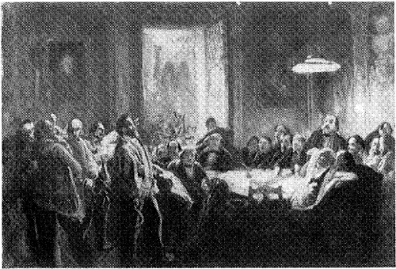

A publisher of original scholarship since its founding in 1916, New York
University Press Produces more than 100 new books each year, with a
backlist of 3,000 titles in print. Working across the humanities and
social sciences, NYU Press has award-winning lists in sociology, law,
cultural and American studies, religion, American history, anthropology,
politics, criminology, media and communication, literary studies, and
psychology.
KARL MARX’S
THEORY OF REVOLUTION
This volume is
dedicated
to
those who sow
though they will not reap.
Some seed the birds devour, And some the season mars, But here and there will flower
The solitary stars …
Library of Congress Cataloging in Publication Data
Draper, Hal.
Karl Marx’s theory of revolution.
Includes bibliographies and index.
CONTENTS: 1. State and bureaucracy. 2. v. 2.
Politics and social classes. 1.Marx, Karl, 1818-1883—Political
science—Collected works. 2. Revolutions—Collected works.
I. Title.
JC233.M299D7 301.5’92 76-40467
ISBN 0-85345-566-X
10 9 8 7 6 5 4 3 2 1
Manufactured in the United States of America
The Foreword to Volume 1 took up a number of overall problems faced by
any attempt to present Marx’s views, particularly by an attempt at “a
full and definitive treatment” of Marx’s political thought. One of these
problems can be usefully discussed again from another angle, taking
inspiration from an article by Engels called “How Not to Translate
Marx.”
I explained why this work has taken the route of presenting a large
number of passages from Marx and Engels themselves, instead of merely
offering the hundred-and-nth “interpretation” of their views, and I
contrasted this method with “quotation-mongering.” Of course,
quotation-mongering, being a pejorative, means any kind of quoting you
don’t like; but instead of pinning a definition to the mat, I offer a
more positive contribution. What are the booby traps to look for in
quoting from Marx and Engels?
The answer naturally applies in generalized form to anyone else. But
nothing compares with marxology as the natural habitat of tendentious
quotation. Ronald L. Meek put it mildly when he wrote: “All too often,
writers seem to assume that when dealing with Marx it is permissible to
relax academic standards to a degree which they themselves would regard
as quite illegitimate if they were dealing with any other
economist.”1 As usual, the main
problem is not dishonesty. To be sure, there is a minor sector of the
field, the gutter school of marxology, where anything goes; but this
need not concern us here.
The main problem is what I would call, if pressed to invent a
pseudoscientific nomenclature, Marxolalia. (Better, Marxophasia; but I
prefer the sound of the first.) It may be defined as the propensity to
garble Marx. The victim of this disorder cannot reproduce Marx’s thought in a form that Marx
would recognize. Of the many causes of this disorder, I want to
concentrate on one that is remediable.
There are few writers or thinkers in history whose every word and grunt
has been examined by hostile critics so minutely as Marx’s has. This is
quite in order, provided that the words and grunts are evaluated with
ordinary common sense and decency. Marx came into the world to challenge
all the established authorities, governmental authorities and
intellectual authorities, and he can hardly complain if the authorities
react with some hostility. They seize on the useful fact that every
scrap of his correspondence has been published somewhere; unpublished as
well as published manuscripts have been exhumed and reprinted;
unfinished fragments have been solemnly published and annotated;
workbooks and notes have been scoured; scraps of paper have been fished
out of wastebaskets, as it were, and given to the world; volumes of real
and alleged conversations have been put into circulation.
It may seem unnecessary to point out that all this material exists on
several levels of reliability, and investigators who want to be trusted
must always ask themselves what exactly they are quoting from. Yet
hundreds of times, over and over, I have seen remarks by Marx that were
hastily dashed off in a letter to a friend, or a few words jotted down
in a note, solemnly quoted (without identification) as if they were
long-pondered programmatic statements every syllable of which had been
thought out for its exact scientific meaning—indeed, even without regard
to other statements on the subject of greater reliability. I wonder how
many figures would come through such a working-over, done with a view to
discreditment. In any case, several dozen “interpretations” of Marx can
be fabricated, with little difficulty, through proper exegesis of the
proper “quotations” thus wrenched off; and this has been going on
industriously for a hundred years.
I repeat that I am not referring to garden-variety types of disingenuous
or out-of-context quoting, but to a more elusive sort of Marxolalia.
Thus, one sentence quoted from Marx’s Grundrisse (economic
workbooks) is just as quotable as any other sentence, isn’t it? But the
so-called Grundrisse is a peculiar nonbook: it consists of
notebooks kept by Marx with no thought of publication—notes and jottings
toward the eventual writing of a work on political economy. Each
sentence represents a thought that popped into Marx’s mind at the
time—unreviewed, unrevised, uncriticized, often ungrammatical, and
sometimes undecipherable. If it turned out to be badly formulated, Marx had no obligation to add
a footnote to the notes for the guidance of future sharpshooters. Not
only that: these thoughts and notes were often scribbled late at night
and when Marx was suffering from carbuncles, gastrointestinal illness,
headaches, and assorted dyspepsias. Everyone knows Marx’s jocular
remark, on finishing Capital, that “I hope the bourgeoisie will
remember my carbuncles all the rest of their lives,”2 but quoters should remember them too.
I have just taken an important work as example, but all kinds of quoting
operations are undertaken also on the most ephemeral sources.
Let us consider this systematically, by drawing up a list of the types
of writings and documents by Marx or Engels that are used for quoting or
quotation-mongering, in descending order of reliability. At the top of
the list are naturally:
1. Books and major essays that were published under the control of the
writer, with the usual opportunity for correction, revision, etc. (Most
of Marx’s or Engels’ major works will come to mind as examples.)
2. Articles published under the control of the writer.
a. Articles composed as political statements, for a political audience,
and signed; in short, intended for the purpose they are used for.
b. Articles in which remarks on issues occur only in passing, often
elliptically.
c. Journalistic articles, written as hack work, perhaps not even signed.
3. Articles published not under the control of the writer. Perhaps the
most extreme case is that of New York Tribune articles that
were rewritten or added to at will by the editors.
4. Unpublished manuscripts.
a. Unfinished or fragmentary, often never reviewed or revised—unfinished
for various possible reasons, including dissatisfaction with the work.
b. Finished—but unpublished for various possible reasons, including
dissatisfaction.
5. Letters. The circumstances of a letter, including its addressee, must
always be taken into account. When writing to Engels, Marx takes much
for granted and does not have to phrase his thoughts as they come to the
pen in order to avoid ignorant or malicious misinterpretation. Some
letters to others are diplomatizing. All letters are time-bound:
opinions expressed (for example, about people) may change. Letters are prime examples of
ad-hoc writings that cannot be usefully quoted until the context is
evaluated.
a. Circular letters. These are very like political statements, more like
considered articles than casual correspondence.
b. “Educational” letters. Written to strangers in some cases, to party
leaders in others, these are written with some conscious effort to set
down a view; but even so, without the responsibilities entailed by
publication.
c. Intimate letters, where all is “thinking aloud” and no effort is made
to avoid possible misunderstandings by a third party. Most of the
correspondence between Marx and Engels comes under this head. Very
often, general-sounding statements have specific contexts and meanings.
d. Casual or ad-hoc letters, perhaps hastily dashed off, given little or
no consideration of any kind.
6. Private notes, notebooks, and workbooks. These were not only not
written for publication but were often written in a personal
“shorthand,” or in a telegraphic and allusive style, intended only for
the writer’s eyes. The aforementioned Grundrisse is an example
of a long work in this style; Marx’s “Conspectus of Bakunin’s Book
&c.” is a shorter and more fragmentary case.
This list does not touch on other lines of variation, such as the
difference between the early Marx and the mature Marx. Whatever one’s
views on this score, I do not understand how anyone can quote one of
Marx’s Rheinische Zeitung articles of 1842—written before he
was even a socialist—as if it were as valid a statement of “Marxism” as
anything later, without even alerting the reader. The same is still true
about (say) the first year in which Marx adopted socialism and started
working out his theory and method; for example, in writing the so-called
Economic and Philosophic Manuscripts of 1844. And it is still
true in every later case where we know that the formation of Marx’s
theory of society is in process. The opposite theory of
quotation-mongering has it that “Marxism” is something that comes into
the world integral and homogeneous: chip anything off this monolith
(whether in 1842 or 1882, from a book or from a carbuncular grunt) and
you have a “specimen” of Marxism which needs only to be put under the
microscope to show anything you want to know, like a specimen pebble
from a Precambrian stratum.
And we have not even mentioned the peculiar difficulties added by translations—difficulties
from one standpoint, opportunities from another. In English books it is
translations that are being quoted most of the time. But we cannot go
into this here.
“I AM NO MARXIST,” SAID HE
A number of examples of How Not to Quote Marx occur incidentally in the
present volume, in the course of other expositions. Let us take an
additional example, typical of its species, which we would not otherwise
discuss, but which crops up frequently for easily understood reasons.
Professor George H. Sabine’s History of Political Theory begins
its chapter on “Communism” with the following information:
Karl Marx once said of himself that he was not a Marxist. This remark
referred in part to his own comparative indifference to the doctrinal
completeness of his social philosophy and the misgivings with which he
and Engels in their later life regarded the dogmatism of some of their
disciples. It referred also to the wide variety of influences both
theoretical and practical that flowed from his thought.3
Of the three things Marx is said to have referred to by this statement,
at least two are fictional: Professor Sabine simply made them up. This
is a space-efficient method of “interpretation,” since it wastes no time
on presenting what Marx may have said on the subject. Countless other
marxological authorities have quoted Marx’s jeu d’esprit, “I am
no Marxist,” to prove other imaginative interpretations, including the
thesis that there is no such thing as Marxism at all. Marx himself said
so, didn’t he?
Indeed, the citing of Marx’s revelation of his non-Marxism seems to have
accelerated in recent decades, if I am not mistaken—partly feeding on
itself, and partly perhaps reflecting a cyclical shift from refuting
Marx to defusing him, in that movement which swings from seeing him as a
terrorist ogre to painting him as a tame pussycat. I ask the reader’s
indulgence, therefore, for taking this space to present an assemblage of
the facts, since this desperate recourse has never been taken before.
To begin with, it all stems from a pointed quip by Marx which we know of only because Engels
mentioned it incidentally on four occasions, mostly in letters. By a
pointed quip I mean a remark which is made in jocular form in order to
soften a serious point. It follows that it is precisely the form, the
literal wording, which is intended to be taken good-humoredly. The
marxological transmogrification of this boutade (to use
Longuet’s later expression) into a programmatic declaration for the ages
is one of the monuments to marxological prestidigitation.
It is first mentioned by Engels in a letter written while Marx is still
alive and a neighbor of his. Writing to Bernstein in 1882, Engels
poohpoohs the assertion of a French Possibilist (reformist) that
“Marxism” is discredited in France (Engels quote-marks the term because
it was used in the assertion), but he goes on to indicate that he does
not think much of this French “Marxism” himself.
Now to be sure, so-called “Marxism” in France is an altogether peculiar
product, so much so that Marx said to Lafargue: ce qu’il y a de
certain c’est que moi, je ne suis pas Marxiste [what is certain is
that, as for me, I am no Marxist].4
At the risk of overkill in explaining a joke—always a lugubrious thing
to do—it must be pointed out that evidently Engels has not the slightest
idea of the profound meanings that will be read into this. (This does
not bother the marxologists, for it is one of the common tenets of the
fraternity that Engels always got Marx all wrong, whatever he
wrote.)5
Marx had to tell Lafargue face to face that he, a leader of the French
movement, did not understand his own theory and politics—not in a
quarrel but in a perfectly friendly fashion. This is the usual context
of the pointed quip in civilized society. We know that this fits the
background of Marx’s relations with his son-in-law and disciple, for
there is plenty of evidence of Marx’s dim view of Lafargue’s
theoretical-political capacity and his frequent state of exasperation
with the Frenchman’s mistakes and inadequacies. The relationship can be
seen even better in Engels’ voluminous correspondence with Lafargue,
which continually verges on cordial irritation with the shortcomings and
immaturity of the entire French party leadership; it is not only a
question of Lafargue himself. (This is not the first time that Marx and
Engels lament the incapacity of would-be disciples to understand their
ideas, and it will not be the last.)6 In the other three
places where Engels mentions the same quip, this and nothing else is the
content.
Let us set these
passages down for the full record. They all occur in 1890: in two
letters written in August and in a published article a month later. In a
letter to Schmidt, Engels deplores the quality of a book review by
Moritz Wirth:
… little Moritz is a calamitous friend. The materialist conception of
history too has a lot of such friends today, to whom it serves as a
pretext for not studying history. Just as Marx said about the
French “Marxists” of the late seventies: “Tout ce que je sais, c’est
que je ne suis pas Marxiste” [All I know is that I am no
Marxist].7
Three weeks later Engels recalls this again, writing to Lafargue
himself. The subject here is the faction of intellectuals in the German
party called the “Jungen,” which is discussed below in Chapter
17:
These gentlemen all go in for Marxism, but of the kind you were familiar
with in France ten years ago and of which Marx used to say: “tout ce
que je sais c’est que je ne suis pas marxiste moi!” And he would
probably have said of these gentlemen what Heine said of his imitators:
I sowed dragons and I reaped fleas.8 [This entire
letter is in French.]
In a few days Engels has to write a public reproof of the “Jungen”
faction, for publication in a party paper. Marx’s saying is still in his
mind, and his open letter includes the following:
Marx foresaw also these disciples when, toward the end of the ’70s, he
said of the then prevailing “Marxism” of certain Frenchmen: “tout ce
que je sais, c’est que moi, je ne suis pas marxiste”—“all
I know is that I am no ‘Marxist.’”9
In short, all facts
indicate we have a perfectly ordinary situation in which Marx—in order
to tell a comrade and friend (and son-in-law) that in all frankness he
does not know his class from his elbow—uses a time-honored method of
taking the edge off a blunt criticism: If what you people are
putting out is “Marxism,” then I’m no Marxist. This sort of thing
has been done several thousand times with less brouhaha.
But isn’t it odd for Marx to “deny” he is a Marxist, even jocularly? On
the contrary, it would have been odd if he had reacted any other way,
when the term began to show up. All historical figures who are fated to
be suffixed with -ist (or, worse still, -ite) abjure
it to begin with; for these tags almost always begin by being used as
epithets by enemies. The reason is simple: labeling a set of ideas or
policies with an individual’s name makes it seem “personal” and
cliquish; and this is often the conscious intent of the labeling.
Robert Owen devised a dozen labels for his ideas and organizations, but
never “Owenite.” Proudhon said: “I am told that somewhere or other there
are people who call themselves Proudhonists; they must be imbeciles
…”12 John Wilkes, hearing someone fulsomely
praise his speeches to his face, retorted: “Sir, surely you don’t
suppose me to be a Wilkite?”13 Closer to our
times, Trotsky wrote polemics to prove that “Trotskyism” was nothing but
an invention of the Stalinists, whereas he preferred to call his views
“Bolshevik-Leninism”even though his own followers called themselves
Trotskyists quite freely; and while Stalin by exception promoted the use
of the term Stalinism as an honorific at home, his followers abroad commonly
took the label as a Trotskyite slander on a leader who was merely an
unhyphenated Leninist—a term Lenin eschewed. So it goes. The initial
indignant rejection of conferred -isms, ists, and
ites is so standard in political history that one wonders how
it escaped the attention of the marxologists who work wonders with
Marx’s innocent quip.
As usual, the term Marxist was invented by enemies. Even so, it
took some time to show up. As soon as Marx came on the scene as the
proponent of a particular approach to socialism, rivals pointed fingers
at the “Marx tendency.” It is hard to see how one can denounce a
viewpoint without putting a name to it. Marx might want to call his
views “scientific socialism” or by some other nonpersonal designation,
but an enemy has no inhibitions about personalizing things immediately.
“Marx tendency” or “Marx group” translates into German as Partei
Marx (which does not mean “Marx party” in our current sense). It is
Partei Marx that first showed up, along with Partei
Everybody Else. It was probably used during the 1846 dispute with
Weitling and Kriege. Hess, temporarily distressed by the “Circular
Against Kriege,” wrote to Marx: “with your party I will have nothing
more to do.”14 What
Partei? Well, the Circular had charged in its first lines that
Kriege had compromised the “communist party.” Kriege himself retorted
that “the ‘party’ that Marx allegedly represents does not exist.” Hess
just as freely referred to the “Kriege ‘Partei’ ” in a letter.15 I also think that the tag Partei
Marx was used for the Neue Rheinische Zeitung group in
1848–1849—by others, not by Marx’s collaborators.16 All this was standard operating procedure,
and not very relevant, since it was so common.
Partei Marx was spread over the whole German press in 1852 when
the Prussian government organized its frame-up trial of the Cologne
Communists and featured the designation in the official indictment,
along with Partei Willich-Schapper.17 The split in the Communist League in
September 1850 had produced these two factions or groups, and the
government’s case revolved around them. Marx’s pamphlet for the defense,
Revelations on the Communist Trial in Cologne, discussing the
alleged evidence, was peppered with references to both of the group
labels—but with a typical difference. “Partei Marx” almost
always appeared in quote-marks; not so Partei
Willich-Schapper.18 The tag popped
up contemporaneously in a letter by Mrs. Jenny Marx and one by Engels.19 But in fact Marx’s name had not yet been
converted into an ism.*
This contribution—the invention of the terms Marxian and
Marxist—seems to have taken place in 1872 as the struggle in
the International heated up before the Hague Congress. It was made by
Bakunin and his bore-from-within clique, in particular his first
lieutenant James Guillaume. Characteristically, the new labels were
not applied to Marxists (in any sense we would recognize) but
to the majority on the General Council which was opposed to Bakunin, and
which thus was accused of being Marx’s creatures.
The first appearance, as far as we know, was in a faction-organizing
letter sent by Bakunin to Italy, dated January 23, charging that “the
Jewish-Teutonic, or Marxian, group which still dominates the General
Council” wants to convert the International into a kind of state, and so
on. His attack on “the Marxians in the General Council” offers Bakunin’s
common mix of anti-Semitism, racialism, and slander, as he denounces
“the hatred of Marx and the Marxians against us … That is the way
Germans and especially German Jews combat their opponents.”21 Bakunin uses marxien, in more or
less the same way he uses mazzinien in dealing with Mazzini.
A few months later, the Bakuninists published letters of protest against
the General Council’s pamphlet The Alleged Schisms in the
International, written by Marx and Engels. Bakunin’s letter, dated
June 12, denounced “la politique marxienne” along with the
“German and Russian Jews” who were Marx’s “agents,” particularly “the
little Russian Jew” (N. Utin) who was Bakunin’s chief opponent in
Geneva, all of them being accused of holding dangerous ambitions, “both
personal and racial,” implying a Jewish conspiracy.22 A broadside by Guillaume dated June 10
likewise exposed “M. Marx’s Jewish lackeys,” but these lackeys were not
called “Marxists” until his next letter of June 15. Among the
imprecations that drip off his libertarian pen against the
“socialistes hébraïsants” were, first, “the dynasty of Marxides,” then the “Marxist
conspiracy,” and finally the “Marxists” tout court.23 In this way, the first labels for the
“Marxists” were born, like the first land animals, in a sea of mud.
Now one can be sure that the terms Marxist and Marxism
would have eventually come into use by supporters of Marx, as well as by
more or less objective historians; this usually happens with the passage
of time and the subject’s death, to answer a need. The role of enemies
seems to be to shortcut the process, for the reasons already mentioned.
At any rate, Marxism did not come into accepted use in Marxist
circles during Marx’s lifetime.*
That Marx himself would reject the term Marxist was always
beyond doubt. That his most intimate collaborators eschewed it also, up
to a relatively late date, only underlines their natural reluctance to
“personalize” a historic theory which made its way by rising above mere
cliques and individual sects. Death removes not only the person but also
the “personal” stigma of an ism, and so there was no really good reason
for Engels and for Marx’s friends to keep quote-marking the term. Still
less reason for tendentious marxology to make a fuss about it.
We look forward to the time when Marx’s quip will cease to be the
favorite quotation of the quotation-mongers.
ABOUT THE PRESENT VOLUME
First, there are two reminders that need repeating from the Foreword to
Volume 1. (1) The little superscript numbers that pepper these pages,
pointing to the reference notes in the back, should be ignored by the
general reader. These reference notes never add to the line of
thought, being strictly confined to giving sources and other technical
information. (2) An unorthodox sign is used here to indicate that
certain quoted passages or words are in English in the original: the
degree mark. A double degree mark (°°) at the beginning of a quotation
means that the whole passage was originally written in English. Inside a
quotation, words or phrases originally in English are marked off using
the symbol like quotation marks, °as here.° In both forms, the device
has been used only where there was reason to signal the fact, not in
every case.
To my original remarks on extant translations, add this. It does a
reader little good to be given a reference source that can be checked
only with great difficulty, such as some out-of-print edition of a work
by Marx obtainable only in research libraries. Sometimes there is no
choice; but for this reason I have tried to confine my references to
English versions as much as possible to easily accessible editions,
whether or not those versions were actually used for citation. The new
English edition of the Marx-Engels Collected Works (ME:CW)
would be the ideal solution, not because of the quality of its
translations (which is very spotty), but because it should remain in
print and generally available for a long time, and because it is
inclusive. Unfortunately, only the first seven volumes are out as this
is written. Still, wherever possible I have given the ME:CW location of
a passage. This lacking, I have used, as the second in order of
preference, the Marx-Engels Selected Works in Three Volumes
(ME:SW). In these and other cases, the reference is bracketed if it was
not actually used for quotation but is merely given for information.
Forthcoming ME:CW volumes will continue to be used in this way as the
English-language hitching post.
The tentative outline of Volume 2 which appeared in the first volume
listed two chapters which have since been moved. The planned chapter on
the women’s rights movement has been returned to its original position
in a later volume, along with the subject of Marx’s views on women’s
emancipation in general. The chapter listed as “Nationalism and
revolution” will be treated as part of a larger subject without which it does not
make sense: Nationalism, internationalism, and foreign policy. In order
to gain adequate space for this very extensive subject, and for two or
three other subjects which will be crowded out of Volume 3, our present
plan—in agreement with the publisher—calls for a fourth volume.
H. D.
September 1977
I THE PROLETARIAT AND PROLETARIAN
REVOLUTION
1 PATTERNS OF REVOLUTION
By 1843-1844 Marx had come to look on the proletariat as the moving
force of the coming revolution. By the writing of The German
Ideology Marx and Engels were quite clear that the revolution they
advocated was a proletarian revolution. What did this mean to
them, and what did it entail?
They spent the rest of their lives answering these questions; and by the
same token it will take the rest of this work to present their answers.
But we can usefully start with some basic aspects of Marx’s developed
conceptions, especially in the borderland between terminology and idea.
1. REVOLUTION—SOCIAL AND
POLITICAL
The word revolution is most commonly used as either a bogy or a
banality, depending on whether it is seen as a sinister plot or reduced
to a mere synonym for change. When the word becomes respectable, as
ferocious words do when coopted, then not only is every detergent
advertised as “new and revolutionary,” but every new political device is
advertised as in tune with some fashionable “revolution,” such as the
Revolution of Rising Expectations. More seriously, the word is also used
historically to denote deep-going social change, as when the medieval
invention of the horse collar is called an economic revolution, or in
such terms as the Industrial Revolution. This is not said to object to
such usages, but to differentiate them from those encountered in the
framework of Marx’s theory.
In a more specific sense, a revolution is seen as a transfer of governmental power. But this
still covers a host of ambiguities. Transfer of power from whom to whom,
or from what to what? As popularly used, it may simply be a matter of a
change in personnel: this set of colonels in the Government Palace
instead of that set of politicians; the substitution of one clique or
faction for another. The term is activated especially if directly
forceful methods are used instead of constitutional forms. It may make
no more difference than the substitution of one set of political
manipulators for another by any other means—for example, by more or less
corrupt elections, or even honest ones.
The case becomes more interesting if one faction represents not merely a
different set of pockets or Swiss bank accounts, but a different stratum
or group interest—even if still within the ruling class. Marx’s analysis
of Bonapartism brought up many examples of this. Or, as we also saw in
that analysis, the new wielders of political power may represent not a
different social stratum of the ruling class but merely a different
political policy, with or without a different ideological orientation.
Or, perhaps most likely of all, both may be true: a different social
stratum acts as the bearer of a different policy or ideology. Certainly
the historical tendency is toward such a combination. But history
exhibits various permutations within these boundaries, the boundaries
being set by the range of possibilities for a given social system and
its ruling class.
Within these boundaries, one very important type of difference may
involve changes in political structure, in state forms. In modern
history most of these cases involve shifts from more or less democratic
state forms to antidemocratic ones (military dictatorship, fascism) or
the other way round. It is such transformations in governmental forms
that especially tend to get called revolutions. These are the most
highly visible forms of transfers of governmental power. All of these
involve political revolutions.
Political revolution, then, puts the emphasis on the changes in
governmental leadership and forms, transformations in the
superstructure. But if such a revolution involves a change in social
stratum even within the ruling class, a social element is plainly
entailed. Political revolutions run the gamut, from those involving
almost no social side, to those with a very important social element,
even if it is within the class boundaries we have assumed.
If these social boundaries are burst by the impact of the change, then
we have a different sort of revolution, which is of special importance
to Marx’s theory. As
Marx explained to a Cologne jury in 1849: the development of insoluble
contradictions within the society “prepares the way for social
crises, which burst out in political
revolutions.”1 The outcome is a
revolution involving the transference of political power to a new class;
and this change in ruling class tends to entail a basic change in the
social system (mode of production). It is this kind of revolution which
is most properly called a social revolution.
Unfortunately this does not end the terminological problem, as we weave
our way through the voluminous literature that talks about revolution.
If we decide to define social revolution as a basic transformation in
the social system involving its class base, then it is apparent that
such a sweeping change cannot be conceived as a mere act or event, but
as a process, more or less extended in time. The transformation from
capitalism to socialism is envisaged by Marx as such a historical
process (as we shall see in Volume 4). Moreover, it is clear that in
some cases in the past, social systems have changed basically, and
classes have risen and fallen, in a secular movement of history which
can be described as a social revolution—at least in historical
retrospect, even though no one may have been aware that a revolution was
going on.
It would be convenient if such a long-term or secular transformation in
society, however achieved, had a tag of its own, so that one could
discuss its relationship to other things called revolutions. There is no
such agreed-on label; we must take the desperate recourse of inventing
one. Let us call this a societal revolution, meaning that it
denotes a change from one type of society to another, keeping in mind
that for Marx’s theory a society is not simply a cultural but a
socioeconomic whole.
We can now narrow our focus to what tends to be called a social
revolution in Marx’s theory. It is most clearly used for a political
revolution that expresses a social-revolutionizing drive toward the
transference of state power to a new class. It is “a political
revolution with a social soul,” in Marx’s earliest (1844)
formulation.2 By the same token it points in the
direction of a societal revolution, regardless of when changes in the
social system actually begin to take place. It does this by establishing
a new constellation of sociopolitical forces, with new historic
potentialities. The societal revolution is the realization of these
potentialities. “Every real revolution,” wrote Engels, “is a social one,
in that it brings a new class to power and allows it to remodel society
in its own image.”3
Our aim is not to make
a hard-and-fast distinction between political revolutions and social
revolutions but, if anything, the reverse: to recognize how often they
are mingled in given revolutionary situations, so that the two elements
must be distinguished by analysis. For, especially in modern times,
revolutionary events tend to blend both in varying proportions. The
purely political revolution, involving a change in factions only, is
likely to be a mere palace revolution, that is, one in which the upset
takes place only on top without drawing in any sector of the people as
actors on the scene. It is increasingly limited to socially backward
areas. The modern tendency is for political revolution, however narrowly
initiated, to waken the elements of social revolution from dormancy or
to raise them to new levels. Thus the relationship between political and
social revolution is not static. All this has been true of bourgeois
revolutions since the first stirrings of the bourgeoisie, and it will
provide important background for our chapters on that subject (Chapters
7-10 below). In terms of Marx’s development, it was
the revolution of 1848-1849 that was the proving ground.
For Marx, then, revolution is defined by the nature of the change
involved, by sociopolitical relations. In the popular mind, where “the
ruling ideas are the ideas of the ruling class,” and therefore in
journalistic terms, revolution and revolutionary developments are seen
primarily in terms of particular means: force and violence, as
departures from the political methods prescribed by the established
powers. We shall devote considerable attention, in Volume 3, to Marx’s
conception of the relationship between social revolution and the means
to effect it; suffice to say that the relationship emerges from a social
historical analysis—it is not one of definition. Just as revolutionary
change obviously did not always involve violent action ipso facto, so
also violent outbreaks are by no means necessarily revolutionary, even
if this term is stretched to include counterrevolutionary. Time and
again, right up to today, it has taken violent methods (“revolutionary”
actions in the eyes of the status quo) to gain simple reforms. Indeed,
political revolution (of some limited sort) is not a rare road to social
reforms. A related conception identifies revolution with the technique
of the coup d’état: revolution suggests seizing the radio station,
telephone exchange, local Winter Palace, and so on. This crude myth was
by no means invented by Hollywood, which took it over from the
respectable literature where it was already entrenched.
These ruling ideas
about revolution are typically bourgeois conceptions, class-conditioned
distortions of the social reality. They represent the other side of the
coin of a ruling class’s built-in dread of revolutionary violence, on
the one hand, and on the other, its unwillingness and inability to
conceive of revolution as a social upheaval from below. A putsch by an
armed gang is something it can handle, and also something it can dismiss
as banditry or pathology; in neither case need it face the social
reality of mass revolution, which often comes as a surprise. The
definition of revolution in terms of means (violent, illegal) is a
characteristic of bourgeois ideology just as much as its opposite,
namely, the insistence that social change must be limited to nonviolent
means. This bourgeois approach provides a spectrum from the most
pacifistic reform to the most violent putschism; and no part of it has
anything to do with Marx’s theory, which stands outside of this
obsession with the dichotomy of violence or nonviolence.
The revolution that concerns Marx is defined by the nature of the social
change it entails, by the class relationships in that change. It is a
political revolution which is the immediate manifestation of a social
revolution.
2. CLASS POLITICAL POWER
Proletarian revolution is, then, a short form for proletarian social
revolution—transference of state power to a new ruling class, the
proletariat.
This raises the problem of the class nature of the new political power.
In principle this problem is no different from that of analyzing the
class nature of any other political institutions, including those of the
established society; this is what we discussed under the head of the
theory of the state, in Volume 1. The difference is that in a
revolutionary context everything is in flux, and does not meekly stand
still for leisurely examination. The difficulties thus created are
immense.
Marx offered no political formulas on this subject, nor could he do so.
The totality of a social (class) analysis is at stake. Marx had to take
up more than once the nature of given political movements that aspired
to power or were moving to seize it. He had to analyze stated
declarations, claimed
intentions, programmatic documents, articulated ideologies and
unarticulated biases, the correspondence of word and deed, objective
socioeconomic linkages, and everything else bearing on the totality of
the class configuration, not only at a given moment but over a period of
experience. This refers us back to the social theory on which politics
(including Marx’s politics) is based. Working this problem out in a
concrete case tests a theory of society’s laws of motion.
The Communist Manifesto raised this problem in a discussion of
what it called feudal socialism. Its interest lies in this: it
identifies a type of “socialism” which conceals its real class character
behind an appeal to the proletariat’s interests:
Owing to their historical position, it became the vocation of the
aristocracies of France and England to write pamphlets against modern
bourgeois society….
In order to arouse sympathy, the aristocracy were obliged to lose sight,
apparently, of their own interests, and to formulate their indictment
against the bourgeoisie in the interest of the exploited working class
alone …
In this way arose feudal Socialism … half echo of the past, half menace
of the future; at times, by its bitter, witty and incisive criticism,
striking the bourgeoisie to the very heart’s core; but always ludicrous
in its effect, through total incapacity to comprehend the march of
modern history.
The problem of exposure is first solved with a flourish:
The aristocracy, in order to rally the people to them, waved the
proletarian alms-bag in front for a banner. But the people, so often as
it joined them, saw on their hindquarters the old feudal coats of
arms,* and
deserted with loud and irreverent laughter.4
But the section ends with a more concrete sociopolitical analysis of
what betrays feudal
socialism as antiproletarian. More important, we shall see in Chapter 9
below that Marx and Engels did in fact have to write a great deal more
to analyze the nature of this alien socialism—alien to the proletariat
as a class.
But analysis does not end the matter; the proof of the pudding is in the
eating; the class nature of revolution is tested by what the new class
in power does. Social revolution means that the new class in power does
not limit itself to change within the framework of the old social
system, but tends to put its new state power into basic conflict with
the former ruling strata. And the conflict must be resolved more or less
quickly in favor of the new or the old; the new political power must
proceed to revolutionize the socioeconomic foundation, or else it will
be destroyed by the rooted power of the latter. In either case, by
revolution or counterrevolution, congruence will eventually be
reestablished between the political and socioeconomic institutions.
The conflict may be seen by both sides only in embryo. This is what
happened when, four months after the February revolution of 1848, the
Paris workers rose up against the new republican regime. In the midst of
these June Days, Marx wrote about the difference:
None of the innumerable revolutions of the French bourgeoisie since 1789
was an assault on order, for they left standing class rule, the
slavery of the workers, the bourgeois order, no matter how
often the political form of this rule and this slavery changed. June has
impugned this order. Woe to June!5
Marx had to make this analysis in the flux of struggle. After all, the
problem of the class nature of a new or aspiring political power does
not exist only for uninvolved observers or distant historians. The
problem is itself part of the political and social struggle going on,
and it may not be resolvable by theory but only in the course of the
struggle itself. The ongoing struggle, especially in critical phases,
provides tests—tests of who represents what. Part of the struggle is on
convincing the proletariat not only of who represents what (passive
formulation) but of whom to act through and with. It is not merely a
matter of registering a verdict post hoc.
3. THE GUIDING AIM OF REVOLUTION
It is insufficiently appreciated that, from early on, Marx and Engels
habitually stated their political aim not in terms of a desired change
in social system (socialism) but in terms of a change in class power
(proletarian rule).
The two could not be assumed to be synonymous. The aim of proletarian
rule, to be sure, commonly assumed socialism or communism as the
corresponding societal form; but the reverse by no means worked
automatically. Marx and Engels took as their governing aim not the
aspiration for a certain type of future society, but the position of a
social class as an embodiment of humanity’s interests; not an abstract
ideology of change (socialist ideas) but a class-conditioned
perspective, what they called the proletarian outlook. In this context,
the term proletarian outlook does not mean the outlook of a
proletariat taken statically (for there is no such single outlook) but
rather the outlook on society corresponding to the basic interests of
the proletariat.
After Marx’s initial period of exploration in 1843-1844,6 the joint view of Marx and Engels on this
issue was clearly stated in The German Ideology. Struggles over
political forms, “all struggles within the state, the struggle between
democracy, aristocracy, and monarchy, the struggle for the franchise,
etc., etc., are merely the illusory forms … in which the real struggles
of the different classes are fought out among one another.”
Further, it follows that every class which is striving for dominance,
even when its dominance, as is the case with the proletariat,
presupposes the abolition of the old form of society in its entirety and
of domination in general, must first conquer political power in order to
represent its interest in turn as the general interest [of society],
which in the first moment it is forced to do.7
Behind the ideology of change is the class representing change: “The
existence of revolutionary ideas in a particular period presupposes the
existence of a revolutionary class …”8
This emphasis in The German Ideology is tied up closely with
the view of the revolution not simply as a certain transformation of
society but above all as a transformation of people. Socialism as the
“revolution in humankind” (which will be discussed in Volume 4) was not
an afterthought for Marx but the conception with which he began.
Only the proletarians
of the present day, who are completely shut off from all self-activity,
are in a position to achieve a complete and no longer restricted
self-activity, which consists in the appropriation of a totality of
productive forces and in the development of a totality of capacities
entailed by this.9
The socioeconomic arrangement (socialism) was the means; the
revolutionary target was something else, which merely required
socialism:
In all appropriations up to now, a mass of individuals remained
subservient to a single instrument of production; in the appropriation
by the proletarians, a mass of instruments of production must be made
subject to each individual, and property to all. Modern universal
intercourse cannot be controlled by individuals unless it is controlled
by all.
The revolution changes people, not simply by its ultimate effects, but
in its course:
This appropriation [as described above] is further determined by the
manner in which it must be effected. It can only be effected through a
union which by the character of the proletariat itself can again only be
a universal one, and through a revolution in which, on the one hand, the
power of the earlier mode of production and intercourse and social
organization is overthrown and, on the other hand, there develops the
universal character and the energy of the proletariat, which are
required to accomplish the appropriation, and the proletariat moreover
rids itself of everything that still clings to it from its previous
position in society.10
In this whole passage Marx has his eye on what the revolution means for
humankind. He proceeds to discuss what the philosophers have meant by
der Mensch as a social abstraction, how they substituted this
social abstraction for the actual individuals of given social classes,
and thus transformed history into a “process of consciousness” instead
of a development of class-conditioned social entities. By ignoring the
individuals’ subjection to the distortions of class society (the
division of labor), the philosophers worked a sleight-of-hand: “the
average individual of the later stage was always foisted on to the
earlier stage, and the consciousness of a later age on to the
individuals of an earlier.”11 This later stage, or
age, is still to be won; that is what the revolution has to do.
It is important to establish that this order of priority continued to
govern Marx’s and
Engels’ statements of the meaning of revolution, even when they were not
directly discussing the issue. Thus Engels in 1847:
In all civilized countries the necessary consequence of democracy is the
political rule of the proletariat, and the political rule of the
proletariat is the first presupposition of all communist
measures.12
The same priority was embodied in the basic statements of the
Communist Manifesto:
If the proletariat during its contest with the bourgeoisie is compelled,
by the force of circumstances, to organize itself as a class; if, by
means of a revolution, it makes itself the ruling class, and, as such,
sweeps away by force the old conditions of production, then it will,
along with these conditions, have swept away the conditions for the
existence of class antagonisms and of classes generally, and will
thereby have abolished its own supremacy as a class.13
Thirty-five years later Engels referred back to this passage in a letter
giving a summary statement of the aims of revolution, in which, as
usual, he states the “ends of the social revolution of the future” in
terms of proletarian power; the matter of socialist reorganization of
society is not even mentioned, though assumed.14 There is no question of counterposing one
to the other; it is the governing priority which is exhibited. Elsewhere
he would couple the two, while maintaining the same order:
The revolution which modern socialism strives to achieve is, briefly,
the victory of the proletariat over the bourgeoisie, and the
establishment of a new organization of society by the destruction of all
class distinction.15
The point can perhaps be sharpened by posing an occasionally mooted
question: what is it that defines the crux of Marxism? The
problem has been pointed up by the fact that one or another Marxist has
rejected this or that theory of Marx’s, say, “dialectical materialism,”
or the labor theory of value. There can be little doubt about the answer
given by Marx and Engels, and it would not be pitched in terms of a set of ideas.* Their ism must be basically
defined, in terms of class power, as the theory and practice of the
proletarian revolution.
In point of fact, both Marx and Engels seldom raised a question in terms
of definition. One case in which Engels did this occurred in 1846,
shortly after the completion of The German Ideology. He
described in a letter his debates with the followers of True-Socialism
in a German workers’ club in Paris:
I therefore defined the objectives of the Communists in this way: (1) to
achieve the interests of the proletariat in opposition to those of the
bourgeoisie; (2) to do this through the abolition of private property
and its replacement by community of goods; (3) to recognize no means of
carrying out these objectives other than a democratic revolution by
force.19
The order of priority goes to the heart of the matter in the following
sense. Before and after Marx, most varieties of socialism or communism
defined themselves in terms of a desired transformation in socioeconomic
organization, and adopted a working-class orientation (if they did so at
all) in order to effectuate this program.20 For Marx, this
relationship of means and ends was reversed. The revolutionary program
is defined in terms of a new class ascendancy; the need for a
reorganization of society is the consequence. While Marx’s well-known
reluctance to concern himself with the forms of future socialist society
has been ascribed to an overreaction against utopianism, a contributing
element is the fact that it is not the form of organization of future
society that is in the center of his theory of revolution.
There is still another aspect of this question of priority. From Marx’s
standpoint, what made his theory revolutionary was that it looked to a
literal overturning: not simply an overthrow, the deposition of
established power, but a turning-over of the social corpus itself, as
“the lowest stratum of our present society” stirs, heaves up, with “the
whole superincumbent strata of official society being sprung into the
air,” as the Manifesto
pictured it vividly. This is the revolution; the revolution is not the
adoption of a certain social schema. It was only the revolution of the
exploited majority that could do this, in Marx’s view; therefore the
revolution from below had to be a proletarian revolution, and the
proletarian ascendancy to power had to be a revolution from below.
4. PROLETARIAN AND BOURGEOIS
REVOLUTION
In presenting the proletariat as the ruling class to be, Marx often
stressed that in this respect the proletariat would only be doing what
other classes had done before it throughout the history of the world.
Most explicit was an analogy with the bourgeoisie, which also dominated
a historic era by its struggle for the conquest of political power. The
bourgeois revolution was the social revolution of the past, the
proletarian revolution is the social revolution of the future: this is a
common note. In both cases, a lower class organizes itself politically
to conquer state power.
But the analogy between bourgeois and proletarian revolution holds only
up to a point, like most analogies. The differences in the classes
entail equally basic differences in the revolutions they bear. Some of
these differences will best be discussed under other heads, especially
differences in perspective (abolition of classes and state, for
example). Here let us note three that are of immediate consequence for
the course of the revolution itself.
The first two are already set forth in the Communist Manifesto.
(1) All previous revolutions have been in the interest of one form of
private property over another form of private property. The proletarian
revolution breaks out of this cycle, for it is the revolution of a
propertyless class. The Manifesto puts it this way:
All the preceding classes that got the upper hand sought to fortify
their acquired status by subjecting society at large to their conditions
of appropriation. The proletarians cannot become masters of the
productive forces of society except by abolishing their own previous
mode of appropriation, and thereby also every other previous mode of
appropriation. They have nothing of their own to secure and to fortify; their mission is
to destroy all previous securities for, and insurances of, individual
property.21
This fact is of enormous moment not simply for the aims of the
revolution but for its accomplishment. For one thing, as we have seen,
the bourgeois revolution had the advantage of offering the deposed
ruling class a new lease on property-holding life, even if on less
advantageous terms.22 This was a factor in
blunting the bitterness of defeat as well as in infiltrating the enemy.
The proletariat has nothing of this sort to offer.
(2) The proletarian revolution differs from the bourgeois in that it
proposes to put political power in the hands, not of another minority
class to exploit the producers in a new way, but of a class representing
the exploited majority. This was strongly stated in the Manifesto as
part of the “upheaval from below” aspect stressed in the preceding
section:
All previous [historical]* movements were movements of minorities, or in the
interest of minorities. The proletarian movement is the [self-conscious]
*
independent movement of the immense majority, in the interest of the
immense majority. The proletariat, the lowest stratum of our present
society, cannot stir, cannot raise itself up, without the whole
superincumbent strata of official society being sprung into the
air.24
These two differences will also be important in connection with the
perspective of abolishing classes and the state.
(3) The third difference is partly an outgrowth of the first. The
bourgeoisie, a property-owning class, was able to build up its social
relations gradually within the womb of feudal society and to attain
effective control of economic power within the framework of the old
society, before it was able to take political power and change the class
nature of the state. Its economic power developed with the inevitability
of gradualness (this is where the phrase applies)—even with the aid of
the still feudal or absolutist state. The latter not only could not
resist this process but was compelled to desire it. Secure in their
economic power, the bourgeois could use this position of strength as a
fortress from which to press further toward the acquisition of decisive
political power.
If any class was ever in a position to bring about its transformation
of society gradually
and without upheavals, it was certainly the bourgeoisie. But history
shows us that this process had its limits in the sphere of political
power. Within the old state, the bourgeoisie was certainly able to
achieve considerable quantitative increase in political weight
(political “power” in the colloquial sense of influence), but the state
continued to be basically controlled by an alien (prebourgeois) class
force which merely bent to the new pressure. The old ruling classes did
not release their death-clutch on the state levers except after a
definite period of political revolutionary action, which unblocked the
development of the bourgeois social transformation.
The proletariat cannot emulate this pattern, because it differs
basically from previous ruling classes in that it is not a
property-owning class; in fact it develops as a class insofar as the
producers are separated from ownership of means of production. The
proletariat cannot build up a class economic power within the shell of
capitalist society, as a prelude to overwhelming that society by its
economic strength, in some fashion comparable to the pattern of
bourgeois revolution.
Some contrary conceptions, looking to the rise of a proletarian
“economic power” of some sort within the womb of bourgeois society, will
concern us in Volume 3 in connection with socialist reformism. Here let
us mention three aspects of the problem in order to highlight it. (1)
Individual workers may own property—a home, for example, not to speak of
clothes and toothbrush—but these are items of personal property of which
they are the direct consumers; these things are not the private property
which functions as means of production in the economic power structure.
All the worker-owned homes in the country give the proletariat no
economic leverage in the system and no political leverage of social
significance. (2) It was once believed in some reform circles that the
organization of cooperatives provided a proletarian analogue to the
bourgeois experience; and Marx had to argue against this as an
illusion.25 This tendency has almost disappeared today
even as a type of socialist reformism; for one thing, producers’
cooperatives have failed to develop in the fashion predicted. (3)
Another sense in which a sort of proletarian economic power has been
seen as growing up within the womb of capitalism, to eventually take it
over, is the view that trade-unionism has this historic role. This often
plays on the colloquial use of economic power that has been mentioned:
it is influence or pressure that is meant, the need to be reckoned with,
not the
institutionalized power of property.* Trade-unionism is a modern
form of the same economic power that every exploited class has had in
history: the power to threaten by its struggle the revenues and
perquisites of the possessing classes and thereby to obtain concessions.
The view that sees trade-unionism literally as the womb-form of
socialism is classical syndicalism, which will be touched on in
the last section of Chapter 5 below.
In sum: for Marx, the working class (unlike the bourgeoisie) cannot
inseminate its own system of economic power within the old one, thereby
establishing a plateau of power from which to gain the political
heights. The order necessarily is the reverse. The proletariat—through
the organization of its political movement, like every other aspiring
class—must first conquer political power and then begin the process of
socioeconomic transformation. For the bourgeoisie, political power was
finally plucked as the ripe or overripe fruit of its socioeconomic
power, its power as a possessing class. For the proletariat, political
power is needed as the engine with which to bring a new social order
into existence.
As a consequence of the comparison between bourgeois and proletarian
revolution, the question has been mooted: which one is “easier”? Marx
has made remarks on both sides of this question, with dubious
applicability. In The Eighteenth Brumaire he has an explicit
comparison, although by bourgeois revolutions he really has 1789 in
mind, and by proletarian revolutions, or “the revolution of the
nineteenth century,” he has the June 1848 uprising in Paris before him.
The social revolution of the nineteenth century cannot draw its poetry
from the past, but only from the future. It cannot begin with itself
before it has stripped off all superstition in regard to the past.
Earlier revolutions required recollections of past world history in
order to drug themselves concerning their own content. In order to
arrive at its own content, the revolution of the nineteenth century must
let the dead bury their dead. There the phrase went beyond the content;
here the content goes beyond the phrase.26
This may be taken as a warning against imitation of past patterns on the
ground of sheer
analogy or in sheer parroting of watchwords and formulas. Marx goes on
to this:
Bourgeois revolutions, like those of the eighteenth century, storm
swiftly from success to success; their dramatic effects outdo each
other; men and things seem set in sparkling brilliants; ecstasy is the
everyday spirit; but they are short-lived; soon they have attained their
zenith, and a long crapulent depression lays hold of society before it
learns soberly to assimilate the results of its storm-and-stress period.
On the other hand, proletarian revolutions, like those of the nineteenth
century, criticize themselves constantly, interrupt themselves
continually in their own course, come back to the apparently
accomplished in order to begin it afresh, deride with unmerciful
thoroughness the inadequacies, weaknesses and paltrinesses of their
first attempts, seem to throw down their adversary only in order that he
may draw new strength from the earth and rise again, more gigantic,
before them, recoil ever and anon from the indefinite prodigiousness of
their own aims, until a situation has been created which makes all
turning back impossible, and the conditions themselves cry out: Hic
Rhodus, hic salta! Here is the rose, here dance!27
This is an interesting résumé of revolutionary patterns, but the flat
counterposition of bourgeois and proletarian revolutions with respect to
these patterns is not as historically general as the language implies.
In Capital Marx emphasizes an advantageous aspect of the change
to socialism:
The transformation of scattered private property, arising from
individual labor, into capitalist private property is, naturally, a
process incomparably more protracted, violent, and difficult than the
transformation of capitalistic private property, already practically
resting on socialized production, into socialized property. In the
former case, we had the expropriation of the mass of the people by a few
usurpers; in the latter, we have the expropriation of a few usurpers by
the mass of people.28
There are obviously things to be said on both sides of the calculus of
difficulty, if that rather unprofitable enterprise is undertaken. The
important point for present purposes is simply the fact of difference
itself. The luring analogies between bourgeois and proletarian
revolutions, or among all revolutions for that matter, are not without
interest; but in the last analysis the patterns of proletarian
revolution are as unique as the class it reflects.
2 THE SPECIAL CLASS
A discussion of the political problems of proletarian revolution
requires some clarification on a number of points in Marx’s social
theory. The following summary covers a number of controversial questions
by stating Marx’s view.
We have used proletariat so far with the broad meaning of
wageworkers, especially in order to differentiate it from the early
history of the word.1 It is necessary now to
be more exact, not so much for the sake of scientific accuracy as in
order to dispense with some common misunderstandings of the political
import of proletarian revolution. Marx’s attitude toward precise
definition in political terminology was typical of his day in being
relatively permissive as compared with contemporary standards; but he
grew more inclined to precision at least in the field of economic
science. We saw this reflected in his increased care to distinguish
between proletariat and working class on at least one
occasion.2
Part of the problem was that, although proletarian was already
in use as a term broader than worker,3 Marx came to assign a narrower scope to it
by a terminological outcome of his economic theory. Over the span of
Marx’s life, socialist literature attached a whole spectrum of meaning
to the word. A good example of the broad end of the spectrum was in a
programmatic statement of the Communist League, probably written by
Schapper, shortly before the Communist Manifesto: “In
present-day society proletarians are all those who cannot live on their
capital, the worker as well as the men of learning, the artist as well
as the petty-bourgeois …”4 Behind this unworkably
broad usage, as also the usage by others,5 was the strong
honorific coloration that the word was intended to convey in these
circles. Actually the real sense was a negative: all who were not
idlers. Terminologically it raised the banner of a united front by disparate social
elements against the ruling minority. Although the origins of this kind
of honorific aura around proletarian are pre-Marxist and
non-Marxist,* its
effects linger on in Marxist literature.
1. ECONOMIC DEFINITION
In Marx’s theory, the proletariat is the working class peculiar to
capitalist relations of production. It does not comprise all who work
for a living, or who do useful or necessary work. It consists of workers
whose livelihood depends on a wage relationship with employers of labor
power, and who therefore produce surplus value in the process of
commodity production.
Thus the term proletariat is not coterminous with a number of
other expressions that are often used synonymously.
• The proletariat does not include all wage-workers. For example, it
does not include wage-workers employed by government—road-building
workers, in one example by Marx6—since strictly
speaking they do not produce surplus value in the course of commodity
production.
• The proletariat does not consist only of industrial workers (whatever
that descriptive term is taken to comprise). Surplus value is produced
in the course of other types of commodity production.
• The proletariat does not consist only of manual workers. There is a
whole sphere of intellectual or mental labor which is as proletarian as
any other. (We will return to this in Chapter 16.)
• The proletariat does not consist only of workers “at the point of
production” (again, however that phrase is interpreted). For example,
transportation may contribute to the surplus value of the transported
commodity; and a truck driver may be as proletarian as an assembly-line
hand.
• The proletariat does not consist only of workers engaged in producing
tangible commodities. Producers of services (nonmaterial commodities)
may also be producing surplus value. To take an example which combines this and a
previous point: a salaried teacher in a privately owned school that is
run as a profit-making enterprise is producing surplus value for the
employer.
Some of the above points restrict the technical coverage of the term
more than is commonly realized. There is a final point to be made which
expands it significantly.
• The basic unit of the proletariat in capitalist production, considered
structurally, is not any individual but the collective laborer.
This term of Marx’s refers to the ensemble of workers whose labor taken
together is necessary to produce a given commodity. It may be a small
number (rarely one!) or a very large collectivity; but, more important,
it commonly unites both manual and intellectual (mental) labor
specialties, both labor at the point of production and away from the
factory, both labor expended directly on the product and labor
indirectly associated with the necessities of production (like
floor-sweeping). It also includes supervisory labor of any type
necessary to the production of the commodity. No one of this
collectivity is responsible for the value embodied in the commodity; all
of them are collectively. There is no basis for distinguishing between
proletarian and nonproletarian constituents of the collective laborer;
all of them are members of the proletariat.
The bourgeois-proletarian antagonism on which Marx bases the modern
class struggle is, then, not represented by the dichotomy between
dirt-splattered, horny-handed, blue-collared toilers and clean-shirted,
chair-warming paper manipulators. The latter is a bourgeois conception,
that is, it arises from class conceptions of social antagonisms that are
cherished by the ruling class as a self-serving stereotype or caricature
of the real world. This remains true even when it is inverted, that is,
when the horny-handed lower-class image is idealized by alienated
bourgeois who wish to break with their class.
2. WORKING-CLASS CIRCLES
One present importance of emphasizing the narrow economic meaning of
proletariat to Marx is to shake up common misunderstandings.
Thus, it is true that, technically, an editorial supervisor of the
Encyclopaedia Britannica may be a proletarian while a Navy Yard
shipfitter is not. But
marginal consequences of this extreme sort are not typical of the
sociopolitical role played by proletarian elements as against
nonproletarian strata. The example calls attention to the need for the
next step: a concrete examination of the relationship between an
economic stratum as such and its social role, and hence the tendency of
its relationship to the political class struggle.
Obviously the encyclopedia editor, even if technically a proletarian,
will tend to react socially and politically quite differently from a
factory hand. Marx’s conception of revolution simply puts forward the
following proposition. Objective class status is the most important
single determinant of sociopolitical role in the long run; and of the
various class situations, that of the proletariat tends to drive most
consistently toward a break with bourgeois relations.
Not in vain does it [the proletariat] go through the stern but steeling
school of labor. It is not a question of what this or that
proletarian, or even the whole proletariat, at the moment
regards as its aim. It is a question of what the
proletariat is, and what, in accordance with this being,
it will historically be compelled to do. Its aim and historical action
is visibly and irrevocably foreshadowed in its life situation as well as
in the whole organization of bourgeois society today.7
This was written before the young Marx had got very far with his
economic investigation of “the whole organization of bourgeois society.”
But it already roots the revolutionary role of the proletariat in its
life situation, the objective relations that condition its social
existence. Engels said no more when, much later, he described the
proletariat as “a class whose conditions of life necessarily drive it to
social revolution.”8
A social analysis of the relation between classes and politics will,
however, not normally show a simple duel situation. The duel pattern
implies a highly polarized conjuncture such as commonly occurs at the
end of a development, not at its beginning. For a better schema, let us
resort to the metaphor implied by the phrase social circles.
You are invited to think of a system of concentric circles, with
surrounding areas. Here the main body of the proletariat is to be seen
as a core group, occupying a central position with relation to the
revolutionary drives within society.
In the accompanying schematic diagram, one aim is to illustrate the fact
that revolution entails the setting into motion of ever-expanding
circles of society. The strategic position to set these circles into
motion is occupied by the proletariat: such is Marx’s view—“the
proletarians created by large-scale industry assume leadership of this
movement and carry the whole mass along with them …”9
In this bare schema, the whole circular area in the center represents
the working classes.
• Proletariat: the two central circles—the solid black core and
its penumbra. The core represents the industrial proletariat;
the penumbra, all other proletarian workers.
• Other wage-workers: represented by the dotted-area circle.
• Working petty-bourgeoisie (traditional petty-bourgeoisie):
represented by the last, all-white circle. It comprises artisans,
shopkeepers, etc., in the towns, peasantry in the countryside, depending
on self-employed labor and small-property ownership. The significance of
including these strata among the working classes is discussed in Chapter
11.
The bourgeoisie is represented by the outer strips running in a square;
the three differently shaded strips suggest the small, middle and big
bourgeoisies. No significance is to be attached to other features of the
schematic sketch.
The “middle classes” (in the residual sense) are suggested by the
irregular white area lying vaguely between the working-class circles and
the bourgeoisie’s square. For the use of the term middle
classes, see Chapter 11.
The relations among
classes, class strata, and class elements in revolution involve, of
course, far more than the bare bones of class definition. The underlying
demarcations of class merely provide a framework for their social
interactions. From this standpoint our emphasis will be on the main body
of the proletariat plus those sections of the population whose
life situations in society tend to be similar. (This consideration will
be concretized in subsequent chapters.) It is this combination which
tends to be called the working classes, or even the working class, in
Marx’s writings—a term, therefore, which is best regarded as not
narrowly technical-economic but as a socially extended penumbra around
the proletariat. Let us specify now that when Marx leaves the specific
ground of economic science in his discussions, and especially when the
context is political affairs, the terms proletariat,
workers, or working class tend to denote this same
combination.
3. VANGUARD AND ALLIES
When Marx wrote in the Communist Manifesto that the proletarian
revolution, unlike the bourgeois, was the “movement of the immense
majority,” it was an anticipative formula. In almost all countries,
insofar as the proletarian revolution was the movement of a majority, it
could not be the movement of the proletariat only but of the proletariat
and its allies, namely, those social circles it could set in motion.
“The class exclusively dependent on wages all its life is still far from
being a majority of the German people,” wrote Engels in 1870. “It is,
therefore, also compelled to seek allies.”10 And he proceeded to weigh the worth of
various class elements as allies. We shall do so in Part
II.
In 1848-1849 the gravamen of Marx and Engels’ policies in the revolution
was the problem of allies, as we shall see. The revolutionary movement
collapsed over this problem, over “the incoherence, incongruence and
apparent contradiction which prevailed in that movement” as a
consequence of the crisscrossing pulls of the various social sectors:
°°When interests so
varied, so conflicting, so strangely crossing each other, are brought
into violent collision; when these contending interests in every
district, every province, are mixed in different proportions; when,
above all, there is no great centre in the country … what else is to be
expected but that the contest will dissolve itself into a mass of
unconnected struggles, in which an enormous quantity of blood, energy,
and capital is spent, but which for all that remain without any decisive
results?11
What was lacking in this failed revolution was precisely the pattern of
a vanguard class successfully drawing all its allies after it.
This standpoint provides a very important qualification to the
bird’s-eye view embodied in the Communist Manifesto’s vivid
picture that “Society as a whole is more and more splitting up into two
great hostile camps, into two great classes directly facing each other:
bourgeoisie and proletariat.”12 This picture
emphasizes the long-term trend toward increasing polarization. But in
shorter-range terms, a decisive problem of each polar class is to
attract and hold class allies and to neutralize others. The proletarian
revolution depends not on the proletariat alone, but on the hegemony of
the proletariat among the revolutionary forces.
A one-sided dogmatization of this Manifesto aphorism was turned by the
Lassallean movement into the watchword that, relative to the working
class, “all other classes are only one reactionary mass.” Both Marx and
Engels ridiculed this apparently “radical” assertion and denounced it as
politically reactionary. It meant the defeat of revolution by excluding
allies. (This issue will be discussed at large in Chapter
11.)
The social revolution would not be made by the proletariat
solus, and there was no need to wait until the development of
society had made the proletariat a majority by itself, nor even to
expect that such an extreme point might be reached. To be sure, the
social revolution was possible only where the proletariat had come to
occupy “at least an important position among the mass of people,” Marx
wrote,13 but this was so because only such a
proletariat could hope to head a revolutionary class alliance. It was
the proletarian-dominated alliance which he expected to be the mass
basis of the social transformation.
4. WHY THE PROLETARIAT?
What is there in the life situation of the working class that causes
Marx to regard it as the historically nominated hard core of modern
revolution?
The answer has nothing to do with idealizing workers as such; it does
not depend on regarding workers as somehow better, or more clever,
courageous, or humanitarian than other people. Nor is it relevant to
prove, as can be done with ease, that workers often follow reactionary
courses and leaders and by no means show an invariable affinity for
progressive causes. They are at least as capable of being misled and
deceived as any other section of society (including intellectuals). They
are filled with selfish aspirations and unworthy prejudices like
everyone else. If this were the sort of thing involved, the case would
not only be closed—it could never have been opened.
Taking workers person for person as individuals, the question whether
they are better than others because they belong to an anointed class is
quite alien to Marx’s method of inquiry. In general Marx does not view
social conflicts as contests between Good People and Bad People. The
capitalists pilloried in Capital for their callous disregard of
the suffering caused by brutal exploitation were just as likely to be
kind parents and generous friends as the next person, and not given to
trampling down children in the street. People act one way as individual
atoms in the social fabric; they often act quite differently as part of
a class collectivity. The bourgeois explanation is “Business is
business”— which means that one must make a sharp distinction between an
individual-human role and a class-constrained role. The life situation
of capitalists also determines a class role, with class characteristics
that cannot be deduced simply from the sum total of individual
psychologies.
Like every other class and organic social group, the proletariat is more
than the sum of its individual atoms. The working class is
atomized when it is unorganized. Class organization brings
class characteristics to the fore, and, as a function of organization,
class characteristics increasingly take precedence over merely
individual reactions, the greater the scale of class involvement. Then,
in a feedback effect, class reactions can also reshape and reeducate
individual reactions. Thus class-consciousness develops. When Marx was
in a mind for Hegelian phraseology, the atomized class was a “class in
itself” (an sich) but became a “class for itself” (für sich)
insofar as it organized into a social entity and achieved consciousness
of its social and political role in the course of struggle.*
All this, for Marx, is a historical process, not a static mystique.
“Revolutionariness” does not reside in the substance of the proletariat
like sanctity in the Holy Ghost; the notion that every proletarian is
immanently more revolutionary than the unanointed at any given time or
place has no more to do with Marx than muttering a paternoster. The
conditions of existence of the working class provide the connection
between the economic position of the class and its political tendencies;
“the proletariat is revolutionary in accordance with its whole [social]
position …”15
The historical advantages possessed by the working class for the role of
revolutionary vanguard may be summarized as follows.
1. The conditions of life of the working class lead it to
organize, to produce a more and more homogeneous movement.
Its class propensity to organize is outstanding. The model and pioneer
in this respect is the capitalist class itself, whose own
classconsciousness and sense of class solidarity have often been
inspirations to its workers. But then, the capitalists are the other
urban class organized by modern industry. Agrarian populations are
unable to rival the achievements of the urban classes, by reason of
their own conditions of existence. “The dispersion of the rural laborers
over larger areas breaks their power of resistance while concentration
increases that of the town operatives,” observes Marx in
Capital.16 A similar contrast
obtains for the landed possessing classes.
Workers are taught organization not by their superior intelligence or by
outside agitators, but by the capitalists. Concentrated geographically
in urban areas, workers are further organized in factory gangs, assembly
lines, work shifts, labor teams, and so on—that is, by the organization
of the division of labor, to which capitalism has contributed so
mightily. Capitalism has no choice about teaching its workers the
wonders of organization and labor solidarity, because without these the
system cannot operate. Capital “assembles the bourgeois and the
proletarians in large
cities, in which industry can be carried on most profitably, and by this
herding together of great masses in one spot makes the
proletarians conscious of their power.”17 It expounds the need
for discipline, and at the same time involuntarily demonstrates the
defects of bureaucratic discipline. It enforces centralization of
effort, and glorifies the advantages of combined labor and the
subordination of individual self-interest to group needs. It socializes
masses of workers in one place and subjects them to simultaneous
resentments. The working class can say: “The organization you
teach me I will execute, and it shall go hard but I will better the
instruction.”
It is evident that these lessons are not taught equally to all workers,
even apart from the usual individual differences. There are differences
in working-class life situations, too. For example, the lessons are
plainer to assembly-line workers than to an office secretary who works
“with” a boss rather than with fellow workers. We will touch on other
reasons later.
2. The interests of workers, as a group organized by
capital, lead them to struggle.
To engage in class struggle it is not necessary to “believe in” the
class struggle any more than it is necessary to believe in Newton in
order to fall from an airplane. (In the latter eventuality, however, it
is advisable to believe in parachutes.) The working class moves toward
class struggle insofar as capitalism fails to satisfy its economic and
social needs and aspirations, not insofar as it is told about struggle
by Marxists. There is no evidence that workers like to struggle any more
than anyone else; the evidence is that capitalism compels and accustoms
them to do so.
Not only their leaders but workers as a whole begin by preferring class
peace and social tranquility, for excellent reasons. But if that ended
the matter, it would be impossible to account for the fact of class
organization. The basic function of class organization is struggle,
present or potential, reality or threat. The very notion of an
organization, like a trade union, which is inherently hospitable to
members of one class only, and which is inherently weakened until it
achieves the organization of the entire class as such, is a notion that
fits no bourgeois ideology.
3. The thrust of the proletariat’s organized struggle persistently
tends to go outside the framework of bourgeois institutions and
ideas.
The operative contradiction is between the rights of private property,
capitalism’s juridical idol, and the organized proletariat’s inevitable
insistence on
social responsibility for all vital aspects of life, including
the economic. The inherent claim of capitalist private-property
relations is that the whole area of economic life, in which one has to
earn a living, is withdrawn from the hegemony of society and handed over
to the unilateral power of capital as its birthright. The inherent claim
of an organized proletariat is that it must have a say in this. This
contradiction reflects Marx’s proposition that the basic contradiction
of capitalism is that between social production and private
appropriation.
In the course of working out the contradiction, capitalism accepts many
compromises; for example, it yields to state intervention in the name of
social responsibility, and even demands intervention, especially for
subsidies, strikebreaking, and so on. But it is in the nature of the
organized working class that it can never win enough of the substitution
of social responsibility for private corporative control; and it is in
the nature of capital that it always seeks to subordinate partial and
distorted forms of social responsibility to the continued reality of
capital’s claim to social hegemony. This opposition is a basic one.
There is a spectrum in demands for social responsibility too. More or
less radicalized workers may raise demands for price and profit
controls, regulation, even nationalization; in intense class struggles,
sit-in strikers have taken over factories without a qualm about the
rights of private property. But even conservative workers and their
unions, taking class collaboration for granted, tend to support
social-control proposals which do not impress them with having immediate
anticapitalist implications: controls over prices, health insurance,
offshore oil, and many other citadels of property. Capital is usually
more class-conscious than that; hence it denounces the insistence on
social responsibility versus private-property rights as “creeping
socialism.” This charge reflects a reality.
Samuel Gompers used to argue that his simple slogan for the labor
movement—“More!”—was more revolutionary than the socialist program. The
answer need not deny the real revolutionary implications of his slogan,
which Gompers had no intention of carrying through. “More!” is an
implicitly revolutionary program if one obvious condition is added: that
labor consistently and unremittingly press for it regardless of all
capitalist considerations, that is, even when “more” is
incompatible with capitalist needs and interests. Obviously, “more” is
not revolutionary if it is raised only when it does not incommode
capital; Gompers did not confess to this limitation, which was his
actual regulating
principle. His appeal was a class appeal, to be sure, therefore
inherently discommoding to capital; it need only be applied
unremittingly. As labor presses for more—including more social
responsibility, more control over its conditions of existence—the class
drives the logic of its own life situation outside the bounds of the
capitalist framework and tends to create the conditions for exploding
that framework.
None of this happens automatically; hence the complications discussed in
many chapters. A potentiality is set up. But this potentiality does not
obtain equally for other classes and social strata. The working class is
not the only class or group alienated, at one time or another, by the
operations and depredations of capitalism; the capitalist class has
despoiled middle-class strata, bankrupted petty-bourgeois property
owners, embittered an intelligentsia, plundered a peasantry, and so on.
Radicalized movements and parties based on these social resentments have
not been rare. But the political programs they tend to adopt as they
move into opposition to the status quo are likely to remain within the
bounds of the capitalist system. Hence they tend to concentrate on mere
political reform, on economic nostrums like money manipulation, on
demagogic attacks on the Bank Octopus or Interest Slavery or some other
excrescence of the system; they do not tend to come out for abolition of
the capitalist system. Historically and on a worldwide scale, the latter
conclusion is associated with the working class, when it moves
left. This is the content of Engels’ much-compressed aphorism: “who says
proletariat, says socialism.”18
4. The proletariat’s conditions of existence not only impel it
toward organized antibourgeois struggle, but push it into a
persistent boldness and militancy which is well-nigh unique to this
class at critical stages of struggle.
This points to the largely unexplored terrain of the social psychology
of classes. For we are concerned with this as a class phenomenon, not as
individual characteristics. This difference is important.
For example: one of the best-known stereotypes of timidity is that of
the Timid Professor—the Hollywood caricature of the pince-nez’d,
harrumphing, mousy scholar who blends out of sight among the library
books. When the individual faculty members of a large American
university are examined nowadays, this stereotype hardly seems to exist,
and maybe it never did. In fact, more and more professors are achieving the personalities
of vacuum-cleaner salesmen. Yet the organized picture is altogether
different. Put these aggressive personages together in the collective
form of an Academic Senate and the result is a peak of pusillanimity
that would blow the fuse on a sociological computer, even at times when
indignation and resentment at Trustees or Regents are sweeping their
stout hearts.
In many sociological surveys, as has been set forth to the nearest
sigma, well-paid workers, who may live in $40,000 houses and send their
children to college, register answers to questionnaires that stamp them
as indistinguishable from middle-class mentalities. So also librarians
(to take another occupation I know something about). Yet striking labor
aristocrats—say, printers—can if necessary break company windows,
rampage on picket lines, beat up scabs, and outrage other forms of
gentility, without arousing enough surprise to generate the size of
headlines reserved for three-person “student riots.” On the other hand,
underpaid librarians tend to be uneasy about actually accepting a
leaflet about the idea of organizing.
If workers on a picket line have to be restrained from bashing a
strikebreaker in an access of indignation, this does not necessarily
gainsay the fact that their thinking is “middle class” and “respectable”
in some sense; but obviously they are less constrained by the norms of
bourgeois respectability. Their militancy reflects not an immediate
state of consciousness, but the fact that they are more alienated from
bourgeois society than the questionnaires show. It reflects an objective
class position that may sooner or later tend to mold their behavior in
class-patterned situations more decisively than do their consciously
held social views—especially in the context of organization and
struggle. In turn, and in time, class-struggle action tends to remold
consciousness; it reeducates.
Militancy, taken as a collective and not merely as an individual
phenomenon, is in principle an index to the degree of alienation
characteristic of a social group, corresponding to its life
situation—its objective relationship to the productive process and to
the resulting social hierarchy and pressures. This principle is not
confined to class questions. Oppressed national or ethnic minorities
tend to be more militant than their counterparts in the dominant
society, likewise because they are more alienated from the “ruling ideas
of the ruling class”
which define the respectable limits of oppositional postures. In the
case of the proletariat, the roots of this alienation lie in the
capitalist mode of production.*
It is quite true that the peasantry and (say) the petty-bourgeoisie are
entirely capable of explosions of violent rage when driven to
desperation; in fact, it is precisely these classes that offer the best,
or worst, cases of spasms of mindless destructiveness. Few episodes can
rival the peasant Jacqueries or the ravages of a “petty-bourgeoisie in a
frenzy” for brutal ferocity, with or without the instigation of cooler
reactionary heads. This is the typical paroxysm of blind-alley
desperation; it is a confession of impotence, not an assertion of
strength. There is a great historical difference between bold militancy
and going berserk. It was to the former that Engels referred when he
contrasted the behavior of the still undeveloped working-class forces in
the 1848 revolution with the petty-bourgeois. The workers, he asserted,
distinguished themselves from the middle class “in showing upon every
occasion, that revolutionary boldness and readiness for action, in which
any party, headed by and composed principally of petty tradesmen, will
always be deficient.”20
5. The proletariat is the only class that has the social weight and
power to carry through the abolition of the old order and to build a new
society.
Contributing to this claim are the four characteristics of the
proletariat already considered. But this point is primarily concerned
with another factor, which also goes beyond the arithmetic of mere
numbers. This is the strategic role of the indispensable services
performed by the
proletariat in keeping society going. “Of all the instruments of
production, the greatest productive power is the revolutionary class
itself,” wrote Marx.21 By the same token,
this class is at the levers of economic power not by conscious decision
but by its objective conditions of existence. The conscious decision
concerns its willingness to put its hands on the levers; this is
indisputably a question of great moment, but it arises because no other
class has the choice.
A qualification to this claim is the situation of the
technological-scientific employees of a sector of the economy, insofar
as they are considered to be outside the working classes (untrue for
most of them, from Marx’s standpoint) or insofar as they are taken as a
separate class by themselves (a view even harder to justify). In any
case, the type of argument that can be made for this stratum and its
potentiality only underlines the case for the working class as a whole.
Experience shows that the whole of society quivers when the working
class stirs; when a substantial sector of it undertakes a large-scale
battle, the authorities react as to civil war; and this is true even on
terrain far from revolution. It is true in spite of all the theses
broadcast about the alleged fading away of the working class. So far the
periodic announcements that the working class is obsolete, having been
displaced by technology, automation, and so on, have not been reflected
in the realities of social struggle.*
Behind all of the foregoing considerations is a generalized formulation
which needs to be stated. It is perhaps most closely related to the
third point. Marx’s theory asserts that only the proletariat,
by the conditions of its existence, embodies a social
program pointing to an alternative to capitalism.
However desperate a peasantry or a petty-bourgeoisie may become, these
classes cannot give society a lead in a new direction, not simply
because of social-psychological constraints, but because there is no
social solution that effectively corresponds to these classes’ interests
while at the same time corresponding to the interests of society in
general, including the preservation of the social fabric in time of
dissolution and crisis. In contrast, the working class, as the bottom
layer of the class system, cannot stir without objectively pointing to a
program, even when it consciously rejects it: namely, the assumption of
social responsibility
by a democratically organized people, regardless of private interest—a
program which, concretized, means the abolition of capitalism.
In his “Letter to the Labour Parliament” meeting in Manchester in 1854,
Marx summarized in a sentence why “the working classes of Great Britain,
before all others, are competent and called for to act as leaders” in
the movement to emancipate labor. “Such they are from the conscious
clearness of their position, the vast superiority of their numbers, the
disastrous struggles of their past, and the moral strength of their
present.”22
By the same token, these and other characteristics are preconditions for
the role of class leadership; as long as they are not present, the class
is not fit to rule, as we shall see in the next chapter. In this light,
it is not a question of how the proletariat can be deceived, betrayed,
seduced, bought, brainwashed, or manipulated by the ruling powers of
society, like every other class. The basic point is that it is the
proletariat that it is crucial to deceive, seduce, and so on.
In the same light, it is not a question of guarantees of victory,
assurances of optimism, and other irrelevancies. Marx points:
here, not there, is the arena of decision, the direction of
hope.
3 ANATOMY OF THE PROLETARIAT
The question just discussed, the ground for Marx’s orientation toward
the proletariat, has a negative counterpart. There were popular views
about the proletariat that Marx rejected, including certain grounds for
pro-working-class sympathies.
To begin with, Marx had to reject the pervasive philanthropism of the
early socialists, who, as the Communist Manifesto eventually
explained, “are conscious of caring chiefly for the interests of the
working class, as being the most suffering class. Only from the point of
view of being the most suffering class does the proletariat exist for
them.” This was not primarily a sociological observation; in the case of
the early socialists the proletariat “offers to them the spectacle of a
class without any historical initiative or any independent political
movement.”1 Pity and do-goodism, excellent attributes
for charitably inclined ladies and gentlemen, stand in antithesis to the
perspective of revolution: the desire to do good for the people is
counterposed against the need for the people to do it themselves.
1. THE REJECTION OF ILLUSIONS
Equally important was the fact that the revolutionaries’ historical
analysis relieved them of the natural impulse to harbor comforting
illusions about the individuals or strata making up the chosen class, as
if the latter was truly a chosen people.
During Marx’s youth, the propagandistic elocution about The People that
emanated from the bourgeois revolutionary tradition of ’89 and ’93 had
been transmogrified in the early socialist movement into philanthropic-humanitarian
rhetoric about the suffering proletariat. It can be read in great
quantity, in perhaps its most attractive guise, in English Chartist
literature; it can be seen in its most repulsive form in Eugène Sue’s
“socialistic” romances like The Mysteries of Paris.
Idealization of “proletarians” (really artisanal workers for the most
part) in the French communist clubs was reflected in the roseate glow of
Marx’s first reaction to meeting circles of genuine workers in
Paris.2 It was the development of his historical
and theoretical analysis that freed him to be as tough-minded as
necessary about the ignorance, backwardness, or venality of sections of
the working class as it is, along with seeing their capacity for
militancy, sacrifice, heroism, and other laudable qualities. This
analysis, with the help of educational experience, also gave him another
context: the capacity of the bourgeoisie and its intelligentsia to be
outdone by no one in ignorance, backwardness, and venality, with less
excuse.
In fact, in another year Marx had disposed of this traditional approach.
In The Holy Family he answered Bruno Bauer’s diatribes against
the masses in this way: “When socialist writers ascribe this
[revolutionary] world-historic role to the proletariat, it is not at
all, as Critical Criticism [Bauer] pretends to believe, because they
regard the proletariat as gods. Rather the contrary.”3 The contrary was a great deal of
overemphasis on the “dehumanization” of the proletariat, serving to
underline the factors of objective necessity. The proletariat “cannot
emancipate itself without abolishing the conditions of its own life. It
cannot abolish the conditions of its own life without abolishing
all the inhuman conditions of life of society today which are
summed up in its own situation.”4
The mythology that makes White Knights out of horny-handed workers or
Galahads out of certified proletarians was later elaborated by radical
literati out slumming; but it has nothing to do with Marx. His
correspondence, particularly with Engels, can yield a thick anthology of
uninhibited damnations against workers and workers’ groups, as well as
against all other known classes, groups and creeds, for behaving like
asses, sheep, knaves, traitors, clowns, reactionaries, and renegades—all
of which proves his impartial cantankerousness.*
During the American Civil War, Marx could offhandedly write Engels that
“England has disgraced herself more than any other country,
the workers by their christian slave nature, the bourgeois and
aristocrats by their enthusiasm for slavery,”5 and later rebound to enthusiasm for English
workers’ support to the North. In a letter to Marx, Engels commented on
the education of the Chartist leftist Ernest Jones:
… without our doctrine he … would never have found out how on the one
hand the instinctive class hatred of the workers against the industrial
bourgeoisie, the sole possible basis for the reorganization of the
Chartist party, can not only be retained but even widened, developed and
made to serve as the foundation of enlightening propaganda, and how on
the other hand one can be progressive all the same and oppose the
reactionary cravings of the workers and their prejudices.6
To call the proletariat a revolutionary class is a condensation: it
means a class with the historical potential of making a revolution; it
is a label for a social drive; it is not a description of current
events. This revolutionary class begins, like everybody else, by being
filled with “reactionary cravings” and prejudices: otherwise the
proletarian revolution would always be around the corner. Marx’s theory
looks on the proletariat as an objective agency of social revolution in
the process of becoming. In this respect his conception of the
proletariat as the historically revolutionary class is similar to his
reiterated view that the bourgeoisie was such a revolutionary class in a
previous era, in spite of its well-known timidity and narrow-mindedness.
One of the illusions, therefore, that Marx combats is the illusion of
the Instant Revolution. Put crudely it goes: If the proletariat is
by nature revolutionary, then why doesn’t it go and make a
revolution? This unhistorical ultimatism crops up frequently in
socialist history, but not as an outcome of Marx’s theory; it typically
reflects the impatience of bourgeois intellectuals who cannot afford to
wait.
Such was the case with the ultraleftists in the Communist League after
the failure of the revolution to sweep Europe in 1849. One of them wrote
Marx in 1851: “Your warning that one should not harbor any illusions
about the proletariat was really very well taken by me.” Thereupon this
fire-eater, who had been impatient for a good insurrection the year
before, repudiated socialism in another year and wound up life as a
minister of the, kaiser.7
The proletariat is a part of bourgeois society; it is born and raised in
the same slough. The problem of revolution begins there, it does not
end. As Laura Marx
once put it, in a letter to Engels: “The rottenness of our society
breaks out, there is no denying it, as well among the workmen as the
Wilsons [referring to a French deputy symbolizing corruption] and a
revolution is badly needed to sweep the world clean.”8 Over a long life Engels observed the
corruption of workers, including revolutionary workers, by bourgeois
society under various pressures. Commenting on the rife corruption of
the Social-Democracy’s bourgeois intellectual parliamentarians in the
1880s, he thought back to a comparison with an old practical problem:
The necessarily more or less bourgeois parliamentarians [of the
Social-Democratic party] are an inevitable evil just like the case of
workers who are blacklisted by the bourgeoisie, hence left jobless, and
who are saddled on the party as professional propagandists. The latter
case was already rife in 1839-1848 among the Chartists and I was able to
observe it at that time. Give them a per-diem allowance and they will go
over to the dominant bourgeois and petty-bourgeois or “educated”
deputies. But all that will be overcome. My confidence in our
proletariat is just as unqualified as my mistrust of the wholly rotten
German philistinedom is unbounded.9
How will it be overcome?
2. THE PROLETARIAT AS PROCESS:
MATURATION
So far we have often referred to the proletariat as if it constituted a
homogeneous whole. All such global statements are approximations at
best. Most of the problems of proletarian revolution stem from the
massive role of divisions, disproportions, and disparities within the
working classes, among its different sectors, and among its individuals.
The process of overcoming these diversities and discords is a key part
of the road to proletarian revolution.
One can view this process as one of maturation. Maturation has several
sides (physical, intellectual, emotional, and so on) even in the simple
case of an individual; so also in the case of a class, which is a more
complex phenomenon. To mention a few prominent aspects:
1. There is the process of maturation of the objective conditions under which the proletariat
develops, that is, the maturation of the economic system itself.
2. This is closely connected with a process of homogenization in the
conditions of existence of different sectors of the working class
(though this process is never complete). There are innumerable
subdivisions of this problem, from the effect of labor aristocracies to
the radicalizing (or alienating) effect of different occupations; we
will have occasion to mention some in the course of illustrations.
3. In explaining Marx’s theory of the state and social evolution, there
is inevitable emphasis on the “ruling ideas of the ruling class,” the
decisive effect of bourgeois domination on social outlooks. The working
class, of course, is as subject to this effect as the rest of society;
in fact, it is the chief target. The process of maturation is, in these
terms, the process in which the working class frees itself from the
impact of bourgeois power, propaganda, and socioeconomic pressures. But
all other differences aside, that part of the working class which is
always under the strongest pressure from the bourgeois world is its
leadership. As the interface between the proletariat and its dominators,
workingclass leaders take the brunt of this pressure, and (like earth
strata suffering from slippage) it is this layer that is most easily
deformed by the resulting stresses and strains. The process of
maturation demands an eye on the relation between the class and its
leadership or representatives.
4. Finally, maturation is closely associated with the self-organization
of the class; in fact, the latter can be viewed as the measuring rod of
the former. Insofar as organization is the barometer of maturation, some
of the problems of maturation will come up concretely below in Chapters
4 and 5 on trade-unionism.
We begin here with the first and basic aspect of the question. The
maturation of the proletariat goes hand in hand, if not step by step,
with the level of development of the capitalist economy itself. There
cannot be a strong proletariat without widespread or intensive
industrialization. Contrariwise, weak development of industry and
commerce implies an underdeveloped proletariat. In addition, disparities
will arise in the stage of social development of the working class
within a country and between countries.
When the 1848 revolution broke out, Engels noted, both the bourgeoisie
and the proletariat of Germany were more backward than the French and English. (“Like
master, like man.”) The different stages of development induce different
reactions to the revolutionary wave.
°°The working-class movement itself never is independent, never is of an
exclusively proletarian character until all the different factions of
the middle class [that is, the bourgeoisie] and particularly its most
progressive faction, the large manufacturers, have conquered political
power …10
The big bourgeoisie, the “large manufacturers,” are more progressive in
the basic economic sense that, by developing industry on a large scale,
they also develop the social conditions for the growth, organization,
and education of a modern proletariat: that is, they produce their own
gravediggers.
Now, in Germany the mass of the working class were employed, not by
those modern manufacturing lords of which Great Britain furnishes such
splendid specimens, but by small tradesmen, whose entire manufacturing
system is a mere relic of the Middle Ages. And as there is an enormous
difference between the great cotton lord and the petty cobbler or master
tailor, so there is a corresponding distance from the wide-awake factory
operative of modern manufacturing Babylons to the bashful journeyman
tailor or cabinet-maker of a small country town, who lives in
circumstances and works after a plan very little different from those of
the like sort of men some five hundred years ago.11
The lack of modern economic conditions (continues Engels) means “a
pretty equally general absence of modern ideas.” In the Germany of 1848
a large part of the working class actually raised the cry for a return
to the medieval guild system. Only a “mere minority” were even capable
as yet of thinking in terms of their emancipation as a class. But after
all, it was only four years before, with the uprisings of the Silesian
and Bohemian textile workers, that a working-class movement had come
into existence in Germany at all!12
Some thirty years later, by the 1880s, the picture in Germany was vastly
different, and still changing. In letters Engels used to give the German
party’s editor, E. Bernstein, a sort of correspondence course in this
question. In the immediate background was the problem of disparities
within the working-class movement, in the first place of opportunistic
currents in the party, and of the relationship between radicalization
and impoverishment in the mass. In one such letter Engels began by expressing his joy that
“The center of gravity of the movement has shifted from the semirural
districts of Saxony into the big industrial cities”:
The mass of our people in Saxony consists of hand-weavers, who are
doomed to extinction by the steam loom, and only drag out an existence
on starvation wages through side jobs (gardening, toy carving, etc.).
These people are in an economically reactionary situation and represent
a declining stage of production. Therefore they are, to say the least,
not the natural-born representatives of revolutionary socialism to the
same extent as the workers in large-scale industry. They are not on that
account reactionary by nature (as, for instance, the remnants of the
hand-weavers here [in England] finally became—the hard core of the
“Conservative Working Men”), but they are unreliable in the long run.
Especially also because of their terribly miserable condition, which
makes them far less capable of resistance than the urban workers, and
because of their dispersion, which makes it easier to enslave them than
the people of the big towns. In view of the facts given in the
Sozialdemokrat, the heroism with which these poor devils have
still held out in such numbers is indeed to be admired.
But misery and militancy do not add up to the historic mission of the
proletariat:
But they are not the right kind of nucleus for a great national
movement. Under certain circumstances—as from 1865 to 1870—their misery
makes them more immediately responsive to socialist views than the
big-city people. But the same misery also makes them unreliable. A
drowning man grasps at every straw, and cannot wait for the rescuing
boat to cast off from shore. The boat is the socialist revolution; the
straw is the protective tariff and [Bismarckian] state-socialism. It is
indicative that in our old districts it is almost only the Conservatives
that have any chance against us. And if Kayser [opportunist
Social-Democratic deputy] could perpetuate such an absurdity as the
protective tariff business, without the others daring to come right out
against it, the trouble lies (as Bebel himself wrote me) nowhere else
than among the voters, especially Kayser’s!
Now everything is different. Berlin, Hamburg, Breslau, Leipzig, Dresden,
Mainz, Offenbach, Barmen, Elberfeld, Solingen, Nuremberg, Frankfurt,
Hanau, plus Chemnitz and the Erzgebirge districts—that provides an
entirely different foothold. The class which is revolutionary because of
its economic position has become the nucleus of the movement.13
The last sentence emphasizes that objective social situation is the
basic factor conditioning the revolutionary maturation of the
proletariat, though other elements may bring about conjunctural
radicalization (misery, for example). The unstable radicalism of the old
declining crafts was also one of the chief weaknesses of the First
International in Britain, since the International’s base lay more among
these crafts than in heavy industry.14
Engels was often more interested in the political consequences of these
patterns than in the theory of development; it should not be thought
that the problem was simply abstract.
We cannot draw the mass of the nation over to us without this mass
gradually developing itself. Frankfurt, Munich, Königsberg cannot
suddenly become as pronouncedly proletarian as Saxony, Berlin, the
mining-industry districts. The petty-bourgeois elements among the
leaders will temporarily find in the masses, here and there, the
background they lacked hitherto. What has hitherto been a reactionary
current among individuals can now reproduce itself as a necessary
element of development—locally—among the masses. This would make change
in tactics necessary, in order to lead the masses farther along without
thereupon leaving the bad leaders on top.15
All this emphasizes the objective side of the development. But the
social-historic process is naturally accompanied by changes in
consciousness (social psychology). Another way of looking at both
aspects is suggested by the concept of bourgeoisification.
3. BOURGEOISIFICATION: MODERNIZING
ASPECT
The term bourgeoisification may suggest the image of a
virginally uncorrupted proletariat being debauched by a pathological
process. The historical reality is not that simple-minded.
The proletariat comes into the world in an already bourgeoisified milieu; and outside this
milieu the main alternatives are simply more reactionary prebourgeois
conditions and ideas. But the proletariat does not arrive panoplied in
full modernity any more than does the bourgeoisie; it evolves over a
historical era from more backward conditions, trailing the old
consciousness as well. As society itself is bourgeoisified, so too is
the proletariat—that is, developed into the modern working class typical
of bourgeois society. At this stage, bourgeoisification also means
progress and maturation.
For a whole transitional era, complained Marx and Engels, German
society—all classes, hence also the proletariat—remained under the sign
of the pigtail, symbol of prebourgeois backwardness. As Engels
explained: °°“A country cannot pass through 200 years like what 16481848
were for Germany without leaving a small impression of the philistine
even on the working class. Our revolution of 48/49 was too short and too
incomplete to wipe that out altogether.”16 As the proletariat,
pushed forward by its social situation, emerges from this miasma,
elements still bound to the past stand in the way, even inside the
movement, says Engels:
From the outset we have fought to the utmost against the petty-bourgeois
philistine mentality within the party, because this mentality, developed
since the Thirty Years War, has taken hold of all classes in
Germany, and become a hereditary German evil, sister of servility, of
the spirit of subservience and of all hereditary German vices. This is
what has made us [Germans] ridiculous and contemptible abroad. It is the
main cause of the flabbiness and weak character predominating among us.
It reigns on the throne as often as in the cobbler’s lodge. Only since a
modern proletariat has been formed in Germany—only since then
has a class developed there that is hardly at all affected by this
hereditary German plague, and that has shown a free outlook, energy,
humor, tenacity in struggle. And shouldn’t we fight against every
attempt to artificially inoculate this healthy class, the only healthy
class in Germany, with the old hereditary poison of philistine
narrowmindedness and philistine slackness?17
It happens that Engels’ target here is the reformist leadership of the
Social-Democratic Party itself, but he is not describing them as merely
bearers of bourgeoisification; for the bourgeois intelligentsia, like
the bourgeoisie, was also infected with “the hereditary German plague.”
Under German conditions, the debilitating consciousness they promoted
derived also from
earlier influences, as did the flabbiness of the German bourgeoisie
itself in face of the Bismarckian state.
A distinction must be made therefore: a modernized proletariat
develops along with the bourgeoisification of society, but whether this
means a bourgeoisified proletariat (in the pejorative sense) is another
matter; for this modern proletariat arrives in struggle with the
bourgeoisie.
In another letter directed against the reformist leadership, Engels
likewise counterposed the influence of modernizing forces on the
proletariat against the narrow backwardness of social relations in the
country:
I never concealed the fact that in my opinion the masses in Germany are
much better than the gentlemen [who are their] leaders … Germany is an
atrocious country for people who have little will-power. The narrowness
and pettiness of civil as well as political conditions, the small-town
character of even the big cities, the small but constantly increasing
pettifoggeries in the struggle with police and bureaucracy—all this
enervates instead of spurring on to resistance; and so in this “big
children’s nursery” [as Heine put it] many become childish themselves.
Petty conditions beget petty outlooks, so that it takes great
understanding and energy for anyone living in Germany to see beyond the
immediate, to keep one’s eye on the large-scale interconnection of world
events, and not to fall into that self-complacent “objectivity” which
sees no further than its nose and precisely for that reason is the most
narrowminded subjectivity even when it is shared by thousands of such
subjects.
… [This trend] must be fought resolutely. And here the mass of workers
themselves furnish the best point of support. They alone live in Germany
under approximately modern conditions; all their afflictions big and
small are centered on oppression by capital, and whereas all
other struggles in Germany, both social and political, are petty and
trivial and revolve around trivialities which elsewhere have long been
settled, their struggle is the only one with grandeur, the only one that
is up to the mark of the times, the only one that does not enervate the
fighters but supplies them with ever new energy.18
The same pattern could be seen in France, though it was more modernized
than Germany. There the mass legacy from the prebourgeois past was the
peasantry, and sectors of the proletariat were continuously being
recruited from this source. A worker did not become a modern proletarian
the day after he left the farm in the Franche-Comté and got a job in a
Paris workshop. This could be seen on a big scale especially when
Bonaparte’s prefect for Paris, Haussmann, carried through an urban
renewal project in Paris involving much building and boulevard
construction, work that gave new employment to building-trades workers,
thus buying them off as supporters of the Second Empire. This was the
source of “the imperialistic [Bonapartist], Haussmannist building-trade
proletariat stemming from the peasants, which Bonaparte created in the
big towns,” wrote Engels.19 These new-minted
proletarians were yesterday’s peasants, therefore peasants still in
consciousness, and a more easily manipulated base than an experienced
working class.
England, the most modern society in Europe, was also notoriously
encrusted with traditionalism in thought as well as customs. In any case
the process of organizing the proletariat (reaching full maturation) was
also a process of eliminating “traditional prejudices”:
This workers’ party is only just being formed [in England]; its elements
are still occupied with casting off traditional prejudices of every
sort—bourgeois, old trade-unionist, and even doctrinaire-socialist—so
that they may finally be able to get together on a basis common to all
of them.20
There is still another complication, a countervailing factor arising
from prebourgeois conditions. While big industry is still developing,
therefore still dislocating the status quo, and bringing unaccustomed
problems and evils, there is a special impetus given to struggle by the
newly proletarianized masses.
The class struggles here in England, too [wrote Engels to an American],
were more turbulent during the period of development of
large-scale industry and died down just in the period of England’s
undisputed industrial domination of the world. In Germany, too, the
development of large-scale industry since 1850 coincides with the rise
of the socialist movement, and it will be no different, probably, in
America. It is the revolutionizing of all traditional relations by
industry as it develops that also revolutionizes people’s
minds.21
It is the flux, the climate, of instability—the feeling that if so much
can change, anything else can—that provides this factor.
Our great advantage
is that with us [in Germany] the industrial revolution is only now in
full swing, whereas in France and England it is settled in the main….
The great mass of the people grow up in the conditions in which they
have later to live; they are accustomed to them; even the fluctuations
and crises have become something they take almost for granted. Then
there is the remembrance of the unsuccessful attempts of previous
movements. With us, on the other hand, everything is still in full
flow.22
This thought appeared in another letter to Germany, but in a wider
context:
In England and France the transition to large-scale industry is thus
pretty much completed. The conditions under which the proletariat exists
have already become stable … for a new revolt against capitalist
production a new and more powerful impulse is required, say, the
dethronement of England from its present dominance in the world market,
or a particular revolutionary situation in France.23
In this passage one gets a view of the three stages involved: the stage
of transition (to full bourgeoisification of society) which we
have been discussing in this section; the stage of relative
stability of the system; and the stage of downturn,
which, for England, was to be marked especially by its loss of hegemony
in the world market.
4. BOURGEOISIFICATION: “SHARING THE
FEAST”
It was in the middle stage of bourgeois society that a proletariat could
most easily be bourgeoisified. It is an expensive business: the
capitalist class must first be able to afford it. From a short-term
view, periods of prosperity are most conducive, since there is more to
trickle down.
The upswing of the Bonapartist regime was an example for Engels:
With the temporary prosperity and the prospect for the gloire de
l’empire, the [French] workers seem to be clean bourgeoisified
after all. It will
take a harsh chastisement by crises if they are soon to become
capable of anything again.24
The effects of the Second Empire’s economic changes far outlasted the
emperor:
°°The transformation of Paris into a Luxusstadt [luxury city] under the
second empire could not help taking [effect] on the working class too.
But any serious movement will shake off a good deal of that. The effect
upon the intellect of the masses, I am afraid, will be more
lasting.25
In England, during the doldrums of the 1850s, the liberal bourgeois “are
making use of the prosperity or semi-prosperity to buy the proletariat,”
with an ex-socialist acting as broker.26 We often find that
such comments by Engels on the bourgeoisification of proletarian
consciousness have to do with parliamentary politics: the workers follow
the bourgeois parties. In the 1860s: “Everywhere the proletariat is the
°tag, rag and bobtail° of the official parties,” and it is the Tories
rather than the Liberals who have gained from the increase in the urban
workers’ vote. This has its good side—
But it remains a desperate certificate of poverty for the English
proletariat all the same. The parson has shown unexpected
power, and so has cringing before °respectability.° Not a single
working-class candidate had a ghost of a chance, but °mylord Tom Noddy°
or any parvenu snob could have the workers’ votes with
pleasure27
Even in the 1890s, when this sad state of affairs was changing rapidly,
Engels was as ready to express his impatience at the English workers
“with their sense of fancied national superiority, with their
essentially bourgeois ideas and views, with the narrowmindedness of
their ‘practical’ outlook, with their leaders who are strongly infected
with parliamentary corruption,” though he immediately added: “But things
are moving forward for all that.”28 For the old-line
tradeunionists were now being overshadowed by the militant New Unionism;
and when Engels rejoiced over “the defeat of the bourgeois labor
party,” this term means the bourgeois-minded tendency in the
trade-union movement, not a political party.29
In America, the relative absence of a feudal past is part of the reason
why the pressure to think like a bourgeois is so strong:
… there are the
special American conditions: the ease with which the surplus population
is drained off to the farms, the necessarily rapid and rapidly growing
prosperity of the country, which makes bourgeois conditions look like a
beau idéal to them, and so forth.30
Especially with regard to England, there was a long-term factor that
overshadowed the short-term pattern of boom and bust. This, as Engels
emphasized many times over several decades, was England’s economic
monopoly position on the world market, the profits of which trickled
down to its working class and muted its struggle. As early as 1856
Engels had noted this effect in the specific case of Ireland: “Ireland
may be regarded as the first English colony … and one can already notice
here that the so-called liberty of English citizens is based on the
oppression of the colonies.”31 As he and Marx were
to reiterate later, the loss of Ireland could be decisive for
precipitating the whole of English society into crisis.
Colonies were a special form of superexploitation, but economically
England’s industrial superiority levied an exploitive toll on the whole
world. As England headed into a new upswing, Engels recognized this as a
long-term factor of bourgeoisification:
… the English proletariat is actually becoming more and more bourgeois,
so that this most bourgeois of all nations is apparently aiming
ultimately at the possession of a bourgeois aristocracy and a bourgeois
proletariat alongside the bourgeoisie. For a nation which
exploits the whole world this is of course to a certain extent
justifiable.32
In this letter to Marx, Engels was adding a certain heightened color to
the formulation; but he was going to repeat the essential ideas both in
articles and letters.33 The absence of a
“separate working-class political party” in England, he wrote in 1874,
“is understandable in a country in which the working class has shared
more than anywhere else in the advantages of the immense expansion of
its large-scale industry. Nor could it have been otherwise in an England
that ruled the world market…”34 He looked forward
to America’s encroachment on English-dominated trade:
°°The fact cannot be longer shirked that England’s industrial monopoly
is fast on the wane…. But what is to become of the “hands” when
England’s immense export trade begins to shrink down every year instead
of expanding? …
It will do one great
thing: it will break the last link which still binds the English working
class to the English middle class. This link was their common working of
a national monopoly. That monopoly once destroyed, the British working
class will be compelled to take in hand its own interests, its own
salvation, and to make an end of the wages system. Let us hope it will
not wait until then.35
We see it was not a question of fatalistic resignation but of looking
facts in the face (as he stressed in the same article). It was also a
question of accounting for reality as well as facing it: in the midst of
a report on the antics of the English socialist sects, he explained that
“apart from the unexpected, a really general workers’ movement will come
into existence here [in England] only when the workers feel that
England’s world monopoly is broken. Participation in the domination of
the world market was and is the economic basis of the political nullity
of the English workers.”36
And this reality shows up ideologically as bourgeoisification:
You ask me what the English workers think about colonial policy. Well,
exactly the same as they think about politics in general: the same as
the bourgeois think. There is no workers’ party here, you see, there are
only Conservatives and Liberal-Radicals, and the workers gaily share the
feast of England’s monopoly of the world market and the
colonies.37
“Sharing the feast” is a key idea. Insofar as the proletariat does get a
sufficient share of the feast, the class struggle will be muted, Marx
expected. But it is not only a question of the class as a whole. We have
already mentioned that the proletariat’s interface with the bourgeoisie,
its leadership, is inevitably under the greatest social pressure. On a
somewhat less ideological level, it must also be stressed that it is
much easier for the bourgeoisie to “share the feast” with a restricted
sector of the working class than with the whole. This understandable
strategy applies to several such sectors (especially the labor
aristocracy, as we shall see) but it applies most forcibly to that thin
section of the proletariat which is both indispensable and specially
exposed: leaders.
It would be a mistake to see this solely in cash terms, a worse mistake
to see the problem as simple bribery. Such cases, while frequent enough,
are least interesting. Even where money is directly involved, its power
can be exerted publicly or semipublicly. When Engels wrote that “The
leaders [of the English movement] are almost all petty unreliable fellows … while
the two big bourgeois parties stand there, purse in hand, on the lookout
for someone they can buy,”38 he was referring to
the purchase of labor leaders by financing their candidacy for
Parliament. If elsewhere he describes trade-union leaders as “venal”
(verkäuflich),39 the word is more
social than moral: it means ready to be bought off.
But the more profound respect in which a labor leadership is bought off
is not by money at all, but by social cooptation (which naturally may be
accompanied by perquisites). Marx called the turn on two trade-union
leaders who were still active in the General Council of the
International when he observed (to Engels) that they “are both possessed
with a mania for compromise and a thirst for respectability.”40 When both openly embraced bourgeois
respectability, after the to-do of the respectables over the Paris
Commune, it was not because they were being paid in money. The
trade-union candidates coopted by the Liberals, wrote Engels, are
“so-called workers’ representatives, that is, those people who are
forgiven their being members of the working class because they
themselves would like to drown their quality of being workers in the
ocean of their liberalism …”41
Even where Engels refers broadly to the working class he often has the
leadership more specifically in mind:
The most repulsive thing here [in England] is the bourgeois
“respectability” which has grown deep into the bones of the workers. The
division of society into innumerable strata, each recognized without
question, each with its own pride but also its inborn respect for its
“betters” and “superiors,” is so old and firmly established that the
bourgeois still find it fairly easy to get their bait accepted. I am not
at all sure, for instance, that John Burns is not secretly prouder of
his popularity with Cardinal Manning, the Lord Mayor, and the
bourgeoisie in general than of his popularity with his own class…. And
even Tom Mann, whom I regard as the best of the lot, is fond of
mentioning that he will be lunching with the Lord Mayor. If one compares
this with the French, one realizes what a revolution is good for after
all.42
This sort of thing does not happen because a John Burns is more
corruptible than any other John, for it is only workers’ leaders who get
invited to lunch with lord mayors; they are in the exposed positions. As
it happened, a few
years later Burns broke with socialism and rose rapidly to become a
Liberal nonentity, today footnoted in history only because of the past
he repudiated; on the other hand, Tom Mann later got better acquainted
with his lordship’s jails than with his cuisine. As Engels had remarked
in another connection,* “unfortunately it seems to
be a law of the proletarian movement that everywhere a section of the
workers’ leaders necessarily goes bad …”44
In the last analysis, it is misleading to consider something called
bourgeoisification as an independent phenomenon. It is a useful term
especially for the more extreme manifestations of a bourgeois mentality
and of cooptation to a bourgeois lifestyle, but at bottom the
characteristics and pressures it denotes are mainly the negative side of
the proletariat’s maturation toward class-consciousness. In a bourgeois
society, everything is more or less bourgeoisified.**Debourgeoisification is the negative way of saying
revolutionization. Marx’s comment on that subject in 1863 was pitched in
terms that he also applied to revolution as the “locomotive of history”:
How soon the English workers will free themselves from their apparent
bourgeois infection one must wait and see…. Only the small German
petty-bourgeois … would imagine that in developments of such magnitude
twenty years are more than a day—though later on days may come again in
which twenty years are embodied.46
5. INTERNAL DIVISION
The splitting up of the working class into antagonistic fractions, and
the overcoming of this split, are crucial to the process leading to
proletarian revolution. A survey of differences inside the working class
would show a very long list of important points of short-term and
long-term conflict inside the class—about as much as beset the
capitalist class.47 All of them are
rooted in, and some concern only, intra-class competition for
livelihood. Marx stated this pattern very early, as the basis for a
long-range view of proletarian development:
Competition separates individuals from one another, not only the
bourgeois but still more the workers, in spite of the fact that it
brings them together. Hence it is a long time before these individuals
can unite, apart from the fact that for the purpose of this union—if it
is not to be merely local—the necessary means, the big industrial cities
and cheap and quick communications, have first to be produced by
large-scale industry. Hence every organized power standing over against
these isolated individuals, who live in conditions daily reproducing
this isolation, can only be overcome after long struggles. To demand the
opposite would be tantamount to demanding that competition should not
exist in this definite epoch of history, or that the individuals should
banish from their minds conditions over which in their isolation they
have no control.48
Many of these areas of competition are more important as trade-union
problems than for present purposes; but the type of internal conflict
which we take for illustration here is also one that traditionally has
racking political effects. This is the antagonisms among different
groups (taken by ethnic or national origin, color, creed, or other
division) within the proletariat of a single country. This question has
a long dark history; we will give a couple of brief illustrations.
1. Irish workers in England. Marx saw this problem as
intimately linked to the need for Ireland’s liberation from English
rule, which, by draining Ireland economically, forced its surplus labor
into the English market, and “thus forces down wages and lowers the
moral and material condition of the English working class”:
And most important of all! Every industrial and commercial center in
England now possesses a working class divided into two
hostile camps, English proletarians and Irish proletarians. The
ordinary English
worker hates the Irish worker as a competitor who lowers his standard of
life. In relation to the Irish worker he feels himself a member of the
ruling nation and so turns himself into a tool of the
aristocrats and capitalists of his country against Ireland,
thus strengthening their domination over himself.49
From these economic sources bloom the poison flowers of national
hatreds. The English worker’s attitude toward the Irish
is much the same as that of the “poor whites” to the “niggers” in the
former slave states of the U.S.A. The Irishman pays him back with
interest in his own money. He sees in the English worker at once the
accomplice and the stupid tool of the English rule in Ireland.
From these national hatreds, the bourgeoisie gains a comfortable
position for exploiting both of them:
This antagonism is artificially kept alive and intensified by the press,
the pulpit, the comic papers, in short, by all the means at the disposal
of the ruling classes. This antagonism is the secret of the
impotence of the English working class, despite its organization.
It is the secret by which the capitalist class maintains its power. And
that class is fully aware of it.50
As a consequence of this analysis, one of the main fields of activity of
the International in England, under Marx’s leadership, was the struggle
of the Irish workers, who were well represented in the General Council.
There were successes; reporting an important demonstration, held in
spite of a police ban, Engels related:
This is the first time an Irish demonstration has been held in Hyde
Park; it was very successful … It is also the first time the English and
Irish sections of our population have united in friendship. These two
elements of the working class, whose enmity towards each other was so
much in the interests of the Government and wealthy classes, are now
offering one another the hand of friendship; this gratifying fact is due
principally to the influence of the last General Council of the
International, which has always directed all its efforts to unite the
workers of both peoples on a basis of complete equality.51
The ethnic antagonism, rooted in economic competition, could be
dissolved only by joint struggle, which was the road to maturation.
2. Black workers in the United States. Irish workers were the
“niggers” of England,
as we have seen Marx mention above, but it was the American case that
provided the biggest arena for this pattern of exploitation. It is in
the U.S. melting pot that the widest variety of racial and national
conflicts have been kept boiling; the effect was to split the
proletariat and corrupt the socialist movement, which was also shot
through with anti-Chinese racism as the importation of Chinese cheap
labor undercut working conditions.
Our concern here is not with justice for the oppressed, but something
else. Just as the liberation of Ireland was a necessity for
English freedom from capitalist rule, so also Marx saw the
special oppression of black labor in the United States as a
life-and-death problem of the class struggle of the entire working
class:
In the United States of North America, every independent movement of the
workers was paralyzed so long as slavery disfigured a part of the
Republic. Labor with a white skin cannot emancipate itself where labor
with a black skin is branded. But out of the death of slavery a new life
at once arose. The first fruit of the Civil War was the eight hours’
agitation …52
During the Civil War one of the bases for Marx’s support to Northern
victory was the thesis that the enslavement of blacks also meant the
superexploitation of white workers. If slavery spread to new states,
argued Marx in 1861, then—
The slave system would infect the whole Union. In the Northern states,
where Negro slavery is in practice unworkable, the white working class
would gradually be forced down to the level of helotry. This would
accord with the loudly proclaimed principle that only certain races are
capable of freedom, and as the actual labor is the lot of the Negro in
the South, so in the North it is the lot of the German and the Irishman,
or their direct descendants.53
In the United States, the English-Irish antagonism became intertwined
with native-immigrant and black-white antagonisms in one cluster of
internecine hatreds that was the bulwark of the Democratic Party, to
which Marx referred as “this conservative and °blackleg°
element.”54 In the first place, Marx linked
transatlantic tension between England and America with the latter’s
growing Irish population: “The English and American governments (or the
classes they represent) play on these feelings in order to perpetuate
the covert struggle between the United States and England.” This tension
also provides England with a pretext for maintaining “a big standing
army, which, if need be, as has happened before, can be used
against the English workers after having done its military training in
Ireland.”55 In the United States, the Irish made their
way up over the backs of the blacks. When, in the 1862 elections after
the Republicans had finally come out for the abolition of slavery, the
Democrats made gains in New York and elsewhere, Marx pointed to some
elements in the ethnic pattern:
The city of New York, mightily torn apart by the Irish mob,
actively involved in the slave trade up to recent times, the seat of the
American money market, and full of owners of mortgages on Southern
plantations, was from time immemorial decisively “Democratic,” just as
Liverpool is still pro-Tory today….
… The Irishman sees in the Negro a dangerous competitor. The sturdy
farmers of Indiana and Ohio hate the Negro in second place after the
slaveholder. To them he is a symbol of slavery and the debasement of the
working class, and the Democratic press daily threatens them with an
inundation of their territories by the “nigger.”56
The Democratic Party, the bulwark of black oppression in this period,
flourished especially on the basis of pullulating ethnic antagonisms
splitting the working class. The German and Irish workers whom Marx had
referred to in 1861 were succeeded by immigrant waves of Italians, East
Europeans, Chinese, and others, and the melting pot became a steaming
cauldron of ethnic hostilities as each stratum was educated to trample
on the lower in accordance with the American Way of Life. Engels offered
a summary view in 1892:
Your great obstacle in America, it seems to me, lies in the exceptional
position of the native workers. Up to 1848 one could only speak of the
permanent working class as an exception: the small beginnings of it in
the cities in the East always had still the hope of becoming farmers or
bourgeois. Now a working class has developed and has also to a great
extent organized itself on trade-union lines. But it still takes up an
aristocratic attitude and wherever possible leaves the ordinary badly
paid occupations to the immigrants, of whom only a small section enter
the aristocratic trades. But these immigrants are divided into different
nationalities and understand neither one another nor, for the most part,
the language of the country. And your [U.S.] bourgeoisie knows much better even than
the Austrian government how to play off one nationality against the
other: Jews, Italians, Bohemians, etc., against Germans and Irish, and
each one against the other, so that differences in the standard of life
of different workers exist, I believe, in New York to an extent
unheard-of elsewhere. And added to this is the total indifference of a
society which has grown up on a purely capitalist basis, without any
comfortable feudal background, towards the human beings who succumb in
the competitive struggle: “there will be plenty more, and more than we
want, of these damned Dutchmen, Irishmen, Italians, Jews and
Hungarians”; and, to cap it all, John Chinaman stands in the background
who far surpasses them all in his ability to live on next to nothing.
In such a country, continually renewed waves of advance, followed by
equally certain setbacks, are inevitable.57
A year later Engels made the same point in the course of explaining to a
correspondent why the American movement was still so backward. Besides
the two-party system and the influence of economic prosperity:
Then, and more especially, immigration, which divides the workers into
two groups: the native-born and the foreigners, and the latter in turn
into (1) the Irish, (2) the Germans, (3) the many small groups, each of
which understands only itself: Czechs, Poles, Italians, Scandinavians,
etc. And then the Negroes. To form a single party out of these requires
quite unusually powerful incentives. Often there is a sudden violent
élan, but the bourgeoisie need only wait passively, and the dissimilar
elements of the working class fall apart again.58
There is an especially big gap in this area between the relative
simplicity of theory and the difficulties of practice. Marx’s theory
points to vitally important problems and choices for a proletarian
movement, but the theoretical role of ethnic antagonisms is the least
mystery of all.
6. A CLASS FOR ALL CLASSES
We saw that in the course of the young Marx’s development, the adoption
of an orientation toward the proletariat as the revolutionary class
first had to solve the problem posed by Hegel’s position, which counterposed classes with
particular (selfish) interests against a universal class which stood for
the general interests of society against all particularism. Marx not
only rejected the notion that the state bureaucracy was such a universal
class, but also the idea that any class embodied society’s universal
interest in some eternal way. The universal class, in a given historical
context, was one whose own interests were such as to coincide with the
transformation needed by society as a whole. In this sense, he nominated
the proletariat as the universal class of the coming era, hence the
class agent of revolution.59
Although the formulation later became less Hegelian, the basic idea did
not change for Marx in subsequent writings, and reappeared in virtually
every stage of his theoretical formation. In the period leading up to
the Communist Manifesto it is restated several times. In the
Paris manuscripts, the aim is the emancipation of the workers, “not that
their emancipation alone is at stake, but because the
emancipation of the workers contains universal human emancipation—and it
contains this, because the whole of human servitude is involved in the
relation of the worker to production …”60 Likewise in The
Holy Family and The German Ideology:
When the proletariat is victorious, by no means does it thereby become
the absolute side of society, for it is victorious only by abolishing
[transcending] itself and its opposite.61
If [self-] interest properly understood is the principle of all
morality, then the point is for men’s private interest to coincide with
the interest of humanity.62
[Class divisions] cannot be abolished until a class has formed which no
longer has any particular class interest to assert against the ruling
class.63
[A revolutionary class must] present its interest as the communal
interest of all members of society … it must give its ideas the form of
universality … [It] comes forward from the outset… not as a class but as
the representative of the whole society, it makes its appearance as the
whole mass of society confronting the one ruling class.64
The Communist Manifesto put it that, in conquering political
power, the proletariat must raise itself to the position of “the
national class” (changed in the Moore-Engels English version to “the
leading class of the nation” to avoid misunderstanding); it “must
constitute itself as the nation,” thus “it is itself still national,
though not in the sense of the bourgeoisie.”65 Two years later:
the proletariat is “a class in which the revolutionary interests of
society are concentrated.”66 Formulations of
this idea keep cropping up,67 and merge into the
well-known conception about the eventual abolition of all class
distinctions in the new society ushered in by proletarian victory.
In all this Marx and Engels were emphasizing that they did not become
partisans of the proletarian revolution because they had become
partisans of the proletariat as a particular class, or of the class
interests narrowly peculiar to it. This is a distinction which has to be
understood with some precision. It will help to counterpose Marx’s
approach to two others which he rejected.
1. Marx rejected the kind of pro-worker sympathy which limits its
horizon to the narrow, class-bound, corporative interests of the
proletariat as it exists today under capitalism. The latter approach may
lead to pure-and-simple trade-unionism or bread-and-butter reform, on
the one hand, or on the other, to the kind of “professional
proletarianism” (ouvriérisme) which became prominent in the
syndicalist movement, counterposing proletarian interests to universal
social concerns.68
2. Equally alien to Marx is the apparently opposite approach, which sees
only the ideal goal of universal human emancipation, divorced from the
actual class struggle, and held by high-minded Men of Good Will
untainted by class considerations.
In short, Marx’s theory aims to integrate proletarian class interests
and universal social interests. This integration is possible only for
the revolutionary class of the era. It is necessary in order to broaden
the social base of proletarian revolution.
7. REVOLUTIONIZING THE
REVOLUTIONARY CLASS
There is a final problem Marx had to solve, the solution to which is the
capstone of his theory of revolution.
The young Marx began, like all other socialists of the time, with the
proletarian seen as victim. Emphasizing, and at first exaggerating, the
proletariat’s total estrangement from the rest of society, he rang
changes on its “dehumanization” as part of a Hegelian pattern whereby
only complete dehumanization can negate itself into complete realization
of humanity, and so
forth.69 This was suitable for philosophic theses,
but the Hegelian dialectic had no solution for the political difficulty
this talk creates. It makes a workable argument for intellectuals
denouncing the system for brutifying the people, but—can one expect
these poor brutes to make a revolution, let alone build a new society?
Even if the exaggerated language is dropped, it is still true, not only
of the proletariat but of the upper classes and scornful intellectuals,
that all strata of the population under a stultifying system are
mentally crippled by the ruling ideas they absorb, are cramped by
tradition and habit into patterns of acquiescence. You expect these
wretches to make a revolution?
Marx’s answer is: no. These people as they are cannot make a revolution
or build a new world. They will have to be changed and transformed
before they are fit to take power or wield it. But they will not be
changed by preachments, books, leaders, or commands. They will become
fit to rule only through their own struggle—a course of struggles
against intolerable conditions, to change the conditions and thus change
themselves.
On the one hand, then, it is important for Marx to point to the goal of
proletarian revolution now, not waiting until a new and fit generation
has arisen, since no such happy result will ever eventuate if the
struggle is not begun before it has a possibility of being
consummated. On the other hand, the same principle shows how a
revolutionary can maintain an objective and cold-eyed view of the
defects and inadequacies of the class, without illusions, since only
such an attitude comprises the need for change. The principle is so
basic that even before he was a socialist, Marx knew that if a child is
told not to walk until it is able to walk, it will never be able to
walk.70
As in so many other questions, the first suggestions of this view appear
dimly in The Holy Family and then come out fullblown in The
German Ideology. The former made tentative efforts to get out of
the dilemma without quite hitting the point dead-center. Thus:
To use an expression of Hegel’s, it [the proletariat] is, in its
abasement, the revolt against this very abasement, a revolt to
which it is necessarily driven by the contradiction between its human
nature and its life situation which is the open, decisive and
comprehensive negation of that nature.71
It does a little
better later, by noting the relation between self-change and
organization against opposition.*
In The German Ideology the new principle is present in clear
statements. We have already quoted one such passage in Chapter
1.74 Then even more forcefully:
Both for the production on a mass scale of this communist consciousness,
and for the success of the cause itself, the alteration of men on a mass
scale is necessary, an alteration which can only take place in a
practical movement, a revolution; the revolution is necessary,
therefore, not only because the ruling class cannot be
overthrown in any other way, but also because the class
overthrowing it can only in a revolution succeed in ridding
itself of all the old crap and become fitted to found society
anew.75
The point is made yet again, this time against a challenge by Max
Stirner: “a society cannot be made new,” said Stirner, “so long as those
of whom it consists and who constitute it remain as of old.”
This is the old static dilemma. Marx replies that the communist
proletarians do not remain as of old.
The tireless propaganda work carried on by these proletarians, their daily discussions
among themselves [in the communist clubs], sufficiently prove how little
they themselves want to remain “as of old” and how little they in
general want people to remain “as of old.” … they know too well that
only under changed circumstances will they cease to be “as of old,” and
therefore they are determined to change these circumstances at the first
opportunity. In revolutionary activity the changing of oneself coincides
with the changing of circumstances.76
Marx then calls it “this great dictum”: revolutionary activity changes
you as you change conditions. Marx and Engels held it up as a
measuring-rod in the first days after the outbreak of the revolution of
1848.
In Berlin the people who made the March 18 revolution were soon quieted
by the king’s promises. This, wrote Engels, is the clearest proof that
revolutionary struggle was needed, to educate people so easily duped.
“Not only the state, its citizens too had to be revolutionized.
Their submissiveness could only be shed in a sanguinary liberation
struggle.”77 The revolution gave the people new
liberties and arms, but—
That, however, is not yet the main result. The people that fought and
won on the barricades is an altogether different people from the one
that assembled before the castle on March 18 to be enlightened about the
meaning of the concessions obtained, by the attacks of the dragoons. It
is capable of altogether different things, it has an altogether
different stance with relation to the government. The most important
conquest of the revolution is the revolution itself.78
Engels shortly found that the Berliners had not changed so drastically
so quickly. The principle was still the measuring rod of the limitations
of the March revolution: “Its greatest shortcoming is that it has not
revolutionized the Berliners.”79
This, it turned out, was the epitaph of the revolution in Germany.
Summing up the events in France, in 1850, Marx buried illusions with the
statement that the workers were still incapable of accomplishing their
tasks; conditions would become ripe only when the proletariat was pushed
to the van in England, which dominated the world market:
The revolution, which finds here not its end but its organizational
beginning, is no short-winded revolution. The present generation is like the Jews whom Moses
led through the wilderness. It has not only a new world to conquer, it
must go under in order to make room for the men who are equal to coping
with a new world.80
Praising an economic study by a working tailor, Marx made the point:
“Before the proletariat wins its victory on the barricades and battle
lines, it announces the coming of its rule by a series of intellectual
victories.”81 Among the conquests on the road to
revolution is the development of working-class intellectuals (to use a
later phrase). Later that year Engels echoed the view at a Chartist
banquet where the continental émigrés were urged to unite:
Engels, in replying to this speech [writes Schoyen], made plain his and
Marx’s view that revolution would come only as the “result of a long
struggle, consummated by a new generation of men”—a belief which smacked
of apostasy to the majority of the emigration, still desperately
dreaming of imminent action.82
Two decades later, Engels had a similar point to make about the
still-backward Spanish working class, leading, however, to an
affirmative perspective in politics. The new republican government in
Madrid called for elections to a Constituent: “what position was the
International to take?”
Spain is so backward a country industrially that immediate
complete emancipation of the working class is still entirely out of the
question. Before it gets that far, Spain must pass through various
preliminary stages of development and clear away quite a number of
obstacles. The republic offered an opportunity to compress the course of
these preliminary stages into the shortest possible period of time, and
to rapidly eliminate these obstacles. But this opportunity could be made
use of only through the active political intervention of the
Spanish working class. The mass of workers felt this; everywhere they
pressed for participation in the event, insisting that the opportunity
be utilized to take action, instead of leaving the field free to the
action and intrigues of the possessing classes, as heretofore.83
The maturation of the proletariat was not a detached process, like the
training of plants in a greenhouse before being exposed to the rigors of
weather. This maturation took place only by getting into struggle; it
was hastened by political storms. But it could not be simply skipped.
The anarchist policy
of abstention from politics (immediate revolution or nothing) assured
disaster. One of the schools of revolution was class politics
independent of the ruling classes and parties.
8. TO BECOME FIT TO RULE
The “great dictum”—that revolutionary struggle changes the
revolutionary—was Marx’s solution to the old static dilemma. In
1848-1849 the revolution had proved that the working class was not yet
ready to cope; but it had also shown the difference between
revolutionary and prerevolutionary days. Struggle was the school in
which the education took place; revolution speeded up the curriculum and
enriched the course.
… in this vortex of movement [in the revolution], in this torment of
historical unrest, in this dramatic ebb and flow of revolutionary
passions, hopes, and disappointments, the different classes of French
society had to count their epochs of development in weeks where they had
previously counted them in half centuries. A considerable part of the
peasants and of the provinces was revolutionized.84
The peasants were revolutionized as disillusionments overwhelmed them
“with revolutionary speed.” At this point Marx adds another great
dictum, italicized: “Revolutions are the locomotives of
history.”85
From this standpoint the failed revolution was not simply a negative
fact. Defeats—“the disastrous struggles of their past”86—were a precondition for class leadership.
The revolution of 1848 was a landmark in the process of self-changing
and self-education that was equivalent to the production of a
proletariat fit to rule.
But only socialists with such a theory of revolution could look on it
that way. Most of the Forty-eighters faded away as the ground cooled,
with more or less bluster. More rather than less bluster characterized
the group in the Communist League which broke with Marx at this time on
the ground that one either made a revolution right away or went to
sleep. Either way there was no question of a long-term perspective in
which a class was fitted to cope.
Well before this split, Marx had stated more than once that the time
dimension of the
revolutionary development had to be a lengthy one. Even in his “Address
to the Communist League of March 1850,” written while he still thought
that the international revolutionary situation was continuing, he had
warned that “the German workers are not able to attain power and achieve
their class interests without completely going through a lengthy
revolutionary development,” in the course of which they had the task of
“clarifying their minds as to what their class interests are.”87 We have also seen what he had written in
his series of articles The Class Struggles in France. But a
minority group in the Central Committee of the league led by Schapper
and Willich (supported by a majority of the London membership) had
absorbed little of Marx’s conception of revolution. For them, power
boiled down to an act of will. There was nothing unexpected about this,
since this was the traditional mind-set of the old Jacobin-style
revolutionism (sometimes called Blanquism after its best-known
representative). It was the pre-Marx revolutionism of the European
movement. These revolutionaries had no need for a lengthy period of
self-change in the movement since they did not really expect the class
as such to move at all: the rule of the revolutionary band would be
imposed by a coup de main, and a period of educational
dictatorship would follow.
This trend was brought out virulently by the stresses of émigré
disappointments after a failed revolution; the concluding debate took
place at a meeting of the league’s Central Committee on September 15,
1850. In a speech Marx formulated the issue around the “great dictum”:
In place of the critical outlook the Minority substitutes a dogmatic
one; in place of the materialist, an idealist one. Instead of the actual
conditions, pure will becomes the drive-wheel of the revolution
for them. Whereas we tell the workers: “You have fifteen, twenty, fifty
years of civil wars and peoples’ struggles to go through, not only to
change the conditions but in order to change yourselves and make
yourselves fit for political rule,” you say on the contrary: “We must
come to power right away, or else we might as well go to sleep.”*
On the practical
side, this principle on how the proletariat becomes “fit for political
rule” also makes the revolutionary fit for waiting out and working
through periods of nonrevolutionary struggles. Marx had to refer to it
again in writing on two subsequent defeats of the French working class,
each of which ushered in a difficult period for the socialists. In his
study of Bonaparte’s accession to power, reviewing the 1848 period Marx
dwelt on the gap between the limited bourgeois-democratic aims of the
February revolution and the advanced social stamp which the fighting
ability of the proletariat had put on it.
There was thus indicated the general content of the modern revolution, a
content which was in most singular contradiction to everything that,
with the material available, with the degree of education attained by
the masses, under the given circumstances and relations, could be
immediately realized in practice.90
A week after Bonaparte’s coup d’état, Engels had written Marx with his
thoughts on why the proletariat had not intervened to fight (a subject
on which he later wrote an extensive article). He was very sure that the
working class would not be ready for “a new revolution until it gathers
new strength by spending a few years of wretchedness under the rule of
maximum order.”
… it cannot be denied in the least that when the revolutionary party
[tendency, not organization] in a revolutionary development allows
affairs to take decisive turns without any say of its own or, if it does
interfere, without emerging victorious, one may be fairly certain that
for some time it is to be considered as done for.91
The new revolution did come eventually, and new strata were indeed
revolutionized; but in 1871 Marx had to write with the “great dictum” in
mind as before:
°°The working class did not expect miracles from the Commune…. They know
that in order to work out their own emancipation, and along with it that
higher form to which present society is irresistibly tending by its own
economical agencies, they will have to pass through long struggles,
through a series of historic processes, transforming circumstances and
men.92
The mere overthrow of an oppressive rulership by its (untransformed)
victims does not necessarily “transform circumstances” at all. On the
contrary, a common historical pattern has been that of the “servant
become master,” who may be even more obnoxious than a more traditional
ruler—as Marx noted in another connection.93 Others before Marx had called it “the
slave on the throne.”
On the theoretical side, the “great dictum” emphasized that not only the
proletarian revolution but the proletariat itself is a historic process.
This begins as a process of maturation, first of all in terms of the
social system. It ends as an educational and transforming process.
Marx’s theory is about the proletariat as a revolutionary class in
posse; revolution makes it a revolutionary class in esse.
4 TRADE UNIONS AND CLASS
A key to the nature of Marx’s conception of proletarian socialism is a
seldom noted fact: Marx was the first leading figure in the history of
socialism to adopt a position of support to trade unions and
trade-unionism, on principle.
This position was not difficult to take in later decades, after the
trade-union movement had entrenched itself; its success was not hard to
recognize by that time. What Marx recognized in advance was the basic
relationship of trade unions as an institution to the proletariat as a
class and to the social revolution as a goal.
1. THE LITMUS-TEST
Before Marx, there were some individual socialists, at least in England,
who took a positive and favorable view of these new-fangled workers’
“combinations,” and they too have received insufficient attention.* In
fact, their point of view now has to be exhumed from history, precisely
because they did not make a lasting impress on the ongoing
movement—unfortunately.
But of the recognized socialistic tendencies proliferating in the 1840s
as well as in the preceding quarter of a century, all were hostile to
the beginnings of trade unions to one degree or another, and from varying standpoints. The
extreme form of one line was represented by P. J. Proudhon, the “father
of anarchism”: he not only condemned trade unions and strikes on
principle but vigorously approved gendarmes’ shooting down strikers as
enemies of society, that is, enemies of small property.*
Quite different but also hostile was the standpoint of Chartist
left-wingers like Ernest Jones, who rejected trade-unionism as a
“fallacy,” not only useless but positively an evil, since it distracted
workers from really revolutionary struggle.5 This was an authentic expression of that
leftist type of sectarianism which would long remain a powerful trend
even in movements that were nominally Marxist. Typically, Jones’s
attitude toward trade unions softened into support as he himself became
more and more favorable to reform politics. In general, the future
division between reformist rightism and sectarian leftism—both equally
alien to Marx’s approach—was most clearly prefigured on the issue of the
socialist attitude to this class organization.
Marx had occasion to assert his claim to historical priority in a letter
in 1869, in connection with his book against Proudhon: “in 1847, when
all the political economists and all the Socialists concurred on one
single point—the condemnation of Trade-Unions, I demonstrated
their historical necessity.”6 Less than three
decades later, so far forgotten was this earlier period that Engels had
to explain to Bebel:
… Marx’s assertion is true of all socialists who made their
appearance up to that time (with the exception of us two, who were
unknown in France) insofar as they had occasion to deal with
combinations—with Robert Owen leading the procession.*
The same applies to
the Owenists and among the French to Cabet. As there was no right of
combination in France this question was little touched upon there. But
since before Marx there existed only feudal, bourgeois, petty-bourgeois
and utopian socialism, and socialism blended from various of these
elements, it was clear that all of these socialists, each of whom
claimed to possess a definite panacea and stood outside the real
working-class movement, portrayed every form of the real
movement, hence also combinations and strikes, as a false path which
diverted the masses from the only way that leads to salvation, the way
of the true faith.9
Why was Marx the first leading thinker to embrace trade-unionism, even
in its first elementary forms, in his conception of the process leading
to social revolution? The short answer is: because only Marx developed a
socialist theory about the primary role of class organization as
such. All other kinds of socialism looked to a much broader or much
narrower constituency: in one case, all of The People, if not all of
Humanity, or at least all of the people who were not “idlers”; in the
other, an elite band of revolutionists, or a somewhat less elite party
of the Enlightened. These other socialisms might seek or claim a special
orientation toward the proletariat as a recruiting ground or other
convenience,10 but in no case was the class line in
organization the basic road to their revolution.
This indeed is another way of explaining how Marxism defines itself as
proletarian socialism, as the socialism of a class, and not a socialism
derived from a predilection for or a vision of a future social order. It
also explains why the trade-union question has been one of the most
reliable litmus-tests of the real nature of a given socialist tendency,
that is, of its view of the relationship between socialism and the
proletariat.
2. EARLY CONSIDERATIONS
Marx’s ideas on trade-unionism, because of the nature of the subject, go
through a steady course of development over the decades, not because of
changes in underlying conceptions but because concrete experience was
necessary to flesh out generalities. There are two kinds of experience
involved here: Marx’s own, and the developing reality of trade unions
themselves.
There was no trade-union movement in the Rhineland for the young Marx to
encounter. In the Paris to which he moved next, it was only a nascent
phenomenon. Even in England, where Engels first found that trade unions
were already a power, they had been flourishing for only two decades
when the young German visitor was writing his book on The Condition
of the Working Class. In the 1850s, especially in dispatches to the
New York Tribune, Marx followed trade-union struggles and
strike movements closely; in 1853 his articles were filled with strike
news; but it was all necessarily observed from the outside. It was with
the organization of the International that Marx began to work closely
with a number of trade-unionists in England, and then, as unions were
established in Germany and elsewhere, widened his experience. Finally,
it was after his death that English trade-unionism took the heartening
turn he had been anticipating, and so it was Engels alone who had the
opportunity to learn from the “New Unionism,” as well as to follow the
movement on the Continent.
It was the young Engels who undoubtedly played the initiatory role in
this field, as also in turning Marx’s attention to political economy.
Certainly, Engels’ Condition of the Working Class in England,
which he began writing toward the end of 1844, is already quite clear in
its attitude toward “[t]hese different sections of workingmen, often
united, often separated, Trade Unionists, Chartists, and [Owenite]
Socialists.”11 When we today read his chapter on “Labor
Movements,” the first half of which is devoted to a sympathetic account
of the then trade-union movement, its friendly tone is so familiar to us
that it is hard to grasp how extraordinary it was for the socialism of
the day. “Engels,” wrote Ryazanov, “was the first who endeavored to give
a theoretical exposition of the course of trade-union development among
the workers,”12 but, more than that,
his book was the first important attempt to do this within the framework
of a revolutionary socialist standpoint. It was the first influential
product of socialist thought that rejected the two prevalent attitudes—the opinion
that trade-unionism was useless or harmful to socialism, and the belief
that it was all-sufficient for workers’ interests, in short,
sectarianism and reformism—in order to assume the integration
of trade-unionism into the socialist perspective of revolution.
As we have seen,13 Engels’ theoretical
outlook is here far from generalized as yet, but it is quite clear that
what is important to him about trade unions is their character as the
movement of a class. Shortly after publication of the book (and after
moving to Brussels to live near Marx), Engels explained to readers that
“I was chiefly concerned to describe the position of the bourgeoisie and
the proletariat in relation to each other and the necessity of struggle
between these two classes; and that I attached especial importance to
proving how completely justified the proletariat was in waging this
struggle …”14
Up to this point, Marx’s writings had paid little or no attention to
trade unions. In the Paris manuscripts of 1844 there is a passing
reference at the beginning that merely echoes Adam Smith.15 In The Holy Family a reference to
English and French workers’ associations is buried in philosophic
fuzz.16 In The German Ideology, the first
work of close collaboration with Engels, a generally favorable attitude
toward trade unions shines weakly through two passages of polemic
against Stirner. The references are incidental, but suggestive. Stirner,
the protoanarchist, has announced that the workers need only cease work
to win all power. (The illusion of the victorious General Strike with
Folded Arms arose as one of the infantile notions of radicalism.) Marx
and Engels reply that
even a minority of workers who combine and go on strike very soon find
themselves compelled to act in a revolutionary way—a fact he could have
learned from the 1842 uprising [general strike] in England and from the
earlier Welsh uprising of 1839, in which year the revolutionary
excitement among the workers first found comprehensive expression in the
“sacred month,” which was proclaimed simultaneously with a general
arming of the people.17
Engels’ Condition of the Working Class had already expressed a
similar sense of the limitations of trade-union action.
In The German Ideology, however, the positive side of
trade-unionism gets emphasized in another sally against Stirner many
pages away. Stirner sees the workers only in connection with his talk
about “seizing employers by the throat” and similar fustian, while he
thinks that workers
who demand higher wages are treated as criminals. Marx and Engels point
out that, unlike Stirner’s universe (Prussia), in England, America, and
Belgium workers who act for higher wages are by no means necessarily
treated as criminals but “on the contrary quite often actually succeed
in obtaining higher wages.” They ridicule the tall talk about “seizing
by the throat,” as if this had any meaning short of revolution; the
workers would gain nothing, “or at any rate much less than through
associations and strikes.”18
The first fruits of Marx’s economic studies do not appear until his
Poverty of Philosophy in 1847; the closing chapter is on
“Strikes and Combinations of Workers.” Here we get the first clear
statement of his view of trade unions in the context of his theory on
the relationship of socialism and class.
Workers’ unions grow along with modern industry; the degree of
unionization is index to a country’s rank on the world market; thus
England has “the biggest and best organized combinations.” Not only
partial and temporary combinations formed ad hoc for a strike:
“Permanent combinations have been formed, °trades unions,°
which serve as bulwarks for the workers in their struggles with the
employers.” This goes on simultaneously with the organization of a
workers’ political movement by the Chartists.
The first attempts of workers to associate among themselves
always takes place in the form of combinations.
Large-scale industry concentrates in one place a crowd of people unknown
to one another. Competition divides their interests. But the maintenance
of wages, this common interest which they have against their boss,
unites them in a common thought of
resistance—combination.19
It acquires a “double aim,” not only to stop competition among the
workers, but to “carry on general competition with the capitalist.”
If the first aim of resistance was merely the maintenance of wages,
combinations, at first isolated, constitute themselves into groups as
the capitalists in their turn unite for the purpose of repression, and
in face of always united capital, the maintenance of the association
becomes more necessary to them than that of wages. This is so true that
English economists are amazed to see the workers sacrifice a good part
of their wages in favor of associations, which, in the eyes of these
economists, are established solely in favor of wages. In this struggle—a
veritable civil war—all the elements necessary for a coming
battle unite and develop. Once it has reached this point, association
takes on a political character.20
Marx then summarizes the class meaning of this development:
Economic conditions had first transformed the mass of the people of the
country into workers. The domination of capital has created for this
mass a common situation, common interests. This mass is thus already a
class as against capital, but not yet for itself. In the struggle, of
which we have pointed out only a few phases, this mass becomes united,
and constitutes itself as a class for itself. The interests it defends
become class interests. But the struggle of class against class is a
political struggle.21
We have already explained the Hegelese term “class for
itself.”22 By organizing, in the course of struggle,
an atomized class becomes a self-conscious class, and the interests of
proletarian individuals are generalized into class interests. Why “the
struggle of class against class is a political struggle” will be touched
on in Chapter 5.
3. “THE REAL CLASS
ORGANIZATION”
The same line of thought is summarized in the Communist
Manifesto, more neatly but less vividly. Due to the growth of
industry, the increase in the proletarian mass, and their increasing
insecurity,
the collisions between individual workmen and individual bourgeois take
more and more the character of collisions between two classes. Thereupon
the workers begin to form combinations (Trades’ Unions)*
against the bourgeois; they club together in order to keep up the rate
of wages; they found permanent associations in order to make provision
beforehand for these occasional revolts.
Victories are only temporary. “The real fruit of their battle lies, not
in the immediate result, but in the ever-expanding union [unification]
of the workers.” The development of communication technology serves also
to centralize the local struggles that break out, “into one national
struggle between
classes.” The authors then add: “But every class struggle is a political
struggle.”23
“This organization of the proletarians into a class, and consequently
into a political party”24 is for Marx the
basic fact of the road to social revolution. Special emphasis must be
placed on two words.
First, it is the organization of workers on a classwide scale
that tends to politicize the struggle. The working class needs
organization only in order to carry on its struggle; in order to submit
it needs no organization at all. The special function of class
organization is class struggle, present or potential, reality or threat.
This is not gainsaid by the fact that the established powers try to
persuade the class organization to think in terms of class
collaboration. If trade unions “are not made to fight against the
encroachments of capital what are they made for?” challenged
Engels.25
Second, class: it is the role of trade unions in the beginnings
of this process that makes them the class organizations of the
proletariat par excellence. This view has always put Marx’s theory at
loggerheads with those socialists who considered themselves too
revolutionary to bother with such unenlightened organizations as trade
unions.
The point was sharpened in Germany, where a trade-union movement started
developing only after a socialist group was already in existence and
desirous of heading off a rival. This was the attitude of the Lassallean
organization, headed by J. B. von Schweitzer. Marx condemned it as soon
as it showed itself. Schweitzer realizes, wrote Marx, “that with the
development of a real workers’ organization in Germany based on
trade unions, his artificial league of sectarians °would soon be
nowhere.°” Engels agreed, in the same terms.26
The growth of the real class organizations did in fact
undermine the league of sectarians, so much so that the Lassalleans were
forced in a few years to accept unity with the pro-trade-union
socialists led by Bebel and Liebknecht. When this unity took place at
the Gotha congress in 1875, among the many defects of the proposed party
program which Marx and Engels attacked was its remnant of a Lassallean
attitude toward the trade unions. Engels stormed:
… there is a not a word [in the program] about the organization of the
working class as a class by means of the trade unions. And that is a
very essential point, for this is the real class organization of the
proletariat, in which it carries on its daily struggles with capital, in
which it trains itself…27
Since the trade union
is “the real class organization of the proletariat,” Marx liked to show
that bourgeois fears of trade-unionism corresponded to this basic class
character. He did this in some detail in his reports on English strike
movements for the New York Tribune; it is also piquant to see
how he did this with respect to a very early stage in the story. A
chapter in Capital on the history of anti-working-class
legislation ends with the episode of the Le Chapelier law of 1791,
passed by the French revolutionary Assembly to ban trade-unionism in the
name of Liberty, Equality, and Fraternity. This law “by means of State
compulsion, confined the struggle between capital and labor within
limits comfortable for capital…” Marx writes with indignation:
“Granting,” says Le Chapelier, the reporter of the Select Committee on
this law, “that wages ought to be a little higher than they are …” yet
the workers must not be allowed to come to any understanding about their
own interests, nor to act in common and thereby lessen their “absolute
dependence, which is almost that of slavery”; because, forsooth, in
doing this they injure “the freedom of their ci-devant masters, the
present entrepreneurs” …28
This early bourgeois fear of trade unions was not simply a
characteristic of the Third Estate deputy Le Chapelier; Marx points also
at Robespierre himself. In 1865, when there was talk in Prussia of
abolishing the anti-trade-union law, Marx commented:
En passant: the Prussian anti-trade-union-law, like all the
Continental laws of the kind, stems from the decree of the Assemblée
Constituante of 14 June 1791 [the Le Chapelier law], in which the
French bourgeois very severely punished °anything of the sort,°
including workers’ associations of every kind—for example, by loss of
civil rights for a year—under the pretext that this was restoration
of the guilds and in contradiction with constitutional liberty and
the “Rights of Man.” It is very characteristic of Robespierre that, at a
time when it was a crime punished by the guillotine to be
“Constitutional” in the sense of the Assemblée of 1789, he kept in force
all of its laws against the workers.29
Yet in 1791 the number of modern wage-workers to be repressed was small.
The proletariat as a class was in the egg, and so was class
organization. But the class’s built-in drive to organize was enough to
draw the lightning.
From 1791 through the nineteenth century, the fears of the bourgeoisie
were an index to the
class character of even far from classconscious trade unions. In 1853
Marx informed his Tribune readers of the meaning of the strike
wave by quoting the English bourgeois press: “The agitation at present,”
wrote the Weekly Times, “is limited to a series of independent
skirmishes, but there are indications that the period is not very
distant when this desultory warfare will be turned into a systematic and
universal combination against capital.”30
4. ENGELS LAYS THE BASIS
The workers’ propensity for trade-union organization was something of an
economic mystery, during most of the nineteenth century, for the
bourgeois economists and also for most of the socialists. Both proved
very handily, over and over, that the workers could never gain anything
by strikes and trade-union struggles; therefore it all made no sense.
The economists concluded that the workers should rely on sweet harmony
with their employers; the socialists concluded that only their own
favorite political sect had anything to offer. Despite these
near-unanimous assurances, the working class of England—followed in time
by the Continental workers—organized unions more and more solidly, and
engaged in strike movements in waves, at considerable sacrifice.
Marx did not fully work out his economic theory on this subject until
shortly before the publication of Capital; a key component was
clarified only about 1865. Yet, as we have seen, Marx took a positive
view of trade-unionism long before this, and Engels even before him. On
what ground?
The answer appears most clearly from Engels’ early work, which accepts
the prevalent view that trade unions cannot improve workers’ economic
conditions for the class as a whole, because of “the economic law
according to which wages are determined by the relation between supply
and demand in the labor market. Hence the Unions remain powerless
against all great forces which influence this relation.” This
echoes the position of the left Chartists and Owenites as well as of the
bourgeois world. But Engels urges a significant qualification: unions do
have power when dealing with “minor, single influences,” presumably
meaning capitalists who are out of line; and unless resisted,
capitalists would “gradually reduce wages to a lower and lower point …
and wages would soon
reach the minimum.” This tendency “is, under average
conditions, somewhat restricted by the opposition of the
workingmen.”31
Still, Engels concedes here to the consensus of the authorities that
unions are powerless to affect the overall forces and patterns of the
labor market, and that time and again their struggles end in disastrous
sacrifices.* He
then asks the question that people like Ernest Jones failed to ask:
It will be asked, “Why, then, do the workers strike in such cases, when
the uselessness of such measures is so evident?” Simply because they
must protest against every reduction, even if dictated by
necessity; because they feel bound to proclaim that they, as human
beings, shall not be made to bow to social circumstances, but social
conditions ought to yield to them as human beings; because silence on
their part would be a recognition of these social conditions, an
admission of the right of the bourgeoisie to exploit the workers in good
times and let them starve in bad ones. Against this the workingmen must
rebel so long as they have not lost all human feeling, and that they
protest in this way and no other, comes of their being practical English
people, who express themselves in action, and do not, like
German theorists, go to sleep as soon as their protest is properly
registered …33
So goes the humanistic motivation. Then there is a passing reference to
economic motive which does not outlast the sentence, followed once more
by subjective considerations of class-consciousness:
The active resistance of the English workingmen has its effect in
holding the money-greed of the bourgeoisie within certain limits, and
keeping alive the opposition of the workers to the social and political omnipotence of
the bourgeoisie, while it compels the admission that something more is
needed than Trades Unions and strikes to break the power of the ruling
class. But what gives these Unions and the strikes arising from them
their real importance is this, that they are the first attempt of the
workers to abolish competition.34
Unions try first to abolish competition among workers, that is,
one-sidedly; but competition is “the vital nerve of the present social
order”; therefore workers are led “to abolish not only one kind of
competition, but competition itself altogether, and that they will
do.”35
Finally, trade-union struggle is a training for the class war. “The
incredible frequency of these strikes proves best of all to what extent
the social war has broken out all over England.” The strikes are
skirmishes. “They are the military school of the workingmen in which
they prepare themselves for the great struggle which cannot be avoided …
And as schools of war, the Unions are unexcelled.”36
The weak side of this explanation, once we are beyond the partial
economic motivation suggested, is that it explains why socialists should
support these trade-union struggles from their own standpoint (and this
is uppermost for Engels, to be sure), but it does not really explain why
the mass of non-socialist and non-class-conscious workers persist in
their allegedly irrational course. But this problem, which could be
answered only by a more sophisticated theory of capitalist economy, is
not in the center of Engels’ thinking. The strong side of his approach,
and its important contribution, is that it clearly projects trade unions
as the organizations of elementary resistance of the class, pointing
from elementary resistance on to final class power.
5. THE ROLE OF TRADE-UNIONISM IN
MARX’S THEORY
Let us now summarize what the trade-union movement means in terms of
Marx’s mature theory. Much of the foregoing, of course, still holds.
1. Elementary resistance. The formulation by Engels in the
preceding section is still the most compact, and should not be neglected
simply because it is
rarely converted into a theoretical statement. Workers are human beings
before they are proletarians. Some critics have called Capital
a “jeremiad” against the bourgeoisie, in derogation of its scientific
objectivity (confusing objectivity with nonpartisanship). The kernel of
truth is that Marx did not conceal the fact that the socialist animus
against capitalist society is not solely based on the cold truths of
political economy, which demonstrate that the animus is historically
meaningful. In fact, Marx cut loose along these lines even more in his
reportage on England for the New York Tribune and the German
socialist press.
The point can be illustrated from the negative side by contrasting the
anti–trade-union viewpoint of Lassalle, who fossilized the economic
derogation of trade-unionism into a dogma based on an “iron law of
wages.” Lassalle wrote: “The trade-union struggle of the worker is the
futile struggle of the commodity Labor to act as a human
being.”37 Presumably because it was futile, Lassalle
condemned the struggle. But because it was a struggle for
humanness, Marx and Engels sought to integrate it into the road to
social revolution.
2. Defense of immediate economic interests. An important
codicil to his original acceptance of the bourgeois economists’ case
against trade unions was suggested by Marx in 1853, as he explained the
current strike wave in England: “Under certain circumstances, there is
for the workman no other means of ascertaining whether he is or [is] not
paid to the actual market value of his labor, but to strike or to
threaten to do so.”38
But it was not until the 1860s that Marx completed his theory of wages,
and hence of the economic basis of trade-unionism. He first wrote it up
when he had to debate an Owenite member of the General Council of the
International who maintained the old thesis that trade unions were
positively harmful.39 Marx’s presentation
of the question*
sought to establish that there was an area within which
trade-union struggle could determine the economic conditions of the
workers involved, that is, to overturn the dogma held by virtually all
socialists who
considered themselves revolutionists and many who did not.
It is true, Marx argued, that “the general tendency of capitalistic
production is … to push the value of labor more or less to its
minimum limit,” but
is this saying that the working class ought to renounce their resistance
against the encroachments of capital, and abandon their attempts at
making the best of the occasional chances for their temporary
improvement? If they did, they would be degraded to one level mass of
broken wretches past salvation. I think I have shown that their
struggles for the standard of wages are incidents inseparable from the
whole wages system, that in 99 cases out of 100 their efforts at raising
wages are only efforts at maintaining the given value of labor, and that
the necessity of debating their price with the capitalist is inherent in
their condition of having to sell themselves as commodities. By cowardly
giving way in their every-day conflict with capital, they would
certainly disqualify themselves for the initiating of any larger
movement.41
In notes for this lecture, he originally intended to summarize the
positive side of trade-unionism in the following succinct sentences:
°°Trades’ Unions work well as far as they counteract, if even
temporarily, the tendency to a fall in the general rate of wages, and as
far as they tend to shorten and regulate the time of labour, in other
words, the extent of the working day. They work well as far as they are
the means of organising the working class as a class.42
Marx did not return to the trade-union question as such in what we have
of Capital,* but in 1881 Engels dealt
with it in a series of popular articles for English workers. This
presented a compact summary of why trade unions “are a necessity for the
working classes in their struggle against capital,” specifically, of the area
within which trade-union struggle can be effective. To cite only some
essential sentences:
The average rate of wages is equal to the sum of necessaries sufficient
to keep up the race of workmen in a certain country according to the
standard of life habitual in that country. That standard of life may be
very different for different classes of workmen. The great merit of
Trades Unions, in their struggle to keep up the rate of wages and to
reduce working hours, is that they tend to keep up and to raise the
standard of life….
The law of wages, then, is not one which draws a hard and fast line. It
is not inexorable with certain limits. There is at every time (great
depression excepted) for every trade a certain latitude within which the
rate of wages may be modified by the results of the struggle between the
two contending parties….
The law of wages is not upset by the struggles of the Trades Unions. On
the contrary, it is enforced by them.44
That is, as Engels goes on to say, the law of wages is “elastic,” and
the problem is to define its limits of elasticity.45
3. Development of class consciousness and organization. We have
seen that this was the motivation with which Marx and Engels started,
apart from the economic problems just discussed. For example, in the
aforementioned 1847 notes for a lecture on wages, after accepting the
economists’ strictures on trade unions, Marx replies that all this is
“correct only from their viewpoint.” He counterposes a socialist
viewpoint which amounts to this:
But they [trade unions] are the means for the unification of the working
class, the preparation for the overthrow of the whole old society
together with its class antagonisms. And from this standpoint the
workers rightly laugh at the clever bourgeois pedants who count up what
these civil wars [strikes] cost them in dead and wounded and in
financial sacrifices. He who would beat the opponent will not discuss
the cost of the war with him.46
This should be read, not as the reply of the workers laughing at the
bourgeois pedants, but as Marx’s reply to virtually all other socialist
circles of the time, most particularly those who thought of themselves
as revolutionaries.
This fact comes close to the surface in what is perhaps Marx’s most
effective polemic along these lines. This is—again—from the year 1853,
in the midst of the strike wave and after Marx had been in England long
enough to grasp the
full meaning of a modern trade-union movement. It occurs in a
Tribune article much of which is given over to long excerpts
from Ernest Jones’s speech at a Chartist demonstration, exemplifying
Jones’s strongest side, the side that endeared him to Marx, his role as
a tribune of the people. But, as we have mentioned, this same Jones was
also writing strong denunciations of trade-unionism in his press. And so
in the first part of this Tribune article, Marx inserts a
direct refutation of Jones’s views on trade unions without mentioning
his name in this connection, merely politely stating that it applies to
some socialists. I suggest it should be read as a summary of what Marx
was in fact telling Jones and his similars around the Chartist movement:
°°There exists a class of philanthropists, and even of socialists, who
consider strikes as very mischievous to the interests of the “workingman
himself” … I am, on the very contrary, convinced that the alternative
rise and fall of wages, and the continual conflict between masters and
men resulting therefrom, are, in the present organization of industry,
the indispensable means of holding up the spirit of the laboring
classes, of combining them into one great association against the
encroachments of the ruling class, and of preventing them from becoming
a pathetic [sic: apathetic?], thoughtless, more or less
well-fed instruments of production. In a state of society founded upon
the antagonism of classes, if we want to prevent Slavery in fact as well
as in name, we must accept war. In order to rightly appreciate the value
of strikes and combinations, we must not allow ourselves to be blinded
by the apparent insignificance of their economical results, but hold,
above all things, in view their moral and political consequences.
Without the great alternative phases of dullness, prosperity,
over-excitement, crisis and distress, which modern industry traverses in
periodically recurring cycles, with the up and down of wages resulting
from them, as with the constant warfare between masters and men closely
corresponding with those variations in wages and profits, the
working-classes of Great Britain, and of all Europe, would be a
heart-broken, a weak-minded, a worn-out, unresisting mass, whose
self-emancipation would prove as impossible as that of the slaves of
Ancient Greece and Rome. We must not forget that strikes and
combinations among the serfs were the hot-beds of the mediaeval
communes, and that those communes have been in their turn, the source of
life of the now ruling bourgeoisie.47
No doubt Marx was
also telling Jones that the strike wave was in process of changing the
working class. Writing in the Tribune, he leaped ahead as
usual: “In 1853, there have waned away the false pretences on the part
of the masters and the silly illusions on the part of the men. The war
between these two classes has become unmitigated, undisguised, openly
avowed and plainly understood.”48 The adjectives, of
course, were premature; there was a long zigzag road ahead. But, as
Engels emphasized in connection with American labor, classconsciousness
could come “only through practical experience. Hence it must begin with
trade unions, etc., if it is to be a mass movement, and every step
forward must be forced upon them by a defeat.”49
It is not only consciousness that “must begin with trade unions”;
elementary organization too. Here, as in much else, it is the
capitalists who show the way—and then denounce their workers for
following their example. In Manchester, an association of manufacturers,
complete with a central committee, was organized to resist unionization,
but
They will not allow the machinery set up by and for themselves to be
counterbalanced by a similar machinery set up by their men [reported
Marx for Tribune readers]. They intend fortifying the monopoly
of capital by the monopoly of combination. They will dictate terms as an
associated body. But the laborers shall only dispute them in their
individual capacity. They will attack in ranged battle, but they will
not be resisted, except in single fight.50
But as the factory lords mounted their “Anti-Labor League” (reported
Marx a little later), the workers found that the only way to resist
“this English Capital League” was by their own union.51
4. The training school. Already in The Condition of the
Working Class Engels had twice described the trade unions as
schools: “the military school of the workingmen,” “schools of war.” So
also, a quarter century later, Marx praised the significance of “the
guerilla fights between capital and labour—we mean the strikes which
during the last year have perturbed the continent of Europe.” This was
in a report for the General Council to a congress of the
International.52
The trade-union movement is a school or training ground of the
proletariat in a less warlike sense too, including that of preparing
cadres of workers capable of administering society. Engels pointed out
that “the working
people, in the management of their colossal Trade Societies” also prove
themselves “fit for administrative and political work.”53 This applies not only to the training of
union officials—who sometimes become fit only to administer a labor
market—but, in a larger sense, to the growth in organizational and
administrative know-how that permeates far down into the ranks of a
union with an actively participating membership.
There is still another consequence of trade-unionism that goes beyond
any of the above points. While we will consider the conscious
participation of trade unions in politics in the next chapter, Marx had
occasion to point out that the mere existence of a trade-union movement
had a meaning with relation to the state. This was particularly evident
in the case of an authoritarian regime like Bismarck’s, and Marx took
care to point it out precisely to the Lassallean socialists, the
representatives of “Royal Prussian Government socialism.” When he
publicly broke with this group, he lectured its chieftain Schweitzer
that
Combinations, together with the °trades unions° growing out of them, are
of the utmost importance not only as a means of organization of the
working class for struggle against the bourgeoisie—this importance being
shown by the fact, inter alia, that even the workers in the
United States cannot do without them despite voting rights and the
republic—but in addition, in Prussia and Germany generally, the right to
organize is a breach in police rule and bureaucratism … in short, it is
a measure to make “subjects” come of age …54
The reference to Bismarck’s Prussia was a little fuller in another
letter around the same time: the government would not concede the
complete abolition of the anti-trade-union laws “because that would
involve making a breach in the bureaucracy, would make the workers
legally of age,” and would weaken the Junkers’ control over agricultural
labor—“which Bismarck could never allow and which was altogether
incompatible with the Prussian bureaucratic state.”55
In liberalized states and under favorable economic conditions, the
tension between trade-union movement and state could be eased, as long
as the system could afford it; but it always posed a problem. A quarter
century later, Engels still found it necessary to lecture the German
party that “Nowhere more than in Germany does the right of combination
need to be made secure as against the state too,” and not only
as against the capitalist class.56
6. LIMITATIONS OF TRADE-UNIONISM
The historical problem in the socialist movement was seeing the positive
side of trade-unionism; there was never any lack of denunciation of the
limitations, deficiencies, and faults of trade unions. The socialist
orthodoxy that Marx overturned leaned exclusively on the latter. This
pressure ensured that Marx and Engels scarcely ever took up the question
without adequate reminders that the trade-union movement was not the end
of the road for the working class.
To reflect this side of their views, we select three passages of special
interest.
The first is a draft resolution on “Trade Unions—Their Past, Present and
Future” which Marx drew up for the 1866 congress of the International.
At first blush it seems to be a very inclusive statement, for it
contains the positive side too; but in fact Marx had to pull this punch.
It was the first formal challenge in the International as a whole to the
old anti-trade-union prejudices that were still rife, especially in the
French section controlled by the Proudhonists. When Marx had drafted the
Inaugural Address of the International two years before, any mention of
trade unions had been a touchy point. Progress had been made, but now
mention of strikes was the sore point.* This document is therefore
not a statement that fully reflects where Marx’s thinking was by 1866;
it included only as much as Marx thought could be adopted at this
juncture by the International congress.
With this reservation, it is worth citing almost complete, for it is the
first international statement that effectively linked trade-unionism
with socialism as part of a revolutionary program.
°°TRADES’ UNIONS
THEIR PAST, PRESENT AND FUTURE
(Marx’s draft)
(a) Their past.
Capital is concentrated social force, while the workman has only to
dispose of his working force [labor power]. The contract between capital and labour
can therefore never be struck on equitable terms, equitable even in the
sense of a society which places the ownership of the material means of
life and labour on one side and the vital productive energies on the
opposite side. The only social power of the workmen is their number. The
force of numbers, however, is broken by disunion. The disunion of the
workmen is created and perpetuated by their unavoidable competition
amongst themselves.
Trades’ Unions originally sprung up from the spontaneous
attempts of workmen at removing or at least checking that competition,
in order to conquer such terms of contract as might raise them at least
above the condition of mere slaves. The immediate object of Trades’
Unions was therefore confined to everyday necessities, to expediencies
for the obstruction of the incessant encroachments of capital, in one
word, to questions of wages and time of labour. This activity of the
Trades’ Unions is not only legitimate, it is necessary. It cannot be
dispensed with so long as the present system of production lasts. On the
contrary, it must be generalised by the formation and the combination of
Trades’ Unions throughout all countries. On the other hand,
unconsciously to themselves, the Trades’ Unions were forming centres
of organisation of the working class, as the mediaeval
municipalities and communes did for the middle class. If the Trades’
Unions are required for the guerilla fights between capital and labour,
they are still more important as organised agencies for superseding
the very system of wages labour and capital rule.
(b) Their present.
Too exclusively bent upon the local and immediate struggles with
capital, the Trades’ Unions have not yet fully understood their power of
acting against the system of wages slavery itself. They therefore kept
too much aloof from general social and political movements. Of late,
however, they seem to awaken to some sense of their great historical
mission … [English and U.S. examples are then cited.]
(c) Their future.
Apart from their original purposes, they must now learn to act
deliberately as organising centres of the working class in the broad
interest of its complete emancipation. They must aid every
social and political movement tending in that direction. Considering
themselves and acting as the champions and representatives of the whole
working class, they cannot fail to enlist the non-society men into their
ranks. They must look carefully after the interests of the worst paid trades,
such as the agricultural labourers, rendered powerless by exceptional
circumstances. They must convince the world at large that their efforts,
far from being narrow and selfish, aim at the emancipation of the
downtrodden millions.58
A year before this, Marx had included a stronger statement on the
limitations of trade unions at the close of his presentation on “Wages,
Price and Profit”:
At the same time, and quite apart from the general servitude involved in
the wages system, the working class ought not to exaggerate to
themselves the ultimate working of these everyday struggles. They ought
not to forget that they are fighting with effects, but not with the
causes of those effects; that they are retarding the downward movement,
but not changing its direction; that they are applying palliatives, not
curing the malady. They ought, therefore, not to be exclusively absorbed
in these unavoidable guerilla fights incessantly springing up from the
never-ceasing encroachments of capital or changes of the market. They
ought to understand that, with all the miseries it imposes upon them,
the present system simultaneously engenders the material
conditions and the social forms necessary for an
economical reconstruction of society. Instead of the
conservative motto, “A fair day’s wage for a fair day’s
work!” they ought to inscribe on their banner the
revolutionary watchword, “Abolition of the wages
system!”
… Trades Unions work well as centres of resistance against the
encroachments of capital. They fail generally from limiting themselves
to a guerilla war against the effects of the existing system, instead of
simultaneously trying to change it, instead of using their organised
forces as a lever for the final emancipation of the working class, that
is to say, the ultimate abolition of the wages system.59
Engels began his aforementioned series of popular articles for English
workers60 with a critique of the “Fair Day’s Wage”
watchword, and included discussion of trade-unionism’s limits. But a
less known passage on the same subject may be of interest here. The
question came up as a side issue in a polemic with the German economist
Lujo Brentano in 1891, that is, after bourgeois economics had been
convinced that there was a positive point to trade-unionism
after all. Since the workers had not heeded their wise counsel to eschew
union organization as a waste of time and substance, the economists
had now turned around to use the reform-minded unions as a dead cat with
which to belabor the socialists’ insistence on fundamental change.
Whereas once socialists had had to explain that there was a point to
workers’ unionization, now Engels had to explain that trade unions could
not solve all of the workers’ problems.
Herr Brentano’s continually repeated statement that workers’ protective
legislation and trade-union organization lend themselves to the
improvement of the condition of the working class is not in the least
his own discovery. From The Condition of the Working Class in
England and The Poverty of Philosophy to Capital
and to my most recent writings, Marx and I have said this a hundred
times, but with very considerable qualifications. Firstly, the favorable
effects especially of workers’ resistance organizations are limited to
times of average and brisk trade; in periods of stagnation and crisis
they regularly bog down. Herr Brentano’s assertion that they “are able
to paralyze the disastrous effects of the reserve army” is ridiculous
bombast. And secondly—aside from other, less important
qualifications—neither the protection given by legislation nor the
resistance of the unions abolishes the main thing that has to be
eliminated: the capital-labor relationship, which the antagonism between
the capitalist class and the wage-working class always generates anew.
The mass of wage-workers remain condemned to life-long wage-labor, the
gulf between them and the capitalists becomes ever deeper and wider, the
more modern large-scale industry takes over all branches of production.
But since Herr Brentano would like to make the wage-slaves into
contented wage-slaves, he has to enormously overstate the
advantageous effects of labor protective laws, trade-union resistance,
social-patchwork legislation, etc.; and since we are so misguided as to
confront this overstatement with simple facts—hence his wrath.61
These and similar explanations are pitched in terms of any trade union,
any resistance organization limited to economic issues, therefore even
the best unions, even the best possible ones. But precisely because Marx
took a positive stand for trade-unionism, it became necessary to
differentiate between better and worse, unlike the sectarians who needed
only to damn them all. Marx had to concern himself with the issues of
policy and program inside the trade-union movement, like any other
supporter.
We shall be concerned here with the large-scale issues in this area,
and in particular
with the largest one: the kind of trade-unionism that tends to a tunnel
vision focused only on narrow and short-sighted goals, hence
self-sterilizing in the long run, versus the kind of trade-unionism that
best facilitates the movement’s contribution to the long-term
advancement of the class.
7. BUSINESS UNIONISM
The kind of trade-unionism that Marx opposed had been strongly enough
criticized in the International resolution of 1866: the kind that
systematically kept its efforts “narrow and selfish” in the interest of
specially favored sectors and enclaves of the working class; the kind
that remained “too exclusively bent upon the local and immediate
struggles with capital,” and increasingly detested struggles of any
sort; above all, the kind that rejected political involvement and
repudiated any program of “complete emancipation” as being an
interference with its own pursuit of narrow privileges. This kind of
unionism has been given various labels, such as “pure-and-simple
unionism.” Its central characteristic is that it regards the trade union
as merely a haggler over the sale of labor power within the high walls
of the capitalist system, a merchant of labor. From this point of view,
business unionism is an apt description, though its use postdates Marx.
(Engels often called it simply “conservative” unionism, as we shall
see.)62
By the mid-1870s, the International dead, the English trade unions were
in full flight to the most philistine forms of business unionism. “For a
number of years past,” Engels wrote to his German comrades in 1879, “the
English working-class movement has been hopelessly describing a narrow
circle of strikes for higher wages and shorter hours, not, however, as
an expedient or means of propaganda and organization but as the ultimate
aim.” It is divided into Tories and Liberals. “One can speak here of a
labor movement only insofar as strikes take place here which, whether
they are won or not, do not get the movement one step further.” He
advised the party press: “No attempt should be made to conceal the fact
that at present no real labor movement in the Continental sense exists
here …”63 A labor movement “in the Continental
sense” meant a movement that took itself seriously as a representative
of the organized class—not a mere job trust or corporative guild.
Engels linked this
difference to the “sense of theory” traditional to German workers:
What an incalculable advantage this is may be seen … from the
indifference to theory which is one of the main reasons why the English
working-class movement crawls along so slowly in spite of the splendid
organization of the individual trades …64
Business unionism needed little theory; bourgeois political economy
provided more than enough for its purposes. It existed entirely within
the confine of the ruling ideas of the ruling class. As a bourgeois
enterprise, it took on the same shortsighted, blinkered concentration on
considerations of immediate advantage that historically distinguished
its masters.65
One of the self-defeating forms of business unionism was the guildlike
job trust. Many unions were shackled not only by bourgeois traditions
but also by “[w] orkingmen’s traditions, inherited from their first
tentative efforts at independent action, such as the exclusion, from
ever so many old Trade Unions, of all applicants who have not gone
through a regular apprenticeship; which means the breeding, by every
such union, of its own blacklegs [scabs].”66 The London dockers bred their own
blacklegs by closing their lists to all new members; in addition they
refused essential cooperation with another union; and “Then the dockers
are raising an outcry against the immigration of foreign paupers
(Russian Jews).”67 The result of these
reactionary policies was that another old-line union rapidly lost its
base. In Manchester, another striking union was handcuffing itself by
restrictive guild practices: “they still plainly have some old
trade-union traditions in their heads, that they will work only on this
or that machine and only in a certain customary way; but they will soon
drop this crap.”68
In a country with such an old political and labor movement there is
always a colossal heap of traditionally transmitted rubbish which has to
be got rid of by degrees. There are the prejudices of the skilled unions
… the petty jealousies of the various trades, which become accentuated
in the hands and heads of leaders into outright hostility and battles
behind the scenes; there are the clashing ambitions and intrigues of the
leaders [and so on] …69
In the 1880s Engels trusted that the coming depression would “make an
end of the old trade unions here, let us hope,” for the “craft character which stuck to
them from the first … is becoming more unbearable every day.”
The fools want to reform society to suit themselves but not to reform
themselves to suit the development of society. They cling to their
traditional superstition, which does them nothing but harm, instead of
getting quit of the rubbish and thus doubling their numbers and their
power and really becoming again what at present they daily become
less—associations of all the workers in a trade against the capitalists.
This, I think, will explain many things to you in the behavior of these
privileged workers.70
8. THE LABOR ARISTOCRACY
Engels’ reference to “privileged workers” reflects a long-standing
problem occupying the attention of socialists concerned with the
trade-union movement. The guild-like and job-trust aspects and forms of
conservative trade-unionism did indeed suggest the pattern of privileged
enclaves of better-off workers inside the bourgeois order; and this had
fed the lively suspicion of the early socialists that trade-unionism was
an evil to be fought.
Among the many internal divisions of the working class, one of the most
visible—touched on in Chapter 3 above71—was the
stratification of low-paid and high-paid workers in whole trades and
sectors of the class. This gave rise to terms like aristocracy of
labor, no doubt first as a metaphor.72
There was a mutually reinforcing tendency for the skilled trades to be
more easily organized, and for the unionized trades to enforce higher
wages. Therefore there was a tendency for trade-unionist narrowness and
trade-union successes to be linked by critics of the movement,
themselves taking a narrow view. Thus, in a key article opposing trade
unions per se, Ernest Jones, in the name of the revolutionary wing of
Chartism, also denounced the “aristocracy of labor”:
… it is said I am setting the laborers against the skilled mechanics—the
low-paid trades against the high-paid.
Do we fight against class-government? Well, then? there is
class-government in our own ranks, and we ought to fight against it too.
Do we fight against aristocratic privilege? Well then—there is aristocratic privilege
of the vilest die among the high-paid trades, and we ought to fight
against it too. Truth is the best policy. THE ARISTOCRACY OF LABOR MUST
BE BROKEN DOWN, the same as any other aristocracies. If you
don’t, when you have established democracy, these men will
carry the Re-action.73
In the Continental movement, similar reproaches and fears were directed
at the cooperatives, the trade unions being still underdeveloped.* In
England, Jones also directed his shafts at the cooperatives, which
“increased the numbers of the most dangerous class—the aristocrats among
their own body.”75
While Marx disagreed with Jones’s blanket opposition to trade-unionism,
it was in this period of the early 1850s that he regarded Jones, for all
his defects, as the best representative of left Chartism. Marx’s first
use of the “aristocracy” figure comes along in 1850 in the context of a
passage on Chartism. Reviewing the past period, he notes that the
Chartist organization is declining:
The petty-bourgeois who still belong to the party, allied with the
aristocracy of the workers, form a purely democratic wing whose program
is limited to the People’s Charter and some other petty-bourgeois
reforms. The mass of workers living under really proletarian conditions
belong to the revolutionary wing of the Chartists.76
The term is used here much as the left Chartists were using it, as a
descriptive analogue. It occurs in the same way in Capital.
There the passing reference is simply to the effects of crises on “the
best-paid part of the working class, its aristocracy,” without
coloration.77 But as the higher-paid and trade-unionized sectors of the
English working class fossilized into business unionism and adopted the
self-protective devices of the job trust, deepening the gulf between
themselves and underpaid unskilled labor, the descriptive figure took on
more importance. From the early 1870s on, the conception plays a more
important role, in historical fact and in Marx’s and Engels’ writings
about the fact.
At the London Conference of the International in 1871, in the course of
a discussion to which we will return,78 the minutes report
Marx’s opinion on the state of the trade unions:
… in England, the trade unions have existed for a half century, and the
great majority of the workers are outside of the trade unions, [which]
are an aristocratic minority. The poorest workers do not belong to them;
the great mass of workers whom economic development daily drives out of
the countryside into the cities remain outside the trade unions for a
long time and the wretchedest [part of the] mass never gets into them….
The same goes for the workers born in the East End of London: one out of
ten belongs to the trade unions. Peasants and day-laborers never join
these [trade-union] societies.79
During the preparations for the conference, Engels had written to an
Italian comrade along the same lines. In England—
The trade-union movement, among all the big, strong and rich trade
unions, has become more an obstacle to the general movement than an
instrument of its progress; and outside of the trade unions there are an
immense mass of workers in London who have kept quite a distance away
from the political movement for several years, and as a result are very
ignorant. But on the other hand they are also free of the many
traditional prejudices of the trade unions and the other old sects, and
therefore form excellent material with which one can work.80
There soon followed a public falling-out with the trade-union leaders
collaborating with Marx in the International, as we shall see. For the
next two decades Marx and Engels repeatedly pointed to “aristocratic”
stratification inside the proletariat as part of the explanation for the
fossilization of the trade-union structure, until the “New Unionism”
shook that structure.
In the middle of the 1880s Engels stressed that there had been a
permanent improvement in conditions “for two ‘protected’ sections only of the working
class.” One was the factory hands; the other was “the great Trades
Unions” organizing male adults only or mainly.
They form an aristocracy among the working class; they have succeeded in
enforcing for themselves a relatively comfortable position, and they
accept it as final. They are the model working men of Messrs. Leone Levi
and Giffen [bourgeois economists], and they are very nice people indeed
nowadays to deal with, for any sensible capitalist in particular and for
the whole capitalist class in general.81
But, added Engels, “the great mass of the working people” are as poor as
ever and the East End is still a pool of misery.
Visiting America in 1888, Engels replied to an interview question about
English socialism in the same spirit, emphasizing the contrast between
“the proletarian consciousness of the masses” and the workers’
organizations which, “like the aristocracy of the workers in general, go
along with Gladstone and the liberal bourgeoisie.” He added that “The
official workers’ organizations, the °Trade-Unions,° which here and
there are threatening to become reactionary,” are hobbling behind in the
rearguard.82
When the “New Unionism” erupted not long afterwards, the contrast which
Engels had steadfastly pointed to amidst the apparent wasteland turned
out to be the key to the new development. And Engels continued to use
the “labor aristocracy” concept in the new period.
9. COOPTATION OF
TRADE-UNIONISM
Another development accompanied the growing importance of the labor
aristocracy, and reinforced its influence.
It is the pattern in all countries that, as soon as the bourgeoisie
reconciles itself to the fact that trade-unionism is here to stay, it
ceases to denounce the institution as a subversive evil that has to be
rooted out with fire and sword in order to defend God, country, and
motherhood, and turns instead to the next line of defense: domesticating
the unions, housebreaking them, and fitting them into the national
family as one of the tame cats.
In an essay comparing conditions in 1885 with the old days of 1845,
Engels pointed to
this change. The manufacturers were maturer and wiser about unions, and
also aware of how badly their “great Liberal Party” needed workingmen’s
votes.
Trades Unions, lately considered inventions of the devil himself, were
now petted and patronised as perfectly legitimate institutions and as
useful means of spreading sound economical doctrines amongst the
workers. Even strikes, than which nothing had been more nefarious up to
1848, were now gradually found out to be occasionally very useful,
especially when provoked by the masters themselves, at their own
time.83
In fact, by this time the manufacturers had virtually taken over the
program of the Chartists. What, in a different social context, had been
the program of revolutionaries was now not only respectable but a
necessity for bourgeois advance.
A factor making this possible (as Engels pointed out in an 1892 preface
to his old book of 1845) was the great advance in industrial development
and profits. The scale of profits had changed. The really big
capitalists no longer found it worthwhile to practice “petty thefts upon
the workpeople” in order to eke out their takings, and so became
“apparently moralized.” It was only the petty tradesmen who had to pick
up a penny here and there in that way. Thus a number of reforms became
possible, including the Ten Hours Bill.
But these very reforms—which seemed to be concessions to the working
class, and were so in part—were tied to another process taking place in
the capitalist structure. Their effect operated “in favor of the giant
capitalist in his competition with his less favored brother.” The big
capitalists even began
to discover in strikes—at opportune times—a powerful means to serve
their own ends. The largest manufacturers, formerly the leaders of the
war against the working class, were now the foremost to preach peace and
harmony. And for a very good reason. The fact is that all these
concessions to justice and philanthropy were nothing else but means to
accelerate the concentration of capital in the hands of the few, for
whom the niggardly extra extortions of former years had lost all
importance and had become actual nuisances; and to crush all the quicker
and all the safer their smaller competitors, who could not make both
ends meet without such perquisites.84
The bigger the enterprise, the greater was the loss and inconvenience of
labor conflicts,
hence the greater the desire to avoid “unnecessary squabbles.” All this
explains why a huge corporation can often exhibit an apparently more
enlightened labor policy than a twopenny capitalist scrabbling for a
living in a sweatshop; but the other side of this meant that, when
conflict does break out, it tends more rapidly to assume the proportions
of civil war.
This relationship could go on most smoothly when big capital was dealing
with relatively limited sections of privileged workers, and so the
pattern reinforced tendencies toward “aristocratic” stratification in
the proletariat—as long as capital could afford it.
10. BREAKTHROUGH: THE “NEW
UNIONISM”
By the 1880s the English union movement was covered over with a
bureaucratic crust that looked invincible, even though—or because—only
some ten percent of the working class were organized. Engels’ interest
lay in looking beyond this encrustation, toward the forces that would
break through it; above all, he did not identify the crust with the
class, nor the leaders with the labor movement as such, nor its
bour-geoisified bureaucrats with the proletariat. He had long been
pointing to the potentialities of the unorganized mass, who “form
excellent material” precisely because they are free of the prejudices
that had grown on the established movement like fungi.85
On the eve of the first breakthrough, he was writing to a comrade that
here [in England] an instinctive socialism, which fortunately resists
any definite formulation according to the dogma of one or another
socialist organization and hence will accept it all the more easily from
a decisive event, is getting more and more of a hold on the masses. It
need only start somewhere or other and the bourgeois will marvel at the
latent socialism that will break out and be manifest then.86
In another letter written the same day, he thought he saw the working
class being ever “more penetrated by the Socialist leaven.”87The point is not to exhibit Engels’
prescience—he was ever sanguine—but rather to stress the direction in
which he kept looking. In particular, he kept reminding that, in all
periods of encrustation, a molecular movement went on underneath,
eventually precipitating the outburst which others would greet as sudden
and startling, precisely because it came from the invisible lower
depths.
In this case, the “light jostle needed for the entire avalanche to
move”88 came in July 1888 from the workingwomen of
a match factory, stimulated to organization by socialists. Then the
gasworkers, another sector of presumably unorganizable underpaid
workers, were organized by socialists, including Eleanor Marx, and won a
resounding victory. Eleanor Marx became one of the leaders of the
resultant Gas Workers and General Laborers Union, which was in the
vanguard of the “New Unionism.” The Dockworkers Union was the next and
decisive step; and a new era of unionism opened up. (It may be compared
to the later rise of the CIO in the United States.)
In short, anyone who sees only the surface would say it was all
confusion and personal squabbles. But under the surface the
movement is going on; it is seizing ever broader strata, and for the
most part precisely among the hitherto stagnant lowest masses;
and the day is no longer far off when this mass will suddenly find
itself, when it dawns upon it that it is this colossal self-moving
mass; and when that day comes short work will be made of all the
rascality and squabbling.89
The new movement was “utterly different from that of the old
trade unions: the skilled laborers, the labor aristocracy.” The new
people “are drawing far greater masses into the struggle, shaking up
society far more profoundly, and putting forward much more far-reaching
demands …”90
°°These new Trades Unions of unskilled men and women are totally
different from the old organisations of the working-class aristocracy
and cannot fall into the same conservative ways; they are too poor, too
shaky and too much composed of unstable elements, for anyone of these
unskilled people may change his trade any day. And they are organised
under quite different circumstances—all the leading men and women are
Socialists, and socialist agitators too. In them I see the real
beginning of the movement here.91
The new impulse came out of London’s “stagnant pool of misery,” the East
End—“mostly small, unskilled Unions and therefore despised by
the haughty Trades Council of the aristocracy of labour … It is the
East End which
now commands the movement and these fresh elements, unspoiled by the
‘Great Liberal Party,’ show an intelligence” similar to that of “the
equally unspoiled German workmen.” They insist on socialists as their
leaders.92
… the movement spreads and seizes one layer of the workers after
another. It has now shaken out of their torpor the unskilled laborers of
the East End of London, and we all know what a splendid impulse these
fresh forces have given it in return.93
The East End, shaking off misery and despair, “has returned to life, and
has become the home of what is called the ‘New Unionism,’ that is to
say, of the organization of the great mass of ‘unskilled’ workers.” This
unionism is essentially different, for it does not take the wage system
as fixed and given, and its leaders are socialists.
… the masses, whose adhesion gave them strength, were rough, neglected,
looked down upon by the working-class aristocracy; but they had this
immense advantage, that their minds were virgin soil, entirely
free from the inherited “respectable” bourgeois prejudices which
hampered the brains of the better situated “old” Unionists. And thus we
see now these new Unions taking the lead of the working-class movement
generally, and more and more taking in tow the rich and proud “old”
Unions.94
This upheaval was important to Engels not because it meant that the
revolution was around the corner—he was not that sanguine—but
because it showed the irrepressible class forces at work. In fact, the
modern labor and socialist movement dates from this development. It was
a question of the direction of the movement:
… the masses are on the move, and there is no holding them back any
more. The longer the stream is dammed up, the more powerful will be the
breakthrough when it comes. And these unskilled are very different chaps
from the fossilized brothers of the old trade unions; not a trace of the
old pettifogging spirit, of the craft exclusiveness of the engineers,
for instance; on the contrary, a general cry for the organization of
all trade unions into one brotherhood and for direct
struggle against capital.95
In an article for the German press on the 1890 May Day celebration in
London, Engels went over many of the ideas we have been quoting from his correspondence;
in addition there was special emphasis on the new unions’ rejection of
the old guild attitudes:
The old ones [trade unions], which admit none but “skilled” workers, are
exclusive; they bar all workers who have not been trained according to
the statutes of the guild concerned, and thereby even expose themselves
to competition from those not in the guild; they are rich, but the
richer they become, the more they degenerate into mere sick-funds and
burial clubs; they are conservative and they steer clear above all of
that “…” socialism, as far and as long as they can. The new “unskilled”
unions, on the other hand, admit every fellow-worker; they are
essentially, and the Gas Workers even exclusively, strike unions and
strike funds.96
All layers of the working class would be affected, up to the old labor
aristocracy and down to the borders of the lumpenproletariat:
I am happy I have lived to see this day. If this stratum can be
organized, that is a big fact…. the lowest stratum of East End workers
enters the movement and then the upper strata must follow their example
…
Furthermore: for lack of organization and because of the passive
vegetative existence of the real workers in the East End, the
lumpenproletariat* has had the main say there
so far; it behaved like and was considered the very type and
representative of the million of starving East Enders. That will now
cease. The peddler and those like him will be forced into the
background, the East End worker will be able to develop his own type and
make it count by means of organization; and this is of enormous value
for the movement. … a new section enters the movement, new troops …
Hurrah!98
The upheaval had a
“stunning effect” on the bourgeoisie and the general public, commented
Engels in the same letter. No doubt it especially stunned authorities on
the labor movement. It was not only the socialist sectarians who were
incapable of grasping the main feature of the trade-union movement,
namely, the fact that here in the elementary class organization of the
proletariat was an irrepressible reservoir of elemental class struggle.
5 TRADE UNIONS AND POLITICS
While it became common to speak of the trade unions as the
elementary organization of class struggle, this did not mean
that its struggle had to remain on a primitive and rock-bottom level of
consciousness. On the contrary, Marx emphasized the need to urge the
trade unions on to higher levels of activity and struggle, in a line of
progress culminating in commitment to independent political action. A
socialist trade-unionist who considered himself advanced beyond
bread-and-butter unionism had internal responsibilities; political
revolutionists outside the union structure had proposals to urge. In any
case, Marx had definite ideas on what made a trade union better or
worse, effective or weak, from the standpoint of its basic class role.
1. PROGRESSIVE UNIONISM
These proposals for effective trade-unionism can be summarized from the
material in the preceding chapter, for they all stem from Marx’s view of
the relationship between trade unions as an organizational form and the
proletariat as a potentially revolutionary class. We list five main
points.
1. Class-struggle policy and militancy. In one of his popular
articles for trade-unionists in 1881, Engels wrote:
The struggle of the labourer against capital, we said. That struggle
does exist, whatever the apologists of capital may say to the contrary.
It will exist so long as a reduction of wages remains the safest and
readiest means of raising profits; nay, so long as the wages system
itself shall exist. The very existence of Trades Unions is proof sufficient
of the fact; if they are not made to fight against the encroachments of
capital, what are they made for? There is no use in mincing matters. No
milksop words can hide the ugly fact that present society is mainly
divided into two great antagonistic classes …1
The objective role of trade unions in the class struggle is one thing;
the conscious policy of a given union leadership is another. We will be
concerned here not with the problems of generalship, but only with the
conceptions held by the leadership and membership.
A class-struggle policy by a union does not mean one consciously
embracing a revolutionary goal or ideology (whatever that may be taken
to mean) or one that adopts a socialist program, whether or not the
union is in fact led by socialists. A class-struggle policy may be
defined as one that defends the interests of the workers as such,
against the employers as such, regardless of the consequences of this
struggle for the capitalists, for their system, or for the government,
without drawing back out of consideration for any interests other than
those of the embattled class.
A great number of class struggles, even large-scale strikes, have been
fought by workers and directed by leaders who held nothing but immediate
bread-and-butter aims, yet maintained consistent loyalty to class
interests in the face of considerable pressure. They may even have held
views approving of the capitalist system and rejecting socialism; this
bespeaks their level of consciousness; but what matters is whether these
views were subordinated to the needs of the class struggle, or whether
they came to supersede the latter.
Contrariwise, a class-collaboration policy takes the widely heralded
“harmony of interests of labor and capital” not simply as a consciously
held opinion or wish but as the determinant of trade-union
policy in action. The crux is, again, not whether specific
trade-unionists “believe in” this harmony, any more than whether they
believe in capitalism; the crux is whether in fact they derive
trade-union policy from these ideas, instead of from their response to
the felt needs of their class. Thus a trade-unionist may be altogether
nonrevolutionary in subjective opinion, yet capable of following a
class-struggle policy in action. Indeed, a worker who is advancing in
class-consciousness normally goes through such a transitional phase. The
worker’s version of a “belief in” capitalism contains vital elements
that are operationally hostile to the capitalist’s version of a
belief in capitalism. The difference between these two modes of procapitalism is itself a
reflection of the class-struggle reality, and it is brought to the
surface, to consciousness, in the course of struggle. In this sense, a
class-struggle policy tends to produce a socialist consciousness,
through experience, even though it does not start with it.
So much for generalization. In practice, an activist translation of a
theoretical statement about class-struggle policy may appear as
militancy.
More concrete discussion of trade-union policies is outside our purview,
but it may be useful to point to some specific cases in which Engels
reacted to special problems of class-struggle policy. We cite Engels,
rather than Marx, because it was he who lived on into the period when
problems of socialist policy in trade unions began to loom large.
In 1891 twenty thousand Ruhr miners exploded in a strike for higher
wages and eight-hour shifts. The government broke the strike with
soldiery, but the fight marked a stage in the organization and
radicalization of the miners. The German Social-Democratic leadership
had believed the moment unfavorable for battle and had warned the miners
against premature action—probably correctly. The party leaders also
feared that the government wanted an outbreak that could be put down by
force and turned to political capital against the socialists—again
probably correctly. There was an acute problem of generalship involved.
Yet the way in which the party press dealt with the strike provoked one
of the few occasions when Engels intervened on a matter of internal
policy. He wrote to both Bebel and Kautsky with obvious disquiet.
Engels did not question that it would have been wiser tactics for the
miners to have held back. But how should socialists react when the
proletariat goes into battle against their better judgment? He wrote
first to Kautsky:
Our people in Berlin [party leaders] see everything only from
their standpoint. So too they often forget that they cannot
assume the miners have the kind of discipline that was drilled into the
old soldiers of the party by the Anti-Socialist Law; and that
every new group of workers will be driven toward us in
the course of unwise, necessarily unsuccessful but, under the
circumstances, inevitable strikes of angry passion … One cannot have
only the pleasant sides of the movement, one must also accept the
momentarily disagreeable things. Besides, the rigid
discipline of a sect cannot continue to exist in a big
party, and that also has its good side.2
To Bebel:
The ill-advised strike of angry passion is, as matters stand, the usual
way that large new strata of workers are brought in our direction.
These facts seem to me to have been given too little
consideration in the treatment by Vorwärts. Liebknecht [its
editor] knows no shadings, he is either all black or all white; and if
he thought he was duty-bound to prove to the world that our party did
not egg on this strike, and even calmed it down, then God have mercy on
the poor strikers—for them less than a desirable amount of concern has
been shown, to see that they come to us soon.3
The underlying issue was loyalty to the class movement, regardless of
the immediate consequences for the narrower interests of the party.
If the German leadership was perturbed when the class struggle did not
flow through party channels in a properly disciplined way, the problem
with the French movement was just the opposite. There the trade unions
remained weak and impotent; there was not enough proletarian discipline
to win a strike or build an organization even under favorable
conditions; it was much easier to indulge in the favorite game of
“r-r-revolutionary” windbagging. Writing to his Paris contact (Marx’s
daughter Laura), Engels advised, apropos of a situation in 1886:
… strike discipline is very useful for the French workers; the first
condition for the success of such a struggle is scrupulous regard for
legality, and all revolutionary bragging and outbursts of passion lead
inevitably to defeat. This discipline, which is the first condition for
a successful and firm organization, is what the bourgeoisie fears
most.4
The immediate trade-union objective in France, Engels explained, was to
force the government to treat strikes as legal acts. Where in
Germany the party leadership had an overbureaucratic conception of how
to react to spontaneous militancy, in France the leaders still had to
learn that the workers’ movement does not live by spontaneous spasms
alone.
“Scrupulous regard for legality”—so Engels had cautioned the French in
this juncture, as a matter of generalship. The relativity of militancy will be
illuminated from another direction if we turn to a problem involving the
most law-abiding people on earth, the English. After a tense
confrontation in London, Marx reported to Engels:
Here the government has nearly produced a revolt. The Englishman first
needs a revolutionary education, of course, and two weeks would be
enough for that if [Police Commissioner] Sir Richard Mayne had absolute
control…. One thing is certain, these thick-headed John Bulls, whose
brainpans seem to have been specially manufactured for the constables’
bludgeons, will never get anywhere without a really bloody encounter
with the ruling powers.5
Marx had reacted similarly when the Sunday Times once
admonished the strike movement that “The demands of the working people
may be submitted to when urged in a respectful manner.” He retorted in
an article:
°°Has any one ever heard of the price of coffee rising at Mincing Lane
when “urged in a respectful manner!” The trade in human flesh
and blood, being carried on in the same manner as that of any other
commodity, give it at least the chances of any other.6
2. Against sectism.* We saw that Engels, writing to Kautsky, implied
that the German party was mistakenly taking the narrow view of the sect,
with its “rigid discipline,” instead of the attitude of a class party. A
sect counterposed its special views (which might be very good in
themselves) to the interests of class development as a whole. What
seemed like a momentary failing of the German party was, however, the
systematic character of other groups: in particular, the “Marxist” group
in England (repudiated by Marx) called the Social Democratic Federation
and led by H. M. Hyndman, as well as another group called the Socialist
League, associated with William Morris.
The silly standoffishness of these two repositories of an alleged
revolutionary socialism was a continual affliction to Engels especially
as the explosive development of the “New Unionism” opened up new
possibilities for socialism. The case was similar with the American
group, the Socialist Labor Party. Writing to an American correspondent,
Engels expressed his
hope that the S.L.P. would kindly liquidate itself in the interest of
socialist progress, and turned to the English example:
Over here it is being proved that a great nation simply cannot be
tutored in a doctrinaire and dogmatic fashion, even if one has the best
of theories … The movement is under way now at last and, I
believe, for good. But not directly socialist, and those among the
English who have understood our theory best remain outside it: Hyndman
because he is incurably jealous and intriguing, [E. Belfort] Bax because
he is a bookworm.7
These personal characterizations were justified, but not sufficient to
explain the self-defeating policies of the sectists. Experience showed
that what was involved was a conceptualized dogma about the relationship
between the enlightened elite of the vanguard and the benighted body of
the class. In a letter a few months later, Engels generalized a little
more, but still focused on style of operation. He raged at the bad
attitude of
the Socialist League, which looks down on everything that is not
directly revolutionary (which means here in England as in your country:
all who do not limit themselves to making phrases and otherwise doing
nothing), and the [Social Democratic] Federation, which still behaves as
if all except themselves were asses and bunglers, although it is
precisely owing to the new impetus lent to the movement that
they have succeeded in getting some following again.8
Indeed, some of the best organizers of the new unions began as S.D.F.
members but had to break with the sect in order to do effective work as
trade-union militants. Engels generally supported such organizers
against the sect. In a published interview he repudiated the S.D.F. on
the ground of its sectism, and gave an example:
It is an exclusive body. It has not understood how to take the lead of
the working-class movement generally, and to direct it towards
socialism. It has turned Marxism into an orthodoxy. Thus it insisted
upon [dockers’ leader] Johns Burns unfurling the red flag at the dock
strike, where such an act would have ruined the whole movement, and,
instead of gaining over the dockers, would have driven them back into
the arms of the capitalists.9
The sectism of the Hyndman group, like its similars, suggested a fossilized sort of
ultimatism, as if it were saying to the class it purported to represent:
Either you obey my certified-correct Revolutionary Program, or else I
will punish you by withdrawing my benediction on your existence and will
refuse to be contaminated by further association with your unsanctified
activities. Marx implemented a basically different conception of the
relation of socialists to trade unions. Socialists should act as a loyal
left wing of the class movement, not an alternative counterposed to it;
they should start with the working class as it is and where it is, in
order to change it; they should be a part of its real class
organizations no matter how backward the mass might be from their
standpoint; and they should become the best militants for the limited
aims of the movement-as-is. But at the same time, and through this
association, they seek to push the whole movement upward to higher
levels of class-struggle commitment and consciousness by means of the
lessons of experience, all without giving up or hushing their own full
views or ceasing to criticize mistaken and ineffective policies.
We have just paraphrased the Communist Manifesto, whose words
apply fully to the trade-union arm of the proletariat: “In the various
stages of development which the struggle of the working class has to
pass through, they [the Communists] always and everywhere represent the
interests of the movement as a whole”; and “The Communists fight for the
attainment of the immediate aims, for the enforcement of the momentary
interests of the working class; but in the movement of the present, they
also represent and take care of the future of that movement.” It is in
this sense that the Manifesto explains that “The Communists do not form
a separate party opposed to other working-class parties [read:
other arms of the working class],” that “They have no interests separate
and apart from those of the proletariat as a whole,” and that, finally,
“They do not set up any sectarian principles of their own, by which to
shape and mould the proletarian movement.”10The operative word in the last sentence is
sectarian.
3. Organizing the unorganized. This requires no special
discussion here. We have seen that this task was one of the great
differences between the “New Unionism” and the old, and one of the
features of the former that excited Engels’ enthusiasm. An allied
question is the organization by the trade-union movement of the
unemployed, especially in depression periods. No policy question is more
closely related to the basic class character of the movement, indicating
whether a trade union operates as an exclusive guild or job
trust rather than an arm of the class.
4. Trade-union democracy. Programmatic insistence on the
democratic control of a union by its membership does not stem simply
from abstract concern with the values of democracy in general. It is,
rather, an important antidote to the pressures of bourgeoisification and
cooptation that we have discussed. Assuming that leaders as individuals
are no more venal or corrupt than rank-and-file members, it is still
true that leadership and official position puts an individual under the
pressure of employers in particular and bourgeois society in general.
These pressures come from two directions. One is the obvious allurement
of rewards and blandishments from above, whether these are direct or
indirect bribes or merely the enticements of social cooptation. Another
is the fact that trade-union officials become ex-workers; they
cease to live the same life as their fellow workers, even with the best
of intentions, to a small or great degree; the conditions of existence
change, and a change of consciousness may follow. Trade-union democracy
maximizes the counterpressure of the working-class ranks on them. The
institutions of proletarian democracy are also an indispensable school
for training working-class cadres in the administration and surveillance
of society itself, for making the class fit to rule, as we have
discussed.11 Nor do these considerations exhaust the
case for trade-union democracy as a vital part of Marx’s program.
Marx had occasion to raise the issue of trade-union democracy directly
when the German Lassallean organization was setting up its
party-controlled trade unions in 1868 (on which, more later). In a
letter to its leader, J. B. von Schweitzer, Marx (writing as the German
secretary of the International) objected to the system of internal
“dictatorship” being established.*
As for the draft Rules, I consider them erroneous in principle, and I
believe I have had as much experience in the trade-union field as any of
my contemporaries. Without going further into details, I only want to
remark that centralist organization, although very useful for
secret societies and sectarian movements, goes against the nature of
trade unions. Even if it were desirable— I state outright that it is
impossible—it would not be possible; and least of all in Germany. Here
where the worker’s life is regulated from childhood on by bureaucracy and
he himself believes in the authorities, in the bodies appointed over
him, he must be taught before all else to walk by himself.12
In this letter Marx pointed specifically to that part of the Rules which
placed the office of the president (Schweitzer himself) above the
membership. “And to have this now in a trade-union movement! The latter
revolves largely around money questions and you will soon discover that
here all dictatorship comes to an end.” This prediction was true in
Schweitzer’s case.
5. Independent political action. Finally, Marx considered it
essential that the trade-union movement progress from a narrow
preoccupation with economic, or bread-and-butter, issues alone, to the
larger issues of society, in short, the field of politics in the
broadest sense. In Marx’s view, this was a necessity from the standpoint
of the trade unions’ own practical considerations in the long run; for
the effectiveness of pure-and-simple unionism begins to dwindle as it
develops and as it encounters more complicated problems. Marx thought
that one of the single biggest accomplishments of the International was
that “We have succeeded in drawing into the movement the one really big
workers’ organization, the English ‘Trades-Unions,’ which
formerly concerned themselves exclusively with wage
questions.”13
The orientation toward politicalization followed in part from his
analysis of the limitations of trade-unionism, in particular the limits
of economic gains. He remarked in the New York Tribune during
the 1853 strike wave, when he expected the unions to learn from their
failures:
… should, as I suppose, the depression prove lasting, the work people
will soon get the worst of it, and have to struggle—very
unsuccessfully—against reduction [of wages]. But then their
activity will soon be carried over to the political field, and
the new organization of trades, gained in the strikes,
will be of immense value to them.14
The strikes would not be able to gain their immediate economic
objectives, he thought, because of the economic circumstances under
which they had been launched.
But they have done their work. They have revolutionized the industrial
proletariat, and, stirred up by dear food and cheap labor, the
consequences will show themselves in due time. Already the idea of a
Parliament of Labor, which, in fact, means nothing but a general reassembling of the
workingmen under the banners of Chartism, evokes the fears of the
middle-class press.15
“In due time” the unions did turn to political action, though not on
Marx’s schedule. It was a question of establishing the direction. A
quarter century later, Engels’ series of popular articles for workers
still had to point the direction, for it was to be another decade before
English labor moved definitively into politics. His articles were
peppered with arguments for independent political action. The central
passage, in an article entitled “A Working Men’s Party,” makes a point
we have not yet mentioned.
Engels begins by recalling that “The working class has interests of its
own, political as well as social,” but English workers leave their
political interests in the hands of the capitalist class’s parties. Many
Continental countries are ahead of them in this respect. But there is a
widespread feeling that this course is now obsolete and impractical:
Thinking men of all classes begin to see that a new line must be struck
out, and that this line can only be in the direction of democracy. But
in England, where the industrial and agricultural working class forms
the immense majority of the people, democracy means the dominion of the
working class, neither more nor less.16
Then let that working class prepare itself for its ruling
responsibilities. The best way is “to use the power already in their
hands, the actual majority they possess in every large town,” and
thereby send workers into Parliament.
Moreover, in England a real democratic party is impossible unless it be
a working men’s party. Enlightened men of other classes (where they are
not so plentiful as people would make us believe) might join that party
and even represent it in Parliament after having given pledges of their
sincerity…. But no democratic party in England, as well as elsewhere,
will be effectively successful unless it has a distinct working-class
character. Abandon that, and you have nothing but sects and
shams.17
His series of articles had already argued that the trade unions must
orient toward achieving a new socialist society. Now he is pointing out
that even within the cadre of the old society, it is only a
working-class party that can move society “in the direction of
democracy,” the direction whose final station lies beyond the
borders of the present system.
While urging a socialist perspective, neither Engels nor Marx confronted
the trade unions with the ultimatistic demand that they must adopt
socialism as their political banner or else suffer the slings and arrows
of sect denunciation. The five points listed would fit the unions for
broader societal tasks; they point a direction to be urged, beginning
with the most elementary activities of economic defense, and ending (in
due time) with the trade-unionists’ conscious adoption of a workers’
state as their programmatic aim. This defines a spectrum of trade-union
consciousness, and it provides the framework for helping to move the
trade unions along the road to political awareness.
For Marx, this is the trade-unionism of the revolutionary; but it is not
the “revolutionary unionism” that arose out of the sects outside the
Marxist movement.
2. CLASS STRUGGLE AND POLITICS
In the language of the movement, it became standard to speak of the
trade unions as the economic arm of the working class, the proletarian
party as the political arm; and we have already used this two-armed
metaphor in the preceding section. It is, however, misleading in
suggesting that the two arms are merely coordinate, of equal standing.
In Marx’s view, this is not so, as we will see in section 6 below. There
is another possible misunderstanding to be cleared up as well.
In a couple of statements we have quoted, Marx seems to be blurring the
difference between economic and political action. The Communist
Manifesto said that “every class struggle is a political struggle,”
repeating a formulation that had appeared the year before in Marx’s
polemic against Proudhon.18 What does this
mean? Is every trade-union struggle—say, one over wages—a political
struggle? There are two parts to the answer.
In the first place, this aphoristic formula of 1847-1848 is still tinged
with Marx’s early views. Marx always looked on the trade-union movement
as a process in the class struggle, on various levels. In the course of
maturation the working class moved nearer the goals set by society’s
evolution. On the highest level the working class confronted
society-wide responsibility. In the politico-philosophic
language of the milieu in which Marx’s thinking first developed, it was
society-wide (or human-community-wide) tasks that defined the word
political.* This broad usage—much
broader than the political we are used to—still conditions the
language we have quoted.
Secondly, the statement takes on the air of an aphorism by dint of
drastic condensation (which is one of the characteristics of the
Manifesto in general). It is not simply making the point that a
class-wide struggle tends to turn to overtly political action,
though this is true. The struggle is implicitly political, impinging on
political power, even before the proletariat may actually go over to
open political activity. When a class war reaches a high level, it is
already a political struggle insofar as such a struggle no longer merely
involves concessions by a ruling class to a subject class but, rather,
objectively raises the question of which class will rule society. At
this level, the stakes are state power, whether the combatants know it
or not.
As it happens, a quarter century later Marx had occasion to go over this
ground again, in a letter to a German socialist in America. Here he
emphasizes the class-wide and generalized nature of the struggle.
The political movement of the working class has as its ultimate object,
of course, the conquest of political power for this class, and this
naturally requires a °previous organization° of the working class
developed up to a certain point and arising precisely from its economic
struggles.
On the other hand, however, every movement in which the working class
comes out as a class against the ruling classes and tries to
coerce them by °pressure from without° is a political movement. For
instance, the attempt in a particular factory or even in a particular
trade to force a shorter working day out of individual capitalists by
strikes, etc., is a purely economic movement. On the other hand the
movement to force through an eight-hour, etc. law is a
political movement. And in this way, out of the separate
economic movements of the workers there grows up everywhere a
political movement, that is to say, a movement of the
class, with the object of enforcing its interests in a general
form, in a form
possessing general, socially coercive force. While these movements
presuppose a certain degree of previous organization, they are in turn
equally a means of developing this organization.20
This explanation was written under the pressure of the Bakuninist
campaign to prohibit the International from engaging in political
activity; Marx has to explain that politics has a broader social horizon
than electoral politics. At about the same time Marx was still putting
the same thought with the former conciseness, by writing that Bakunin
“has not even seen that every class movement as a class
movement, is necessarily and was always a political
movement.”21
Just as economy that is studied on a society-wide scale (not
microeconomics) cannot but be political economy, so economic struggle on
a class-wide scale merges into political struggle.
… a struggle between two great classes of society [wrote Engels in 1881]
necessarily becomes a political struggle. So did the long battle between
the middle or capitalist class and the landed aristocracy; so also does
the fight between the working class and these same capitalists. In every
struggle of class against class, the next end fought for is political
power…22
The original flat equation, class struggle = political
struggle, has now been restated more carefully in terms of a
tendency.
3. THE EXPERIMENT IN THE
INTERNATIONAL
As trade unions move toward independent political action, problems are
raised about the relationship of two currents: trade-unionists who are
reaching out toward the broader realm of social and political issues in
order to implement their economic aspirations, and political
revolutionists who look to the trade-union movement as a means of
effectuating their aims. These two currents may overlap in personnel, or
merge in the case of individuals, but they tend to exist separately as
movements, that is, as autonomous arms of the working-class movement.
The International, however, was an early experiment in hybrid
organization, combining trade-union organizations with political (and
other) organizations under one structural roof. This experiment had not
been so planned; it
happened that way, out of the first coming together of the French
Proudhonists and the English trade-unionists in the St. Martin’s Hall
mass meeting that launched the International in 1864. The statutes
(Rules) as well as the Inaugural Address, and the structure that
developed, were all tailored to that reality. But in the long run the
combination proved to be unviable; it necessarily led to intolerable
strains; and after this experience the working-class movement had to
proceed with the two-arm pattern.
The situation was helped by the fact that, fortunately, Proudhonism as a
theory and a movement was declining by this time; but time was still
needed to bring its representatives toward tolerance of union
organization and strikes. Symbol of the initial situation was the fact
that Marx had to leave the very mention of trade unions out of the
Inaugural Address. For this and other reasons, the International did not
provide a model for a solution of the two-current problem; it only made
a beginning; and this limitation must be kept in mind.
Marx’s essential role in the General Council of the International was
working out the framework of collaboration between the mixture of
Continental revolutionaries and semirevolutionaries on the one hand,
and, on the other, a heterogeneous group of English trade-unionists,
including many who were essentially reform-minded, others averse to
politics of any kind, and some averse to independent politics and
inclined to immersion in Liberalism. From the beginning he had to guide
the strained alliance through a series of whirlpools and dangerous
rapids. This task could have been accomplished only by someone who stood
outside and above the various narrow viewpoints, and saw a farther goal.
It should be clear from the preceding chapter why Marx had no
compunction whatsoever about collaborating in this way—the pejorative
term is hobnobbing—with that section of the trade-union officialdom
which in the conditions of the time was playing a progressive role.
There would be a reason to devote a section of this chapter to a
detailed presentation of Marx’s amazingly successful and fruitful work
with these trade-union leaders over a number of years; without this
material the emphasis in this section is skewed, for we will put the
spotlight on the eventual negative outcome rather than on the positive
practical work, which was of considerable value to the British
working-class movement. Fortunately, this job is done in an excellent
book, Karl Marx and the British Labour Movement, by Collins and
Abramsky. Reading it
is the equivalent of a very long Special Note appended to this
volume.
The alliance broke up when its trade-union wing ceased to move in a
progressive direction. To be sure, it was rocked by the Paris Commune
and the daring position which the International was led by Marx to take
on this heinous subversion of civilization (so described by the
bourgeois press). But, more decisively, it began falling apart as the
British trade-unionists moved into another kind of politics—bourgeois
politics. It was not Marx but the trade-unionist wing that became
restless and finally fractious because of the direction in which the
International was steadily developing.
The question of support to the Paris Commune did not at first enter as a
divisive issue. When Marx read his address on The Civil War in
France to the General Council, it was adopted unanimously and
without a murmur of dissent.23 To be sure, the
subsequent blast of horror-stricken denunciation in the press made weak
knees tremble and reinforced pre-existing tendencies; but for some time
after, the most schismatic of the reformists (John Hales in particular)
put on a left face by ganging up with the Bakuninists against Marx. In
short, the split between Marx and the British trade-unionists was not
brought about because Marx insisted on lining the International up on
the side of an unpopular radical issue in France. While it was not Marx
who decided that the progressive alliance called the International had
to be broken, he had to recognize when the strain of rightward drift
became intolerable.24
Marx had seen the signs even before the Commune crisis. Less than a year
before, soon after the Franco-Prussian War had started, he wrote his
French friends that the English workers were right in saying “A plague
on both their houses” and in opposing designs by the “English oligarchy”
to support war against France, and he added:
°°For my own part, I do everything in my power, through the means of the
International, to stimulate this “Neutrality” spirit and to
baffle the “paid” (paid by the “respectables”) leaders of the
English working class who strain every nerve to mislead them.25
Two years later, a letter by Engels indicated that he (and Marx, of
course) realized how the General Council was breaking down; the letter
spoke of a key figure’s demoralization “by his dealings with English
agitators and
°trading politicians and Trades-Unions paid secretaries,° who here
nowadays are all bought up, or begging to be bought up, by the middle
class …”26
Marx brought the break out into the open a few months later, at the
Hague congress of the International. It was apparently precipitated
semi-accidentally, on a side issue. Two of the British labor leaders who
were in process of going over to Liberal politics, Hales and
Mottershead, questioned the credentials of one Maltman Barry (who was
expected to vote with Marx) on no stated ground whatever. Instead of
giving reasons, Mottershead made the sniping remark that Barry was not a
workers’ leader in England. This fired Marx. According to the minutes:
Marx says that whom a section elects is no one else’s concern; moreover,
it redounds to Barry’s honor that he does not belong among the so-called
leaders of the English workers, since these people are more or less
bought up by the bourgeoisie and the government; Barry was attacked only
because he would not serve as Hales’s tool.*
Marx’s outspoken denunciation formalized the end of the two-current
alliance for a whole period, as the trade-union leaders shifted their
alliance to an entirely different current. The labor movement was
entering into an era of bureaucratic encrustation which lasted until the
“New Unionism.” Marx and Engels later referred back to this break only
with satisfaction at having done their duty. Shortly after the Hague
Congress, Hales tried to stir up the General Council against Marx
because of the latter’s disrespectful remarks about labor leaders, but
his efforts only boomeranged against him.32 At the end of the year, Engels noted that there were
various parliamentary exercises being undertaken by some people: “And
what people? With a few exceptions, they consist of the labor leaders
whom Marx branded as corrupt at The Hague!”33 Two years later, the issue was a
retrospective one for Marx:
In England … the industrial workers must above all get rid of their
present leaders. When I denounced these fellows at the Hague Congress, I
knew that I would thereby let myself in for unpopularity, slander, etc.,
but such consequences have always been immaterial to me. Here and there
it is beginning to be realized that in making that denunciation I was
only fulfilling a duty.34
Writing to a Communard in 1876, Marx mentioned that “the rascals,
so-called workers’ leaders (Englishmen) whom I exposed at the Hague
Congress” were still getting money from the Liberal politicians. “These
workers’ leaders, Mottershead, etc., are the same curs with whom it was
impossible to organize a meeting against the executioners of the
Commune.”35 The English labor movement “has decayed
into petty-minded trade-union stuff and the so-called leaders, including
Eccarius, dangle after the liberal bourgeoisie,” reported
Engels.36 Marx’s wife Jenny was no doubt reflecting
the family consensus when she wrote a friend:
About English workers à la Mottershead, Eccarius, Hales, Jung, etc., let
me say nothing. They are all arch-rascals, up for sale and bought and
sold, and chasing after an honest shilling °by hook and by crook.° A
really pitiful crew!37
Marx looked back in a letter of 1878 and summed up the past period:
The English working class has been gradually becoming more and more
deeply demoralized by the period of corruption since 1848 and had at
last got to the point when it was nothing more than the tail of the
Great Liberal Party, i.e., of its oppressors, the capitalists.
Its direction had passed completely into the hands of the venal
trade-union leaders and professional agitators. These fellows shouted
and howled behind the Gladstones, Brights, Mundellas, Morleys and the
whole gang of factory owners, etc., in majorem gloriam [to the
greater glory] of the Tsar as the emancipator of nations, while they
never raised a finger for their own brothers in South Wales, condemned
by the mine-owners to die of starvation. Wretches!38
In 1887, referring back to such labor leaders and their parliamentary
aspirations, Engels
wrote that “We had to fight them since the founding of the
International.”39 But “we” had also
had to work with them—up to a point, and with certain preconditions.
And so the organizational formula of the International proved itself to
be an enlightening experiment by failing. At the International’s 1871
conference, the resolution on political action had said that “in the
militant state of the working class, its economical movement and its
political action are indissolubly united.”40 United in one organization? This form of
unity was very dissoluble indeed. And yet unity in some form was vital
to the success of both arms of the movement.
Separation into two autonomous arms raised its own problems. In England
the trade-union movement (before and after the International, and
outside of it) grew up for decades without any workers’ political
movement in existence-, in Germany the socialist movement came into
existence first, and was instrumental in creating the economic
organizations. From these different directions, there was always the
problem of cohabitation.
In the former type of case—trade unions without a political movement
alongside—it was a question of establishing the missing arm. This is
what Engels told his trade-union readers in his article series of 1881:
This knowledge [that the fundamental evil is the wages system itself]
once generally spread amongst the working class, the position of Trades
Unions must change considerably. They will no longer enjoy the privilege
of being the only organisations of the working class. At the side of, or
above, the Unions of special trades there must spring up a general
Union, a political organisation of the working class as a
whole.41
There was a similar problem in the United States, which typically could
not be grasped by the sectist minds of the Socialist Labor Party groups
there. In 1891 the New York section of the S.L.P. decided to affiliate
to the Central Labor Federation of the city (as if the latter were the
International), and the American Federation of Labor under Gompers
refused to charter the city federation because of the socialist
affiliation. Engels gave the opinion that the socialist sect was in the
wrong for insisting. The A.F.L. was an association of trade unions only;
hence it had the “formal right” to reject non-trade-union bodies. “I
cannot judge from here, of course,” added Engels, “whether it was
propagandistically advisable to expose oneself to such a
rejection. But it was beyond question that it had to come, and I,
for one, cannot blame Gompers for it.”42
The two-arm pattern conformed to practical needs, and seemed to be
fixed. But not before Marx had to deal with another attempt at fusing
the two arms, this time in Germany.
4. EXPERIMENT IN PARTY-CONTROLLED
TRADE UNIONS
In Germany, where political organization had pre-empted the field, could
the indissoluble unity of the two arms be ensured by simply making
trade-unionism an arm of the political party? The same sectist
mentalities that had led the Socialist Labor Party of America in this
direction also dominated the Lassallean organization in Germany.
The first socialist group in Germany, founded by Lassalle, had arisen
entirely within the tradition of hostility to trade unions that was
characteristic of all pre-Marx socialism. But in the 1860s, trade unions
started forming without the Lassalleans’ permission. By 1868, the
Lassallean organization, now led by J. B. von Schweitzer, was faced with
the threat of a congress, called for Berlin, which was going to consider
setting up a broad trade-union movement. The majority of the Lassalleans
were in favor of a point-blank hostile attitude to the trade-union
congress, as an enemy encroachment on their turf. Schweitzer, however,
jammed through a more flexible tactic to achieve a similar end: his
party organization would not kill but rather take over the rival
movement, and then make sure it remained a creature of the political
leadership without real autonomy. Its constituent trade unions would be
controlled, by statute and in a formal manner, by the leadership of the
party—that is, by Schweitzer. Thus his way of scotching the danger of an
independent trade-union movement was to make it an appendage to his
political empire.
Marx set his face strongly against this course: the trade unions must be
built on the basis of organizational autonomy in order to perform their
basic functions in a healthy manner. Then this autonomous movement would
have to decide, soon or late, its own relationship to the political
movement of the class, with the socialists within it pressing for their
own position on this like everyone else.
This, to Marx, meant
“the development of a real workers’ organization in Germany
based on trade unions.” Schweitzer (wrote Marx to Engels) was afraid
that in this case “his artificial league of sectarians °would soon be
nowhere.°”43 Engels agreed that the Berlin congress
must be “a real workers’ congress, not simply a duplicate of
the [Lassallean] congress” with no one but Lassalleans in its
ranks.44 Furthermore, wrote Engels, it appears from
the Lassallean paper that Schweitzer would like to carry over the “rigid
structure” of his party organization to the trade-union movement; and
this, Engels thought, was unlikely to succeed since the workers would
not stand for dictatorship over their economic livelihood.45 Once he lost his tight organization and
was no longer able to “play at dictator,” the change would be fatal to
him.46 Marx was of the same opinion: “…
Schweitzer thinks he can simply replace his dictatorship over the
[Lassallean] G.G.W.A. with a dictatorship over the German working class.
This is very naive.”47
As the issue came to a head Marx prepared to state his views to
Schweitzer in explicit terms. He told Engels in advance that he was
going to attack Schweitzer’s position that “two organizations can only
be harmful” and that the trade-union organization must give way to the
political. Schweitzer wanted “his own workers’ movement,” but Marx’s
letter would “make clear to him that he must choose between the ‘sect’
and the ‘class.’”48 This Marx did some
days later, in an important letter from which we have already quoted his
views on party democracy.49 The main burden of
the letter was insistence on the autonomy of the burgeoning trade unions
from party dictatorship. As planned, this was cast in the form of
insistence on the independence of the movement of the “class” (trade
unions) from the “sect” (the Lassallean party).
Lassalle, explained Marx, made the mistake of founding a sect: “instead
of looking among the genuine elements of the class movement for the real
basis of his agitation, he wanted to prescribe the course to be followed
by this movement according to a certain doctrinaire recipe.” What
defines a sect? In this letter Marx put it as follows: “The sect sees
the justification for its existence and its point of honor not in what
it has in common with the class movement but in the
particular shibboleth which distinguishes it from the
movement.”
The rise of the trade unions as real workers’ organizations (continued
Marx) gave the Lassallean sect the opportunity “to merge in the class
movement and make an end of all sectarianism.” Its political content would then be
carried into the broader movement “as an element enriching it.” Instead,
“you [Schweitzer] actually demanded of the class movement that it should
subordinate itself to the movement of a particular sect.” Therefore the
suspicion arises that “whatever happens you want to preserve your ‘own
workers’ movement.’” Instead of collaborating with other socialists in
connection with the Berlin trade-union congress, you Lassalleans simply
took over control; as for the others, “you only left them the
alternative of either joining you or opposing you,”
and gave the congress the appearance of a mere “enlarged edition” of the
preceding Lassallean party congress.50
Such “enlarged editions” of a controlling party later became known as
front organizations. This is what Engels had in mind in writing to Marx
a few days later. The Lassallean sectarians intend that their political
organization
will play the same role in the new trades unions (only publicly) as our
old secret league [Communist League] did in the public workers’
associations. The trades unions will form only the exoteric section of
the Only True Lassallean Church, but the latter remains the Only True
Church.51
In 1847-1848 the Communist League, in London and elsewhere, organized
the German Workers Educational Association as such an “exoteric section”
(front organization), as a broader recruiting and agitational arena and
as the legal front of a movement which might be outlawed. While no
longer conspiratorially organized, the League still recognized the need
for secrecy: this was one difference from the Lassalleans’ situation.
Secondly, a real trade-union movement, as the elementary movement of the
working class, could not be regarded in the same light as an ordinary
club or a social-fraternal-educational society; the comparison showed
what was wrong with the sectarian conception of the Lassalleans.*
5. THE PRIMACY OF THE POLITICAL MOVEMENT
Insistence on the organizational autonomy of the trade unions, however,
does not settle the problem of the relationship between the two arms of
the class; it only makes a healthy solution possible. It could not be an
end in itself for Marx, or for anyone who denied that the trade-union
struggle by itself could emancipate the proletariat, and who believed
that the class struggle in its generalized form tended to become a
political struggle. The general war had to be led by a general staff
that was conscious of the general political tasks and organized around
these tasks.
For Marx, therefore, the political movement is primary, that is, it
should assume the overall leadership of the class. In the light of
Marx’s controversy with Schweitzer among other enlightening episodes,
this primacy of the political movement can be spelled out as follows:
The political organization of revolutionists which aspires to be
accepted as leader of the class-in-movement has the job of convincing
the autonomous trade-union movement to follow its counsels and policies.
This is its essential trade-union work.
Moreover, we must now add that the picture has been considerably
oversimplified by talking about only two arms of movements of
labor. Already in Marx’s and Engels’ time there were other arms of the
labor movement developing: cooperatives, cultural and educational
organizations, an independent as well as a party press, special
protective funds, and so on. If the needs of the struggle required that
there be a certain amount of coordination and congruence among the
lesser and greater arms of the labor movement, Marx—and most others—had
no doubt that the political movement was in the best position to provide
such leadership and guidance. This was not a very controversial question
in most quarters. The problem was how this task of the political
organization should be carried out, not to speak of by whom.
For Marx, certain elementary considerations are dictated by his approach
to the problem. By its nature the trade-union movement consists—and
should consist—of workers at quite different stages and degrees of
class-consciousness, trade-union consciousness, and political
consciousness. Considered as a school, it has an infinite number of
grades, or gradations, from primitive wage-consciousness all the way to
full agreement with a revolutionary socialist program. As they approach
the latter end of the spectrum, workers will tend to join the political
party of socialism, perhaps recruited by fellow workers who have gone
before them. They in turn may seek to recruit their brothers and sisters
in the unions. Thus the trade unions are in part a recruiting ground for
the political movement. Where could it want a better one? asked Engels.
Writing of the desirability of getting a big A.F.L. delegation from the
United States to come to the International Socialist Congress at
Brussels in 1891, he remarked, “They would see many things there that
would disconcert them in their narrowminded trade-union standpoint—and
besides, where do you want to find a recruiting ground if not in the
trade unions?”54 Twenty years
before, in a letter offering general advice to the American section of
the International, Marx spelled this out: “The Trades Union you must try
to win °at all costs.°”55
But the trade-union movement is not merely a recruiting ground from
Marx’s standpoint, since it has its own elementary functions whether
there is a political movement or not. Since it is also an arena of
continuing struggle, the political party will not aim to “graduate” its
trade-union recruits out of their unions (in the usual meaning of
recruitment), but rather will be interested in forming a consciously
revolutionary cadre of socialist trade-unionists inside this basic class
movement, to fructify and leaven its work along the lines discussed in
section 1 of this chapter. In fact, recruitment does not chiefly mean
gaining members but making adherents; short of that, bringing as many
trade-unionists as possible nearer political agreement. In a word, the
ability of a political party to lead and guide the trade unions would be
decided by its ability to develop a framework of socialist members and
supporters inside the economic arm.
Thus a type of unity between the two arms could be established which
would be entirely different in operation and in consequences from
Schweitzer’s simple mechanism of party dictatorship. In 1878—after the
Lassallean group had disappeared by merger into the German
Social-Democracy and after the Bebel-Liebknecht policy of autonomous
trade unions had triumphed—Engels praised the German movement for the symbiotic
relationship of mutual reinforcement that had taken shape:
°°A great advantage to the German movement is that the Trades’
organization works hand in hand with the political organization. The
immediate advantages offered by the Trades’ organization draw many an
otherwise indifferent mass into the political movement, while the
community of political action hold[s] together, and assures mutual
support to, the otherwise isolated Trades Unions.56
In seeking to give political guidance to the trade unions, a proletarian
political movement differs in no way formally from the bourgeois
parties, particularly the bourgeois liberal parties which have
traditionally sought to make the labor movement part of its own
entourage and recruit its forces and energies for the liberals’
political fortunes. Marx, as we have seen, was in a position to watch
this working out, as his former trade-unionist colleagues of the General
Council went over to the Liberal Party and then—seeing the world turned
left to right in their new ideological mirrors—bitterly accused
socialists of “meddling” in their unions as outside agitators. Indeed,
it became a tradition that the same trade-union bureaucracy which
systematically used its own apparatus inside the unions to subordinate
them to bourgeois politics, indignantly denounced efforts by a workers’
party to reach the membership as somehow illegitimate if not downright
subversive.*
The view that the political struggle is primary was not in the least
peculiar to Marx, nor to socialism. Inside the socialist movement,
however, an alternative view—that it is the trade-union movement that
should be regarded as sufficient for the road to socialism—cropped up
occasionally and crystallized as syndicalism; it will be
discussed in the last section of this chapter.
6. FORMS OF LABOR POLITICAL ACTION
For Marx the exact form of the relationship to be established between
the trade unions and a workers’ party was an open question, depending on
the development of both movements in a particular country and time. It
was neither necessary nor possible to establish prefabricated models or
molds. Writing to Spanish workers on behalf of the General Council and
hence also of Marx, Engels explained:
Experience has everywhere proved that the best means of liberating the
workers from this domination of the old parties is to found in each
country a proletarian party with its own policy, a policy clearly
distinguished from that of other parties, since it has to express the
conditions of emancipation of the working class. The details of this
policy may vary according to the particular circumstances in each
country…58
Even more, the details of organizational form would be sure to vary. We
have touched on the different pattern of development in Germany and
England; let us sketch Marx’s reaction to events in these countries.
In 1869 Wilhelm Liebknecht—after long prodding by Marx—was finally
impelled by events to break with his long-standing policy of opportunist
alliance with a bourgeois liberal party; he went along with the founding
of a new socialist party that offered an alternative to the Lassallean
sect. This party, founded at Eisenach, was based largely on
trade-unionists—from the trade-union wing of the Lassalleans breaking
with the Schweitzer dictatorship, and from independent trade unions that
had been founded with Bebel’s help on an autonomous model. But the new
“Eisenacher” party was not based on the trade unions in its
organizational structure (in the way that the British Labor Party is
today), nor did it aim at being so constituted. Such an organic
relationship might have stunted the development of both arms.
Marx greeted this step as a positive one, and supported the Eisenacher
party. This did not lead him to believe that this German pattern was a
model for England.
In England the politicalization of labor was going through painful
stages. Far behind was the Chartist period, when voteless workers barged into the political
process as a revolutionary force from the outside. As the workers
received the ballot, it became worth the while of the bourgeois parties
to take them in tow. The Reform Bill of 1867, by the same token, made it
possible for labor leaders to think of rising to heights commensurate
with their ambitions. Two prerequisites were votes and money; the former
could be traded for the latter. The votes were to come from workers; the
money had to be begged from the Liberal moneybags, such as the
industrialist Samuel Morley, a leading political broker. The labor
leader George Howell, having left the General Council of the
International in 1869, plaintively wrote to a bourgeois politician:
“Cannot something be done to pave the way for a few working men to go
into the House? Some of us have to stand in the character of
obstructives [inside the trade unions] because we will not consent to
the revival of the old Chartist Practice, that of opposing all parties
except those pledged to labour questions.”59 He pointed in alarm to the fact that
proposals for “direct representation of labour” were cropping up “in a
most unpleasant manner.”
“Nobody holds it against the ‘labor leaders’ that they would have liked
to get into Parliament,” wrote Engels in the German press after the 1874
elections. “The shortest way would have been to proceed at once to form
anew a strong workers’ party with a definite program …” But instead—
In order to get into Parliament the “labor leaders” had recourse, in the
first place, to the votes and money of the bourgeoisie and only in the
second place to the votes of the workers themselves. But by doing so
they ceased to be workers’ candidates and turned themselves into
bourgeois candidates. They did not appeal to a working-class party that
still had to be formed but to the bourgeois “great Liberal Party.”
To further their careers in bourgeois politics, they set up a Labor
Representation League, and, under the guidance of the Liberal
industrialist, “drew up a ‘labor program’ to which any bourgeois could
subscribe and which was to form the foundation of a mighty movement to
chain the workers politically still more firmly to the bourgeoisie and,
as these gentry thought, to get the ‘founders’ into
Parliament.”60
The case was better when unions went for “direct representation”; in the
1874 election, miners’ unions got two union secretaries into Parliament.
“At any rate,” wrote Engels, “the ice has been broken and two workers now have seats
in the most fashionable debating club of Europe …” They would not be
able to play a role in Parliament, he added, but still “the elections of
1874 have indisputably ushered in a new phase in English political
development.”61
These were halting efforts and half-way forms as compared with the step
that Marx advocated, an openly independent workers’ party; and indeed he
and Engels criticized publicly and privately the inadequacy of the ways
in which the labor leaders were moving into politics. At the same time
they exhibited the objectively progressive meaning of what was actually
happening, for they were not victims of the later mystique according to
which anything tagged “progressive” must be advocated and supported. It
was by criticism, not approval, that they sought to move the advanced
elements of the class beyond the bourgeoisified forms in which they were
still imprisoned.
One of the progressive consequences of the new steps taken by the labor
leaders in pursuit of their political ambitions was—these leaders’
self-exposure. Such exposure as the outcome of experience was one of the
most important processes in the education of a class. Just before the
1874 election Engels had written to a German comrade that he hoped the
ambitious bureaucrats would get elected:
Here the whole mass of labor leaders paid by the bourgeoisie, especially
by [Samuel] Morley, put themselves forward with all their strength
to be elected to Parliament as °working men’s candidates° BY
THE BOURGEOIS. But they probably won’t be successful, much as I would
wish the whole gang to get in, on the same ground that I am glad of the
election of Hasenclever and Hasselmann [in Germany] …62
For these people would expose their real politics before their
proletarian constituencies, just as (Engels continued) Schweitzer had
“ruined himself” in the Reichstag.
A decade later, Engels was still observing new steps forward in this
process, always slower than his hopes.
… a new period will date from the next elections, even if this does not
show itself with all speed. There will be workers in Parliament, in
growing numbers, and each one will be worse than the other. But that is
necessary here [in England]. All the scoundrels who played the role of
bourgeois-radical philistines here in the International’s day must show
themselves in Parliament just as they are. Then the masses will become
socialist here too. Industrial overproduction will do the
rest.63
In fact it took more than three decades for events to approximate this
rough scenario. But in another decade, things were at least on the move.
The form of “direct representation” (trade-union campaigns for
trade-union candidates) was putting more and more workers into
Parliament. Engels hailed the fact that there was increasing support for
direct representation from, for example, the textile workers:
… and a Manchester labor newspaper calculated that the Lancashire
textile workers might control twelve seats in Parliament in this county
alone. As you see, it is the trade union that will enter Parliament. It
is the branch of industry and not the class that [as yet] demands
representation. Still, it is a step forward. Let us first smash the
enslavement of the workers to the big bourgeois parties; let us have
textile workers in Parliament just as we already have miners there. As
soon as a dozen branches of industry are represented,
class-consciousness will arise of itself.64
Direct representation was a “step forward” to the establishment of a
political party that carried this form to its logical conclusion, as the
formation of the Labor Party did later. With this background, the
organizational form of the workers’ party in England became quite
different from the German exemplar.
The English model—a workers’ party based on the organizational structure
of the trade unions—was also probably expected by Marx in that other
country where unionization had preceded a mass socialist organization:
the United States. Interviewed by an American newspaperman, Marx was
quoted as saying: “Upon Trades-Unions, in many countries, have been
built political organizations. In America the need of an independent
Workingmen’s party has been made manifest. They can no longer trust
politicians …”65 This statement is
in line with other indications of Marx’s views, as well as Engels’; it
is acknowledgment of a possibility, one that would be welcomed, but not
prescribed. The road to a workers’ party by structurally
founding it on the organized trade-union movement was one alternative,
but only one, under given historical circumstances. That was as far as
Marx was concerned to press the issue.
7. “REVOLUTIONARY UNIONISM” AND
SYNDICALISM
Marx’s conception of the place of trade unions in the class struggle
makes it clear that he gave short shrift to the notion of “revolutionary
trade unions” as an ultimatistic demand. The subject requires some
comment only because of later developments.
This notion has already come up in two connections. Although we have
emphasized the Lassalleans’ taste for party-controlled unions, it will
come as no surprise to learn that the Lassalleans themselves put the
matter in other terms: they wanted to ensure the socialist character and
ideological purity of the trade unions. Party domination was the means
of enforcing this revolutionary requirement. The case of the Socialist
Labor Party in the United States was similar, even though these American
Lassalleans (often called Marxists) did not have as big a movement to
operate on as their German congeners did.
In both these cases, and in many others to come, Marx’s view of the
trade union as the elementary organ of class struggle was rejected in
favor of the traditional ultimatum of the sect: If you workers do
not adopt the Only True Faith, we hereby read you out of the
proletariat.
Such theories of “revolutionary unionism” leave no room for the
existence of autonomous arms of the class; one must pre-empt the others.
If the Lassalleans saw a role only for the political party, this
exclusiveness suggested its own mirror image, which came to be called
syndicalism.*
The trade union is substituted for the political party as the overall
organizer of workers’ power and the future society. The trade union, in
effect, takes on all political roles (while rejecting the term
political as inapplicable). The trade union, therefore, becomes
the revolutionary vanguard, that is, an advanced portion of the class,
and is no longer the elementary and broad organizer of workers as yet
unclassconscious. From Marx’s standpoint, when the trade union takes the
place of political organization, nothing takes the place of the trade
union, whose role in the class struggle is left a vacuum.
This fatally narrowed conception of trade-unionism existed only in
embryonic form in Marx’s time; it cropped up only sporadically in the
International.
Impetus to ideas of this sort came especially out of the Proudhonist
antipathy to political action perse; such antipoliticism lay behind some
disputes in the movement.
A primitive expression of this notion came up at the 1868 Brussels
congress of the International in connection with the war question on the
agenda; the answer proposed was a general strike as the reply to a
declaration of war. Since “it would suffice for the working men to
strike work to render war impossible,” the resolution recommended that
the workers “cease work in case a war be declared in their country.”
This resolution, pushed by the Belgian delegates and supported by the
French, was actually adopted.66 Marx was apparently
unaware of its adoption when he read about the proposal in Eccarius’
Times report of the congress; he wrote Engels that Eccarius
“ascribed to the Germans and English the Belgian nonsense, °to
strike against war,°”67 (The German
delegates had proposed a different resolution, and it is not clear from
the minutes how the Belgian version came to be adopted, since this seems
to have taken place at an administrative session.)68
The proposal was “nonsense” to Marx because such a general strike could
only precipitate an all-out confrontation with the state power for
control over society—commonly called a revolution. The Belgian
resolution, therefore, was not about a very big strike but was a modest
proposal that a revolution should be proclaimed by resolution.
In early 1869 the Belgian leader De Paepe reformulated his Proudhonist
conceptions into what we can now recognize to be a definitely
syndicalist proposal: the future social order, he argued, must be based
on the International’s own institutions, especially trade unions. He put
these ideas forward at the Basel Congress; they were echoed by the Swiss
and Spanish Bakuninists; and in Geneva, even J. P. Becker, a friend of
Marx’s with congenitally unstable politics, began to repeat the talk
about substituting trade unions for political organization. Engels wrote
wonderingly to Marx:
Old Becker must have gone clean out of his head. How can he decree that
the °Trades Union° has to be the real workers’ association and
basis of all organization, and that the other forms of organization
have to remain only provisional alongside it, etc. All this in
a country where proper trades unions° still don’t even exist. And what a
complicated “organization.”69
In fact, syndicalist
notions often flourished where “proper trade unions” had not yet
developed, that is, where the concept of the trade union was not yet
that of a real class organization but mostly a theoretical construct. It
is clear that Marx and Engels dismissed out of hand such ideas as Becker
had started to develop. In 1870, assuming that these ideas were
emanating from Bakuninist circles, Marx, writing to a friend, pointed to
them as one example of the poverty of Bakunin’s “theoretical baggage.”
According to this view, he wrote, °°“The working class must not occupy
itself with politics. They must only organise themselves by
trades-unions. One fine day, by means of the Internationale
they will supplant the place of all existing states. You see what a
caricature he has made of my doctrines!”69a At this point Marx plainly did not think
the notion needed refutation.*
At the International’s London Conference of 1871, similar ideas came out
of a murky discussion of the proposal by French delegate Delahaye to
favor the formation of international federations of trade unions which
would be, inter alia, models of “the real commune of the
future.”70 In the ensuing discussion Marx and Engels
both summarized reasons why the trade unions are necessarily limited in
their tasks and possibilities, and especially stressed that even in
England the trade unions had not organized most workers. We have cited
some of their remarks in another context.71 On this question their purpose was to
explain why it was not the trade unions that could be viewed as the
structural basis of socialist society; in this connection the scant
minutes record only the following:
He [Marx] denies that it is the commune of the future because [this]
project rests on the division of labor, principal cause of the slavery
of the workers. It may ameliorate the lot of the workers a little, but
it cannot be offered as an ideal.72
Objections from other delegates pointed out that the adoption of the
Delahaye scheme would leave no reason for existence for the
International itself, as for any political movement. The Delahaye
resolution was defeated.
The substance of the syndicalist idea was encountered from an unexpected source a few
years later: Professor Dühring, who wanted to found a school of
socialism of his own, made it an accusation against socialists in
general. In Anti-Dühring Engels quotes Dühring’s statement that
the conception of “collective ownership” is unclear because “this
conception of the future always gives the impression that it means
nothing more than corporative ownership by groups of workers.” Engels
dismisses this as simply a baseless falsehood.73
That Dühring had plucked the notion out of the air at all showed that it
was floating around. A caution is necessary. Because of the later
association of syndicalism with anarchism, violence, revolutionary
phrases, and so on, it has a literary aura of revolutionism about it;
but this should not be antedated. During the years we are concerned
with, radical views that sought to replace political action with
trade-union organization were more than likely to be reformist-oriented,
a flight from the revolutionary task of directly confronting state
power. (In fact, this also conditions the later history of syndicalism,
but that is another story.)
Thus, against various socialist alternatives, Marx had to make clear his
own distinctive view of the relationship between the economic movement
of the trade unions and the political movement of a party or party-like
organization. Trade unions were training grounds of the class, as well
as its first line of defense, but the goal of the training was still a
political and social revolution.
6 THE PRINCIPLE OF CLASS SELF-EMANCIPATION
We have emphasized in several ways that Marx’s socialism was above all a
class socialism—a theory about the social struggle of a class,
embedded in a theory of societal dynamics—and that this is what was
unique about it. The main difficulty with grasping this notion is that
it appears to be so simple and transparent, when in fact it is
neither—as the history of Marxist sects proved while Marx and Engels
were still alive. The same is true of another famous phrase associated
with their class socialism: the self-emancipation of the
proletariat.
1. FROM CHARTISM TO THE
INTERNATIONAL
Praise for the idea of self-emancipation is usually as obligatory as
hatred of sin, respect for motherhood, and hopes for the Good Life. Only
a certain British aristocratic household has dared to revel in the
family motto, “Tout d’en haut,” which describes the practical
politics of the world.1 Like all laudable
aspirations, talk of self-emancipation goes back very far—it was
probably already well known in Olduvai Gorge—especially under the label
of self-help. The inculcation of self-help has always been
popular among the people who would otherwise be obliged to provide the
help, and who therefore easily recognize it as a virtue of the poor. In
England the bourgeoisie made a contribution of this sort to legitimizing
the idea of self-emancipation among the working classes.
The literature of the Chartist movement fused self-emancipation with the
idea of political struggle. The principle of self-emancipation, as an invocation to rely only
on proletarian forces for proletarian goals, was a platitude in the
Chartist movement, above all on the left, while Marx was still in
school. It did not take a Marx to invent it; on the contrary, it
probably arose spontaneously out of the facts of class mistrust,
wherever the pattern of the class struggle enforced its lessons. It gave
rise to attitudes repudiating the sanctity of charity, the
Lord-is-my-shepherd hosannas, fidelity to the Master, and a host of
other virtues beloved of ruling classes: “To us there is nothing so
hateful, so detestable, so offensive, as a patronising, mendacious
magnanimity,” wrote an English workers’ paper.2
The idea of self-emancipation was so common in the Chartist left that it
is easy to suppose that the German émigrés in its midst heard it as
often as anyone, as well as knowing all the German self-help saws. A few
months before the Communist Manifesto, Marx’s associate Wilhelm
Wolff wrote an article in the Communist League’s paper in which he
exhorted: “in truth no one will or can free us proletarians if we do not
do it ourselves.” Typically he introduced this with a German
proverb, “Selbst ist der Mann” (roughly: Let George do it but
you yourself are George), which breathes the old air of
self-help.3
So when Marx wrote the aphoristic formulation of the principle into the
first clause of the International’s Rules:
CONSIDERING, That the emancipation of the working classes must be
conquered by the working classes themselves …4
it was the embodiment of a long-standing and widely used idea, though it
is from this source that the formula became so famous that it was
repeated by various elements who did not believe a word of it. This use
also gave it sufficient prominence to come to the attention of academic
historians of socialism who had no idea what it meant. Thus, the eminent
Belgian historian Emile de Laveleye—one of those who, Engels rightly
remarked, spread nothing but “lies and legends” about the history of the
International5—wrote in 1881, in a much republished book:
The International also affirmed that “the emancipation of the laborers
must be the work of the laborers themselves.” This idea seemed an
application of the principle of “self-help”; it enlisted for the new
association, even in France, the sympathies of many distinguished men
who little suspected how it was to be interpreted later on. This affords
a new proof of the fact, frequently observed, that revolutionary movements always go
on increasing in violence. The originators of the movement… are replaced
by the more fanatical, who, in their turn, are pushed aside, until the
final abyss is reached to which wild revolutionary logic inevitably
leads.6
In contrast to this learned liberal, the reactionary historian of the
International, Villetard, understood very quickly that the militants of
the International were so wildly fanatical as to believe exactly what
the principle of self-emancipation said. “No idea, without excepting
perhaps their hatred of capital,” he charged, “entered more passionately
into their heads and hearts.” He quotes a French militant of the
International who expressed these heinous sentiments: “We have
proclaimed … that we no longer wanted deliverers, that we no longer
wished to serve as instruments …”7
The principle of self-emancipation figured not only in the Rules of the
International but also on the back of the individual’s membership card,
where it led off the brief statement of principles condensed from the
Rules.8 Documents of the International not written
by Marx or Engels freely appealed to the same concept.* It
must be remarked, however, that in two cases that come easily to hand
the concept is seen emerging from the old self-help idea like
Michelangelo’s “Prisoners” from the rough marble. Thus, an address
calling for an independent labor press drafted by some members of the
General Council started with Poor Richard himself: “Benjamin Franklin is
reported to have said, ‘If you want a thing done, and well done, do it
yourself,’ and this is precisely what we must do … we must take the work
of salvation into our own hands …”12 And the Address of
the Land and Labour League, which historian Royden Harrison thinks was
partly written under
the influence of Marx, exhorts: “There is one, and only one, remedy.
Help yourselves.”13
Later on, Engels rightly predated the conception to “the very
beginning,” before it had been adopted in the International: “our
notion, from the very beginning, was that ‘the emancipation of the
working class must be the act of the working class itself,’” he wrote in
a preface to the Communist Manifesto.14 (This varies slightly the canonical
formulation, as did Marx in another work.)15 The very beginning has already
been described in our Volume 1,16 that is, the course
of Marx’s and Engels’ development toward the conception before their own
programmatic ideas had crystallized. The context indicates that Engels
was thinking of the period around 1847 when the Manifesto was in
preparation.
2. THE SIN OF CHARITY
By 1847 (as far as we can make out from published articles) the idea of
self-emancipation merged in Marx’s thinking with his view of the class
struggle as the crux of socialist policy. The resultant fusion was
expressed several times that year by both Marx and Engels. The immediate
target was the bourgeoisie’s best known alternative to working-class
struggle. To be sure, all alternatives offered by society were efforts
to convince the people that they need not act for themselves—“but the
greatest of these is charity.”
Peter had explained it long ago: “for charity shall cover the multitude
of sins.” It had also been explained in the Old Testament: “For the poor
shall never cease out of the land: therefore I command thee,
saying, Thou shalt open thine hands wide …”17The holy injunction is given a very
practical reason, we see. This sociological strategy of Christianity has
often been the butt of radicals’ denunciation. Marx took his turn in
1847, in a burst of indignation at a pious Prussian who had sermonized that “If
only those whose calling it is to develop the social principles of
Christianity do so, the Communists will soon be put to silence.” Marx
replied with some passion:
The social principles of Christianity have now had eighteen hundred
years to develop and need no further development by Prussian
Consistorial Councillors.
The social principles of Christianity have justified the slavery of
antiquity and glorified medieval serfdom, and in case of need likewise
acquiesce in defending the oppression of the proletariat, even though
putting a doleful face on it.
The social principles of Christianity preach the necessity of a ruling
and an oppressed class, and all they have for the latter is the pious
wish the former will be charitable.
The social principles of Christianity assign the Consistorial
compensation for all infamies to heaven and thereby justify the
continuation of these infamies on earth.
The social principles of Christianity declare all vile acts of
oppressors against the oppressed to be either just punishment for
original sin and other sins, or trials that the Lord in his infinite
wisdom imposes on the redeemed.
The social principles of Christianity preach cowardice, selfcontempt,
abasement, submissiveness, meekness, in short, all the qualities of
canaille; and the proletariat, which is not willing to be
treated as canaille, has need of its courage, its
self-reliance, its pride and its sense of independence even more than of
its bread.
The social principles of Christianity are cringing, and the proletariat
is revolutionary.
So much for the social principles of Christianity.18
The article had already made the point that “the proletariat expects
help from no one but itself.”19
This was not Marx’s first sally against philanthropism. In an earlier
article he had said one of his purposes was to refute
the idea of the philanthropic bourgeois that it is only a question of
providing a little bread and a little education for the proletarians,
and that only the worker is stunted by the present state of society but
otherwise the existing world is the best of all possible
worlds.20
But Engels had so far outdone him in this line. In The Condition of
the Working Class in England Engels had authentically reflected the
English left’s
attack on the charity system—“your self-complacent, Pharisaic
philanthropy” which gives the victims a hundredth part of what has been
plundered from their labor:
Charity which degrades him who gives more than him who takes; charity
which treads the downtrodden still deeper in the dust, which demands
that the degraded, the pariah cast out by society, shall first surrender
the last that remains to him, his very claim to manhood, shall first beg
for mercy before your mercy deigns to press, in the shape of an alms,
the brand of degradation upon his brow.21
By 1847 Engels was more inclined to put it politically, as when he
attacked the French moderate republicans for their program of restricted
democracy which emphasized “philanthropic charity” instead: “measures of
pure charity, that is, measures to soften down the revolutionary
energies of the proletarians.” Welfare charity “is far from being based
upon fraternity, whilst at the same time it is an insolent and very
impotent denial of equality.”22 Such sentiments
were familiar in the Chartist organ that published this article, but
less so in the German paper which, about the same time, published his
long criticism of the literature of the then prominent “True Socialist”
tendency. This starts with a thrust at one Karl Beck’s “Songs of the
Poor Man,” which begins with a poem addressed to the House of
Rothschild.
It is not the destruction of Rothschild’s real power or the social
conditions on which it is based that the poet threatens; no, he wishes
only it should be used in a humanitarian way. He laments that the
bankers are not socialistic philanthropists, not sentimental
visionaries, not benefactors of humanity, but just bankers. Beck sings
the praises of this cowardly, petty-bourgeois misère, of the
“poor man,” the pauvre honteux, with his poor, pious and
contradictory desires, the “little man” in all his forms—not of the
proud, menacing and revolutionary proletarian.23
About the same time, in his Poverty of Philosophy, Marx
included a pungent page devoted to
the humanitarian school, which … seeks, by way of easing its
conscience, to palliate even if slightly the real contrasts; it
sincerely deplores the distress of the proletariat, the unbridled
competition of the bourgeois among themselves; it counsels the workers
to be sober, to work hard and to have few children; it advises the bourgeois to
put a judicious ardor into production….
The philanthropic school is the humanitarian school carried to
perfection. It denies the necessity of antagonism; it wants to turn all
men into bourgeois … The philanthropists, then, want to retain the
categories which express bourgeois relations, without the antagonism
which constitutes them and is inseparable from them. They think they are
seriously fighting bourgeois practice, and they are more bourgeois than
the others.24
The Communist Manifesto repeats this more concisely, under the
head of “bourgeois socialism,” by which it means bourgeois social reform
(for social-ism was then a common label simply for reformatory
concern with the Social Question). Besides Proudhon—
To this section belong economists, philanthropists, humanitarians,
improvers of the condition of the working class, organizers of charity,
members of societies for the prevention of cruelty to animals,
temperance fanatics, hole-and-corner reformers of every imaginable
kind.25
A little further the Manifesto points out that utopian socialism,
despite its positive “critical” content, tends to degenerate into this
kind of socialism too. “Only from the point of view of being the most
suffering class does the proletariat exist for them.” And “the
proletariat, as yet in its infancy, offers to them the spectacle of a
class without any historical initiative or any independent political
movement.” In contrast, the Manifesto’s message is that the proletarian
movement is “the self-conscious, independent movement of the immense
majority, in the interests of the immense majority.”26
Only a movement of the immense majority, in its own interests, could be
a movement of self-emancipation. This moves out of the sphere of charity
versus self-help, to become a basic determinant of the nature of
socialism.
3. SHEEP AND SAVIORS
The principle of self-emancipation has this in common with the Golden
Rule, that it is venerated as a maxim and violated to the maximum. Just
as literal adherence to the Golden Rule would bring down present-day society,
so conformity with the self-emancipation principle would dissolve most
of the socialist sects that have existed. What self-emancipation meant
to Marx and Engels is evident particularly in their criticisms of other
socialisms of the time, as well as in their critique of ruling
ideologies. One was as likely as the other to praise the vision of sheep
following a Good Shepherd.
In a polemic by Engels against the “True Socialist” current, he gave an
example of the sort of socialistic sentimental poetizing that deserved
contempt. A True-Socialist versifier had burbled as follows (italics
added by Engels):
And yet at last will come
The day …
People shall sit together, hand in hand,
Like children in the great hall of the heavens.
Once more a chalice, a chalice shall pass around, Love’s chalice at the love feast of the
nations.27
The invocation of Love (which should be capitalized to indicate it has
little to do with love) was often associated with such
Schwärmerei; a political history of this empyreal Love as an
instrument of mastery would be useful. Another celebrant of
political-mystical Love whom Marx had to attack was Hermann Kriege, who
departed European shores as a member of the Communist Correspondence
Committee which Marx had fostered, and in America’s greener pastures
turned his “communism” into a petty-bourgeois radicalism that was
discrediting to his former associates. Marx and Engels collaborated on a
circular explaining to their American friends why Kriege was not a
communist. The first part of this statement is devoted to Kriege’s
“Transformation of Communism into Love-Mongering.” Other passages point
to Kriege’s pattern of treating political disciples as pious sheep. The
point was not simply Kriege’s religiosity, but how he put it to
political use. According to Kriege, explained the circular, once the
idol Mammon is overthrown the Reign of Joy begins:
… and when this overthrow is accomplished, then come the prophets, the
“we,” who “teach” the proletarians what remains to be done. These
prophets “teach” their disciples—who here appear to be singularly
ignorant about their own interests—how they “should work and enjoy in
common” …28
In the course of the 1848-1849 revolution, there was no lack of politicians who were
anxious only to do the people good as long as the people refrained from
doing it themselves. In one of his articles in the Neue Rheinische
Zeitung, Engels found a parable. Praising the resistance of the
Poles to Prussian conquest, he related a touching anecdote about a
practical philanthropist, picked up from a biography of the priest
Joseph Bonavita Blank. The holy man was frequented by birds that hovered
on and about him; and the people wondered mightily to see this new St.
Francis. No wonder: he had cut off the lower half of their beaks, so
that they could get food only from his own charitable hands. Engels adds
the moral:
The birds, say his biographer, loved him as their
benefactor.
And the shackled, mangled, branded Poles refuse to love their Prussian
benefactors!29
Or one could look to France for the same edifying pattern, where
Bonaparte as emperor “intended to turn the French people into a flock of
sheep, only fit for the shears, or to be led to nibble in silence under
the shade of an enervating security.”30 Or to England,
where Marx commented on the doings of the House of Lords: “The
sentimental lords, who please themselves in treating the workingmen as
their humble clients, feel exasperated whenever that rabble ask for
rights instead of sympathies.”31
The socialist sects could for the most part be divided between those
whose leaders posed as messiahs and saviors and those who were engaged
in seeking a messiah-savior. Of the former, Marx had experience with
Lassalle and Weitling. Of the latter, Engels, writing to Marx from
Paris, reported on the Louis Blanc type of socialists there:
Like the wagon-driver in the fable, they seek the Hercules who is to
pull the social cart out of the muck for them. [But] the Hercules
resides in their own arms.32
A few months before, when Engels had visited Louis Blanc himself, “the
little Great Man” had made a better impression temporarily: “he seems to
have dropped the habit of taking a patronizing attitude with regard to
the workers,” Engels’ letter reported.33
Marx was especially sensitive to the German pattern that he labeled
obrigkeitliche Sinn, the mentality submissive to authority on
high. We have in passing seen his reaction to this when it came up, as
in his remark (cited in the preceding chapter) that “Here [in Germany]
where the worker’s
life is regulated from childhood on by bureaucracy and he himself
believes in the authorities, he must be taught before all else to walk
by himself.”34 It was in the same connection—the case of
Schweitzer—that Marx commented:
For the German working class the most necessary thing of all is for it
to cease conducting its agitation under the by-your-leave of higher
authority. Such a bureaucratically schooled race must go through a
complete course in “self-help.”35
A year later, he ran across a passage in a Defoe novel that he had to
share with Engels. Defoe, dealing with Gustavus Adolphus’ 1630
intervention “in the German crap,” wrote that the German Protestant
princes “would have been very glad to have had the work done at another
man’s charge; but like true Germans they were more willing to be saved,
than to save themselves, and therefore hung back …”36 Marx underlined these words for his
friend’s benefit, as if chortling at the characterization of “true
Germans.” He might have recalled his first published article of 1842, in
which he had deplored the fact that “Germans are by nature very
submissive, excessively obedient and deferential.”37
This sheep-and-savior pattern was highly visible in Germany for
historical reasons, but it was by no means confined to that country.
Ruling classes fostered it everywhere. In a manifesto written for the
International, Marx dealt with recent Belgian massacres of strikers. The
Belgian capitalist, he observed, was so liberty-loving that he rejected
factory laws encroaching on his liberty.
He shudders at the very idea that a common workman should be wicked
enough to claim any higher destiny than that of enriching his master and
natural superior. He wants his workman not only to remain a miserable
drudge, overworked and underpaid, but, like every other slaveholder, he
wants him to be a cringing, servile, broken-hearted, morally prostrate,
religiously humble drudge. Hence his frantic fury at strikes. With him,
a strike is a blasphemy, a slave’s revolt, the signal of a social
cataclysm.38
At a General Council meeting Marx put it sententiously, in a speech
attacking English policy in Ireland: “The old English leaven of the
conqueror comes out in the [government’s] statement: we will grant but
you must ask.”39 Old English leaven,
German obrigkeitliche Sinn, French bureaucratic rigidity—this
was the pattern inculcated by every exploitive society. For a thousand years or so,
writers have repeated that the walls of Jericho fell before Joshua’s
trumpet, even though the Bible twice states that they fell when “the
people shouted with a great shout.”40
4. EMANCIPATION FROM BELOW
It is characteristic of a generality like the principle of
self-emancipation that it can be understood concretely only through its
application to problems of revolutionary policy which Marx dealt with
under other heads; that is, through its relevance to other parts of this
work. Still, it is useful to see how he, along with Engels, generalizes
on this basic conception in various contexts. Let us look at some
typical cases in which they insistently point to the movement of the
people from below as the crux of revolution.
One of the chief reasons why the interest of these generalities is
severely limited is that invocations of the People Rising Like Lions
After Slumber are so common in socialist literature, or even outside of
it—dripping off the pens of ideologists who really expect the people to
rise like tame circus lions and jump through their hoops. As Marx
remarked, on the refusal of the English bourgeoisie to give the vote to
all the people: thus “they confess they are striving to replace the old
aristocracy with a new one. To counter the existing oligarchy they would
like to speak in the name of the people, but at the same time
avoid having the people appear in their own person when their name is
called.”41
Consider, for example, a passage in Marx’s 1847 polemic against the same
pious Prussian who had glorified “the social principles of Christianity”
(seen in section 2 above). He had also appealed for “a monarchy relying
on the support of the people,” and so Marx addressed himself to this
early version of the Social Monarchy:
We wish to make only a few kindly remarks to those gentlemen who would
like to save the alarmed Prussian monarchy by a salto mortale
[daring leap] into the people.
Of all political elements the people is the most dangerous for a king …
[For] the real people, the proletarians, small peasants, and
populace—this is, as Hobbes says, puer robustus, sed
malitiosus, a
sturdy and ill-natured lad, and will not let either thin kings or fat
ones make game of him.
This people would, above all else, wrest from His Majesty a constitution
together with universal suffrage, freedom of association, freedom of the
press, and other unpleasant things.42
As he wrote this, Marx was naturally unaware that two decades later the
Social Monarchy would be the goal of the founder of the German
Social-Democracy in his pourparlers with Bismarck. But these kindly
remarks would have been wasted on Lassalle, who was as ready as anyone
to celebrate the puer robustus—in order to make game of him
himself.
The case is somewhat different when the context of the generalities is a
period when deeds speak, as during revolutions. In the revolution of
1848-1849 Marx’s paper had no lack of occasions to make the point that
victory depended on fully unleashing the people’s struggle from below.
Political freedom entailed self-emancipation. “In Germany,” wrote
Engels, “there are no longer any ‘subjects,’ ever since the people
became so free as to emancipate themselves on the barricades.”43 In an article on the crimes of the
Hohenzollerns, Marx closed with a peroration:
But there is still one power which the gentlemen in Sans Souci [royal
palace] give little heed, to be sure, but which nevertheless will speak
with a thunderous voice. The PEOPLE—the people who, in Paris as on the
Rhine and in Silesia as in Austria, foaming with anger, await the moment
of the uprising, and—who knows how soon—will give all the Hohenzollerns
and all overlords and underlords what they deserve.44
Behind this rhetorical generality, however, was more than simple
elocution: in fact, over a year of dealing with day-to-day revolutionary
problems, such as will be partially described in Chapters 8 to 10
below.
In his book on the 1848 revolution in France, Marx recurs to a
characteristic metaphor of the theater (as in “theater of war”): in this
case, not the contrast between above and below, but rather between the
active participants on the stage of history and the passive onlookers in
the pit or in the balconies. He writes, on the first phase of the
revolution:
Instead of only a few factions of the bourgeoisie, all classes of French
society were suddenly hurled into the orbit of political power, forced to leave the
boxes, the stalls and the gallery and to act in person upon the
revolutionary stage!45
Similarly on the peasantry when they were momentarily set in motion, to
give Bonaparte his election victory of December 10, 1848:
For a moment active heroes of the revolutionary drama, they could no
longer be forced back into the inactive and spineless role of the
chorus.46
It is, to be sure, only a metaphor, a useful way of thinking of the
revolutionary process as drama. * Less figuratively, in
another passage of the same work, Marx explains why the French working
class was still incapable of self-emancipation:
As soon as it is risen up, a class in which the revolutionary interests
of society are concentrated finds the content and the material for its
revolutionary activity directly in its own situation: foes to be laid
low, measures dictated by the needs of the struggle to be taken; the
consequences of its own deeds drive it on … The French working class had
not attained this level; it was still incapable of accomplishing its own
revolution.48
The French working class had not become fit to rule; no mere
exhortations could overcome this lack of maturation.
5. LITERATURE AND REVOLUTION
Another approach to this question is provided by the image of “the
People” in literature. A writer, to be sure, is not making a revolution,
but is creating a literary work, which is certainly different, and all
the more under the creator’s own control. In the few cases where we see
Marx or Engels making literary judgments on contemporaneous works, the
present question figures prominently. Here are two cases in point. In
response to Margaret Harkness’ novel City Girl, Engels’ letter
to the author was
very laudatory, but suggested a criticism. While he specifically refused
to judge a novel by its social or political content—its “tendency”—he
objected that Harkness’ treatment of the mass of workers was simply
untrue to life:
°°In the “City Girl” the working class figures as a passive mass, unable
to help itself and not even showing (making) any attempt at striving to
help itself. All attempts to drag it out of its torpid misery come from
without, from above. Now if this was a correct description about 1800 or
1810, in the days of Saint-Simon and Robert Owen, it cannot appear so in
1887 to a man who for nearly fifty years has had the honour of sharing
in most of the fights of the militant proletariat. The rebellious
reaction of the working class against the oppressive medium which
surrounds them, their attempts—convulsive, half conscious or
conscious—at recovering their status as human beings, belong to history
and must therefore lay claim to a place in the domain of
realism.49
Or perhaps, he added, the author was merely concentrating on “the
passive side of working-class life, reserving the active side for
another work.” He was willing to admit that London’s East End, the scene
of the novel, showed this passive side—workers “passively submitting to
fate”—more than anywhere else. His objection had to be pitched in
apparently general terms, based on the past, that is, on experience; but
it was in the same East End, only three months after this letter, that
the turbulent “New Unionism” flamed up in a match factory, as we saw in
Chapter
4.
Our second case is provided by Ferdinand Lassalle’s sortie into belles
lettres with his poetic drama Franz von Sickingen, on the
alliance of the knights under Sickingen and Hutten with Luther in the
wars of the German Reformation. Lassalle requested a critique from both
Marx and Engels, and the exchange of correspondence is enlightening.
Whereas in The Peasant War in Germany Engels had turned center
stage over to Thomas Miinzer and his revolt from below as well as to the
peasant rebellion, Lassalle chose to focus on and idealize the obsolete
figures of the knightly class who were defending a moribund social
stratum. Even more significantly: throughout Lassalle’s drama, Sickingen
is spoken of literally as the Savior, the “people’s shepherd,” and in
other similar terms; the masses are openly viewed by Sickingen in the
same way as his creator Lassalle viewed his own flock of sheep:
… The masses are a
child
That must be first drilled, educated
Before their better sense can have free play.
What else can we expect as the result
Of priestly oppression and besotment?50
Marx’s and Engels’ criticisms politely and diplomatically explained to
Lassalle why the drama failed of its tragic effect. For our present
purposes they especially emphasized the mistake (literary and
historical) in concentrating on the upper-class rebels. Marx counseled:
you concentrated all interest in the “noble representatives of
the revolution—behind whose watchwords of unity and liberty there still
lurked the dream of the old empire and of club-law,” instead of making
the revolutionary elements of the city and countryside an important part
of the background. Engels made the same point in several ways, adding
that Lassalle had missed the real tragedy represented by these two
hero-figures, Sickingen and Hutten, who had placed themselves in the
void between the nobility and the peasantry, that is, “the tragic
collision between the historically necessary postulate and the
practically impossible execution.” Marx, furthermore, did not conceal
the Sickingen-Lassalle identity: “Have you yourself not fallen to a
certain extent into the diplomatic error, like your Franz von Sickingen,
of placing the Lutheran-knightly opposition above the
plebeian-Miinzerian opposition?”51 Marx was less
diplomatic when he later wrote to a friend characterizing Lassalle as a
“quack savior.”52
As Engels had occasion to say about another man (an exCommunard): “he
would usher in the social republic par ordre du mufti”—by
orders from above by the powers-that-be.53
6. THE COMMUNE’S CRIME
As in 1848, as in all revolutions, the experience of the Paris Commune
brought the idea of self-emancipation out of the manifestos and into the
stream of reality. Marx’s views on the Commune will be considered at
large in a later volume but an anticipatory note is in order here.
Shortly before the Commune, in the International’s second Address on the
Franco-Prussian War, Marx already pointed to the feature about the newly formed republic
of liberal politicians that excited “misgivings.” It was the fact that
this regime had been engineered from above; that Bonapartism had not
been subverted—which literally means, overturned from below—but
only replaced by the Third Republic:
That Republic has not subverted the throne, but only taken its place
become vacant. It has been proclaimed, not as a social conquest, but as
a national measure of defence.54
The great thing about the Commune, for Marx, was that the case was just
the opposite: the working masses of Paris took over.
°°It is a strange fact. In spite of all the tall talk and all the
immense literature, for the last sixty years, about Emancipation of
Labor, no sooner do the working men anywhere take the subject into their
own hands with a will, than uprises at once all the apologetic
phraseology of the mouthpieces of present society …55
In Marx’s first draft for The Civil War in France, which was
longer and more discursive, Marx asked: what is it that is new
about this revolution, in terms of previous French revolutions? True,
the workers have borne the brunt, but that was always so. Likewise,
“That the revolution is made in the name and confessedly
for the popular masses, that is, the producing masses, is a
feature this Revolution has in common with all its predecessors.” Here
is the answer:
°°The new feature is that the people, after the first rise [rising],
have not disarmed themselves and surrendered their power into the hands
of the Republican mountebanks of the ruling classes, that is, by the
constitution of the Commune, they have taken the actual
management of their Revolution into their own hands and found at the
same time, in the case of success, the means to hold it in the hands of
the People itself, displacing the State machinery, the governmental
machinery of the ruling classes by a governmental machinery of their
own. This is their ineffable crime! Workmen infringing upon the
governmental privilege of the upper 10,000 and proclaiming their will to
break the economical basis of that class despotism which for its own
sake wielded the organised State-force of society! This is it that has
thrown the respectable classes in Europe as in the United States into the paroxysm of
convulsions and accounts for their shrieks of abomination, [yelling
that] it is blasphemy …56
There follows the statement: “But the actual ‘social’ character of their
Republic consists only in this, that workmen govern the Paris
Commune!”—which was expanded in the final version.
“Some patronising friends of the working class,” writes Marx,*
ask sympathy for the Commune because it did not undertake any “socialist
enterprises,” any utopian projects. Marx replies:
These benevolent patronisers, profoundly ignorant of the real
aspirations and the real movement of the working classes, forget one
thing. All the socialist founders of Sects belong to a period in which
the working class themselves were neither sufficiently trained and
organised by the march of capitalist society itself to enter as
historical agents upon the world’s stage, nor were the material
conditions of their emancipation sufficiently matured in the old world
itself.58
But (he goes on to say) the Commune was right in not setting up a
Fourierist phalanstery or a little Icaria à la Cabet. What it did set up
was the condition of its own emancipation, “no longer clouded in utopian
fables”—for
the government by the working class can only save France and do the
national business, by working for its own emancipation, the
conditions of that emancipation being at the same time the conditions of
the regeneration of France.59
* * *
The principle of self-emancipation has often been praised as a
democratic conception: people taking their own destiny in hand. This is
true enough. What is
sometimes overlooked is that this principle underlines the
revolutionary (literally: subversive, overturning) nature of
Marx’s view of socialism. Nothing is more revolutionary in its thrust
than this principled rejection of all “gracious patronage from above”
(to use an expression of Engels’).60 All the more so
because it is double-edged, pointed against both the established powers
and classes and against the proponents of socialism from above.
So if Marxism, as we have explained, can be briefly defined as the
theory and practice of proletarian revolution, it was equally the theory
and practice of the self-emancipation of the working class. Only a
movement looking to class struggle from below could be a genuinely
proletarian revolutionary movement; for it was the proletariat that was
below—“the lowest stratum of our present society,” which
“cannot stir, cannot raise itself up, without the whole superincumbent
strata of official society being sprung up into the air.”61
The principle of self-emancipation is illuminated by its opposite,
which, as we have seen, Marx had to discuss from time to time: the
“revolution from above.”62 Whether this was a
palace-revolution or a Bonapartist coup,* it was a danger. Marx
commented on the revolution-from-above pattern in the course of the
draft address on the Commune which we have already cited. In
pre-Bismarck Prussia, the Stein-Hardenberg reforms had been carried
through in order to rally popular support against Napoleon; in Russia
the czar’s emancipation of the serfs had been engineered from the top.
Marx wrote:
°°In both countries the social daring reform was fettered and limited in
its character because it was octroyed from the throne and not (instead
of being) conquered by the people.64
Octroy is a
rare word in English, but it deserves to be more widely used.* It
reeks of the handing-down of largesse from the Master, the imposition of
change from on high, from the savior to his sheep, from the lord to his
lackeys. Octroyal revolution is revolution from above—the polar
opposite of self-emancipation. Corresponding to it we can put
octroyal socialism, as a generic term for the many varieties of
radicalism that have looked for an elite band to hand down their new
social order to a suitably grateful and docile people.
II SOCIAL CLASSES IN REVOLUTION
7 THE BOURGEOISIE AND BOURGEOIS REVOLUTION
When Marx first confronted the problem of changing society, the
revolution that loomed large was not the proletarian revolution but the
bourgeois revolution: the revolutionary change needed to abolish the
legacy of feudalism and the regime of absolutism, and to put the
bourgeoisie* in
direct control of the state. Our discussion of Bonapartism2 has already raised some questions about the
revolutionary role of the bourgeoisie in this, its own revolution. In
this chapter we will be particularly concerned with the relation between
the bourgeois revolution and the proletarian socialist revolution. This
is a complex of problems on which Marx’s theory of revolution went
through a number of alterations as it developed. It can be understood
only step by step.
This question was fated to be one of the most controversial of the
ensuing century; and so the nature of Marx’s views is often obscured by
the dust of later disputes. The reader is urged to resist a common
tendency to view Marx’s ideas through the prism of the discussions on
permanent revolution and bourgeois-democratic revolution that raged in
the Russian socialist movement in the first two decades of the twentieth
century. All of the Russian-born theories—Trotsky’s on permanent
revolution, Lenin’s on “democratic dictatorship of the proletariat and
peasantry,” and the Mensheviks’ on bourgeois-revolution-first—appealed
to Marx’s authority as usual; but it is doubtful that any of them fully
grasped Marx’s views. Besides, it is useful to repeat that phrases and
formulations used a half century apart, under differing social
conditions, do not necessarily have exactly the same content; a concrete
examination must be made.
The twentieth-century controversy is outside our purview, but out of
these disputes came a common marxological myth. The myth had it that
only in a momentary aberration in 1850 did Marx discount the
revolutionary character of the bourgeoisie in this type of historical
situation. In point of fact, Marx, along with many other revolutionaries
of the day, started out in 1843 with a rejection of the bourgeoisie’s
revolutionary potentiality.
For this we must go back to the essay in which he first identified the
proletariat as the bearer of the socialist revolution, his introduction
to a critique of Hegel’s political thought.3
1. MARX’S STARTING POINT IN
1843
In this early article Marx raised a question that had to be resolved
before nominating the proletariat as the revolutionary class: what
about the bourgeoisie? After all, it was a question of absolutist
Germany, where the bourgeoisie was not in power and suffered from the
rule of obsolete classes. Whatever one thought of the potentiality of
the proletariat, wasn’t the bourgeoisie a revolutionary class in its own
way and for its own aims?
Marx’s answer here is no. In fact, his argument closely links his thesis
that the proletariat is the revolutionary class with the
opinion that the bourgeoisie is not revolutionary at all. He does not
yet seem to consider that there may be more than one revolutionary
class, on different levels.
He does recognize that the bourgeoisie was the revolutionary class in
the France of 1789, but thinks this is no longer so since it now holds
political power in that country. The French pattern (on which he has
just been reading widely) as well as the English suggests that backward
Germany may be slated to go through the same stages. It is to this
suggestion that Marx firmly answers no: the German bourgeoisie has already missed its
historic opportunity to be the revolutionary class of the nation.
Clearly involved in Marx’s argument is a concept of “uneven and combined
development” (to use a later term).
He sees the German bourgeoisie as virtually inert. It has negated its
historic revolutionary role through timidity and cowardice. He notes
that “other nations dared to carry out a revolution” but “our rulers
were afraid” to do so; while we do not enjoy the benefits of others’
revolutions, we do suffer from their counterrevolutions. Running through
all of German society are the legitimation of baseness, the ancestral
knout, despicable phenomena of all sorts, wretchedness in
government.4
In France and England this problem is posed in a modern way, because a
partial emancipation has already taken place there: industry and wealth
(the bourgeoisie) have emancipated themselves from the old political
world, from semifeudal absolutism. “In France and England, then, it is a
matter of abolishing monopoly [understand: capitalism] that has
proceeded to its final consequences [at any rate, to
bourgeois political power]; in Germany it is a matter of going on
to the final consequence of monopoly. There it is a question of
solution, and here [in Germany] it is first a question of
collision.”5
But, continues Marx’s argument, if that were all there was to it, then
Germany’s perspective would be like Russia’s: no revolutionary prospect
at all as yet. But in fact Germany’s development has been uneven: “they
are about to begin in Germany with what France and Germany are about to
end.” For “the total German development goes beyond the
political German development.” For example, the theoretical
conceptions that have become rife in Germany, mainly in philosophic
guise, are the fruit not merely of the backward German conditions but of
the advanced European conditions to the west. Thus there is a force at
work, theory, which is a part of the total German development, for
“theory too becomes a material force as soon as it grips the
masses.”6*
But will it be
possible to bridge the “enormous discrepancy” between theory and social
reality in Germany? “The question is posed: can Germany attain a
practice” which is on a level with its best theory, can it make a
revolution which will raise it not only to the height already attained
by France and England “but to the human height which will be
the immediate future of these nations”? That is: can it make not merely
a partial (bourgeois-democratic) revolution but the basic “radical
revolution” which will go even beyond the bourgeois stage reached in
France and England?9
Marx is aware that posing this possibility should give one pause: “But
Germany has not climbed up to the intermediate stages of political
emancipation along with the modern nations. … How can it, with a
salto mortale [daring leap], jump not only over its own
limitations but at the same time over the limitations of the modern
nations … ?” The premises for such a “radical revolution” appear to be
lacking.10
To help make the leap, Marx points to another element of uneven and
combined development in the total German picture: Germany, to be sure,
has not had its share of modern political struggles, but it has
“shared the sufferings of that development, without sharing its
gratifications and partial satisfactions.”
So one day Germany will find itself on the level of European decadence
before it ever stood on the level of European emancipation. It will be
comparable to a fetish worshiper who languishes away from the
diseases of Christianity.
Hence the German regimes
are driven to combine the civilized defects of the modern
political world, whose advantages we do not possess, with the
barbarous defects of the ancien regime, which we enjoy
in full…
It is this combined development which brings about the peculiar
situation that this backward Germany naively “shares all the illusions
of the constitutional political system without sharing its realities.”
This “eclecticism” (Marx’s label for this combination of unevenly
developed elements) “will reach a height undreamed of before,” as is
shown by the case of Prussia’s king “who proposes to play all the roles
of monarchy, feudal and bureaucratic, absolute and constitutional,
autocratic and democratic” at the same time in his own person.11
The
conclusion: Germany, representing the defect of the political present
erected into a whole world of its own, will not be able to break
down the specifically German limitations without breaking down the
general limitation of the political present.
That is the first flat statement: Germany will not be able to get rid of
its absolutist holdovers from feudalism without at the same time going
further.
It is not the radical revolution that is a utopian dream for
Germany, not general human emancipation, but rather the
partial, the merely political revolution, the revolution that
leaves the pillars of the house standing.
This partial, merely political revolution would mean only the
emancipation of “part of civil society” (the bourgeoisie), whereas Marx
is directing the argument to the necessity of “the general emancipation
of society.”12
At this point we get one of the better-known passages: only that class
can emancipate the whole of society which is identified as the general
representative of all of society. Marx continues:
But every particular class in Germany lacks the consistency,
incisiveness, courage, and ruthlessness that could stamp it as the
negative representative of society. Not only that, but every rank of
society likewise lacks that breadth of soul that identifies itself, if
only for the moment, with the soul of the people …13
Most particularly the German bourgeoisie lacks these qualities, which
once made the French bourgeoisie the revolutionary representative of its
society. In contrast, in Germany
even the opportunity for playing a great role is always already past
before it is present, and every class is involved in the struggle
against the class below it as soon as it begins a struggle against the
class above it. Hence the princes get into a struggle against the
monarchy, the bureaucrats against the nobility, and the bourgeoisie
against all of them, while the proletariat is already beginning to get
into a struggle against the bourgeoisie. The middle class hardly dares
to conceive the idea of emancipation from its own standpoint when the
development of social conditions along with the progress of political
theory pronounces that standpoint itself to be antiquated or at least
problematic.
That is another flat
statement that the bourgeoisie cannot make its own revolution, qualified
at the end (“at least problematic”). But the qualification fades as Marx
contrasts France with Germany:
In France partial emancipation is the basis of universal emancipation.
[That is, the already accomplished bourgeois revolution is the basis
for the coming universal one.] In Germany universal emancipation is
the conditio sine qua non of any partial emancipation. [That is,
here a complete social revolution is the condition for winning even
bourgeois political democracy.] In France it is the reality, in
Germany it is the impossibility, of stage-by-stage liberation that must
give birth to complete freedom.14
We now have the assertion of a flat impossibility. It is on the basis of
this line of thought that Marx goes on to the more famous passage in
which he first points to the proletariat as the class that can do
what the bourgeoisie cannot do.15 This despite the
fact that “The proletariat is just beginning to come into existence in
Germany only now as a result of the rising industrial
movement.” (Not even the Silesian weavers’ revolt has yet taken place.)
The conclusion is:
In Germany no kind of bondage can be broken without breaking
every kind of bondage. Fundamental-minded Germany
cannot revolutionize without revolutionizing from the foundation
up.
And then a last sentence expects that this revolution will begin in
France and subsequently arouse Germany.16
While Marx thus started with what was essentially a primitive theory of
permanent revolution, we will see that he proceeded to go through a
complex course of rethinking in the course of experience, first circling
away from this view, before coming squarely back to it in a more
sophisticated form, as the outcome of the revolution of 1848-1849. In
all this Engels’ role was more important than is usually realized.
2. DEMOCRACY AND COMMUNISM
Marx’s view, that the coming revolution in Germany could only take place
under the aegis of the proletariat, was amended in the course of the
1840s. One factor was not merely some theoretical deduction about the
bourgeoisie, but the bourgeoisie’s own behavior.
The image held by
Marx in 1843 of the German bourgeoisie as an inert class had been
largely true until about 1840.17 This was one reason
why the eatly socialists tended to dismiss it as a potentially
revolutionary force. “The year 1840 was a turning-point in the history
of Germany,” Marx and Engels wrote later.18 By 1843 there had already been some
significant oppositional stirrings of liberalism; still, by the middle
forties the bourgeoisie was clearly showing how timid it was for all
that. In contrast, in June 1844 the first attention-compelling workers’
revolts took place in Germany (Silesia and Bohemia). In the midst of
these events, therefore, the picture was blurry. It was not until
1846-1847 that the movement of bourgeois liberalism got moving quite
visibly.*
Let us keep this time sequence in mind as we trace Marx’s and Engels’
view of the question. Their ideas on the subject did not evolve simply
in their skulls, but in reaction to events whose meaning was not
immediately plain.
In the spring of 1845 Engels was assuming, like Marx, that the
“imminent” social revolution (coming “in a very short time,” too) could
not be stopped by any bourgeois advances, and that it would go right
through to the goal of “the Community system” (“communism”).20 In the fall, when, as we have
seen,21 Engels became quite clear that it was the
proletariat that would have to carry through the social revolution, he
embodied this view in a context which left no room for a first-stage
bourgeois revolution:
°° … we do not count on the middle classes at all. The movement of the
proletarians has developed itself with such astonishing rapidity, that
in another year or two we shall be able to muster a glorious array of
working [-class] Democrats and Communists— for in this country [Germany]
Democracy and Communism are, as far as the working classes are
concerned, quite synonymous.22
And he contrasts “the movement” with the bourgeois-liberal agitation for
merely constitutional rights.
Engels’ blanket identification of “Democracy and Communism” is the
keynote here. It asserts the telescoping of the two tasks
before Germany: the establishment of democratic institutions and the
abolition of
capitalism along with absolutism. At the end of 1845 Engels enlarges on
this theme in an important statement which begins by pointing to the
“social” (not merely political-democratic) side of the French
Revolution:
The French Revolution was from beginning to end a social movement, and
since then a purely political democracy has altogether become an
impossible chimera.
Democracy nowadays is communism. Any other democracy can still
exist only in the heads of theoretical visionaries who do not bother
their heads about what is really happening, for whom principles are not
developed by men and circumstances but arise out of themselves.
Democracy has become the proletarian principle, the principle of the
masses. … The democratic masses can be confidently counted in when
reckoning up the communist forces. And when the proletarian parties of
the various nations get together, they are entirely right in inscribing
the word “Democracy” on their banners, for, with exceptions that don’t
count, all European Democrats in the year 1846 are more or less clear
communists.23
It is vital to understand that at this time “Democracy” did not mean
only certain political ideas or “values” or procedures, but rather
primarily a political movement or tendency, aiming to
put power in the hands of the People in one sense or another.* In
the socialist language of the day, a “pure democracy” meant a
pure-and-simple democracy, a purely political democracy, which might
give the bourgeoisie what it wanted but offered nothing to satisfy the
social aspirations of the masses; hence “Democracy” must be a social
movement too, a movement for deeper social change.
This is an “algebraic” conception: the Democratic x was given
one meaning by the petty-bourgeois Democracy, who might even call it
social-ism; but for Engels this Democratic x had to be
nothing less than communism. What he called the “Democratic
Revolution”26 had also to be the communist revolution.
3. STAGES OF THE REVOLUTION
By 1846, for the reasons already given, we first find Engels conceding
that the bourgeoisie is going to play a revolutionary role to some
extent at least. Now we get a two-stage view of the course of the
revolution: in the first stage the bourgeoisie wins political power for
itself; in the second stage, which follows immediately, the working
class proceeds to overthrow the bourgeoisie. But there is no stopping
point between the two stages; they flow into each other continuously.
Here is how Engels puts it in March 1846. First he explains very clearly
the difference between democracy as conceived and practiced by the
bourgeoisie, which makes democratic rights dependent on wealth, and the
democratic conceptions of the proletarian movement. Then:
°°in all countries, during the time from 1815 to 1830, the essentially
democratic movement of the working classes, was more or less made
subservient to the liberal movement of the bourgeois. The working
people, though more advanced than the middle classes, could not yet see
the total difference between liberalism and democracy—emancipation of
the middle classes and emancipation of the working classes; they could
not see the difference between liberty of money and liberty of
man, until money had been made politically free, until the
middle class had been made the exclusively ruling class. … In all
countries the middle classes were, from 1815 to 1830, the most powerful
component, and, therefore, the leaders of the revolutionary party. The
working classes are necessarily the instruments in the hands of the
middle classes, as long as the middle classes are themselves
revolutionary or progressive. The distinct movement of the working
classes is, therefore, in this case always of secondary importance. But from that
very day when the middle classes obtain full political power—from the
day on which all feudal and aristocratic interests are annihilated by
the power of money—from the day on which the middle classes
cease to be progressive and revolutionary, and become
stationary themselves, from that very day the working class movement
takes the lead and becomes the national movement.27
“Democracy”—the goal of the Democracy, the social program of
the masses—is still equated with the proletarian revolutionary movement
and not with the bourgeois movement, which is “liberalism.” This has not
changed. But the revolution is now envisaged as going through a
necessary stage in which the “progressive and revolutionary” bourgeoisie
exhausts its progressiveness by winning power, so that the revolution
must continue on beyond this stage in order to gain real
Democracy, which is “the liberty of man,” not of money—that is,
communism.
So Engels; no reliable expression of Marx’s thinking on this subject at
this time is extant.* However, since the spring
of 1845 Marx and Engels had worked together closely in Brussels, not
only on their joint literary work but also as movement activists. Their
organizational activity was simultaneously on three levels: building a
communist political center (first the Communist Correspondence
Committee, later the Communist League); building the German Workers
Educational Union, a broader proletarian club; and building the
left-wing Democratic movement (the International Democratic Union in
Brussels, then the Democratic Association, and cooperating with the
Fraternal Democrats organized by the London left Chartists).
This organizational
pattern should be seen from the vantage point of Engels’ explanations
about the relationship of Democracy and Communism. The Democratic
organizations involved were definitely not bourgeois-liberal in
political character; rather, they united Communists, revolutionary
workers, and nonproletarian Democrats who were willing to go at least
part of the way with the Communists. In 1845-1846 the Communist group
around Marx in Brussels was signing itself the “Democratic
Communists,”32 and a Brussels police report on Marx
identified him as a “dangerous Democrat and Communist.”33
By 1847 the Prussian bourgeoisie had forced a sort of constitution out
of the king, and the convocation of the Diet had accelerated the pace of
events. In March, Engels (also Marx later in the year) had no doubt that
the bourgeoisie was going to take political power in short order. They
“are almost forced by circumstances to change the governmental system”
in spite of their “indolence.” Engels added: “There is, besides, no
doubt, that, under present circumstances, the people will support the
middle classes, and by their pressure from without, which indeed is very
much wanted, strengthen the courage and enliven the energies of those
within.” The economic distress of the people would ensure this. Outside
of this greater emphasis on the bourgeoisie’s playing out its
revolutionary role, Engels’ picture of the course of the revolution
remained unchanged. The “Democratic movement” and the “Democratic party”
were still counterposed to the movement of the bourgeoisie, not
identified with it.
°°From the moment, however, the middle classes establish their own
government, identify themselves with a new despotism and aristocracy
against the people, from that moment democracy takes its stand as the
only, the exclusive movement party; from that moment the struggle is
simplified, reduced to two parties, and changes, by that circumstance,
into a “war to the knife.”34
4. IN REACTION TO “FEUDAL
SOCIALISM”
We must now take into account a new factor which gave Marx and Engels a
considerable push toward increased emphasis on the revolutionary role of
the bourgeoisie, that is, the expectation that it would play a leading part in
overthrowing absolutism and its old ruling classes.
They found they had to combat a dangerous tendency among the
petty-bourgeois socialists—encouraged by the regime—to utilize the
antibourgeois hatred of the workers in order to mobilize them on the
side of the more reactionary class still in power. Concentrating on
the new evils brought by bourgeois development and exploitation, this
tendency pointed to the bourgeoisie as the enemy, and told the workers:
The enemy of your enemy is your friend.* As
Engels wrote in his draft for the Manifesto: “From the ills of
present-day society this group draws the conclusion that feudal and
patriarchal society should be restored because it was free from these
ills.”40 This was not the first, and would not be
the last, time that this ploy was worked in order to mobilize support
for a more reactionary force against a more immediate exploiter.
This “reactionary socialism,” or “feudal socialism,” came especially
from a tendency calling itself the “True Socialists.” In the spring of
1847 Engels wrote a pamphlet against this tendency, but only two
sections of his manuscript are extant. In one of them he argues that the
absolute monarchy can be overthrown only by the bourgeoisie, and not by
petty-bourgeois elements who are in the tow of the feudalists.41 In this connection he has a significant
paragraph about the German working class. For the first time he states
clearly that, in its present socioeconomic stage of development, it
cannot as yet take over the leadership role in the revolution.
There are two counts against it, he writes. It is too “split up” into
different economic sectors, and it is too thinly scattered over the big
country, with few concentration points. These characteristics make it
difficult for it “to
constitute itself into one class,” that is, to constitute
itself into one united class political movement. “So little is the mass
of workers in Germany prepared to take over leadership in public
affairs.”42
Thus the issue is posed that will be the main subject of this and the
following three chapters, as well as of innumerable basic disputes in
the socialist movement.
A couple of months later, Engels brought out another reason why the
stage of bourgeois power must be gone through first:
Only when a single class—the bourgeoisie—stands forth as the
exploiter and oppressor; only when poverty and misery can no longer be
written down to the account of one social estate now and another one at
another time, or simply of the unlimited monarchy together with its
bureaucrats: only then ensues the last decisive struggle … between the
bourgeoisie and the proletariat.43
The conception here is that the evils of the old system overlay and
obscure the new evils of the bourgeois order, and must first be
abolished in order to be able to concentrate all the forces of progress
against the new ruling class, which now can no longer throw the blame
for things on its own enemy, absolutism.
There were other blasts the same year against the socialists who sought
to channel anticapitalism into support for the “enemy of our enemy.”
Early in the year Engels worked on, but did not finish, an attack on a
number of True-Socialist littérateurs; among other things it castigated
indifference to bourgeois “political revolutions” and to other political
issues of interest to the bourgeoisie.44 Another was written by Marx’s close
friend of the Communist League, Wilhelm Wolff: “Such questions and such
views can come only from those among us who are blinded by an otherwise
quite justified hatred of the bourgeoisie …” We certainly aim to destroy
the bourgeoisie— “However, are we proletarians in Germany ready to
completely transform the social disorder, in our own interests, i.e.,
can we throw out the bourgeoisie right away and put the principles of
communism into practice?” Wolff explained why the bourgeoisie must first
get rid of the absolutist regime, and argued that political freedoms and
democratic processes are vital for the proletarian struggle to overthrow
the bourgeoisie itself.45
The same month that Wolff’s article appeared, September, Marx entered
the lists with an article directed against a government organ which had
tried to capitalize on the line of the “True Socialists.” The title of
this article, “The Communism of the Rheinische Beobachter,”
indicated the problem: this organ of the reactionaries was pretending to
a certain anticapitalism in order to deflect popular discontent to the
bourgeoisie rather than to the regime. Marx, in the name of “the most
revolutionary of all the revolutionary parties in Germany,” declared
roundly that “the Communists have nothing in common” with either the
profeudal socialists or the profeudal government organs that pushed this
political line.
The government paper had argued that the liberal bourgeoisie only wants
to use the people as “cannon fodder” in order to seize state power for
itself. Yes, answered Marx, we know that the bourgeoisie pursues only
its own interests, but it is false to conclude that the popular movement
is therefore “exploited by the liberal bourgeoisie for its own ends.”
The people—or, to replace this loose and variable expression with a
definite one, the proletariat—reasons altogether differently … The
proletariat does not ask whether the people’s welfare is the main
consideration or a secondary one to the bourgeoisie, whether they
want to use the proletariat as cannon-fodder or not. The
proletariat does not ask what the bourgeoisie merely want but
rather what they must do.* It asks whether it is the
present political
state of affairs, the rule of the bureaucracy, or the one which the
liberals strive for, the rule of the bourgeoisie, that will offer it
more means to attain its own ends. … the rule of the bourgeoisie not
only puts entirely new weapons in the hands of the proletariat for the
struggle against the bourgeoisie but also obtains an entirely
different status for the proletariat, a status as a recognized
party.47
The “new weapons” which the proletariat will know how to use are such
institutions as “freedom of the press and freedom of association.” The
gentlemen of the Rheinische Beobachter “imagine that the
proletariat wishes to be helped; it does not occur to them that the
proletariat expects help from no one but itself.”48
The proletariat (Marx goes on) attacks the bourgeois liberals who
dominate the Prussian Diet from quite a different side:
The proletariat blames the Diet for being on the defensive, for not
attacking, for not going ten times farther. It blames the Diet for not
coming out decisively enough to make possible the proletariat’s
participation in the movement. … a Diet that demands trial by jury,
equality before the law, abolition of serf labor, freedom of the press,
freedom of association, and a real representative system—a Diet that has
broken with the past once for all and establishes its demands in
accordance with the needs of the times rather than with antiquated
laws—such a Diet could count on the strongest support by the
proletariat.49
The article ends with a vigorous attack on the idea of supporting “a
monarchy relying on the support of the people,” discussed in our
previous chapter.50
5. MARX POSES THE DILEMMA
Like Engels earlier in the year, Marx explained why the proletariat was
not yet ready to take the place of the bourgeoisie in the overthrow of
absolutism. He did this in a polemic against a democratic liberal named
Heinzen, in October-November. On this point it was the most thorough
statement to date.
… if the proletariat overthrew the political rule of the bourgeoisie,
its victory would be only transitory, only an incident in the service of the
bourgeois revolution, as in the year 1794, so long as in the
course of history, in its “movement,” the material conditions have not
yet been created which render necessary the abolition of the bourgeois
mode of production and therefore also the definitive overthrow of
bourgeois political rule. Accordingly, the Reign of Terror in France
necessarily served only the purpose of sweeping away the remnants of
feudalism from French soil with its powerful hammer-blows. The timidly
overcareful bourgeoisie would not have completed this job in decades.
The bloody action of the people therefore only cleared the way for it.
Similarly the overthrow of the absolute monarchy would be simply a thing
of the moment if the economic conditions for the rule of the bourgeois
class have not yet attained maturity….
The property question, which is a world-historical question in “our
time,” therefore takes on meaning only in the modern bourgeois
society. The more developed this society is, the more therefore the
bourgeoisie has developed economically in a country, and the more state
power has assumed a bourgeois expression, then the more stridently does
the social question come to the fore …51
But why should the German workers prefer “the direct rule of the
bourgeoisie to the brutal oppression of the absolute government”?
Essentially Marx gave the answers we have already seen.*
This passage ended as follows:
They [the workers] know that their own struggle with the bourgeoisie can
only get started on the day the bourgeoisie has been victorious. For all
that, they do not share Mr. Heinzen’s bourgeois illusions. They can and
must treat the bourgeois revolution as a condition for the
workers’ revolution. But not for a moment can they consider it
their final goal.53
We see, then, that Marx was echoing Engels’ insistence on the
continuance of the struggle “on the day the bourgeoisie has been
victorious.”
This article also devoted some emphasis to the reluctance of the
bourgeoisie to fight for fear of the class struggle below it. In this
connection, Marx
points all the way back to his own article of 18431844, with which we
began this chapter:
As I have already pointed out in [that article], Germany has a
Christian-Germanic blight of its own. Its bourgeoisie was so retarded
that it is beginning its struggle with the absolute monarchy and seeking
to establish its own political power at a time when in all developed
countries the bourgeoisie is already engaged in the sharpest struggles
with the working class and its political illusions are already outlived
in the consciousness of Europe. In this country where the political
squalor of the absolute monarchy still exists together with a whole
retinue of decayed semifeudal social orders and relations, yet on the
other hand—partially indeed as a result of industrial development and
Germany’s dependence on the world market—there exist the modern
antagonisms, between bourgeoisie and working class and the struggle that
arises therefrom: for example, the workers’ revolts in Silesia and
Bohemia. Therefore the German bourgeoisie already finds itself in a
position of antagonism to the proletariat before it has yet constituted
itself politically as a class.54
This lays the basis for what was actually going to happen in the coming
revolution, though Marx does not yet see the full import of his own
point. Here is another passage from Marx’s exposition:
They [the bourgeoisie] know better [than Heinzen] where the shoe
pinches. They know that in revolution the rabble becomes
impertinent and starts to grab. Therefore the gentlemen of the
bourgeoisie try as much as possible to change the absolute
monarchy into a bourgeois monarchy in an amicable way without a
revolution.
But in Prussia, as previously in England and France, the absolute
monarchy does not let itself be bourgeoisified amicably. It does not
abdicate amicably. Besides their personal prejudices, the princes have
their hands tied by a whole civil, military and clerical
bureaucracy—components of the absolute monarchy which by no means want
to change their status as rulers for one as servants with respect to the
bourgeoisie. For another thing, the feudal orders hold back; for them it
is a question of To-be-or-not-to-be, that is, property or expropriation.
It is clear that the absolute monarchy, in spite of all the servile
genuflections of the bourgeoisie, perceives its real interests to lie on
the side of these feudal orders.55
This predicted quite accurately what the 1848 revolution was soon going to show. But Marx
did not resolve the implied dilemma, or even continue to discuss it
here. If the bourgeoisie is afraid of making its own revolution, and the
regime cannot otherwise be overthrown, and the proletariat is not yet
ready to do the job, what happens to the bourgeois revolution, let alone
the prospect of an immediately succeeding more radical Democratic
revolution?
6. THE BLOC OF DEMOCRATIC
CLASSES
It was about this time, autumn 1847, that Engels started sketching the
outline of a more complex approach to the problem of the coming
revolution.*
He had already pointed out that the German proletariat was still split
up, scattered, and small. This put a question mark over the
proletariat’s ability not only to carry out the revolution against
absolutism but even to achieve the second-stage revolution against the
bourgeoisie—by itself. In a polemic against the same Heinzen, Engels
developed a conception of the revolutionary Democracy as a bloc of
lower classes led by the proletariat, mobilized against the
bourgeoisie as well as against absolutism, on the basis of a
transitional type of program.
What are the tasks of the Democracy? asks Engels.
… its task is to make clear the oppression of the proletarians, small
peasants and petty-bourgeoisie—for in Germany these constitute the
“people”—by the bureaucracy, nobility and bourgeoisie …
Note that the bourgeoisie, as before, is listed on the other side of the
barricades, even though absolutism still has to be overthrown.
Its [the revolutionary Democracy’s] task is to demonstrate that the
conquest of political power by the proletarians, small peasants and
petty-bourgeoisie is the first condition for carrying out these means.
Political power is
now to be conquered not by the proletariat alone but by a bloc of
classes—proletariat, small peasantry and petty-bourgeoisie.
Furthermore its task is to examine to what extent one can count on the
early attainment of Democracy, what means are available to the party,
and with what other parties it must combine as long as it is too weak to
stand alone.56
But (argues Engels) Heinzen is wrong in orienting toward the small
peasants, who are least capable of revolutionary initiative. For six
hundred years all progressive movements have stemmed from the towns.
“The industrial proletariat of the towns has become the copestone of all
modern democracy; the petty-bourgeois and still more the peasants are
completely dependent on its initiative.” Denominating the proletariat as
the copestone of modern democracy means assigning it the
hegemony of the Democratic bloc.
But the program of this Democratic revolution cannot begin by being the
complete Communist program. Another kind of program is necessary for
this stage, a transitional program.* This is the program which
all the Democrats (Communist Democrats or non-Communist Democrats) are
prepared to support—even Heinzen, for his social-reform proposals “are
such as the Communists themselves propose as preparation for
the abolition of private property.” But for the Communists these
measures are preparatory only:
They are possible as preparations, as intermediate steps transitional to
the abolition of private property, but not otherwise.58
The gulf between the Communists and Heinzen is that, for the latter,
these measures are final; they are the end, not the means; they are “not
intended for a revolutionary situation but for a peaceful bourgeois
situation.” On the contrary, these measures are impossible for a stable
bourgeois situation, and the bourgeois economists who oppose these
measures are right in maintaining this as long as they remain within the
framework of the private-property system. But the economists’ objections
“lose all force as soon as one views these social reforms as pure
mesures de salut public, as revolutionary and transitional
measures.” Engels
then repeats this latter point: these measures must be considered
not as final measures but as transitional mesures de salut
public flowing out of the transitional struggle of the class
itself.
For Mr. Heinzen they are without rhyme or reason, since they are put
forward as wholly arbitrary, artificially concocted, philistine
do-gooder enthusiasms …59
This makes Heinzen a bad Democrat; and, adds Engels, we do not attack
him because he is not a Communist—we attack him because he is a bad
Democrat.
Finally, an important statement on the bloc of Communists and Democrats:
The Communists, far from starting unprofitable quarrels with the
Democrats under present conditions, rather come out at this time in all
practical party questions as Democrats themselves. In all civilized
countries, Democracy has the political rule of the proletariat as its
necessary result, and the political rule of the proletariat is the first
presupposition of all Communist measures. As long as Democracy has not
yet been won, so long therefore do Communists and Democrats fight
together, and so long are the interests of the Democrats likewise those
of the Communists. Till then the differences between the two parties are
purely theoretical in nature and can very well be discussed
theoretically without thereby disturbing their common action in any way.
It will even be possible to come to an understanding on many measures to
be undertaken immediately after the attainment of Democracy in the
interest of the hitherto oppressed classes, e.g., the operation of the
big industries and railways by the state, education of all children at
state expense, etc.60
It is to be noted that Engels has quite got over his earlier naive
opinion that “with exceptions that don’t count, all European Democrats …
are more or less clear Communists.”61 It is now a
question of a united front between different tendencies (“parties”)—a
more complicated problem. Also, Engels now believes that the
transitional period of the revolution starts with a mixed-class state
power (“the attainment of Democracy”) which is not yet definitively
committed to establishing Communism. And finally: the state power is
committed only to certain measures, to a transitional program which,
from the Communist standpoint, is merely preliminary to a Communist
society, but which, to be carried out, objectively necessitates going
over to Communism.
The formulation of
this transitional program goes through various drafts in the next few
months, and winds up as the ten-point program at the end of Part
II of the Communist Manifesto.
Engels’ conception of a limited bloc between the proletarian movement
and the radical petty-bourgeoisie must, however, be distinguished from
another view that still existed in the minds of the Communist League
membership. The month before Engels’ article, this old concept had been
embodied in the leading article in the Kommunistische
Zeitschrift, probably written by Schapper. It views a coalition of
proletariat and petty-bourgeoisie as natural simply because it does not
see a class difference between the two strata, or sees it only
dimly. Reflected here is still the mentality of the artisanal workers,
who have not quite reconciled themselves to the proletarian condition of
propertylessness. Schapper wrote:
In present-day society proletarians are all those who cannot live on
their capital, the worker as well as the man of learning, the artist as
well as the small bourgeois; and even if the small bourgeoisie still
possesses some property, yet it is obviously approaching with giant
strides the condition which will wholly put it on a par with the rest of
the proletarians. Therefore we can already count it in our ranks, for it
has as great an interest in guarding against a condition of complete
propertylessness as we have to emerge from that condition. Let us unite,
therefore, and both sectors can be helped.62
Would-be Communists like Schapper had not yet established the
independence of the proletarian standpoint from that of the
petty-bourgeoisie. Engels’ program started from differences between the
two classes, and asked whether they can march together for a while, and
how far.
7. THE REVOLUTIONARY DEMOCRACY AND
THE PROLETARIAT
The transitional program for the victory of the Democracy in the coming
revolution, in Engels’ view, went right up to the outbreak of the
revolution itself. He did not cease to insist that Democracy had to mean
Communism in the end.
But not everything that was called “democratic” was of a piece with
this Democracy, and
he was at pains to keep the line clear. In November of 1847 he discussed
the civil war going on in Switzerland between the reactionary
“Sonderbund” cantons and the more modern Swiss regions. Old Switzerland
(Urschweiz, the original High Alps cantons) and Norway, he
comments, are two of the most backward regions of Europe, yet both are
“democratically organized.”
But there are democracies of various sorts, and it is very necessary for
the Democrats of the civilized countries finally to reject
responsibility for the Norwegian and Old Swiss democracy.
The Democratic movement in all civilized countries is, in the last
instance, striving for the political rule of the proletariat….
The Democracy of the civilized countries, modern Democracy,
therefore has absolutely nothing in common with the Norwegian and Old
Swiss democracy.63
For it is only the revolutionary Democracy that represents “modern
Democracy.”*
Now who are these other, non-Communist but revolutionary, Democrats who
are to constitute the allies in the coming victory of Democracy? For one
thing, Marx and Engels are at this very time working hand in hand with a
group of them in Brussels.65 But since Belgium
is not expected to be the center of the revolution, France is more to
the point. For this country, Engels points explicitly to the political
movement around the left-Democratic (or Social-Democratic) organ La
Réforme, whose leader is Ledru-Rollin. In January 1848 Engels once
again repeats his view that
°°all modern democracy is based upon the great fact, that modern society
is irreparably divided into two classes—the bourgeoisie … and the
proletarians … [And] the acknowledged tendency of modern Democrats in
all countries is to make political power pass from the middle classes
[bourgeoisie] to the working classes, these latter constituting the
immense majority of the people …66
and his article
identifies these forces in France as Ledru-Rollin’s movement around
La Réforme:
°°It has saved the honour, independence, and the strength of French
Democracy as a distinct party. It has maintained the principle of the
Revolution … It has asserted the rights of the working classes in
opposition to middle-class encroachments. It has unmasked these
bourgeois radicals—who would make the people believe that no class
oppression exists—who will not see the frightful civil war of class
against class in modern society,— and who have nothing but vain words
for the working people.67
Even immediately after the February revolution, Engels still continued
to regard the Reforme group as representatives of the workers
and “Communists without knowing it.”68 How disillusioned
Marx and Engels were later to become with Ledru-Rollin’s politics is to
be read in Marx’s Class Struggles in France. But the workers
who looked to Ledru-Rollin—that is, likewise had illusions about
him—were those who made the February and June insurrections in Paris.
In their relations with these French revolutionary Democrats, Marx and
Engels regarded themselves as representing the revolutionary Democracy
across the border. For example, in the autumn of 1847 Engels contacted
Louis Blanc as a representative of “the London, Brussels, and Rhineland
Democracy,” and in this capacity informed the Frenchman that “You can
regard M. Marx as the leader of our party (i.e., of the most advanced
section of the German Democracy …) and his recent book against M.
Proudhon as our program.”69 This makes very
clear that there was no question about hiding socialist views behind a
façade; for, on the one hand, Blanc was himself a leading French
socialist, and on the other, the program embodied in Marx’s Poverty
of Philosophy openly advocated the revolutionary overthrow of the
bourgeoisie by the proletariat. The point is that the revolutionary
Democracy was conceived as an umbrella movement uniting conscious
socialists or Communists with those who were “Communists without knowing
it.”
On the eve of the revolution, in an article published January 23, 1848,
Engels summarized the prerevolutionary period of 1847. He still believes
that a compromise is no longer possible between the bourgeoisie and the
regime; “a life-and-death struggle” between these opponents will end
with the victory of the liberals.70 But then the united
forces of the Democrats and Communists will move:
We are no friends of
the bourgeoisie, as is well known. But this time we do not grudge them
their [coming] triumph. We can calmly smile at the haughty airs with
which they look down, especially in Germany, on the apparently tiny band
of Democrats and Communists.
… The gentlemen actually believe that they are working in their own
behalf…. And yet nothing is more obvious than that they are only paving
the way everywhere for us, the Democrats and Communists; that
they will gain at most a few years of uneasy enjoyment of victory, to be
forthwith overthrown in turn. Everywhere the proletariat stands at their
rear … in France and Germany, silent and reserved but on the quiet
preparing the downfall of the bourgeoisie …71
Then, with a visible assumption of brashness in the face of the “haughty
airs,” Engels addresses the bourgeoisie rhetorically: You are working in
our interest; fight on and clear the social ground for us; and
As a reward for that, you shall be allowed to rule for a short time …
but do not forget: “The executioner stands at the door.”72
8. TRANSITION TO THE “SECOND
REVOLUTION”
The Communist Manifesto came off the press a few days
afterward. But before taking it up, we have to go back a little way, to
Engels’ draft for the Manifesto, written at about the same time as the
polemics against Heinzen. The draft is clearer on this issue than the
more circumspect Manifesto is going to be.
A good deal of the draft needs no detailed review now, since it only
repeats what we have already seen. In the coming “decisive struggle”
between the bourgeoisie and absolutism, the Communists want the
bourgeoisie to win, and as quickly as possible, “in order as soon as
possible to overthrow them again.” And “from the day when the absolute
governments fall, comes the turn for the fight between bourgeois and
proletarians.” The “reactionary socialists” are identified as the
antibourgeois but profeudal elements we have already
discussed.73
The answer to Question 17 states that it will not be possible for the
coming proletarian revolution to abolish private property “at
one stroke.” The reason, however, is not simply that
realistically this process will take some time. Rather, the proletarian
revolution will “be able to abolish private property only when the
necessary quantity of the means of production has been created.” One of
the tasks of proletarian rule itself is to bring this about.74
This is the context for Question 18: “What will be the course of this
revolution?” The answer is in terms of a specific kind of transitional
period.
Answer: In the first place it will inaugurate a democratic
constitution and thereby directly or indirectly the political rule
of the proletariat.
Indirectly in a country like Germany—
where the majority of the people consists not only of proletarians but
also of small peasants and petty-bourgeois, who are only now being
proletarianized and in all their political interests are becoming more
and more dependent on the proletariat and therefore soon [N.B.: not
now] will have to conform to the demands of the proletariat. This
will perhaps involve a second fight, but one that can end only in the
victory of the proletariat.
This is a very enlightening consideration: in effect, there may have to
be a “second revolution.” During the contemplated transitional period,
in fact, there is a question mark left hanging over the reality of
“proletarian rule,” at least in a country like Germany. What gives this
transitional period its specific transitional character is this: (1) it
is based on a bloc of classes—proletariat, small peasantry, and
petty-bourgeoisie—under the hegemony of the proletariat; (2) it is a
transition not from proletarian rule to the realization of socialism,
but rather it is a transition to definitive proletarian rule itself, out
of a revolutionary Democratic regime which is more ambiguous in
character.
Hence the answer continues as follows with regard to the transitional
period, the name of which is Democracy:
Democracy would be quite useless to the proletariat if it were not
immediately used as a means of carrying through further measures
directly attacking private ownership and securing the means of
subsistence of the proletariat.
And a twelve-point program then follows to concretize this.
In the last paragraph of the answer, we are given to understand that the
realization of the program will develop not so much in accordance merely
with technical possibilities (as would be true of any workers’ state)
but in accordance with a programmatic evolution: “the proletariat will see itself compelled
to go always further,” to carry through more radical onslaughts on
private property, through the logic of socioeconomic needs.75 It is in this process, clearly, that the
Democratic (non-Communist) allies will come to see that they have to
come along in the direction of consistent Communism—or else make the
“second fight” necessary.
In the answer to Question 19 we are told that “The communist revolution
… will be a revolution taking place simultaneously in all civilized
countries, that is, at least in England, America, France and Germany.”
But its further evolution in these different countries is not expected
to be uniform. “In each of these countries it will develop more quickly
or more slowly” depending on the degree of industrialization already
attained. “It will therefore be slowest and most difficult to carry out
in Germany …”76
Clearly, this revolution is continuing on over a period of
time, as it proceeds uninterruptedly from one phase to the next.
In the answer to Question 24, which distinguishes different kinds of
socialists, we gather that, on the political side, the transitional
period implies the joint power of the Communists and the tendency of
“democratic socialists.” This latter tendency—the social-reform wing of
the Democracy—“in the same way as the Communists desire part of the
measures listed in Question [18] not, however, as a means of transition
to communism but as measures sufficient to abolish the misery of present
society and to cause its evils to disappear.” It is these allies who
will have to be brought along as the revolutionary regime has to make
more and more radical inroads on private property. They are mixed in
class basis: some are “proletarians who are not yet sufficiently
enlightened regarding the conditions of the emancipation of their
class,” and some “are members of the petty-bourgeoisie, a class which,
until the winning of Democracy and the realization of the socialist
measures following upon it, has in many respects the same interest as
the proletariat.”77
“Until the winning of Democracy”—and afterward? One gathers that the
“democratic socialists” will sort themselves out as the revolution
continues its course, with the Communists winning over enough to
consolidate a majority for the uninterrupted continuation of the
revolution.
9. THE COMMUNIST MANIFESTO
In contrast, the final text of the Manifesto by Marx avoided a definite
statement on many of the problems we have been mooting, or referred to
them in an open-ended way. There was more than one reason.
In the first place, most of the document viewed the problems of social
evolution from a great historical height where the immediate issues of a
country like Germany dwindled from sight. When it said that “the
bourgeoisie has at last, since the establishment of Modern Industry and
of the world market, conquered for itself, in the modern representative
State, exclusive political sway,”78 it was making a
statement that was then applicable to only two European countries at
most—and the word exclusive was an exaggeration for both of
them.79 It was because the Manifesto took the long
view that it survives so well. But for 1848 it took up “what is to be
done” only in the very brief Part IV.
Secondly, it is sometimes forgotten that the Manifesto was written not
as an exposition of Marx’s and Engels’ personal opinions but as a
program to be accepted and signed by an organization.*
Clear-cut statements on immediate political perspectives were bound to
be more controversial than a long-term theoretical statement, both
inside and outside the Communist League. In addition, as we have already
suggested, it is possible that Marx at this point may have had less
decided views on the matter than Engels.
In any case, it is only on the last page of the Manifesto that the political issue of the
coming German revolution is taken up at all, though it had already
entered obliquely into the discussion of the various socialist schools
in Part III, with two extensive attacks on the
profeudal socialist tendencies. It is on this last page that we find
that in Germany the bourgeoisie has conquered no sway at all but “is on
the eve of a bourgeois revolution.” The political perspective is
formulated with an escape clause:
In Germany they [the Communists] fight with the bourgeoisie whenever it
acts in a revolutionary way, against the absolute monarchy, the feudal
squirearchy, and the petty-bourgeoisie.
The statement is circumspect (“whenever it acts in a revolutionary way”)
and makes no prediction on whether it will so act. The stress is on the
long view even here, hostility to the bourgeoisie—
in order that the German workers may straightway use, as so many weapons
against the bourgeoisie, the social and political conditions that the
bourgeoisie must necessarily introduce along with its supremacy, and in
order that, after the fall of the reactionary [pro-absolutist] classes
in Germany, the fight against the bourgeoisie itself may immediately
begin.
… the bourgeois revolution in Germany will be but the prelude to an
immediately following proletarian revolution.
The idea of immediacy is stressed three times. The revolution is to move
uninterruptedly from the bourgeois state into the proletarian
revolution.83
“In France the Communists ally themselves with the Social-Democrats,”
that is, with the group around Ledru-Rollin’s La Reforme; and
organizational alliances are also spelled out for England, America,
Switzerland, and Poland, but not for Germany.84
What in Engels’ draft had been a fairly clear view of the course of the
revolution, through a transitional period marked by the victory of the
Democracy, leaves its mark on the Manifesto only in passing references,
which are suitably noncommittal. The most obvious of these is the
formulation that
the first step in the revolution by the working class, is to raise the
proletariat to the position of ruling class, to win the battle of
democracy [die Erkämpfung der Demokratie].85
So goes the standard (Moore-Engels) translation done forty years later.
In terms of our
present discussion, the last phrase—literally, “the winning of
Democracy”—means: the attainment of the stage marked by the political
power of the Democracy.* It is, in German as in
English, a rather hazy way to put it, which leaves open—probably
intentionally— whether this winning refers to the victory of the
Democratic bloc over the reaction or to the victory of the proletariat
at the head of the Democracy. Here this victory is flatly equated with
establishing the proletariat as the ruling class, without any more
explanation than this issue receives elsewhere in the Manifesto.
The ten-point program that follows88 echoes many of the
previous versions of the transitional program; but—again—it is not
presented in that context, nor as a program for a bloc of Communists and
other revolutionary forces, even though such blocs are envisaged in Part
IV.
Another reticence of the Manifesto concerns its treatment of the class
composition of the Democracy: there is no treatment. We have seen that,
repeatedly and vigorously, articles by Engels had included the
petty-bourgeoisie as a constituent of the antibourgeois bloc of the
Democracy. This was to be a bloc of the proletariat, small peasantry,
and petty-bourgeoisie: so Engels had explained in his article against
Heinzen and in his draft of the Manifesto. But this conception nowhere
appears in the Manifesto itself.
On the contrary, where the petty-bourgeoisie is characterized, it is
dismissed as reactionary and worse: “In Germany the
petty-bourgeois class, a relic of the sixteenth century … is
the real social basis of the existing state of things.”89 This hostile formulation is contained not
in the section on “Petty-Bourgeois Socialism” but in the following
section on “True Socialism.” In fact, this helps to explain what is
involved. For it is in polemics against “True Socialism” that the
harshest indictments of the petty-bourgeoisie are found. The main danger
seen is the effort to mobilize a petty-bourgeois socialistic (reform)
movement to support the obsolete ruling classes against the coming
bourgeois revolution. This apprehension exists even for Engels, at the
very same time that he is advocating the Democratic bloc of proletariat,
small peasantry, and petty-bourgeoisie. In his 1847 unfinished
pamphlet, he had sought to counter the “True Socialist” faith in the
absolutist-bureaucratic status quo with the argument that the line of
social progress involves the bourgeoisie’s accession to power. In line
with this emphasis he argues that no other class—not the
petty-bourgeoisie, not the peasantry—can play this progressive social
role today. “The petty-bourgeois,” he writes, “is conservative so long
as the ruling class merely gives a few concessions; the bourgeois is
revolutionary, until he himself rules.”90 Thus there is a
tendency for the petty-bourgeoisie to be taken in tow by the feudal
elements.
But Engels makes clear that this pattern of the past is no longer quite
valid. His analysis is more up-to-date than the flat hostility that Marx
wrote into the Manifesto shortly afterward. The petty-bourgeoisie,
Engels goes on to say, is squeezed between the political power of the
nobility and the bureaucratic state, on the one hand, and the
economic’power of the bourgeoisie, on the other; but more and more even
its reactionary sectors see the advantages of lining up with the
bourgeoisie. Germany, he writes, has just about arrived at the stage
where the petty-bourgeoisie under pressure “is taking the heroic resolve
of abandoning the nobility and throwing itself on the bosom of the
bourgeoisie,” and is daily coming more and more under the hegemony of
that class.91
In contrast, the Manifesto seems to leave no room for a positive
approach to the petty-bourgeoisie. It even ends with a passage that
speaks of fighting in Germany “with the bourgeoisie whenever it acts in
a revolutionary way” against the monarchy, nobility, and the
petty-bourgeoisie, this class being lumped with the
counterrevolution.92Part I
too had lumped the petty-bourgeoisie with the prebourgeois reaction in a
list of classes which the proletariat fights as “the enemies of their
enemies.”93 Thus, whereas Engels had been listing the
petty-bourgeoisie as part of the Democratic alliance for revolution, the
Manifesto listed it on the other side of the barricades, as nothing more
than an ally of the absolutist-feudal reaction. What this reflects is
the fact that at this point Marx saw petty-bourgeois Feudal Socialism
and True Socialism looming very large as a dangerous obstacle to the
revolution.
But this totally negative approach to the petty-bourgeoisie, which is a
peculiarity of the Manifesto, did not last beyond it. A month after it
had come off the press, and with the revolution already breaking out,
the two authors put out a flysheet containing the “Demands of the Communist Party [Tendency]
in Germany,” which—for the first time in an official way—came out
foursquare in favor of the Democratic bloc of proletariat, small
peasantry, and petty-bourgeoisie exactly as Engels had been
writing about it.
For the sake of convenience, let us anticipate the next chapter by
looking at some leading features of this brief document, which was
issued as a supplement to the Manifesto and used as such.
While the Manifesto was laconic and noncommittal on the immediate
political program in the leading countries, this subject required
concrete attention as soon as the revolution broke out. When Berlin
erupted on March 18, Marx, Engels, and a Communist League group were in
Paris, and drew up the flysheet of demands in preparation for activity
in Germany. These seventeen demands constituted an adaptation of the
ten-point program suggested in the Manifesto as the first steps of
proletarian rule. Besides the fact that proletarian rule was not yet
here, that ten-point list had been abstractly drafted for disparate
countries, and before the onset of a directly revolutionary situation.
The new list of seventeen “Demands” is specifically directed to Germany,
and is tailored to the uncertain circumstances that obtained at the end
of March.
The flysheet contained no general political discussion or perspective,
for the members of the League were supposed to use it in conjunction
with the Manifesto itself,94 which thereby
provided its political context. Directed to Germany, the new demands
were formulated to be less thoroughgoing than the Manifesto’s ten
points, which had had England and France very prominently in mind. For
example, inheritance is to be limited, not abolished. Although a number
of inroads into bourgeois economic power were still proposed in the
Demands, including a number of nationalizations, the greater thrust was
against the royal power and the landowners; and in explanation of the
demand (no. 10) fqr a state bank to replace all private banks, it is
even written that “this measure is necessary in order to bind the
interests of the conservative bourgeoisie to the cause of the
revolution.”*
This is the clearest indication of continued willingness to “fight with
the bourgeoisie whenever it acts in a revolutionary way.”96
Finally, the Demands
definitely dropped the Manifesto’s view of the petty-bourgeoisie as
counterrevolutionary; rather, it includes this class in the united front
of potentially revolutionary forces: “It is to the interest of the
German proletariat, the petty-bourgeoisie and the small peasantry to
support these demands with all possible energy.”97 This united front pointedly excludes the
bourgeoisie itself. In other words, on this issue it turned out that the
view embodied in the Manifesto was a temporary aberration. From this
time on, it was the conception developed by Engels that became the joint
view of the partnership.
***
While it is true that the Manifesto was not written as a guide to
immediate political problems in a particular country, its lacunae and
unclarities in this field suggest how moot many of these problems were
on the eve of the revolution. In any case, the revolution came on the
heels of the Manifesto’s publication, and all bets were off. Fifteen
years later, Marx would remark in a letter to his friend: “the
easy-going delusions and the almost childish enthusiasm with which,
before February 1848, we greeted the era of revolution have gone to the
devil.”98 Certainly, it was during the thirteen
months of their participation in the revolution in Germany itself, and
then during the following years of reflection on the events, that Marx
and Engels worked out their more mature views on the questions which,
before 1848, could be raised but not successfully answered.
These questions above all concerned the relationship between the
bourgeois revolution of the day (the revolution of the Democracy) and
the proletarian revolution. The motto for this inquiry might be taken
from The German Ideology:
… all struggles within the state, the struggle between democracy,
aristocracy, and monarchy, the struggle for the franchise, etc., etc.,
are merely the illusory forms … in which the real struggles of the
different classes are fought out among one another …99
To these illusory and real struggles we now turn.
8 PERMANENT REVOLUTION IN 1848
Although the Communist Manifesto was reticent on a number of
programmatic issues, it stated very positively that “the bourgeois
revolution in Germany will be but the prelude to an immediately
following proletarian revolution,” and it repeatedly made clear that the
coming revolution was expected to move uninterruptedly from the
bourgeois stage into an antibourgeois phase.1 This was a very widespread, though by no
means unanimous, view among the radicals of the time; and it had a tag:
the “revolution in permanence,” or permanent revolution. The idea
figures much more prominently than the term.
Like “dictatorship of the proletariat,” this term is now so thoroughly
wrapped in later controversies that one must make a strenuous effort to
see what it meant in 1848, even though (or because) what it meant then
was quite simple and uncomplicated. In addition, for English-speaking
people there is an extra difficulty: the word permanent in this
expression retains its specifically French and Latin meaning. It does
not mean perpetual or never stopping, but rather continuing,
uninterrupted.*
A revolution in permanence describes a situation in which there
is more than one phase or stage in the revolutionary process—for
example, a bourgeois-liberal and a proletarian Communist stage, or a
national-In 1853 Marx recommended to his readers in the New York
Tribune that they view this painting, then on exhibition in
America, for an insight into the atmosphere of the Revolution of 1848.
His suggestion is appended to an article, headed “Financial Failure of
Government” etc., in the issue of August 12, 1853:

Johann Peter Hasenclever (1810-1853)
Arbeiter und Magistrat
From the Őffentliche Sammlung,
Münster-in-Westfalen, Germany
Those of your readers who, having read my letters on German Revolution
and Counter-Revolution, written for The Tribune some two years
ago, desire to have an immediate intuition of it, will do well to
inspect the picture by Mr. Hasenclever, now being exhibited in
the New-York Crystal Palace, representing the presentation of a
workingmen’s petition to the magistrates of Düsseldorf in 1848. What the
writer could only analyze, the eminent painter has reproduced in its
dramatic vitality.
Marx’s reference is to the series of articles, now usually called
Revolution and Counterrevolution in Germany, which was drafted
by Engels. The picture presents a dramatic interplay between the scene
in the foreground—the city burghers on the right, grouped around the
council table with an interesting similarity to the Last Supper; the
workers’ delegation on the left, obviously far from united but led by a
staunch spokesperson—and the partially seen revolutionary demonstration
in the marketplace outside, under a turbulent sky.
liberation and a
social-revolutionary stage. (Both cases apply to the revolution of
1848.) The term implies that the movement of revolution goes on from one
phase to the next with no lasting interruption, in a continuous process,
without halting for a historical period in which one stage stabilizes
itself. There may be pauses, but no stabilization. The second stage is
seen as emerging more or less organically out of the first. It is this
relationship that Marx and Engels have been emphasizing, in different
ways, well before the outbreak of the revolution.
In all likelihood, the term permanent revolution came out of
the literature of the French Revolution; certainly this was true of the
concept, or consciousness of the pattern, whatever term was actually
used. It was the escalation of the French Revolution from the tentative
anti-absolutist protests of the Estates General in May 1789 to the
left-wing club movement of 1793, passing through a series of ascendant
political currents, that was the historical model.
In the first French Revolution the rule of the
Constitutionalists is followed by the rule of the
Girondins and the rule of the Girondins by the rule of
the Jacobins. Each of these parties relies on the more
progressive parties for support. As soon as it has brought the
revolution far enough to be unable to follow it further, still less to
go ahead of it, it is thrust aside by the bolder ally that stands behind
it and sent to the guillotine. The revolution thus moves along an
ascending line.4
So Marx explained in The Eighteenth Brumaire, without putting a
label on the ascending line. Engels likewise made the linkage more than
once.5
This was the pattern of permanent revolution in the actual course of the
French Revolution. The term could also be applied to the political
outlook of the militants to the left of the Jacobins’ main body—Marat
and especially the sans-culotte spokesmen called the Enrages—who sought
to push the revolution beyond the bounds of bourgeois interests into a
further stage dimly seen as a social transformation penetrating more
deeply into the class structure. The idea was to keep the revolution
going farther: ongoing, hence (with a Gallic accent) permanent.
As more and more radical strata of the revolutionary population came to
dominate the scene, finally the springs of society, overloaded by the
strain, snapped back to make the revolution conform to the historical
possibilities.
In the first two times that Marx used the term permanent
revolution, in
1843 and 1844 (and no prior uses by anyone else are known), the context
was clearly the French Revolution.*
1. THE TERM IN 1848
When we first meet permanent revolution in 1848, it is not
simply a historical reference but a current programmatic slogan. But it
is clearly not a slogan distinctive of the extreme left, let alone of
Marx and Engels alone, but rather one understood to be widely accepted
by the Democracy, that is, by everyone to the left of the bourgeois
republicans.
Engels, in an unpublished article about the December 10 election in
France, is discussing the split between the two wings of the
pre-February “revolutionary Democracy” or “Socialist-Democratic party.”
There is a right wing, representing the petty-bourgeois radicals, which
is running Ledru-Rollin, and a left wing, representing the “socialist
workers,” which is running Raspail. What is the difference between them?
Ask the papers of the Montagnards, La Reforme, La
Revolution [the right wing], and they will tell you that they
themselves cannot figure it out; that the Socialists [the left wing] put
forward literally the same program—the permanent revolution, progressive
tax and inheritance tax, organization of labor—that the Mountain has put
forward; that absolutely no quarrel over principles exists …6
Clearly this “permanent revolution” is not some extreme Blanquist
invention but figures casually as one of the many socialistic phrases
that are on the lips of anyone aspiring to be thought leftish.
This will not be surprising if we forget modern marxological myths and
focus on the political issues of 1848. A programmatic demarcation exists
between two camps that come forward as different varieties of
republicanism. On the right are the “pure” republicans, that is, those
who want a purely bourgeois republic. On the left are the “social republicans,” the
advocates of the “Social Republic,” or “Social and Democratic Republic,”
that is, a republic that undertakes social, not merely political,
measures answering the needs of the working masses; a republic that is
therefore expected to go beyond the class interests of the bourgeoisie,
necessarily coming into conflict with the bourgeoisie and its political
representatives. This means carrying through the revolution from its
merely political phase (defeat of the monarchist-aristocratic state) to
the “social” phase. This is what gives it its antibourgeois bite.
The term permanent revolution turns up so casually because it
is only a way of asserting the aim of the Social Republic beyond the
bounds of such republican institutions as would satisfy the bourgeoisie.
What the Ledru-Rollin radicals of the Montagnard wing are saying is
simply this: We too are in favor of going on to the Social
Republic, we are not merely for bourgeois republicanism;
or in more modern language: We claim to be for socialism,
not simply bourgeois democracy. And Engels’ comment was:
That’s what they say but they don’t mean it in action—as was
eventually proved, when it was only the revolutionary left that
continued to advocate pushing beyond the bounds of bourgeois democracy,
that is, to advocate the permanence of the revolution. It was at this
later point that permanent revolution became an “extremist” position.
This interpretation is confirmed by two other references to permanent
revolution that crop up in 1849.
In an article published in January, Engels is enthusiastic about the
Hungarian uprising:
… we again find the uprising en masse, national manufacture of weapons,
assignats, short shrift to anyone obstructing the revolutionary
movement, the revolution in permanence—in short, all the main features
of the glorious year 1793 …7
This bridges the gap between permanent revolution as historical
reference and as contemporaneous revolutionary fact.
In July, during the dispersal after the defeat of the revolution, Engels
writes from Switzerland to Jenny Marx, assuring her that if Marx is
unsafe in Paris he would be “entirely safe here in Vaud. Even the
government calls itself red and partisan de la revolution
permanente. In Geneva, it’s the same.”8 These two cantons of French Switzerland
were known as the most progressive in the country,9 but their leaders were not even socialists, let
alone extreme revolutionaries. James Fazy, the Bonapartist “dictator of
Geneva” (as Marx called him), was a Radical party demagogue who had no
objection to wielding vaguely radical phrases that were currently
fashionable.10 It would seem that permanent
revolution was one of these.
When Engels wrote about this period thirty-five years later, the term
still came to his pen in connection with the French Revolution. We of
the Neue Rheinische Zeitung, he related, “unconsciously
imitated the great model” set by Marat in his paper L’Ami du
Peuple, for “he, like us, did not want the revolution declared
finished but continued in permanence.” This remark followed right after
a good summary of the concept of permanent revolution:
To us, February and March [the Paris and Berlin uprisings in 1848] could
have had the significance of a real revolution only if they had not been
the conclusion but, on the contrary, the starting point of along
revolutionary movement in which, as in the Great French Revolution, the
people would have developed further through its own struggles and the
parties become more and more sharply differentiated until they had
coincided entirely with the great classes, bourgeoisie,
petty-bourgeoisie and proletariat, and in which the separate positions
would have been won one after another by the proletariat in a series of
battles.11
It should be plain that if this contemporaneous meaning of the term is
understood, there is little sense to the myth that has Marx and Engels
repudiating the permanent revolution concept after 1850. The revolution
of 1848 was just getting under way when Marx made a speech including
these words: “The Jacobin of 1793 has become the Communist of our
day.”12 He was not portraying himself as merely a
time-transplanted Jacobin. He was saying the same thing that Engels had
already written more than once: today revolutionary Democracy means
Communism.
2. ALTERNATIVES TO PERMANENT REVOLUTION
Although the phrase permanent revolution was widely accepted,
not every advocate of the Social Republic held a permanent revolution
perspective. For present purposes, here are two types of contemporaneous
radicals who rejected this outlook—for opposite reasons—whether or not
the phrase was used.
First, there was the radical who advocated the Social Republic in some
sense for some time in the future, but who expected the liberal
bourgeoisie to come to power first for a whole historical period. In
Marx’s book these were the petty-bourgeois Radical Democrats, standing
on the left wing of bourgeois republicanism. What this political type
advocated was halting the revolution at the bourgeois-democratic phase.
Typical of this current were the French radicals of Ledru-Rollin’s
social-democratic school (who were recorded by Engels as actually
accepting permanent revolution as a slogan or catchword). In their case
they left no doubt of their real politics because they had the
misfortune of temporarily coming to power. Although they continued to
use socialistic language, they set the achievement of a
bourgeois-democratic republic as their acceptable goal for the period,
confining themselves to prodding the bourgeoisie into doing its liberal
duty. They therefore figured prominently in Marx’s subsequent analysis,
The Class Struggles in France.13
A variant on this theme was represented by one Andreas Gottschalk, who
for a while opposed Marx’s tendency inside the Cologne workers’
movement. Gottschalk was a philanthropic physician to the poor who had
become a leader of the Cologne Workers Association before Marx arrived,
and who completely discredited himself in that organization in the
course of the next year. His politics was essentially that of the “True
Socialists,” spiced with demagogic use of radical catchwords, sometimes
oscillating between an opportunistic acceptance of democratic revolution
as the goal, and a sectarian rejection of anything outside the
proletarian bailiwick (which he viewed as his fief). But for the most
part his politics oriented to the “red monarchy” (the “Social
Monarchy”), that is, dependence on the old state to do the workers good.
In April 1849 the Workers Association denounced his “despotic mentality
[which] violates the most elementary democratic principles,” and
particularly attacked his “red monarchy” outlook.14
What Gottschalk’s politics never included was precisely the permanent
revolution concept,
whether he was supporting “red” monarchism against bourgeois
constitutionalism or boycotting support of Democratic candidates in the
name of ouvriériste isolation. Yet he, too, seems to have
played with the phrase permanent revolution, like the French
radicals.*
Second: there was a way of rejecting the permanent revolution
perspective that was the opposite of that of the petty-bourgeois
radicals, the other side of the coin. This was to deny the need or
possibility of a bourgeois revolution even for the first stage of the
revolutionary process; that is, to insist that the revolution must
begin as a communist revolution, bypassing the Democratic phase
altogether. This was precisely one difference between the Blanquist and
the Marxist approaches to the problem, as Spitzer explains:
… while Marx and his successors were concerned with transforming a
middle-class [bourgeois] revolution, Blanqui was attempting, when all of
the conditions for this revolution were present, to anticipate it.
This crucial aspect of his political thought is expressed in these
sentences: “if socialism is not its [the revolution’s] author it will
not be its master. It must make it, not allow it to be made. The morrow
belongs only to the victor.” In short, for a revolution to end in
socialism, it had to be begun by socialists.19
Blanqui’s aim was to forestall the bourgeois revolution, not to drive
through it onward to socialism.
The contrast was strongly made by Engels in 1852, writing on the
revolution in Germany. It was the Willich-Schapper group that
exemplified the Blanquist type of adventurism he is discussing:
°° [The Marxist]
party never imagined itself capable of producing, at any time and at its
pleasure, that revolution which was to carry its ideas into practice. …
The practical revolutionary experience of 1848-49 confirmed the
reasonings of theory, which led to the conclusion that the democracy of
the petty traders must first have its turn, before the Communist working
class could hope to permanently establish itself in power and destroy
that system of wages-slavery which keeps it under the yoke of the
bourgeoisie. Thus the secret organization of the Communists could not
have the direct purpose of upsetting the present governments of
Germany. Being formed to upset not these, but the insurrectionary
government [of the bourgeoisie], which is sooner or later to follow
them, its members might, and certainly would, individually lend an
active hand to a revolutionary movement against the present status quo
in its time; but the preparation of such a movement, otherwise
than by secret spreading of Communist opinions by the masses, could not
be the object of the Association.
This is why, Engels continues, they had to split with “some [who] tried
to turn it into a conspiracy for making an ex tempore
revolution.”20
In this explanation Engels counterposed the basic view of permanent
revolution to the traditional Blanquist strategy. Blanquism was one type
of radicalism that did not want to continue uninterruptedly (that is, in
permanence) from the bourgeois to the proletarian revolution, but rather
wanted to jump over the former.
3. FIRST RESPONSE TO THE
REVOLUTION
Revolutionary theories are tested in revolution. The first such
laboratory for Marx and Engels was the revolution of 1848-1849. For
thirteen months they actively participated in it in Germany, while
following its vicissitudes from day to day in the adjoining countries.
These thirteen months were the real crucible of the largest portion of
the revolutionary theory which they were going to develop over the next
decades, until another revolution supervened in 1871.*
If Engels was able
to say some years later (in the passage just quoted) that “The practical
revolutionary experience of 1848-49 confirmed the reasonings of theory,”
this was true only with an important qualification: the practical
experience also changed and refashioned their theoretical views.
As the revolution of 1848 gets under way before hitting Germany, it is
important to note two articles published by Engels in which the emphasis
is on the executioner waiting at the door, that is, on the proletarian
revolution standing behind the bourgeoisie. An article published on
February 20 says that the predicted triumph of the bourgeoisie is being
fulfilled by the overthrow of three absolute monarchies in two weeks
(Denmark, Naples, Sardinia—the Paris uprising is two days ahead).
The Germans are the last because their revolution will be altogether
different from the Sicilian revolution [that is, not simply bourgeois].
The German bourgeois and philistines know very well that behind them
stands a proletariat which is growing daily and which, on the day after
the revolution, will present quite different demands than they
themselves would like. The German bourgeois and philistines therefore
behave in a cowardly, indecisive, vacillating way; they fear a collision
no less than they fear the government.
… A Neapolitan revolution has automatically attained its goal as soon as
decisive bourgeois institutions have been won; a German revolution has
just got well started as soon as it has gone that far.
Therefore the Germans must first be thoroughly compromised before all
other nations, they must become the laughing-stock of all Europe to an
even greater extent than they are now, they must be compelled
to make the revolution. But in that event it will also be the uprising
not of the cowardly bourgeois but of the German workers; they will rise
up, to put an end to the whole squalid mess of the official German
establishment and restore German honor by a radical
revolution.22
The last paragraph, which is also the end of the article, strikes an
uneasy note which,
while not new, points ahead to what is going to be the decisive problem
of this revolution.
A week later, Engels celebrates the February revolution in Paris by
emphasizing even more strongly the perspective of the coming
proletarian revolution. The workers were “the only
ones who erected barricades” and fought aggressively. They “were not
inclined to fight merely for” the big bourgeoisie. “They continued the
struggle” even while the bourgeois were celebrating on the boulevards.
The bourgeoisie has made its revolution; it has overthrown Guizot and
with him the exclusive rule of the big stock-exchange men. But now, in
the second act of the struggle, no longer does one section of the
bourgeoisie confront another, but the proletariat confronts the
bourgeoisie.
There follows a paean to the French proletariat:
It has given the world a shock that every country will feel one after
the other; for the victory of the republic in France is the victory of
the Democracy in all of Europe.
Our era, the era of the Democracy, is opening. The flames of the
Tuileries and the Palais Royal are the dawn of the proletariat.
Bourgeois rule will now smash up or be smashed up everywhere.
It is clear that, as before, “the Democracy” means the
antibourgeois bloc of classes led by the proletariat.
4. THE LINE OF THE
N.R.Z.
When a mid-March uprising in Berlin hurled Germany into the revolution,
Marx and Engels together with a group of close comrades went to Cologne,
the scene of Marx’s first political activity and still the most advanced
center of the Rhineland. There on June 1 they launched a daily paper
called the Neue Rheinische Zeitung, which became the extreme
left-wing organ of the revolution.
Its subtitle was “Organ der Demokratie.” This is usually
translated as “Organ of Democracy,” and grossly misinterpreted. The
paper was the “Organ of the Democracy” in the sense that Marx
had already worked out. And as we have seen, “the Democracy” did not
include the bourgeoisie. From the beginning the N.R.Z. acted as
the organ of the Democratic bloc of lower classes that had been
envisaged before the revolution, and it was directed against the liberal
bourgeoisie in power, as represented by the Camphausen and Hansemann
ministries.
A programmatic statement by Marx in the second issue not only arrayed it
against the “gentlemen” of the “circumspect and moderate bourgeoisie”
but also made clear that this organ of the Democracy looked
even on the “Democratic party” itself with a dubious eye.*
With regard to the former, Marx wrote: the bourgeois liberals in power
want to limit the movement to carrying out only “their own political
system”; they stick at a middle-of-the-road position between the
Democratic party on the left and the absolutists on the right. While
they are progressive with relation to the absolutist regime, they are
“reactionary—as against the Democracy.”
And with regard to the Democratic party: we warn it (wrote Marx) against
its illusions on the situation; so far it has proclaimed principles but
not acted on behalf of them.
We must squarely warn against those hypocritical friends who declare
that they agree with the principle, to be sure, but doubt that it can be
carried out, since the world is not yet ripe for it … These people are
dangerous.25
The N.R.Z., as the political center for Marx’s operation,
therefore assumed a double task: mobilizing the proletariat, small
peasantry, and petty-bourgeois Democrats (the bloc of the
Democracy) against bourgeois liberalism, against the party of the
bourgeoisie; and functioning as the extreme left wing of the Democracy
itself.
As an article by Engels later in the year said:
We have never coveted the honor of being an organ of any parliamentary
left. On the contrary, with respect to the often disparate elements out
of which the Democratic party in Germany was formed, we have considered
it imperatively necessary to keep a sharp eye on no one more closely
than on the Democrats.26
Six months after that, Marx remarked in an article that “The March
revolution in Berlin, that weak echo of the revolution in Vienna, never
filled us with enthusiasm,” that is, not for the elements that led it
and their limited aims.27 And about four
decades later, Engels summarized it this way:
°°When we returned to Germany in Spring 1848, we joined the Democratic
Party as the only possible means of gaining the ear of the working
class; we were the most advanced wing of that party, but still a wing of
it. … I think all our practice has shown that it is possible to work
along with the general movement of the working class at every one of its
stages without giving up or hiding our own distinct position and even
organisation.28
In point of fact, Marx and Engels “joined” the Democratic party not
merely as a “means of gaining the ear of the working class,” but also
because they had a theoretical concept of the Democracy as the leader of
the coming radical revolution.
In line with this political outlook, the group of Communist coworkers
around Marx in Cologne adopted a simple division of labor, to begin
with. On the basis of the same political position, some (especially
Schapper and Moll) concentrated their activity in the Cologne Workers
Association, which had been founded only in April. Others, headed by
Marx, initially concentrated on making the N.R.Z. a political
force inside the movement of the Democracy, becoming active members of
the city Democratic Association, as well as of the Workers Association.
(The two associations, moreover, usually worked together—when
Gottschalk’s intrigues were not setting them at loggerheads.) When the
American journalist Albert Brisbane visited Cologne on his journey through the revolution, he
found that Marx was “the leader of the popular movement.”29
This division of labor in Marx’s group of Communist activists has been
usually ignored in interpretations.* In fact, Marx’s influence
in the Workers Association—not only in the Democratic Association—grew
steadily despite his arduous work in putting out a daily, and despite
the bitter opposition of the Gottschalk clique; later in the year, Marx
was even elected president of the Workers Association.30 This association had its own organ, which
carried its news and reports, whereas the N.R.Z. was oriented
toward the Democratic movement nationally. Although published in
Cologne, its impact was directed outward; more radical papers elsewhere
reprinted from its columns.
5. THE N.R.Z. AND THE
WORKERS’ MOVEMENT
It is now necessary to dispose of a myth that has become almost standard
in the literature of marxology. The subtitle of the N.R.Z.,
translated as “Organ of Democracy,” is understood to mean “organ of
bourgeois democracy,” and, on top of this, the claim is made that the
columns of the paper ignored the working class and its issues, at least
for months. We have seen that the first part of this picture is a
mistake; the second part is false.**
One need only read
Marx’s and Engels’ articles during the first month, June, to confirm
Engels’ later statement that the N.R.Z. “represented the
standpoint of the proletariat within the Democratic movement of the
time,”32 or his description of the N.R.Z.
line as “our proletarian Democracy.”33 To be sure, these
later summary statements were worded on the basis of a memory
conditioned by later developments, but they are essentially accurate, as
when he writes that the “banner” of the N.R.Z. “could only be
that of the Democracy, but of a Democracy that everywhere emphasized in
detail the specific proletarian character which it could not yet
inscribe once for all on its banner.”34 What this means is
that the paper presented a proletarian (communist) version of the
Democratic program but not a full proletarian program.
To begin with, the N.R.Z. clearly analyzed current events in
terms of class struggles, counterposing the interests of the bourgeoisie
to those of the “people” and the workers. Here is one brief example,
among many, of how this was done: in a June 7 article on the clash of
economic interests in the Berlin assembly in connection with the foreign
trade in wool, Engels explained that the wool producers were almost all
big landowners of the aristocracy whereas “the wool manufacturers are
mostly big capitalists, gentlemen of the big bourgeoisie.” Hence the
issue, he explained to the new readers, had to do with “class interests,
whether the big landed aristocracy would fleece the big bourgeoisie, or
vice versa.” He adds, “For us Democrats” the only interest of this case
is to reveal the relation between the “merely conservative class” (the
bourgeoisie) and the “reactionary class” (the aristocracy).35 Another typical article, on June 14,
directed against the bourgeois liberals in the government, counterposed
the “big bourgeoisie” to “the people, that is, the workers and the
democratic citizenry [Bürgerschaft].”36
Such articles appeared in the first few days of the paper’s existence.
No doubt Marx would have preferred to take it easy at the beginning on
controversial class questions, at least suaviter in modo. But
before the first month was up, there was the June uprising of the Paris
workers— “the most colossal event in the history of European civil
wars,” as Marx called it four years later.37 The N.R.Z. reacted instantly with
stormy article after article as a militant defender of proletarian
revolution. It cannot be overemphasized that this was done, furthermore,
in face of an almost unanimous journalistic hysteria over the specter of
revolution in
France. Not to speak of the bourgeois liberals, there was scarcely a
single organ even of the “Democratic party” anywhere in Germany that
came out in support of the Paris workers.*
In the teeth of this storm the N.R.Z., less than a month old,
not only gave total support to the Paris uprising, in numerous articles
with detailed reportage, but highlighted the fact that it was the revolt
of the proletariat against the bourgeoisie, not a Democratic party
movement. Since this was done in massive detail, a few examples will
suffice.
In the very first account of the Paris battle, Engels’ first sentence
was: “The uprising is a purely working-class uprising.” The theme of the
article was that “The decisively proletarian character of the uprising
stands out in all its details.”39 In his next long
article giving more of the story as information was received, Engels
wrote typically: “The June revolution is the first that really splits
the whole society into two great enemy camps,” and “The workers of Paris
fought all alone against the armed bourgeoisie,” and so on, over and
again.40
The next day Marx’s major article on “The June Revolution” dots some
i’s. It too is written so completely in terms of proletariat
versus bourgeoisie that it is hardly necessary to cite more than its
first paragraph:
The Paris workers have been suppressed by superior force, [but]
they have not succumbed to it. … The momentary triumph of brute
force has been bought at the cost of destroying all the illusions and
fancies of the February revolution, of disintegrating the whole
old-Republican party, of splitting the French nation into two nations,
the nation of owners and the nation of workers. The tricolor republic
now wears only one color … It has become the red
republic.41
Marx proceeds to hammer home the fact that what has been the Democratic
party has broken up, and that all its nonproletarian components
(including La Reforme, which is named) have gone over to the
side of the
oppressors. The fratemité of the classes has turned into
“civil war, civil war in its most terrible form, the war of
labor and capital.”42
It is scarcely surprising if (as Engels related later43) most of the radical-Democratic
shareholders pulled out of the N.R.Z. as a result, undeterred
by the fact that Marx made clear the paper advocated a similar
revolution in Germany not immediately but only in the stage
still to come. They did not find this reassuring.
Engels introduced a direct invocation of the theme of the Communist
Manifesto. The Paris uprising, he wrote, is
the greatest historical crisis that has ever broken out … the class
struggle of the bourgeoisie and the proletariat.
… How much … bloody sweat has flowed in the struggle of
classes, in the struggle of free men and slaves, patricians and
plebeians, lords and serfs, capitalists and workers!44
In July, the second month of operation, Marx applied the same
class-struggle terms to German affairs, in this case a proposed bill for
a citizens’ militia. He pointed out the built-in class distinction,
designed “to dig a bottomless abyss between the bourgeois of
the militia and the proletarians of the militia.”45 In an article about a speech by Proudhon
in the French assembly on July 31, Marx concluded that, although
Proudhon presented himself as a representative of the proletariat versus
the bourgeoisie—
What we attack in Mr. Proudhon was the “utopian science” with which he
wanted to smooth over the antagonism between capital and labor, between
proletariat and bourgeoisie.46
Since the myth applies to the first months of the N.R.Z., we
need not go further; the later period is beyond question. (For example,
it was in the N.R.Z. that Marx’s Wage-Labor and
Capital was first published as a serial.)
The political function of the myth about the N.R.Z. will become
clearer below, for its role is to lay the basis for another and
coordinate myth, that of Marx’s fictional “Blanquist aberration” of
1850; this will be considered in its place, in Chapter 10. Now our main
interest is in making clear the mutually reinforcing character of the
two aspects of the N.R.Z.’s policy: to act as the left wing of
the Democracy itself, pushing for expansion of the revolution, and (to
use Engels’ word again) to represent the standpoint of the
proletariat within the Democratic movement. The real problem was: how
long could the N.R.Z. try to ride these two horses, and under
what conditions?
Before turning to this fateful issue of the revolution, let us summarize
the policy with which Marx began operations in Cologne. First
of all, there was the two-platoon division of labor already mentioned.
As a matter of policy the Marx political center aimed to build two
cooperating movements, the Democratic club movement and the Cologne
Workers Association. The role of the paper was to deal with the overall
politics of the revolution, as a guide to both movements. In this
context:
1. The N.R.Z. was the organ of the extreme left (proletarian)
wing of a Democratic movement which was itself envisaged as a bloc of
lower classes (proletariat, small peasantry, petty-bourgeoisie) arrayed
against the “big bourgeoisie” represented politically by bourgeois
liberalism.*
2. This is not to say that it presented itself as the organ of a
workers’ movement, let alone a workers’ organization; it did not. As
mentioned, the Cologne workers’ organization had its own organ, which
Marx and his friends supported; there was no competition between this
paper and the N.R.Z. From the standpoint of the
N.R.Z., the workers’ associations of the various cities, like
their Democratic Associations, were parts of the general
Democratic movement or “Democratic party.”
3. The N.R.Z. was an agitational newspaper, not a theoretical
magazine, though it often stopped to explain political ideas, especially
in major articles by
Marx. It agitated for the revolution of the Democracy. It did not
agitate for communism (or socialism) in Germany but explained, as in
connection with the June uprising, that it did not believe that
communism was as yet on the order of the day for Germany.48 As a political center the Marx group did
carry on educational work for communism to train a vanguard, but this
educational work was carried on particularly in and through the Workers
Association.
Marx was quite aware that widespread public propaganda for communism at
this stage might scare the pith out of the already quite pithless
bourgeoisie. This brings us back to the central dilemma that became
increasingly clear as the revolution stumbled on. If the bourgeoisie was
so easily panicked, could it really be depended on to do its duty and
make its own revolution, as Marx and Engels had so confidently
expected?
6. THE BOURGEOISIE REFUSES TO “DO
ITS DUTY”
We have seen with what assurance Marx and Engels had predicted that the
bourgeoisie had no alternative to carrying through a political
revolution that would put it in power and introduce a
constitutional-liberal regime. We have seen that they were quite aware
of how fainthearted this bourgeoisie was and how much it feared the
threat of the proletariat behind it; but this did not yet lead them to
conclude that the bourgeoisie might refuse to carry out its historical
task. It did suggest to them that the initial task of the proletariat
(or “the people”) might be to push the bourgeoisie from behind. But one
way or the other, the outcome was going to be “not what the bourgeoisie
merely want but rather what they must do.”49
It was only in the course of the revolution itself that they found out
that the bourgeoisie did not recognize the “must.” Some decades later,
Engels wrote as if that was to have been expected. Reviewing the
1848-1849 period, he first stated the historic issue:
The question is, who is to rule: the forces of society and state grouped
around the absolute monarchy—big feudal landowners, army, bureaucracy,
clerical crew—or, rather, the bourgeoisie. The still nascent proletariat
has an interest in the struggle only insofar as through the
bourgeoisie’s victory it gets air and light to nourish its own
development, elbow-room to carry on the struggle in which it will one
day gain the victory over all other classes.
But the bourgeoisie did not “do its damned duty”:
But the bourgeoisie, and the petty-bourgeoisie along with it, remains
inactive and inert when the hostile government attacks it in the very
seat of its power, disperses its parliament, disarms its militia, and
subjects it itself to martial law. Then the Communists step into the
breach, and appeal to the bourgeoisie to do its damned duty. As against
the old feudal society, both of them— bourgeoisie as well as
proletariat—constitute the new society, both of them stand together. The
appeal, of course, remains fruitless…50
This essay does not proceed to discuss why this happened but goes on to
other matters. The “of course” could be written only in hindsight.
At the time in 1848, Engels confessed surprise at the refusal of the
bourgeoisie even to defend its specific bourgeois interests against the
old ruling class. The context is the clash between the bourgeois
manufacturers and the aristocratic landowners over the wool trade which
we have already mentioned:
For us Democrats, the matter is of interest only because Herr Hansemann
[bourgeois-liberal minister] takes the side of the defeated party [the
absolutist aristocracy], because he supports not the merely conservative
class [bourgeoisie] but the reactionary class. We confess we did not
expect this from the bourgeois Hansemann.51
This was written only a week after the N.R.Z. had started
publishing; already the scenario was not being followed.
What had happened? Engels wrote, a week later, that the bourgeoisie had
concluded a general social alliance with the “defeated” party of
absolutism instead of doing its duty of overthrowing the latter’s power
completely. The bourgeoisie, through the Hansemann ministry, might be
running the government but “the revolution was not completed.”
The big bourgeoisie, antirevolutionary as always, concluded a defensive
and offensive alliance with the Reaction, out of fear of the people,
i.e., of the workers and the Democratic citizenry….
Thus the revolution was really called in question, and it could be called in question
because it was only a half-revolution, only the beginning of a long
revolutionary movement.
It is clear he understood that this raised a big question-mark over the
whole theory of the revolution:
Here we cannot go into why and to what extent the rule of the big
bourgeoisie in Prussia is at the present moment a necessary transitional
stage to Democracy, and why the big bourgeoisie went over to the side of
the Reaction immediately after its own accession to the throne. For the
present we only report the fact.52
All this in the first two weeks of the N.R.Z. As early as June
4 Marx had raised a tentative question about the course of the
revolution, in order to indicate that “the revolution was put in
question, that the interest of the revolution was not the interest of
the class that had attained mastery or of its political
representatives.”53 By June 18 Engels
added something to his previous statement that the bourgeoisie had
disavowed the very existence of the revolution:
It is through a second revolution that it [the revolution] will evidence
its existence.
The events of June 14 [when Berliners stormed the arsenal] are only the
first lightning flashes of the revolution …54
To be sure, even before 1848 Engels had written of the “second
revolution” idea as a potentiality.55 Now such talk about
a “second revolution” pointed to the need for a revised perspective.
7. WHY THE BOURGEOISIE PREFERRED
REACTION
Why had it turned out that there was no historic compulsion on the
bourgeoisie to “do its damned duty” and carry through the ousting of the
old ruling classes from the seats of state power? There are three points
to be made.
1. The most basic consideration is that Marx and Engels found they were
wrong in their original belief that the direct capture of state power
was the only road for the bourgeoisie to the modernization and
industrialization of the economy, to its bourgeoisification. The
alternative was what
Marx later analyzed as Bonapartism. This is also why Bismarckian
Bonapartism was the “revolution from above,” as against the revolution
from below by the Democracy which he advocated. It was the substitute
revolution.
The bourgeois liberal leaders did not think it out that way in
1848-1849. What consciously pushed them along this line was a negative:
fear of the revolution itself. It is true that Marx and Engels had been
aware of this factor long in advance—after all, even in his very first
article of 1842 Marx had already taken a slap at “the natural impotence
of a half-liberalism,” referring to the bourgeois-liberal representation
in the Rhenish Diet.56 But they had not
believed that this fear could or would outweigh everything else for the
bourgeoisie.
2. In general, the bourgeoisie’s fear included a mortal dread of
anything that created upsets, disturbance, agitation, turbulence, and
instability—all bad for business.*
To the outbreak of the revolution the bourgeoisie reacted with “that
eternal outcry for order and tranquillity, which has everywhere seized
this class after violent commotions and consequent derangement of
trade.”59 In the N.R.Z. Engels wrote
contemptuously:
But we [Germans] were philistines and we remain philistines. We have
made a couple of dozen revolutions, little and big, of which we
ourselves got scared before they were ever brought to completion. After
talking real big, we carried out nothing at all. … All questions were
handled with the most timorous, obtuse and narrowminded philistinism
…60
Toward the end of 1848 Marx wrote scathingly of the bourgeoisie’s
“wretched, jittery, narrowminded egoism,” which filled it with fear as
soon as a finger was laid on property anywhere. Its main slogan was
restoration of confidence and the credit system; that is why every stirring had to be
suppressed, not only among the proletariat but in every social stratum
that had interests different from the bourgeoisie. The Hansemann
ministry set out to strengthen the state power in order to restore
confidence and credit, but it only strengthened a state power that
restored confidence in itself through bullets, since it lacked all
credit. Therefore its activity boiled down to police work, and it
“represented nothing but the old, refurbished police- and
bureaucratic state.”61
This remained a frequent theme in Marx’s writings, as he kept on
emphasizing that the revolution of 1848 failed because “at that time the
bourgeois preferred peace-and-quiet accompanied by servitude rather than
the mere prospect of struggle [even if] accompanied by freedom
…”62 In 1850 Engels summed up the character of
the German bourgeoisie: it
is infinitely more fainthearted than the English or French, and insofar
as even the slightest chance of returning anarchy shows up, that is,
really decisive struggle, it shudders and withdraws from the
arena.63
A decade after the revolution Marx explained to his New York
Tribune readers that politics in Prussia must be understood in
terms of the pusillanimity of the bourgeoisie. While they do not like
“moderate solvency” on the part of debtors, their watchword is “moderate
liberty.” This sector, “whose political creed may be characterized as
liberalismus vulgaris, is anything but heroical.”
Then there is before their eyes and in their hearts the still fresh
remembrance of the revolution; and, lastly, the Prince Regent must not
be frightened out of his new constitutionalism. So one liberal hero
admonishes the other, to do him the good service which the husband asked
from his wife on her being insulted in the open street by a military
officer. “Keep me back,” cried the gallant fellow, “or I shall take
revenge, and there will be bloodshed.”
This bourgeoisie knows, Marx continued, that if its local liberalism
goes beyond very narrow limits, “it must roll back or resolve itself
into a general continental movement. The fear of the latter is shared
alike by the higher middle class and by the Prince Regent.”64 The “Constitution-mongers” of the
bourgeoisie, he wrote in another article, are firmly resolved to accept any
humiliation “to gain a nominal Constitution, whatever its contents, to
ascend by cringing in the dust.”65
3. Of course, this cowardice and congenital dread of disorder had very
material roots, which we have already seen indicated: fear of the
proletariat pressing in the rear. In 1848 this fear took on flesh and
blood. The Communist Manifesto had ended: “Let the ruling
classes tremble at a Communistic revolution.” They did. Not because of
the Manifesto or of literary productions from any quarter; they began
trembling even before the June uprising in Paris.66
Only a month had elapsed since the March days in Berlin when Engels,
writing from his home town, Barmen, described the change that had come
over the radical bourgeois whom he had once expected to be
revolutionary. They had moved sharply to the right, while the workers
had begun to organize. His brother-in-law Emil Blank,
who is still the best of the lot, has in practice become a bourgeois;
the others even more so, ever since they have got themselves established
and have come into collision with the workers. … The point is, at
bottom, that even these radical bourgeois here see us as their main
enemy in the future, and that they don’t want to put any weapons in our
hands which we would very soon turn against them themselves.67
He was later going to write about “the Rhenish liberal philistines, who
had suddenly become reactionary.”68 The June uprising
in Paris sent the German bourgeoisie stampeding in terror into the arms
of the Crown and the aristocracy, even though nothing of the sort was
happening in Germany. Marx wrote in the N.R.Z. on June 29 that
the French bourgeoisie had had to put an end to the threat from below:
Factually and actually in practice, the thing must be decided. Did you
canaille make the February Revolution for yourselves or for
us? The bourgeoisie posed the question in such a way that it
had to be answered in June—with bullets and barricades.69
The example held for the Germans; they too had to end the threat from
below before it grew too menacing. The French government’s bloody
suppression of the June uprising was inspiring. The pattern was next
brought home to Marx by the debacle in Austria as the bourgeoisie
“betrayed” Vienna:
In France it [the bourgeoisie] came forward as a despot and made its own
counterrevolution. In Germany it came forward as a slave-girl and made the
counterrevolution its own despot. In France it won out, in order to
humble the people. In Germany it humbled itself, in order to keep the
people from winning. All history shows nothing more ignominious and
mean-spirited than the German bourgeoisie.70
Just before the revolution, Engels had brashly told the bourgeoisie: “do
not forget: ‘The executioner stands at the door.’”71 The revolution itself said the same thing
even more forcefully. So the bourgeoisie refused to open that door.
8. ANALYZING THE
COUNTERREVOLUTION
The original scenario for permanent revolution had had the bourgeoisie
making an alliance with the Democracy to overthrow the old ruling
classes. What Marx saw in the course of 1848 was that the bourgeoisie
had turned in the other direction, making an alliance with the trinity
of Crown-aristocracy-bureaucracy on which the old state rested.
This was spelled out in a major four-part article by Marx in December,
“The Bourgeoisie and the Counterrevolution.” The two camps, rivals for
state power, had made a deal:
The Crown would sacrifice the nobility for the bourgeoisie; the
bourgeoisie would sacrifice the people for the Crown. Under these
conditions the monarchy becomes bourgeois and the bourgeoisie becomes
monarchist.72
The bourgeoisie was intoxicated by the delusion that “the ruling powers
of the old state” would really subordinate themselves to bourgeois
political domination. Thus—
It was clear. The Prussian bourgeoisie had only one task, the task of
establishing itself snugly in its rule, of getting rid of the
troublesome anarchists [revolutionary people], of restoring “calm and
order” and bringing back the revenues that had gone lost during the
March upheaval. … The weapons that the Prussian bourgeoisie had been
forced to avail itself of, in its struggle against the feudal society
and its monarchy—right of association, freedom of the press, etc.: must
they not be shattered in the hands of a people carried away by folly, which
no longer needed to wield them for the bourgeoisie and showed
signs of a suspicious hankering to use them against the
bourgeoisie?
Obviously only one obstacle stood in the way of a deal between the
bourgeoisie and the Crown … a single obstacle, the people—puer
robustus sed malitiosus [sturdy but wicked lad], as Hobbes put
it.*
The people and the revolution!
The revolution was the people’s legal title; it was on
the revolution that its turbulent claims were based. The revolution was
the bill it had drawn on the bourgeoisie. It was by the revolution that
the bourgeoisie had attained to rule. The day it attained to rule was
also the day this bill fell due. The bourgeoisie had to enter a
protest against the bill.74
Not long afterward, the German bourgeoisie publicly avowed what Marx had
charged.**
Soon after the end of the revolutionary period, Engels produced his
historical study on The Peasant War in Germany, which was
explicitly presented as a parable for 1848: “The classes and fractions
of classes which everywhere betrayed 1848 and 1849 are to be found in
the role of traitors as early as 1525, though on a lower level of
development.”76 In a later preface
to this work, Engels summarized the question we are now discussing. He
noted that he had been wrong in writing in 1850 that “the modern big
bourgeois” were “rapidly getting [the Austrian and Prussian monarchies]
under their yoke by means of the national debt. And behind the big
bourgeois stand the proletarians.”77 (Even in 1850 he
still had illusions that the bourgeoisie was going to “do its damned
duty,” if only in another form.) Writing two decades later, he recognized that “the mass
of the bourgeoisie … does not want to rule. It still has 1848
in its bones.”78 That is, its
decisive motivation is still fear of the proletariat.
This was the link between the bourgeoisie’s dread of the permanent
revolution and the phenomenon of Bonapartism. Engels sets it forth in an
important passage. In two decades the German bourgeoisie has developed
economically, but “How, then, is it possible that the bourgeoisie has
not conquered political power as well, that it behaves in so cowardly a
manner towards the government?”
It is the misfortune of the German bourgeoisie to have arrived too late,
as is the favorite German manner. The period of its florescence is
occurring at a time when the bourgeoisie of the other West European
countries is already politically in decline. In England, the bourgeoisie
could get its real representative, Bright, into the government only by
an extension of the franchise, whose consequences are bound to put an
end to all bourgeois rule. In France, where the bourgeoisie as such, as
a class in its entirety, held power for only two years, 1849 and 1850,
under the republic, it was able to continue its social existence only by
abdicating its political power to Louis Bonaparte and the army. And on
account of the enormously increased interaction of the three most
advanced European countries, it is today no longer possible for the
bourgeoisie to settle down to comfortable political rule in Germany
after this rule has outlived its usefulness in England and
France.79
This is the pattern of uneven and combined development at work.
It is a peculiarity of the bourgeoisie, in contrast to all former ruling
classes, that there is a turning point in its development after which
every further expansion of its agencies of power, hence primarily of its
capital, only tends to make it more and more unfit for political
rule.*
“Behind the big bourgeois stand the proletarians.” As the
bourgeoisie develops its industry, commerce and means of communications,
it produces the proletariat. At a certain point—which need not be
reached everywhere at the same time or at the same stage of
development—it begins to notice that its proletarian double is outgrowing
it. From that moment on, it loses the strength required for exclusive
political rule; it looks around for allies with whom to share its rule,
or to whom to cede the whole of its rule, as circumstances may require.
This is all a generalization from the experience of the revolution of
1848-1849. He applies it specifically to Germany:
In Germany this turning point came as early as 1848. To be sure, the
German bourgeoisie was less frightened by the German proletariat than by
the French. The June 1848 battle in Paris showed the bourgeoisie what it
ought to expect; the German proletariat was restless enough to prove to
it that the seed that would yield the same crop had already been sown to
German soil, too; from that day on the edge was taken off all bourgeois
political action. The bourgeoisie looked round for allies, sold itself
to them regardless of the price—and even today [1870] it has not
advanced one step.
These allies are all reactionary by nature. There is the monarchy with
its army and its bureaucracy; there is the big feudal nobility; there
are the little cabbage-Junkers and there are even the priests. With all
of these the bourgeoisie made pacts and bargains, if only to save its
dear skin, until at last it had nothing left to barter. And the more the
proletariat developed, the more it felt as a class and acted as a class,
the more fainthearted did the bourgeois become.82
In 1850 Marx had written that:
If the [defeat of the] June insurrection raised the self-assurance of
the bourgeoisie all over the Continent and caused it to league itself
openly with the feudal monarchy against the people, who was the first
victim of this alliance? The Continental bourgeoisie itself. The June
defeat prevented it from consolidating its rule …83
The bourgeoisie was indeed prevented from consolidating its political
rule, but, in the sequel under Bismarckian Bonapartism, it went ahead to
consolidate its economic rule nevertheless. The same factors that
negated the path of permanent revolution in the form envisioned by
Marx and Engels in 1848 also pushed the bourgeoisie along the path
of Bonapartism.
This in turn had to engender, and did engender, a later and revised form
of the concept of permanent revolution.
9 PERMANENT REVOLUTION: FINAL VERSION
Around the latter part of 1848 and early 1849, Marx gave up the
expectation that the bourgeoisie might come through after all.
This was not an easy conclusion to come to, since—in the absence of a
crystal ball to foresee alternative roads—it suggested that in Germany
the road of progressive economic modernization might be closed or long
delayed. Marx did not adopt the conclusion on some given day; on the
contrary, there are many signs of groping and oscillation, as might be
expected of militants who were trying to understand an unexpected
development, not in a library carrel a hundred years later but in the
hurly-burly of revolutionary events.
1. WRITING OFF THE BOURGEOISIE
Even as early as July 1848 there was already an element of ambiguity in
the following passage in an article by Marx:
The [Hansemann ministry] wants to establish the rule of the bourgeoisie
while at the same time striking a compromise with the old police- and
feudal state. In this two-sided and contradictory task, at every turn it
sees the still-to-be-established rule of the bourgeoisie and its own
existence frustrated by the reactionary forces of the absolutist, feudal
type—and it will succumb to the latter. The bourgeoisie cannot fight it
out for its own rule without temporarily taking the people as a whole as
its ally, hence without coming out more or less
democratically.1
There is the direct statement that “it will succumb,” but the next implication is that “it
will succumb unless … The second view, in fact, remained the
operative line for months.
A month before, in the eloquent article in which Marx defended the June
uprising of the Paris workers, his bitterness toward the bourgeois
executioners of the revolt did not prevent him from asking, toward the
end of the article, whether this “deep gulf that has opened before us”
should lead one to think that the fight for a democratic constitution
makes no difference, that the difference between a democratic state form
and the absolutist state form is only “empty, illusory, nil.” His answer
is a vigorous no. The struggles arising out of social
development have to be fought to their conclusion:
The best form of the state is that in which social antagonisms are not
blurred, are not forcibly—hence only artificially, only
illusorily—fettered. The best form of the state is that in which they
come to a free fight and thereby to a solution.2
Therefore the N.R.Z. group pushed for everything that would
further a democratic-constitutional government, a complete
democratization of the state. But increasingly a question mark had to be
put over the issue: what social force could achieve this aim?
The answer was not worked out by meditation in the offices of the
N.R.Z. It came in response to a series of shocks. In September
a watershed event cast a bright light. An uprising broke out in the
Frankfurt area, fought “by the workers of Frankfurt, Offenbach and
Hanau, and by the peasants of the surrounding region,” Engels reported.
The bourgeois elements opposed the movement, and it was suppressed by
the government with the help of Prussian, Austrian, and Hessian troops.
Engels’ article on the uprising looked at the class alignment and
generalized: why the victories of the counterrevolution all over Europe?
Because all sides know that the struggle that is looming in all
civilized countries is an entirely different one, an infinitely more
important one, than all previous revolutions: because in Vienna as in
Paris, in Berlin as in Frankfurt, in London as in Milan, it is a
question of the overthrow of the political rule of the
bourgeoisie, of a transformation whose imminent consequences
already fill all comfortable and puzzled citizens with dismay.
Is there any revolutionary center in the world where the red flag, the
battle symbol of the fraternizing European proletariat, has not waved
over the barricades in the last five months?
In Frankfurt too,
the parliament of the united Junkers and bourgeois was combated under
the red flag.
It is because the bourgeoisie is threatened by every uprising breaking
out now—threatened directly as to its political existence and indirectly
as to its social existence: this is the reason for all these defeats.
The mostly unarmed people have to fight not only against the forces of
the organized bureaucratic and military state which have been taken over
by the bourgeoisie, but also against the armed bourgeoisie itself.
Confronting the unorganized and badly armed people stand the joint
forces of the other classes of society, well organized and well
equipped. And that is why the people have been beaten so far, and why
they will continue to be beaten till their opponents are
weakened—whether because the troops get involved in war or because they
have an internal split—or until some big event drives the people into
desperate struggle and demoralizes their opponents.3
Engels’ article then points to looming events in France as the hope of
renewed revolutionary élan in Europe.
At the end of August Marx, on a visit to Vienna, spoke before the
Democratic Association there, and seems to have expressed an opinion
about the Austrian situation that he had not yet applied to Germany.
“Herr Marx,” said the Viennese press report, “opined it made no
difference who was Minister, for now here too—as in Paris—it
was a question of the struggle between the bourgeoisie and the
proletariat.”3a
By December the pattern was clear enough for the publication of Marx’s
major programmatic article, “The Bourgeoisie and the Counterrevolution,”
which (as we have seen) indicted the bourgeoisie forgoing over to the
counterrevolution. It contains the most powerful flagellation yet of the
bourgeoisie’s incapacity. A key passage, from the second part, is a good
example of Marx’s “thunderer” style as well as of the political
interpretation he is developing:
The German bourgeoisie had developed so sluggishly, cravenly and slowly
that at the moment when it menacingly confronted feudalism and
absolutism, it saw itself menacingly faced by the proletariat and by all
sections of the citizenry [Bürgertum, burghers; not bourgeois]
whose interests and ideas were related to the proletariat. And it not
only saw a class behind it but all of Europe hostilely arrayed
before it. The Prussian bourgeoisie was not, as the French
bourgeoisie of 1789 had been, the class that represented the whole of modern society
vis-á-vis the representatives of the old society, the monarchy and the
aristocracy. It had sunk down to a kind of social estate just
as clearly distinct from the Crown as from the people, eager for
opposition to both, irresolute before either taken individually, because
it always saw both of them either before or behind; inclined from the
outset to betray the people and to compromise with the crowned
representative of the old society, because it itself already belonged to
the old society; representing not the interests of a new society against
an old one but newly revived interests inside an obsolescent society; at
the helm of the revolution not because the people stood behind it but
because the people pushed it on before; in the van not because it
represented the initiative of a new era of society but only the rancor
of an old one; a stratum that had not broken through under the old state
but which now was heaved up to the surface of the new state by an
earthquake; without faith in itself, without faith in the people,
grumbling at those above, trembling at those below, egoistic toward both
sides and conscious of its egoism, revolutionary vis-á-vis the
conservatives, conservative vis-á-vis the revolutionaries, distrustful
of its own catchwords, given to phrases instead of ideas, intimidated by
the international storm, exploiting the international storm;—no energy
in any direction, plagiarism in all directions; common because it was
not original, original in its commonness;—haggling over its own
aspirations, without initiative, without faith in itself, without faith
in the people, without a world-historical mission;—a damned old codger
who found himself condemned to lead and mislead the first youthful
currents of a sturdy people into the channels of his own senile
interests;—sans eyes, sans ears, sans teeth, sans everything;—in such
wise did the Prussian bourgeoisie find itself at the helm of
the Prussian state after the March revolution.4
It would seem that after all this strong language Marx was writing the
liberal bourgeoisie off as any kind of revolutionary force.
2. “SOCIAL REPUBLIC”
OR COUNTERREVOLUTION
If not the bourgeoisie, what social force was the alternative to the
restoration of absolutist power?
Marx points to the class bloc we have already described: proletariat,
petty-bourgeoisie,
small peasantry. This time the peasantry is featured more prominently
than before, for the government has just made clear, by its bill on the
abolition of feudal burdens on the land, that it is impotent to attack
feudal property on the land for fear of awakening ideas about bourgeois
property. Bourgeois “egoism” has blinded it “to the point where it drove
away its own indispensable allies—the class of
peasantry.”*
The French bourgeoisie began with the emancipation of the peasantry.
With the peasants it conquered Europe. The Prussian bourgeoisie was so
wrapped up in its own narrow, immediate interests that it even
alienated this ally and made it a tool in the hands of the feudal
counterrevolution.5
Conclusion:
The history of the Prussian bourgeoisie, as in general that of the
German bourgeoisie from March to December, proves that in Germany a
purely bourgeois revolution and the establishment of
bourgeois rule under the form of constitutional
monarchy are impossible, and that only the feudal absolutist
counterrevolution is possible or else the social-republican
revolution.6
This—counterrevolution or Social Republic—is an important new
formulation of the revolutionary alternatives.
As we have seen,7 the slogan of the
Social Republic (or Social and Democratic Republic) was already in
common use to indicate a democratic republic that takes social measures
beyond the interests of the bourgeoisie. At the time, “social
institutions” meant in a general way what we might now call
“socialistic” institutions. For example, in the N.R.Z. for
September 1, 1848, Engels wrote that
the democratic-social republic must first be proclaimed [in France], the
French proletariat must first stand over its bourgeoisie with its foot
on its neck, before the lasting victory of Democracy is thinkable in
Italy, Germany, Poland, Hungary, etc.8
This is also the meaning of Marx’s counterposition, in his 1850
Class Struggles in France, of the “bourgeois republic” to the
“republic with social institutions.” The republic that was actually set
up by the Constituent Assembly in May was, says Marx, “not the republic
with social institutions, not the vision that hovered before the
fighters on the barricades.” It was “no revolutionary weapon
against the bourgeois order, but rather … the political reconsolidation
of bourgeois society, in a word, a bourgeois republic.” True,
the government “was forced by the immediate pressure of the proletariat
to announce it as a republic with social institutions” but in
fact “the Paris proletariat was still incapable of going beyond the
bourgeois republic otherwise than in its fancy …”9 Engels wrote later that “a pure,
bourgeois republic in Germany was outstripped by events before it came
into existence.”10
The slogan of the Social Republic remained a popularized and agitational
(because open-ended) way of referring to a government that takes a
socialistic direction, right up to the time of the First International
and after.* In
1848 it lent itself very well to designate the idea of the
transitional regime which was no longer bourgeois but not yet
Communist, based on a bloc of progressive classes.
At the point we are at now (end of 1848), Marx’s concept of this bloc is
broad indeed. How broad may be seen from the sentence that follows
immediately after the above-quoted invocation of “the social-republican
revolution”:
But this itself must rearouse the viable part of the bourgeoisie out of
its apathy; this is guaranteed us above all by the fearful
reckoning with which the counterrevolution will surprise it in the
spring…12
Clearly Marx is hoping that at least a more progressive section (“viable
part”) of the bourgeoisie itself will decide that, for them, the Social
Republic is a lesser evil to absolutist counterrevolution, and therefore
go along willingly with a regime based on the broad bloc of classes
lying to the left of the main mass of the bourgeoisie.
3. END OF THE LINE
The following month, January 1849, posed the problem on the plane of
immediate tactics. An election—based on a two-stage and quite
undemocratic electoral system with a restricted franchise—was scheduled
in Prussia for the 22nd. Should the Workers Association run its own
candidates, on the platform of the Social Republic, against the “plain
Democrats” who, as advocates of a bourgeois republic, were also enemies
of the old regime?
This led to the last phase of Marx’s persistent attempt to support the
bourgeois opposition against absolutism. His statement of policy was
paraphrased as follows in the report in the Workers Association organ on
the Executive’s discussion:
… at the moment it is not a question of doing something along the lines
of our principles but of putting up opposition to the government,
absolutism and feudal rule; sufficient for this, however, are plain
Democrats—so-called liberals—who are likewise not satisfied by a long
shot with the present regime. One must take the situation as it is for
once. Since the important thing now is to put up the strongest possible
opposition to the existing absolutist system, then, if it is understood
that the principles we ourselves hold cannot be put across in the
elections, good sense requires us to unite with another party which
likewise is putting up opposition, in order not to let our common enemy,
the absolute monarchy, win.13
The association, in fact, decided to support candidates of the Democracy
on the condition that they opposed the constitution “octroyed” (handed
down) by the Prussian king.
On the basis of experience Marx was later going to dispute the simple
“good sense” of this policy. In any case, this was not a question of
choosing between good bourgeois candidates and bad ones, but rather of
choosing between supporters of two different social systems, one
progressive and the other historically reactionary.*
On the eve of the
election a two-part article by Marx went all-out in an appeal not only
to the Democracy but especially to the bourgeois opposition to defeat
absolutism, and in particular to defeat the octroyed constitution. It
deserves notice as a milestone in Marx’s political development, for
never again will he invest such expectations in the bourgeoisie.
Cologne’s leading paper, the Kolnische Zeitung, had charged
that the opponents of the octroyed constitution were proponents of a red
republic; it was necessary to broaden opposition to the constitution if
this scare propaganda were to be countered. Marx answered: that is not
the issue—not a red republic or any republic. The only issue is this:
Do you want the old absolutism together with a newly
refurbished estates system—or do you want a bourgeois representative
system? … it is not at all a question of a struggle against
bourgeois property relations, such as is taking place in France and is
under preparation in England. It is rather a question of a struggle
against a political constitution which endangers “bourgeois
property relations,” by surrendering the helm of state to the
representatives of the “feudal property relations” …15
The main appeal of the article is systematically pitched in terms of the
interests of the bourgeoisie itself: “does the bourgeoisie gain a state
form in which it can freely conduct the common affairs of its class, the
interests of commerce, industry and agriculture … ?”16
Bourgeois industry must burst the fetters of absolutism and
feudalism. A revolution against both means only that bourgeois industry
has reached a pinnacle where it must conquer a state form suitable for
it or else go under.17
(This reverts to the old conviction that one “does not ask what the
bourgeoisie merely want but rather what they must
do.”)18
Addressing himself to the Democracy, Marx explains:
We are surely the last to want the rule of the bourgeoisie. We were the
first in Germany to raise our voices against it…
But we appeal to the workers and petty-bourgeoisie: Better to put up with modern
bourgeois society, which through its industrialization creates the
material means for establishing a new society which will emancipate all
of you, than turn the clock back to an outlived form of society which,
on the pretext of saving your class, thrusts the whole nation back into
medieval barbarism!19
If the Crown’s constitution is against the class interests of the
Prussian bourgeoisie, why is this bourgeoisie in favor of it? Marx’s
first answer:
The commercial and industrial sector of the bourgeoisie throws itself
into the arms of the counterrevolution out of fear of the revolution. As
though the counterrevolution were anything else than the overture to
revolution.
His appeal to the bourgeoisie, then, is: restoration of the absolutist
power will make a revolution more certain, not less. (The bourgeoisie
was not convinced, with good reason.) Next, Marx points to that sector
of the bourgeoisie “which, indifferent to the collective interests of
its class, pursues a special interest of its own, a separate interest
which is even hostile to the others.”20 This sector
includes “the financial barons, the public creditors, bankers and
rentiers” plus government-business contractors and their intellectual
and professional hangers-on. But these cannot account for the
bourgeoisie as a whole.
The election results showed that, while in the Rhineland the Democratic
candidates nosed out the opposition, in Prussia as a whole the
bourgeoisie continued moving right. The end of the line was near.
In mid-February Marx put all this behind him, though without
backtracking:
We like firm attitudes. We have never flirted with a parliamentary
party.*
The party that we represent, the party of the people, exists in
Germany only in elementary form. But where it is a struggle against the
existing government, we ally ourselves even with our enemies.
We take as a fact the official Prussian opposition, just as it emerges
out of the miserable German cultural conditions obtaining to the present
day, and hence we have allowed our own views to stay in the
background during the electoral struggle. Now, after the
election, we again affirm our old relentless standpoint not only as
against the government but also as against the official
opposition.22
From here on, Marx
moved more and more away from participation in the Democratic movement
as such, toward emphasis on the primacy of the workers’ organizations
and toward mobilization of the peasantry of the region. On April 14 the
break was made definitive: Marx and three close collaborators announced
their resignation from the Rhineland committee of the Democratic
Association, and publicly stated that the objective should be the
organization of workers’ associations instead.23 Thus Marx returned the goal of workers’
class organization to the top of the agenda, as explained at the end of
Special Note J. However, the project for a national congress of workers’
associations died, as the revolution itself was repressed throughout the
country in the next period.
This resignation marked the formal end of a period of experimentation in
Marx’s theory of revolution and in his practice.
4. SECOND VERSION
OF PERMANENT REVOLUTION
The line that Marx pursued in the Prussian election of January 1849 had
served to keep alive the initial version of the permanent revolution
concept. But if we follow the line from his December article on “The
Bourgeoisie and the Counterrevolution” to his resignation from the
Democratic Association committee in April, we can distinguish a second
version of permanent revolution to which he moved.
The first version had envisaged the following uninterrupted stages: (1)
the bourgeoisie takes political power from absolutism; (2) the
Democracy, as a bloc of proletariat, petty-bourgeoisie, and peasantry,
moves in to take over from the bourgeoisie.
The second version involves a simple change: since the bourgeoisie
refuses to take political power, the Democracy must strive to capture
political power directly for itself. What remains unchanged is this: the
perspective is still to accelerate bourgeois economic development
(modernization and industrialization) under the aegis of the new
revolutionary power to the point where the next stage—proletarian
power—goes onto the order of the day. The bourgeois-democratic stage is
to be telescoped under a political power which is not that of the
bourgeoisie itself. (Looking ahead, we can see an analogy: under
Bonapartism the bourgeois stage is also going to be carried out
under a political power which is not that of the bourgeoisie
itself.)*
This does not involve the illusion that communism itself is on the
immediate social agenda for backward Germany, but it does involve
skipping the stage of the “pure,” or bourgeois, republic and going over
directly to the Social Republic. It also pushes to the fore the slogan
of a second revolution.
To be sure, an article had already referred to the second revolution
during the very first month of the N.R.Z.26 Now it was more pressing. Marx used a
well-publicized occasion to give it prominence—his defense speech before
a Cologne jury in February, which ends as follows:
In conclusion, I repeat that only the first act of the drama has been
concluded. The struggle of the two societies, medieval society and
bourgeois society, will be carried on anew in political forms….
But whatever the road the new National Assembly may take, the necessary
result can be nothing else than this: complete victory of the
counterrevolution or a new victorious revolution! Perhaps
the victory of the revolution is possible only after the
counterrevolution has been consummated.27
The last sentence, qualified with a “perhaps,” writes off the
bourgeoisie as a revolutionary force, this time for good.
The aim of a democratic constitution as the goal of the struggle was not
at all affected. Right after the first-stage election, Marx returned to
the charge against
the octroyed constitution with heavy emphasis on the Democratic class
lineup:
Can the petty-bourgeois and peasants, and the proletarians in addition,
find a better state form for the representation of their interests than
the democratic republic? Aren’t these precisely the classes that are the
most radical and the most democratic in the whole society? Isn’t the
proletariat precisely the specifically red class?28
As a matter of fact, the last phase of the German revolution acted this
out. In May, what Engels later wrote up as “The German Campaign for the
Reich Constitution” broke out with armed uprisings in the Rhineland and
South Germany; on the 16th the Prussian government presented Marx with
an expulsion order; on the 19th the N.R.Z. appeared for the
last time, in a special red-ink issue, in which the editors said of
themselves: “Their last word everywhere and always will be:
Emancipation of the laboring class!”29 Engels went to fight with the
insurrectionary forces.
Engels’ essay on this last flare-up of the revolution, written soon
afterwards, summarized the class lineup as follows, thereby also
explaining the movement’s hapless futility:
The soul of the whole movement was the class of the small
bourgeoisie, called by preference the middle class
[Bürgerstand], and this indeed is the predominating class in
Germany, especially in the South….
Behind the small bourgeoisie everywhere, however, stand other classes,
which take up the movement … give it a more definite and energetic
character, and wherever possible try to take it over: the
proletariat and a large part of the peasants, which
the advanced section of the petty-bourgeoisie generally joined for a
while, in addition.
These classes, with the proletariat of the larger towns at the head,
took the solemnly affirmed assurances of support for the Constitution
more seriously than the petty-bourgeois agitators liked…. [Everyone
understood] that after victory the petty-bourgeoisie would have to
defend this same constitution against these very same proletarians and
peasants. These classes pushed the small bourgeoisie to an open break
with the existing state power.30
The “viable” or “progressive” sector of the bourgeoisie (recall the
expectation in
Marx’s “The Bourgeoisie and the Counterrevolution”) was around too—if
only “at the beginning of the movement”:
Besides, at the beginning of the movement, the more resolute section of
the big and middle bourgeoisie likewise joined with the
petty-bourgeoisie, just as we see in all previous petty-bourgeois
movements in England and France. The bourgeoisie never rules as a whole;
leaving aside the feudal castes that have still retained some part of
their political power, even the big bourgeoisie, as soon as it has
defeated feudalism, splits into a governing party and an opposition
party, which are usually represented on the one hand by the bank and on
the other by the manufacturers. The oppositionist, progressive section
of the big and middle bourgeoisie then has common interests with the
petty-bourgeoisie as against the ruling section, and it unites with the
petty-bourgeoisie for a common struggle.31
The right wing of the movement was fighting for national unification
under the Black-Red-Gold constitution of the Reich; the Democratic left
wing fought for a “red republic” (Social Republic). But the revolution
never got a chance to become permanent, that is, to start the expected
class shifts toward the left as a result of the defeat of the old
regime; for the Democratic uprising was suppressed.
5. THE INTERNATIONAL MEANING OF
PERMANENT REVOLUTION
Marx had never expected the movement to win in backward Germany alone,
if confined to German forces only. He looked on Germany as one
battlefield in a European war (the revolution), and usually a secondary
one at that.
This adds another dimension to the concept of permanent revolution; for
it views the course of the revolution on a European-wide scale,
proceeding “in permanence” (in ongoing waves) from one country to
another. There are two aspects to this country-to-country interaction:
the role of the more advanced (more industrialized) countries in
relation to others where the bourgeoisie had not yet won political
power; and the role of oppressor countries in relation to oppressed
nationalities.
To be sure, this internationalism of the revolution had been a part of
Marx’s thinking from
the outset; the best-known early expression in Marx is the last sentence
of his introduction to a critique of Hegel in 1844: “When all the inner
conditions are fulfilled, the German resurrection day will be
announced by the crowing of the Gallic cock.”32 (He kept on expressing this very opinion
through 1848.) More important, this international perspective became a
basic ingredient of permanent revolution especially through the
experience of 1848-1849. Here too, the origin of the term permanent
revolution in the French Revolution played a conditioning role. We
may recall Marx’s early remark that Napoleon had substituted “permanent
war for permanent revolution.”* The historical
significance of the Napoleonic wars was that they spread the bourgeois
revolution to other parts of Europe, that is, they made the revolution
“permanent” (ongoing) on an international scale even while limiting the
revolution at home. The elements of European war and European revolution
were inextricably mingled.
Even more than in Napoleonic days, the revolution of 1848-1849 presented
the spectacle of the contagious revolution, flaring up in
ongoing waves in one country after another, with an interacting impact.
For the first time on such a big scale, internationalism was not merely
an aspiration, a “moral value,” a daydream, or a philosophic notion, but
a practical, matter-of-fact social force.
It was also the answer in terms of political theory to the
impossibilities of the German revolution. Could one really believe that
this backward country, with its small proletariat, petty-bourgeois
Democracy, timid bourgeoisie, under an overbearing bureaucratic state,
could carry through the permanent revolution even as far as a Social
Republic? Not on the basis of German forces, thought Marx.
The article in which Marx laid out this line of thought in systematic
form appeared in the N.R.Z. at the beginning of the new year,
1849. It has sometimes been misinterpreted through failure to understand
that in it “world war” means revolutionary war on a world-wide
scale, on the analogy of the Napoleonic “permanent
revolution.”**
The article begins for contrast, with the elocutionary declamations
with which the
leaders of Europe acknowledged the internationalism of the revolution:
“The pope consecrated it ritually; Lamartine’s Aeolian harp quavered
weakly with tinkling philanthropic airs, set to words about
fratemité, the brotherhood of social sectors and nations,” and
so on.34 Marx’s internationalist thesis is
presented in the last section of the article:
The defeat of the working class in France [in June] and the victory of
the French bourgeoisie meant at the same time that the nationalities
that had responded to the crowing of the Gallic cock [the February,
revolution in Paris] with heroic strivings for liberation were again
stifled. Poland,* Italy and Ireland
were once again ravaged, despoiled and massacred by Prussian, Austrian
and English myrmidons. The defeat of the working class in France and the
victory of the French bourgeoisie was at the same time the defeat of the
middle classes in all European countries where the middle classes,
temporarily united with the people, had responded to the crowing of the
Gallic cock with a bloody insurrection against feudalism. Naples,
Vienna, Berlin! The defeat of the working class in France and the
victory of the French bourgeoisie was at the same time the victory of
the East over the West, the defeat of civilization by barbarism. In
Walachia began the suppression of the Romanians by the Russians and
their tools, the Turks; in Vienna, the Croats, pandours, Czechs,
Jellachich’s redcoats, and similar riffraff strangled German freedom,
and at the same time the czar is omnipresent in Europe. The overthrow of
the bourgeoisie in France, the triumph of the French working class and
the emancipation of the working class in general—this is therefore the
battlecry of European liberation.
But it was on England that the revolutionary wave broke:
England rules the world market. A transformation of the relations of
political economy in every land of the European continent, on the whole
of the European continent, is a tempest in a teapot without England. The
relations of industry and commerce inside every country are ruled by
their intercourse with other countries, and are conditioned by their
relation on the world market. But England rules the world market, and the
bourgeoisie rules England.
The liberation of Europe, whether in an uprising by the oppressed
nationalities for independence or the overthrow of feudal absolutism, is
therefore conditioned on a victorious uprising of the French working
class. But every social upheaval in France is necessarily wrecked on the
rock of the English bourgeoisie, of the industrial and commercial world
domination by Great Britain. Every partial social reform in France, and
on the European continent in general, is and remains an empty pious wish
insofar as it aspires to end there [without involving England].
What then can be the positive outcome? Marx’s analysis continues:
And old England will be overthrown only by a world war, which
alone can offer the Chartist party, the organized English workers’
party, the conditions for a successful uprising against its giant
oppressor. The Chartists at the head of the English government: only at
this point does the social revolution leave the realm of utopia for the
realm of reality. But every European war in which England is
involved is a world war. It will be carried on in Canada as well as in
Italy, in the East Indies as well as in Prussia, in Africa as well as on
the Danube. And European war will be the first consequence of a
victorious workers’ revolution in France. As in Napoleon’s day, England
will be in the van of the counterrevolutionary armies, but through the
war itself it will be hurled forward to the van of the revolutionary
movement [given the victory of Chartism] and will expiate its crime
against the revolution of the eighteenth century.
Revolutionary uprising of the French working class, world war:
this is the agenda for the year 1849.36
England’s importance for the international scale of the revolution had
also been eagerly asserted by Engels back in April 1848, when he wrote
of his certainty that the Chartists would take power in two
months.37 But these statements should not be
regarded primarily as predictions-the expression of high confidence is
always expected while a struggle is in progress—but as analyses of the
conditions under which the European convulsion could have a positive
revolutionary outcome.
Marx’s insight into the international meaning of permanent revolution
was embodied several times in his Class Struggles in France in
1850. It applied to France as well as to backward Germany. Taking it a
little ahead of
order, let us see how Marx stressed it in this work, in hindsight:
Just as the workers thought [after the February revolution] they would
be able to emancipate themselves side by side with the bourgeoisie, so
they thought they would be able to consummate a proletarian revolution
within the national walls of France, side by side with the remaining
bourgeois nations. But French relations of production are conditioned by
the foreign trade of France, by her position on the world market and the
laws thereof; how was France to break them without a European
revolutionary war, which would strike back at the despot of the world
market, England?38
Then, after the suppression of the June uprising:
… with the victories of the Holy Alliance, Europe has taken on a form
that makes every fresh proletarian upheaval in France directly coincide
with a world war. The new French revolution is forced to leave
its national soil forthwith and conquer the European terrain,
on which alone the social revolution of the nineteenth century can be
accomplished.
Thus only the June defeat has created all the conditions under which
France can seize the initiative of the European revolution.
Only after being dipped in the blood of the June insurgents did
the tricolor become the flag of the European revolution—the red
flag!39
In France, writes Marx, the working class fights for the program of the
petty-bourgeoisie, not its own:
In France it [the proletarian revolution] is not accomplished; in France
it is proclaimed. It is not accomplished anywhere within the national
walls;* the class war within French society turns
into a world war, in which the nations confront one another.
Accomplishment begins only at the moment when, through the world war,
the proletariat is pushed to the van of the people that dominates the
world market, to the van of England. The revolution, which finds here
not its end, but its organizational beginning, is no short-lived
revolution.41
It was only this
international standpoint that provided a realistic political basis for
Marx’s concept of permanent revolution.
There was also a politico-military side that deserves notice. It was,
naturally, Engels who took it up. In the late spring of 1849, he wrote
in 1876,
All could still have been won if the [Frankfurt] parliament and the
leaders of the South German movement had only had courage and
resolution. A parliamentary decree calling the Baden and Palatinate army
to the defense of the Assembly would have sufficed. The Assembly with
one blow would have thereby won back the confidence of the people. The
defection of the Hesse-Darmstadt troops and the adhesion of Württemberg
and Bavaria to the movement could then be expected with assurance; the
small states of middle Germany would likewise have been drawn in;
Prussia would have had its hands full at home, and in the face of so
powerful a movement in Germany, Russia would have been forced to pull
back its troops in Poland, troops which thereafter were effectively used
in Hungary. Hungary could therefore have been saved in Frankfurt; and
besides there was a present probability that, given a victoriously
advancing revolution in Germany, the daily expected eruption in Paris
would not have ended up with the defeat without a struggle that was the
fate of the radical petty-bourgeois on June 13, 1849.
The chances were as favorable as could be. The advice to call on the
Baden-Palatinate forces was given in Frankfurt by all of us [of the
N.R.Z. group]; the advice to march on Frankfurt without any
call was given in Mannheim [Baden] by Marx and myself. But neither the
Baden leaders nor the Frankfurt parliamentarians had the courage,
energy, understanding or initiative.42
The first sentence quoted above may be viewed as an example of Engels’
tendency to “be swayed a little too much by the military aspect of
things” at times (as Marx had occasion to caution him).43 The sociopolitical imperatives were
stronger than anyone’s “courage and resolution,” and were primary in the
permanent revolution pattern. But within this framework, the military
reverberations of revolutionary action could also be a political force.
6. THIRD AND FINAL VERSION
The drive of events soon made the second version of permanent revolution
as untenable as the first. By April 1849 at least, Marx no longer
believed that the leading elements of the Democracy could make a
revolution any more than could the bourgeoisie proper. It was in this
month that he resigned from the leadership of the Democratic
Association, as we have seen, and it was also in this month that he
began publishing Wage-Labor and Capital in his paper.
Although we now read Wage-Labor and Capital only as a work on
political economy, it was introduced to the readers of the
N.R.Z. with the first formal announcement of a political turn.
Marx set down a new thesis: direct counterposition of
proletarian revolution to absolutism.
Current history, he writes, has proved that the subjugation of the
working class in the course of the revolution simultaneously meant the
defeat (by absolutism) of its class opponents, “the bourgeois
republicans in France and the bourgeois and peasant classes which were
fighting feudal absolutism throughout the continent of Europe.”
The June struggle in Paris, the fall of Vienna, the tragicomedy of
Berlin’s November 1848, the desperate exertions of Poland, Italy and
Hungary, the starving of Ireland into submission—these were the chief
factors which characterized the European class struggle between
bourgeoisie and working class and by means of which we proved that every
revolutionary upheaval, however remote from the class struggle its goal
may appear to be, must fail until the revolutionary working class is
victorious, that every social reform [that is, reformation] remains a
utopia until the proletarian revolution and the feudalistic
counterrevolution measure swords in a world war.44
This is a momentous conclusion for Marx to come to. The alternatives are
no longer Social Republic or counterrevolution; the elastic formula of
the Social Republic is replaced outright by the proletarian revolution.
Along the same lines, a month later, Engels advises the German workers
not to allow themselves to be used to “pull the chestnuts out of the
fire” for the bourgeoisie and its ministry.
The question is posed whether they are willing to be used for this
purpose at a time when in the whole of Germany civil war stands
at the door and when
perhaps there will soon be occasion for them to come forward with
their own demands.45
In his account of “The German Campaign for the Reich Constitution”
written more than a year later, Engels concludes with a review of the
three class patterns. The turn that Marx had announced in April had been
verified by the course of the armed campaign: this is what Engels
explains.
The campaign for the Reich constitution was wrecked by its own halfway
character and inner misere. Ever since the defeat of June 1848,
the question before the civilized part of the European continent was
posed as follows: either the rule of the revolutionary proletariat or
the rule of the classes that held sway before February. No halfway house
is possible any longer. Especially in Germany has the bourgeoisie shown
itself incapable of ruling; it could maintain its rule over the people
only by turning the rulership back to the nobility and the bureaucracy.
The petty-bourgeoisie, in alliance with the German ideology, sought
through the Reich constitution to arrive at an impossible equilibrium of
forces, which they hoped would postpone the decisive conflict. The
attempt had to fail: those who were serious about the movement were not
serious about the constitution, and those who were serious about the
constitution were not serious about the movement.
But for all that, the campaign for the Reich constitution had important
results nonetheless. Above all, it simplified the situation. It cut off
an endless series of conciliation attempts; now that it has lost,
victory can go only to the somewhat constitutionalized
feudal-bureaucratic monarchy or else to the real revolution. And the
revolution in Germany can no longer come to a conclusion other than with
the complete rule of the proletariat.46
The third, and final, form of permanent revolution, then, affirms that
the political revolution against the old power can be made not by the
liberal bourgeoisie, not by the petty-bourgeois Democracy, but only
under the hegemony of the proletariat—not the weak German proletariat by
itself but as a part of the European proletarian revolution. The
opportunity for the proletariat to play this final role would come as an
ongoing revolution shifted to the left, from domination by the
bourgeoisie to the
ascendancy of the petty-bourgeois left. As Engels summarized it later,
referring to the N.R.Z. group in 1849:
We openly proclaimed that the people of the tendency we represented
could enter the struggle for the attainment of our real party aims only
when the most extreme of the official parties existing in Germany came
to the helm; then we would form the opposition to it.47
10 BOURGEOIS AND PROLETARIAN REVOLUTION: BALANCE
SHEET
When Marx went to England around the end of August 1849, followed by
Engels less than three months later, he was of the opinion that the
European revolutionary situation that had started in 1848 was not yet
closed out; the defeats of 1849 had produced a lull, but a new upsurge
was around the corner, probably in France. He maintained this prognosis
for about a year. Around July 1850 his economic studies—as well as the
course of events—persuaded him that the return of industrial prosperity
meant an end to the ongoing continental crisis, and that the movement
now had to reorient. The task ahead was now preparation—preparing for
the next revolutionary crisis, rather than planning immediate tactics
and their execution.
A joint article explained this turn in economic analysis and its
political consequences in the new London-based magazine edited by Marx,
the Neue Rheinische Zeitung, Politisch-őkonomische Revue (for
short, N.R.Z.-Revue to distinguish it from the Cologne
newspaper).1 Marx concluded: “With this general
prosperity … there can be no talk of a real revolution,” which is
possible only when the productive forces again come in collision with
the bourgeois forms of production. And he added in italics: “A new
revolution is possible only in consequence of a new crisis. It is,
however, just as certain as this crisis.”2
This adjustment to the termination of the European crisis was, of
course, an important policy decision, and on its basis Marx reoriented
his practical work and priorities. But the change of prognosis did not
itself affect his political-theoretical analysis of revolutionary
problems. Looking back from 1895, Engels made this point sharply in his
introduction to a new edition of The Class Struggles in France,
after mentioning
that Marx’s change in estimate took place between Parts
I—III and Part IV of that work. He quotes the
italicized statement, and adds:
But that was the only essential change which had to be made. There was
absolutely nothing to alter in the interpretation of events given in the
earlier chapters, or in the causal connections established therein
…3
This applies also to the invocation of permanent revolution in Part
III.
To be sure, the interval between revolutionary crises was going to be
more than a few years, despite the usual sanguine expectations. Engels
optimistically referred in 1851 to “the probably very short interval of
rest which is allowed us before the close of the first and the beginning
of the second act of the movement,” and Marx signed his name to the
article containing this statement.4 And in the following
year Engels thought there might be a new revolutionary upsurge in France
in a matter of months.5 Through the 1850s
Marx expected Bonaparte’s difficulties to lead to an
explosion.6 But the theory of permanent revolution,
like any thought-out political theory, did not depend on the date of an
expectation. In fact, experience had shown that it was more important to
get revolutionary conceptions clear before a revolution than during it,
when it might be too late.
In the immediate post-revolution period, Marx and Engels wrote three
important works in which they addressed themselves to the overall
lessons of the experience they had just gone through. All of them are
permeated with the third and final view of permanent revolution, whether
written before or after the change in prognosis. These were, in
chronological order:
• The Class Struggles in France 1848-1850: written by Marx as a
series of articles for the N.R.Z.-Revue. As mentioned, the
change in prognosis came before Part IV, which was introduced by its
explanation.
• Address of the Central Committee to the Communist League,
March 1850: written by Marx and Engels after discussions in the group.
Its drafting coincides with the writing of Part III of the Class
Struggles in France.
• Revolution and Counterrevolution in Germany: this series of
articles for the New York Tribune was written, or drafted, by
Engels, but it went through Marx’s hands and was published under his
signature. We can
assume that he revised it at will whenever he thought necessary. Its
writing covered more than a year, beginning August 1851.
The first of these considered the revolution in France; the third, the
revolution in Germany. The second was composed in general terms as an
overall programmatic guide, and we will take it up last.
1. DECLARATION OF
THE PERMANENT REVOLUTION
Marx’s Class Struggles in France stresses above all the
hegemony in the revolution of the “proletariat round which
petty-bourgeois and peasants grouped themselves more and more
…”7 He counterposes this proletarian hegemony
to the leadership of the petty-bourgeois Democracy-which by now (1850)
is calling itself by the label Social-Democracy, freely using the
amorphous term socialism, and invoking the “Red Republic.” In France
these elements have been pushed to the left, rhetorically speaking, by
the pressure of events; but their socialistic rhetoric is for the Greek
kalends.
The course of the revolution, as Marx describes it, presented a pattern
of polarization. On the one hand, the reaction denounced the
slightest reform as “socialism.” On the other hand—
So swiftly had the march of the revolution ripened conditions that the
friends of reform of all shades, the most moderate claims of the middle
classes, were compelled to group themselves round the banner of the most
extreme party of revolution, round the red flag.8
Gradually the “peasants, petty-bourgeois, the middle classes in general”
had had to line up alongside the proletariat, under the blows from their
right. Now Marx lays the greatest stress not on the common interests of
this bloc but on its heterogeneity. It
is no less a coalition of different interests than the Party of
Order [the Right]. From the smallest reform of the old social
disorder to the overthrow of the old social order, from bourgeois
liberalism to revolutionary terrorism—as far apart as this lie the
extremes that form the starting point and the finishing point of the
party of “Anarchy” [so called by the Right].9
All of the very
different socialisms professed by these disparate elements purported to
aim at the “emancipation of the proletariat.” In its own way this
testified to the hegemony of the proletariat in the bloc, regardless of
the sincerity of the professions: “just as in the party of
Order the finance aristocracy necessarily took the
lead, so in the party of ‘Anarchy’ the proletariat.”
And “the different classes, united in a revolutionary league, grouped
themselves round the proletariat …”10 This thought is
repeated in a dozen ways especially in Part III of Marx’s work.
It is as a part of this analysis that the term permanent
revolution appears again, linked directly to the perspective of the
capture of state power by the proletariat, not merely by the
Democratic (or Social-Democratic) bloc.
As against the various petty-bourgeois and bourgeois socialisms
pullulating on the left, as against all the utopian doctrinaires of the
movement who sought to do away with the revolutionary class struggle, as
against all these ideologists,
the proletariat rallies more and more round revolutionary
socialism, round Communism, for which the bourgeoisie has
itself invented the name of Blanqui.* This socialism is the
declaration of the permanence of the revolution, the class
dictatorship of the proletariat as the necessary transit point to
the abolition of class distinctions generally, to the abolition
of all the relations of production on which they rest, to the abolition
of all the social relations that correspond to these relations of
production, to the revolutionizing of all the ideas that result from
these social relations.11
The “permanence of the revolution” means its ongoing character, its
continuation without a halt (even if with pauses) until the rule (“class
dictatorship”) of the proletariat has been achieved. The rule of the
petty-bourgeois Democracy may be a phase through which the revolution
will pass, but it is not a stage at which the revolution will rest. The
permanent revolution concept counterposes the aim of
proletarian revolution against any regime under the hegemony of
“petty-bourgeois socialism”; the latter, the characteristic politics of
the Democracy, is incapable of moving outside the framework of the
bourgeois social order.
This analysis entails a corresponding change in terminology. Since Marx and Engels no longer
view the proletariat as the left wing of a movement dominated by a
different class force, they no longer use the term the
Democracy to mean a coalition that includes the proletariat: From
now on, this label is used only for the petty-bourgeois Democratic
movement, which lies—or sprawls—between open reaction and open social
revolution.
This new usage, we may say parenthetically, was not peculiar to Marx at
this time. For example, there was an explicit explanation of this change
in terminology, regarding the use of the term Democracy in
France and Germany, in an article series published in the left Chartist
paper published by Ernest Jones. The articles were titled “The Working
Classes in Germany,” by “One of Their Exiled Leaders,” the writer being
probably one of Marx’s friends in London, perhaps Eccarius. In 1852 Marx
referred to the use of the term in England, in New York Tribune
articles. The bourgeois liberals of the Manchester school, he wrote,
constitute a party which “in other countries, would be called
democratic.” When the Whig leader Lord John Russell came out as
a proponent of the Democracy, Marx quoted him at some length and
commented: “Thus, then, Democracy is nothing but the claims [demands] of
the Bourgeoisie …”12
For that matter, as we know, the term permanent revolution was
not confined to Marx.* But, with or without
the term, the concept came frequently from Marx’s pen. While writing
The Class Struggles in France, Marx also did a review of
English affairs, which presented the following prospect. When the
imminent crisis came, the Whigs would fall from power; then—
A short-lived Tory ministry may follow them at first, but the ground
will quake under its feet, all the opposition parties will unite against it, the
industrialists at their head…. [The Tories] will be forced at least to
go as far as a parliamentary reform. This means that they will
inescapably assume political power under conditions that will open the
doors of Parliament to the proletariat, place its demands on the order
of the day in the House of Commons and hurl England into the European
revolution.15
This is the typical concept of a permanent revolution pattern: the
ongoing left shift that screws a crisis up to the point of explosion.
This passage was written in the spring of 1850, hence while Marx was
still expecting an imminent return to an overt revolutionary situation,
but while this fact conditions the time coefficient of events, it does
not change the concept.
2. TOWARD A “REVOLUTION OF THE
MAJORITY”
In adopting the view that the revolution must continue on to the
proletarian revolution without bogging down in a bourgeois-democratic
phase, Marx was not cutting the proletarian left loose from class
allies. The need for a class alliance is unchanged; but he is reversing
the relation of hegemony. It is still true, as much as before, that the
old regime can be overthrown only by the united strength of the bloc of
disaffected classes: “But this time the proletariat was at the head
of the revolutionary league,” writes Marx in The Class
Struggles.16
Marx’s 1850 version of permanent revolution has nothing in common with
the Blanquist-type putsch, with which it is sometimes coupled by the
marxological myth. It has nothing to do with the old dream of a seizure
of power by an elite conspiratorial minority. Marx’s conception is that,
while the “second revolution” must of course be supported by a majority
of the people, it can be successful only if this revolutionary mass is
led by the proletarian (Communist) vanguard.
This is what Engels
underlined in his introduction to the 1895 republication of Marx’s
Class Struggles in France. Looking back, Engels pointed out
that “After the defeats of 1849 we in no way shared the illusions of the
vulgar Democracy” about a speedy victory of the “people.” On the
contrary, “we looked to a long struggle, after the removal of the
‘tyrants’ [of the Right], among the antagonistic elements concealed
within this ‘people’ itself.” The perspective was “that the great
decisive combat had commenced, that it would have to be fought out in a
single, long, and vicissitudinous period of revolution, but that it
could only end in the final victory of the proletariat.”17 This 1895 statement describes the concept
of permanent revolution as clearly as anything written in 1850.
All previous revolutions, continued Engels, have been by “small
minorities”: “if we disregard the concrete content in each case, the
common form of all these revolutions was that they were minority
revolutions.” Even here, to be sure, there was a permanent revolution
pattern:
As a rule, after the first great success, the victorious minority
divided; one half was satisfied with what had been gained, the other
wanted to go still further, and put forward new demands … In individual
cases these more radical demands were actually forced through, but often
only for the moment … In reality, however … the achievements of the
first victory were only safeguarded by the second victory of the more
radical party; this having been attained, and, with it, what was
necessary for the moment, the radicals and their achievements vanished
once more from the stage.
This, for example, was the permanent revolution pattern of the left
currents in the Great French Revolution. Was it not also applicable to
the proletariat in 1848? True, the workers lacked any consciousness of
the revolutionary road to be taken—
And yet the movement was there, instinctive, spontaneous, irrepressible.
Was not this just the situation in which a revolution had to succeed,
led, true, by a minority, but this time not in the interest of the
minority, but in the veriest interest of the majority?
If in the past minorities could take and hold power with false
promises to the masses, why couldn’t a proletarian-revolutionary
minority take power now on the basis of really satisfying the
interests “of the great majority itself”? Finally, and decisively
important: since the big bourgeoisie held all real power,
and, on the other hand, had grouped all the other social classes,
peasantry as well as petty-bourgeoisie, round the proletariat, so that,
during and after the common victory, not they but the proletariat grown
wise by experience had to become the decisive factor—was there not every
prospect then of turning the revolution of the minority into a
revolution of the majority?18
History proved, to be sure, that this prospect was premature in 1848,
that the society and the proletariat were not yet ripe for socialist
revolution, that is, for “a revolution of the majority”; but it is clear
what a gulf there is between this aspiration to find a way to achieve “a
revolution of the majority” and the Blanquist goal of the seizure of
power by a band of conspirators. In The Class Struggles in
France Marx set forth the clear idea of a majority which is led by
a class:
The French workers could not take a step forward, could not touch a hair
of the bourgeois order, until the course of the revolution had aroused
the mass of the nation, peasants and petty-bourgeois, standing between
the proletariat and the bourgeoisie, against this order, against the
rule of capital, and had forced it to attach itself to the proletarians
as their protagonists.19
3. THE LESSON FROM GERMANY
While Marx covered France, it was Engels who, in 1851-1852, drafted the
historical summary of the revolutionary experience in Germany. He has a
vivid paragraph summarizing the permanent revolution pattern in a
generalized form, taking off from the initial unanimity of classes in
the March 1848 upheaval:
°°But it is the fate of all revolutions that this union of different
classes, which in some degree is always the necessary condition of any
revolution, can not subsist long. No sooner is the victory gained
against the common enemy, than the victors become divided among
themselves into different camps and turn their weapons against each
other. It is this rapid and passionate development of class antagonism
which, in old and complicated social organisms, makes a revolution such
a powerful agent of social and political progress; it is this
incessantly quick upshooting of new parties succeeding each other in power
which, during those violent commotions, makes a nation pass in five
years over more ground than it would have done in a century under
ordinary circumstances.20
We are reminded of Marx’s aphorism that “Revolutions are the locomotives
of history,” or a method of “condensing” historical development into a
short period.21 As a matter of
fact, in Germany the components of the Democratic camp “divided among
themselves” without the petty-bourgeois Democracy ever even coming to
power. It was not the accession to power that exposed them this time,
but rather their paralysis before the prospect of power.
°°The Proletarian, or really revolutionary party, succeeded only very
gradually in withdrawing the mass of the working people from the
influence of the democrats, whose tail they formed in the beginning of
the revolution. But in due time the indecision, weakness and cowardice
of the democratic leaders did the rest, and it may now be said to be one
of the principal results of the last years’ convulsions, that wherever
the working class is concentrated in anything like considerable masses,
they are entirely freed from that democratic influence which led them
into an endless series of blunders and misfortunes during 1848 and
1849.22
This says from another direction what Marx had written in The Class
Struggles in France, that the coming revolution has to be fought by
the proletariat independently of the Democratic leadership—in fact, that
one of its first tasks is to fight off the imposition of the Democrats’
leadership on the revolutionary struggle. The petty-bourgeois Democrats
talked big but were aghast at the very idea of really taking power; for
“in case of victory, were they not sure to be immediately turned out of
office and see their entire policy subverted by the victorious
proletarians who formed the main body of their fighting army?”23
The working-class vanguard elements in the towns, writes Engels, had
this perspective:
to bring matters to a crisis, by which either the nation was fairly and
irresistibly launched in the revolutionary career, or else the
status quo before the revolution restored as near as possible,
and thereby a new revolution rendered unavoidable.24
It was the “Marx party” around the N.R.Z. that had this
perspective.
4. THE MARCH 1850 ADDRESS
Toward the end of March 1850 Marx and Engels drafted a circular letter
to the membership of the reorganized Communist League, to prepare for
the revolutionary upturn which they then still expected imminently.
While Marx was coevally writing Part III of The Class
Struggles in France as a historical analysis, this circular was
written as a concise outline of revolutionary strategy in a permanent
revolution situation. It was the two men’s most systematic and
generalized summing up of the lessons of 1848-1849, including what they
now considered their mistakes. For this reason this circular has been
the target of the most persistent efforts by marxologists to discredit
it as an expression of Marx’s views; Special Note E shows how baseless
this campaign is, and also the importance which both Marx and Engels
ascribed to the document.
One of the main elements in this “Address [communication, or circular]
of the Central Committee to the Communist League” is its recognition
that the Communist vanguard group in Cologne, organized around the
N.R.Z. as its political center and under Marx’s leadership, had
made a central mistake which provides the Address with its leitmotif.
This mistake concerned independence: the inviolable
independence of the revolutionary proletarian vanguard in organization
and policy, the maintenance of the independence of the proletariat—“the
only decidedly revolutionary class”25—from the bourgeois
and petty-bourgeois movements.
At the very beginning we learn that it had been a mistake to shelve the
organization of the Communist League, to allow the connections of
branches and center “to become loose and gradually dormant.”*
Consequently, while
the Democratic party, the party of the petty-bourgeoisie, organized
itself more and more in Germany, the workers’ party lost its only firm
foothold, remained organized at most in separate localities for local
purposes and in the general movement thus came completely under the
domination and leadership of the petty-bourgeois Democrats.27
Note that it is not just the organizational policy that is criticized; a
larger political mistake is pointed to. The conclusion follows: “An end
must be put to this state of affairs, the independence of the workers
must be restored.” To this end,
the workers’ party, therefore, must act in the most organized, most
unanimous and most independent fashion possible if it is not to be
exploited and taken in tow again by the bourgeoisie as in
1848.28
There is reiterated emphasis on the need for complete independence of
workers’ organizations in relation to the Democratic movement (which,
remember, now regularly means the political movement of the pink
petty-bourgeoisie, not including the proletarian left). There is also
emphasis on that independence which comes with the self-arming of the
workers. And in view of the electoral question that Marx had encountered
in January 1849, there is a special passage on the question of
independent workers’ candidates in elections. Here Marx and Engels
recognize in very strong words that their policy in the Prussian
election had been wrong. The penultimate sentence of the Address comes
back, for the nth time, to the basic importance of “the
independent organization of the party of the proletariat.”29
From first page to last, the refrain of the March Address is:
independence—the independent action of the proletariat—and no
compromising of the total independence of the proletarian movement
either organizationally or politically; most especially, independence as
a precondition for any alliance.
This theme of independence needs concretizing. Here it is particularly
applied to the issue which we have watched Marx grapple with over a
period of years: the relation of the proletarian Communist movement to
the movement of the putatively revolutionary bourgeoisie and
petty-bourgeoisie, under conditions where the state power is held by the
common enemy of all three classes, absolutism. The standpoint of the
Address is, of course, that of the third (final) version of permanent
revolution; the
revolution is seen as continuing uninterruptedly until the proletarian
revolution clearly asserts itself as the only possible alternative to a
return to absolutism. The expectation is that this course will go
through a phase in which the petty-bourgeois Democracy will temporarily
grasp the ascendancy as the revolution shifts leftward.
The most striking element in the Address is a new realization about this
perspective. It concerns the view taken of the petty-bourgeois Democracy
(now calling itself the Social-Democracy). During the revolution Marx
had slowly and quite reluctantly come to the conclusion that this
Democracy was impotent as a friend of the revolution. Now the experience
of the period has convinced him of a more far-reaching proposition: when
this petty-bourgeois Democracy comes to power, it will not merely be a
feeble friend—it will be the most dangerous enemy of the social
revolution.*
The Address recalls that in 1848 it was the liberal bourgeoisie that
unmade the revolution—
And the role, this so treacherous role which the German liberal
bourgeois played in 1848 against the people, will in the impending
revolution be taken over by the Democratic petty-bourgeois, who at
present occupy the same position in the opposition as the liberal
bourgeois before 1848. This party, the Democratic party, which is far
more dangerous to the workers than the previous liberal one, consists of
three elements …
These three elements include “the most advanced sections of the big
bourgeoisie” which still want to overthrow absolutism, as well as the
various (left or right) elements of the petty-bourgeoisie. These
coalesced elements, which now “call themselves Republicans or Reds, just
as the republican
petty-bourgeois in France now call themselves socialists,” are, in
phrases if not in deeds, united against the main body of the
bourgeoisie-cum-absolutism.
Marx makes clear that “the petty-bourgeois Democratic party” is
petty-bourgeois as defined by its politics, but that its class
composition is naturally much more heterogeneous, including other social
strata that subordinate themselves to the petty-bourgeois character of
the movement.
The petty-bourgeois Democratic party in Germany is very powerful; it
comprises not only the great majority of the bourgeois inhabitants of
the towns, the small people in industry and trade and the guild masters;
it numbers among its followers also the peasants and the rural
proletariat, insofar as the latter has not yet found a support in the
independent urban proletariat.31
What defines this coalition as petty-bourgeois, scientifically speaking,
is the way in which the boundaries of its political program coincide
with the boundaries of the social interests and outlook of the
petty-bourgeoisie as a class, its demands being oriented toward “a
change in social conditions by means of which existing society will be
made as tolerable and comfortable as possible for them.”32 (The specific demands will be considered
in Chapter 11.)
The central question of revolutionary strategy that the Address works
out is this: how to prepare the independent working-class forces, before
as well as during the expected ascendancy of the petty-bourgeois
Democracy, for the critical showdown with this final enemy of the
revolution. The Address sought to spell out a battle plan against the
expected enemy; or, as Marx wrote a year later, it was “a plan of war
against the Democracy.”33
The Address advises:
The relation of the revolutionary workers’ party to the petty-bourgeois
Democracy is this: it marches together with the latter against the camp
which it aims at overthrowing [bourgeoisie-cumabsolutism]; it opposes
the Democrats in everything whereby they seek to consolidate their
position in their own interests.34
But, warns Marx, the proletarian camp must not limit itself to the
political terrain of the Democracy.
[The demands of the Democracy] can in no wise suffice for the party of
the proletariat. While the Democratic petty-bourgeois wish to bring the
revolution to a conclusion as quickly as possible, and with the
achievement, at most, of the above demands, it is our interest and our
task to make the revolution permanent, until …
“Permanent until” introduces the equivalent of a definition:
… until all more or less possessing classes have been forced out of
their position of dominance, until the proletariat has conquered state
power, and the association of proletarians, not only in one country but
in all the dominant countries of the world, has advanced so far that
competition among the proletarians of these countries has ceased and
that at least the decisive productive forces are concentrated in the
hands of the proletarians.35
This passage can be taken as a classic statement of Marx’s developed
view of the permanent revolution, including its international component.
5. THE BATTLE PLAN
How should the proletarian camp be prepared now, while the
petty-bourgeois Democracy is still oppressed by the common enemy, to
fight the Democracy on the day when it gets the upper hand? Marx’s “plan
of war” is given in considerable detail for such a concise statement.
Its highlights are these.
1. Today the Democrats present a sweet face of unity to the workers,
because they
strive for the establishment of a large opposition party which will
embrace all shades of opinion in the Democratic party, that is, they
strive to entangle the workers in a party organization in which general
Social-Democratic phrases predominate, behind which their special
interests are concealed and in which the particular demands of the
proletariat may not be brought forward for the sake of beloved peace.
This type of all-inclusive reform party, as Marx describes it, should
not be confused with a party that simply permits and encourages “all
shades of opinion.” The point of this Democratic-front type of party is
that it inhibits and chokes off revolutionary views on the left on the
traditional ground
that these are divisive and hence a blow against party unity. It is
democratically tolerant only to its right. It has good reason for this
one-sidedness, since, if the proletarian left did push its own program
obstinately, the petty-bourgeois and bourgeois leadership and sectors of
this party would be alienated and scared off. Therefore—
Such a union would turn out solely to their [the Democrats’] advantage
and altogether to the disadvantage of the proletariat. The proletariat
would lose its whole independent, laboriously achieved position and once
more sink down to being an appendage of official bourgeois democracy.
This union must, therefore, be most decisively rejected.
Instead, the proletarian vanguard must insist on an independent
political movement of the workers, above all independent of the
Democracy:
Instead of once again stooping to serve as the applauding chorus of the
bourgeois democrats, the workers, and above all the [Communist] League,
must exert themselves to establish an independent, secret and public
organization of the workers’ party alongside of the official Democrats
and make each section [of the League] the central point and nucleus of
workers’ societies in which the attitude and interests of the
proletariat will be discussed independently of bourgeois
influences.36
2. Does complete independence from the Democrats exclude collaboration
with them? No, such collaboration is in order; it means marching
together—under separate commands—in a temporary united front of action:
In the case of a struggle against a common adversary no special union is
required. As soon as such an adversary has to be fought directly, the
interests of both parties, for the moment, coincide, and, as previously,
so also in the future, this connection, calculated to last only for the
moment, will arise of itself.37
3. Then, as soon as the petty-bourgeois Democracy has won the victory
(mainly through the self-sacrificing courageous fight of the workers),
it “will call upon the workers to maintain tranquillity and return to
their work, will guard against so-called excesses and bar the
proletariat from the fruits of victory.” The message of the Address is
that the Communist vanguard must, on the contrary, press the workers to
take the opposite direction—not toward winding the revolution down, but
raising it to higher levels; must make sure that the masses are armed; must press them to
leave the compromised and compromising Democrats behind, and prepare
them for the inevitable counterrevolutionary role that the Democrats
will play as their left flank is turned.
In a word, from the first moment of victory, mistrust must be directed
no longer against the conquered reactionary party, but against the
workers’ previous allies, against the party that wishes to exploit the
common victory for itself alone.
The experience of the revolution had taught that the Democrats needed no
manifesto to remind them to turn their mistrust “no longer
against the conquered reactionary party” but against their own “previous
allies,” the workers. Marx is emphasizing that the workers should be as
clear-headed about the realities of class power.
4. The Democrats will use their ascendancy to try to cut down the
workers’ opposition on their left. Therefore:
Destruction of the influence of the bourgeois democrats upon the
workers, immediate independent and armed organization of the workers,
and the enforcement of conditions as difficult and compromising as
possible upon the inevitable momentary rule of the bourgeois
democracy—these are the main points which the proletariat and hence the
League must keep in view during and after the impending
insurrection.38
5. After discussing a number of important strategic issues of
revolutionary policy (which will be taken up in Volume 3), the last
paragraph summarizes:
[The workers] must do the utmost for their final victory by clarifying
their minds as to what their class interests are, by taking up their
position as an independent party as soon as possible and by not allowing
themselves to be seduced for a single moment by the hypocritical phrases
of the Democratic petty-bourgeoisie into refraining from the independent
organization of the party of the proletariat. Their battle-cry must be:
The revolution in permanence.39
While it is the last sentence that has captured attention, it is the
preceding sentence that sums up the main message of the Address, and for
that matter also epitomizes the content of the battle-cry permanent
revolution.
6. THE THESIS OF INCAPACITY
It was primarily on the experience of the 1848-1849 revolutionary period
that Marx founded a view that henceforth was to be a basic component of
his theory of revolution. This was his view of the incapacity of the
latter-day bourgeoisie to emulate the English of the seventeenth century
and the French and American bourgeoisies of the eighteenth century by
making its own revolution, the bourgeois-democratic revolution against
absolutism. This conclusion was a precondition for the development of
his theory of Bonapartism and the nature of the Bonapartist state, and
it has already played a part in our discussion of Bonapartism in Volume
1.40 We have already mentioned inter
alia Marx’s and Engels’ statement ten years after the revolution:
°°When the volcanic upheavings of 1848 suddenly threw before the eyes of
the astonished liberal middle classes of Europe the giant specter of an
armed working class, struggling for political and social emancipation,
the middle classes, to whom the safe possession of their capital was of
immensely higher importance than direct political power, sacrificed this
power, and all the liberties for which they had fought, to secure the
suppression of the proletarian revolution.41
This remark was directed to all Europe, but it was most especially about
the German bourgeoisie that Marx emphasized the thesis of incapacity. A
typical statement from 1856 dealt with Prussia:
°°The middle class, who betrayed the revolution of 1848, have now the
satisfaction, even while they are accomplishing their social triumph by
the unrestrained accumulation of capital, of seeing themselves
politically annihilated…. If at times their choking anger breaks through
their fears, if they occasionally muster enough courage to threaten,
from their seats in the Chamber, the Junkers with a coming revolution,
they are sneeringly answered that the revolution has as heavy an account
to settle with them as with the nobility.
Indeed, the higher middle class [big bourgeoisie] is not likely to find
itself again, as in 1848, at the head of a Prussian
revolution.42
In 1879 a Chicago Tribune interviewer quoted Marx as follows on
the German capitalist class:
This modern capitalistic system, you must recollect, is quite new in
Germany in comparison to other States. Questions were raised which had become almost
antiquated in France and England, and political influences to which
these States had yielded sprang into life when the working classes of
Germany had become imbued with Socialistic theories. Therefore, from the
beginning almost of modern industrial development, they have formed an
Independent Political Party. They had their own representatives in the
German Parliament.* There was no party to
oppose the policy of the Government, and this devolved upon them. To
trace the course of the party would take a long time, but I may say
this: that, if the middle classes of Germany were not the greatest
cowards, distinct from the middle classes of America and England, all
the political work against the Government should have been done by
them.43
Looking back on the Cologne Communist witch-hunt trial of 1852, Marx saw
the bourgeoisie content to strengthen the old police state rather than
fight for a risky democratization. The Prussian government
found the anti-Communist witchhunt worthwhile only as an introduction to
a reactionary crusade against the liberal bourgeoisie; and the
bourgeoisie itself sharpened the edge of the main weapon of this
reaction, the political police, through the condemnation of the workers’
representatives …
And the pattern has led to “the unlimited rule of the political police
in the new Holy Prusso-German Empire” run by Bismarck.44
Engels likewise pointed frequently to “the weakness, irresolution,
servility and cowardice so characteristic of all middle-class movements
in Germany,” and not only in Germany.45 In one of his
surveys of the 1848 days, he wrote:
The German bourgeoisie, which had only just begun to establish its
large-scale industry, had neither the strength nor the courage to win
for itself unconditional domination in the state, nor was there any
compelling necessity for it to do so…. Terrified not by what the German
proletariat was, but by what it threatened to become and what the French
proletariat already was, the bourgeoisie saw its sole salvation in some
compromise, even the most cowardly, with monarchy and nobility …
Consequently it was the workers that had to fight for democratic rights
in society—“rights which the bourgeoisie, in the interest of its own
rule, ought to have
fought for, but which it itself in its fear now began to dispute, as far
as they concerned the workers.”46
Emphasis on the outcome of 1848 did not mean that the pattern had been
initiated only that year. On another occasion Engels linked it to a much
earlier period:
In Germany philistinism is the outcome of a shipwrecked revolution, of
an interrupted, repressed development. The abnormally prominent traits
characteristic of it—cowardice, narrowmindedness, helplessness and
inability to take the initiative—are a result of the Thirty Years War
and the period following it, precisely the period of rapid rise of
almost all other great peoples. This character still clung to it when
Germany was again swept into the historical movement.47
Engels frequently compared the German bourgeoisie, to its discredit,
with the French and English, who after all had made something
of a revolution. In contrast—
Our German bourgeoisie is stupid and cowardly; it has not even been able
to seize and hold the political power the working class won for it in
1848; in Germany the working class must first sweep away the remnants of
feudalism and of patriarchal absolutism, which our bourgeoisie should
have eradicated long ago.48
So “the German bourgeoisie has never had the ability to lead and
represent the nation as its ruling class,” while the French bourgeoisie
has lost this ability and the British may be in process of following
suit.49 The emphasis on the German bourgeoisie’s
pre-eminence in social cowardice did not leave the English and French
off the hook. True, Prussia’s was “the most cowardly of all
bourgeoisies,” but still—
In the best of cases the bourgeoisie is an unheroic class. Even its most
brilliant victories—in England in the seventeenth century or in France
in the eighteenth—had not been won by it itself but had been won for it
by the plebeian masses of people.50
In England too, the bourgeoisie pulled its punches out of fear of class
struggle from below. Recent events, Marx wrote in 1857, bear witness to
“the lassitude of the British middle classes, and their longing for
compromises with the oligarchs, in order to escape concessions to the
proletarians.”51 Marx explained more
fully in an article on “The English Middle Class” (meaning, as usual,
the bourgeoisie):
°°Whatever other
shapes this social struggle [between capital and labor] may hereafter
assume, we have seen only the beginning of it. It seems destined to
nationalize itself and present phases never before seen in history: for
it must be borne in mind that though temporary defeat may await the
working classes, great social and economical laws are in operation which
must eventually insure their triumph…. Just as the middle class inflict
blows upon the aristocracy, so will they receive them from the working
classes. It is the instinctive perception of this fact that already
fetters the action of that class against the aristocracy. The recent
political agitations of the working classes have taught the middle class
to hate and fear overt political movements. In their cant, “respectable
men don’t join them, Sir.” The higher middle classes ape the aristocracy
in their modes of life, and endeavor to connect themselves with it. The
consequence is that the feudalism of England will not perish beneath the
scarcely perceptible dissolving processes of the middle class; the honor
of such a victory is reserved for the working classes. When the time
shall be ripe for their recognised entry upon the stage of political
action, there will be within the lists three powerful classes
confronting each other—the first representing the land; the second,
money; the third, labor. And as the second is triumphing over the first,
so, in turn, it must yield before its successor in the field of
political and social conflict.52
In the less developed European countries, things were naturally no
different. “The sentimental bourgeoisie have everywhere sacrificed the
revolution to their god called Property,” wrote Marx in the midst of a
report on Austria.53 In Italy even the
Mazzini republican nationalists “have at last convinced themselves that,
even in the case of national insurrections against foreign despotisms,
there exists such a thing as class-distinctions, and that it is not the
upper classes which must be looked to for a revolutionary movement in
modern times.”54 Discussing the
vicissitudes of the Spanish revolutionary movement, Marx generalized in
1856:
°°This furnishes a new illustration of the character of most of the
European struggles of 1848-49, and of those hereafter to take place in
the Western portion* of that continent. On the
one hand there are
modern industry and trade, the natural chiefs of which, the middle
classes, are averse to the military despotism; on the other hand, when
they begin the battle against this same despotism, in step the workmen
themselves, the product of the modern organization of labor, to claim
their due share of the result of victory. Frightened by the consequences
of an alliance thus imposed on their unwilling shoulders, the middle
classes shrink back again under the protecting batteries of the hated
despotism. This is the secret of the standing armies of Europe, which
otherwise will be incomprehensible to the future historian.56
So while the bourgeoisie did advance its own interests, it was only
slowly and cautiously. Under this class, history inched into the future
looking fearfully over its shoulder.
7. A CALCULUS OF DIFFICULTY
The refusal of the latter-day bourgeoisie to do its bourgeois-democratic
duty by overthrowing absolutism could be looked on in various ways from
the standpoint of the question: Does this help or hinder the
prospect of proletarian revolution?
Implicit in the first reaction of Marx and Engels, during the
revolutionary years, was the view that the cowardly German bourgeoisie
was doing the revolution a disservice, that its failure to act would be
a historical impediment. This opinion subsequently went through some
modifications, but considerations of the problem tend to be distorted by
conjunctural impressions. In any case, rosier views were possible.
We have an example of Engels’ effort to look on the bright side of the
development, in 1853 as he wrote encouragingly to a friend. We see him
putting it not in terms of the proletariat taking over the field of
democratic demands but rather of having those demands taken off its
hands:
All the socialist stupidities that still had to be championed in 1848 as
against the pure Democrats and South German republicans, Louis Blanc’s
nonsense [National Workshops], etc., even things that we were
compelled to put forward in order to obtain support for our views in the
confused German situation—all that is now championed by our opponents—Ruge,
Heinzen, Kinkel, et al. The preliminaries of the proletarian revolution,
the measures that prepare the battleground and clear the way for us,
such as a single and indivisible republic, etc., things that we
had to champion then against the people whose natural, normal
job it should have been to achieve or, at least, to demand them—all that
is now taken for granted. The gentlemen [of the petty-bourgeois
Democracy] have learned. This time we start right off with the Manifesto
…57
It is true that when the German socialist movement rallied in the next
decade, it did start right off with the essential content of the
Manifesto (or a Lassallean facsimile thereof); to this extent Engels’
ebullience was justified. But there is an implication in the letter that
turned out to be historically unwarranted. It was not true that the
proletarian socialist movement was relieved of the task of championing
those democratic demands that constitute the “preliminaries of the
proletarian revolution.” On the contrary, one of the decisive features
of combined development in Germany was that the socialists had to
champion both sets of demands—the completion of the bourgeois-democratic
revolution and the establishment of a new social order—and the problem
of how to combine them was going to be fateful for the movement. This
historical development offered a great potential for either help or
hindrance.
The advantageous side of the pattern impressed itself on Marx and Engels
after the 1850s. The permanent revolution pattern put an extra thrust
behind the proletarian movement, in that it was now pressed forward not
merely by workers’ needs but by the unfulfilled democratic needs of the
whole society. More than ever, the proletariat assumed the position of
representing the universal interests of society, not merely the narrow
interests of a particular class. Besides, the pattern seemed to offer
the possibility of a short-cut, a way of bypassing at least part of the
long process of bourgeois political development.
This thought showed up in the published report of a talk given by Marx
to a German workers’ society in London in 1867. It is the second of the
considerations adduced as grounds for hope in the German proletariat:
“they did not need to pass through a long-drawn-out bourgeois
development like the workers of other countries.”58 Still, it is hard to deduce Marx’s line of
thought from these few words in a secondhand report. As it happens, a
similar remark by Engels also comes to us secondhand. On his last New Year’s
Eve, as 1894 ended, Engels chatted with a Russian visitor, Vera
Zasulich, who reported the conversation in a letter to Plekhanov.
Zasulich paraphrased Engels as follows:
Fortunately for Germany, the political bourgeois revolution has been so
delayed there that an already awakened working class was involved in it.
That would prevent the German working class from being caught up in a
purely occupational [economic] struggle like the English and would
further its social-political interests. This piece of good luck is also
in store for Russia: according to what we say, the working class there
reads, it is awakening, and consequently plays a conscious part in the
[movement for] political emancipation.59
The question is closely related to the concept of combined development
in social history. A broader way of posing the issue involves not merely
the fact of the German bourgeoisie’s timidity, but the larger picture of
the consequences of industrial backwardness in Germany. In a letter to
Kautsky in 1884, Engels sought to explain why the movement was forging
ahead in Germany precisely because of the consequences of combined
development. First, the unexpected fact:
Strange. What helps us advance the most is precisely the retarded
industrial situation of Germany. In England and France the transition to
large-scale industry is pretty much completed. The conditions under
which the proletariat exists have already become stable … The political
or directly socialistic movements that arose during the period of
industrial revolution—immature as they were—have collapsed and have left
behind discouragement rather than encouragement: bourgeois capitalist
development has shown itself stronger than the revolutionary
counterpressure. For a new revolt against capitalist production a new
and more powerful impulse is required, say, the dethronement of England
from its present dominance in the world market, or a particular
revolutionary situation in France.60
The consequences for Germany:
In contrast, in Germany large-scale industry dates back only to 1848 and
is the biggest legacy of that year. The industrial revolution is still
going on, even under the most unfavorable conditions. Home-industry
based on small, free, or tenant landholding is still constantly
struggling against machinery and steam; the foundering small peasant grabs onto
home-industry as his final sheet-anchor; but he hardly gets
industrialized before he is again crushed by steam and machinery…. Along
with this goes the direct transformation of all conditions of life in
the industrial centers through the powerful advance of large-scale
industry. Thus all Germany—with the possible exception of the
Junker-ridden Northeast—is swept into the societal revolution, the small
peasant is drawn into industry, the most patriarchal of districts are
hurled into the movement and thereby revolutionized much more basically
than England or France. This societal revolution, which results in the
end in the expropriation of the small peasant and artisan, is being
carried out, however, at a time when it happened to fall to a German,
Marx, to work out in theoretical terms the results of the English and
French historical development practically and theoretically, to make
clear the whole nature of capitalist production and therewith its final
historical destiny; and moreover to give the German proletariat a
program such as its British and French predecessors never possessed.
More basic revolutionization of society on one hand, greater clarity of
mind on the other—this is the secret of the irresistible advance of the
German workers’ movement.61
Engels wrote along the same lines to Bebel about the same
time.62
The problem may be usefully regarded not as one of determining which
pattern was preferable—the advanced English model or the retarded German
model—but simply as an exploration of the advantages and disadvantages
of each. The socialists themselves did not have a choice to make;
history presented faits accomplis. The real problem for the
socialists was how best to realize the revolutionary potential of either
pattern.
8. CAN THE REVOLUTION GO TOO
FAR?
Another problem raised by the permanent revolution pattern emerges from
an interesting discussion by Engels of the French Revolution. Even in
this classic case of bourgeois revolution, wrote Engels, the bourgeoisie
was incapable of making its own revolution under its own steam:
… it becomes plain that the bourgeoisie in this case as always was too
cowardly to stand up for its own interests; that from the [taking of the] Bastille
on, the plebs had to do all the work for it; that without the plebs’
intervention on July 14 and October 5-6 [1789] till August 10 and
September 2 [1792], etc., the bourgeoisie would have succumbed to the
Ancien Régime every time; that the [European] Coalition in alliance with
the [French] Court would have crushed the revolution, and that therefore
it was only these plebeians who carried through the revolution; that
this, however, would not have happened if these plebeians hadn’t read a
meaning into the revolutionary demands of the bourgeoisie they didn’t
have, if they hadn’t pushed equality and fraternity to extreme
conclusions turning the bourgeois meaning of these catchwords on its
head, because this meaning, driven to the extreme, changed over to just
its opposite; that this plebeian equality and fraternity had to
be a pure dream at a time when it was a question of establishing the
very opposite, and that as always—irony of history—this
plebeian conception of the revolutionary catchwords became the
mightiest lever for accomplishing this opposite: bourgeois
equality—before the law, and fraternity— in exploitation.63
In this case, then, the permanent revolution drove outside the bourgeois
framework and beyond its historical possibilities, but this was not
simply a matter of unrealistic revolutionism, as the common philistine
outlook had it. Rather, this apparently unrealistic extremism was the
only way in which, objectively, the realistic limits of the bourgeois
framework could be attained in fact. The revolution had to pass the
bounds of practicality in order to reach them; it had to go too far in
order to go as far as possible.
This aspect of the permanent revolution pattern is not as paradoxical as
it may sound. A tinsmith knows that sheet metal must be bent well beyond
ninety degrees in order to snap back to the desired right angle. Or, to
change the image: the revolution haggles with history, raising the price
to an extravagant high in order to settle for the going rate.
Engels later saw that something like this had happened in 1848–1849 too.
We have already quoted his retrospective generalization: “the
achievements of the first victory … were only safeguarded by the second
victory of the more radical party; this having been attained, and, with
it, what was necessary for the moment, the radicals and their
achievements vanished once more from the stage.”64 This indispensable historical role of
“extremism” is one of the reasons why hardheaded feet-on-the-ground
types—meaning people with limited horizons—may show up as unrealistic
dogmatists under revolutionary conditions; for they are now beyond their
depth. Revolution changes the standards of practicality along with much
else, since much becomes practical for the first time. Thus people
tagged as “fanatic extremists” astonish historians by producing results
where sensible burghers fail in time of revolution.*
We may compare Marx’s remark in 1852 that °°“the British Bourgeois are
not excitable Frenchmen. When they intend to carry a Parliamentary
reform they will not make a Revolution of February.”66 That is to say, the February revolution of
1848 in Paris, taken in its bourgeois limitations, showed the use of
revolutionary methods to effect nothing more than the equivalent of a
parliamentary reform. Yet, in terms of historical realism, the reform
could not have been achieved except by revolution.
Engels summed up in 1892, starting with the unexcitable British of 1649:
… had it not been for that [British] yeomanry and for the
plebeian element in the towns, the bourgeoisie alone would
never have fought the matter out to the bitter end, and would never have
brought Charles I to the scaffold. In order to secure even those
conquests of the bourgeoisie that were ripe for gathering at the time,
the revolution had to be carried considerably further—exactly as in 1793
in France and 1848 in Germany. This seems, in fact, to be one of the
laws of evolution of bourgeois society.67
This analysis may be compared with the superficiality of historians who
regard Cromwell as the only realistic bourgeois-revolutionary figure of
the period, as against the noble-hearted but nubble-headed visionaries
to his left like the Levelers, who therefore were justly suppressed—the
view taken by Eduard Bernstein in his best-known historical
work.68 In general, the philistine mentality fails
to see that the middle of the road is defined only by the extremes.
Possibilism becomes impractical when revolution changes the bounds of
realism.
9. LIMITED EXPECTATIONS
It should not be supposed that Marx turned a blind eye to the slow
advances made by the bourgeoisie in its own cowardly way. Alongside the
passages cited above are others in which Marx duly acknowledged what was
happening, if only at a snail’s pace. In England, for example, the
coalition ministry was squeezing out concessions to the “Manchester
school,” that is, to bourgeois liberalism:
°°What do these concessions prove? That the industrial bourgeoisie,
weakly represented as it is in the House, are yet the real masters of
the situation, and that every Government, whether Whig, Tory, or
Coalition, can only keep itself in office, and the bourgeoisie out of
office, by doing for them their preliminary work. Go through the records
of British legislation since 1825, and you will find that the
bourgeoisie is only resisted politically by concession after concession
financially. What the Oligarchy fail to comprehend is the simple fact
that political power is but the offspring of commercial power, and that
the class to which they are compelled to yield the latter, will
necessarily conquer the former also. Louis XIV himself, when legislating
through Colbert in the interest of the manufacturers, was only preparing
the revolution of 1789, when his “l’état c’est moi” was
answered by Sieyès with “le tiers état est tout.”
The “Manchester men” were satisfied with the financial concessions as
the price of their alleged principles. “They are in the commercial habit
of pocketing the present profits, and of letting principles shift for
themselves,” wrote Marx mockingly.69
And it should not be supposed that the bourgeoisie, though incapable of
carrying through the bourgeois-democratic revolution to its end, was
incapable of participating in the initiation of a new revolutionary
upsurge, though it might turn timid in the crunch. In correspondence
with Marx in 1851, Engels was glad that even the Cologne bourgeoisie’s
journalistic voice “now daily sermonizes that il faut passer par la
mer rouge [it is necessary to go through the red sea, that is,
through revolution] and admits all the mistakes of the Constitutionals
of 1848.”70 Days later, referring to “the philistine
Democracy of the larger towns,” he opines that “this petty-bourgeois
ordinary-type Democracy … is itself much too much squeezed and oppressed
not to come around,
together with the big bourgeoisie, to the need to passer par la mer
rouge.” He adds ironically:
The fellows [Democrats] will more and more resign themselves to the
necessity of a momentary terroristic rule of the proletariat-after all
this can’t last long, for the positive content of the document [the
March Address] is really so nonsensical there can be no question of the
permanent rule of such people and the ultimate carrying out of such
principles!71
He expects that
In any case … the Democratic hullabaloo and scandalmongering will soon
be in full swing again and [they] will go hand in hand with the
Communists. And we have long known that the fellows will be playing
dirty tricks on us anyhow on the day after the movement is over, and
this cannot be prevented by any diplomacy.72
Engels expressed similar grounds for optimism in 1863: “A European
movement seems very likely to me, since the bourgeois has now again lost
all fear of the Communists, and if need be would again get going with a
will.”73
Marx had expressed the conviction in 1852 that the British bourgeoisie
would have to perform the same service:
°°During all the time, from 1846 to 1852, they [the British bourgeoisie]
exposed themselves to ridicule by their battlecry: Broad principles and
practical (read small) measures. And why all this? Because in
every violent movement they are obliged to appeal to the working
class. And if the aristocracy is their vanishing opponent the
working class is their arising enemy. They prefer to compromise with the
vanishing opponent rather than to strengthen the arising enemy, to whom
the future belongs, by concessions of a more than apparent importance.
Therefore, they strive to avoid every forcible collision with the
aristocracy; but historical necessity and the Tories press them onwards.
They cannot avoid fulfilling their mission, battering to pieces Old
England, the England of the Past…74
Up to the last lines, this passage seems to be reiterating Marx’s lack
of expectations from the bourgeoisie. The final qualification, however,
is not inconsistent. “They, cannot avoid fulfilling their mission” has
the ring of Marx’s
earlier (1847) assurance that one need “not ask what the bourgeoisie
merely want but rather what they must do.”75 But it is now quite different. The
difference lies in what the limits of the ineluctable mission are
conceived to be, in the 1850s as against 1847. The bourgeoisie no longer
has the mission of carrying through the Democratic revolution, but Marx
certainly expects still that its progressive strivings will enter into
the process of “historical necessity” by which Old England and Old
Europe will be battered to pieces. We should remember, for example,
Marx’s continued expectation that the French bourgeoisie would move to
revolt against Bonapartism.76
10. “PROGRESSIVE AS AGAINST
…”
Marx’s conclusions about the historical incapacity of the bourgeoisie
still allow, we see, for the continued opinion that this class’s
struggle for liberal democratization, however limited and however
cowardly, remains progressive as against the old regime of
absolutism and the political remnants of feudalism, as against the
aristocratic governing classes, the Crown, the big landowners’ special
privileges, and so on.
To fully understand his position, we must see how it was distinguished
from two others that arose in opposition. One was the reincarnation of
the old profeudal socialism in the Lassallean movement. The other was
the reincarnation of “petty-bourgeois socialism” in the post-1848 Social
Democracy. From the standpoint of Marx’s views counterposed to both,
these are to be seen as bisymmetric errors.
On the first: the most detailed explanation of Marx’s views was set
forth in 1865 in a popular pamphlet, written by Engels and closely
checked and amended by Marx, The Prussian Military Question and the
German Workers Party. The first two parts of this booklet dealt
with the “military question,” which then meant the issue of popular
militia versus standing army. Behind this issue of the day was the
question of political support to the Bismarck regime, whose
parliamentary opponent was the liberal bourgeoisie. How should the
workers’ party line up with regard to this ongoing struggle? This was
the subject of the third and last part of the booklet.
Engels’ target here was the politics of Lassalle (who had died only the
year before, precipitating a crisis in his organization). Lassalleanism
took off from a
virulent hatred of bourgeois liberalism, and oriented toward an alliance
with Bismarckian absolutism against their joint enemy. This reactionary
position was anathema to Marx and Engels, who had been fighting such
tendencies in the working-class movement since 1847.77 They constantly denounced the Lassallean
variant as “Royal Prussian socialism,” along with its mentor, the
“would-be workers’ dictator” Lassalle. The argument in the 1865 pamphlet
goes as follows.*
In a country like England, where the whole mode of production has been
transformed, the proletarian “has directly to do only with one
social class that confronts him as an enemy, that exploits him: with the
class of capitalists, the bourgeois.” But not so in a country like
Germany, where the industrial revolution is still in process, where “out
of the earlier feudal and postfeudal conditions a lot of social elements
have remained behind which, so to speak, muddy the social waters.” Here,
alongside modern capitalists and workers, there are also “the most
wonderful antediluvian living fossils wandering about: feudal lords,
patrimonial tribunals, cabbage-Junkers, cane thrashing … guilds,
jurisdictional conflicts,” and so on. And all these fossil elements are
in league against the bourgeoisie.78
As soon as the working class begins to stir, both sides seek its
support. “The feudal and bureaucratic representatives of the dying
society appeal to the workers to strike jointly with them against the
bloodsuckers, the capitalists, the sole enemies of the workers; the
bourgeoisie points out to the workers that they both together represent
the new social era and therefore in any case have the same interests as
against the old form of society that is dying.” Since the
proletariat’s own aim is “conquest of political power through direct
universal suffrage” on the road to achieving socialism, “what attitude
should the workers’ party take with regard to the contenders?” Since
“neither the feudal-bureaucratic party, which is usually called the
Reaction for short, nor the liberal-radical bourgeois party
will grant these demands voluntarily,” the proletariat builds its
strength by establishing its own independent workers’ party, and asks,
“From which side can the workers obtain the biggest concessions?”
The Reaction stands for “undoing or at least inhibiting modern social development.” But
the workers do not want to change back “into guildsmen or peasant
smallholders, half enserfed or wholly enserfed” under the control of the
masters and “gracious lords.” Besides, it is impossible to turn back the
clock in history. Modern machinery, steam power, railways, and so on,
“permit no such absurd retrogression; on the contrary, they gradually
and inexorably destroy all remnants of feudal and. guild conditions and
dissolve all the little social contradictions handed down from earlier
times into the one world-historical contradiction between capital and
labor.”
To the same degree that this simplification of the social class
contradictions takes place, the power of the bourgeoisie grows, but to a
much greater extent there grows also the power, the class consciousness,
the capacity for victory of the proletariat; only through this increase
in power of the bourgeoisie does the proletariat gradually get to the
point of becoming the majority, the preponderant majority, in the state,
as it is already in England but not at all as yet in Germany, where
peasants of all kinds on the countryside and small craftsmen and small
tradesmen, etc., in the towns still hold it back.
Therefore every victory for Reaction’s side inhibits this social
development and postpones the day of the proletariat’s victory. But
every bourgeois victory over the Reaction contributes to the eventual
overthrow of the bourgeoisie itself, by furthering the building of the
workers’ movement. True, the Reaction can make concessions to the
workers—at the expense of the bourgeoisie, like the English Ten Hours
Law—but it will not make political concessions, it will
“neither extend voting rights nor give freedom of press, organization
and assembly, nor restrict the power of the bureaucracy.” In any case,
these concessions “are obtained without any return-favor on the part of
the workers” since the Reaction uses them as a thrust against the
bourgeoisie; hence “the workers owe them no thanks, nor do they ever
thank them."79
The aristocracy and bureaucracy do not need parliamentary representation
to maintain their power:
Therefore the whole parliament business can go to the devil as far as
they are concerned.
In contrast, the bourgeoisie and the workers can exercise a really
organized political power only through parliamentary representation; and
this parliamentary representation is worth something only if it has a
say and decision-making power—in other words, if it can control the pursestrings.
But this is precisely what Bismarck avowedly wants to prevent. We ask:
is it in the interest of the workers that this parliament be deprived of
all power—this parliament whose doors they themselves hope to force open
by winning direct universal suffrage and in which they hope one day to
form the majority?80
Not that such universal suffrage by itself means political power, as has
been shown under French Bonapartism. Besides, in Germany two-thirds of
the working people are on the land and presently under the power of the
landowners—hence nothing will change till the rural proletariat is drawn
into movement.
Furthermore, the labor movement under present conditions is only
tolerated by the government. “From the moment when this
movement develops the workers into an independent power, when they
thereby become dangerous to the government, the thing will immediately
be put a stop to.” The government will not cut its own throat by
allowing freedom of the press, organization, and assembly, and without
these freedoms “no labor movement is possible.”
And if it should happen that the Reaction throws some apparent political
concessions to the German proletariat, then hopefully the German
proletariat will answer with the proud words of the old song of
Hildebrand: “With the spear shall ye take gifts, spearhead pointed
against spearhead.”81
On the other hand, what can the proletariat expect from the bourgeoisie?
The answer is not in terms of concessions but of the objective effect of
bourgeois victories over the old regime, in “getting rid of the rubbish
left over from an earlier period.” True, the proletariat has its own
score to settle with the bourgeoisie later, “but this struggle cannot be
fought out till they confront each other alone.” First the “old junk”
has to be thrown overboard to clear the ship for battle—“only this time
the battle will be fought out not between two ships but on board the one
ship between officers and crewmen.” Meanwhile, in today’s Germany, the
objective consequences of bourgeois victories over the old ruling class
is summarized as follows:
The bourgeoisie cannot fight for its political rule, nor express this
political rule in a constitution and laws, without at the same time
putting weapons in the hands of the proletariat…. Consistently,
therefore, it must demand direct universal suffrage, freedom of the press,
organization and assembly, and abolition of all discriminatory laws
against particular classes of the population. But this is all that the
proletariat need demand of it. The proletariat cannot demand that the
bourgeoisie cease to be a bourgeoisie but rather that it carry through
its own principles consistently….
It is therefore in the interests of the workers to support the
bourgeoisie in its struggle against all reactionary elements, so
long as the bourgeoisie remains true to itself.82
This seems to take us back to the formulation of the Communist
Manifesto, to “fight with the bourgeoisie whenever it acts in a
revolutionary way, against the absolute monarchy,”83 and similar statements viewing the
bourgeois struggle as a prelude to workers’ victory.*
However, this time Engels asks the next question: “But what if the
bourgeoisie becomes untrue to itself and betrays its own class interests
and the principles that flow from them?” Furthermore, this is not merely
a supposition, for “This case will always come about, since the
bourgeoisie, through its lack of political courage, will everywhere be
untrue to itself from time to time.”
Engels’ answer is that the alternative open to the workers’ movement
(assuming it does not simply abdicate) is “to push the bourgeoisie
forward against its own will, and compel it as far as possible to extend
the suffrage, to unshackle press, organization and assemblies, and thereby set up an arena
for the proletariat in which it can act freely and organize itself.” But
he cannot leave it there, for experience has already shown that the
bourgeoisie may refuse to be “compelled”:
Even in the most extreme case that the bourgeoisie out of fear of the
workers crawls away and hides under the petticoats of Reaction and
appeals for protection from the workers to the power of that element
which is its own enemy—even in this case the workers’ party will not be
behindhand in going ahead with the agitation which has been betrayed by
the bourgeoisie, for civil liberties, freedom of the press, assembly and
organization, in spite of the bourgeoisie. Without these freedoms the
workers’ party itself cannot act freely; in this struggle it is
struggling for its own life-element, for the air which it needs to
breathe.85
So it is clear that at bottom the workers’ fight for democratic rights
and freedoms is not on behalf of bourgeois democracy but is a
necessity for workers’ democracy, for workers’ power; it is a fight not
for bourgeois rights but for workers’ rights.
“It goes without saying,” adds Engels, that in all this there must be a
completely independent workers’ party opposing the bourgeoisie, “and in
the next revolutionary storm—and these storms now recur as regularly as
business cycles and equinoctial tempests—it will be ready to
act.”86 Thus the whole strategic policy is put
into the context of preparation of the independent proletarian movement
for the revolutionary situation.
11. THE CRITERION OF
PROGRESSIVENESS
What now of the bisymmetric opposite of the policy just discussed? Where
the Lassalleans looked to an alliance with the Bismarckian monarchy
against the liberal bourgeoisie, the petty-bourgeois Democracy
(Social-Democracy) reversed the terms of the alliance. But it did not
simply opt for an alliance with, rather than against, the liberal
bourgeoisie: it aimed to subordinate itself and workers’
interests to this alliance.
For the Democracy, bourgeois liberalism was not simply “progressive as
against” the old ruling class: it was historically progressive in a more
basic sense. The Democracy oriented toward becoming a part of the left wing of bourgeois
democracy, not simply as a policy in one phase of the revolution but as
the overall strategy for the whole historical period. At bottom, it
represented that wing of bourgeois democracy that wanted to “remain true
to itself,” that is, true to bourgeois democracy more consistently than
the others. It was, for example, more insistent in advocating the
elimination of the semifeudal “living fossils” in the interest of the
bourgeoisie itself. As a type of reformism this tendency will come under
consideration under that head in Volume 3; here we focus on Marx’s view
of this approach to bourgeois liberalism.
In a book published in 1860, Herr Vogt, Marx had to rediscuss
his views on “the relationships among the aristocracy, bourgeoisie and
proletariat,” for an ignorant critic had written as if Marx merely
wanted to “drive the aristocracy from power.” No, was the reply, that
would be “the most ordinary bourgeois liberalism” and nothing
more.87 And he cited a number of passages from his
published writings in which he had linked the overthrow of the
aristocracy and the bourgeoisie’s accession to power with the historical
process leading to the overthrow of the bourgeoisie itself.
(Unfortunately, not all of his references are accurate, some of them
apparently being made from memory.)88 An example—an
accurate one—is his citation of a passage from The Class Struggles
in France which begins: “The development of the industrial
proletariat is, in general, conditioned by the development of the
industrial bourgeoisie …” and ends: “Only its rule [the rule of
the bourgeoisie] tears up the material roots of feudal society and
levels the ground on which alone a proletarian revolution is
possible.” (Emphasis added by Marx in the 1860 book.) After some
other citations, Marx adds: “Therefore in countries where the
aristocracy in the Continental sense … must first be ‘driven out of
power,’ there is lacking, in my opinion, the first premise of a
proletarian revolution, namely, an industrial proletariat on a
national scale.”89
Let us tie this up with a question we have only touched on up to
now:90 the force of the label
progressive. For Marx this label never achieved the
all-sanctifying power it later had in some parts of the socialist
movement; above all, he did not assume that progressive meant
to be supported politically. He could write, “Rent of land is
conservative, profit is progressive,”91 without suspecting
that this might be thought to imply support of the profit system. He
wrote elsewhere: under capitalism “anarchy of production, which is the
source of so much
misery, is at the same time the source of all progress.”92 This bourgeois “anarchy of production” is
a motive force of bourgeois progress, no more. It was quite possible for
Marx to recognize that A is “progressive as against” B in some
specific context, within the terms of a given analysis,
without equating such a judgment with the programmatic determination
that A is historically progressive in the basic relations of an era.
The difference lies not in the magic of the label progressive
but in the criterion underlined by Marx in the above-cited passage from
Herr Vogt, which in turn lies behind the analysis in The
Prussian Military Question and the Workers Party. The criterion is:
does the ground still have to be leveled “on which alone a
proletarian revolution is possible”?—in particular, by the production
for the first time of “an industrial proletariat on a national scale.”
Have the socioeconomic conditions already been attained that make
proletarian socialism historically possible for the first time?
In the section of the Communist Manifesto beginning “The
bourgeoisie, historically, has played a most revolutionary
part…”93 capitalism is treated as historically
progressive up to this point. Bourgeois liberalism, which was
traditionally the cutting edge of bourgeois development against
absolutist restrictions, plays a historically progressive role as long
as there is still ground that needs to be leveled to make
proletarian revolution possible. Once this role has been accomplished,
once the social conditions are in existence for the proletariat’s own
bid for power, the progressiveness of the bourgeois movement in this
large-scale sense must be considered in a basically altered context. (To
be sure, there may always be progressive elements in certain
relationships, as subordinate and far from decisive considerations,
especially where these subordinate elements are “progressive as
against…”)
But even where a formation or relationship is indubitably progressive
from Marx’s standpoint, this fact did not mechanically determine his
political support. Political support is a choosing of sides in a class
struggle; whether it is accorded or not involves much more than the
label of progressiveness. We have already seen an example of this in the
attitude of Marx and Engels toward “progressive despots” like
Napoleon.94 Let us take a more elementary example.
Marx’s formulation in Herr Vogt must recall the process that
Marx describes indignantly in Capital, on the primitive
accumulation of capital. This so progressive capital comes into the
world “dripping from head to foot, from every pore, with blood and
dirt,” its birth “heralded by a great slaughter of the innocents,”
feeding on “the capitalized blood of children,” recruiting its forces
“by undisguised looting, enslavement, and murder”—and so on.95 All this—including the driving of the
peasantry off the land by the enclosures movement and the
superexploitation of the new proletarians in the warrens of the
Industrial Revolution—“tears up the material roots of feudal society and
levels the ground on which alone a proletarian revolution is possible,”
producing “an industrial proletariat on a national scale,” and other
preconditions. This development is therefore progressive—an indisputably
historical manifestation of the progressive role of capitalism. What
follows politically?
This objective historical fact was of great importance for Marx,
especially in evaluating antibourgeois trends that looked backward to
outlived conditions. But, to put it mildly, this consideration did not
lead him to give political support to the governments and leaders and
ideologists at the head of this historically progressive movement. On
the contrary, he advocated the building of a proletarian movement to
fight against these “progressive” leaders. It was the petty-bourgeois
Democracy, which he cordially despised, that implicitly or explicitly
followed the policy, “This bourgeoisie is historically progressive,
therefore our political role is to form the left wing of this
progressive movement.”
The grim era of the accumulation of capital and the Industrial
Revolution was the best that could be done by the capitalist system,
which is inherently destructive of human values, even when it was
historically progressive as against the old society it was rooting out.
But it was not progressive as against the class struggle of the
workers it exploited. The bourgeois development was progressive
insofar as it cleared the ground of precapitalist encumbrances to the
proletarian revolution; but the process of proletarian revolution does
not begin with revolution. It begins with the elementary class struggle
against this same progressive bourgeoisie—a class struggle that begins
not on the day when all the ground has already been cleared but long
before then, indeed with the first breath of the new working class.
In short: since bourgeois development is progressive only insofar as it
clears the ground for the development of the proletarian class struggle,
it can never be progressive as against the proletarian class struggle
itself.
This question sometimes merges with another one, on the basis of a standpoint equally alien
to Marx’s thinking. This is the view that the movement for proletarian
revolution should not begin until there is a present possibility of
victory, before which time it is “utopian” and “unrealistic.” Since the
movement for proletarian revolution begins with the elementary class
struggle, this viewpoint means that the class struggle is to be
discouraged—in reality, repressed—until some suitable late date. Among
the many assumptions of this standpoint is the belief that the class
struggle can be turned on and off by some manipulationist leadership.
From Marx’s view, this is a typical reflection of ruling-class ideology,
which habitually views slaves as tools; and this would be clear even if
the Manifesto had not remarked of the proletariat that “With its birth
begins its struggle with the bourgeoisie.”96 In any case, there is no way of
determining when the historical possibility of victory has arrived in
this sense: on s’engage et puis on verra. Anyone could see that
proletarian revolution was premature in 1848, if one waits a half
century; and when Engels wrote this opinion down in 189597 he was not under the impression it was a
great revelation. This 20-20 hindsight was for some—not Engels—a
condemnation of the Forty-eighters for failing to possess a crystal
ball.
The most important consideration is this: for a class to begin its class
struggle, on cue, only when the proletarian revolution is stamped
possible—even if this elitist fantasy were possible—is to
ensure that the possibility will not turn into reality for a very long
time. Unless class struggle develops long before this point, a
revolutionary class cannot organize in any way, let alone in the
advanced political forms necessary for victory; and this is a long
process. Without class struggle, a revolutionary class cannot develop
its own leadership and experienced cadres. Without class struggle, the
class cannot attain the political and ideological level necessary to
aspire to victory in revolution, let alone gain the victory.
The revolutionary class struggle—considered in 20-20 hindsight—begins
with the historical certainty of defeats, at best of mixed defeats and
partial victories. “Now and then the workers are victorious, but only
for a time. The real fruit of their battles lies, not in the immediate
result, but in the ever-expanding union of the workers.”98 It is only through defeats that a
revolutionary class gains the experience to build an effective movement
and learns how to be successful. The history of every class aspiring to
political power is necessarily a history of educational defeats crowned
by only one lasting victory.
11 THE PETTY-BOURGEOISIE IN REVOLUTION
As a step in economic analysis, for methodological reasons, Marx often
treated society as if it were simplified down to the polar classes,
bourgeoisie and proletariat, often plus the landowning class. Even in
these contexts he did not neglect to caution that he was not examining
“the actual composition of society, which by no means consists only of
two classes, workers and industrial capitalists.”1 But this methodological simplification is
seldom of use in political analysis; here other classes and class
elements play a role that cannot be neglected.
The role of the petty-bourgeoisie in the revolutionary process has
already come in for notice in the course of the last four chapters, but
there is a good deal to be added. In the first place, we must be sure to
understand whom Marx meant by the petty-bourgeoisie. As with other class
terms, we have to differentiate between popular usage and strict
(scientific) definitions.
1. DEFINITIONS
Strictly speaking, the petty-bourgeoisie comprises those who make their
living primarily by the exercise of their own labor with their
self-owned means of production (tools) or other property (like a shop).
They are, typically, self-employed small producers or tradespeople:
carpenters working in their own shops, tailors working for their own
customers, small merchants, and so on; in short, largely self-employed
artisans and shopkeepers.*
They are property
owners, albeit in a small way. (We are concerned not with personal
property but productive property, property used in the process of
production.) But although property owners, they are not capitalists,
that is, not employers living primarily by the extraction of surplus
labor from wage-workers.
This points to a basic distinction between bourgeoisie and
petty-bourgeoisie, a distinction which the similarity in name tends to
obscure.* The
petty-bourgeoisie is not the same as the small bourgeoisie, even though
it may shade into the latter. The distinction centers on the degree to
which wage-labor figures in the enterprise. The petty-bourgeoisie earn
their living by dint of their own labor and their own property; the
bourgeoisie live on earnings from the labor of others.
Inevitably the petty-bourgeois sector shades off in two directions.
Successful artisans or shopkeepers may begin to employ hired help, even
though they themselves continue to work longer and harder than their
“hands.” Further expansion may turn them into primarily employers of
wage-laborers, even though they continue to manage the business personally. Thus
they may become, in effect, small bourgeois (petty capitalists)
combining three roles as capitalist, manager, and laborer. In the
opposite direction, the petty-bourgeois may once have been, or in
adversity may sink back to being, a journeyman or assistant laboring in
another’s establishment—that is, may sink into the ranks of the
proletariat. There is a continuum from the young apprentice or
wage-worker, through the self-employed tradesperson, to the more
affluent employer-manager.
Scientifically speaking, there is also a rural petty-bourgeoisie: the
peasantry, who work their own land with their own labor. As peasants
shade off into employers of hired labor, like their urban counterparts,
they may divide into small peasants, big peasants, middle peasants, in
accordance with agreed-on limits. To be sure, etymologically the term
petty-bourgeoisie suggests only inhabitants of “burgs” or
towns; and it is common enough to speak of the petty-bourgeoisie
and the peasantry, as we (following Marx) have done in previous
chapters; but analytically it is important to see the common social
position of both the urban and agrarian sectors of this class. However,
specific discussion of the peasantry is reserved for the following
chapters.
Another ambiguity is caused by the confusion of
petty-bourgeoisie and middle class. Whereas the former
denotes a specific class that can be rigorously defined, middle
class or middle classes has no fixed meaning whatever;
this term takes on a meaning only from its context and the declared
intention of the user. Especially in historical usage, it may refer to
several different classes or combinations of classes.
In their English-language writings and letters, Marx and Engels most
often followed the common British practice of using middle
class to mean the bourgeoisie proper, including the big
bourgeoisie.5 In this way the bourgeoisie is seen in the
middle between the landed aristocracy as upper class and the lower
orders. This usage carried over by custom even to the United States and
the U.S. press, even though it did not correspond to American reality.
In the plural, middle classes, like as not, included also the
petty-bourgeois strata, thus embracing various classes seen in the
middle between the aristocracy and proletariat. In German, Marx and
others were likely to use a term like Mittelstand as a common
broad label for social elements intermediate between bourgeoisie and
proletariat, without pinpointing a specific class.6 All this should be considered suggestive
and admonitory, not exhaustive.
Thus, statements about Marx’s views on the “middle class(es),” made
without further specification, are often like essays on the Quiddity
of What. This
affects the alleged theory of the “disappearance of the middle classes”
along with other quiddities.*
2. THE JANUS CLASS
Here we are particularly concerned with the sociopolitical
characteristics of the petty-bourgeoisie that are of importance in the
process of revolution. These characteristics flow from its class
position. This class is inherently Janus-like.
In his manuscript for the fourth volume of Capital, Marx made a
special economic analysis of the petty-bourgeoisie. He asks, “What then
is the position of independent handicraftsmen or peasants who employ no
laborers and therefore do not produce as capitalists?” His first answer
(omitting details) is the elementary one: “they are producers of
commodities. But their production does not fall under the capitalist
mode of production.” Then he suggests an interesting way of looking at
this.
These noncapitalist producers are operating within a framework in which
capitalist relations predominate. A social order has a tendency to
assimilate alien elements to itself; under feudalism, for example, even
nonfeudal relations are given a feudal form; so too, capitalism. From
this standpoint—
The independent peasant or handicraftsman is cut up into two persons. As
owner of the means of production he is capitalist; as laborer he is his
own wage-laborer. As capitalist he therefore pays himself his wages and
draws his profit on his capital; that is to say, he exploits himself as
wage-laborer, and pays himself, in the surplus-value, the tribute that
labor owes to capital. Perhaps he also pays himself a third portion as
landowner (rent), in exactly the same way …
… The means of production become capital only insofar as they have
become separated from the laborer and confront labor as an independent
power. But in the case referred to, the producer—the laborer—is the
possessor, the owner, of his means of production. They are therefore not
capital, any more than in relation to them he is a wage-laborer.
Nevertheless, they are looked on as capital, and he himself is split in
two, so that he, as capitalist, employs himself as
wage-laborer.7
This analysis also
applies to the shopkeeper, if the merchant capitalist is taken as one of
the “two persons.”*
In this double vision, the petty-bourgeois represent a living duplex, a
class amalgam with an internal class struggle of their very own, a
social schizoid (“cut up into two persons”).
The petty-bourgeois Janus faces two ways. On one side the
petty-bourgeois confront the capitalist, on the other side the worker.
Two different lines of demarcation run through them: (1) If aline is
drawn between property owners and the propertyless, then they are
property owners; and as such they can rejoice in their identity with
millionaires and thrill to orations on the Rights of Property. (2) If a
line is drawn between those who live by their own labor and those who
live by others’ labor, then the petty-bourgeois belong with the former,
and they are workers; and as such they can appreciate the grievances of
the working classes, including the proletariat.
The petty-bourgeois are therefore pulled in two directions. On the basis
of the first demarcation, they can be taken in tow by the bourgeoisie.
On the basis of the second, they have a community of interest,
especially in the long run, with the proletariat as against the evils of
the capitalist system.
Through the small amount of capital it owns, it [the petty-bourgeoisie]
shares in the conditions of existence of the bourgeoisie; through the
insecurity of its existence, in the conditions of the
proletariat.9
They are also victims of a squeeze from both directions. From above,
they are crowded out by the pressure of more efficient capitals and
oppressed by the policies of a government interested in the expansion of
big industry rather than the tribulations of the local tailor. The
“honest labor [of the petty-bourgeois] —even if it is only that of his
workmen and apprentices—is daily more and more depreciated in value by
the competition of large-scale production and machinery,” wrote Engels, with a
parenthetical inclusion of the small employer (small bourgeois or petty
capitalist).10 Marx had his share of being squeezed by
shopkeepers but could see their side, as in an exasperated letter to
Engels:
These lousy small shopkeepers are a pitiful class … A large—the
largest—part of these shopkeepers suffer all the miseries of the
proletariat, plux “anxiety” [Angst] and “enslavement to respectability,”
but without the compensating self-reliance of the better
workers.11
On the other hand, from below the petty-bourgeois enterprisers may be
harassed by the “laziness” of their apprentices, shop assistants, or
other hired help, who will not share their enthusiasm for self-sweating.
They may be especially vulnerable to “labor troubles” as small
employers, for the poor mini-capitalist is driven to supersweating in
order to extract from the labor of employees that which is needed to
balance the advantages of a bigger competitor. They will resent the
consumers who prefer the chain store to the corner grocery. Apart from
these specific abrasions, the “lower classes” always loom before their
consciousness as the social abyss into which they and their families
will fall in case of economic failure.
3. THE PETTY-BOURGEOIS AS
CONTRADICTION
It follows that the petty-bourgeoisie is a clot of contradictions, a
mixture that cannot jell, a focus of social eclecticism. When it is a
question of ideology, the contradictions may become logical ones, but in
the first place they are social contradictions. Marx more than once took
Proudhon as the very type, as in this early case:
From head to foot M. Proudhon is the philosopher and economist of the
petty-bourgeoisie. In an advanced society the petty-bourgeois
necessarily becomes from his very position a socialist on the one side
and an economist [i.e., bourgeois economist] on the other; that is to
say, he is dazed by the magnificence of the big bourgeoisie and has
sympathy for the sufferings of the people. He is at once both bourgeois
and man of the people. Deep down in his heart he flatters himself that
he is impartial and has found the right equilibrium, which claims to be
something different from the golden mean. A petty-bourgeois of this type
glorifies contradiction [in his theorizing] because
contradiction is the basis of his existence. He is himself nothing but
social contradiction in action. He must justify in theory what he is in
practice, and M. Proudhon has the merit of being the scientific
interpreter of the French petty-bourgeoisie—a genuine merit, because the
petty-bourgeoisie will form an integral part of all the impending social
revolutions.12
A year later, in his 1847 book on Proudhon, Marx emphasized the
eclecticism of the type. Proudhon sees that “Every economic relation has
a good and a bad side … He sees the good side expounded by the
[bourgeois] economists; the bad side he sees denounced by the
socialists.” He becomes “the man in search of formulas” by which to
criticize both capitalism and communism, but fails “to rise, be it even
speculatively, above the bourgeois horizon.”
He wants to be the synthesis—he is a composite error.
He wants to soar as the man of science above the bourgeois and the
proletarians; he is merely the petty-bourgeois, continually tossed back
and forth between capital and labor, [bourgeois] political economy and
communism.13
In a sketch of Proudhon eighteen years later, Marx again stressed the
element of eclecticism:
… the petty-bourgeois is composed of on-the-one-hand and
on-the-other-hand. This is so in his economic interests and
therefore in his politics, in his religious, scientific and
artistic views. So in his morals, in everything. He is a living
contradiction. If, like Proudhon, he is in addition a clever man, he
will soon learn to play with his own contradictions and develop them
according to circumstances into striking, spectacular, now scandalous,
now brilliant paradoxes.14
Proudhon, of course, makes an excellent specimen because of his
notorious enthusiasm for self-contradiction combined with his often
overt admission “that his ideal is the petty-bourgeoisie.” He wants to
dissolve both “extremes” of society, bourgeoisie and proletariat, into
“the golden mean,” which is the petty-bourgeoisie—so comments Marx after
reading Proudhon’s 1852 idealization of Bonaparte’s coup
d’état.15
In general, hostility to both the bourgeoisie and the proletariat is a
characteristic
feature of the petty-bourgeois mentality; but in a society which is in
fact dominated by the former, the balance can be maintained chiefly in
phrases. Normally the petty-bourgeois thinks like a bourgeois
even in order to formulate resentments against the bourgeoisie. There is
a contradictory mixture, to be sure, but the bourgeois side of the
contradiction tends to be uppermost. Petty-bourgeois Democrats, writes
Marx,
who deny not merely the class struggle but even the existence of
classes, only prove that, despite all their blood-curdling yelps and the
humanitarian airs they give themselves, they regard the social
conditions under which the bourgeois rules as the final product, the
non plus ultra of history, and that they are only the servitors
of the bourgeoisie.16
The petty-bourgeois ideologist arrives at the bourgeois standpoint in a
“roundabout way,” through internalization of bourgeois standards as
“eternal verities” of a nonclass nature.*
4. INSTABILITY INSTITUTIONALIZED
The same pattern that makes the petty-bourgeoisie self-contradictory
also makes it vacillating and changeable, “constant in nothing but
inconstancy.” This is merely contradictoriness expressed in time, but it
deserves special mention. “While the old [medieval] burgherdom was the
most stable class of society, the modern petty-bourgeoisie is the most
changeable,” wrote Engels; “bankruptcy has become an institution with
it.”22
Marx and Engels had plenty of opportunity to see this characteristic in
action in the revolutionary years of 1848-1849, both in Germany and
France. In Paris, soon after the February revolution, Engels observed
the following about the party of Lamartine and Le National:
The petty-bourgeoisie play a mediating but very miserable role…. They,
and with them the Provisional Government, vacillate very much. The
quieter everything gets, the more the government and the petty-bourgeois
party incline toward the big bourgeoisie; the more disturbed things get,
the more they side with the workers….
The biggest misfortune is that the government must, on the one hand,
make promises to the workers and, on the other, be unable to keep them,
since it does not have the courage to assure itself the necessary
financial means by taking revolutionary measures against the bourgeoisie
… The La Reforme people are allowed to make promises, and then,
by the most inept and conservative decisions, it is made impossible for
them to make good on what they have promised.23
The elements of the petty-bourgeoisie may be viewed as iron filings
pulled by opposite poles, that is, by the polar classes; revolution
whips up a magnetic storm.
In the following passage from his account of the German campaign of
1849, Engels treats the small bourgeoisie and the petty-bourgeoisie
interchangeably:
If it depended on the small bourgeoisie, it would hardly abandon the
juridical basis of legal, peaceful and well-behaved struggle and take up
muskets and paving-stones instead of so-called moral weapons. In
Germany, as in France and England, the history of all political
movements since 1830 shows us that this class is always boastful, full
of big talk, and here and there even extreme in its phraseology, as long as it sees
no danger; fainthearted, cautious and mealy-mouthed as soon as the
slightest danger approaches; dumbfounded, worried and vacillating as
soon as the movement it stirred up is seized on by other classes and
taken seriously; betraying the whole movement for the sake of its
petty-bourgeois existence as soon as things get to the point of struggle
with arms in hand—and finally, as a result of its indecisiveness, always
eminently duped and maltreated as soon as the reactionary party
wins.24
This same teeter-totter between crowing and cowering was likewise what
Marx observed of the petty-bourgeoisie in time of crisis:
… the revolutionary threats of the petty-bourgeois and their Democratic
representatives are mere attempts to intimidate their antagonist. And
when they have run into a blind alley, when they have sufficiently
compromised themselves to make it necessary to give effect to their
threats, then this is done in an ambiguous fashion that avoids nothing
so much as the means to the end and tries to find excuses for
succumbing. The blaring overture that announced the contest dies away in
a pusillanimous snarl as soon as the struggle has to begin, the actors
cease to take themselves au sérieux, and the action collapses
completely, like a pricked bubble.
And he links this with the fact that the petty-bourgeoisie is an
Übergangsklasse (transition class), that is, an in-between
class, a class shading off into the bourgeoisie or the proletariat—one
“in which the interests of the two classes are simultaneously mutually
blunted.” In consequence the petty-bourgeois “imagines himself elevated
above class antagonism generally.”25
Volatility is especially characteristic of what has been called “the
petty-bourgeoisie in a frenzy,” that is, when this class is driven to
the wall by forces beyond its control (as always) and beyond its
understanding (as usual). The French petty-bourgeoisie had been active
in the February revolution of 1848 along with the working class in the
coalition entitled “the People,” but afterwards it found itself with
empty hands. Something had gone wrong. Its discontent, which might have
been dangerous to the bourgeois Provisional Government, was siphoned off
into fury against a scapegoat, against the boondoggling of the so-called
“national workshops,” which were supposed to be a working-class
concession. And so “they sought the reason for their misery” in the workers’
movement. Marx explains: “no one was more fanatic about the alleged
machinations of the Communists than the petty-bourgeoisie, who hovered
helplessly on the brink of bankruptcy.”26
5. PORTRAIT BY ENGELS
A detailed political portrait of the petty-bourgeoisie winds through
Engels’ history of the German revolution of 1848-1849.
First, an identification of the class, repeating some of the matter we
have already covered Engels’ language here is adapted for the readers of
the New York Tribune.
°°The small trading and shopkeeping class is exceedingly numerous in
Germany, in consequence of the stinted development which the large
capitalists and manufacturers, as a class, have had in that country. In
the larger towns it forms almost the majority of the inhabitants; in the
smaller ones it entirely predominates, from the absence of wealthier
competitors or influence. This class, a most important one in every body
politic, and in all modern revolutions, is still more important in
Germany, where, during the recent struggles, it generally played the
decisive part. Its intermediate position between the class of larger
capitalists, traders, and manufacturers, the bourgeoisie properly
so-called, and the proletarian or industrial class, determines its
character. Aspiring to the position of the first, the least adverse turn
of fortune hurls the individuals of this class down into the ranks of
the second.
Its vacillatory instability is next emphasized:
Thus eternally tossed about between the hope of entering the ranks of
the wealthier class, and the fear of being reduced to the state of
proletarians or even paupers; between the hope of promoting their
interests by conquering a share in the direction of public affairs, and
the dread of rousing, by ill-timed opposition, the ire of a Government
which disposes of their very existence, because it has the power of
removing their best customers; possessed of small means, the insecurity
of the possession of which is in the inverse ratio of the amount,—this
class is extremely vacillating in its views. Humble and crouchingly
submissive under a
powerful feudal or monarchical Government, it turns to the side of
Liberalism when the middle class is in the ascendant; it becomes seized
with violent democratic fits as soon as the middle class has secured its
own supremacy, but falls back into the abject despondency of fear as
soon as the class below itself, the proletarians, attempts an
independent movement. We shall by and by [in this history] see this
class, in Germany, pass alternately from one of these stages to the
other.27
Engels acidly exhibits the chasm between phrases and deeds for these
elements; but it must not be supposed that the apparent hypocrisy which
results is merely a moral defect. This hypocrisy, besides being as
always the sincere homage vice pays to virtue, is an honest reflection
of the social predicament of the petty-bourgeois. Impelled
toward valiant resistance to evil, they speak accordingly; incapable of
militant implementation in action, they act accordingly.
°°This class had always been more forward in its demands than the
Liberal-Monarchico-Constitutional bourgeoisie; it had shown a bolder
front, it had very often threatened armed resistance, it was lavish in
its promises to sacrifice its blood and its existence in the struggle
for freedom; but it had already given plenty of proofs that on the day
of danger it was nowhere, and that it never felt more comfortable than
the day after a decisive defeat, when everything being lost, it had at
least the consolation to know that somehow or other the matter
was settled.28
And so “our valiant Democratic shopkeepers” swore to “spill their last
drop of blood”—with the usual denouement.
Engels draws an interesting parallel between the petty-bourgeoisie’s
pattern in business and in revolution:
°°The petty bourgeoisie, great in boasting, is very impotent for action
and very shy in risking anything. The mesquin [shabby-mean]
character of its commercial transactions and its credit operations is
eminently apt to stamp its character with a want of energy and
enterprise; it is, then, to be expected that similar qualities will mark
its political career.29
The petty-bourgeoisie fails “by showing in politics the same
shortsighted pusillanimous, wavering spirit, which is characteristic of
its commercial operations.”30
The upshot was seen in the armed campaign of 1849:
Accordingly, the
petty bourgeoisie encouraged insurrection by big words and great
boasting as to what it was going to do; it was eager to seize upon power
as soon as the insurrection, much against its will, had broken out; it
used this power to no other purpose but to destroy the effects of the
insurrection. Wherever an armed conflict had brought matters to a
serious crisis, there the shopkeepers stood aghast at the dangerous
situation created for them; aghast at the people who had taken their
boasting appeals to arms in earnest; aghast at the power thus thrust
into their own hands; aghast, above all, at the consequences for
themselves, for their social positions, for their fortunes, of the
policy in which they were forced to engage themselves. Were they not
expected to risk “life and property,” as they used to say, for the cause
of the insurrection? Were they not forced to take official positions in
the insurrection, whereby, in case of defeat, they risked the loss of
their capital? And in case of victory, were they not sure to be
immediately turned out of office and see their entire policy subverted
by the victorious proletarians who formed the main body of their
fighting army? Thus placed between opposing dangers which surrounded
them on every side, the petty bourgeoisie knew not to turn its power to
any other account than to let everything take its chance, whereby, of
course, there was lost what little chance of success there might have
been, and thus to ruin the insurrection altogether. Its policy, or
rather want of policy everywhere was the same, and, therefore, the
insurrections of May, 1849, in all parts of Germany, are all cut out of
the same pattern.31
All this is required reading for a course on How Not to Make a
Revolution.
6. PETTY-BOURGEOIS AS
ANTI-SEMITE
The swing role of the petty-bourgeoisie goes all the way from an
instrument of the Democracy to an instrument of the reaction, depending
on the historical position. Before 1848 the German petty-bourgeoisie had
already shown a fat reactionary streak; this was the side that Marx had
one-sidedly generalized in the Manifesto. The revolutionary period
tumbled it pell-mell to the left, as a vacillating component of the Democracy. The
ensuing period of rapid industrial development muted social antagonisms
temporarily. Then the sharp economic crisis of 1873 revealed the full
extent to which the old Mittelstand had been undermined, by the
powerfully developing bourgeoisie on the one hand, and the powerfully
growing working-class movement on the other.
In 1878 came a two-pronged attack on the socialist proletariat: Bismarck
put through the Anti-Socialist Law, illegalizing the Social-Democratic
Party; and his court chaplain Stoecker launched an attempt at a rival
mass movement, the Christian Social party. After a brief unsuccessful
experiment in appealing to workers, Stoecker reoriented to aim squarely
at the mass of petty-bourgeois elements with a program of political
anti-Semitism and social demagogy. But it was with the rise of a
racialist and pseudoradical (oppositionist) movement of organized
anti-Semitism that the petty-bourgeoisie really came into its own as the
mass reservoir for this tendency; for this movement reflected its social
contradictions as it was ground between hammer and anvil.32
Engels saw the social roots of this movement in the precapitalist
elements of society, the elements that were being crowded out by the
bourgeoisie without being proletarianized. “Anti-Semitism is the mark of
a backward culture,” Engels begins in a letter:
In Prussia it is the lower aristocracy, the Junkers, who take in 10,000
marks and spend 20,000 and therefore become forfeit to usurers, that
deal in anti-Semitism; and in Prussia and Austria it is the
petty-bourgeois, the guild artisan and small shopkeeper who have met
ruin through big-capitalist competition, that form their chorus and
scream along with them. But if capital is annihilating these
classes of society, which are reactionary through and through, it is
performing its function, and is doing good work, regardless of whether
it is Semitic or Aryan, circumcised or baptised; it helps backward
Prussia and Austria to go forward, finally to arrive at the modern
standpoint where all the old social differences are merged into the one
big antithesis of capitalists and wage-workers. Only where this is not
yet the case, where no strong capitalist class exists yet, therefore
also no strong class of wage-workers, where capital is still too weak to
take control of the whole of national production and hence has the Stock
Exchange as its main theater of activity, where therefore production is
still in the hands of peasants, lords of the manor, artisans and similar
classes inherited from the Middle Ages—only there is capital particularly
Jewish and only there does anti-Semitism arise.
But in America and England (continues Engels) where the capitalists are
far richer than the Rothschilds, and also in the Rhineland, the
capitalists are not Jewish.
Anti-Semitism therefore is nothing else than a reaction of medieval,
declining social strata against modern society, which essentially
comprises capitalists and wage-workers, and therefore anti-Semitism
serves only reactionary ends under a speciously socialistic cover; it is
a variety of feudal-socialism, and with that we can have nothing to
do.33
This dealt with the anti-Semitic movement then arising in Germany. How
the social role and basis of anti-Semitism was later manipulated by more
modern rulers is of course another story.
7. AT ARM’S LENGTH
Whatever revolutionary noises may emanate at times from petty-bourgeois
circles, a consistent and independent revolutionary leadership cannot be
expected to emerge from it: on the contrary, “the petty-bourgeoisie can
preserve a revolutionary attitude toward the bourgeoisie only as long as
the proletariat stands behind it.” This was Marx’s conclusion from the
experience in France: the petty-bourgeois Republican party
(Ledru-Rollin’s group around La Réforme) helped the government
suppress the proletariat in 1848-1849, and “Thus they themselves blasted
the background against which their party stood out as a power
…”34 They pulled the rug from under their own
feet.
Petty-bourgeois parties have played significant roles in politics in
various countries, but typically not leading roles. They can act as a
front—prominent but not dominant.
The small farmers and the petty-bourgeois [wrote Engels about America]
will hardly ever succeed in forming a strong party: they consist of
elements that change too rapidly … but to make up for it they are a
splendid element for politicians, who speculate on their discontent in
order to sell them out to one of the big parties afterward.35
It follows that the role of petty-bourgeois elements inside the working-class movement
must be viewed with caution, if not apprehension, as we have already
mentioned. Marx and Engels urged time and again that they be held at
arm’s length.
The accession of petty-bourgeois and peasants [wrote Engels to Bebel in
1879] is indeed a sign of the rapid progress of the movement, but also a
danger for it, as long as one forgets that these people have to come
over and come over only because they have to. Their accession
is an indication that the proletariat has really become the leading
class. But since they come over with petty-bourgeois and peasant
conceptions and aspirations, one should not forget that the proletariat
would forfeit its historical leading role if it made concessions to
these conceptions and aspirations.36
This question will recur in connection with the role of intellectuals
(in Chapter 18) and of reformism (in Volume 3).
Engels read a similar lecture to Paul Lafargue when the latter got
inflated notions on the subject. Lafargue and Guesde had just won
acquittal by a bourgeois jury on the charge of making “inflammatory”
speeches, after a principled defense expounding the political meaning of
the speeches in question. Lafargue, carried away by euphoria, thought
the court victory indicated “a big step” toward winning bourgeois
adherents: “It shows, to some extent, that the bourgeoisie is ready for
some part of our theories.” On the other hand, Laura Marx Lafargue (who
had a better political head than her husband) rather thought that the
jury’s verdict reflected the resentment of small bourgeois against
finance capital.
Engels strongly agreed with Laura. In the ensuing correspondence it will
be noted that the discussion refers to the small bourgeoisie and the
petty-bourgeoisie interchangeably; these social circles shaded from one
into the other.
Engels makes two complementary points. The verdict was a
significant victory—significant especially for what it showed about the
useful conflicts inside the bourgeoisie’s lower ranks:
°°The bourgeoisie, from the moment it is faced by a conscious and
organised proletariat, becomes entangled in hopeless contradictions
between its liberal and democratic general tendencies here, and
the repressive necessities of its defensive struggle against the
proletariat there. A cowardly bourgeoisie, like the German and
Russian, sacrifices its general class tendencies to the momentary
advantages of brutal repression. But a bourgeoisie with a revolutionary history of
its own, such as the English and particularly the French, cannot do that
so easily. Hence that struggle within the bourgeoisie itself…
But “Paul exaggerates the significance of the Paris verdict in so far as
it is a symptom of the accessibility of the industrial bourgeoisie for
socialist ideas.”
The struggle between usurer and industrial capitalist is one within the
bourgeoisie itself, and though no doubt a certain number of petty
bourgeois will be driven over to us by the certainty of their impending
expropriation de la part des boursiers [by the stock exchange
operators], yet we can never hope to get the mass of them over to our
side. Moreover, this is not desirable, as they bring their narrow class
prejudices along with them. In Germany we have too many of them, and it
is they who form the dead weight which trammels the march of the party.
And he continues with a prescient view of how petty-bourgeois recruits
deform the ideas of socialism in the act of embracing them:
It will ever be the lot of the petty bourgeois—as a mass—to float
undecidedly between the two great classes, one part to be crushed by the
centralization of capital, the other by the victory of the proletariat.
On the decisive day, they will as usual be tottering, wavering, and
helpless, se laisseront faire [will let themselves be led
without resistance], and that is all we want. Even if they come round to
our views they will say: of course communism is the ultimate solution,
but it is far off, maybe 100 years before it can be realised-in other
words: we do not mean to work for its realisation neither in our, nor in
our children’s lifetime. Such is our experience in Germany.37
The “experience in Germany” figured in a book Engels published the
following year. He pointed to “petty-bourgeois socialism” as a tendency
in the Social-Democratic Party, especially in the parliamentary
fraction, and characterized it as follows:
… while the fundamental views of modern socialism and the demand for the
transformation of all the means of production into social property are
recognized as justified, the realization of this is declared possible
only in the distant future, a future which for all practical purposes is
quite out of sight. Thus, for the present one has to have recourse to
mere social patchwork, and sympathy can be shown, according to
circumstances, even with the most reactionary efforts for so-called
“uplifting of the laboring class.” The existence of such a tendency is
quite inevitable in Germany, the land of philistinism par
excellence, particularly at a time when industrial development is
violently and on a mass scale uprooting this old and deeply rooted
philistinism.38
No language is richer than German in words for philistines and
philistinism. In this case Engels uses Spiessbürgertum, which
has a social coloration not prominent in the English term; it often
implies petty-bourgeois Babbitry rather than bourgeois
philistinism.*
8. THE POSITIVE SIDE
The preceding pages have sufficiently emphasized the negative aspects of
the petty-bourgeoisie in politics, as seen by Marx, but, like any Janus,
its other side demands attention too. As our iron-filings metaphor
indicated, the human components of this class could be drawn in
different directions. They were pulled in a reactionary direction
insofar as they sought to turn back the clock of social development;
they turned in a progressive direction insofar as they allied themselves
with the proletarian movement for a joint battle against joint enemies.
It is true that most of Marx’s and Engels’ remarks in this area were
heavily tinged with caveats and cautions against relying on the
revolutionary noises emanating from petty-bourgeois sources. This
negative coloration was primarily derived not from theory but from sad
experience.
In Chapter 7 we followed their thinking on the
subject, the inclusion of the petty-bourgeoisie in the Democratic
revolutionary alliance, up to the outbreak of revolution; here the
negative cast derives strongly from the role played by Feudal Socialism
and its variations such as “True Socialism.” Still, after some backing
and filling especially on Marx’s part, they went into the first months of the
revolution with considerable expectations from the Democratic
petty-bourgeoisie. In the subsequent chapters we saw, weaving through
the account of their developing views on the class basis of permanent
revolution, a mounting disillusionment with the revolutionary
potentialities of this class, as well as with the bourgeoisie. We saw
that they were not overeager to accept the evidence as it piled up, and
that even after expressing considerable awareness of the Democracy’s
default, Marx was still willing to exert his influence on the Cologne
left to swing it to support the petty-bourgeois Democracy in the
election of January 1849.40 Their fingers were
burnt again; the smart persisted.
The political end-product of this disillusionment, however, was never
the rejection of alliance with petty-bourgeois elements but rather the
hardening of conditions for such an alliance.
A month before the January 1849 election, Engels formulated a
general attitude in an article written about the coming election in
France—written for the Neue Rheiniscbe Zeitung but not
published.
The Radical petty-bourgeois are socialistic simply because they clearly
see before their eyes their own ruin, their transit to the proletariat.
It is not as petty-bourgeois, as owners of a small capital, but as
future proletarians that they got enthusiastic about the Organization of
Labor [the current socialistic slogan] and revolutionizing the relations
of capital and labor. Give them political power and they will soon
forget all about the Organization of Labor. Political power, indeed,
gives them—at least in the first moments of intoxication—the prospect of
acquiring capital, of escaping the ruin that threatens. It is only when
the armed proletarians stand right behind them, with bayonets fixed
forward, that they will remember their allies of yesterday.41
This was immediately followed by a reference to Germany also: “That is
how they acted in February and March”—March being shorthand for the
outbreak of revolution in Berlin—
and Ledru-Rollin as their leader was the first to act in this way. If
they are now suffering from disappointment, does that change the
attitude of the workers toward them? If they emerge repentant, do they
have the right to demand that the workers, under altogether different
circumstances now, should once again fall into the trap?
Engels proceeded to answer his own question: No, the petty-bourgeois
radicals (and the
small bourgeoisie too, thrown in here interchangeably) do not have the
energy to carry through social-revolutionary measures.42
The attitude that Engels expressed in this unpublished article became
the attitude of the whole “Marx party” around the N.R.Z. during
1849. We saw, in Chapter 10, that it hardened into the “plan of war”
against the petty-bourgeois Democracy that was written into the Address
to the Communist League of March 1850. Even this battle plan for a
revolutionary situation seen as immediately approaching did not exclude
collaboration: it provided for marching together in a temporary united
front of action.43 Mainly, its concern
was proletarian hegemony in an alliance.
But of course, as soon as the perspective shifted to the long-range
political haul rather than immediate revolution, the strategic approach
to petty-bourgeois radicalism had to shift too. The changeableness of
the petty-bourgeoisie enforced changing tactics with respect to it. In
the face of revolution, reformism exhausts its positive role. In
“normal” times, which means in nonrevolutionary times, reformism still
has a halfway role to play. In the programmatic pamphlet on The
Prussian Military Question and the German Workers Party that Engels
wrote in 1865 with Marx’s help, the generalizations about the role of
the petty-bourgeoisie were suited to the time.
“Its political situation is as contradictory as its social existence,”
said the pamphlet, and it proceeded to acknowledge the positive side of
its political trend:
… in general, however, “pure-and-simple democracy” is its most accurate
expression. Its political vocation is to push the bourgeoisie forward in
their struggle against the remnants of the old society and especially
against their own weakness and cowardice, and to help fight for those
freedoms—freedom of the press, organization and assembly, universal
suffrage, local self-government—which a timid bourgeoisie, in spite of
the bourgeois nature of these demands, can do without, but without which
the workers could never win their emancipation.44
From time to time it was important to see that reaction in power not
only increased the oppression of workers but also alienated intermediate
strata—as when in 1890 Engels noted that the German government was
losing support because of the tax burden, the high cost of living,
military conscription, and the fear of war: “all this has done its work in alienating from
the Government the peasant, the small tradesman, the workman, in fact
the whole nation, with the exception of the few who profit by the
State-created monopolies.”45 All this increased
the number of disadvantaged social strata and elements whom a
revolutionary proletariat could hope to lead eventually toward
revolution. But the main strategic lesson remained fixed: the volatile
petty-bourgeoisie, and petty-bourgeois radicalism in particular, could
be won over to the leadership of a revolutionary proletariat not by
making concessions to its halfheartedness but by standing up against it,
by steadfast opposition.
This was still the main lesson Engels drew, for the edification of the
German movement of the 1880s, as he reviewed the experience of
1848-1849:
… we everywhere opposed also the Democratic petty-bourgeoisie when it
tried to gloss over its class antagonism to the proletariat with the
favorite phrase: after all, we all want the same thing; all the
differences rest on mere misunderstandings. But the less we allowed the
petty-bourgeoisie to misunderstand our proletarian democracy, the tamer
and more amenable it became towards us. The more sharply and resolutely
one opposes it, the more readily it ducks and the more concessions it
makes to the workers’ party. Of that we have become convinced.46
9. THE “ONE REACTIONARY MASS”
FORMULA
From Marx’s standpoint, it is important to understand the mixed-up
factors at war in the political soul of the intermediate class strata,
because this situation suggests a diversity of possibilities for their
relationship to the proletarian revolutionary movement, rather than a
predetermined negation.
To be sure, the diversity has limits—the limits of radicalization for
petty-bourgeois souls—but we have seen that Marx and Engels never left
this unstressed. They were never in danger of becoming overoptimistic
about this side of the petty-bourgeois Facing-Both-Ways.
Both the petty-bourgeoisie and the peasantry (the urban and rural
sectors of the class) are “classes that are on the decline and
reactionary in relation to the proletariat as soon as they
aspire to maintain themselves artificially,” wrote Engels.47 But they are not reactionary under all
social conditions; not all sectors of the class are equally reactionary
under the same conditions; different sectors and groups might vary
widely on different issues; and last but not least, the difference must
always be borne in mind between parties and groups based on this class
and the possibilities of recruiting the rank and file of the class or of
parts of it, in a fight against their own parties. In other words, we
enter the realm of intelligent political leadership of a broad
revolutionary movement that is striving to reach out, without
compromising its own politics, as against the wooden drill of a
self-pickling sect.
Among the many differences that expressed the gulf between Marx and the
Lassallean sect at the inception of the German socialist movement was
their counterposed views on the question before us: the attitude of
proletarian socialists toward the intermediate class strata. Whereas
Marx and Engels after 1849 can hardly be considered soft on the
petty-bourgeoisie, it remained for the Lassalleans to announce the
discovery that, relative to the working class, “all other classes form
only one reactionary mass.”47a
The “one reactionary mass” theory was going to have a prosperous career
among various socialist sects, but Marx denounced it as soon as it
showed up. The formula was embodied in the draft of the “Gotha program”
which was written in 1875 to unify the Eisenacher party of Bebel and
Liebknecht with the Lassallean organization, to form the German
Social-Democracy. Marx attacked it as “nonsense” in his Critique of
the Gotha Program, one section of which was devoted to this issue.
A blanket formula like the “one reactionary mass” phrase meant that the
working class had no possibility of gaining allies. It was doomed to
isolation from other oppressed sections of the people, not simply for
revolution but indeed for any significant social struggles. Moreover,
the concept condemned in advance any effort to gain such allies as
unprincipled. For this reason it sounded very revolutionary, very
leftist and uncompromising. But in fact it was a formula for restricting
the proletarian movement to its own corner of society. It is a classic
example of a reactionary-sectarian concept taking an ultraleft form as
disguise. As such, it was hard to handle, and extraordinarily well
suited to promote all-around confusion.
It is easy to see how it fitted in with the Lassalleans’ predilections,
which were the opposite of Marx’s. Lassalle, despite the radical phrases
about all upper
classes, looked to an alliance also; but his longed-for alliance was not
with the progressive bourgeois movement against the old regime, but
rather, with the Bismarckian monarchy against its progressive bourgeois
opposition. For this purpose it was useful to denounce all
nonproletarian elements as an undifferentiated “reactionary mass,” since
this threw the bourgeois liberals and their aims into the same bag with
the feudo-aristocracy and the Bismarckian bureaucracy. All cats became
black in this murk. Flirting with, or maneuvering in alliance with, one
or another wing of the “reactionary mass” became simply a tactical
question of practical expedience; it was no more discreditable to line
up with Bismarck against bourgeois democracy than vice-versa. Marx put
this down in so many words when he explained that Lassalle’s motivation
was “to put a good color on his alliance with absolutist and feudal
opponents against the bourgeoisie.” The formula, he remarked with ironic
restraint, is “indeed not at all displeasing to Herr Bismarck.”
Marx pointed challengingly to the gap between the swaggering
revolutionism of the formula and the actual electoral policy of the
Lassalleans:
Has one proclaimed to the artisans, small manufacturers, etc., and
peasants during the last elections [to the Reichstag in 1874]:
Relatively to us you, together with the bourgeoisie and feudal lords,
form only one reactionary mass?48
The answer, of course, was no—the Lassalleans did not conceive their
“one reactionary mass” theory as a guide to political action, but only
as a rationalization for manipulation of their working-class
constituency in a hoped-for deal with the antibourgeois reaction.
It was embarrassing that the Lassalleans claimed to derive their
reactionary formula from the Communist Manifesto itself. We saw
(in Chapter 7) why this was possible: one of the
weaknesses of the Manifesto was that it tended to treat the
petty-bourgeoisie flatly as a part of reaction and not as a possible
ally of the proletariat; nowhere did it recognize the character of
petty-bourgeois politics as a form of reformism. This peculiarity of the
Manifesto, submerged for a quarter century, now popped up to plague its
authors.
In his Critique of the Gotha Program Marx mentioned that
“Lassalle knew the Communist Manifesto by heart, as his
faithful followers know the gospels written by him,” but—claimed Marx—by
inventing the “one reactionary mass” formula Lassalle “has falsified it
grossly.” This was essentially true, since the Manifesto loudly and
repeatedly stressed the progressiveness of the bourgeoisie as against
the old order. The Manifesto was not ambiguous with respect to the
differentiation of bourgeois progressiveness from absolutist
reaction; it was ambiguous only in respect to the petty-bourgeoisie.
And, of course, the Lassalleans were specially intent on throwing the
bourgeoisie, not the petty-bourgeoisie, into the “one reactionary mass.”
Marx was therefore justified in arguing, in this Critique, that the
Lassallean formula falsified the message of the Manifesto. Citing one of
the passages of the Manifesto (not very aptly, by the way, but there
were many such passages to choose from), Marx continued:
The bourgeoisie is here [in the Manifesto] conceived as a revolutionary
class—as the bearer of large-scale industry—as against the feudal
elements and intermediate strata [Mittel-ständen] that desire
to maintain all social positions created by obsolete modes of
production.*
Therefore they do not form only one reactionary mass together with
the bourgeoisie.50
Not “together with the bourgeoisie,” true. But in this very
refutation, we see that Marx has again bracketed the feudal elements and
the Mittelstände.
However, his next paragraph sets out to show that the Communist
Manifesto said the same about the intermediate elements, and here
he is on shaky ground. The Manifesto, writes Marx, “adds that the
‘intermediate elements … (become) revolutionary … in view of their
impending transfer into the proletariat.’” And he claims that “therefore
it is again nonsense to say that they [the intermediate strata] ‘form
only one reactionary mass’ as against the working class, ‘together with
the bourgeoisie’ and the feudal elements into the bargain.”
But here his quotation from the Manifesto is truncated and by no means
reflects what that document said about the petty-bourgeoisie (which
surely makes up a prominent part of the intermediate strata, the
Mittelstände). The Manifesto, in the passage he quotes, had
more to say about it:
The intermediate strata, the small industrial, the small merchant, the
artisan, the peasant, all these fight against the bourgeoisie, to safeguard their
existence from ruin as intermediate strata. They are therefore not
revolutionary, but conservative. Nay more, they are reactionary, for
they try to roll back the wheel of history. If they are revolutionary,
they are so in view of their impending transfer into the
proletariat;*
they thus defend not their present but their future interests; they
desert their own standpoint to place themselves at that of the
proletariat.51
The Lassalleans could point to the flat statement, “they are
reactionary,” even if Marx could point to the clear expectation that
they could be led to “desert their own standpoint …” More important, the
Manifesto contained other dismissals of the petty-bourgeoisie as
reactionary, as already explained.
The Lassallean claim that the “one reactionary mass” formula was based
on the Manifesto might well have been confusing at the time, but it is
not too hard to sort out now. The case is different with the confusions
introduced by Engels’ discussions of the issue.
10. ENGELS ON “ONE REACTIONARY
MASS”
Shortly before Marx sent his critique of the Gotha program to the German
party leadership, Engels sent an advance letter along the same lines.
This letter likewise objects to accepting “Lassalle’s high-sounding but
historically false phrase” that “in relation to the working class all
other classes are only one reactionary mass.” But his main line of
argument is a remarkable blunder.**
“This proposition,”
writes Engels, “is true only in a few exceptional cases: for instance,
in a revolution of the proletariat, like the Commune …”53 On the contrary, the Paris Commune was an
outstanding example of just the opposite pattern: widespread support to
the revolutionary side by the intermediate classes and elements,
including even some elements of the small bourgeoisie, and even some of
their representative organizations in Paris itself. Marx had laid very
great stress on precisely this aspect in his Civil War in
France.54
The difference between Engels’ statement and the historical reality that
was well known to him is so great that it raises the question of what he
could have had in mind. The obvious answer—though hardly a justificatory
one—was the reactionary solidarity of all political elements in the
Versailles assembly, that is, on the counterrevolutionary side of the
struggle; this “reactionary mass” extended even to the Proudhonists who
were ex-leaders of the International, like Tolain. As in all
revolutionary situations, a polarization took place: in Paris the
tendency was for all political currents to rally around the Commune (the
bourgeois exceptions fleeing to Versailles); on the other side of the
barricades, open reaction formed the center of the coalition that
extended down to a petty-bourgeois radical wing. On one side “one
revolutionary mass,” on the other “one reactionary mass” (in
Versailles). But this is not the same “one reactionary mass” figuring in
the Lassallean formula. And even the Versailles reaction had shadings.
In short, this statement of Engels’ falls to pieces as soon as it is
examined.
The second of the “exceptional cases” adduced by Engels is this: “… or
in a country where not only the bourgeoisie has molded state and society
in its own image but where in its wake the democratic petty-bourgeoisie,
too, has already carried out this remolding down to its final
consequences.”55 This seems to mean:
in a country where bourgeois democratization has been carried out to its
final limits— hence, not in Germany. This works as an argument
against the application of the Lassallean formula to Germany; but does
it work for the more advanced capitalist countries? Does it mean that,
in a completely bourgeoisified democratic republic (say, the United
States), everybody except the proletariat becomes “reactionary” and the
final struggle takes
place with the proletariat fighting alone? Without question Engels would
reject this bizarre conclusion, but it is implied by his confused
argument against the “one reactionary mass” formula.
The trouble probably is that Engels is thinking not about a polarization
of classes (people) but of parties. The distinction is vital in
revolution. Engels might have meant to say that, as revolution comes on
the agenda, all nonproletarian parties tend to go over to the other
side; it is the mass of the supporters of these parties, especially in
the intermediate strata, that can be won over by a victoriously
advancing revolution. This pattern has been seen time and again
in history.
That this is the source of the confusion—the shifting of the question to
the fate of parties, not people and class groups—becomes likely when we
find that in later discussions Engels made this interpretation explicit
more than once. For example, seven years later he criticized an article
that advocated putschism and the old Jacobin-conspiratorial game as the
proper response to Bismarck’s Anti-Socialist Law.*
He commented as follows on the writer’s ultraleftist conception of how a
proletarian revolution takes place:
This [conception] at last is the dreamed-of realization of the phrase
“one reactionary mass.” All the official parties united in one lump
here, just like all the Socialists in one column
there—great decisive battle; victory all along the line at one
blow. In real life things do not happen so simply. In real life … the
revolution begins the other way round, by the great majority of the
people and also of the official parties rallying against the
government, which is thereby isolated, and overthrowing it; and it is
only after those of the official parties whose existence is still
possible have mutually, jointly, and successively accomplished one
another’s destruction that Vollmar’s great division takes place,
bringing with it the last chance of our rule.56
It is quite clear that the “great division” that takes place even at the
end is the polarization of parties. But a revolution can be
successful only if the masses can be won away from the parties they
followed. Engels concludes: “If, like Vollmar, we wanted to start
straight off with the final act of the revolution, we should be
in a terribly bad way.” In the “final act of the revolution” all other
parties have exhausted their roles, and “we” can come to power precisely
because a substantial section of the intermediate strata can be
detached.
The question cropped up again in 1891 when the “one reactionary mass”
formula appeared in Kautsky’s draft for the Erfurt program of the German
party. Engels wrote him about his “great astonishment” at once more
seeing this “agitational” and “extremely one-sided phrase.” He objects
to it even though it is a question of parties in “one reactionary mass.”
The phrase should be thrown out because it takes a “historical tendency”
and enunciates it as an “accomplished fact.”
The moment the social revolution starts, all other parties
appear to be a reactionary mass vis-á-vis us. Possibly they
already are such, have lost all capacity for any progressive
action whatsoever, although not necessarily so. But at the present
moment we cannot say so, at least not with the certainty with which
we proclaim the other programmatic principles. Even in Germany
conditions may arise under which the left parties, despite their
miserableness, may be forced to sweep away part of the colossal
antibourgeois, bureaucratic and feudal rubbish that is still lying
there. And in that event they are simply no reactionary mass.57
And, continues Engels, if the proletariat is not yet ready to take
power, the phrase is even more misleading, because it divides the nation
into “a reactionary majority and an impotent minority.” He offers three
relatively recent examples of reform work done by bourgeois parties to
show the hollowness of characterizing all of them indiscriminately as
“one reactionary mass.” The formula applies least of all to
England:
… in England, for instance, this tendency will never become an
absolutely complete fact. When the overturn comes here the bourgeoisie
will still be ever ready for every manner of reform in detail. Only
there is no longer any sense in insisting on reforming in detail a
system that is being overthrown.
It was in Germany after the First World War, not in England, that
history was going to show that the revolution could be defeated only
because “one reactionary mass” did not exist, that is, because
the leftmost bourgeois parties separated themselves from the reactionary
right in order to absorb the impact of the crisis.
“The Lassallean phrase,” concludes Engels, “is justified under
certain circumstances in agitation, although with us it is
enormously abused.”58 He does not
indicate what the justificatory circumstances might be.
In an 1895 letter about France, Engels seems to be thinking of the
formula in terms of “a coalition of all the bourgeois parties against
socialism, a mass which always forms at a time of danger and then
dissolves again into its various and mutually opposed interest
groups.”59 This makes it not a phenomenon of the
“final act” but an on-and-off characteristic of the class struggle in
general: an interpretation tending to empty it of any significant
content. But the same letter goes on to agree that, on “the day of the
crisis,” “we shall have a compact mass confronting us.” A compact mass
of parties? We end with another ambiguity.
In short, the Lassallean phrase—which hung on in the German movement as
a bit of verbal bravado—was productive of nothing but confusion from its
beginning to its end.
Writing less than two months after the last-cited letter, in his 1895
introduction to Marx’s Class Struggles in France, Engels was
concerned to emphasize a quite different side of the question. In the
1848 revolutions “all sections of the people” sympathized with the
insurrections—“one revolutionary mass” in our previous phrase—but this
“will hardly recur.” He warns against an overoptimistic illusion:
in the class struggle all the middle strata will probably never group
themselves round the proletariat so exclusively that in comparison the
party of reaction gathered round the bourgeoisie will well-nigh
disappear.60
It would have been better to advise dropping all talk of the sort
exemplified by “one reactionary mass” and concentrate on the question of
class alliances. When the above passage was written, Engels had just
finished his most important programmatic article on a question of class
alliance which could determine the fate of revolutions: socialist
political policy with respect to the peasantry. To this question we now
turn.
12 THE PEASANT QUESTION: SOCIAL SETTING
Much of the preceding chapter necessarily applies also to the agrarian
sector of the petty-bourgeoisie, that is, to intermediate social strata
on the land, which means primarily the peasantry.
The peasantry stands apart from other intermediate classes in two
important respects: (1) its size—its preponderance in numbers and in
area covered, not only in the world at large but also in Europe,
including most of the countries of Western Europe in Marx’s time; (2)
the particularity of its conditions of life, which are rural rather than
urban, and tend to be socially more homogeneous than any class in urban
society. Outside of the two polar classes, it is the peasantry that has
historically been most important to the fate of socialist revolution on
a world scale.
One of the hoariest of the myths of marxology is the belief that Marx
and Engels simply dismissed the peasantry as rural troglodytes without
interest—the “Marx against the peasants” legend.* In
fact, they wrote more voluminously on the peasant question than on many
important aspects of the working-class movement.
Marx’s views on the politics of the peasant question are naturally based
on his economic analysis of the impact of capitalist development on
agriculture. In this work, where the economics of the agrarian question
as such is outside our purview, we can only explain some of his conclusions,
especially where these importantly condition the political
issues.2
It is by no means true that Marx’s or Engels’ political views, in this
or any other field, were merely deductions from economic premises.
Marx’s agrarian economics provides limits and signposts for an
investigation of the political problems. The political conclusions are
affected also by a complex of other social conditions, which in turn are
based on economic drives outside the field of agriculture altogether.
Furthermore, Marx and Engels came to some political conclusions on the
basis of history and experience before working out the economic theory,
which in turn acted to test, modify, condition and suggest new
developments in the political arena.
1. TWO FORMS OF AN EVIL
A basic economic consideration is the relative unproductiveness of small
holdings in agriculture, analogous to the problem of small units in
industry. The existence of a landowning peasantry fosters a tendency
counter to the fullest utilization of the modern forces of production in
technology and organization.
This mode of production presupposes parcelling [division into small
parcels] of the soil, and scattering of the other means of production.
As it excludes the concentration of these means of production, so also
it excludes cooperation, division of labor within each separate process
of production, the control over and the productive application of the
forces of Nature by society, and the free development of the social
productive powers. It is compatible only with a system of production and
a society moving within narrow and more or less primitive bounds. To
perpetuate it would be, as Pecqueur rightly says, “to decree universal
mediocrity.” At a certain stage of development it brings forth the
material agencies for its own dissolution.3
This passage occurs in a chapter of Capital on the “Historical
Tendency of Capitalist Accumulation” which presents a highly telescoped
summary of the effects of capitalism, and it refers to the artisans and
urban petty-bourgeoisie as much as to the peasantry. It is primarily a
description not of the future but of the past, the capitalist destruction of “the old
social organization” of late feudalism.
In his Class Struggles in France Marx summarized the reasons
why the French peasantry groaned under the burden of mortgage debt:
Now the fruitfulness of land diminishes in the same measure as land is
divided. The application of machinery to the land, the division of
labor, major soil improvement measures, such as cutting drainage and
irrigation canals and the like, become more and more impossible, while
the unproductive costs of cultivation increase in the same
proportion as the division of the instrument of production itself. All
this, regardless of whether the possessor of the small allotment
possesses capital or not. But the more the division increases, the more
does the parcel of land with its utterly wretched inventory form the
entire capital of the small allotment peasant, the more does investment
of capital in the land diminish, the more does the cotter lack land,
money and education for making use of the progress in agronomy, and the
more does the cultivation of the soil retrogress.4
This refers concretely to a specific scale of land ownership, the
division of the land among the peasantry after the French Revolution,
and its subsequent tendency to parcellization. This conditions the
thesis that large-scale production is economically superior to such
small-scale production.
It is clearly a non sequitur to push this thesis into the ground with
two other alleged deductions: (1) that therefore any large-scale
enterprise is automatically superior to any small-scale enterprise; and
(2) that the larger the scale the greater the efficiency in a smooth
curve up to infinity.* The issue was the economic consequences of the
peasant mode of production as a historical reality.
As for the first deduction: Marx’s critique of the economic consequences
of peasant (small-holding) agriculture is only half the picture.
Marx did not counterpose large-scale agriculture to small-scale as
hiseconomic good. The consequences of the
former were deleterious also, as long as private property in land was
maintained.
Since this half of the question is seldom brought out, here is a
relevant passage from Capital, which provides the real context
for the critique of both:
Here, in small-scale agriculture, the price of land, a form and result
of private ownership, appears as a barrier to production itself. In
large-scale agriculture and large estates operating on a capitalist
basis, ownership likewise acts as a barrier, because it limits the
tenant farmer in his productive investment of capital, which in the
final analysis benefits not him but the landlord. In both forms,
exploitation and squandering of the vitality of the soil (apart from
making exploitation dependent upon the accidental and unequal
circumstances of individual producers rather than the attained level of
social development) takes the place of conscious rational cultivation of
the soil as eternal communal property, an inalienable condition for the
existence and reproduction of a chain of successive generations of the
human race. In the case of small property, this results from the lack of
means and knowledge of applying the social labor productivity. In the
case of large property, it results from the exploitation of such means
for the most rapid enrichment of farmer and proprietor. In the case of
both, through dependence on the market-price.
All critique of small landed property resolves itself in the final
analysis into a criticism of private ownership as a barrier and
hindrance to agriculture. And similarly all counter-criticism of large
landed property. In either case, of course, we leave aside all secondary
political considerations. This barrier and hindrance, which are erected
by all private landed property vis-á-vis agricultural production and the
rational cultivation, maintenance and improvement of the soil itself,
develop on both sides merely in different forms, and in wrangling over
the specific forms of this evil its ultimate cause is
forgotten.6
The two “specific forms of this evil” are small-scale agriculture and
large-scale agriculture on the basis of private property in
land. This is equally forgotten in “wrangling over” Marx’s views on
the peasant question.
In Capital Marx continues with the explanation that, if small
landed property presupposes a backward state of economic development,
large landed property vitiates the quality both of the land itself and
of social conditions
on and off the land, in the towns as well as on the
countryside.7
While small landed property creates a class of barbarians standing
halfway outside of society, a class combining all the crudeness of
primitive forms of society with the anguish and misery of civilized
countries, large landed property undermines labor-power … on the land
itself. Large-scale industry and large-scale mechanized agriculture work
together. If originally distinguished by the fact that the former lays
waste and destroys principally labor-power, hence the natural force of
human beings, whereas the latter more directly exhausts the natural
vitality of the soil, they join hands in the further course of
development in that the industrial system in the countryside also
enervates the laborers, and industry and commerce on their part supply
agriculture with the means for exhausting the soil.8
Marx’s central interest, then, is not in championing large-scale
production against small-scale, but in counterposing socialized
production to the evils of both “specific forms” of private ownership of
land. Indeed, this was already true in his very first essay in economic
analysis.*
This does not gainsay the fact that socialized agriculture for the most
part presupposes a scale of production beyond the peasant family farm.
In Capital there is a passage in which Marx even seems to be
complimenting peasant economy, after a discussion of the impact of
capitalism on agriculture:
The moral of history, also to be deduced from other observations
concerning agriculture, is that the capitalist system works against a
rational agriculture, or that a rational agriculture is incompatible with the
capitalist system (although the latter promotes technical improvements
in agriculture), and needs either the hand of the small peasant living
by his own labor or the control of associated producers.11
To be sure, Marx’s own choice is the second of the two alternatives–that
is, socialized (including cooperative) agriculture “under the control of
associated producers”—but here peasant ownership seems to be
counterposed to large-scale capitalist ownership to the
advantage of the former.
But it would be as disingenuous to invent a “Marx for the peasant” as it
has been to fabricate a “Marx against the peasant.” The issue is quite
different: Is the actual trend of economic development under capitalism
against the peasant or not?
2. THE HISTORICAL VIEW
The actual trend of economic development: this moot question
concerns us here only in order to lay a basis for understanding Marx’s
political and programmatic views. Especially in moving from economic
theory to politics, the meaning of trend has at least three
aspects: the direction of change—trend proper; the
tempo of change, including the problem of zigzags,
interruptions, and so on; and the forms in which the change
manifests itself.
The common fate of economic prognoses is that foreseen tendencies work
out in a more complex way than expected. The question of tempo, too, has
a long history in all fields, mostly because of the telescopic-lens
effect. If you look down your nose at your feet, the range of view is
rather limited but you may be able to make a very accurate estimate of
distance in centimeters. If you look through a telescopic lens at
unfamiliar terrain, you will be able to see far off and descry the winds
of change, but everything is brought close up.
Marx’s analysis of capitalism pointed to the tendency toward
concentration and centralization, and hence the decline of the little
man, not only in industry but also in agriculture.* In
both fields, this tendency has worked itself out in various forms
in different countries. The differences in form are bound to affect
political policy to an important degree. A historical perspective on the
tendency is necessary.
For Marx, small-holding agriculture once played a progressive role:
This form of free self-managing peasant proprietorship of land parcels
as the prevailing normal form constitutes, on the one hand, the economic
foundation of society during the best periods of classical antiquity,
and on the other hand, it is found among modern nations as one of the
forms arising from the dissolution of feudal landownership …
The free ownership of the self-managing peasant is evidently the most
normal form of landed property for small-scale operation … Ownership of
the land is as necessary for full development of this mode of production
as ownership of tools is for free development of handicraft production.
Here is the basis for the development of personal independence. It is a
necessary transitional stage for the development of agriculture
itself.14
Marx had taken this broad historical view as far back as 1845.*
Note that the small-peasant mode of production was important not only
for the development of the economy but for the development of the modern
human being (“for the development of personal independence”). He made
the same point in the first volume of Capital:
The private property
of the laborer in his means of production is the foundation of petty
industry, whether agricultural, manufacturing, or both; petty industry,
again, is an essential condition for the development of social
production and of the free individuality of the laborer
himself.16
Contrariwise, there was a time when the degradation of the peasantry,
after the Thirty Years War, could also mean the “lowest point of
degradation” for the whole of Germany.17
The human values of rural life were once real ones; there are still
shards and remnants about—idealized by (say) the New York executive who
buys a Vermont farm in order to recapture them on weekends. But the road
to further development of the free individuality no longer leads through
Brattleboro any more than the sturdy virtues of the pioneers can be
recaptured at the Frontier Hotel in Las Vegas. This is Marx’s meaning in
going right on from “It is a necessary transitional stage for the
development of agriculture itself” to his longest exposition of the
forces undermining the peasant economy. It begins as follows:
The causes which bring about its downfall show its limitations. These
are: Destruction of rural domestic industry, which forms its normal
supplement as a result of the development of large-scale industry; a
gradual impoverishment and exhaustion of the soil subjected to this
cultivation; usurpation by big landowners of the common lands, which
constitute the second supplement of the management of land parcels
everywhere and which alone enable it to raise cattle; competition,
either of the plantation system or large-scale capitalist agriculture.
Improvements in agriculture, which on the one hand cause a fall in
agricultural prices and, on the other, require greater outlays and more
extensive material conditions of production, also contribute toward
this, as in England during the first half of the eighteenth century.
Proprietorship of land parcels by its very nature excludes the
development of social productive forces of labor, social forms of labor,
social concentration of capital, large-scale cattle-raising, and the
progressive application of science.
Usury and a taxation system must impoverish it everywhere. The
expenditure of capital in the price of the land withdraws this capital
from cultivation. An infinite fragmentation of means of production, and
isolation of the producers themselves. Monstrous waste of human energy.
Progressive deterioration of conditions of production and increased prices of means of
production—an inevitable law of proprietorship of parcels. Calamity of
seasonal abundance for this mode of production.18
It is not our task here to consider which of these causes remained
operative, which softened, which were counteracted by measures of state
support, and so on. We are interested in the forms taken by the trend
itself. Small agricultural production “is irretrievably lapsing into
decline and ruin”19—such was the
often-repeated opinion set down by Marx and Engels.* It
is necessary to see concretely what this is supposed to mean.
3. DECLINE OF THE PEASANT: NOMINAL
OWNERSHIP
The simplest form of the decline of the peasant economy is to be seen in
terms of the concentration and centralization of landownership. Although
this is sometimes taken to be synonymous with the decline thesis, we
shall see that it is not even decisive for Marx’s view of the matter.
In this form, the tendency of decline has been spotty, as a result of
counteractive forces in different national situations,23 and also slower than Marx expected, as
usual. However, in the two “purest” capitalist countries, England and
the United States, the result has been unmistakable. England, of course,
was already in Marx’s time the very model of a capitalist society based
on uprooting the peasantry from the land. In the U.S., concentration of
ownership worked itself out in a more zigzag course, but the evidence
today is massive and indisputable.* For many other parts of
the world the facts are still controverted.
But the simple concentration and centralization of ownership is, for
Marx, not the only and not necessarily the main criterion to determine
the meaning of agrarian development.
Let us begin with a point Engels had to make against a book by Anton
Menger. Menger had argued that in the Roman Empire the economic
preconditions of socialism were even more highly developed than under
capitalism, since in those days “half the province of Africa was held as
the property of six people,” and so on. This was surely a formidable
case of centralization! But, Engels pointed out, the relation between
concentration-centralization and socialism was not that kind of
mechanical thing. Part of his reply went as follows, under the title
“Lawyers’ Socialism”:
Now, this [modern industrial production] gets compared with the
conditions of imperial Rome, where it was not a question of large-scale
machine production either in industry or in the agricultural economy. To
be sure, we find a concentration in land ownership, but one
must be a lawyer to consider this as equivalent to the development of
socially organized labor in big enterprises. If we put before Herr
Menger three examples of landownership: an Irish landlord who owns
50,000 acres, which are worked by 5000 tenants in small lots averaging
ten acres each; a Scottish landlord who has turned 50,000 acres into
hunting grounds; and an American giant farm of 10,000 acres in which
wheat is cultivated as in a large-scale industry—he will say that in the
first two cases the concentration of the means of production has gone
five times as far as the last case.25
Menger’s approach was unenlightening because it took the form
(concentration) as decisive, disregarding the social relations of
production underlying the form. Concentration on the Roman
African scale would become significant if occurring on the basis of
modern society. And in fact, twenty-two years before, Marx had remarked
in the Inaugural Address of the International that, as English
landownership had concentrated 11 percent in ten years, “the land
question will become singularly simplified, as it had become in the
Roman empire, when Nero grinned at the discovery that half the Province
of Africa was owned by six gentlemen.”26
This sort of confusion between superficial forms and underlying social
realities goes to the heart of the present problem. One aspect was
heavily emphasized by Marx: the question of the peasant’s landownership
as “nominal ownership.”
The impact of capitalist development on small-scale production, in
agriculture as in industry, is reflected only partly by ownership
statistics. In industry, the vassal relation of car dealers to Detroit
or the satellite status of parts suppliers to prime contractors is well
known; but the pattern holds also for agriculture. A peasant, holding
juridical ownership over a parcel of land, who is completely at the
mercy of the banker, moneylender, or mortgagee—how independent is such a
peasant?
This way of looking behind the form of juridical ownership was not
invented by Marx as an amendment to Capital; it was familiar to
him when he had barely started his economic studies. Thus, in The
German Ideology:
How deeply [Stirner] has penetrated into the concentration of landed
property can already be deduced from the fact that he sees in it only
the most obvious act of concentration, the mere “buying-up.”
Incidentally, from what [Stirner] says it is not possible to perceive to
what extent small landowners cease to be owners by becoming day-laborers
[in addition].27
To this day, it is typical of Marx’s critics that they see “only the
most obvious act of concentration.” Writing the above in 1845, Marx
points only to the fact that small peasants are so often forced to hire
out their labor-power on the side because they cannot make ends meet as
independent cultivators; insofar as they begin to rely on their income
as day-laborers to tide them over, the peasant economy becomes an
appendage of the larger economy that is engulfing it.
There are other minor respects in which the subordination of the peasant
economy is symbolized. Later Marx was to comment that “the bookkeeping tenant-farmer
was not produced until the rise of a capitalist agriculture” whereas the
old peasants kept their accounts in their heads28—a symbol of the subordination of the
former to the encircling economy.
In the course of the 1848 revolution, Marx begins to emphasize the most
widespread form in which peasant landownership is hollowed out, made
tenuous and ghostly, by the capitalist system that englobes it. This is
through the channel of mortgages and the consequent “interest slavery,”
the debt burden in general, and the resulting clutch of usury,
supplemented by the bloodletting peculiar to the state known as
taxation, with the addition of court costs and legal costs of various
kinds.
Especially in France, as in countries generally where parcellization
dominates, the rule of the feudal lords has turned into the rule of the
capitalists, the feudal burdens of the peasants into bourgeois mortgage
obligations.28a
In the spring of 1849 Marx thought the French peasantry might be
radicalized by the tax burdens imposed by the bourgeois provisional
government. The tax, he wrote, has shown “the difference between formal
and real property ownership”:
it became clear … that the formal owner of the soil had become a vassal
of the capitalists and that the tax hit only the debt-encumbered vassal.
Now when in addition the real landowner [i.e., the capitalist] more than
ever let the poor peasant feel his authority by withdrawing credit, by
debt-seizures, etc., the revolution [actually the provisional
government] became more and more odious to the peasant.29
Marx detailed the conception in his Class Struggles in France
in reviewing the revolution: in one way or another “the French peasant
cedes to the capitalist” the greater part of the income produced by his
labor, and “therefore he has sunk to the level of the Irish tenant
farmer—all under the pretense of being a private
proprietor.” For the most part, the peasants’ “enjoyment of
property is limited to the fanatical assertion of their title to their
fancied property” in the form of lawsuits.30 This was echoed by Engels in his account
of the 1848 revolution in Germany: the class of independent small
freeholders “was a class of freeholders by name only” because the burden
of mortgages and
other debts was so heavy “that not the peasant, but the usurer who had
advanced the money, was the real landowner.”31
From the “mortgage servitude of the small peasants,”32 Engels later went on to the analysis that
“the actual higher ownership of landed property is transferred to the
stock exchange” as the bank system expands, incorporates, and more and
more takes over control of land from debtors’ hands; if “the
agricultural revolution of prairie cultivation” continues, then “the
time can be foreseen when [not only Germany’s but] England’s and
France’s land will also be in the hands of the stock exchange”—that is,
of finance capital.33
While Engels came back to this view of peasant ownership more than
once,34 it was Marx who started using nominal
proprietor as a term. An article of his in 1858 made an approach:
The fact is that the large majority of the French peasantry are owners
in name only—the mortgagees and the Government being the real
proprietors.35
In 1869, at a session of the International’s General Council on the land
collectivization resolution for the coming congress, Marx said:
We see that both forms of private property in land [small-scale and
large-scale] have led to bad results. The small man is only a nominal
proprietor, but he is the more dangerous because he still fancies that
he is a proprietor.36
So too in a draft for his essay on the Paris Commune in 1871:
°°the peasant proprietorship itself has become nominal, leaving to the
peasant the delusion of proprietorship and expropriating him from the
fruits of his own labour.37
And in an argument for land nationalization the following year:
°° [Although the French peasant is] bound to give away the greater part
of his produce to the state, in the form of taxes, to the law tribe, in
the form of judiciary costs [,] and to the usurer, in the form of
interest … he still clings with frantic fondness to his spot of soil and
his merely nominal proprietorship in the same.38
Obviously the question of nominal ownership will vary considerably from
small peasants to bigger peasants, and statistics treating the peasantry
as a homogeneous social class will hardly be illuminating.
4. DECLINE: RELATIVE FORMS
The full meaning of the decline of the peasant economy has yet another
aspect, even after nominal ownership has been taken into account.
In referring to the palmy days of the peasant economy in
Capital, Marx calls it a mode of production more than once. It
used to be “the economic foundation of society,” whereas “among modern
nations” (that is, under capitalist conditions) it is left “as one of
the forms arising from the dissolution of feudal landownership,” as a
form of property in the interstices of a social system to which it is
alien.39 The decline of the peasant economy has
more than a quantitative side. Its qualitative side asks: What is the
social meaning of the peasantry and the peasant economy with relation to
the rest of the economy?
This is the most basic consideration. It was expressed by Marx in a
passage immediately preceding one quoted above about the nominal
proprietorship of the peasant:
°°this peasant proprietorship has long since outgrown its normal phase,
that is, the phase in which it was a reality, a mode of production and a
form of property which responded to the economical wants of society and
placed the rural producers themselves into normal conditions of life. It
has entered its period of decay. On the one side a large proletariat
fonder (rural proletariat) has grown out of it whose interests are
identical with those of the townish wages labourers. The mode of
production itself has become superannuated by the modern progress of
agronomy.40
What is decaying, in fact, is not only peasant ownership as a form of
property but all nonbourgeois relationships on the land. To be
sure, noncapitalist forms of big landownership went first, for obvious
reasons; the peasant parcel is the most stubborn survivor—“the last
conquest” of capital, as Marx put it.41
Here too there was considerable continuity in Marx’s thinking. Marx had
taken this approach in his very first study on economics, in the 1844
manuscripts. Here Marx had already written two or three pages of
argumentation explaining the “special circumstances which lead
inevitably to the accumulation of large landed property and to the
absorption of small property by it.” He envisaged the complete
absorption of the agricultural sphere by capitalist relations, in a
simplistic way: the bourgeoisification of the landowner into a
capitalist “so that there remain altogether only two classes of the
population—the working class and the class of capitalists.” This will
constitute “the final overthrow of the old [aristocracy] and the final
establishment of the money aristocracy.”42 Here the thrust of
the argument does not specially concern the decline of the smallholding
peasants but rather the withering-away of any nonbourgeois
class and social relationship on the land.
This approach, therefore, does not simply compare the peasantry today to
the peasantry yesterday, quantitatively or otherwise, but rather
stresses the relation of the peasantry to the other classes of
modern society, then and now.
This is the approach Marx took in The Eighteenth Brumaire to
explain how French society had changed between the first Napoleon and
his nephew. “The economic development of smallholding property has
radically changed the relation of the peasants to the other classes of
society,” he begins. At the turn of the century the peasantry,
consolidated on the land of the ousted nobility, was a barrier “against
the landed aristocracy which had just been overthrown,” its boundary
markers “formed the natural fortifications of the bourgeoisie” against
feudal counterrevolution.
But in the course of the nineteenth century the feudal lords were
replaced by urban usurers; the feudal obligation that went with the land
was replaced by the mortgage; aristocratic landed property was replaced
by bourgeois capital. The small holding of the peasant is now only the
pretext that allows the capitalist to draw profits, interest and rent
from the soil, while leaving it to the tiller of the soil himself to see
how he can extract his wages.43
Behind the form of peasant property lies the reality of “enslavement by
capital,” Marx adds. This is not simply an agitational flourish. If (as
Marx explains in the third volume of Capital) the independent
peasant can be regarded as a one-person combination of a landlord who
has himself (and family) as his tenant, a capitalist who employs himself
as a laborer, and a worker who draws a wage from himself as
employer,44 then the “profits, interest and rent”
which he should be getting as landlord-capitalist are being siphoned off
(through mortgagee, usurer, bank, state tax bureau, etc.) into the
coffers of the dominant capitalist class, leaving him only the
equivalent of his wage—and not always that much. Marx commented, of the
sharecropper (metayer): “this poor fellow who merely combines in his own
person the misfortune of the wage-worker with the misery of the small
capitalist, might in fact consider himself lucky if he were put on fixed
wages.”45 In terms of economic reality, he is
working for his wage-equivalent, despite his self-image as a
mini-landowner or farmer.*
Thus we have seen two different ways in which modern capitalism
“annihilates the peasant” and “replaces him by the
wage-laborer.”47 One is the obvious
act of separating the peasants from their land altogether and forcing
them to earn a living as laborers in agriculture or industry. The other
is the above-described “enslavement by capital” while they still remain
nominal proprietors of their land but are actually working for the
equivalent of a wage. The independent peasant of the good old days and
the pseudo-independent peasant inside the toils of a capitalist economy
both hold the same formal relationship to their land, but
behind the form is a different social (interclass) relation, a different
mode of exploitation, a different economic reality.
To be sure, these two different ways in which the peasant is reduced to
the equivalent of a wage-worker are not at all equivalent in social
consequences, the biggest difference being their effect on political
consciousness.
There is still another respect in which the meaning of the peasant’s
small holding has changed with the development of capitalism: in the
amount of social independence possible for the peasant. In large part,
independence concretely used to mean self-sufficiency.
… the peasant of today has lost half of his former productive activity.
Formerly he and his family produced, from raw material he had made
himself, the greater part of the industrial products that he needed; the
rest of what he required was supplied by village neighbors who plied a
trade in addition to farming and were paid mostly in articles of
exchange or in reciprocal services. The family, and still more the
village, was self-sufficient, produced almost everything it needed….
Capitalist production put an end to this by its money economy and
large-scale industry.48
The “free peasant” becomes less free than ever even if ownership of the
land remains untouched. Engels sums up:
Possession of the means of production by the individual producers nowadays no longer grants
these producers real freedom. Handicraft has already been ruined in the
cities … The self-supporting small peasant is neither in the safe
possession of his tiny patch of land nor is he free. He as well as his
house, his farmstead and his few fields belong to the usurer; his
livelihood is more uncertain than that of the proletarian, who at least
does have tranquil days now and then, which is never the case with the
eternally tortured debt slave.49
For all these reasons, the decline of the peasant economy must also be
understood in terms of social weight: the decrease in the
relative economic and social weight of the peasantry and its activities.
If the peasant population becomes a smaller percentage of the total
population as the latter figure rises with the development of industry;
if the produce of the peasant sector of the economy becomes an ever
smaller percentage either of agricultural production as a whole or (more
important) of total national production, and therefore a less important
factor in the economic life of the nation, then it follows that the
socioeconomic weight of the peasantry has declined as capitalist economy
has expanded. The same result obtains from the growing gap between the
level of wealth and culture among the owning class in the city and the
owning class on the land.
As mentioned, it should go without saying that the decline of the
peasantry does not automatically produce pari passu a
progressive change in the peasant’s political consciousness. When,
regarding the transformation from peasant to wage-laborer, Marx wrote
that “Thus the desire for social changes and the class antagonisms are
brought to the same level in the country as in the towns,”50 he was taking the long historical view
with the telescopic lens. He was identifying the transmission gears
between the economics and the politics of the peasant question, though
the transmission is rarely smooth.
The social conditions of existence on the land make for greater lags in
consciousness than do urban conditions. This can be confirmed by
comparing the radicalization of landless peasants who come to the city
and become factory workers, as against those who remain on the land as
day-laborers, rural proletarians in a peasant milieu. For example: on
the land the day-laborer may be able to retain a morsel of land on the
side, and even perhaps illusions about a future as a micro-landowner.
This, plus community pressures and conditioning, may keep the
day-laborer identifying with peasant concerns and sharing the peasant
mentality long after personal reality has changed. On the other hand, in
the city there are
the obvious factors of greater concentration of proletarian numbers and
the accompanying cultural impact of this fact.
5. SMALL AND BIG PEASANTS
The politics of the peasantry, perhaps even more than its economic life,
is closely conditioned by its intraclass differentiation. There are
important distinctions within the peasantry, in terms of real social
relations of production as against mere forms of ownership, even though
the boundaries are naturally not hard and fast.
All discussions of the peasantry speak of small peasants and big
peasants, but for Marx the distinction is not at bottom a merely
quantitative one, like the difference between small fleas and big fleas.
For him, keeping this distinction in mind is fundamental to a
revolutionary political solution of the peasant question. “Moreover
people forget, besides the main point—big landed property—that there are
various kinds of peasants,” Engels remarked in a letter, apropros of the
to-do in the International over the issue of land
nationalization.51 It eventually
became clearer that people “forget” this, in the socialist movement,
especially in order to adapt to the bigger peasants—and their votes.
What is a small peasant?
By small peasant we mean here the owner or tenant—particularly the
former—of a patch of land no bigger, as a rule, than he and his family
can till, and no smaller than can sustain the family. This small
peasant, just like the small handicraftsman, is therefore a toiler who
differs from the modern proletarian in that he still possesses his
instruments of labor; hence a survival of a past mode of
production.52
To give this definition its negative form, the small peasant is one who
does not employ hired labor, on a regular basis, and thus is not
primarily an employer.
In contrast, a big peasant “cannot manage without
wage-workers.”53 Marx writes that
“the more prosperous peasants” have the possibility of
exploiting agricultural wage-laborers for their own account, much as in
feudal times, when the more well-to-do peasant serfs themselves also held serfs. In this
way, they gradually acquire the possibility of accumulating a certain
amount of wealth and themselves becoming transformed into future
capitalists.54
This is similar to the possibility of the urban petty-bourgeois to grow
into a small capitalist, as we saw in the preceding chapter.55
As always, there is a spectrum between the small and the big peasant;
for the small peasant of the family farmstead may have to hire a
day-laborer now and then, and a small peasant with (say) a team of
horses is obviously bigger than the poor wight who not only lacks
livestock but has to hire out part of the time; and so on. Middle
peasant is a term of convenience for the in-between spectrum. Not
only is this stratum defined by the others, but its politics is heavily
conditioned by its milieu, as Engels observes:
Where the middle peasant lives among small-holding peasants his
interests and views will not differ greatly from theirs; he knows from
his own experience how many of his kind have already sunk to the level
of small peasants. But where middle and big peasants predominate and the
operation of the farm requires, generally, the help of male and female
servants it is quite a different matter.56
In his account of 1848-1849 in Germany, Engels expressly lumps the big
and middle peasants together as “proprietors of more or less extensive
farms, and each of them commanding the services of several agricultural
laborers.” For, as he goes on to relate, they lumped themselves together
politically in the situation:
This class [big and middle peasants taken together], placed between the
large untaxed feudal landowners, and the smaller peasantry and farm
laborers, for obvious reasons found in an alliance with the anti-feudal
middle class of the towns its most natural political course.57
As late as 1869 Engels still wrote off the middle peasant, “who will
also be reactionary and is not very numerous.”58 As we have seen, his expectations in this
regard later became more flexible. But then, the middle peasantry itself
is such a flexible classification that one can say little more about it
in general than that, like intermediate strata in general, it consists
of “iron filings” in a sense we have used before.
There is still another analog with our discussion of the
petty-bourgeoisie. We saw that the splitting of the artisan into “two
persons” also
applies to the independent peasant.59 In
Capital, as already mentioned, Marx dissects the peasant more
finely into three or four parts. When a small farmer
works for himself and sells his own product, he is first considered as
his own employer (capitalist), who makes use of himself as a laborer,
and second as his own landlord, who makes use of himself as his own
tenant. To himself as wage-worker he pays wages, to himself as
capitalist he gives the profit, and to himself as landlord he pays
rent.60
Politically speaking, one may ask about this multiple economic persona:
Which side is uppermost or dominant in any particular case or type of
case? What forces, events, or circumstances move an aggregate of
peasants to think of themselves as workers rather than as landowners or
employers? This formulates a question for a concrete case investigation.
To be sure, all this applies to some degree to the small peasant as
well; but the middle peasant is doubly intermediate.
The owner-peasant and the tenant farmer can be treated together in some
cases: obviously there may be big and small among both; but the tenant
farmer has to be separated out in certain political connections
especially. Leaving aside the evident possibility of specific demands
relevant only to the tenant’s situation, there is (thought Engels)
likely to be a difference in their attitude to the bigger issue of land
nationalization. Land nationalization means different things to the
owner-peasant on the one hand, and, on the other, to “the tenant farmer,
to whom it is a matter of indifference whether the land belongs to the
state or to a large proprietor”61—at any rate, as
long as there is the possibility of renting it.
Lastly, there are the rural workers who neither own nor rent land to
till on their own, but hire out their labor to others: the day-laborers
or farmhands, making up the agricultural proletariat. The rural
proletariat may be understood to include craftsmen performing jobs
auxiliary to agriculture, within the same milieu.*
6. HOSTILITY AND CONCERN
One of the obstacles to understanding Marx’s and Engels’ political
approach to the peasant question is an accompaniment of the “Marx
against the peasant” myth, that is, the charge that they were
irrationally biased and hostile to peasants, instead of being persuaded
by a view of society derived from history and experience. There are few
complaints so wide of the mark; it needs to be cleared up so that the
substantive issues can be tackled fruitfully.
In the first place, a depreciatory and scornful attitude toward peasants
is so pervasive and deep-rooted in modern Western culture that it is
simply diversionary to point a finger to Marx when he touches on it. The
English language itself (like other Western languages) testifies to the
common equation of peasant or peasant-serf status with stupidity, vice
and ill repute; perhaps the best-known example is the etymology of
villain; boor is another.
There are two reasons for this tradition. One is a fact: the cultural
backwardness attendant on peasant life (of which more later), especially
as seen with urban or upper-class eyes that are incapable of a balanced
historical view of the compensatory virtues of an alien culture. A
second reason is the basic class antagonism toward the peasantry on the
part of the two ruling classes that incubated the dominant ideas and
pervasive conceptions of our epoch. For the landed aristocracy, the
peasant was both a despicable object of exploitation, who could be
squeezed all the more tranquilly by being demoted to a subhuman status,
and also a continual danger that had to be brutally repressed. The
bourgeoisie’s attitude toward the peasant had to be more ambivalent,
especially in its period of struggle against the feudal rulers; but it
was counterposed to the peasantry as an urban class buying its products,
as well as the representatives of a system that had to crowd out part of
the rural population and subject the rest to its own economic power.
Indeed, one agrarian historian has ideological peasant-baiting coming in
with the rise of the bourgeoisie, in the sixteenth century and after the
German peasant war.64
For Marx, “hostility” to the peasant, as to the capitalist class, is a
social question. The
problem is not hostility to certain people; the problem is a social
formation which is a fossil representative of an old and reactionary
social order, which as a class stands in the way of a progressive
modernization and humanization of society. Marx had no doubt that the
peasantry had to be superseded, just as he had no doubt that the
capitalist class had to be abolished: how, when, and by whom was another
matter. If this is a form of hostility, let us remember that Marx held
the same opinion mutatis mutandis about other classes,
including the proto-proletarian class of artisanal workers and (in a
different form) even the moderate proletariat as it exists today.
The argument from psychological hostility is sterile. Marx’s central
question about a social stratum was: What can be expected from it in
terms of helping or hindering the revolutionary transformation of
society? When a class (or a system) is obsolete, the historical
problem is not merely to abolish it, but to transcend it, which means to
carry over its enduring contributions and values in a higher form.
More important is a related question: concern with and interest in the
problems of the rural sector of society. It is generally true that the
socialist movement at large has reflected and shared bourgeois society’s
depreciation of the peasant world, and has historically devoted a
minimum of attention to the countryside except for vote-catching. That
socialist movements have mainly been urban-centered explains this if it
does not justify it.
But there are no socialist figures in the nineteenth century to whom
this reproach applies less than to Marx and Engels.
Even in terms of personal background, Marx’s upbringing in Trier should
not be confused with that of socialists coming from urban jungles like
London, New York, or Paris. Trier was a town dependent on a surrounding
countryside; for example, it has been pointed out that many of the
children with whom Marx went to school must have been from Moselle rural
families.65 We have seen that the first economic
questions in which he got involved, as a democratic journalist in 1842,
dealt not with the workers but with the economic oppression of the
Rhenish peasantry and country people, and that it was these issues that
first oriented him toward socialism.66 While these
considerations are not in the least decisive, from my own standpoint,
they are at least as relevant as the ingredients of the “Marx against
the peasant” legend.
Engels, on the other hand, came from an industrial town and milieu; but
Engels’ personal interest in peasant questions, however derived, was
very great. The
following indubitable statement will come as a surprise to all
mythologists: Up to his time at least, there is no figure in the
history of socialism who wrote more extensively on the history and
problems of the peasantry and the countryside.
We shall have occasion to mention some of his writings on the subject;
and if many of them are little known and seldom quoted, that reflects
not Engels but the socialist (urban) tradition of lack of interest in
the question.*
It was not until the nineteenth century was nearing its end that the
problem of catching rural votes for the growing Social-Democracies
forced the peasantry into the consciousness of the parties, for
opportunistic reasons. As Engels noted in 1894: “The bourgeois and
reactionary parties greatly wonder why everywhere among Socialists the
peasant question has now suddenly been placed upon the order of the day.
What they should be wondering at, by rights, is that this has not been
done long ago.”68
A comparison is in order when the peasant historian D. Mitrany lauds
Proudhon as “something unique in the history of Socialism” because of
his “sympathy for the peasant.”69 It is true enough
that Proudhon’s was “a socialism for peasants”70 in the sense that he wrote within the
framework of the peasant and petty-bourgeois mentality; but an
examination of some dozens of volumes of his collected works shows no special writing
of note about the peasantry and its problems or
history.71 In this respect Engels stands in first
place. On the other hand, his writings were not guaranteed to make
peasants happy.
7. HIKER’S VIEW
Engels’ concern with and interest in the peasantry in human terms can be
seen most clearly in a little-known manuscript in which he also
developed most fully a social-psychological portrait of the mind of the
peasant, associated with the political role played by the class.
The context is very important. Threatened with arrest by the Prussian
government in Cologne in the autumn of 1848, Engels left the city for a
while. Then, deported from Belgium, and after a short stay in a dark and
dismal Paris, he started on foot through France on his way to Geneva and
Bern. In an unfinished manuscript, he recorded his
Reise-bilder—travel sketches—of the French countryside through
which he walked, in a sort of holiday from revolution.
The mood is usually gay, and the writer records a love affair with
France: not the France of the capital city but the France of the
countrypeople. He is enchanted by the glories of the wine, women,
scenery, and food characteristic of peasant France; he is delighted with
the bonhomie of its people, whom he keeps praising as against the
Germans. “These peasants are a goodhumored, hospitable, cheerful people
… bearers of many time-honored virtues …” and so on. He likes them as
human beings. And it is in the midst of this eulogy of peasant France
that he digresses to the one dark note that intrudes on his warm feeling
for the people: the social mentality of the peasant.
He begins by striking a note to which we will return in the next
section:
But a peasant remains a peasant, and the conditions of existence of the
peasants never cease making their influence felt. In spite of all the
personal virtues of the French peasants, in spite of the fact that his
living conditions are better developed than those of the peasants on the
east bank of the Rhine, still in France as in Germany the peasant is the
barbarian in the midst of civilization.72
The modern reader must understand that barbarian here is not a
cuss-word but a
historical reference to (then accepted) stages of civilization. The
context has already made clear that the epithet is not a personal one.
The reasons are the social conditions of life:
The isolation of the peasant in a secluded village with a small
population that changes only with the generations, the arduous and
monotonous work that binds him to the soil more than any serfdom and
that always stays the same from father unto son, the fixity and sameness
of all conditions of existence, the limited horizon in which the family
becomes the most important and decisive relationship for him—all this
reduces the peasant’s range of vision to the narrowest limits possible
in modern society generally. The great movements of history pass over
his head, from time to time carrying him away but without his having any
idea of the nature of the motive force or its origin or end.73
The walker reviews the highlights of peasant movements from the Middle
Ages to the revolution of 1830. In the French Revolution “the peasants
were revolutionary … just until their property rights were made secure
on the soil… Once these ends were attained, they turned with all the
rage of their blindly grasping nature against the movement in the big
cities which they could not understand, especially against the movement
in Paris.” The peasant became a worshiper of Napoleon and a fanatical
nationalist: “la France has had a lofty significance for him
ever since he got hereditary possession of a piece of France.” He hates
the foreigner fanatically because l’étranger means a ravaging
invader. The Bourbon restoration threatened his land title; the July
1830 revolution consolidated it.74
Yet inevitably the peasant was bilked by the very developments he
welcomed:
But as always they enjoyed little of the fruits of victory. The
bourgeoisie immediately began to exploit their rural allies with all the
strength at their disposal. The fact that the soil could be parcelled
out and divided up bore fruit—in the form of the impoverishment of the
peasants and the mortgaging of their pieces of land—which had already
begun ripening under the Restoration. After 1830 these results appeared
in more and more generalized and threatening forms. But the pressure
that big capital exerted on the peasant remained for him simply a
personal relationship between him and his creditor; he did not and could
not see that this more and more generalized and regularized relationship was gradually
developing into a class relationship between the class of big
capitalists and the class of small landholders.
The old feudal burdens are forgotten; the new enserfment to mortgage and
usury is not understood.
… the interest he has to pay and even the ever-renewing and oppressive
collateral fees for the usurer are modern bourgeois financial charges
which hit all debtors in a similar way; the oppression is exercised in a
wholly modern and up-to-date form, and the peasant is sucked dry and
ruined in accordance with exactly the same legal principles that alone
made his property secure for him.
But he cannot see beyond this:
The peasant cannot see any class relationship in mortgage profiteering;
he cannot call for its suppression without putting his own property in
jeopardy at the same time. The pressing burden of usury throws him into
a state of complete bewilderment instead of into motion. The only relief
he can see is in reduction of taxes.75
If he cannot understand what is squeezing him immediately, still less
can he understand what industrial depression means for the far-off city
people. Those never-satisfied Parisians are simply troublemakers, and
the bourgeois press tells him they are nothing but partageurs,
dividers-up; the peasants’ exasperation knows no bounds.
I have talked with hundreds of peasants in the most various sections of
France, and among all of them reigned this fanaticism against Paris and
especially against the Paris workers. “I wish that there goddamned Paris
got blown up first thing tomorrow”: this was the mildest of the good
wishes expressed. It stands to reason that for the peasants the old
feelings of scorn for city people were increased and confirmed by this
year’s events.76
We peasants have to save France, they decide; and that means supporting
Bonaparte. Enthusiasm for Bonaparte and hatred of Paris are their
passions. “The whole politics of the French peasantry was restricted to
these two passions and to the most unthinking, animal-like amazement at
the whole European convulsion.” The republican Provisional Government
made sure of the result by adding to the taxation on the peasant, for it “had no
understanding of how to tie up the interests of the peasants with the
revolution.”
Here Engels’ notes miss the point that the bourgeois government’s
interests required soaking the peasant rather than “understanding.” His
immediate conclusion is interestingly one-sided, especially when
compared with Marx’s superior analysis in 1850 or his own in other
writings:
The present attitude of the peasants toward the revolution of 1848 is
not a result of any mistakes and fortuitous blunders; it is a natural
thing, it is based on the life-situation and social position of the
small property-owners. Before the French proletariat puts through its
demands, it would first have to suppress a general peasant war, a war
that even the abolition of all mortgage debts would only postpone for a
short time.77
What this shows is how strongly Engels was impressed with the
reactionary mental sets he was encountering among the peasantry. Taken
literally, this pessimistic statement excluded the possibility of an
alliance with the peasantry for all time.* It was a swing induced by
a state of mind that is made explicit in the next paragraph:
One must spend two weeks consorting with almost no one but peasants,
peasants from the most various sections, one must have had the occasion
to see again and again the same obtuse narrow-mindedness everywhere, the
same total ignorance of all urban, industrial and commercial conditions,
the same blindness in politics, the same aimless guesswork about
everything beyond the village boundary, the same pattern of applying
peasant conditions as the measuring-rod for the most prodigious
circumstances of history—in a word, one must have gotten to know the
French peasants in precisely the year 1848 to feel the disheartening
impression produced by this obstinate thickheadedness.79
A few pages away is an enlightening counterpoint to this. At one village
through which Engels passed, a force of three to four hundred Paris workers were engaged
in building a dam, as part of a National Workshops project. They were
well paid and in good spirits—
But otherwise they were completely demoralized by their isolation in a
little village. Not a sign of any concern with the interests of their
class, with the issues of the day that so closely affect the workers.
They seemed not to read newspapers any more. All of politics in their
ranks was limited to handing out nicknames [after leading politicians] …
The arduous labor, the relatively good living conditions, and especially
the separation from Paris and displacement to a quiet isolated corner of
France had markedly restricted their range of vision. They were already
becoming peasantized, though they had been there only two
months.80
This strikingly showed the relation between the peasants’ conditions of
life and the peasant mentality but it also showed how little the
phenomenon had in common with the eternal.
8. THE PEASANT MENTALITY
The Greeks had a word for the kind of social mentality that Engels was
describing in his travel sketches: the privatized person, withdrawn from
public concerns, apolitical in the original sense of isolation
from the sociopolitical community of the larger whole. The word was
idiotes.
In English the word idiot lost its Greek meaning many centuries
ago. In German the etymological meaning was retained until well into the
nineteenth century. What then did the classical scholar Marx mean when,
just before the midpoint of the century, he wrote into the Communist
Manifesto a remark about dem Idiotismus des Landlebens,
that is, about the privatized apartness of rural life? It is highly
doubtful that his meaning is adequately summed up by “the idiocy of
rural life”—the phrase that translated it forty years later.*
The Manifesto had a
different point to make—one that might be equally unpalatable to
idealizers of the peasantry, but that requires to be understood. The
peasant population stood outside modern civilization within a nation,
just as industrially retarded nations stand outside the current of
modern civilization in the world. Civilization here means, in social and
class terms, nothing else than the most advanced society then in
existence, the developed bourgeois civilization of the West. For, says
the Manifesto, through its massive urbanization the bourgeoisie
has thus rescued a considerable part of the population from the
Idiotismus of rural life. Just as it has made the country
dependent on the towns, so it has made barbarian and semibarbarian
countries dependent on the civilized ones, nations of peasants on
nations of bourgeois, the East on the West.84
Not accidentally, we must mention that barbarian retained its
classical flavor also: standing outside the bounds of high
civilization. (To be sure, to the Greeks this meant Greek
civilization; to Marx, it refers to the advanced bourgeois civilization
celebrated in the Manifesto.) It was a turn of phrase when in 1850 Marx
described the peasantry as “the class that represents barbarism within
civilization”85—a combination that
made the same point as the Manifesto, the comparison of the peasantry
within the nation to the classical barbarians without. Similar
comparisons occur elsewhere,86 not as insults but
as comments on a class social pattern.*
Another part of the context to keep in mind is that the cultural deformation of an isolated
rural population is one aspect of the separation of town and country
which has been brought to a high pitch by capitalism (as we shall
discuss in Volume 3). But this separation of town and country does not
leave the urban population undeformed:
The contradiction between town and country … is the most crass
expression of the subjection of the individual under the division of
labor … a subjection which makes one man into a restricted town-animal,
another into a restricted country-animal, and daily creates anew the
conflict between their interests.87
Part of the deformation suffered by the industrial worker, observed Marx
in Capital, is that he loses the need to exercise the
“knowledge, the judgment, and the will, which, though in ever so small a
degree, are practised by the independent peasant or handicraftsman, in
the same way as the savage makes the whole art of war consist in the
exercise of his personal cunning.” As a result, “intelligence in
production” tends to be more concentrated in the employing capital than
in the worker.88 (This is not an
insult to the proletariat.) For such reasons, wrote Engels in 1873, the
socialist abolition of the separation between town and country is
necessary for the health of both industry and agriculture. On the basis
of the abolition of capitalism, it “will be able to deliver the rural
population from the isolation and stupor in which it has vegetated
almost unchanged for thousands of years.”89
“Rural population” includes more than the peasantry. The mentality of
the precapitalist countryside was by no means applicable only to
peasants; it went along with certain conditions of existence, and
therefore often characterized not only rural producers but also the
beginnings of small-town life.
Young Engels learned much of this during his first sojourn in England,
not from Marxist theory but from his investigation of English life and
history. An early article discussed the England of the sixteenth and
seventeenth centuries in relation to contemporary France and Germany:
The peasants at that time used to lead a quiet, peaceful life of honest
piety harassed by few worries, but on the other hand inert, not united
by common interests and lacking any education or any mental activity;
they were still at a prehistoric stage of development. The situation in
the towns was not very different. [Details follow.] … In short, England
was then in a position in which unfortunately the majority of the French
and in particular the Germans still find themselves, in a position
of antediluvian apathy with regard to anything of general or spiritual
interest, in social infancy, when there is as yet no society, no life,
no consciousness and no activity. This position is a de facto
continuation of feudalism and medieval mental apathy, which will only be
surmounted with the emergence of modern feudalism [i.e., capitalism],
the division of society into property owners and the propertyless. We on
the Continent, I repeat, still find ourselves entrenched in this
position.90
He set it down again, a few months later, in his book on The
Condition of the Working Class, particularly describing the life of
the rural weavers—“the English industrial workers of those days” though
“no proletarians”—and the social description is similar. It closes with
an Edwin Markhamish (that is, bourgeois liberal) sentiment: “In truth,
they were not human beings; they were merely toiling machines in the
service of the few aristocrats …”91
For Marx too, this social analysis preceded Marxism.92 A little later, in The German
Ideology, the causative factor stressed is the isolation and
dispersal of the peasantry, in addition to its common interest (as
property-holders) with the large landowners.93 The dispersion factor was heavily
emphasized in Engels’ later writings as well.94
But it is the total pattern of a sluggish social form that is most
important. In an article for American readers explaining why Switzerland
was playing a reactionary role, Engels made a comparison with the
American West:
The [Swiss] agricultural population is quite as stationary as the
pastoral; they have nothing in common with the agricultural population
of the American Far West, whose very aliment is change, and who clear
every twelvemonth an amount of land far larger than all Switzerland.
The trouble with the Swiss peasant—and for that matter with rural life
in general—is immobility, societal torpor, stasis.
The Swiss peasant tills the patch of ground his father and grandfather
tilled before him; he tills it in the same slovenly way as they did; …
he lives about as they did, and consequently he thinks very nearly in
the same way as they did.
The old petty manufactures, combined with agricultural pursuits, without
the use of steam, still marked the Swiss system.
If, then,
Switzerland carries on her manufacturing production almost exclusively
upon the system in practice all over Europe before the
invention of steam, how can we expect to find other than corresponding
ideas in the minds of the producers; if steam has not revolutionized
Swiss production and intercommunication, how could it overthrow the
hereditary ways of thinking?95
9. ATOMIZATION AND INITIATIVE
In The Eighteenth Brumaire Marx emphasized still another aspect
that cannot be summed up under dispersion; it is atomization.
The small-holding peasants form a vast mass, the members of which live
in similar conditions but without entering into manifold relations with
one another. Their mode of production isolates them from one another
instead of bringing them into mutual intercourse. The isolation is
increased by France’s bad means of communication and by the poverty of
the peasants. Their field of production, the small holding, admits of no
division of labor in its cultivation, no application of science and,
therefore, no diversity of development, no variety of talent, no wealth
of social relationships. Each individual peasant family is almost
self-sufficient; it itself directly produces the major part of its
consumption and thus acquires its means of life more through exchange
with nature than in intercourse with society. A small holding, a peasant
and his family; alongside them another small holding, another peasant
and another family. A few score of these make up a village; and a few
score of villages make up a Department. In this way, the great mass of
the French nation is formed by simple addition of homologous magnitudes,
much as potatoes in a sack form a sack of potatoes.96
A sack of potatoes goes nowhere unless it is carried. The atomization of
the peasantry as a class has political consequences basic to Marx’s view
of the dynamics of revolution.
One of the basic political characteristics of the peasantry is its
relative lack of social initiative, and its necessary dependence on the
initiative and leadership of one of the urban classes in any
revolutionary movement. (To be sure, the peasantry has also accepted the
domination and
leadership of the landowning class, but in this case it is hardly
revolutionary.97)
The key passage from The Eighteenth Brumaire, begun above, says
further:
Insofar as there is merely a local interconnection among these
small-holding peasants, and the identity of their interests begets no
community, no national bond and no political organization among them,
they do not form a class [subjectively].98
That is, they do not act as a class.* But the peasantry is
incapable of acting in a vanguard role in society. This is not due to
immaturity, as was once true of, say, the early bourgeoisie; it is not
an adolescent class, like the proletariat, but a senescent one.
They are consequently incapable of enforcing their class interests in
their own name, whether through a parliament or through a Convention.
They cannot represent themselves, they must be represented.101
Marx wrote this while the peasants were being wielded as a semiconscious
battering ram in the hands of Bonaparte to destroy the Third Republic.
Bonapartism was not a peasant movement, though it utilized the movement
of the peasants; and Bonaparte was not a peasant leader, though he led
the peasants by the nose. The peasantry, as usual, was a tool.
This view of the political role of the peasantry was seen clearly by
Engels even before 1848 and its experiences; and he expressed it even as
he was proposing the idea of a proletarian bloc with the peasantry and
petty-bourgeoisie (as explained in Chapter 7). The idea of an
alliance was not based on illusions. The small peasants, wrote Engels in
1847, can be counted
on for greater courage than the petty-bourgeoisie, but like the
petty-bourgeoisie
they are also thoroughly incapable of all historical initiative. Even
their emancipation from the chains of serfdom comes about only under the
protection of the bourgeoisie. Where the absence of both nobility and
bourgeoisie permits it to rule, as in the mountain cantons of
Switzerland and in Norway, there also rule prefeudal barbarism, local
narrowmindedness, stuffy fanatical bigotry and faithful rectitude.
Where, as in Germany, the nobility still remains in existence along with
the peasantry, the latter are squeezed in between nobility and
bourgeoisie just like the petty-bourgeoisie. In order to protect the
interests of agriculture against the growing power of trade and
industry, they must ally themselves with the nobility. In order to
safeguard themselves from the overweening competition of the nobility
and especially of bourgeois landowners, they must ally themselves with
the bourgeoisie. Which side they finally join depends on the nature of
their property. The big peasants of eastern Germany, who themselves
exercise a certain amount of feudal authority over their farm-hands, are
too closely connected in all their interests with the nobility to think
seriously of cutting loose from them. The small landholders in the west
who arose out of the splitting-up of the nobility’s estates, and the
small peasants in the east who are subject to corvée labor service, are
too directly oppressed by, or stand too directly in opposition to, the
nobility not to join the side of the bourgeoisie.102
For Engels this analysis was taught by history, not simply by a
deduction from the two-headedness of the peasants’ social status: so he
emphasized later the same year. The bourgeois liberal Heinzen, he asks,
directs his revolutionary moral homilies to what class?
Above all to the small peasants, to that class which in our times is the
least capable of all of seizing the revolutionary initiative. For 600
years, all progressive movements have come from the towns … The
industrial proletariat of the towns has become the cope-stone of all
modern democracy; the small bourgeois and still more the peasants are
completely dependent on its initiative. This is proved by the French
Revolution of 1789 and the most recent history of England, France and
the eastern states of America.103
At this point, on the eve of the revolution, it seemed to Engels that
the most favorable
revolutionary prospect was that the peasants would help the bourgeoisie
in the latter’s struggle:
What else can they do? Since they are owners like the bourgeoisie,
almost all their interests are held in common with the bourgeoisie for
the time being. All the political measures they are strong enough to put
through profit the bourgeoisie not much more than themselves.104 But they are weak compared with the
bourgeoisie, since the latter are wealthy and have their hands on the
main lever of all political power in our century: industry. Together
with the bourgeoisie they can do much; against the bourgeoisie,
nothing.105
After the revolutionary experience of 1848-1849, nothing had to be
changed. Engels’ account of the revolution in Germany drives the lesson
home again. The small peasants and rural workers would benefit from the
victory of the revolution and could be expected to join in—
But at the same time it is quite as evident, and equally borne out by
the history of all modern countries, that the agricultural population,
in consequence of its dispersion over a great space, and of the
difficulty of bringing about an agreement among any considerable portion
of it, never can attempt a successful independent movement; they require
the initiatory impulse of the more concentrated, more enlightened, more
easily moved people of the towns.106
Marx likewise, writing on the events in France, summed up that “The
history of the last three years [1848-1850] has, however, provided proof
that this class of the population is absolutely incapable of any
revolutionary initiative.”107 In later writings
on the history of the peasantry, Engels traced the course of its
capacity for “self-help” as against “deliverance only from
without.”108
10. BASE FOR DESPOTISM
A class with the characteristics described in this chapter could, to be
sure, become a revolutionary force of a certain type, and it could
become part of a revolutionary bloc, but history showed that even in its
best times its revolutionary activity was spasmodic. Usually it was
politically passive.
At worst, and not infrequently, it went into action as the tool of
reaction.
Given its normal apathy, the peasantry was par excellence the
class on which thoroughgoing despotisms based themselves. Generalizing
on the pattern by which Bonaparte rode into power on the backs of the
peasantry, Marx wrote, continuing a passage which we have already
quoted:
They [the peasants] cannot represent themselves, they must be
represented. Their representative must at the same time appear as their
master, as an authority over them, as an unlimited governmental power
that protects them against the other classes and sends them rain and
sunshine from above. The political influence of the small-holding
peasants, therefore, finds its final expression in the executive power
subordinating society to itself.109
A peasant infrastructure tends to produce a bureaucratic superstructure.
Marx explains the seeming paradox:
By its very nature, small-holding property forms a suitable basis for an
all-powerful and innumerable bureaucracy. It creates a uniform level of
relationships and persons over the whole surface of the land. Hence it
also permits of uniform action from a supreme center on all points of
this uniform mass. It annihilates the aristocratic intermediate grades
between the mass of the people and the state power. On all sides,
therefore, it calls forth the direct interference of this state power
and the interposition of its immediate organs. Finally, it produces an
unemployed surplus population for which there is no place either on the
land or in the towns, and which accordingly reaches out for state
offices as a sort of respectable alms, and provokes the creation of
state posts.110
It is, then, the “decentralization” of peasant society (its dispersion
and atomization) that nourishes the monstrous overcentralization of this
state. It is the “equality” of the underlying population (the “uniform
level” of a uniform mass) that forms the basis of the tremendous
hierarchization of the “unlimited governmental power.” It is the
“independence” of the small cultivators—from each other as well as from
the rest of society—that renders them helplessly dependent on a
savior-master. These pairs of opposites, which abstractly seem so flatly
incompatible, are
united in the concrete context, like the two sides of a medal.*
From French Bonapartism to Oriental despotism: Marx made the connection
in the few years following the publication of The Eighteenth
Brumaire. This connection—specifically the connection between the
peasants’ conditions of existence and certain types of highly
bureaucratized despotism—was spelled out in the course of his
investigations into Indian and Chinese society and the Russian czarist
state, and has been set forth in considerable detail in our Volume
1.**
Oriental despotism—the political structure resting on the localized,
atomized peasant communities of what Marx called the “archaic formation”
of society, or the “Asiatic” mode of production—is the best
exemplification of the unity of opposites that Marx first analyzed in
the quite different society of the Second Empire. Here, in a different
mode of production, was the little world of the peasant
idiotes. A working definition of Idiotismus can
virtually be derived from some key points in Marx’s descriptions of the
conditions from which despotism arose. Let us recall some typical
elements, at the expense of some repetition.
The empire, united by the central power, might be huge, but “the whole
empire, not counting the few larger towns, was divided into
villages, each of which possessed a completely separate
organization and formed a little world in itself.”112 The people were “dispersed … over the
surface of the country, and agglomerated in small centers by the
domestic union of agricultural and manufacturing pursuits.”113 Hence they were easy prey for conquest by
successive invaders “who founded their empires on the passive basis of
the unresisting and unchanging society,” whose “worst feature” was “the
dissolution of society into stereotype [i.e., uniform] and disconnected
atoms.”114 The village communities seemed to be “idyllic republics”
but, Marx added, “I believe that no one could think of any more solid
foundation for Asiatic despotism and stagnation.”115 This remark in a letter was expanded in
an article:
… we must not forget that these idyllic village communities, inoffensive
though they may appear, had always been the solid foundation of Oriental
despotism, that they restrained the human mind within the smallest
possible compass, making it the unresisting tool of superstition,
enslaving it beneath traditional rules, depriving it of all grandeur and
historical energies. We must not forget the barbarian egotism [cf.
Idiotismus] which, concentrating on some miserable patch of
land, had quietly witnessed the ruin of empires, the perpetration of
unspeakable cruelties [and so on] …116
Both Marx and Engels, we also saw, applied this approach liberally to
the Russian state. Marx emphasized the isolation of the Russian peasant
commune: “its isolation, the lack of liaison between the life of one
commune and the others’—this localized microcosm … which,
wherever it is found, has given rise to a more or less central despotism
over the communes.”117 Engels made the
point repeatedly, as in this 1875 passage:
Such a complete isolation of the individual [village] communities from
one another, which creates throughout the country similar, but the very
opposite of common, interests, is the natural basis for Oriental
despotism, and from India to Russia this form of society, wherever
it prevailed, has always produced it and always found its complement in
it.
Czarist despotism, he added, was “the necessary and logical product of
Russian social conditions” of this sort.118
In his 1894 thesis on the peasant question, Engels emphasized the
peasants’ apathy for the same purpose: it “is the strongest pillar not
only of the parliamentary corruption in Paris and Rome but also of
Russian despotism.”119
11. RIDING THE PEASANT
And so, historically, the question has been posed: Who will ride the
peasantry to power? And in whose interests?
In periods of apathy, the peasantry provided a passive base for rule.
But the peasants could also be ridden in the name of revolution—someone
else’s revolution. For example, Engels explained that Russian czarism
had carried this maneuver out in order to annex Poland—“in the name of
the right of revolution, arming the [Polish] serfs against their
masters.” He continued:
°°Talk about a war of class against class as something extremely
revolutionary;—why, Russia set such a war on foot in Poland nearly 100
years ago, and a fine specimen of a class-war it was, when Russian
soldiers and Little Russian serfs went in company to burn down the
castles of Polish lords, merely to prepare Russian annexation, which
being once accomplished the same Russian soldiers put the serfs back
again under the yoke of their lords.120
The peasantry was an easy class to convince that “the enemy of your
enemy is your friend.”
Riding the peasantry has another side. It has often been accompanied by
a “cult of the peasant”—an idealization and glorification of peasant and
rural virtues—usually by urban intellectuals. This propagandistic
idealization is the reverse side of the real exploitation of the
peasantry, especially when it is useful to hold their virtues up as a
model for a rebellious working class. This combination of cultism and
exploitation has been seen from ancient Greece to Mussolini’s Italy and
more modern dictatorships in peasant countries.* A
close analog is the Western tradition of idealization and “worship” of
Woman on a pedestal, combined with the practical subjection and
oppression of women—a combination which Marx and Engels attacked, as we
shall see.123
In Marx’s time, it
was Bakunin who was the most prominent representative of this
combination. This feature of the anarchist founder was duly noticed and
highlighted when Marx, Engels, and Paul Lafargue worked on a pamphlet in
1873 to expose the way in which the Bakuninist faction had bored from
within to rule or ruin the International. They aimed a shaft at a
notorious article Bakunin had published in 1862 as an appeal to the
Russian czar to make the social revolution at the head of the People.
“We would prefer to follow Romanoff, if Romanoff could and would
transform himself from a Petersburg [that is, urban and Westernized]
emperor into a peasant czar,” Bakunin had written.*
Bakunin’s peasant cultism was calculated. What he glorified in the
peasantry was precisely its “barbarism,” he often said, and his view of
that class was very similar to Marx’s—except standing on its head. All
of the characteristics which for Marx made the peasantry unsuitable as a
class revolutionary vanguard were, for Bakunin, precisely the reasons
for adopting it as his chosen instrument of pandestruction (along with
the lumpen-class). It could be used in the fashion traditional to
would-be despots.126
The Engels-Lafargue-Marx pamphlet then makes the connection between
Russian despotism and Bonapartism in its last words: “After this piece
of brainwork by the master prostrating himself before his peasant czar,
it was surely in order for his disciples and friends Albert Richard and
Gaspard Blanc to yell: Long live Napoleon III, emperor of the
peasants!”127
However, the Bakunin counterpart of Bonapartist socialism was not so
much czarist socialism (whatever that might be imagined to be) but
rather peasant socialism. For Marx, this belonged in the same
category as the “reactionary socialism” and “petty-bourgeois socialism”
analyzed in the Communist Manifesto. He had occasion to
emphasize this in marginal notes on Bakunin’s book Statism and
Anarchy. These notes were somewhat telegraphic jottings set down
for his own eyes only, hence not well developed, but in one such passage
Marx suggested why the conception of a progressive social
revolution based on the peasantry was a mirage:
A radical social revolution is bound up with certain historical
conditions of economic development; the latter are its prerequisite. It
is therefore possible only where, along with capitalist production, the
industrial proletariat at least occupies an important position among the
mass of the people. … [But Bakunin] understands absolutely nothing about
social revolution—only its political phrases; its economic conditions do
not exist for him. Now since all hitherto existing economic forms,
developed or undeveloped, involve the subjection of workers (be it in
the form of wage-workers, peasants, etc.), he believes that in all of
them a radical revolution is equally possible. But even more!
He wants the European social revolution which is founded on the economic
basis of capitalist production to be carried out on the level of the
Russian or Slavic agricultural and pastoral peoples and not go beyond
this level …128
Marx concludes: “The will, not the economic conditions, is the
foundation of his social revolution.”* In the case of
peasant-revolution theorists, the will has to be imposed not only on
history but also on the peasantry. The Bakunin concept of anarchist
revolution was a modern variant of the old pattern of riding the
peasantry to political power.
The realistic question was not whether the peasantry could make a
peasant revolution or reasonable facsimile thereof, but rather whether
this class would ally itself with progress or reaction, and under what
circumstances.
13 THE PEASANT QUESTION: TOWARD A REVOLUTIONARY
ALLIANCE
The preceding chapter has sufficiently emphasized the negative features
of the peasantry, from the standpoint of Marx’s hopes for revolution.
But none of this gainsays a proposition that Marx and Engels developed
more and more as time went on, and which is the subject of this chapter:
It is essential for the revolutionary proletarian movement to do
everything possible to win over (at least a part of) the peasantry to
its own side; and it is possible to make at least considerable gains in
this direction, given suitable policies.
They argued that great success could be attained without in the least
going outside the framework of socialist principles. There was a special
problem of principle we must deal with first.
1. A QUESTION OF PRIORITIES
The special problem was the relation of the peasantry to the rural
proletariat.
“Which of these [several] subdivisions of the rural population can be
won over by the Social-Democratic Party?” asks Engels in his main essay
on the peasant question.1 He answers: first and
foremost, the rural proletariat. From a basic standpoint, the farm
worker is the class kin of the industrial proletarian, and more likely
than a peasant to understand the socialist solution.
Of course a workers’ party has to fight, in the first place, on behalf
of the wage-workers, that is, for the male and female servantry and the
day-laborers. It is unquestionably forbidden to make any promises to the
peasants [in the party program] which include the continuance of the
wage-slavery of the workers.2
Later we will
discuss the program of immediate and socialist demands directed to the
rural proletariat, to win them over to the social-revolutionary forces.
For Germany particularly, Engels—writing toward the end of his life and
near the end of the century—emphasized the basic importance of
radicalization among the rural workers as the key to overthrowing the
political power of East German Junkerdom and expropriating their big
landed estates: “Here we are confronted by rural proletarians in masses
and our task is clear.” The prospect is good: “it can be only a question
of time, and of only a very short time, before we win over to our side
the rural workers of Prussia east of the Elbe. But once we have the
East-Elbe rural workers a different wind will blow at once all over
Germany.” The power of Prussian Junkerdom is based on these exploited
rural proletarian masses; and this power in turn provides the basis for
Prussia’s overlordship in Germany, and for “the specifically Prussian
character” of the bureaucracy and the army officer corps. This Prussian
stronghold is based not only on farm labor proper, but on labor in the
two characteristic rural industries, beet-sugar refining and liquor
distilling.3
Sow the seed of Social-Democracy among these workers, give them courage
and cohesion to insist upon their rights, and the glory of the Junkers
will be at an end. The great reactionary power, which to Germany
represents the same barbarous, predatory element as Russian czardom does
to the whole of Europe, will collapse like a pricked bubble. The “picked
regiments” of the Prussian army will become Social-Democratic, which
will result in a shift in power that is pregnant with an entire
upheaval. But for this reason it is of vastly greater importance to win
the rural proletariat east of the Elbe than the small peasants of
Western Germany or yet the middle peasants of Southern Germany. It is
here, in East-Elbe Prussia, that the decisive battle of our cause will
have to be fought…4
This introduces a consideration which we will elaborate in Volume 3, in
connection with the road to political power; we stress, in anticipation,
that its importance was not only enormous for the future of Germany and
of Europe but, for present purposes, highlights the concreteness of the
problem. The rural proletariat was not a Chosen Class in some abstract
philosophical way but it was in fact one of the main keys to the coming
social revolution. “Wherever medium-sized and large estates prevail,” as in northern
and eastern Germany, farm laborers become a numerous class, “and it is
there that the industrial workers of the towns find their
most numerous and most natural allies.”5
This was also the easiest case for socialist policy. But this fact does
not mean that the rural proletariat is as easily radicalized as urban
workers. Even apart from the cultural conditions under which they live,
agricultural workers tend to be more dependent on their employers than
industrial workers, hence harder to organize. Engels had noted such
difficulties already in his Condition of the Working Class in
England, together with some forces making for change.6 More than once Marx or Engels took occasion
to signalize the outbreak of strikes among farm workers, as class
struggles of special significance. In a New York Tribune
article of 1853 Marx called special attention to “a fact which deserves
more notice,” namely “a regular strike amongst agricultural laborers [in
England], a thing that has never taken place before.”7 In 1869 he stressed that one of the
important factors in the Irish movement was “the coming out of the
°agricultural labouring class° against the °farming class°”—the latter
class comprising mainly big landowners.8 When in 1872 Engels
started contributing “Letters from London” to the Italian socialist
press, his first article hailed the strike movement of English farm
workers and their advancing organization: “The farm workers’ union
became for the terrified landowners and tenant farmers what the
International is for the reactionary governments of Europe—a bogy the
very name of which sets them quaking.” Since the movement had successes,
Engels became characteristically enthusiastic: “This first great victory
marks the beginning of a new era in the intellectual and social life of
the rural proletariat, which has joined en masse the movement
of the town proletarians against the tyranny of capital.”9 In Germany the prospects were naturally
less good:
The agricultural proletariat [wrote Engels in 1865] is that section of
the working class which is clarified as to its own interests and its own
social situation with the most difficulty and last of all; in other
words, that section which longest remains an instrument, without
consciousness of itself, in the hands of the privileged class that
exploits it [the landed aristocracy]…. The fight against the feudal and
bureaucratic reaction—for both are now inseparable in our country—is in
Germany equivalent to the struggle for the mental and political
emancipation of the rural proletariat; and as long as the rural
proletariat has not been drawn into the movement, the urban proletariat
in Germany cannot and will not accomplish the least bit…10
We see that the crucial importance of the rural proletariat was not an
opinion that Engels came to only late in life. Marx too had understood
the role of this sector even before writing the Manifesto. In an 1847
article, he had made the point in a contrast between the Galician
peasant (taken as an example) and the English agricultural day-laborer:
the former sees the “property question” only as “the transformation of
feudal landed property into small bourgeois landed property,” just like
the pre-1789 French peasant; but the latter has to deal with the English
farmer, that is, with an “industrial capitalist who carries on
agriculture like a factory.” As a result, he thought, “The abolition of
capital… is the property question as understood by the English
agricultural day-laborer just as well as by the English factory
worker.”11
Among the peasantry itself, of course, socialist hopes and expectations
center on the small peasant.
Not only is he, of all peasants, the most important for Western Europe
in general, but he is also the critical case that decides the entire
question. Once we have clarified in our minds our attitude to the small
peasant we have all the data needed to determine our stand relative to
the other constituent parts of the rural population.12
We will see below how this is to be implemented.
If we consider the following list of social strata on the land, in which
the categories big, middle, small also include tenant farmers:
1. Landowning class
2. Big peasantry
3. Middle peasantry
4. Small peasantry
5. Rural proletariat
Marx and Engels would draw the main line of social struggle between 3
and 4, expecting it to float up through 3 according to concrete
circumstances. Below the line there was a strict rule of priority: the
interests of the rural proletariat take precedence.
Socialists must keep in mind, remarked Engels in a letter to Marx, that
there are various kinds of peasant property-owners in Germany:
in the first place
the big peasant, against whose reactionary nature the day-laborer and
farm-hand must be incited; in the second place, the middle peasant, who
will also be reactionary and is not very numerous; and in the third
place, the debt-laden small peasant, who can be interested by tackling
the mortgage problem.13
In answer to an inquiry from Italy, Engels formulated the idea on behalf
of the General Council of the International:
Our policy with regard to the agricultural population has naturally been
in general as follows: Where there are extensive estates, there the
tenant farmer is the capitalist with respect to the [farm] laborer, and
there we must side with the laborer. Next, where there are small farms,
although the tenant farmer may nominally be a small capitalist or
landowner (as in France and part of Germany), yet in reality he is
generally reduced to the same state of poverty as the proletarian, and
so we must work for him. No doubt it is the same in Italy.14
Above all, it would be “a direct violation … of the fundamental
principle of socialism in general” to support the interests of peasant
employers as against their day-laborers.15
This principle set boundaries within which the peasant question could be
considered.
2. NO AUTOMATIC FORMULAS
Engels had no inkling of the marxological future when he wrote in 1873,
in the course of a controversy on the housing question:. “I need hardly
defend myself against Mülberger’s suggestion that I fail to appreciate
the necessity of drawing the peasants into the movement.”16 The present chapter shows the extent to
which he and Marx were concerned to bring this about. But we may make
some general observations in advance.
For one thing, we will not find Marx or Engels changing their tune about
the negative features of the peasantry and its limited potentialities;
their concern with the positive side did not mean fostering illusions or
tickling peasant champions under the chin. Anything that might happen
was likely to develop slowly; for, as Engels observed, “a peasant people has to be swindled
for a century-long before it learns by experience.”17 Even in his very positive 1894 thesis,
Engels’ claims were moderate. “The peasant has so far largely manifested
himself as a factor of political power only by his apathy, which has its
roots in the isolation of rustic life,” he summed up; but he was looking
forward: this apathy “is by no means insuperable.”18
Secondly: much of their attention concentrated on the French and German
peasantry, but we shall see that they had no iron formulas for political
policy automatically applying to any peasantry in the world. Their
conclusions had to vary considerably depending on the actual
socioeconomic and political position of a given peasantry under concrete
circumstances. Taken on an international scale, the peasantry lived
under different social systems: at least three—capitalism, feudalism,
and the “Asiatic” mode of production. Put somewhat more precisely, they
lived under socioeconomic conditions in which features of one or more of
these systems were unevenly combined to various degrees.
Therefore, different countries—different cases. A major difference was
the stage or degree of bourgeoisification. Even within Western Europe
there was a wide spectrum confronting Marx. At one end was Britain,
where “big landed estates and large-scale agriculture have totally
displaced the self-supporting peasant.” There was virtually no peasant
question (although there were agricultural problems). The next country,
France, already showed a different visage; for known historical reasons,
it combined a relatively advanced bourgeoisification with the overriding
weight of a peasant population, without a large noncapitalist ruling
class on the land. This last element did exist in Germany, particularly
in the Prussian east, together with a weaker bourgeoisie. Still, these
countries were already pell-mell on the road to capitalist development.
Italy was far behind; and then there were retarded countries like
Ireland and Spain, which could not be forgotten. “From Ireland to
Sicily, from Andalusia to Russia and Bulgaria, the peasant is a very
essential factor of the population, production and political
power.”19 And besides there were great variations
inside most of these countries.
Then the case of semi-Asiatic Russia begins to move out of the European
framework, as does Turkey. Beyond are the cases of India and China, and
nothing less than the rest of the world, some countries nearly untouched
by internal capitalist development and many still without even a weak
proletariat. At the other end of the spectrum, even the capitalistically
developed United States was a special case because of the availability
of new land for small farmsteads and rural enterprises.
In his 1894 article, which dealt with France and Germany, Engels called
attention to the internal variations for Germany alone. He begins, “The
rural population to which we can address ourselves consists of quite
different parts, which vary greatly with the various regions,” and he
ends with a qualification: “We, of course, investigate this question
only in broad outline; we single out only clear-cut forms. We lack space
to give consideration to intermediate stages and mixed rural
populations.”20 This reminder applies also to this
chapter.
3. PRELUDE TO REVOLUTION
Marx and Engels developed their programmatic views on the peasant
question in response mainly to experience, especially the experience of
revolution in 1848-1849.
In the case of Marx there is no indication of a particular interest in
the question from 1843 to 1848, that is, between his departure from
Germany and the outbreak of the revolution. Engels (as described in Chapter
7) began at least by 1847 to advocate a revolutionary bloc of the
proletariat with the peasantry and petty-bourgeoisie in anticipation of
the coming upsurge. Let us recall too, without going over this ground
again, that the Communist Manifesto, in the final form given by
Marx, took a very negative view of the peasantry, as of the
petty-bourgeoisie. The existence of a specific peasant question was not
even mentioned. To be sure, the Manifesto’s ten-point program does have
four points on agriculture (1, 7, 8, 9) but only from the standpoint of
the aims and needs of a workers’ government. In addition, points 3 and 5
would be of special interest to peasants; but 3 would dismay them, and 5
is stated without relevance to the peasants’ problem of usury. In fact,
in the telescopic lens of the Manifesto the continuing existence of the
peasantry is barely recognized. It is viewed in passing mentions as a
thing of the past or rapidly getting there, or of no evident interest if
still vegetating in the present. About the only passage in which it is
not part of a list or mentioned in association with the
petty-bourgeoisie is the one about “the Idiotismus of rural
life,” which alludes to peasants only by implication. In Part IV, on
current politics, the peasantry is not mentioned at all, even when the
Polish party of agrarian revolution is listed.21
On the eve of the revolution, Engels, in Paris, was talking about
collaboration to Flocon, Ledru-Rollin’s partner in the radical movement
around La Reforme, for which Engels had written articles from
London. It was January 1848; the Manifesto was not yet off the press.
Engels informed Flocon that “we had now decided in London to come out
publicly as Communists.” Flocon’s response to communism, reported Engels
in a letter, was: “you tend to despotism, you will kill the revolution
in France, we have eleven million small peasants who are likewise the
fiercest property-owners,” and so on. Then he cursed the peasants for
their political backwardness, and agreed to political
cooperation.22
It was precisely Flocon’s group in power, tied to the petty-bourgeois
Democracy, that a few months later found itself supporting open
despotism in the shape of the Cavaignac dictatorship—and this because it
subordinated itself to the backwardness of the eleven million
peasants who were the fiercest property-owners. There was a different
course available for revolutionists: reaching out to the peasantry for
support of communist demands.
This was the course taken in March when, with the revolution under way,
Marx and Engels drew up “The Demands of the Communist Party in Germany.”
This document contained the first program of immediate demands on behalf
of the peasantry that they put forward, comprising points 6 through 9.
The demands were: (6) all feudal exactions on the rural population to be
abolished without compensation; (7) state ownership of all feudal
domains and properties; (8) mortgages on peasant lands taken over by the
state, with interest paid to the state; (9) land rent to be paid to the
state as a tax. The program also stated:
All the measures mentioned under 6, 7, 8 and 9 have been formulated to
reduce the public and other burdens on peasants and small
tenant-farmers, without diminishing the means required to defray state
expenses and without imperiling production itself.
The actual landowner who is neither a peasant nor tenant-farmer has no
share in production. Consumption by him is therefore nothing but an
abuse.
At the end the program directly appealed for the revolutionary alliance:
“It is in the
interests of the German proletariat and of the petty-bourgeoisie and
small peasantry to work with all their energy to carry through the above
measures.”23
This was a beginning, though evidently these demands by themselves were
not likely to get the small peasantry flocking to the Communist banner;
for example, nothing was said about rent or interest reduction. On the
other hand, neither was anything said about land nationalization, and
obviously the program assumed the continued existence of a peasantry.
Point 7 said of the “royal and other feudal domains” that they “shall be
cultivated on a large scale and with the most up-to-date scientific
devices in the interests of the whole of society,” but this did not
preclude the existence of small-scale farming outside of those domains.
These Demands, however, were drawn up while Marx and Engels were still
in Paris, though they looked to Germany. Actual experience with the
problem was still to come.
In France itself, the heavy pressure of the peasantry on the revolution
was already clear. While the Demands were being written, a letter by
Engels summed up his expectation of the antirevolutionary role of the
French peasants, pessimistically but accurately:
In the National Assembly there now enters a new element: peasants, who
make up five-sevenths of the French nation and are for the party of
Le National, the petty-bourgeoisie [actually, the republican
bourgeoisie]. It is very probable that this party will win out, and that
the people from La Reforme will fall, and then there will be
another revolution.24
But in eastern Germany, where Napoleon’s antifeudal influence had not
penetrated, the peasants broke out in revolutionary action to take over
the land. In a historical article written several decades later, Engels
still emphasized it was a revolutionary portent:
Especially in Silesia, where the system of latifundia and the
accompanying depression of the population to the level of day-laboring
cottagers was most strongly developed, the peasants stormed the castles,
burned the already settled redemption deeds, and forced the gracious
lords to sign written renunciations of all further [feudal] services.
These excesses—wicked even in the eyes of the then ruling
bourgeoisie—were indeed suppressed with military force and severely
punished; but now even the emptiestheaded Junker saw that serf-labor had become
impossible: Better none than rebellious peasants like these!25
Then in April Marx and Engels arrived in Cologne, less than a month
after the first shots had been fired in Berlin.
4. THE PEASANT POLICY OF THE
N.R.Z.
When Marx launched the Neue Rheinische Zeitung at the beginning
of June, the immediate audience was of course urban. Besides, the
peasantry of the Rhineland was still far from the revolutionary energy
of the Silesians. But from the first month the N.R.Z. took up
the cudgels for the embattled peasants.
On June 10, Minister Patow published a memorandum purporting to provide
for the elimination of feudal rights in the countryside, but also
revealing how heavy the feudal burden was. This brought the first big
blast in the N.R.Z. on the issue:
Reading this memorandum, it is incomprehensible why a peasants’ war has
not long since broken out in the provinces of old Prussia. …
The Berlin revolution [of March] has made all these feudal conditions
impossible for the whole future. The peasants had immediately abolished
them in practice, as was entirely natural. The government had nothing
further to do than to give legal form to the abolition of all feudal
burdens already actually carried out by the will of the people.
But before the aristocracy decides on an August 4th [1789 in France:
first abolition of feudal rights], their castles must first go up in
flames.
Through Patow’s memo, the bourgeois conciliationists of the National
Assembly
are now likewise invited to betray the peasant revolution, which broke
out all over Germany in March, to the aristocracy. The government is
responsible for the consequences which the application of the Patow
principles will have on the countryside.26
After a stinging analysis of the government proposals, the conclusion
was: “The government is provoking a peasants’ war,” especially
in Silesia. This was
no doubt a hope and an aim rather than a confident prediction.
The main peasant issue, then, as adumbrated by point 6 of the Demands,
was the compensation or indemnification of the landowning aristocracy
for the “redemption” of their land by the peasants. Marx and Engels
followed this up vigorously, emphasizing that feudal rights had already
been abolished from below by the revolutionary action of the peasants
themselves, and these claims should not be restored even partially,
under the guise of a law to abolish feudal burdens which actually
restored part of what the peasants had swept away. So went a major
article by Marx at the end of July. The government understands that: “It
is impossible to bring back the whole of the old status quo; the
peasants would slaughter their feudal barons without further ado.”
Therefore the government hopes to quiet the peasants with small
concessions, and even thereby gain their votes. It is willing to forbid
plucking the peasants’ geese but not plucking the peasants
themselves.27
This article raised the issue from the agitational level to an insight
into the class relations of the bourgeoisie with the old rulers. The
bourgeois minister is willing to encroach on feudal property rights—
hence the partial concessions—but not on bourgeois property rights,
specifically the bourgeois property rights erected on the ruins of
feudal property by the redemption procedure, which transmutes feudal
claims into cash payments:
And it is simply for this reason that he will not revise the redemption
agreements, because by these agreements the feudal property relations
have been transformed into bourgeois property relations,
because he therefore cannot revise them without formally violating
bourgeois property at the same time. And bourgeois property is naturally
just as sacred and inviolable as feudal property is open to attack and,
depending on the minister’s need and courage, even violation.28
Marx makes the contrast with the way in which the French Revolution
consolidated itself on the peasantry by sweeping away feudal rights.
The French bourgeoisie of 1789 did not for a moment leave its allies,
the peasants, in the lurch. It knew that the basis of its rule was the
smashing of feudalism in the countryside, the establishment of a free,
landowning peasant class.*
The German
bourgeoisie of 1848 without any hesitation betrays these peasants, who
are its most natural allies, flesh of its flesh, without whom
it is powerless against the nobility.32
The next major article on this issue came from Engels in early August.
First he demonstrates that, according to principles inadvertently laid
down by the government itself, it is the landowners who legally owe
money to the peasants, not vice versa—wages for unpaid labor service.
But just as in all other countries
the transformation of feudal property into bourgeois property and of
feudal power into [the power of] capital is always a new and crude
defraudment of the bondsman for the benefit of the feudal lords. The
bondsman must always buy his freedom, buy it dearly. The
bourgeois state proceeds according to the principle: The only thing you
get free is death.33
Moreover, the redemption system will have a lasting economic effect of
great importance. On the government’s basis, it is mainly the bigger
peasants who can buy themselves off, by giving up a parcel of their
land. But the small peasant, who cannot do this, must borrow:
The necessary consequence of these enormous exactions from the peasants
is … that they fall into the hands of the usurers. Usury is the
necessary companion of a free small-peasant class, as France,
the Palatinate and the Rhineland show. The Prussian science of
redemption has made it possible for the small peasants of the old
province [of Prussia] to enjoy the burden of usury even before they are
free. The Prussian government has in general understood from way back
how to subject the oppressed classes simultaneously to the burden of
feudal as well as modern bourgeois conditions, and thus make their yoke
doubly heavy.34
We may add, briefly, that the N.R.Z. raised other peasant
issues as they came up. For example, on July 26 an article by Engels
exposed the way in which the regional estates-assembly setup kept
control in the hands of the landowners, giving little representation
even to the bigger peasants.35 On August 6 he
highlighted the way peasants were treated by the agricultural
commissioners, whose “dictatorial powers must be abolished.”36
5. THE N.R.Z. GOES TO THE
PEASANTS
The group around the N.R.Z. was not only a revolutionary
political center but also an organizing center when possible. Since the
Communist League had been put on the shelf, the N.R.Z. group
was a loose operation, organizationally speaking. Its political leader
was, of course, Marx, both publicly as editor of the paper and as the
left-wing leader inside the Democratic Association movement. The leading
activist of the “Marx party” (as its enemies called it) in the Workers
Association was Karl Schapper.
Indication that a crossroads had been reached came by September with the
growing crisis of the government and the rise of discontent among the
people. The N.R.Z. group swung into a new initiative: at a mass
meeting in Cologne under its leadership, a “Committee of Public Safety”
was set up as an embryonic dual power, the name recalling the French
Revolution.37 But Cologne was also a Prussian fortress
and a troop concentration point; in a decisive confrontation the town
would not be a sufficient base. The movement had to be extended to the
countryside not merely journalistically but organizationally.
The turn toward practical work on the agrarian question began in August,
with the Workers Association as the main lever, and with the “Demands of
the Communist Party of Germany” as the program.38 The Democratic Association would not do;
the strain of real revolutionary activity was bound to be more than its
petty-bourgeois leftists could take.*
The Democratic Association was useful in a preparatory role. A Rhineland regional
conference on August 13-14 was persuaded to recommend that
antigovernment propaganda be started in the rural areas, by sending
organizers, holding meetings, and founding groups, because (said the
conference) the peasantry had been radicalized by the issues of
taxation, the feudal burdens, and bureaucratic harassment. “The major
proposal of the Congress calling for the exploitation of agrarian and
peasant unrest,” says Hammen, “certainly was
Marxian-inspired.”40 There certainly was
no one else to inspire it.
The decisions on this point were stressed when Moll reported on the
conference at the Cologne Workers Association on September 3. All the
associations, he said, were to “undertake the obligation of making the
rounds of the countryside in the vicinity, working on the peasants and
factory workers, setting up associations in the villages, and remaining
in regular contact with them.”41 The Workers
Association had already started work before this. On August 21 its
leadership had taken up the question, “How is the proletariat on the
land to be helped?”42
On August 27 a delegation from the Cologne association visited the first
target, the town of Worringen ten miles down-river. It was a center of
more than one type of rural producer: peasants, farm laborers, and also
industrial workers who lived in the neighboring villages.43 After a discussion with the peasants on
political and social conditions, a local association of forty members
was established. The Cologne organizers returned two weeks later to
consolidate the branch and prepare for a demonstration. That Sunday,
September 10, two Cologne organizers also appeared in the village of
Wesslingen (or Wesseling) for a meeting with the peasants, who set up a
branch organization after the burgomaster broke up the meeting by
jailing the organizers overnight.44
The membership of the Workers Association was actively prepared for the
new activities, by educational courses utilizing the “Demands” program.
A big printing of leaflets bearing this program was widely distributed
through the rural area and also in Cologne. The members went over the
Demands point by point, in order to be armed with arguments,
information, and ideas. (Engels was among those who gave the educational
talks.)
Another aim of the internal education of the Association was stress on
the importance of peasant work. Its journal told the readers, for
example: “The revolutionary force of Germany lies in the peasantry and
the working class; this has been shown since March in most of our
fatherland … If the peasants and workers unite, if they stick together
energetically, then
they will soon be liberated from feudal burdens, usury, and the pressing
weight of capital.”45 Educational work on
the agrarian question continued through the rest of the year.46 Also continuing were systematic reports in
the association’s press on peasant ferment, demonstrations, and battles
elsewhere in Germany47—publicity that
served a twofold purpose.*
Of great potential importance was the fact that the “Marx party”
established a new paper on September 10, alongside the N.R.Z.
and the Workers Association organ. This was called the Neue
Kolnische Zeitung, subtitled “For citizens, peasants and soldiers.”
It was, it announced, for the Social and Democratic Republic
(“Social-Democratic” or “Socialist-Democratic” in the current
nomenclature) and was published in the interests of “all classes of
working people.”49
6. ORGANIZING A PEASANT
MOVEMENT
In this practical program for a worker-peasant revolutionary alliance,
the first big gun was fired on September 17 with a Sunday mass
demonstration at Worringen. The political ground had been tilled for
only a short while, but the results were already considerable.**
Arrangements were
made to transport Cologne supporters by wagons and coal barges, in
addition to those who would walk. The police used harassment to prevent
transportation from Cologne. The army commandant, Colonel Engels (no
relation), placed the forts on alert, trained cannon on the city, and
made preparations to shut down the city gates. But despite hindrance and
provocation, the demonstration took place as planned. In a meadow along
the Rhine, a big speakers’ platform was set up, red flag above, flanked
by black-red-gold republican banners. About eight to ten thousand
attended, in near-unanimous support of the speeches for revolution and
socialism. The whole affair went through under the open leadership of
the N.R.Z. group, with Schapper elected chairman and Engels
secretary. Delegates from other towns and rural areas had also been
invited, and attended; Lassalle, for example, spoke for the Düsseldorf
movement. Several police informers were spotted and dumped in the Rhine
by the crowd.51
The Worringen demonstration did indeed demonstrate that something new
had appeared on the scene. The report in the Deutsche Zeitung
noted: “This is the first big example in our province of the fact that
the subversive party is also trying to get control of the masses in the
countryside.”52 This episode was probably the most
brilliant example of socialists’ organizing an alliance with
revolutionary peasants to be seen until well into the twentieth century.
Correspondingly, the Cologne workers were encouraged to try to win over
support among the peasants. The peasants, Moll told the Workers
Association, wanted to hear the “humanist doctrines of democracy and
socialism.”53
On the same day as the Worringen event, a giant rally of many thousands
also demonstrated in Frankfurt, the home of the Assembly itself, against
the timidity and capitulation of the Assembly majority. Treating it as a
popular uprising, the Imperial Ministry, having no armed force of its
own, called in Prussian, Austrian, and Hessian troops to “restore
order.”
Engels’ two articles on the Frankfurt movement are important for the
emphasis laid on the role of the nearby peasantry. The fighting was
carried on “by the workers of Frankfurt, Offenbach and Hanau, and by the
peasants of the surrounding region …” While the Frankfurt middle classes
did not lift a finger, powerful aid came from “the peasants from
countless localities round about.” Of September 19 Engels writes:
The influx of peasants during the night must have been very great … The
revolutionary attitude of the Odenwald, Nassau and Hesse-Cassel peasants
[prevented the sending of more troops] … If only the uprising holds on
today, then all of Odenwald, Nassau, Hesse-Cassel and Rheinhessen, and
the whole population in and around Fulda, Coblenz, Mannheim and
Aschaffenburg will be under arms, and the troops will be unable to
suppress the uprising.54
But, he wrote, he did not expect the revolutionists to win. His second
article gave the specific reasons: the effectiveness of artillery in the
broad streets, and the opposition of the middle classes; and
The superior forces of the troops, who were rapidly brought in by
railway as against the slow influx of peasants coming in on foot, did
the rest.
But
The raging peasants will not just lay down their arms without further
ado. If they cannot break up the National Assembly, still they have
enough to do to clean house at home … The peasants’ war of this spring
will not have attained its goal—until it has brought about its outcome,
the liberation of the peasants from feudalism.55
The Frankfurt events provided additional reason for the authorities in
Cologne to go into a panic over the peasant work of the “Marx party,”
which announced that the next rural mass demonstration would be held on
October 1 in Wesslingen (the town where the first organizers had been
arrested). In Cologne itself, a popular mass meeting on September 20,
addressed by Engels among others, supported the Frankfurt barricade
fighters against the “traitors” of the Frankfurt assembly. The
N.R.Z. announced that its resolutions would be placarded around
the city. The second regional conference of the Democratic Associations
was scheduled to open in Cologne on Monday, the 25th. Early that
morning, concerted police raids planned over the weekend attempted to
arrest the whole N.R.Z. cadre who had spoken at the Worringen
rally, on the charge of “conspiracy for subversion.”56
The formal, and probably the largest part of the actual, motivation for
the government’s September attack on the Cologne movement was the
peasant work of the “Marx party.” This makes good sense from the
standpoint of the Rhenish authorities: if only the urban workers moved,
the result would be a putsch; if the rural areas also rose, it would be
a first-class rebellion; if the Berlin region ignited in the wake of Frankfurt and the
Rhineland, it could mean the German revolution.*
In spite of all, the October 1 demonstration was held at Wesslingen. Two
weeks later, another big rally at Worringen again: this time the
government banned the meeting and assembled troops to stop it, but gave
up this patently illegal stand when the Workers Association went ahead
anyway.
Throughout the fall [relates Hammen] new societies were formed in the
small towns and among the peasants. The distribution of the “Demands of
the Communist Party” continued. When revolutionary tension was high in
November, the Committee urged the members of the Cologne Worker-Society
to organize and participate in regular Sunday rallies in the country.
The Society’s paper reported that their emissaries were everywhere
received with “joy and enthusiasm.”57
But, as we know, the liberal bourgeoisie in Frankfurt and Berlin moved
steadily rightward. By December came Marx’s series of articles on the
bourgeoisie’s commitment to the counterrevolution. Concomitantly the
peasant agitation in the N.R.Z. was stepped up. In effect, in
the course of abandoning the illusion that the bourgeoisie could be the
main revolutionary ally, Marx turned more and more to the peasantry to
play this role.58
7. THE N.R.Z. LINE IN
PERMANENCE
December was a turning-point because the new and more right-wing
Manteuffel cabinet openly struck at the peasantry.
On December 20, 1848 [related Engels in a later historical article], it
issued a provisional ordinance, whereby feudal services were, with only a few
exceptions, reinstituted on the old footing, pending further
adjustments. It was this ordinance that prompted [Wilhelm] Wolff to deal
with the situation of the Silesian peasants in the Neue Rheinische
Zeitung.59
Wilhelm Wolff was one of the key members of Marx’s team, the editorial
board of the N.R.Z. And he was a rare bird indeed: a peasant
boy who had achieved an education by enormous effort and had become a
consistent revolutionary. In a later biographical article, Engels
recounted why the Manteuffel ordinance spurred Wolff to write:
The hopes of the enserfed peasants of Old [East] Prussia were thereby
destroyed; the peasants’ situation had to be made clear to them in order
to move them to action. And for this Wolff was the man. Not only because
he himself was by origin an enserfed son of the peasantry and as a child
had had to do labor-service on the manor; not only because he still
fully felt the hatred of the feudal oppressor that such a childhood
generated in his breast: no one was so well acquainted with the feudal
mode of serfdom in all its details as he, and precisely in that province
which offered a complete catalogue of all its varied
forms—Silesia.60
Wolff began writing a number of articles in the N.R.Z. dealing
with and directed to the peasantry. The main theme was the enormous
wealth which the landowning aristocracy had sweated out of the peasants
since their enserfment. An initial article by Marx had brought up the
demand being raised by the French peasantry for the “return of the
billion [francs] “—that is, the recovery of the enormous compensation
paid to the old landowners after the Bourbon Restoration. Marx then
hoped that this issue would radicalize the French countryside; it “is
the first revolutionary measure,” he wrote optimistically, “that hurls
the peasants into the revolution.”61
It was this theme, adapted to Germany, that was developed by Wolff in a
series of popular articles entitled “The Silesian Billion.” According to
Hammen, Wolff “wrote most of them, though they unquestionably were
prompted by Marx who always kept the revolutionary potential of the
peasants in mind.”62 In response to
demand, a reprint of the series in ten thousand copies was published and
distributed around Silesia itself, necessarily illegally in that
region.63 Wolff’s articles were still being read by
German peasants some forty years later.*
Wolff’s close
collaboration with Marx and Engels, which had begun in 1846 in Brussels,
continued till his death in 1864. (He is “Lupus” in the Marx-Engels
correspondence.) It was to him that Marx dedicated the first volume of
Capital. After 1849 Wolff settled in Manchester. “For several
years,” wrote Engels, “Wolff was the sole political cothinker I had in
Manchester; no wonder that we saw each other almost daily, and that I
often had occasion enough to marvel at his almost instinctively correct
judgment on the events of the day.”66 The daily influence
of this peasant-born revolutionary was no doubt one reason Engels
devoted so much attention to the peasant question in politics and
history.
The peasant work of the N.R.Z. group in 1848-1849 represented
only a beginning. It had no sequel since the situation that produced it
came to an end with the advance of the counterrevolution in Germany. It
stands, however, as an acting out of Marx’s and Engels’ first approach
to the peasant question as a political actuality.
Almost a half century later—forty-five years, to be exact—Engels was to
write his fullest thesis on the peasant question, “The Peasant Question
in France and Germany,” from which we have already quoted several times.
The viewpoint spelled out there is an embodiment of the N.R.Z.
line: the proletarian socialist movement must look to the peasantry for
a revolutionary alliance against capitalism, but without illusions in
the peasantry. This viewpoint is to be distinguished from two other
conceptions that were already rife and are still dominant today: (1) the
conception of the peasantry as the main social force for revolution and
the primary revolutionary class; and (2) the reformist tendency to
neglect the peasantry as any kind of revolutionary force.
It is true that the difficulty was not merely the antipeasant views of
the urban movements, but also the anti-working-class prejudices of the
peasants, “prejudices arising out of their entire economic position,
their upbringing and their isolated mode of life, prejudices nurtured by
the bourgeois press and the big landowners.”67
Since the rise of the working-class movement in Western Europe,
particularly in those parts where small peasant holdings predominate,
it has not been
particularly difficult for the bourgeoisie to render the socialist
workers suspicious and odious in the minds of the peasants as
partageux, as people who want to “divide up,” as lazy greedy
city dwellers who have an eye on the property of the peasants.68
Engels does not deny that the peasant is prevented from giving ear to
socialist propaganda “for the time being by his deep-rooted sense of
property.”
The more difficult it is for him to defend his endangered patch of land
the more desperately he clings to it, the more he regards the
Social-Democrats, who speak of transferring landed property to the whole
of society, as just as dangerous a foe as the usurer and the
lawyer.69
Yet the socialists must strive to win over the peasantry in spite of
all, since their party aims at the conquest of political power:
But in order to conquer political power this party must first go from
the towns to the country, must become a power in the countryside. This
party [which understands that the big landowners are enemies of the
peasant] —may this party calmly leave the doomed peasant in the hands of
his false protectors until he has been transformed from a passive into
an active opponent of the industrial workers? This brings us right into
the thick of the peasant question.70
More than once Engels stressed that even in the developed countries of
Western Europe, socialism could not succeed against the opposition of
the peasantry. “No lasting transformation is possible in France
against the will of the small peasant,” he wrote.71 A year before, similarly: “even in France
the Socialists are realizing more and more that no lasting victory is
possible for them, unless they first win the great mass of the people,
that is, in this case, the peasants.”72 With this Engels is
saying two things: if we cannot actually gain the active support of one
or another section of the peasantry, it is still basically important to
neutralize them at least; and even if political power can be conquered
against the will of the small peasant, it cannot be maintained and a
socialist transformation of society will not be carried through.
In the period of explosive change between 1849 and 1894, what
necessarily changed in Marx’s and Engels’ writings on the peasant
question was their estimation of what to expect at a given time, in a
given country, and
under given circumstances, just as their expectations of other
revolutionary developments changed. In the rest of this chapter, we
consider their views on different national cases, as they sought to
estimate the current revolutionary potential of the peasantry within the
framework of the possibilities for social revolution. How nearly correct
their estimate was at any time or place is secondary here; the main
point is what their approach implied for their conception of the role of
a class in revolution.
8. GERMANY: TO 1850
After the suppression of the Neue Rheinische Zeitung and the
end of the “Marx party” in Cologne as a political center, there was a
last futile aftermath of the German revolution, the armed “campaign for
the Reich constitution” which saw some fighting in South Germany and the
Rhineland in 1849. Marx and Engels continued their peasant policy. In
Baden they tried—in vain—to get the allegedly revolutionary provisional
government to win over “the big agricultural majority of the population”
by immediately abolishing all feudal burdens on the peasantry, by doing
what the Frankfurt liberals had refused to do.73 Though the Baden leftists funked, Engels’
account of that armed campaign reported that “a large part” of the
peasantry supported the revolutionary struggle.74 In his Revolution and
Counterrevolution in Germany written in 1852, his summary gave them
less credit, unless he was including the rural laborers with the
peasantry:
°°A portion of the poorer country population, laborers and petty farmers
[read: small peasants], generally joined them [the working classes of
the towns] after the actual outbreak of the conflict….
As to country people that joined the insurrection, they were principally
thrown into the arms of the revolutionary party by the relatively
enormous load of taxation, and partly of feudal burdens, pressing upon
them. Without any initiative of their own, they formed the tail of the
other classes engaged in the insurrection, wavering between the working
men on one side, and the petty trading class [read: petty-bourgeoisie]
on the other. Their own private social position, in almost every case,
decided which way
they turned; the agricultural laborer generally supported the city
artisan, the small farmer was apt to go hand in hand with the small
shopkeeper.75
It was after the failure of this armed campaign that Marx and Engels
settled in London. In Chapter 10 we have explained the evolution of their
views during 1850, particularly the period in which they wrote the
“Address to the Communist League,” which still assumed that the
revolution was around the corner, though in a brief lull. Let us now
relate the peasant question to this period.
As we saw, Marx and Engels emerged from the experience of 1848-1849 with
the conviction that the petty-bourgeois Democracy would, once in power,
become the most dangerous enemy of the real revolution. The
revolutionary period ahead would unfold in two continuous phases. In
phase 1, the revolutionary proletarian party would march against the
existing ruling classes in alliance with the Democracy; but the joint
victory would put the latter in power, and it would inevitably betray
the aims of the movement and its working-class ally. The working classes
must be prepared for phase 2, which would pit the consistent
revolutionaries against the vacillating and compromising Democrats, to
make the revolution “permanent.”
What lay immediately ahead—as the Address saw it in March 1850—was the
period of alliance. The Address is very clear that at this point the
petty-bourgeois Democracy has the support of both the peasants and the
rural proletariat—of the rural proletariat “insofar as the latter has
not yet found a support in the independent urban proletariat.” The
peasants, it says, are the allies of the Democracy—allies in the coming
revolutionary struggle against the government. To be sure, the
proletariat is also an ally of the Democracy at this point, but the
picture has the peasantry under the influence of the urban
petty-bourgeois Democratic leaders, not of the proletarian
left.76 The great emphasis in the Address is the
question of priorities set forth in the first section of this chapter:
the primacy of the rural proletariat in the agrarian policy of the
workers’ party. The Address expects that the rural proletariat can be
won over even before phase 2 opens. Therefore the Communists should
direct the main appeal of their demands toward the rural proletariat
rather than the peasantry, and make no concessions to the peasants
at the expense of the rural laborers.
As in the first French Revolution, the petty-bourgeois [once in power]
will give the feudal lands to the peasants as free property, that is to say, try to
leave the rural proletariat in existence and form a petty-bourgeois
peasant class which will go through the same cycle of impoverishment and
indebtedness which the French peasant is now still going through.
The workers must oppose this plan in the interest of the rural
proletariat and in their own interest. They must demand that the
confiscated feudal property remain state property and be converted into
workers’ colonies [cooperatives] cultivated by the associated rural
proletariat with all the advantages of large-scale agriculture, through
which the principle of common property immediately obtains a firm basis
in the midst of the tottering bourgeois relations. Just as the Democrats
combine with the peasants, so must the workers combine with the rural
proletariat.77
The alliance in phase 1 is clearly seen as follows: the petty-bourgeois
Democrats followed by the peasantry in alliance with the
proletarian movement which is followed by the rural
proletariat.
It is crucial to understand that the problem raised here is how to
dispose of the “confiscated feudal property,” the lands of the
expropriated aristocracy. There is no question raised about the land
presently held by the peasantry. The tension that is foreseen is with a
peasantry that will want to expand its holdings by taking over the
domains newly acquired by the revolution. If this happens, then (in
addition to certain economic consequences) the rural laborers will
remain in their present exploited state, still day-laborers working for
newly enriched peasants. The revolution will have served only to benefit
the peasants at the expense of the land proletariat. It is against the
threat of such an outcome that the Address proposes a different
solution: turning the new domains over to cooperative associations of
the laborers, to be worked as “common property.”
It goes without saying that it would be easier to win over the peasantry
by promising to give them the feudal lands as private property, that is,
by vying with the Democrats in selling out the interests of the rural
proletariat. The principle of class priorities means that, where a
choice has to be made, Marx chooses the interests of the class exploited
by peasant employers; and no doubt this choice will be resented
especially by peasants big enough to be employers of agricultural labor.
The line of the Address did not mean giving up the effort to win over
the peasantry too; for the revolution had something else to offer to the peasants. Only the
Communist insistence on carrying the revolution through to the end (“in
permanence”) would assure them free ownership of their present
holdings, without indemnification to the nobility and without crushing
burdens imposed by the government and by the pressure of capital. Those
peasants who would support the Democracy against the revolution, because
of the promise of the feudal lands, would lose all, because the
Democrats were incapable of carrying through the revolution. Those
peasants who supported the Permanent Revolution would do so once they
realized what the real stakes were. This process of realization and
education would be the task of phase 2. In the end the revolution could
triumph only if decisive sections of the Democracy’s followers could be
detached. That meant the small peasants above all.
This summary lays out Marx’s “plan of war,” but of course it was not put
to the test, since the expected revolutionary resurgence did not
materialize. But before Marx came to that conclusion in September, he
gave added evidence of the importance of the small peasantry to the
plan. In June, Marx and Engels wrote a second Address to the membership,
which indicated some organizational details in addition to the plan
outline. In it is a fairly specific account of what the Communists had
done in carrying on peasant work and what they should do:
Where peasants’ and day-laborers’ associations exist, as in
Schleswig-Holstein and Mecklenburg, League members have succeeded in
winning direct influence over them, and in part in getting them directly
under their control. The Saxon, Franconian, Hessian and Nassau
associations of workers and day-laborers are likewise in large part
under the leadership of the League. … The Central Council alerts all
local groups and members that such influence over associations of
workers, sport groups, peasants and day-laborers, etc. is of the highest
importance and must be gained everywhere. It calls on the district
leaderships and on all local groups in direct correspondence with it to
send a special report in their next letter on what is going on in this
regard.78
9. GERMANY: ON THE PEASANT WAR
During the same summer, Engels was writing his history The Peasant
War in Germany. Although the subject matter went back to the
sixteenth century, the work was put into the political framework of the
present, beginning with an invocation of the recent revolution; “the
Peasant War is not entirely far removed from our present-day struggle,
and the opponents who have to be fought remain essentially the same.”
And it ended on a similar note: “The bulk of the nation—petty burghers,
owners of workshops (artisans), and the peasants—were left in the lurch
by its currently natural allies, the bourgeoisie, because it was too
revolutionary, and partly by the proletariat, because it was not
sufficiently advanced.”79 The lesson was
clear: today the peasants must not leave the proletariat in the lurch,
or vice versa, for they were natural allies; another Peasant War was
needed.*
Marx put this thought into the modern context in 1856, in a letter to
Engels, after a discussion of revolutionary possibilities:
°The whole thing in Germany° will depend on the possibility °to back the
Proletarian revolution by some second edition of the Peasants’ war.°
Then the thing will be first-rate.82
The relevance of the Peasant War to the revolution of 1848, and more
generally to the modern revolution, came up again when Lassalle
published his verse drama Franz von Sickingen in 1859. Where
Engels’ hero had been Thomas Münzer, Lassalle’s was the leader of the
knightly class of the time—the class that was hostile to the regime but
incapable of making common cause with the revolting peasants, whose
labor they lived on too. In separate letters to Lassalle, Marx and
Engels gave their criticism as requested. Both pointed out the political
meaning of leaving the peasants’ struggle and Münzer’s plebeian revolt
out of the picture, especially since Sickingen’s dilemma (as Marx wrote)
represented “really the tragic collision that spelled the doom, and
properly so, of the
revolutionary party of 1848-1849”83—that is, of the
bourgeois Democracy which could not make common cause with the oppressed
classes in those years. Lassalle’s omission misses “the really
tragic element in Sickingen’s fate,” wrote Engels:
As I see it, the mass of the nobility directly subject at that time to
the emperor had no intention of concluding an alliance with the
peasantry. The dependence of their income on the oppressing of the
latter did not permit this. An alliance with the cities would have been
more feasible. But no such alliance was effected, or was effected only
to a very limited extent. But a national revolution of the nobility
could have been accomplished only by means of an alliance with the
townsmen and the peasants, particularly the latter…. Here, I dare say,
lay the tragic collision between the historically necessary postulate
and the practically impossible execution.84
It is no exaggeration to say, though it would be digressive to show,
that most of Lassalleanism is dramatized in the obvious elitism of
Franz von Sickingen. It certainly embodies the reformist
pattern of viewing the peasantry as a negligible quantity (except as
voting cattle); and it goes along with the Lassallean “one reactionary
mass” theory which Marx attacked.85 Because of
Lassalle’s orientation toward an alliance with the aristocracy against
the bourgeoisie, he also closed off the possibility of alliance with the
peasantry, for reasons more modern than motivated the disaffected
knights of the sixteenth century. Engels remarked acidly: “in a
predominantly agricultural country like Prussia it is a vile thing to
jump on the bourgeoisie exclusively, in the name of the industrial
proletariat, but at the same time not mention with so much as a word the
patriarchal exploitation of the rural proletariat under the whip of the
big feudal aristocracy.”86 The same applied to
the exploitation of the peasantry.
10. GERMANY: TOWARD A PEASANT
ALLIANCE
In The Peasant War in Germany, Engels extended the perspective
of a revolutionary alliance with the peasantry back into the past. From
the 1850s on, he and Marx returned frequently to the problem of working
it out in the present and future.
The revolution of 1848-1849 had not been able to complete the emancipation of the
peasants from feudal burdens, let alone from capitalist exploitation:
this, “although in a changed form, remains a question still to be
settled in a revolution to come,” wrote Marx in 1858.87 Germany therefore showed a pattern in
which the newer evils of capitalism were growing apace while the old
evils of feudalism still hung over the heads of many peasants. Here was
an uneven and combined development that gave a double dynamism to the
peasant element in the coming social revolution.
The Prussian government was still harassing the peasantry in the
interests of the old reaction. “At this very moment,” Marx informed his
New York Tribune readers in 1853,
the Prussian Government is hatching two very dangerous projects, the one
of limiting the free sub-division of real property, the other subjecting
public instruction to the Church. They could not have selected two
objects more appropriate to alienate the peasantry of Rhenish Prussia
and the middle classes throughout the monarchy.88
But at the very same time capitalist development was in full swing. The
combination spelled an important contrast between the situation of the
German peasantry and that of England or France. In Germany
The industrial revolution is still going on, even under the most
unfavorable conditions. Domestic-industry [cottage industry] based on
small, free or tenant-run landownership is still constantly struggling
against machinery and steam; the foundering small peasant grabs onto
domestic-industry as his final sheet-anchor; but he hardly gets
industrialized before he is again crushed by steam and machinery. His
extra earnings from agriculture, the potatoes he grows himself, become
the strongest force depressing his wages for the capitalists, who can
now bestow the whole of the normal surplus-value on the foreign customer
as their sole means of maintaining a competitive position on the world
market, and whose entire profit is made through the deduction from the
normal wage.89
And similarly, in a letter the following month:
Our great advantage is that with us the industrial revolution is only in
full swing, while in France and England it is in the main consummated….
With us, on the other hand, everything is still in full flow. Remnants
of the old peasant industrial production for the satisfaction of the
producer’s personal needs are being supplanted by capitalist
domestic-industry, while in other places capitalist domestic-industry is already
succumbing in its turn to machinery. And the very nature of our
industry, limping behind at the very end, makes the social upheaval all
the more fundamental.90
The peasant gets the worst of both worlds. A couple of years later
Engels stressed the effects of the continuing dominance in German
capitalism of “rural domestic-industry and manufacture” (such as
beet-sugar manufacture and spirit-distilling on the estates) instead of
urban-concentrated big industry. As domestic-industry spreads in the
rural areas, the industrial revolution is spread over a wider territory
than in France or England, even if still on a lower level. This explains
why the German revolutionary movement “has spread so tremendously over
the greater part of the country instead of being confined exclusively to
urban centers.”91
It is perfectly clear that in Germany a victorious rising in the capital
and in the other big cities will be possible only when the majority of
the smaller towns and a great part of the rural districts have become
ripe for the revolutionary change.
The expansion of this rural domestic-industry “thus revolutionizes the
German peasantry more and more.” The destruction of this kind of
industry by machinery and factory production would mean the destruction
of livelihood for rural millions.
Should it be Germany’s fate to undergo also this transformation while
still under the old social conditions it will unquestionably be the
turning-point. If the working class of no other country has taken the
initiative by that time, Germany will certainly strike first, and the
peasant sons of the “glorious army” will bravely lend
assistance.92
This passage, and this essay, end with a strong expectation of peasant
radicalization. Besides the transformation of peasants into industrial
workers, one may expect
the destruction of the old isolation and with it the destruction of the
political nullity of the small peasants who are dragged into the “social
whirlpool”; the extension of the industrial revolution over the rural
areas and thus the transformation of the most stable and conservative
class of the population into a revolutionary hotbed; and, as the
culmination of it all, the expropriation of the peasants engaged in home-industry by
machinery, which drives them forcibly into insurrection.93
This would be the “second edition of the Peasants’ war” that Marx looked
to as backing for proletarian revolution.
When Engels’ Peasant War in Germany was first published in book
form in 1870, his preface returned to the question of the
proletarian-peasant alliance. He was relatively optimistic about the
“feudal peasant” who still owed labor-service to the lord: “Now that the
bourgeoisie has failed in its duty of freeing these people from serfdom,
it will not be difficult to convince them that they can expect salvation
only from the working class.”94 The tenant farmers
likewise: “The bourgeoisie never does anything for these people, unless
it is compelled to. From whom then should they expect salvation if not
from the workers?” The free small-holding peasant is a harder case, even
though he can expect nothing from the bourgeoisie and its usurers; for
most of them cling to their property, their little patch of ground:
It will have to be brought home to them all the same that they can be
freed from the usurer only when a government dependent on the people has
transformed all mortgages into debts to the state, and thereby lowered
the interest rates. And this can be brought about only by the working
class.95
Engels ended his 1882 essay on “The Mark” with the same appeal to the
peasant. Since times are hard in agriculture,
the restoration of a free peasant class, starved and stunted as it is,
had this value—that it has put the peasant in a position, with the aid
of his natural comrade, the worker, to help himself, as soon as he once
understands how.96
In his last year, Engels was quite confident that the appeal would be
heard: “If it continues in this fashion, by the end of the century we
[the German party] shall conquer the greater part of the middle strata
of society, petty-bourgeois and small peasants, and grow into the
decisive power in the land …”97 For the socialists
could not be the decisive power in the land merely with the
support of the working class; power meant winning over “the greater part
of the middle strata” as well.
11. FRANCE: TOWARD THE ALLIANCE
As we know from Marx’s analysis of Bonapartism, the peasantry was the
decisive class force that ensured reaction after the turmoil of 1848.
From the long perspective of nearly a half century later, Engels could
summarize the post-revolution role of the peasants negatively:
The hazy socialistic aspirations of the Revolution of February 1848 were
rapidly disposed of by the reactionary ballots of the French peasantry;
the peasant, who wanted peace of mind, dug up from his treasured
memories the legend of Napoleon, the emperor of the peasants, and
created the Second Empire. We all know what this one feat of the
peasants cost the people of France; it is still suffering from its
aftermath.98
True in historical hindsight. But at the time Marx and Engels never
considered this outcome a foregone conclusion: everything depended on
whether the peasantry could be won by alternatives to reaction. Indeed,
in view of the “Marx against the peasant” legend, it is worth stressing
that for the next two decades Marx was most often mistaken in his
expectations because his hopes for peasant radicalization were
excessive. Certainly neither he nor Engels forgot that
°°there was another mighty class in France, mighty, not by the large
individual properties of its members, but by its numbers and its very
wants…. slow to act, and slow to be acted upon, as all rural
populations; it stuck to its old traditions, distrusted the wisdom of
the apostles of all parties from the towns …99
Their expectations were highest, of course, up to September 1850, while
they believed that a revolutionary situation still existed. An
interesting feature of the second part of Marx’s Class Struggles in
France (written mostly in February 1850) is its way of looking at
the two-sided character of the support given by the peasants to the
Bonapartist reaction. Marx does not see it simply as negative; he sees
it as the peasants’ distorted, ignorant, “barbarous” form of revolt to
smash an unbearable status quo.
December 10, 1848 [Bonaparte’s election as president through peasant
votes] was the day of the peasant insurrection. Only from this
day does the February [i.e., the revolution] of the French peasants
date. The symbol that expressed their entry into the revolutionary
movement [was Bonaparte] … Napoleon was to the peasants not a person but a program. With
banners, with beat of drums and blare of trumpets, they marched to the
polling booths shouting: … No more taxes, down with the rich, down with
the republic, long live the emperor! Behind the emperor was hidden the
peasant war. The republic that they voted down was the republic of
the rich.
December 10 was the coup d’état of the peasants, which overthrew the
existing government…. For a moment active heroes of the revolutionary
drama, they could no longer be forced back into the inactive and
spineless role of the chorus.100
It goes without saying that this skewed-revolutionary motivation did not
make their choice, Bonaparte, a representative of revolution; for the
peasants were being duped and used, as usual. What it testified to was a
revolutionary élan which was being harnessed by reaction but which could
also serve other ends under other leaders; it reflected a revolutionary
potential, hence something quite different from the peasantry’s usual
apathy.
Around early 1850 Marx thought he saw the peasants already getting
disillusioned with their peasant emperor, and published a remarkably
optimistic view of the degree of radicalization among them:
The great mass of the rural population, ruined by the results of land
parcellization, by the tax burden and the purely fiscal and (even from
the bourgeois standpoint) deleterious character of most of the taxes,
disillusioned about Louis Napoleon’s promises and the reactionary
deputies—the mass of the rural population has thrown itself into the
arms of the revolutionary party and embraces a socialism which, to be
sure, is still mostly very crude and bourgeois.
… a class which was politically dead up to now, that of the peasants,
has been swept into the movement and won for the revolution.101
As a result, “the Napoleon of the peasant insurrection dissolved like an
apparition,” thought Marx at this point.102 In the third installment of The Class
Struggles in France, he wrote of “the gradual revolutionizing of
the peasants,” of “this revolutionizing of the most stationary class,”
which in turn necessitated repressive governmental measures that
“inoculated every village with revolution; they localized and
peasantized the revolution.” He set the overthrow of capitalism and
the establishment of a socialist government as the program for the
peasant too:
The
constitutional republic is the dictatorship of his united
exploiters; the social-democratic, the red republic, is the
dictatorship of his allies.103
We need hardly point out that the rosy glow of confidence in the
peasantry was unjustified, but this error was only part of the larger
misestimation, which was corrected in September when Marx recognized
that the revolutionary situation had passed. The important point for us
is what Marx expected from a peasantry caught up in social revolution.
In this sense, Marx’s expectations continued even after September, for
we have seen that all through the 1850s he expected thoroughgoing
disillusionment with Bonaparte among both the bourgeoisie and the
peasantry,104 and therefore an upturn in the
radicalization of the countryside. This was true even after December
1851, Bonaparte’s coup d’état. Of course, immediate hopes in the
discontent of the peasants were dashed; it was clear that Bonaparte had
successfully utilized their relapse into normal conservatism and apathy.
But writing in 1852, Marx still saw the peasantry, or a considerable
part of it, as a potentially revolutionary force. In The Eighteenth
Brumaire, far from giving up the peasantry as a bad job after this
“feat” of theirs, Marx highlights the fact that the “emperor of the
peasants” is already using military and police force to quell peasant
discontent. There had been “no similar persecution of the peasants”
since Louis XIV.*
In this complex situation Marx dwells on the two souls in the breast of
the peasantry:
But let there be no misunderstanding. The Bonaparte dynasty represents
not the revolutionary, but the conservative peasant; not the peasant
that strikes out beyond the condition of his social existence, the small
holding, but rather the peasant who wants to consolidate this holding;
not the country folk who, linked up with the towns, want to overthrow
the old order through their own energies, but on the contrary those who,
in stupefied seclusion within this old order, want to see themselves and
their small holdings saved and favored by the ghost of the empire. It
represents not the
enlightenment, but the superstition of the peasant; not his judgment,
but his prejudice; not his future, but his past …106
“Under the parliamentary republic” of 1848-1850, adds Marx, “the modern
and the traditional consciousness of the French peasant contended for
mastery.” This was the conflict between his future and his past, again.
In the present, capitalist development was draining the peasant.
And—“With the progressive undermining of small-holding property, the
state structure erected upon it collapses.”107
When he is disappointed in the Napoleonic Restoration, the French
peasant will part with his belief in his small holding, the entire state
edifice erected on this small holding will fall to the ground and
the proletarian revolution will obtain that chorus without which its
solo song becomes a swan song in all peasant countries.108
The emphasis is Marx’s; and there are few stronger statements of the
impossibility of proletarian revolution “in peasant countries” (even
France) without the support of the peasantry. The statement is embedded
in a prediction about developments in France which was, once again,
grossly overoptimistic about the peasantry—so overoptimistic that, when
Marx republished this essay in 1869, with Bonaparte still in the saddle,
he cut this passage out. The prediction had to go, since in 1869 it read
as a disappointed hope; but our attention should be fixed on the
italicized statement, as a general conception.
Since the peasants’ interests are in opposition to those of the
bourgeoisie, Marx concludes: “Hence the peasants find their natural ally
and leader in the urban proletariat, whose task is the
overthrow of the bourgeois order.”109
He kept looking for revolutionary stirrings among the French peasants
through the 1850s. Twice in 1853 he reported, in articles for the
New York Tribune, that Bonaparte was losing peasant
support.110 Three years later, he was again reporting
“disaffection,” “agricultural misery,” and “the present revolutionary
disposition of this class” imperiling the dynasty; and so on.111 If he sinned in estimating the
revolutionary potential of the French peasantry, it was in inflating it,
not in depreciating it.
12. FRANCE: THE COMMUNE AND AFTER
From early on, Engels linked the peasant question closely to the problem
of revolutionary defense against the armed forces of the state; for
these armed forces were dependent, everywhere on the Continent, on the
sons of the peasantry to make up their ranks. We will take up the most
prominent such problem in Volume 3, in connection with Germany. Suffice
it to say here that this fact is another indication of how superficial
the “Marx against the peasant” approach is; for the peasant question was
vital to the revolution in ways that had nothing to do with one’s
opinion of the peasant way of life.
In 1851 Engels wrote a memorandum, not for publication, on the military
problem that would be faced by a revolutionary France if, the following
year, it threw off Bonaparte’s yoke and was attacked by the armies of
the Holy Alliance. Since he concludes that a new-baked workers’ state
“will have to carry on war with the means and according to the method of
the general contemporary military operation”—not being in a position to
transform the military sphere in twenty-four hours on the day after the
revolution—he likewise concludes that the main source of regular
soldiers will remain the same: “the °mob° and the peasants.”112 In addition, he sees a peasant militia
operating in the countryside as a guard against counterrevolution, as
well as a proletarian militia in the cities, and the two cooperating to
garrison the fortresses and “to disarm the rebel [counterrevolutionary]
departments and classes,” while the regular troops defend the
borders.113 It is made quite clear that, even apart
from other political and social considerations, a proletarian revolution
in France could not survive militarily without support from at
least a decisive section of the peasantry.
A revolution came not one year but twenty years after Engels’ memo, and
the problem was not that which was expected. It could be better
described in terms of Marx’s statement in The Eighteenth
Brumaire: the Paris Commune sang a solo song, which became a swan
song when it failed to obtain the chorus from the countryside. The
Versailles government succeeded in isolating the Parisians from the
provinces, thus preventing an alliance of the working people of the city
with the working people on the land.
It is instructive to note that Marx’s analysis in The Civil War in
France, written while the Commune was still struggling to survive
and without the benefit of historical hindsight, lays far more emphasis
on the peasant
question than the Commune itself did or than is even to be found in
knowledgeable books written long afterwards, such as Jellinek’s history.
Furthermore, this analysis was condensed by Marx from a considerably
more extensive discussion of the peasant question in his first draft. In
both versions, most of the space was devoted to developing a specific
program of peasant demands for the Commune. We will return to this
program in the next chapter. Here we stress that this was a program for
cementing a proletarian-peasant alliance behind the spreading of a
Commune revolution to all France.
“The Commune was perfectly right in telling the peasants that ‘its
victory was their only hope!’” So begins this passage in The Civil
War. It explains that the pro-Bonapartist leaning of the peasantry
was already undermined: “this prejudice of the past, how could it have
withstood the appeal of the Commune to the living interests and urgent
wants of the peasantry?”
The Rurals [landowners behind the Versailles government] —this was, in
fact, their chief apprehension—knew that three months’ free
communication of Communal Paris with the provinces would bring about a
general rising of the peasants, and hence their anxiety to establish a
police blockade around Paris…114
In the first draft, this passage reads as follows:
°°The “rurals” know that three months rule of the Republican Empire in
France, would be the signal of the rising of the peasantry and the
agricultural Proletariat against them. Hence their ferocious hatred of
the Commune! What they fear even more than the emancipation of the
townish [urban] proletariat is the emancipation of the peasants. The
peasants would soon acclaim the townish proletariat as their own leaders
and seniors.
On the basis of considerable exposition, the draft concludes (similarly
to the final version) that “What separates the peasant from the
proletarian is, therefore, no longer his real interest, but his delusive
prejudice.” The Commune is “the only form of government” that can rescue
the peasant from an economic blind-alley, “without annihilating his
position as a really independent producer.” It ends: “Being immediately
benefited by the Communal Republic, he [the peasant] would soon confide
in it [trust it].”115
The Commune told the peasants that “its victory was their only hope” in a manifesto which
was not only much delayed but which had to be distributed to the rural
areas by scatter-drops from balloons: such was the effect of the
blockade. The Parisians were unable to send organizers and agitators
into the country districts to carry their message, which was summarized
in the manifesto as “The land to the peasant, the tool to the worker,
work for all.”*
When the London conference of the International met four months after
the fall of the Commune, Marx pressed vigorously for the movement to
make a turn on peasant work. The skimpy minutes show him opening this
discussion with a statement which is summarized as follows:
Marx, on propaganda in the countryside, says that it is
indispensable, but not only from the point of view of counteracting
militarism.118
That is, much of the concern awakened on the peasant question stemmed
from the recognized need to counteract the military power of the
government—a consideration that the urban radical mind could grasp
easily enough, and that was already well known and beyond dispute in the
movement. But Marx had not even mentioned this point in his Civil
War in France, which was addressed to the public; there he had been
concerned with the broader issue, the forging of a general
social-revolutionary alliance with the peasantry.
The minutes show Marx objecting to taking a purely organizational
approach to the problem; this is “too narrow: the big question is how
one can reconcile the interests of the cities and of the countryside.”
This had been done in general and in brief in The Civil War in
France, but he
wanted a more detailed and locally specific approach; therefore the
various Federal Councils should prepare reports on this question for the
next congress. Both proposals were incorporated into a resolution which
was adopted unanimously.119 It was entitled
“Agricultural Producers”—a term inclusive of peasants and farm laborers.
Section 1 provided for reports to the next congress “on the means of
securing the adhesion of the agricultural producers to the movement of
the industrial proletariat.” Section 2 asked the Federal Councils to
send “agitators” (delegates, organizers) to the rural districts, to hold
meetings, spread principles, and found rural branches.120
After this, the minutes summarize a statement by Marx as follows: “There
has been too much preoccupation with urban workers; we will always
fail.”121 That is, we will always fail as long as
we preoccupy ourselves only with urban workers.
In the ensuing years, as we have indicated elsewhere, it was Engels who
in fact paid most attention to the revolutionary need for a
proletarian-peasant alliance. As concerned France, we may set down the
following two statements as representative.
In a survey of the European labor movement of 1877, Engels’ section on
France saw the republicanization of the peasants as “a change of the
highest importance”: “It means also the approaching alliance between the
workingmen of the towns and the peasantry of the country.” The peasants
“must soon find out that their only real remedy lies in an alliance with
the only class that has no interest in their present miserable
conditions, the working class of the town.” The fate of the Commune is
reflected in Engels’ expectation that the dominance of republicanism
will pave the way for the organization of an independent political party
of the workers and also furnish “the ground, too, upon which they can
unite with the hitherto hostile mass of the peasantry and thus render
future victories not, as heretofore, shortlived triumphs of Paris over
France, but final triumphs of all the oppressed classes of France, led
by the workmen of Paris and the large provincial towns.”122
The peasantry would have to realize, he thought, “that they are being
robbed” by capital. The socialists must persist even if there are no
apparent results for a long time: “It is a long and wearisome task to
enlighten peasants on political matters, but they will not be so stupid
as not to realize at this juncture that they are being robbed. But once
they have spotted that, there is nothing for them but to turn to the
Socialists, the only party which is not involved in the thefts
…”123
By the time these
last words were written, the nature of the problem in the movement had
changed: it had swung from ignoring the peasantry to vote-catching by
opportunist appeals to peasant prejudices. This was the target of
Engels’ major work, “The Peasant Question in France and Germany.”
13. ITALY, DENMARK, SPAIN
Outside of the more industrialized countries of Western Europe, which we
have been considering, the importance of a proletarian-peasant alliance
was even greater and clearer. In these countries, the problems to be
taken up in the next chapter were more difficult. However, there were
complications where the national question intervened and where
prebourgeois social systems were especially prominent.
Italy’s situation was not complicated in this way. A didactic letter by
Engels to an Italian comrade spelled out the ABC of the matter in an
intentionally elementary way, keeping in mind that the main problem of
alliance under consideration was not with the peasantry (who were not
organized politically as a class) but with the petty-bourgeois
republican movement of the Mazzini type.
In the background of this problem is the need for a political bloc of
“the working people—peasants, handicraftsmen, agricultural and
industrial workers.” (The order is tailored to Italy.) The socialist
movement is young and weak. “Throughout the country the agricultural
population far outweighs the urban.” Even in the towns, industry is
undeveloped, “hence typical proletarians are scarce.” The town
population is still largely “the petty and middle bourgeoisie of the
Middle Ages in decay and disintegration, for the most part proletarians
of the future but not yet proletarians of the present.” These class
elements, made desperate by the prospect of economic ruin, will furnish
the ranks and leaders of a revolutionary movement. “On this road it will
be followed by the peasants, who are prevented from displaying any
effective initiative by their lands being too scattered and by their
illiteracy, but who in any event will be powerful and indispensable
allies.”124
Denmark was a country that consisted mainly of a capital city plus a
rural hinterland. Toward the end of 1871 Engels gave the General Council
of the International an interesting report on the political situation
there. The Danish
branch was based on the small town proletariat, emphasized agitation
among the agricultural laborers, and wanted to reach out to the small
peasants to win them away from the “Peasants Friends party” of the
landed nobility and big peasants.
The International [in Denmark] aims at freeing the small peasants and
agricultural laborers from this submission to the men who grow rich out
of their labour [the two upper-class parties], and is endeavouring to
form them into an independent party—distinct from the so-called
“Peasants Friends,” but in intimate union with the working men
of the towns.125
Engels followed the Danish situation for years, with great appreciation
of the peasant work of the Danish socialists. In 1872 he congratulated
their leader:
°°Altogether with regard to the all-important question of enlisting the
small peasantry and Husmaendene [cotters] in the proletarian
movement the Danes, owing to their local circumstances and to their
great political intelligence, are now in advance of all other
nations.126
A few years later, his account of the Danish socialists’ alliance with
the peasant party had to be more critical of their tactics.127 But the crux is that the Danes captured
his attention and admiration by the energy with which they strove for a
three-way alliance of the city proletariat, the farm laborers, and the
small peasantry, as the key to revolution.
In Spain, theory was confirmed negatively—as has too often been true.
One had to point to the disabling characteristics of the peasantry, as
Marx did often enough, but in the last analysis it was the task of
revolutionists to find a solution; and a failure was their
failure. In 1854 Marx wrote, looking backward:
The defeat of the revolution of 1820-1823 can be easily explained. It
was a bourgeois revolution, more accurately an urban revolution, while
the countryside—ignorant, inert, devoted to the church’s ceremonial
pomp—remained passive spectators of the conflict of factions, which it
hardly understood. In the few provinces in which exceptionally it
actively participated in the struggle, this took place rather on the
side of the counterrevolution—a fact which need not surprise one in
Spain, “that storehouse of old customs, that repository of everything
that is elsewhere gone and forgotten” … The fact that the revolutionary
party did not know
how to unite the interests of the peasantry with the urban movement was
confirmed by two men both of whom played a substantial role in the
revolution, Generals Morillo and San Miguel. [Marx then quotes them.]
The revolutionists’ punishment was that they were “forced to rely
entirely on the army and its leaders.”128
It is such situations that give rise to endless and pointless
controversies over whether the failure was due to the torpor of the
peasants, the betrayal of the army leaders, or the incapacity
of the revolutionary leadership.
14. IRELAND: THE NATIONAL
COMPLICATION
Ireland was the most prominent case before Marx of an interpenetration
of peasant question and national question. Colonial oppression by
England was combined with a socioeconomic and cultural association of
the two peoples that was much closer than, say, between England and
India. Industrialized Irish peasants became proletarians in
England; an Irish liberation movement—like the Fenians of the
1860s, whom Marx and Engels supported against English imperialism—was
perhaps as active in England (and the United States) as in Ireland
itself; and so on. The enormous interest in Ireland and the Irish
movement taken by Marx and Engels was fed from several directions,*
but at bottom was the very close and immediate connection they saw
between the revolutionary potential of the Irish peasantry and the fate
of the proletarian revolution in England.
They were keenly aware of the weaknesses and self-defeating tactics of
the Fenian leadership (an important subject outside the purview of this
chapter), but there could be no question of counterposing a nonexistent
Irish working-class movement. The Irish revolution that Marx supported
and hoped for was going to be a peasant revolution primarily. “What the
Irish need,” wrote Marx to Engels, “is: (1) Self-government and
independence from England. (2) An agrarian revolution.”129 The overthrow of English rule would doom
landlordism both in Ireland and in England:
But I was long ago convinced that the social revolution must begin
seriously from the ground up, that is, from land
ownership.130
What Marx worked out as he went along was the interweaving of three
problems: the struggle of the Irish workers in England; the land
question and peasant exploitation in Ireland; and the question of Irish
national liberation. He did not start with the preconception that Irish
national freedom depended on agrarian revolution; this became clear to
him as he wrestled with the concrete problem. In 1867 he gave an
hour-and-a-half lecture on the historical roots of the Irish question,
concluding: “The Irish question is therefore not simply a nationality
question, but a question of land and existence. Ruin or revolution is
the watchword …”131 In a letter of
1869 he stressed that in Ireland the peasant struggle against
landlordism “is not merely a simple economic question but at the same
time a national question” since the landlords are “mortally
hated oppressors” from another country, England.132 There was a reciprocal effect: the same
day, as it happened, Engels wrote Marx a letter chortling over the
electoral victory of the Fenians: “if the English workers cannot take an
example from the peasants of Tipperary, they are in a bad
way.”133
About a month later Marx wrote a statement for the International on the
Irish question, giving the Irish peasant struggle a key spot on the
world stage: England is the bulwark of European landlordism and
capitalism; its most vulnerable point is its hold on Ireland; if
landlordism fell in Ireland it would fall in England.
In Ireland this is a hundred times easier since the economic
struggle there is concentrated exclusively on landed property,
since this struggle is at the same time national, and since the people
there are more revolutionary and exasperated than in England.134
And again:
Ireland is the bulwark of the English landed aristocracy. …
Ireland is therefore the great means by which the English aristocracy
maintains its domination in England itself.
If … the English army and police were to withdraw from Ireland tomorrow,
you would at once have an agrarian revolution there…. The destruction of
the English landed aristocracy in Ireland is an infinitely easier
operation than in England itself, because in Ireland the land
question has hitherto been the exclusive form of the
social question … This quite apart from the Irish being more passionate
and revolutionary in character than the English.135
Therefore:
I have come to the conclusion that the decisive blow against the English
ruling classes … cannot be delivered in England but
only in Ireland.136
Marx had already informed Engels that this represented a newly
thought-out conclusion for him.137
This line of thought played a very important role in the practical work
of the International in England. Under Marx’s guidance, the
International became a considerable force for cementing an alliance
between the Irish peasant revolution and the English working-class
struggle. And because of England’s international role, the consequences
would be seen also on the Continent: such was the prospect.
The breakdown of England’s landownership system in Ireland, Marx
thought, would also lead to an alliance in the English countryside
(without peasants). Arrayed against the English landowning power at home
would be “the British farmers, wincing under high rents and … low
prices; the British agricultural labourers, at last impatient of their
traditional position of ill-used beasts of burden,” plus the dubious
support of the bourgeois party that labeled itself “Radical.”138 Needless to say, such an alliance on the
English countryside would be of vital concern to the proletarian
movement.
In Ireland itself, the bourgeois liberal-nationalist leadership which
based itself on peasant support* was as hostile to an
alliance with the English working class as their English counterparts.
For “to these gentry,” wrote Engels, “the whole labor movement is pure
heresy and the Irish peasant must not on any account be allowed to know
that the socialist workers are his sole allies in Europe.”142
15. RUSSIA: HOPE IN THE PEASANT
When we come to Russia and Poland, Marx’s and Engels’ expectations from
the revolutionary potential of the peasantry are so abundantly expressed
that we need give only illustrative cases. The reason was not only the
overwhelming peasant composition of the producing population, though
this fact was basic. Since they regarded czarism as the kingpin of all
European reaction, a revolution in Russia was most important from the
standpoint of its international consequences: it was a way to blow up
European reaction from within its main center. As long as no socialist
movement or proletarian alternative was in sight, it virtually made no
difference to Marx who, or what class, launched the revolutionary
struggle, so long as it at least weakened the Muscovite colossus. It was
only toward the end of his life that a proletarian socialist movement of
some sort took its first shaky steps in Russia; until then, therefore,
hope for revolution in Russia meant hope in the revolutionary potential
of its peasantry above all, even if this potential were to be realized
under the leadership of disaffected upper-class elements. Marx’s and
Engels’ estimations more often show wishful thinking about activity by
the Russian peasantry than any other European class.
Of course, incidental remarks in personal letters between the two men
were less weightily considered than published articles; but still they
indicate lines of thought. As early as 1851, Engels mused, in a letter
to Marx, about the dangers to Germany of a European “brawl,” and
remarked: “Outside of Hungary, Germany would have only one possible
ally, Russia—provided that a peasant revolution was carried out
there.”143 A few years later Marx told the readers
of the New York Tribune, regarding the czar’s plans for the
coming emancipation of the serfs:
If we recollect that since 1842 the insurrections of serfs against their
landlords and stewards have become epidemic; that something like sixty
nobles … have been annually murdered by the peasants; that during the
late [Crimean] war the insurrections increased enormously, and in the
western provinces were directed chiefly against the Government… there
can be little doubt that, even if the nobility does not resist the
emancipation, the attempt to realize the committee’s proposals [for a
Parliament of Nobles] must be the signal for a tremendous conflagration
among the rural population of Russia. … [The serfs] are surer than ever
to rise. And if they do, the Russian 1793 will be at hand; the reign of
terror of these half-Asiatic serfs will be something unequaled in
history; but it will be the second turning point in Russian history, and
finally place real and general civilization in the place of that sham
and show introduced by Peter the Great.144
With an insurrectionary movement going on in Poland and Lithuania in
1863,*
Engels wrote to Marx: “What surprises me most is that no peasant
movement is breaking out in Great Russia.”147 Twelve years later there was still no
peasant insurrection in Russia, but, to Engels, the peasant movement
“will irresistibly be pushed farther along” because of the oppressive
conditions of the peasant masses.148 He expressed this
sentiment in a context that deserves some attention.
The context was his polemic against one Tkachov, an old-style Russian
revolutionary influenced by Blanquism and Bakunin.149 Tkachov had attacked Engels’ views from
the standpoint of “peasant socialism”: the Russian peasant was an
“instinctive revolutionist,” who, because of his village-communal
institutions, was closer to socialism than was the Western socialist
movement. Engels’ reply raked this conception of building a
revolutionary socialist movement on peasant-style revolutionism and the
conception of peasant socialism in general. But within this framework,
he went on to give credit to the revolutionary potential of the peasant
in his own way.
It is clear that the condition of the Russian peasants since the
emancipation from serfdom has become intolerable and cannot be maintained much longer,
and that for this reason alone if for no other a revolution is in the
offing in Russia….
Russia undoubtedly is on the eve of a revolution…. Here all the
conditions of a revolution are combined, of a revolution which, started
by the upper classes of the capital, perhaps even by the government
itself, must be rapidly carried further, beyond the first constitutional
phase, by the peasants; of a revolution which will be of the greatest
importance for the whole of Europe if only because it will destroy at
one blow the last, so far intact, reserve of the entire European
reaction. This revolution is surely approaching.150
At this time Engels expected the initiative in the revolution
to come from the urban upper classes (as was indeed the case in March
1917); of the proletariat there were only beginnings. The revolutionary
push of the peasant masses would provide the gigantic groundswell that
would carry the revolution “beyond the first constitutional
phase.”151 How far beyond it? The crystal ball did
not always give the same answer; nor was a definite prognostication
necessary. Marx had long before spoken of the coming “1793” in Russia.
In a letter to a correspondent in 1885, Engels opined that “Russia faces
its 1789,” after vigorously asserting that “The so-called emancipation
of the peasants has created a thoroughly revolutionary situation, by
moving the peasants into a situation in which they can neither live nor
die,” a situation sharpened by the rapid development of large
industry.152
But as industrial development changed Russia, especially by producing a
new working class and its concomitant socialist movement, Engels’
emphasis shifted accordingly. In an 1894 postscript to the polemic
against Tkachov, Engels referred back to the possibility “after the
Crimean War” of “direct parliamentary rule by the nobility and the
bureaucracy” as a consequence of the overthrow of the czarist autocracy;
but by 1894 the bourgeoisification of Russian society had gone on apace.
What Engels now stressed was the perspective of a Russian revolution “in
combination with a revolution in Western Europe.” In any case, a
revolution in Russia would “lead the peasants out into the large arena”
of the outside world, and it would “also give a fresh impulse to the
labor movement in the West,” for only the victory of the modern
industrial proletariat would permit Russia to achieve its own socialist
transformation.153
The problem of the Russian revolution, then, changed rapidly in the
last part of the
century, and this must be borne in mind also in connection with the
problems discussed in the next chapter. What did not change for Marx or
Engels, however, was the international motivation for spurring
revolution in Russia. This added greatly to the importance of peasant
movements elsewhere in the Slavic world and on the periphery of the
Russian empire, such as those in Poland and Turkey.*
14 THE PEASANT QUESTION: PROGRAMMATIC
PROBLEMS
For Marx there was never any question about the end-goal of the agrarian
revolution: it was the socialization of agriculture on the basis of
social ownership of the land. But this left open a number of political
problems about the road by which the goal was to be attained, before and
after a proletarian conquest of power. There were associated problems of
tempo and form—how fast to move, what forms to use for reorganization.
In this programmatic area, a great deal of flexibility was in order.
Marx and Engels have not often been given credit for the considerable
flexibility which in fact they demonstrated as they adapted their
practical programmatic proposals to time, place, and circumstance within
a framework comporting with the goal. The main problem that shadowed all
considerations was, of course, that of bringing the peasantry along,
particularly the small peasants.
In this chapter, by exception, we anticipate in part a question to be
treated at large in a later volume, namely, the socialist reorganization
of society after a proletarian conquest of power. Here we deal with some
issues bearing on the peasant question, but without the general context
that will be set forth. While this entails leaving some loose ends now,
there is no good alternative; for on no other question is there a closer
connection between immediate policy and future (post-revolution)
program. That connection exists first and foremost in the minds of the
peasants themselves.
1. SOCIALIZATION OF LAND
The goal of land socialization and the abolition of private property in
the soil was already strongly stated in Marx’s Paris manuscripts of
1844. There his
argument is directed first against the parcellization of large landed
estates as a solution of the problem of monopoly—because of its economic
disadvantages and because it will only lead back to “accumulation” once
again, just as small-unit competition does in industry. The only real
solution is to negate monopoly in a different form:
To do that, however, is not to return to feudal ownership, but to
abolish private property in the soil altogether…. Association
[socialism], applied to land, shares the economic advantage of
large-scale landed property, and first brings to realization the
original tendency inherent in [land] division, namely, equality. In the
same way association also re-establishes, now on a rational basis, no
longer mediated by serfdom, overlordship and the silly mysticism of
property, the intimate ties of man with the earth, since the earth
ceases to be an object of huckstering, and through free labor and free
enjoyment becomes once more a true personal property of man.1
The ten-point program in the Communist Manifesto—by and large a
compilation of demands popular among the revolutionary left—included
this goal as point no. 1: “Expropriation of landed property and
application of ground rent for state expenditures.”*
The case for land socialization was conveniently summarized by Marx many
years later in a memorandum which was specifically concerned with
England. This summary argument, which was intended as a guide to a
popularized presentation, stresses that land nationalization is a
“social necessity” because it makes possible the vast increase in
production needed to satisfy “the ever-growing wants of the people,” by
fully utilizing the scientific knowledge and technical means which are
applicable only in large-scale operations; because “a few individuals”
(owners) cannot be allowed to regulate agricultural production
“according to their whims and private interests or to ignorantly exhaust
the powers of the soil”; and because capitalist cultivation leads to
“the ever-increasing price of agricultural produce” for the masses of
people while it “degrades the producer [land-tiller] himself to a mere
beast of burden.”3
The basic importance
of the question struck Marx forcibly in the middle of a letter to Engels
in 1851, and we get a strong statement in a passing remark:
But the more I go into the crap, the more I become convinced that the
reform of agriculture, hence also of the property shit based on it, is
the alpha and omega of the coming revolutionary transformation. Without
that, Father Malthus would prove to be right.3a
But land socialization was by no means a closed question in the
socialist movement. It was opposed by a number of petty-bourgeois
radical currents: in England, Feargus O’Connor’s wing of Chartism; in
France and Belgium, the Proudhonists; in Germany, such allies of the
socialists as the South German People’s Party. The two viewpoints locked
horns inside the International. At the Brussels congress in 1868, land
socialization was passed by a small and uncertain majority; but at the
Basel Congress the following year, it was adopted overwhelmingly,
against only a handful of Proudhonist votes.
This decision fluttered the International’s opponents on all sides. The
reformist leaders in Switzerland, Austria, and Germany “are yelling blue
murder,” Marx wrote in a letter.4 In South Germany, the
People’s Party denounced it; and so Wilhelm Liebknecht—opportunist as
usual—wanted to maintain socialist neutrality toward the International
decision, but a majority of the party executive overruled him.
It had taken three congresses before the International was able to get
to this point, for the social pressure of the peasant mass outside the
movement was felt inside it through a variety of transmission belts.
When the General Council was discussing the issue prior to the Basel
Congress, a visitor from Paris, the future anarchist Elisée Reclus,
assured the Council members they need not be concerned with the
peasantry, for “The peasants know very little what is going [on in] the
world, they do not come to your Congresses, they do not even know that
they are held; we have very little care about them. The men in the towns
are for collective property.” To this blinkered urban-radical view, Marx
replied (as summarized in the minutes): “The small peasantry is not at
the Congresses, but their idealistic [i.e., ideological] representatives
are there. The Proudhonists are very strong upon the point and they were
at Brussels …”5
Immediately upon the adoption of the Basel resolution, International
activists in England were instrumental in establishing the Land and Labour League, whose
first plank was the nationalization of the land.6 Marx thought this enormously important:
The formation of the Land and Labour League (which was directly
brought about by the General Council, by the bye) is to be considered an
outcome of the Basel Congress; thereby the workers’ party completely
cuts loose from the bourgeoisie, nationalization of land being the
starting point.7
But the adoption of the principle did not foreclose programmatic
questions of implementation. It was clear in the International debates
that, although land collectivization would vest ownership in a
workers’ state—that is, the power to determine how the land would be
worked and by whom—it did not mean that the state must necessarily take
over agriculture directly. At the Basel Congress, for example, one
common idea was that small-holding peasants might continue in
cultivation of their land without rent, at least for their own lifetime;
cooperatives were another popular form, as we shall see.
Nor did the adoption of the principle mean that, regardless of national
circumstances, a workers’ state should nationalize the land by decree in
one blow. This was a matter of tempo. Marx already indicated this before
Basel, in the General Council’s pre-congress discussion:
In England the land could be transformed into common property by act of
Parliament in the course of a fortnight. In France it must be
accomplished by means of the proprietors’ indebtedness and liability to
taxation.8
And by implication less developed countries might see even slower
tempos. This element of flexibility applied not only to use, then, but
also to ownership of the land.
On this point particularly there would naturally be a great difference
in ways and means applied to big peasants and small peasants. Writing to
Marx about the brouhaha over the Basel “resolution on landed property,”
Engels remarked that “people forget … that there are various kinds of
peasants,” and that “for the present the proletariat has no interest in
calling in question small landownership.”9 The following year he utilized a new
preface to his Peasant War in Germany to make the point
publicly. The context is the plan to turn large landed estates into
cooperative agricultural associations.
And here we come to the famous decision of the International Working
Men’s Congress in Basel: that it is in the interest of society to transform
landed property into common, national property. This resolution was
adopted mainly for the countries where there is big landed property, and
where, in connection with that, these big estates are being operated
with one master and many laborers. This state of affairs, however, is
still as a whole predominant in Germany, and therefore, next to England,
the decision was most timely precisely for Germany.10
A similar view appears in the rough notes that Marx jotted down for
himself in 1874-1875 on reading one of Bakunin’s polemics. Apropos of a
passage in which Bakunin jibed that the peasantry does not enjoy “the
good will of the Marxists,” who want the urban proletariat to dominate
it, Marx scribbled this comment:
… where the peasant exists in mass numbers as a private-property owner,
where he even forms a more or less considerable majority, as in all the
states of the western European continent where he has not disappeared
and been replaced by agricultural day-laborers as in England, the
following cases come up: Either he obstructs, wrecks every workers’
revolution, as he has done in France up to now; or else the proletariat
…*
must, as the government, take measures whereby the peasant sees his
situation immediately improved and which therefore win him over to the
revolution—measures, however, which in embryo facilitate the transition
from private property in land to collective property, so that the
peasant comes to it by himself, for economic reasons.
This establishes the general approach; the note continues with a
specific rejection of the idea of taking away the small peasant’s land:
But the peasant should not be antagonized, for example by proclaiming
the abolition of the right to inheritance** or the abolition of his property. The latter is
possible only where the capitalistic tenant-farmer has ousted the peasant and the
actual cultivator of the soil is just as much a proletarian, a
wage-worker, as is the urban worker, and therefore directly,
not indirectly, has exactly the same interests as he does.
The warning could hardly be spelled out more clearly. But if Marx was
opposed to expropriating the land tilled by the small peasant, he was
equally opposed to breaking up the large estates already owned and
worked capitalistically in order to turn this land over to
small-holders.13 And this bisymmetric
side of the perspective was set down in the last sentence of the note on
Bakunin:
Still less should parcellized property be strengthened by enlarging the
parcels simply by the peasants’ annexation of the large estates, as in
the Bakuninist revolutionary plan of campaign.14
Marx never believed that, even in a Western European country like
France, a revolutionary government was somehow duty-bound by principle
to decree the immediate nationalization of all land, including that of
the mass of small peasantry, regardless of other considerations. The
complete process might take a generation, as envisaged at Basel;
meanwhile there was plenty for a revolutionary government to do in order
to move in that direction, as its goal. Marx came back to this in the
aforementioned memorandum on land nationalization in England, in 1872,
contrasting the application of the program in England as against France:
°°France has often been alluded to, but with its peasantry
proprietorship it is farther off the nationalisation of land than
England with its landlordism.… Peasantry proprietorship being thus the
greatest obstacle to the “nationalisation of land,” France, in its
present state, is certainly not the place where we must look for a
solution of this great problem.15
England was the country where the socialist solution was most
immediately applicable. Here, where the ruling class intertwined both
the industrial capitalist class and the big landowners, where the
aristocratic wing operated the land capitalistically and the bourgeois
wing aspired to
landed estates, the same act would shake both parts of the ruling class
to the foundations. Marx’s memorandum begins: “The property in the
soil—that original source of all wealth, has become the great problem
upon the solution of which depends the future of the working class.” And
toward the end: “The nationalisation of land will work a complete change
in the relations between labour and capital and finally do away
altogether with capitalist production.”16 This applied
specifically to England, and depended upon a political, not merely an
economic, analysis—as was true also of Marx’s view that the overthrow of
British landownership in Ireland would strike a fatal blow at British
capitalism at home. (As far as economic considerations alone are
concerned, nationalization of land is by no means incompatible with
capitalism: Marx made this clear more than once.17)
Some radicals wanted land nationalization as a means of establishing (or
re-establishing) a class of small-holding farmers; the case of the
Chartist wing under Feargus O’Connor will be discussed in section 5
below. Marx’s memorandum of 1872 once again opposes this economic
nostrum:
°°To nationalise the land and let it out in small plots to individuals
or workingmen’s societies, would, under a middle-class [i.e., bourgeois]
government, only bring about a reckless competition amongst them, and
cause a certain increase of “Rent,” and thus lend new facilities to the
appropriators for feeding upon the producers.18
Whichever way a workers’ state might decide to organize the operation of
the land, it had to own the land, in the name of society as a whole, so
that it could carry out its goals. Marx’s memorandum quotes the Belgian
socialist leader César de Paepe at the Brussels Congress of 1868: “The
soil must become the property of rural associations, or the property of
the whole nation. The future will decide the question.” Marx disagrees
with leaving the question open:
°°I say on the contrary: “The future will decide that the land cannot be
owned but nationally. To give up the soil to the hands of associated
rural labourers, would be to surrender all society to one exclusive
class of producers….”19
This is the basic ground for rejecting any sort of syndicalist setup as
flagrantly undemocratic. The earth could not be handed over to
ownership-control by narrow groups of workers, independent of control by
working people as a
whole, any more than the Food Workers Union had a right to decide who
would be fed.
But cooperative associations of rural laborers do have a key role in
Marx’s program for socialist agriculture: this brings us to Marx’s and
Engels’ views on the operation of socialized land.
2. SOCIALIST AGRICULTURE:
COOPERATIVES
The first step in socialist agriculture, then, would be to organize the
operation of the big landed estates taken over from their semifeudal or
capitalistic owners, including state domains—even if the rest of the
land still remained for a period in the hands of the small-holders who
already tilled it themselves. Engels (who got most concrete about all
this) thought this first step would be “perfectly simple.” There is no
record that the possibility of direct state operation of this land
occurred to him; on the other hand there is no reason to suppose he, or
any other socialist, would have rejected it if it seemed indicated by
circumstances. The fact is that while Engels repeatedly outlined the
socialist solution, he did so always in terms of cooperative
associations.
Here is how Engels explained it in his last work on the peasant
question, after a good deal of discussion of peasant policy:
Only the big landed estates present a perfectly simple case. Here we are
dealing with undisguised capitalist production and no scruples of any
sort need restrain us. Here we are confronted by rural proletarians in
masses and our task is clear. As soon as our party is in possession of
political power it has simply to expropriate the big landed proprietors
just like the manufacturers in industry…. The big estates thus restored
to the community are to be turned over to be organized into
cooperatives. They are to be assigned to them for their use and benefit
under the control of the community.* Nothing can as yet be
stated as to the terms of their tenure. At any rate the transformation of
the capitalist enterprise into a socialist enterprise is here fully
prepared for and can be carried into execution overnight, precisely as
in Mr. Krupp’s or Mr. von Stumm’s factory. And the example of these
agricultural cooperatives would convince also the last of the still
resistant small-holding peasants, and surely also many big peasants, of
the advantages of cooperative, large-scale production.21
Socialist thinking had followed these general lines, with differing
details, for a half century and more. As we saw, this perspective for
socialist agriculture had been included in the “Address to the Communist
League” of March 1850.22 The Basel Congress
of 1869 showed how popular it was. In Engels’ already-mentioned comment
on the Basel Congress, in his preface to an 1870 edition of The
Peasant War in Germany, he made the same analogy as above between
socialization of the factories and of the big landed estates; hence the
land should be
withdrawn from the private ownership of the big peasants and the still
bigger feudal lords, transformed into public property and cultivated by
cooperative associations of agricultural workers on their common
account.23
Just as socialization could be carried out most easily both in the big
factory and the big landed estate, so also the problem of the small
peasant holding on the land was similar to that of the little artisan
workshop in the town: it is the bigger enterprises which “are a better
handle for us to take hold of,” wrote Engels to a German correspondent.
And this is politically reflected in the fact that the rural
proletarians on the big estates become Social-Democrats, just like the
urban proletarians, as soon as the latter can work on them, whereas the
bankrupt peasant and the urban artisan come to the Social-Democracy only
by the detour of anti-Semitism.*24
Engels urged that
the proposal to turn big estates into rural cooperative associations
should be brought up formally in the Reichstag by the socialist
deputies, even though it had no chance of being adopted by the existing
state. It would be a powerful propaganda weapon, he told Bebel:
When you bring up proposals in the Reichstag, there is one that should
not be forgotten. The state lands are mostly leased out to big farmers;
to the very smallest extent they are sold to peasants, whose lots are so
small, however, that the new peasants have to resort to day-labor on the
big farms. The demand to make would be: leasing of the big undivided
lands to cooperative societies of agricultural workers for collective
cultivation. … I believe that this firebrand must be thrown among
the agricultural day-laborers, and this can indeed be done in one of the
many debates on state-socialism. This and this alone is the way to win
the agricultural workers; this is the best method of pointing out to
them that they are later ordained to cultivate the big estates of the
present fine gentlemen, for the common account.27
The idea is that it should be used as a transitional demand, that is, a
demand bridging the gap between minimum demands (for immediate reforms)
and maximum demands (involving the realization of socialism).
The proposal for large-scale operation of the land through agricultural
cooperatives was by no means limited to rural laborers, however. It was
also a possibility for peasants, insofar as the latter were weaned away
from their historical obsession with “This is my own patch of dirt.” The
laborers’ cooperatives could offer an example and a demonstration of the
advantages. As the peasants flounder more and more in economic straits,
we cannot vie with “the anti-Semites, peasant-leaguers and similar
parties who derive pleasure from promising everything and keeping
nothing”—so Engels argued in his essay on the peasant question,
referring specifically in this case to the big and middle peasants. We
can, he wrote, only
recommend here too the pooling of farms to form cooperative enterprises,
in which the exploitation of wage labor will be eliminated more and
more, and their gradual transformation into branches of the great
national producers’ cooperative with each branch enjoying equal rights
and duties can be instituted.28
Engels gets most
specific not in presenting some scheme of his own but in summarizing the
agrarian plan proposed in the 1870s by the Danish socialists (and
perhaps embroidering on it). The following passage is one of the most
detailed pictures of some facet of economic policy in a socialist
society ever written down by Marx or Engels; and it is ironic that it
treats the allegedly ignored peasant question rather than industry. In
Denmark—
The peasants of a village or parish … were to pool their land to form a
single big farm in order to cultivate it for common account and
distribute the yield in proportion to the land, money and labor
contributed…. [I]f we apply this idea to a region of small holdings we
shall find that if these are pooled and the aggregate area cultivated on
a large scale, part of the labor power employed hitherto is rendered
superfluous. It is precisely this saving of labor that represents one of
the main advantages of large-scale farming. Employment can be found for
this labor power in two ways. Either additional land taken from big
estates in the neighborhood is placed at the disposal of the peasant
cooperative or the peasants in question are provided with the means and
the opportunity of engaging in industry as an accessory calling,
primarily and as far as possible for their own use. In either case their
economic position is improved and simultaneously the general social
directing agency is assured the necessary influence to transform the
peasant cooperative to a higher form, and to equalize the rights and
duties of the cooperative as a whole as well as of its individual
members with those of the other departments of the entire community. How
this is to be carried out in practice in each particular case will
depend upon the circumstances of the case and the conditions under which
we take possession of political power. We may thus possibly be in a
position to offer these cooperatives yet further advantages: assumption
of their entire mortgage indebtedness by the national bank with a
simultaneous sharp reduction of the interest rate; advances from public
funds for the establishment of large-scale production (to be made not
necessarily or primarily in money but in the form of required products:
machinery, artificial fertilizer, etc.), and other advantages.
The main point is and will be to make the peasants understand that we
can save, preserve their houses and fields for them only by transforming
them into cooperative property operated cooperatively. … Should it
really be impossible to make the peasants understand that this is in their own
interest, that it is the sole means of their salvation?29
Engels made this proposal more briefly on other occasions, as in a
series of popular articles for English workers in which it was concisely
summarized as “the nationalisation of the land and its cultivation by
co-operative societies under national control.”30 He also made it as a means of
“rejuvenating common landownership” such as had once existed in the Mark
community of early Germany.31 Marx made the same
connection with the still existing remnant of the old type of Russian
village commune. It suffers, he wrote, from the isolation of the
individual communes, among other things, but—
Today this is an obstacle which can be very easily overcome. All that
need to be done is to replace the volost, a government
institution, by an assembly of peasants elected by the communes
themselves, which would serve as an economic and administrative organ to
protect their interests.32
And he discussed the possibility that, given a Russian revolution, it
might develop into part of a socialist system. Earlier, in his first
draft for The Civil War in France, he had counterposed some
form of “associated labor” to the continuation of small-holding peasant
cultivation.33
3. FLEXIBILITY AND VARIATION
So far this chapter has dealt with questions on which Marx held
relatively fixed views, for the first involved the basic goal of
socialism in agriculture, and the second involved the basic pattern of
class priorities on socialized land. We now come to a number of
questions involving the spectrum of transitional measures
between capitalism and socialism.
This is the area in which Marx and Engels not only allowed for but
insisted on a wide-ranging flexibility. Flexibility was required by the
general principle of “different countries—different cases,” as explained
in the preceding chapter; it was also required because such historical
circumstances as the way in which power was achieved could strongly
condition the first measures taken by a workers’ state. Thus, while the
goal of socialized agriculture on socially owned land was beyond
question, the measures to be taken looking to the collectivization of
land cultivation
were a quite different matter. Let us cite two cases, one quite
unequivocal in its answer, the other quite problematical.
At the unequivocal end of the spectrum was a policy question of great
political importance: the tenure of the small peasant. We have already
seen more than one occasion on which Marx or Engels assumed or indicated
in passing that the small peasants’ cultivation of their own patch of
ground was not to be forcibly disrupted. In an 1869 letter to Marx,
Engels had remarked in the midst of another discussion: “Besides, it may
of course be added that meanwhile the proletariat has no interest in
raising the question of small landownership.”34 In his final essay on the peasant
question, Engels came to dot the i’s: compulsory
collectivization of the small peasants’ land was completely excluded:
What, then, is our attitude towards the small peasantry? How shall we
have to deal with it on the day of our accession to power?
To begin with, the French [party] program is absolutely correct in
stating: that we foresee the inevitable doom of the small peasant but
that it is not our mission to hasten it by any interference on our part.
Secondly, it is just as evident that when we are in possession of state
power we shall not even think of forcibly expropriating the small
peasants (regardless of whether with or without compensation), as we
shall have to do in the case of the big landowners. Our task relative to
the small peasant consists, in the first place, in effecting a
transition of his private enterprise and private possession to
cooperative ones, not forcibly but by dint of example and the proffer of
social assistance for this purpose. And then of course we shall have
ample means of showing to the small peasant prospective advantages that
must be obvious to him even today.35
Socialists, Engels stressed, cannot promise the small peasants to
preserve their property against capitalist encroachments, that
is, against the inroads of economic forces they had been warned about.
“We can only promise them,” writes Engels, “that we shall not interfere
in their property relations by force, against their will.”37 When Kautsky made a similar statement in
the party press, he was criticized for favoring peasant enterprise; and
Engels was disgusted by this “wiseacreism.” He wrote to Kautsky: “To
deduce, from the fact that we tell the small peasants we will not drive
them forcibly from house and home, that we also want to provide them with the economic
requisites for continued private enterprise—this is a bit thick after
all. It is quite clear that, as things stand today, you would pose these
two [propositions] differently.”38
The case of the big and middle peasants was, of course, different, not
simply because they were bigger but because their operations depended on
the use of wage-labor; in the case of big peasants or tenant-farmers,
the actual producers were the laborers. If these peasant-growers draw
the necessary conclusions, writes Engels, “it will be incumbent upon us
to facilitate to the best of our ability also their transition to the
changed mode of production…. Most likely we shall be able to abstain
here as well from resorting to forcible expropriation, and as for the
rest to count on future economic developments making also these harder
pates amenable to reason.”39 We might add some
obvious considerations, such as the fact that big peasants might have
some difficulty in obtaining wage-labor if socialized agriculture
offered a more attractive alternative to farmhands.
Toward the other end of the spectrum are the questions subsumed under
the later catchword, “Land to the peasants”—questions which we will sort
out below. Here policy had to depend very much on the socioeconomic
position and historical circumstances of the country and time; here
national differences were often augmented by systemic differences.
In one of his passages deprecating speculation about the details of the
society of the future, Engels remarks that
Even the transitional measures will everywhere have to be in accordance
with the relations existing at the moment. In countries of small landed
property they will be substantially different from those in countries
where big landed property prevails, etc.40
In his 1894 essay he discusses the special agrarian program adopted by
the French party at Nantes, in supplementation of the general party
program. He reminds the French that the generalities in its preamble do
not apply to the whole world:
Once we cite the program in support of our contention we must cite the
entire program, which considerably modifies the proposition quoted in
Nantes; for it makes the general historical truth expressed in it
dependent upon the conditions under which alone it can remain a truth
today in Western Europe and North America.41
So generalities will not do; in the next sections we shall have to tie
the issues down to countries and periods. When we do so, we shall see
that even a slogan like “Land to the peasants”—which, in the myths of
marxology, is often supposed to be fundamentally incompatible with
Marx’s views—was in fact an open question, depending on time and place.
4. FLEXIBILITY: IN AMERICA
England and the United States are the most extreme cases, for here there
was no class of peasantry overshadowing the land question as there was
in most of the Continent. In both countries the question raised inside
the proletarian movement was not that of sparing or preserving a small
peasantry but of creating one where none existed. It should go
without saying that Marx could not support such a plan for a moment; but
it is all the more interesting to see his political approach to genuine
mass movements that did propose this retrogressive step.
This case occurred in the United States in 1846, while Marx and Engels
were engaged in building their Communist Correspondence Committee in
Brussels. A self-styled Communist named Hermann Kriege, a disciple of
Wilhelm Weitling, had emigrated to America the year before. As editor of
the Volks-Tribun and (at first) in the name of “Communism,”
Kriege adopted whole the agrarian program of the American National
Reformers for the salvation of the proletariat and of society: 160 acres
of free land (no more) for everyone, establishing a population of
small-holding cultivators and solving the problem of poverty
forever-more.*
In a circular on
behalf of the Communist Correspondence Committee, Marx and Engels had no
difficulty explaining why the 160-acre utopia was no economic solution
for the ills of society, and demolishing Kriege’s Communist pretensions.
But we must pay special attention to the political attitude they
recommended toward the National Reformers and the Free Soil movement
that put forward this very un-Communist program First this:
We fully recognize the historical justification of the movement of the
American National Reformers. We know that this movement aims at a state
of affairs that right now would, to be sure, promote the
industrialization of modern bourgeois society, but must drive onward to
communism through its own consequences, as a result of a proletarian
movement, as an attack on property in general, and in particular under
the conditions presently existing in America.43
This was “the positive content of the movement”—of the American agrarian
movement, not Kriege’s—and Marx was for taking full account of this
positive side:
If Kriege had conceived of the Free Soil movement as an initial form of
the proletarian movement which was necessary under specific conditions,
as a movement which must necessarily develop into a communist movement
because of the conditions of life of the class from which it stems; if
he had shown how the communist tendencies in America had to make their
appearance at the beginning in this agrarian form which is apparently in
contradiction with all communism, then there would have been nothing to
say against it.44
But, continue Marx and Engels, Kriege did not take this flexible
political attitude toward the mass movement while criticizing the formal
programmatic aim it set; instead of considering it as an elementary and
subordinate form of a proletarian movement, “he presents it as the
highest, the ultimate goal of any movement in general, and thereby
transforms the actual aim of the movement into sheer extravagant nonsense.” Indeed, Kriege
adopted the peasant mentality, hailing the 160-acre homestead as the
fulfillment at long last of the “old dreams of Europeans.”
Which Europeans are these, then [replied Marx and Engels], whose
“dreams” are here fulfilled? Not the communist workers, but rather the
bankrupt shopkeepers and artisans or ruined cotters who aspire to the
good fortune of again becoming petty-bourgeois and peasants. And what
kind of “desire” is this that is to be attained by means of the 1400
million acres? None other than transforming everybody into
private-property owners—a desire which is just as feasible and just
as communist as transforming everybody into emperors, kings and
popes.45
We observe, then, that without supporting the program of the land reform
movement, Marx counseled a sympathetic approach to collaboration with it
or in it, rather than simple negation—critical participation designed
not to reinforce the illusions of the movement but to lead it in another
direction as soon as it could be weaned away from those illusions.*
Later on, of course, the illusions became even less tenable: in the
Grundrisse notebooks Marx remarked that in the United States
the possibility of a worker’s accumulating enough to become, say, a
tenant-farmer “is already now coming to an end.”47 But even in peasantless America, Marx
looked to the land-tillers as allies; in 1877, for example, he was
expecting that, under President Hayes, “the great expropriations of land
(exactly of the fertile land) will turn the farmers of the West, who are
already grumbling very loudly, into allied troops of the
workers.”48 However, farmer-labor alliances in America
were going to be a special problem for a long time.
5. FLEXIBILITY: IN ENGLAND
In England, a problem similar to that of the American agrarian reformers
was raised by the “Land Plan” advocated by the Chartist leader Feargus
O’Connor, who openly said that “Peasant proprietorship is the best basis
of society.”49 Engels first mentioned the issue as
follows:
About two years ago [1845] the Chartist workers founded an association
whose aim is to buy up landed property and distribute it among its
members in small farms. The hope is in this way to lessen the excessive
competition among the factory workers by removing a part of the workers
from the labor market, to form a class of small peasants, wholly new and
essentially democratic.50
That put the best face on it. The left Chartists, such as Harney and
Ernest Jones (who were also closest to Marx and Engels), naturally took
a dim view of the plan. Its sponsor, O’Connor, was not only the most
prestigious leader of the movement but had also involved most of the
Chartist executive in his National Land Company operation; therefore
open opposition to the scheme was a delicate matter, capable of
splitting the movement. Moreover, O’Connor himself was just then being
made the butt of virulent attack and slander by the bourgeois world.
Even Karl Schapper, then Marx’s and Engels’ associate in the Communist
League, may have been caught up in the agrarian plan. (According to
Schoyen: “the Deutsche Londoner Zeitung, in which Schapper’s
influence was dominant, was unrestrained in its praise of the
scheme.”51)
The above-quoted article on the land plan, which Engels wrote for the
French press in 1847, was tactful, postponing a direct critique for “a
more detailed account later,” but it clearly took the same line as in
the Kriege case of the preceding year. The Chartist land society, wrote
Engels,
has assumed such dimensions that it is already beginning to disturb the
landed aristocracy; for it is clear that this movement, if it continues
to grow in the same proportion as it has up to now, will end by being
transformed into national agitation for the people’s taking possession
of the national soil.
This is the programmatic crux of the article, making clear that the
movement had a future only insofar as it adopted land nationalization
as its goal, rather
than the chimerical aim for which O’Connor had founded it. Meanwhile,
Engels wrote, it was of significance as a class-struggle movement:
The bourgeoisie does not like this society; it sees it as a lever in the
hands of the people that will let them emancipate themselves without
needing the help of the middle class. It is particularly the more or
less liberal petty-bourgeoisie which glowers balefully at the land
society, because it already finds the Chartists much more independent of
its support than before the founding of the association.52
The rest of the article is devoted to a defense of O’Connor against the
campaign of personal attack and slander that was rife in the bourgeois
press.*
A couple of weeks later, writing to Marx from Paris, Engels referred
less diplomatically to O’Connor’s “nonsense.”54 In the single issue of the
Kommunistische Zeitschrift of the Communist League, which came
out in September, a note (probably written by Wilhelm Wolff, not Engels)
gave the land scheme a brief treatment similar to Engels’, being a
combination of pat and slap: “the sympathy it [the plan] meets with
shows that the people earnestly want the liberation of the soil.
Unfortunately O’Connor’s plan is based on the division of goods and not
the community of goods.”55 Here, too, more is
promised on the subject later. In any case, the Land Plan collapsed the
following July. But O’Connor continued to push the aim, and in 1850 Marx
and Engels published a last comment for its obituary:
The main point of conflict between the two Chartist wings is the land
question. O’Connor and his tendency would like to use the Charter to
dispose part of the workers on small pieces of land and in the end make
land parcellization the general pattern in England. We know how he tried
and failed to establish such parcellization on a small scale through a
joint-stock company. The tendency of every bourgeois revolution to break
up large-scale landownership could make this parcellization look for a
while like something revolutionary in the eyes of the English workers, although it is
followed up as a rule by the unfailing tendency of the small property to
get concentrated and be ruined in the face of big-scale agriculture. The
revolutionary wing of the Chartists is against this demand for
parcellization, counterposing the demand for the confiscation of all
landed property, and demands that it not be divided but remain national
property.56
In these two cases—Kriege in America and O’Connor in England—there were
different circumstances, but the main approach was common: the decisive
criterion for Marx and Engels was that there was a real mass movement of
class struggle going on behind the chimerical banner of Every Man a
Peasant, and therefore it was the duty of the Communists to help this
movement find its real program, not turn their backs on it.57
Another aspect of this problem was raised in Germany by the line of the
Neue Rheinische Zeitung group during the 1848-1849 revolution;
this is already suggested by the account given in the preceding chapter.
There we saw that the N.R.Z.’s main thrust on the peasant
question was the campaign against any indemnification of the landowners
and for the complete liberation of the peasantry from all feudal
obligations without any payments whatever. This meant making it as easy
as possible for the peasant to get ownership and control of the land
worked, even in a small parcel, and thus to become a completely free
small-holder.*
This would have
meant strengthening the small peasantry—as against the landowners’
regime. Marx had no inhibitions against such a strengthening of the
peasantry. The distinctive feature of his policy was that it permitted
the following combinations: (1) complete support to and stimulation of
the revolutionary potential of the peasantry as against the old ruling
class, represented by the absolutist government and the aristocracy; and
(2) no commitment to the peasantry to preserve their
small-holding economy against the erosive pressures of modern society,
that is, of industrializing capitalism. Thus Marx steered a course
between the ever-present Scylla and Charybdis on the question of
indemnification: he rejected, on the one hand, a negative attitude based
on the principle one must do nothing to strengthen the class of
small-holding peasants, that is, on sectarian grounds; and on the other
hand he avoided the attractive course of currying peasant favor by
identifying with the small-property aspirations of the peasants, that
is, the opportunist course.
6. LAND TO THE PEASANTS: ITALY
If we leave the more highly industrialized or industrializing countries
of Western Europe and America, and go only as far as Italy, we find
Marx’s approach making a thoroughgoing adaptation. The watchword of
“Land to the peasants” enters the realm of revolutionary socialist
policy.
Italy was still overwhelmingly peasant in population, with next to
nothing of a modern proletariat: this has already been emphasized with
respect to the problem of revolutionary alliances.61 By the same token,
The emancipation of the Italian peasant will not take place in the same
form as that of the English factory worker; but the more both of them
understand the form proper to their situation the more they will come to
an understanding in substance.62
This was clear enough in 1872, when Engels wrote it. What were
appropriate forms for Italy?
Already two decades before, Marx was advocating a peasant-centered land
program for Italy. The question came up in the Italian republican
emigration in London, as it split over Mazzini’s policy of orienting
toward the support
of the upper classes rather than of the peasant masses. Marx strongly
aligned himself with the opponents of Mazzini.63
I consider Mazzini’s policy fundamentally wrong…. [H]e fails to appeal
to the part of Italy oppressed for centuries, the peasants, and thus he
prepares new resources for the counterrevolution. Mr. Mazzini knows only
the cities with their liberal aristocracy and their citoyens
éclairés [enlightened citizens]. The material needs of the Italian
country people—who are bled as white and are as systematically enervated
and stultified as the Irish—are of course beneath notice for the
pie-in-the-sky phrases of his cosmopolitan-neo-Catholic-idealist
manifestoes. But, to be sure, it would have taken courage to tell the
bourgeoisie and the aristocracy that the first step toward making Italy
independent is the complete emancipation of the peasants and the
transformation of their sharecropping system into free bourgeois
property.64
Land to the peasants as their “free bourgeois property” was, for Marx,
the precondition for mobilizing these peasants on behalf of revolution
from below; and this was the crucial goal.* Two days later, he
repeated the same view in a letter to Engels, supporting Mazzini’s
opponents.
… they insist on a direct appeal to the material interests of the
Italian peasants, which cannot be made without attacking on the other
side the material interests of the bourgeoisie and liberal nobility, who
form the great Mazzinist phalanx. This last point is exceedingly
important. If Mazzini or anyone else who puts himself at the head of the
Italian agitation does not this time openly and immediately transform
the peasants from métayers [sharecroppers] into free landowners
(the position of the Italian peasants is appalling; I have now waded
right through the filthy story) the Austrian government will, in case of
revolution, take refuge in Galician methods.66
Engels replied that “It is fortunate that a country which instead of
proletarians has almost nothing but lazzaroni [lumpen-elements]
does at least
possess métayers.”67 In a New York
Tribune article, Marx, criticizing the Mazzinians for failing “to
seriously occupy themselves with the material condition of the Italian
country population, if they expect to find an echo” to their slogans,
promised to write a special article on the question: “I intend to dwell
on the material circumstances in which by far the greater portion of the
rural inhabitants of that country are placed, and which have made them
till now, if not reactionary, at least indifferent to the national
struggle of Italy.”68 He did not get
around to writing this article, which evidently would have demonstrated
that a serious orientation toward appealing to peasant interests was
necessary to the success of the national liberation struggle which
Mazzini was botching.
It was, then, no new departure when, about four decades later, Engels
repeated the same advice to an Italian comrade. Antonio Labriola had
written an article advocating the distribution of untilled land
(terra libera) in Eritrea to Italian peasants. Engels agreed:
As far as his terra libera is concerned, it is indeed the
highest demand that one could make of the present Italian government,
that it distribute the landed property to small peasants for cultivation
by themselves, and not to the monopolists, individuals or companies, in
the colonies. The small-peasant economy is the natural and best
condition for the colonies established today by the bourgeois
governments—on this, cf. Marx’s Capital, Vol. 1, last chapter,
“The Modern Theory of Colonization.”* We socialists can
therefore in good conscience support the introduction of the
small-peasant economy in already established colonies. But whether this
will be carried out is another matter. All present-day governments are
sold to and under the yoke of the financiers and stock-exchange to too
great an extent to expect that the financial speculators will refrain
from seizing the colonies for their own exploitation. But one can fight
against this, even in the form of demanding that the government
guarantee the same advantages to the Italian peasants emigrating there
that they seek and largely find in Buenos Aires.70
The proposal, then,
Engels felt, would collide with the opposition of finance capital. This
meant that, on the basis of a socialist demand for the distribution of
available land for small peasant cultivation, the peasantry could be set
into motion against the centers of capitalist power in Italy.
Ireland, too, was geographically part of Western Europe, but, in terms
of social development, leagues behind the capitalistically advanced
countries. As we saw in the preceding chapter, what was on the order of
the day was an agrarian revolution with an aim “concentrated exclusively
on landed property,”71 but with an
international impact that would be massively anticapitalist. This
combination was decisive for Marx. There was no question but that at
home the drive-wheel of the Irish revolution was the peasants’
aspiration to own the land they tilled. Marx energetically supported
this Irish movement and its basic land demands as well as the fight for
national independence, even while he was critical of its methods, such
as conspiratorial terrorism; and under his guidance the International
agitated in this spirit.
This attitude was spelled out by Engels in response to an interviewer’s
question, when he landed in New York on a visit to America in 1888. The
interviewer was an old comrade, Theodor Cuno, representing the New
Yorker Volkszeitung. Because of Americans’ intense interest in the
Irish struggle, Engels was asked about the position of socialism in
Ireland, and he answered:
A purely socialist movement should not be expected from Ireland for some
time. The people first want to become small landowning peasants, and
when they do, the mortgages will come along and ruin them once again. In
the meantime there is no reason why we should not help them to liberate
themselves from the landlords, that is, to change over from a semifeudal
to a capitalistic condition.72
This struck the two complementary notes: we support these peasants with
their programmatic demand, but we openly warn them that they
will find this program untenable after their victory.
7. LAND TO THE PEASANTS: EASTERN EUROPE
When we come to Eastern Europe, Marx’s advocacy of the programmatic
demand summarized by the later slogan “Land to the peasants” becomes
heavily stressed. We find this true most often with reference to Poland,
because of his frequent involvement with support of Polish
national-revolutionary movements. But the position applied far more
widely to the peasant countries of the Slavic east.
Marx and Engels first gave public utterance to this programmatic view on
Poland at a London meeting commemorating the Cracow uprising of 1846,
held (as it happened) on the same day that the February revolution of
1848 was exploding on the other side of the Channel. The Communist
Manifesto was coming off the press that same week, with its
statement of support to the Polish revolutionary tendency “that insists
on an agrarian revolution as the prime condition for national
emancipation.”73 What would an
agrarian revolution mean in Poland?
At the commemoration meeting, Marx’s speech stressed that it was a
question of a social revolution in Poland, not merely a political one.
But was the Cracow revolution “communist,” as has been claimed, asked
Marx, just “because it tried to break the chains of feudalism, to
liberate tributary property and transform it into free property, into
modern property?” No, it was not communist, but nevertheless it aimed at
a great social overturn.
The men who were at the head of the Cracow revolutionary movement had
the deep conviction that only a democratic Poland could be independent,
and a Polish democracy was impossible without the abolition of feudal
rights, without the agrarian movement which would transform the
tribute-paying peasants into free property-owners, into modern
property-owners. Put Polish aristocrats in the place of the Russian
autocrat and you will have conferred naturalization papers on
despotism.74
This transformation of the peasants into owners of the land they tilled
was the economic content of the social overturn to come, and it was
intertwined with the democratic and liberatory character of the Cracow
movement: “The Cracow revolution has given a glorious example to all of
Europe by identifying the cause of the nation with the cause of
democracy and the liberation of the oppressed class.” Marx pointed to
the close analogy
with Ireland. This revolution, he said, “finds the confirmation of its
principles in Ireland, where the narrowly national [i.e., nationalist]
party has been buried with O’Connell and the new national party is above
all reformatory and democratic.”75
Reformatory and democratic: for land reform (land to the
peasants) and the overthrow of the autocracy—this was the
social-revolutionary side of the national revolution.
Engels’ speech at the meeting stressed that the 1846 Cracow uprising was
fundamentally different from the Warsaw revolt of 1830. In 1830 the
Polish aristocracy had excluded three-quarters of the nation from the
revolution: “They left intact the brutalizing servitude of the peasants
and the infamous condition of the Jews.” They rejected Lelewel’s effort
to unite the national cause with the cause of liberty “by emancipating
the Jews and peasants, by having the peasants participate in the
ownership of the soil, by reconstructing Poland on the basis of
democracy and equality.” In contrast, in the Cracow uprising the
revolutionists “attacked three powers at the same time; they proclaimed
the freedom of the peasants, agrarian reform, the emancipation of the
Jews, without for a moment worrying whether that might offend this or
that aristocratic interest.”76
The following characteristic of Marx’s and Engels’ approach cannot be
overemphasized: the land issue (land to the peasants, to begin with) was
weighed not simply as an element in a certain agrarian program, but as
an inextricable part of an international struggle for the overthrow of
autocracy in Eastern Europe and the democratization of the social
system.
Less than two months later, Marx and Engels were in Cologne. Throughout
the revolution, the question of Poland was alive in Germany, for Prussia
held a part of Poland alongside its partition partners, Russia and
Austria. The Frankfurt assembly kept debating policy, and the Neue
Rheinische Zeitung kept denouncing it for holding on to Polish
territory. Most important was a series of articles by Engels published
in August and September of 1848, in which he dotted a number of
i’s.
The Poles, wrote Engels, understand that their national independence is
inseparable “from the overthrow of the aristocracy and agrarian reform
internally.” He spelled this out for all of East Europe:
The big agricultural lands between the Baltic and the Black Sea can
escape from patriarchal-feudal barbarism only through an agrarian revolution which
transforms the enserfed or corvée-burdened peasants into free
landowners, a revolution which is altogether the same as the French
Revolution in the countryside. The Polish nation has the merit of being
the first to proclaim this, among all the neighboring agricultural
peoples…. And especially since the Cracow uprising of 1846, the struggle
for the independence of Poland has at the same time been the struggle
for agrarian democracy—the only one possible in East
Europe—against patriarchal-feudal absolutism.77
The social content of “agrarian democracy” was the free ownership of his
land by the peasant. “Wherein,” asked Engels, “lies the inexorable and
iron necessity for Poland to regain its freedom?” In the fact that
aristocratic rule is obsolete, and also
in the fact that the establishment of agrarian democracy for Poland has
become a vital question not only politically but also socially; in the
fact that the Polish people’s source of existence, agriculture, is
headed for ruin if the peasant who is enserfed or liable for
labor-service does not become a free landowner …
Therefore the Poland of the aristocracy must be replaced by “the Poland
of the peasant democracy.”78
The position applies to all Slavdom: Engels repeats this with marked
emphasis. “The merit of the Poles,” he reiterates toward the end of the
series, “lies in the fact that they were the first to recognize and
popularize agrarian democracy as the sole possible form of liberation
for all Slavic nations …”79
A quarter century later, there was another occasion when Engels spelled
out the agrarian content of the Polish revolution. A group of Polish
revolutionary émigrés in London had issued an “Address to the English
People,” on the occasion of the czar’s visit to England in 1874; Engels
wrote it up for the German party press. He begins with extensive and
approving quotations from the Polish address; one of the passages
recalled that the Cracow manifesto proclaimed “the proposition that
the peasants should become owners of the soil which they have
cultivated for centuries.” Further on, Engels emphasizes that the great
merit of the Polish revolutionary movements of 1846 and 1863 was this:
These movements were not only national [ist]; they were simultaneously
aimed directly toward the liberation of the peasants and the
transference of landed property to the latter. In 1871 the great mass of
the Polish emigration in France entered the service of the Commune … Doesn’t
this prove that these Poles stand altogether abreast of the modern
movement?80
Once again, then, a double emphasis, especially for an audience that
looked on the Polish movement as a matter of nationalism only: national
liberation meant social revolution at home (land to the peasants) and
stimulation of revolution on the international scale. It follows that
the simple peasant demand must be assessed in terms larger than the
agrarian question itself.
The national-liberation element was not a necessity for this complex of
agrarian revolution and international social revolution; it was an added
source of dynamism in Poland. It was not present, of course, in the
Russian case. Just as Marx and Engels discussed this programmatic demand
only in connection with live revolutionary movements in Poland, so also
they did not discuss it specifically for Russia, where there
was as yet no movement to raise it.
As far as its application to Russia was concerned, the only element of
dubiety for a while was the Populist claim that the Russian peasant had
a special affinity for communistic organization because of the
village-commune (artel) tradition. Marx was usually willing to leave
open the question whether the Russian peasantry might go directly from
the artel to socialized agriculture, in the context of a general social
revolution. Even so, in 1881, as he tried, to draft a letter to Zasulich
on the possibility of the direct transition, we can see the “Land to the
peasants” idea in his line of thought.*
But by the 1890s
Engels, like the nascent group of Russian Marxists, cast the Populist
claim aside entirely, as outlived. More than ever, the “struggle for
agrarian democracy, against patriarchal-feudal absolutism” was “the only
one possible in East Europe.”83
8. IMMEDIATE PROGRAMS
Let us now turn back from peasant countries (countries with a peasant
majority) to Western Europe, particularly France and Germany, above all
because here Engels, near the end of his life, had to deal with the
peasant question in a context that was vital to the future of the
socialist movement.
This peasant question asked: How do we socialists get the support of
the peasantry now—right now, this minute? In 1848 and 1871 Marx and
Engels had to deal with this question in the midst of a revolutionary
situation; in 1894 Engels had to deal with it for quite different
reasons.
The first special peasant program drawn up by Marx and Engels figured as
part of the “Demands of the Communist Party of Germany” in March 1848;
it was described in Chapter 13. Put together on the basis of little
previous experience right after the outbreak of the revolution, it was
directed to an existing revolutionary situation—unlike most peasant
programs. As we saw, one of its points (no indemnification for the
abolition of feudal burdens) turned out to be the mainspring of peasant
activity in 1848-1849.
The second time Marx worked out something like a detailed program of
peasant demands was also designed for a revolutionary situation, this
time ex post facto. In The Civil War in France Marx
devoted a section to discussing what the Paris Commune should have done,
or might have done, to gain peasant support, and what this would have
meant for the revolution; it is an informal programmatic presentation,
derived in part from
his reading of the Commune press and in part from his own judgment and
experience. This section is longer in Marx’s first draft of the Address
than in the very much condensed version that was published in the name
of the International.
Following this draft, here is a summary of the way in which, Marx
argues, the peasant will benefit from the victory of the Commune, why
the Commune “represents above all the interest of the French
peasantry.”
1. The Commune will save the peasant from the burden of paying for the
cost of the war, particularly the heavy indemnity to be paid the
Prussians; it will make “the authors of the war”—the bourgeois, the rich
landowners, and their state agents—do the paying.
2. The Commune will abolish conscription, the “blood-tax on the
peasant”; for peasant sons were the main source of cannon-fodder.
3. It will provide cheaper government, rather than heavier taxes “for
the payment of a parasitical and costly state-machinery.”
4. It “will free him of the incubus of the mortgages,” whereas the
bourgeoisie will continue to “grind down” the peasant through the
usurer.
5. It will abolish the bureaucratic legal apparatus (“the parasitical
judiciary body”) which gets rich from milking the peasant—“the notary,
the huissier [bailiff], etc.” Since Commune officials will get only
“workmen’s salaries,” “it will break down this whole judiciary cobweb
which entangles the French peasant.” (The published Address summed it up
this way: The Commune “would have … transformed his present
blood-suckers, the notary, advocate [lawyer], executor, and other
judicial vampires, into salaried communal agents, elected by, and
responsible to, himself.”)
6. The bourgeoisie will keep the peasant “under the rule of the
gendarme, the Commune will restore him to independent, social and
political life.”
7. The Commune would confer enlightenment by the schoolteacher; the
bourgeoisie, “stultification by the rule of the priest.” Priests would
be paid by voluntary contributions only, not by state taxes.84
At this point there is a noteworthy difference between the draft and the
published Address. In the draft there follows a section presenting a
socialist solution, looking to replace small-scale production with
“associated” (socialized) production. This section is omitted in the
Address (which, of course, was to be signed by the General Council). The
program as it stands
consists only of immediate benefits. It is only in a separate, preceding
passage that Marx explains that the Commune “intended” to abolish
capitalist property, and it is in this passage on the ultimate aims that
he includes “transforming the means of production, land and capital”
into instruments of “associated labor,” that is, social
ownership.85
As a result, the emphasis in the published Address is overwhelmingly on
the immediate advantages the peasants would gain from the Commune. On
the other hand, the draft is even more explicit in pledging no
expropriation of the peasant. Here is the summary in the draft:
°°If the Commune, as we have shown, is the only power that can give him
[the peasant] immediate great loans [boons?]86 even in its present economical conditions,
it is the only form of government that can secure to him the
transformation of his present economical conditions, rescue him from
expropriation by the landlord on the one hand, save him from grinding,
[d]rudging and misery on the pretext of proprietorship on the other,
that can convert his nominal proprietorship of the land into real
proprietorship of the fruits of his labour, that can combine for him the
profits of modern agronomy, dictated by social wants and every day now
encroaching upon him as a hostile agency, without annihilating his
position as a really independent producer. Being immediately benefited
by Communal Republic, he would soon confide in it [trust it].87
This discussion of the possibilities of an appeal to the peasants by the
Commune was, however, too much ad hoc—situation-linked and
conjunctural—to be of general value as a guide. In this field as in many
others, Marx and Engels preferred to address themselves to systematic
analysis of a question only when a real political situation demanded it.
This did not come about until the 1890s. But in 1874-1875 Marx at least
had occasion to note the nature of the need, in the course of marginal
comments on a polemic published by Bakunin. The latter, with his usual
gay abandon to slander and his delightful disregard of the authoritarian
demands of evidence, had charged that the “Marxists” want the
proletariat to dominate the “common peasant folk,” and therefore want
the Germans to dominate the Slavs. The social revolution—Marx scribbled
on the side—is “possible only where, along with capitalist production,
the industrial proletariat occupies at least an important position among
the mass of people.” But if the proletariat itself is not yet a majority
of the people, it must gain the support of allies:
And in order for it to have any chance of victory at all, it must at
least be able to do immediately as much for the peasants, mutatis
mutandis, as the French bourgeoisie did in its own revolution for
the French peasants of that time. What a nice idea, that labor rule
involves oppression of rural labor!88
The word immediately, here again, means: immediately on gaining
power. More often, of course, immediate demands suggests
demands raised for adoption by the present regime. The difference is by
no means absolute: on the one hand, a revolutionary party would
presumably carry out in power the demands it raises in opposition; on
the other, peasants are afraid to trust socialists in the present
because of their fear of future expropriation. In his 1894 essay on “The
Peasant Question in France and Germany,” Engels discussed the whole
complex of immediate policy under these several questions:
How is Social-Democracy to overcome this [peasant] prejudice? What can
it offer to the doomed small peasant without becoming untrue to itself?
…
How was the peasant to be helped, not the peasant as a future
proletarian but as a present propertied peasant, without violating the
basic principles of the general socialist program? …
What, then, is our attitude toward the small peasantry? How shall we
have to deal with it on the day of our accession to power?89
In the 1890s these issues were raised sharply as a concrete
party problem.
9. “THE PEASANT QUESTION IN FRANCE
AND GERMANY”
The impulsion that led Engels to write “The Peasant Question” was the
development especially in the French and German parties of what he
considered an opportunist (reformist) tendency that was seriously compromising socialist
principles in order to “catch the peasant.”*
In France, the Marxist group, called the French Workers Party, was one
of seven socialist groups at this time. Led by Jules Guesde and Paul
Lafargue, it was making progress slowly. Lafargue and his wife Laura
(Marx’s daughter) kept in regular correspondence with Engels. In 1891
Lafargue won election to the Chamber of Deputies from the Lille area,
making a first for the party. Given the majority mass of the rural
population, further party progress meant extending socialist propaganda
and organization to the countryside. In 1892 the party’s first agrarian
program was adopted at its Marseilles congress; this program dealt
mainly with the interests of the agricultural laborers, tenants, and
sharecroppers, and seemed to be effective in gaining rural support.
Then in 1893 Lafargue was defeated for reelection. He wrote Engels: “I
had a majority in the town of Lille, it was the votes of the sixteen
rural areas which gave my opponent the majority.”92 In October he reported to Engels that “The
winning of the rural areas is the Socialists’ main objective, even
though the towns are far from being won,” and that additions to the
party’s agrarian program were being prepared for
the next congress, which will be specially devoted to the agrarian
question and will be held at Nantes, in the heart of the Chouan country
[center of peasant counterrevolution in 1793], where the Republic is
still not accepted, but where rural socialism is making headway … The
Nantes Socialists, who have a rich ship-owner, Brunellière, at their
head, have organized the peasants in unions which centralize and
coordinate their efforts; so far they have succeeded in deferring the
expropriation of the peasants.93
It was the big landowners who were trying to get the small peasants off
the land. The peasant “unions” were peasant organizations formed to
preserve the small holdings.
In September 1894
the party congress at Nantes did adopt an expanded agrarian program
which was obviously designed to make a new type of appeal to the
small-holding peasantry and even to bigger landholders employing farm
laborers. This is the Nantes program discussed below.
There was no doubt in Engels’ mind that the decisive motivation was
simply “vote-catching” for electoral success. The party “did such good
business” among peasants with the Marseilles planks that, “since
appetite comes with eating,” it was moved to increase its
wares.94 After talking to a leading party writer
and Guesde adviser,95 Engels wrote to
Laura: “He really believed that it was not only possible but necessary
to gain over the mass of the French peasants to socialism between now
and the next general elections.”96 The ensuing years,
especially up to 1898, were to show that this was not simply an
aberration on the peasant question but rather the first big
manifestation of the devolution of the party toward parliamentary
reformism.97
A similar development was taking place in the German party, with a
difference. While in France the entire party leadership was moving in
this direction with some circumspection, in Germany a cruder form of
opportunist peasant-catching had been adopted by one wing, which however
constituted the leadership of the party in South Germany, especially
Bavaria. The leader of this tendency, Georg von Vollmar, whose bailiwick
was Upper Bavaria, was the real founder of the reformist movement in the
German Social-Democracy. (Eduard Bernstein came along a little later to
provide a theoretical rationale for the process.)
Thus in Germany, too, the process of parliamentary degeneration in the
party broke out first on the peasant question, and for essentially the
same reason: the need to win a mass source of votes for immediate
electoral success. Unlike the French, however, Vollmar very quickly
extended his theoretical views from the special question of the agrarian
program to advocating the general transformation of socialism into a
movement of gradualist social reform.
The German leader, Bebel,
complains with reason [wrote Engels] that the party is going bourgeois.
That is the misfortune of all extreme parties when the time approaches
for them to become “possible.” But our party cannot go beyond a certain
limit in this respect without betraying itself, and it seems to me that
in France as in Germany we have now reached that point. Fortunately there is
still time to call a halt.98
Calling a halt became even more imperative when the German party
congress met at Frankfurt in October 1894, a month after Nantes. Vollmar
not only came out more boldly for a reformist peasant policy but also
publicly stated—falsely—that Engels himself had expressly approved the
French decisions at Nantes. This news was repeated in the bourgeois
press. Engels then felt compelled to come out with a public criticism of
the new peasant-catching opportunism on both sides of the
Rhine—reluctantly, because of the burden of working on his own and
Marx’s writings. (He also had less than a year to live, as it turned
out.)
First he published a letter in the party organ repudiating Vollmar’s
false statement. Since this letter offers a brief preview of two of the
issues, we quote it here. Engels related that he had sent only two
comments on the Nantes program to French comrades. There was one before
the congress, which he summarizes as follows:
The development of capitalism irretrievably destroys small-peasant
landownership. Our party is entirely clear on that, but it has
absolutely no reason to hasten this process still more by its own
intervention. In principle one can take no exception to correctly
selected measures which would make the inevitable ruin of the small
peasants less painful; if you go further than that, if you want to
sustain the small peasant permanently, then in my opinion you are trying
to do what is economically impossible, sacrificing principle, and
becoming reactionary.
The second [communication], after the congress, limited itself
to expressing my surmise that our French friends would remain alone in
the socialist world in their attempt to perpetuate not only the
small-peasant property-owners but also the small farmers who exploit
others’ labor.99
Before the month was up, Engels had written “The Peasant Question in
France and Germany,” and it was published in the party theoretical
journal. We have already quoted extensively from this essay on a number
of questions discussed up to this point. It was the last word on the
view of the peasant question which Marx and Engels had been developing
over a span of a half century.
10. PROGRAMMATIC ISSUES: PRINCIPLE AND
PRACTICALITY
Engels wholeheartedly accepts the immediacy of the peasant problem. He
rejects the approach that sees the political problem solved by the
predicted decline of the small peasantry and its proletarianization:
The greater the number of peasants whom we can save from being actually
hurled down into the proletariat, whom we can win to our side while they
are still peasants, the more quickly and easily the social
transformation will be accomplished.
For then the party will have the support of at least a cadre of peasant
revolutionists who will facilitate the social revolution on the land.
And—
It will serve us nought to wait with this transformation until
capitalist production has developed everywhere to its utmost
consequences, until the last small handicraftsman and the last small
peasant have fallen victim to capitalist large-scale
production.100
Rather, whatever expenditure of effort is devoted to easing the
peasants’ lot, and easing them into a relationship of confidence, is “an
excellent investment because it will effect a perhaps tenfold saving in
the cost of the social reorganization in general. In this sense we can,
therefore, afford to deal very liberally with the peasants.”
This rejects, also, two other approaches that were known to the
socialist movement: the crudely sectarian approach (“The business of
revolutionists is to advocate revolution and nothing else”) and
ouvriérisme or proletarianism (“the business of a proletarian
movement is to be concerned only with proletarians”). But outside of
such infantile-leftist tendencies, the mainstream of the socialist
movement was certainly in favor of winning the rural population.
Winning whom to what, how, at what cost?
The political differences involved will be exhibited through a
discussion of eight questions, taken within the framework of the peasant
question. But we must keep in mind that this problem complex arose at
this time as proxy for a general trend to parliamentary reformism. In
more than one area, the increasingly conscious reformist wing was
overlaying questions of principle with its own favorite problem-posing
approach: (1) How can our party be practical, realistic, and above all
successful in
winning elections, instead of visionary, utopian, romantic, and above
all small? (2) In line with this high aspiration, what really attractive
measures can we propose to the peasants that will achieve the aims
they want to vote for? The latter measures were termed
practical. In reading Engels’ “Peasant Question,” one must
understand that there is often an undercurrent of polemic on the meaning
of practical politics, that is, opportunist adaptation to short-term
gains. If the reformists plumed themselves on their sober practicality,
Engels was often intent on stressing that the reformist planks, while
practically giving up socialist principles, had no really practical and
lasting solution for the rescue of a peasantry struggling to stay afloat
in a sea of capitalism and mortgages.
Here then are critical issues raised in “The Peasant Question.”
1. What exactly do you wish to convince the peasant to do?
One or another peasant might be persuaded to (a) join the socialist
party; (b) vote for its candidates; (c) at least carry on a militant
fight against the government, preferably in alliance with the
working-class movement; (d) move close enough to socialism so that, in a
revolutionary situation, the upsurge would carry him over to the
socialist side; (e) lose enough anti-socialist prejudice so that, in a
revolutionary situation, he would at least be neutralized.
These different levels of achievement are basic to understanding the
difference between Engels’ approach and that of the reformists. For the
reformists, the first two (a, b) are everything, the crux being the
acquisition of peasant votes; the last two (d, e) are nothing; and there
would be a sliding scale of interest in (c). For Engels, the decisive
achievement is represented by the last two (d, e) in the sense that all
efforts are fully justified even if these are the sole results. When
peasant struggle (c) is stimulated in addition, the cup runneth over.
The value of a cadre of supporters among the peasantry (a, b) could be
great as a means of achieving the other goals. And finally: whereas the
reformists regarded the amassment of peasant votes as requiring peasant
party members to herd them to the polls, Engels regarded peasant
membership in the party as a good only in a limited quantity—like starch
in the diet. (We will come back to this.)
2. To which peasants are you directing your appeal? Which sections
of the rural population are you most interested in winning over?
We saw Marx’s and Engels’ answer in Chapter 13.101 First comes the rural proletariat—the
wage-workers on the land—and then the small peasantry. But organizing the agricultural
laborers means organizing them against their employers, who are often
big and even middle peasants, not only big landowners. Therefore there
is a basic question of priorities: the rural proletariat is most
important to the socialist movement, most easily won, and so on. And
there is the basic question of the class line of exploitation:
productive labor versus exploiters of labor. Aside from unusual
individuals as always, it is not possible for a revolutionary party to
englobe both the classes that live by productive labor and also the
classes that live by exploiting the latter. This combination literally
injects the class struggle into the ranks of the party itself, and the
difficulty cannot be conjured away by denying the existence of the class
struggle philosophically.
At the Marseilles congress two years before Nantes, the French had
adopted a program not only for small peasants but also for “propertyless
rural workers,” Engels’ article reminds. The demands started
with “minimum wages fixed by trade unions and community councils,” and
went on.102 Experience shows that it is often easier
to win such demands from big capitalist interests than from little
micro-employers who are scratching for sustenance themselves. In any
case, such demands can be realized only in struggle against small
employers as well as big landowners. Whom would the party take under its
wing?
The problem was brought up not so much by the demands in the Nantes
program as by the “theoretical preamble” to the program, and it is
against the ideas in the preamble that Engels directs his primary
attack. The role of the preamble was permissive; the French did not—as
yet—overtly draw the logical conclusions from their generalities, but
the South German reformists did.
The Nantes preamble came out for protecting not only the small peasants
but also tenant farmers “who, if they exploit day-laborers, are to a
certain extent compelled to do so because of the exploitation to which
they themselves are subjected.”103 It is the typical
viewpoint of the petty-bourgeois small producer or shopkeeper: “Please
don’t object if I have to exploit you, because look at all the troubles
I have!” If harassed employers are “compelled” to exploit their
hands, they touch the fellow-feelings of reformists who are so eager to
give employers protection against the vicissitudes of a society
dominated by big capital; and if their laborers organized to better
their conditions at the employers’ expense, they would surely be showing a
lamentable lack of practicality.
The Nantes preamble also proclaimed a principle which, if applied to the
rest of society, would have scrapped socialism completely: the party’s
aim was “to bring together all the elements of rural production, all
occupations which by virtue of various rights and titles utilize the
national soil, to wage an identical struggle against the common foe: the
feudality of landownership.”104 The principle is
the solidarity of all rural classes, exploiters and exploited, against a
common foe, and the common foe is not even capitalism on the land but
rather the enemy of capitalism, the obsolescent remains of the
precapitalist ruling class. A party that carried out such principles
consistently could expect not only to catch a few peasants but also a
few more rich ship-owners. As yet, the theoretical content of the
preamble did not show up in the program—except for one plank.*
But in South Germany the Social-Democrats were acting it out in
practical politics. They gave priority to winning over the bigger
peasants, not the small working peasants and not the farm laborers. As
Engels reported to a friend:
… Vollmar comes along in Frankfurt [party congress of 1894] and wants to
bribe the peasantry as a whole, though the peasant he has to
deal with in Upper Bavaria is not the debt-ridden small peasant of the
Rhineland, but the middle and even the big peasant, who exploits male
and female farm-hands and sells cattle and grain in quantity. And that
cannot be done without giving up the whole principle. We can win over
the Alpine peasants and the Lower Saxon and Schleswig-Holstein big
peasants only if we sacrifice the field-hands and day-laborers to them,
and in doing that we lose more politically than we gain.106
And a little later:
The Bavarians, who have become very, very opportunist, and
almost are an ordinary People’s Party (that is, most of the leaders
and many of the new party recruits), had voted for the [government]
budget as a whole in
the Bavarian Diet; and in particular Vollmar had organized a peasant
campaign to rope in the Upper Bavarian big-peasant crowd who own 25 to
80 acres of land (10 to 30 hectares) and who therefore cannot get
along at all without wage-laborers—but not their
farmhands.107
The appellation “People’s Party” is intended to recall the typical
petty-bourgeois democratic party—the South German People’s Party— which
the socialists (especially Wilhelm Liebknecht) had clung to for so long
before they were pushed to establish an independent socialist party in a
break with it. It specialized in keeping a working-class wing in
suspension under the domination of bourgeois reformers. Now the Bavarian
reformists were repackaging the same combination under the label of a
socialist party.
From Engels’ standpoint, the dispute was not over practical ways of
winning the peasant to socialism but over the class character and basic
aim of the revolutionary party.
3. Do you tell the peasants the truth (as you see it) about their
position under capitalism, or do you entice them with the illusion that
their small holding can really achieve prosperity under this
system?
Engels came down hardest not on the Nantes planks as such but on the
deceptive claim with which they were offered.*
If colored aspirin is sold as a cancer cure, it is no attack on aspirin
to impeach the fraud; and if the patient is simultaneously informed that
the illness is incurable, still another question arises. This is what
the Nantes theoretical preamble did. In one sentence it stated flatly
that “small-holding ownership is irretrievably doomed”—adding, with
Engels’ lively agreement, that “still it is not for socialism to hasten
this doom” which is the work of capitalist forces. Yet in the next
paragraph, after a confused whereas, it proclaims that it is
the socialists’ “imperative duty to maintain the peasants themselves
tilling their patches of land in possession of the same as against the
fisk, the usurer, and the encroachments of the newly arisen big
landowners”—and this is even followed by the extension of the same
protection to labor exploiters, as we have seen.109
Engels’ comment cuts
to the heart of the attempt to give lip service to principles that are
being gutted: “The preamble thus imposes upon socialism the imperative
duty to carry out something which it had declared to be impossible in
the preceding paragraph.”110 The contradiction
was indubitable, but it could not remain a mere matter of
muddle-headedness. Either the peasants’ cancer cure was being advocated
as cynical social demagogy (hence Engels’ repeated statements in this
article that this sort of thing should be left to the political
anti-Semitic movement which specialized in it),111 or else the theory would eventually be
dropped as “outlived dogma” as soon as it had performed its function of
soothing the party into accepting the opportunist practice.
While socialists have no interest in hastening the demise of
the small peasant, argues Engels, they also cannot accept “the mission …
to convert the present sham property of the small peasant in his fields
into real property, that is to say, to convert the small tenant into an
owner and the indebted owner into a debtless owner.” This is not the way
to gain “real freedom” for the peasant; it protects “only the particular
form of his servitude; it prolongs a situation in which he can neither
live nor die.” Such planks may gain peasants’ support with the desired
speed but “only if we make them a promise which we ourselves know we
shall not be able to keep,” and “only to lose him again on the morrow if
we cannot keep our promise.” As bad as this would be in relation to the
small peasant, “it would border on treason were we to promise the same
to the big and middle peasants.”112
At best the immediate demands offered on behalf of the small peasants in
the Marseilles and Nantes agrarian programs could only be presented as
palliatives, as measures to ease the suffering of the small producers as
long as capitalism remained to oppress them—not as solutions
leading to a permanently prosperous existence in the status quo. It was
important for the socialists to put forward palliatives, for peasants as
for proletarians; but insofar as the peasants insisted on a status-quo
solution, they became the easy prey of reactionary social demagogues.
11. PROGRAMMATIC ISSUES: SOME BOUNDARIES
The next group of issues concerns the context in which even the good
demands were to be understood.
4. Of the immediate reforms proposed, which ones are special peasant
demands, and which are general socialist demands that also help the
peasant, among others?
The question serves to qualify the claim that the reformists (insofar as
they do not abandon socialist principles) have unearthed some hitherto
undiscovered practical ways to help the peasant. The application of
certain general socialist demands to the plight of the peasant
was already one of the positive features of the “Demands of the
Communist Party of Germany” in 1848.
Tax reform is a typical example. The Nantes program proposed the
substitution of a progressive income tax for direct and indirect taxes.
Engels commented that almost every party’s program had included this
plank for years; but he argued that it could provide no solution to the
peasants’ problem.113 Likewise with
demands for free health services, and other proposals good in
themselves.114
5. Which of the “immediate” demands are really achievable
under capitalism and which are not?
This question, too, undercuts the claim that the reformist approach
provides practical solutions for the peasant right now. The income tax
plank applies here as well. Engels argues that if it is a question of
raising the entire state budget by the income tax and abolishing all
other taxes, “no government except a socialist one can undertake any
such thing.” The same argument is directed against the plank proposing
tough laws against excessive interest (usury), “a police measure that
has always failed everywhere for the last two thousand years.”115 For as long as the peasant has no
alternative to the usurer, the law will be somehow circumvented, and
insofar as it is not, then private capital ceases to be interested in
giving peasants credit when they need it.
Unattainability under capitalism is, of course, not itself a reason for
refraining from raising a demand. (It is possible that Engels’ emphasis
in this article might tend to give his readers a contrary impression.)
Both Engels and Marx had often enough raised proposals that were
“transitional” demands, the fight for them showing that capitalism could
not satisfy the
people’s needs but that socialism could. The difference from the
reformists’ approach was not in the legitimacy of the demand but in the
political context of the struggle for them; and this was precisely what
was beclouded by the Nantes preamble.
6. Which of the demands are of little consequence even as
palliatives?
This is the main sense of Engels’ point against the Nantes plank on
hunting and fishing rights for peasants. Practically speaking, the
proceeds could not result in more than one day’s catch.116 Here again, this is not an argument
against supporting such a peasant demand, but only against inflating it
as a salvation of the peasantry, that is, not telling the truth.
Small-scale palliatives could have small-scale advantages that were by
no means contemptible; concrete situations required investigation. In a
quite different context, Engels once had occasion to write a Russian
economist about such palliative measures for peasants:
The petty palliative measures which, in Germany (as you have become
convinced) and also elsewhere, have done precious little good might
perhaps help the people get over the political crisis here and there in
Russia and keep their [cottage domestic] industry going for a while
until they themselves get to have a say in things.117
7. Which demands, while helping the small peasant a
little, mainly redound to the interests of the big
landowner?
This, of course, is a classic device: a measure is passed with fanfare
on the plea of helping the poor while actually it chiefly benefits the
ruling class. There is certainly no reason for socialists to lend their
own name and cover to such a swindle, as they scratch around for
peasant-catching planks. Engels points the finger at two points in the
Nantes platform. One, which advocates lowering certain transportation
charges for farm produce, “is on the whole in effect in Germany, and
mainly in the interests—of the big landowners.” Another, advocating
government aid to soil improvement and technical progress in
agriculture, “is also above all in the interest of the big landed
estates.”118
Naturally, the socialists should favor technological progress, but
particular measures had to be examined to see how they were financed and
for whose benefit; in any case it was a deception to treat such planks
as an answer to the small peasants’ plight.
With the eighth and
last issue, we return to the area of basic principle in a very specific
way.
8. Which demands, insofar as they help peasants at all, do so only
at the cost of socialist principles?
An important case is alluded to only in passing in Engels’ 1894 article;
he had taken it up bluntly in a letter to Lafargue the previous March.
The socialist deputy Jean Jaurès—casting about as usual for a means of
saving the peasant from an admittedly inevitable doom—came up with a
proposal to give the state a monopoly of grain importing, to keep prices
up and prevent speculation. Other socialist deputies, including Guesde,
supported this. Engels was appalled.
In the first place, Engels showed, the scheme in part had the effect of
a protective tariff, “purely to the advantage of the big landowners into
the bargain, since the small ones have no grain to sell, their
produce not even sufficing for their own consumption.” The Zurich
social-reformists had been advocating this measure for years.119 Even more revealing: a similar proposal
for a state monopoly of grain importation was made in the Reichstag by
the Prussian Junker, Count Kanitz: “This motion, made in the interest of
the landed aristocracy of Eastern Germany, is almost literally the
proposition Jaurès which was to show the way to the Socialist world
how to use their parliamentary position in the interest of the working
class and the peasantry.”120
In the second place, the proposal was a gross example of
“State-socialism which represents one of the infantile
diseases of proletarian socialism,” for application by a state
dominated by the very speculators to be controlled.*
This means that the same elements who enriched themselves from the
Panama swindle would be given another means of fleecing the people: “you
want to present them with several thousand millions and the national
credit, so that they can clean out other people’s pockets more
thoroughly by means of State-socialism!”121
As for the tariff-like effect of the proposal: even the peasant advocate
Jaurès agreed theoretically that socialists should not support the
protective-tariff solution: while this might give some immediate benefit
to the peasant (in the course of enriching the big landowners) the small
gain would be at the expense of a substantial blow at the conditions of
the urban workers. Jaurès—whom an admirer has praised as a “peasant
of genius
calibre”122—characteristically shilly-shallied on the
tariff issue as on other basic class questions. Thus the opportunist
peasant-catching campaign progressed, from protecting big-peasant
exploiters of labor at the expense of the farm workers to pumping
vitality into the peasant economy at the expense of the urban workers.
The history of socialism records a constant pattern: deviations from
principle are first justified by opportunists on practical immediate
grounds (along with scorn of dogmatists who cling to principle
“rigidly”), and in a second phase the deviation itself is turned into
the principle. This was the case in the later working-out of the peasant
question by German reformism. In France, Jaurès was pressed by bourgeois
attacks on his alleged hypocrisy (really his two-headedness on the
peasant question) to explain how he could be for socialization in
industry but not on the land; and so he wound up with the lapidary
formula that “Socialism has no systematic preference for one or another
way of organizing labor.”123 That is, socialism
has no preference for a socialist way of organizing industry …
Thus the French socialists launched their peasant program with a
contradiction: “the imperative duty to carry out something which it had
declared to be impossible.” But, in real politics, such a contradiction
never remains within the sphere of logic and is not settled by debaters.
It had to be acted out in political life, where it was gradually
revealed that at stake was the difference between a class party of
proletarian revolution and a parliamentary “people’s party” of bourgeois
reform.
12. PEASANTS AND THE PARTY
All this leaves a number of programmatic planks for immediate reforms on
behalf of the small peasant and rural laborer, for integration into a
socialist program with the proper theoretical context.
Among them are eight planks from the Marseilles program which Engels
summarizes without criticism or objection. The point he makes about them
is, again, directed to the opportunists’ claim of a new practicality:
As we see, the demands made in the interests of the peasants … are not
very far-reaching. Part of them has already been realized elsewhere…. The
other points, too, could be carried into effect without any substantial
impairment of the existing capitalist order. So much simply in
characterization of the program. No reproach is intended; quite the
contrary.124
Other specific demands come up in the course of the article.
Of great interest also is this passage of general import, following
Engels’ rejection of the use of force in changing peasant property
relations:
Moreover, we can advocate that the struggle of the capitalists and big
landlords against the small peasants should be waged from now on with a
minimum of unfair means and that direct robbery and cheating, which are
practised only too often, be as far as possible prevented. In this we
shall succeed only in exceptional cases. Under the developed capitalist
mode of production nobody can tell where honesty ends and cheating
begins. But always it will make a considerable difference whether public
authority is on the side of the cheater or the cheated. We of course are
decidedly on the side of the small peasant; we shall do everything at
all permissible to make his lot more bearable, to facilitate his
transition to the cooperative should he decide to do so, and even to
make it possible for him to remain on his small holding for a protracted
length of time to think the matter over, should he still be unable to
bring himself to this decision. We do this not only because we consider
the small peasant living by his own labor as virtually belonging to us,
but also in the direct interest of the party.125
Within the boundaries thus marked out by Engels, the elaboration of a
program of demands for peasants need not be a difficulty for the party.
It was different with a stickier question: the local “peasantizing” of
party membership.
This problem concerned not individual memberships but rather the
ingestion and integration of recognizable social strata. It depended on
the basis on which party membership was expanded. A peasant—even more, a
rural worker—who really did become a socialist and revolutionary and who
accordingly joined the party was a valuable acquisition. But peasants
who were encouraged to join a rural party branch with their peasant
mentalities essentially unchanged, in expectation of immediate
boons—these tended to be alien elements.
It was the latter pattern that was showing up especially in South Germany: as we saw, Engels
noted that preference was being given by the regional party leadership
to the bigger and more influential peasants (who could furnish voters)
and not to the farm workers. Engels challenged this conception of
building the party:
I flatly deny that the socialist workers’ party of any country is
charged with the task of taking into its fold, in addition to the rural
proletarians and the small peasants, also the middle and big peasants
and perhaps even the tenants of big estates, the capitalist cattle
breeders, and the other capitalist exploiters of the national soil. To
all of them the feudality of landownership may appear to be a common
foe. On certain questions we may make common cause with them and be able
to fight side by side with them for definite aims. We can use in our
party individuals from every class of society, but have no use whatever
for any groups representing capitalist, middle-bourgeois or
middle-peasant interests.126
“We have no more use for the peasant as a party member if he expects us
to perpetuate his property in his small holding than for the small
handicraftsman who would fain be perpetuated as a master. These people
belong to the anti-Semites,” wrote Engels rather bitterly.127 For in his opinion the South German
section of the party was already becoming a political Frankenstein’s
monster, as a result of Vollmar’s social grafting of transplanted
classes on the body of the proletarian party. In the month that saw the
publication of Engels’ article, the press had carried an open exchange
of polemics between Vollmar and Bebel. Engels wrote to a correspondent:
The row in the party did not get me stirred up very much; it is much
better if something comes up from time to time and gets chewed over
regularly than if people go to sleep. It is exactly the ever-increasing
and irresistible expansion of the party that entails the fact that the
new elements are harder to digest than the earlier recruits. We already
have the workers of the big cities, therefore the most intelligent and
alert people; those who come along now are either workers in small towns
or rural districts, or students, salesmen, etc., or petty-bourgeois who
are struggling against ruin, and rural domestic-industry people who
still have a patch of land of their own or on rental; and now, into the
bargain, regular small peasants too. And since in fact our party is the
only really progressive party, and besides the only one that is strong
enough to force through progressive things, there is ever-present temptation to do a little
socialist work also on the debt-ridden middle and big peasants who are
becoming rebellious, especially in the rural areas where these people
are predominant. That way, next, things go beyond the bounds of what is
permissible in principle in our party; next, there are rows, but our
party has so healthy a constitution that all of that hurts
nothing.128
Engels died a few months after writing this valiant attempt to stress
the positive side of the conflict in the party. But, as we know in
hindsight, the Social-Democratic Party was suffering from a fatal
disease. That belongs to another story, but it should be borne in mind
in connection with the chapters to follow.
15 THE LUMPEN-CLASS VERSUS THE PROLETARIAT
There is another class or class stratum that plays a significant part in
the politics of revolution and requires special discussion: a class with
no name. At any rate, it has no established name except one devised by
Marx half-fortuitously and before he had himself begun to understand its
nature; and this name has given rise to endless misunderstanding and
mistranslation. This is the so-called lumpenproletariat.*
1. GENESIS OF THE
LUMPENPROLETARIAT
The first problem about this class is: what is it?
Marx did not work this out until 1852, by which time he made this much
clear: the label did not mean any sector of the modern
proletariat; it did not mean unemployed workers, or pauperized workers,
or indeed any kind of genuine workers at all. The initial confusion,
however, was not due to unfortunate terminology. There was a tangled and
blurred historical period that needed to be understood first: the period
in which the elements of the modern proletariat came into existence and
took shape.
We saw in Volume 1 that the term proletariat itself arose
trailing clouds of confusion, and for the same reason.1 It took on its modern meaning
(wage-workers) in the couple of decades before the Communist
Manifesto, but did not lose its old meaning immediately. This
coexisting older meaning was, for centuries, the “rabble” that lived in
poverty from hand to mouth, the lowest stratum of propertyless freemen, the depressed
plebeian mass; the name did not necessarily imply a working status of
any kind. In this long-established usage, the “proletariat” comprised
not only workers of various sorts but also an amorphous mass of
adventitious, unsettled, irregular, and disreputable elements, including
itinerant workers and vagrants shading into malefactors—like the Roman
proletarii. There was a basic distinction between this gray
mass and the modern working class, which Marx later put into these
words: “The Roman proletariat lived at the expense of society, while
modern society lives at the expense of the proletariat.”2
It is this Roman precedent that is the subject when the word
lumpenproletariat occurs in The German Ideology some
time in 1845: “The [Roman] plebeians, midway between freemen and slaves,
never succeeded in becoming more than a lumpenproletariat.”3 But in the same work Marx shows that he is
already quite aware of the historical importance of the Lumpen
“who have existed in every epoch and whose existence on a mass
scale after the decline of the Middle Ages preceded the mass
formation of the ordinary proletariat…”4 And in the next
paragraph, this social formation is called a lumpenproletariat. This
word, evidently coined for the nonce, is written down as a description,
not as a sociological term.
This proto-class, this lumpen-plebs, was a big constituent of the lowest
stratum of urban society during the transitional centuries, without any
clear line between producing elements and nonproducing or purely
parasitic elements. A lumpen-class of some kind has accompanied
different social systems; it reached new proportions out of the decay of
European feudalism.* Of the plebeian opposition in the towns at the
time of the German Peasant War in the sixteenth century, Engels wrote
that it consisted of “ruined burghers,” journeymen and day-laborers and
other townspeople without civic rights, and also:
the numerous
precursors of the lumpenproletariat, who may be found even in the lowest
stages of urban development. The lumpenproletariat is, generally
speaking, a phenomenon evident in a more or less developed form in all
the phases of society to date. The number of people without a definite
occupation and a stable domicile increased greatly at that particular
time, due to the decay of feudalism in a society in which every
occupation, every sphere of life, was still fenced off by countless
privileges. The number of vagabonds in all the developed countries was
never so great as in the first half of the sixteenth century. In wartime
some of these tramps joined the armies, others begged their way across
the countryside, and others still eked out a meager living in the towns
as day-laborers or whatever else was not under guild jurisdiction. All
three groups played a part in the Peasant War; the first in the armies
of princes, which overpowered the peasants; the second in the peasant
conspiracies and peasant troops, where its demoralizing influence was
evident at all times; and the third in the clashes of the urban parties.
It must be recalled, however, that a great many of them, namely those
living in the towns, still had a substantial element of sound peasant
nature, and had not as yet been possessed by the venality and depravity
of the present-day civilized lumpenproletariat.
Plainly, the plebeian opposition in the towns of that day was of a mixed
nature. It combined the depraved elements of the old feudal and guild
society with the undeveloped, budding proletarian elements of the
dawning, modern bourgeois society.7
Considerably later, Engels painted much the same picture in a criticism
of Kautsky’s book Communism in Central Germany in the Time of the
Reformation. One deficiency, he wrote the author, was:
Very defective inquiry into the development and role of the declassed,
almost pariah-like elements standing almost wholly outside the feudal
structure which inevitably had to spring up every time a town was formed, and which
constituted the lowest stratum of every town population in the Middle
Ages, without any rights, detached from the Markgenossenschaft
[village community], from feudal dependency and from the guild
corporation. This is difficult, but it is the main basis; for
gradually, with the dissolution of feudal ties, this [stratum] becomes
the preproletariat, which in 1789 makes the revolution in the
Paris faubourgs and absorbs all outcasts of feudal and guild society.
You speak of proletarians—the expression squints—and include the
weavers, whose importance you depict quite correctly—but only
after declassed and nonguild journeymen weavers came into
existence, and only insofar as this happened, can you count
them among your “proletariat.”8
The expression proletariat was ambiguous when applied to the
plebeian mixture making up what Engels here calls the preproletariat
(and which in The German Ideology had been called “the latent
proletariat”).9 The expression
“squints,” he writes, meaning that it looks both ways.
But even up to the 1830s and 1840s the term proletariat in its
centuries-old inclusive meaning was freely being used for all
of the elements we have been discussing. In 1838 a prominent book by A.
G. de Cassagnac made this explicit as a result of growing consciousness
that wage-workers were no longer precisely the same as the rest
of this old-proletariat. In a spirit of classification he distinguished
among four groups making up the “proletariat,” of which the “workers”
were only one. The other three were the beggars, the thieves, and the
prostitutes.10 The French historian-statesman Guizot
adopted the same classification.11
Note that in Cassagnac’s “proletariat” three out of four groups
constitute exactly the type of elements that Marx called the
lumpenproletariat. But in the world of the 1840s the packaging of these
four groups under the single label of proletariat, while still
the dominant approach by inertia, was intolerable for anyone trying to
make sense of the new developments. It was doubly intolerable if it is
true (as I have suggested)12 that the modern
meaning of proletariat arose especially in the milieu of the
new socialist-communist movement of the 1830s as a special designation
for the newly prominent class of wage-workers. Some other term would
have to be found for the other three groups in Cassagnac’s
“proletariat,” and this was the function assumed (for Marx) by
lumpenproletariat.
Thus a natural confusion was engendered by overlapping movements in language in the
junction between an old and a new social era. The word
lumpenproletariat came in to designate a part of the
old-proletariat but not of the modern proletariat.
Still, there was a remaining element of ambiguity insofar as the social
distinction between old-proletariat and modern proletariat was not yet
complete and was even less completely grasped by contemporaries.
2. FROM 1847 THROUGH THE
REVOLUTION
In The German Ideology both uses of lumpenproletariat
referred mainly to the past, to obsolete social elements. The next usage
brought it to the present, and was also the first time the word appeared
in print (as far as I know).
In a minor article written around the year-end 1846-1847, Engels used
the term in passing in the course of criticizing a poem by the “True
Socialist” Karl Beck, whom we have mentioned before.13 Engels found one praiseworthy passage in
Beck’s poem, a passage which he calls a “portrayal of the
lumpenproletariat.” A beggar warns his daughter that if she bears a
bastard the child is doomed to grow up into a thing that goes about
begging, foraging in the gutters, huckstering on odd jobs, and the
like—a derelict (says the summary couplet)
It is implied that there is an existing social stratum to be called the
lumpenproletariat. Engels spells out the implication a few months later
in an unpublished manuscript, in a passage explaining why the
proletariat cannot be expected to take the leadership of the coming
revolution, because it is too weak and too badly split up and
scattered:15
And the propertyless classes, in common parlance the working classes? …
This division [of the propertyless or working classes] into farm-hands,
day-laborers, artisan journeymen, factory workers, and lumpenproletariat
… already makes it impossible for them to mutually clarify themselves
about their unity of interests, to come to an understanding, to
constitute themselves into a single class.
Engels then sketches the backward consciousness of each section. For
the last-mentioned,
he writes: “The Lump16 lends his fists for
a few talers to fight out the spats among bourgeoisie, nobility
and police.”17
There is a throwback here to the earlier sprawling conception of the
“propertyless classes” as a unitary social formation, indicated by the
apologetic reference to common parlance (vulgo); and in this
framework the lumpenproletariat is quite clearly viewed as a constituent
sector.
The well-known passage in the Communist Manifesto emphasizes
the shady social role of the lumpenproletariat even more strongly. We
must go back to the original text.*
The lumpenproletariat, this passive putrefaction of the lowest strata of
the old society, is here and there swept into the movement by a
proletarian revolution, [but] in accordance with all its conditions of
life it is more apt to sell itself to reactionary intrigues.19
This rotting mass is a “dangerous class,” to be sure, but what the
Manifesto emphasizes is that it is a danger to the revolution. This
statement was partly a summary of some past history and partly a
prediction. The prediction was realized all too well in the course of
the revolution of 1848-1849.
The first case in point came, appropriately, when the revolutionary tide
reached the city which—then and now—has a claim to the title of World
Capital of the Lumpenproletariat: Naples, with its lazzaroni.**
Engels related the
fate of the revolution in Naples in the first number of the Neue
Rheinische Zeitung. The Bourbon king, Ferdinand II, mobilized his
troops to overthrow the Chamber of Deputies, which was supported by the
National Guard. At first “the 20,000 lazzaroni of Naples” were on the
fence. The National Guard fought heroically against superior forces, and
might even have won; but the failure of the French fleet offshore to
intervene on the side of the bourgeois revolution pushed the lazzaroni
over to the king’s camp. “By this step of the Neapolitan
lumpenproletariat the defeat of the revolution was determined.” With the
help of the lazzaroni, who were “the most greedy” of the king’s
myrmidons, the National Guard was butchered. Engels also mentions that,
years back, the lazzaroni formed the bulk of the Sanfedisti,
papal storm-troops formed after 1815 to combat the revolutionary
republicans.22
Next: Paris. In one of the articles relating the events of the “June
days,” Engels dwells on the savage role played by the Mobile Guard,
which had been formed by the Provisional Government soon after the
February seizure of power:
The Mobile Guard, which is recruited mostly out of the Paris
lumpenproletariat, has, in its short period of existence, already been
considerably transformed by means of good pay into a praetorian guard
for the existing rulers. The organized lumpenproletariat gave battle to
the unorganized working proletariat. As was to be expected, it put
itself at the disposal of the bourgeoisie just as the lazzaroni in
Naples had put themselves at the disposal of Ferdinand. Only those
sections of the Mobile Guard that consisted of real workers
went over to the other side.
But how despicable does this whole present business in Paris show up,
when one sees these elements—yesterday beggars, vagabonds, rogues,
street gamins and petty thieves—of the Mobile Guard, whom in March and
April every bourgeois called a rascally band of brigands fit for any
infamy and not to be tolerated any longer; when this band of brigands is
now petted, praised, rewarded and decorated because these “young heroes,”
these “children of Paris” of incomparable valor who scaled the
barricades with the grandest courage, etc.—because these mindless
barricade-fighters of February now shoot just as mindlessly at the
working proletariat as they did before at the soldiers, because they let
themselves be bought out with thirty sous a day to massacre their
brothers! Honor to these bought-out vagabonds because they shot down the
best and most revolutionary section of the Paris workers for thirty sous
a day!23
Next: Belgium. There had been no uprising, but the government had
panicked and cracked down in all directions. Eighteen republican leaders
and militants of the Democratic movement were condemned to death after a
sham trial. Engels quotes the Journal d'Anvers on the lack of
interest in the affair on the part of the Antwerp population. “Only in
the working classes,” claimed the paper, was there much feeling, and
this was a feeling of hostility against the republicans. After “working
classes,” Engels inserted parenthetically: “read:
lumpenproletariat.”24
Then came the counterrevolution in Vienna in November, and the exploits
of Baron Jellachich in smashing the Democrats with his “Croatian”
troops. An article by Marx connected the pattern with Paris:
In Paris the Mobile Guard, in Vienna the “Croatians”—in both places
lazzaroni, an armed and bought-out lumpenproletariat versus the working
and thinking proletariat. In Berlin we will soon see the third
act.25
That expectation was fulfilled in a matter of days. In an article on
“The Counterrevolution in Berlin,” Marx summarized the pattern of
counterrevolution in Europe as (like the revolution itself) it traveled
from Italy to Paris to Vienna and Berlin. On Naples and Paris, his
summary paragraphs are these:
In Naples the lazzaronidom [Lazzaronitum], in alliance
with the monarchy, against the bourgeoisie.
In Paris the greatest historical struggle that has ever taken
place. The bourgeoisie, in alliance with the lazzaronidom, against the
working class.26
Finally, as for the “German campaign for the Reich constitution” in
1849, Engels summed up the role of the lumpen-elements crisply:
… the lumpenproletariat was, as everywhere, up for sale from the second
day of the movement on; they demanded that the Committee of Safety give
them arms and a stipend in the morning, and let themselves be bought up
by the big bourgeoisie in the afternoon, to guard the latter’s buildings
or tear down the barricades in the evening. On the whole they stood on
the side with the bourgeoisie, which paid them best, and with this money
they had a merry old time while the movement lasted.27
There certainly was no doubt in Marx’s and Engels’ minds about the
dangerous role of the lumpenproletariat as an antirevolutionary tool, on
the basis of the experience of the revolution as well as of history.
3. THE “REFUSE OF ALL CLASSES”
In a number of passages so far cited for the term
lumpenproletariat we may note a certain ambivalence on whether
this social stratum is to be regarded as a part of the proletariat or
not. When it is contrasted to the “working proletariat” there is an
implication that the lumpen-elements may be regarded as a part of the
“non-working proletariat” in some way—if only by other people, as no
doubt was the case. This confusing implication gets spelled out in
Marx’s 1850 work on The Class Struggles in France, for the last
time.
The case in point is the composition of the Mobile Guard in France,
which Engels had discussed on the heels of the June days. Marx explains
that, after the February revolution, the Provisional Government felt the
lack of a reliable armed force to use against the proletariat. He
writes: “There consequently remained but one way out: to play off
one part of the proletariat against the other.” He describes two
ways in which this was done; the second way was by rallying “an army of
industrial workers” through the so-called National Workshops. The first
way was by playing off the lumpen-elements of the Mobile Guard against
the proletariat:
For this purpose the Provisional Government formed 24 battalions of
Mobile Guards, each a thousand strong, composed of young men
from 15 to 20 years. They belonged for the most part to the
lumpenproletariat, which in all big towns forms a mass sharply
differentiated from the industrial proletariat, a recruiting ground for
thieves and criminals of all kinds, living on the crumbs of society,
people without a definite trade, vagabonds, gens sansfeu et sans aveu
[homeless, rootless people], varying according to the degree of
civilization of the nation to which they belong, but never renouncing
their lazzaroni character; at the youthful age at which the Provisional
Government recruited them, thoroughly malleable, as capable of the most
heroic deeds and the most exalted sacrifices as of the basest banditry
and the foulest corruption. The Provisional Government paid them one
franc 50 centimes a day, that is, it bought them. It gave them their own
uniform, that is, it differentiated them outwardly from the blue-collars
[Bluse, overall-wearing workers]. In part it had assigned them
officers from the standing army as leaders; in part they themselves
elected young sons of the bourgeoisie whose rodomontades about death for
the fatherland and devotion to the republic captivated them.
And so the Paris proletariat was confronted with an army, drawn from its
own midst, of 24,000 young, strong, foolhardy men. … It [the
proletariat] regarded it [the Mobile Guard] as the proletarian
guard in contradistinction to the bourgeois National Guard. Its error
was pardonable.28
The ambivalence here is plain: on the one hand, the lumpen-elements are
drawn “from its own midst,” that is, generated out of the ranks of the
proletariat, and on the other hand “sharply differentiated from the
industrial proletariat.” Differentiated as one part is differentiated
from another part? The language reflects the confusion of the French
workers and their “pardonable” error; indeed it sounds as if it harks
back to the terminology of the old-proletariat.
Viewed historically, the solution of the terminological confusion was
also plain. For historically the lumpenproletariat was drawn
from the midst of the working masses in the sense of being
precipitated out of them (to use a chemical term) by the
processes of developing bourgeois society. Engels’ later term “social
scum” also suggests a process of separation. But scum separates by
floating upward; these waste-products of society fall to the bottom,
like the detritus that accumulates at the bottom of a canyon by
disintegration and decay from all the strata above, making the streams
muddy and turbid as it is carried off.
About the same time Marx and Engels published a book review with an
interesting passage on certain dubious circles on the periphery of
society, with only an incidental mention of the lumpenproletariat. It
serves to throw light on the subject from a quite different angle. The
starting point is a
couple of books on the Paris conspiratorial societies, which the
reviewers use to explain the banefulness and futility of the Blanquist
type of sect. A sharp distinction is made between the rank-and-file
workers who follow these conspiratorial sects and the “professional
conspirators” who work at it full-time and live off the proceeds. (The
latter elements are here called a class, but the term must be taken
loosely.)
This class’s position in life conditions its whole character from the
outset. The proletarian conspiracy naturally offers them only very
limited and uncertain means of livelihood. They are therefore
continually forced to dip their fingers into the conspiracy’s treasury.
Many of them also come into direct collision with bourgeois society in
general and cut a more or less graceful figure before the police courts.
They are impelled into the circles which Paris calls la boheme,
by their precarious existence, which in regard to particulars is more
dependent on chance than on their own actions; by their irregular life,
whose only fixed stops are the wineshops—the conspirators’
meeting-places; by their inevitable association with all kinds of
dubious people. These democratic bohemians of proletarian origin (there
is also a democratic boheme of bourgeois origin, the democratic
loafers and bar-flies) are therefore either workers who have given up
working and as a result have become dissolute, or elements that stem
from the lumpenproletariat and carry over all the dissolute habits of
this class into their new life. It can be understood how under these
circumstances a couple of jailbirds are to be found involved in almost
every conspiracy trial.
The whole life of these professional conspirators bears the character of
the bohême most markedly.29
We will meet this boheme again, for a closer look. Let us note
that in this passage it is treated as being more inclusive than the
lumpenproletariat. The difference narrows in the next passage to be
discussed, but we should not think that we are dealing with hard-edged
social strata susceptible of exact definition.29a
The basic breakthrough on the meaning of the lumpenproletariat was made
two years later, in Marx’s portrait of that class in The Eighteenth
Brumaire of Louis Bonaparte. The scene is still—or again— France,
especially Paris.
As we saw, Engels pointed the finger at the Mobile Guard at the first
opportunity in 1848. In his Class Struggles in France Marx
continued the
discussion of the Mobile Guard, and already referred to “the Society of
December 10, that organization of the Paris
lumpenproletariat.”30 This society, whose
name commemorated Bonaparte’s election to the presidency on December 10,
1848, was a sort of storm-troop organization established and paid by
Bonaparte to further his plans. It played an important part in his coup
d’etat. Now Marx devotes a special analysis to this new embodiment of
the lumpen-counterrevolution:
On the pretext of founding a benevolent society, the lumpenproletariat
of Paris had been organized into secret sections, each section being led
by Bonapartist agents, with a Bonapartist general at the head of the
whole. Alongside decayed roués with dubious means of subsistence and of
dubious origin, alongside ruined and adventurous offshoots of the
bourgeoisie, were vagabonds, discharged soldiers, discharged jailbirds,
escaped galley slaves, swindlers, mountebanks, lazzaroni, pickpockets,
tricksters, gamblers, pimps, brothel keepers, porters, litterateurs,
organgrinders, rag-pickers, knife-grinders,* tinkers, beggars—in short,
the whole indefinite, disintegrated mass, thrown hither and thither,
which the French term la bohème; from this kindred element
Bonaparte formed the core of the Society of December 10. A “benevolent
society”—insofar as, like Bonaparte, all its members felt the need of
benefiting themselves at the expense of the laboring nation. This
Bonaparte, who constitutes himself chief of the
lumpenproletariat, who here alone rediscovers in mass form the
interests which he personally pursues, who recognizes in this scum,
offal, refuse of all classes the only class upon which he can base
himself unconditionally, is the real Bonaparte …31
To Bonaparte the state is a masquerade “to mask the pettiest knavery
[Lumperei]”:
In this Society of December 10, he assembles ten thousand rascally
fellows [Lumpenkerls] who are to play the part of the people as
Nick Bottom that of the lion [in Shakespeare] … [It is] the society of
disorder, prostitution and theft…32
The French
bourgeoisie balked at the domination of the working proletariat; it has
brought the lumpenproletariat to domination, with the chief of the
Society of December 10 at the head.33
The view that is now made clear, and will be consistently repeated, is
that this class formed out of social detritus and offscourings is
generated as the waste-product of all classes. This “refuse of
all classes” is the general sewer of society. It is not only the lowest
strata that produce this sediment, and, of the working masses, it is not
only the proletariat. It is contrasted to the “laboring nation” as a
whole, in analysis, even though in the third citation above the literary
form of the sentence seems to contrast it to the “working proletariat”
once again.
4. THE TOOLS OF REACTION
Marx and Engels never used the German word Lumpenproletariat
when writing in English or French; they sought a native substitute that
would suggest the social element, as when they impressed
lazzaroni for the purpose. In English they occasionally used
mob.*
Both lazzaroni and mob occur in Marx’s explanation in
the New York Tribune of the events of the Spanish revolution in
1813-1814, when the city lumpenproletariat aided the
counterrevolutionary reaction. The “mob” (what Hobsbawm calls the
“Church and King Mob”) gave the king a triumphant welcome to Madrid; the
“rabble” hurried to remove the word Liberty over the entrance to the
Cortes; and one of the factors in the victory of the reaction was “these
shameless demonstrations of the town mob, partly paid for their
performances, and like the Lazzaroni of Naples, preferring the wanton
rule of kings and monks to the sober regime of the middle
classes.”34
Marx even uses mob in a letter to Engels, in German, dealing
with the American Civil War. Of the Southern slaveholding oligarchy:
In a part of the °“poor whites”° they found the °mob,° who acted for
them as substitutes of the Zouaves.35
And in a letter to Marx, Engels uses still another combination,
referring to the French revolutionary terror of 1793: one of the
elements was the
“Lumpenmob” which took advantage of the terror to line its own
pockets.36
All in all, one of the most consistent notes struck about the
Lumpenmob is its aptness for use as a tool of reaction. For
example, describing a demonstration in Hyde Park assaulted by the
police, with many arrests, Marx notes that the prisoners are guarded by
shady figures “pressed into the service of the London police out of the
Irish lumpenproletariat.”37
Marx’s and Engels’ views on the role of the lumpen-class only hardened
as time went on. By 1870 there was a special reason for the vehemence of
Engels’ language in a new preface to The Peasant War in
Germany. He is stressing that the proletariat, still far from a
majority in Germany, is compelled to seek allies. “These are to be found
only among the petty-bourgeoisie, the lumpenproletariat of the cities,
the small peasants and the agricultural laborers.” He proceeds to
evaluate these. On the second category:
The lumpenproletariat, this scum of depraved elements from all
classes, with headquarters in the big cities, is the worst of all the
possible allies. This rabble is absolutely venal and absolutely brazen.
If the French workers, in every revolution, inscribed on the houses:
Mort aux voleurs! Death to thieves! and even shot some, they
did it not out of reverence for property, but because they rightly
considered it necessary above all to get rid of that gang. Every leader
of the workers who uses these scoundrels as guards or relies on them for
support proves himself by this action alone a traitor to the
movement.38
For around this time they were beginning to discover the peculiarities
of Bakunin’s ideology, especially those aspects emphasized in his
Russian-language writings. They set forth these elements of the
Bakuninist plan of revolution in the exposé which they published in 1873
on behalf of the International.*
Bakunin (going beyond suggestions in Weitling) was the first figure
to systematically
proclaim the lumpen-elements as the class motor of his revolution, or an
important gear in it. Indeed, “the very type of the revolutionary” for
Bakunin (explained Marx, Engels, et al., in the International pamphlet)
was the brigand, the only true revolutionary in Russia.40 More generally, his revolutionary vanguard
was to be systematically based on the déclassés, the socially
declassed—those who have lost their place in society and lead a marginal
existence. The International pamphlet quoted the text of a letter by
Bakunin to a follower, explaining why Italy and Spain are the most
revolutionary countries, including this:
There exists in Italy [Bakunin wrote] what is lacking in other
countries: a youth which is ardent, energetic, completely displaced,
without a career, without a way out, and which, despite its
bourgeois origin, is not morally and intellectually exhausted like the
bourgeois youth of the other countries.41
In Bakunin’s ideology, the proletariat in the Marxian sense—that is,
wage-workers who work more or less stably and, worse still, get paid
more or less regularly—are “bourgeois” (an all-purpose imprecation with
little content). The Bakuninist stand-in for the proletariat is the
lumpen-world, which is to play the role as Nick Bottom did that of the
lion.42 These are the urban déclassés of the lower
classes. Then, as we have already seen, there is the peasantry (because
they represent “barbarism”), plus the déclassé offscourings or refuse of
the upper classes, to which the Russian aristocracy makes its rich
contribution. All these make up the “marginal class,” “restless and
fierce,” which is to make the revolution.43 That is, these are the class elements
which Bakunin believes can be “ridden” by a conspiratorial vanguard in
order to seize power.
All in all, here was a theory of the revolutionary class that was
destined to go far—but it is the negation of Marx’s.
Utilization of this “restless and fierce” (that is, unstable and
vicious) class was not confined to adventurers like Bakunin, though it
was not always acknowledged or theorized. For this class is available
and it is volatile. These two attractive features are specially tempting
to ambitious leaders who have neither the hope nor the desire to move
real social forces into motion through a protracted process. A case in
point was portrayed by Engels, as he described the operation of the
self-styled “Marxist” group in England, the Social Democratic Federation
under H. M. Hyndman,
of whom Marx and Engels took the dimmest of views.
The occasion was a trough of depression and mounting unemployment in
1886. A reformist workers’ group which proposed to cure the crisis by
“fair trade” (retaliatory tariffs) called a demonstration in Trafalgar
Square; the S.D.F. called its own meeting for the same place. Engels
reports:
So two meetings took place … Kautsky was there and went away before the
rumpus started; he told me that the mass of the real workers had been
among the pro-tariff people, whereas Hyndman & Co. had a mixed
audience of people looking to go on a spree, part of them already a
little high. If Kautsky who has been here hardly a year could see this,
the gentlemen of the Federation must have seen it even better.
Nevertheless, when it already all seemed to be petering out, they put an
old favorite idea of Hyndman’s into operation, namely, a parade of
“unemployed” through Pall Mall … The unemployed who followed them in
order to hold a renewed meeting in Hyde Park were mostly the sort who
don’t want any kind of work at all, peddlers, street bums, police spies,
spivs…. During the parade, during this small second meeting, and
afterwards, the masses of the lumpenproletariat whom Hyndman had taken
for the unemployed surged through some adjoining elegant streets, looted
jewelry shops and others, used the breadloaves and mutton joints they
had [previously] looted solely to break in windows, and then scattered,
without meeting resistance.44
In another letter about the same event Engels describes the crowd as:
“masses of the poor devils of the East End who vegetate in the
borderland between working class and Lumpenproletariat, and a sufficient
admixture of roughs and ‘Arrys …”44a This sort of thing
was the antithesis of Marx’s and Engels’ idea of effective revolutionary
activity. In any case, it was typical of the lumpen-class that the
target was jewelry shops, not No. 10 Downing Street.*
5. ECONOMIC MEANING: THE ANALYSIS IN
CAPITAL
A finishing touch to Marx’s view of the relation between the
lumpen-class and the proletariat is given in the first volume of
Capital. The “disintegrated mass” of social excreta is clearly
and definitively distinguished not only from any part of the proletariat
but even from the nonworking elements of the producing classes.
The rife confusion on this point would be hard to account for,
therefore, except that translations (into English and other languages)
have helped to obscure the meaning of the passage. We shall see that
Marx refers here to “the lumpenproletariat proper,” a phrase which
signals a careful distinction; but it is replaced, in the Moore-Aveling
translation edited by Engels, by the phrase “the ‘dangerous’ classes,”
which we discuss elsewhere.46
The context is Marx’s analysis of the “industrial reserve army” as a
basic phenomenon of the capitalist system. The brief reference to the
lumpenproletariat will be clear only if we start a little way back.
Developed capitalism, in Marx’s analysis, needs “a surplus laboring
population”—surplus in relation to capitalism’s ability to utilize this
population productively. “It forms a disposable industrial reserve army
… a mass of human material always ready for exploitation.” As
capitalism’s cyclical needs for labor go up and down, this reserve army
can be employed or discarded as necessary. When on “reserve,” it is
unemployed or partially employed. “The whole form of the movement of
modern industry depends, therefore, upon the constant transformation of
a part of the laboring population into unemployed or half-employed
hands.” The movements of wages are determined “by the varying
proportions in which the working class is divided into active and
reserve army … by the extent to which it is now absorbed, now set free
[discarded].”47
This pool of “surplus” workers, or “reserve army” of labor, “exists in
every possible form. Every laborer belongs to it during the time when he
is only partially employed or wholly unemployed.” Its forms are three:
“the floating, the latent, the stagnant.”48 It is with the last form that we come to
the lowest stratum of the working proletariat:
The third category
of the relative surplus-production, the stagnant, forms a part of the
active labor army but with extremely irregular employment. Hence it
furnishes to capital an inexhaustible reservoir of disposable
labor-power. Its conditions of life sink below the average normal level
of the working class … But it forms at the same time a self-reproducing
and self-perpetuating element of the working class …49
This is still a sector of the proletariat. It is not a question of how
many days a year this stagnant sector works, and still less of pinning a
proletarian label as an honorific decoration. The point is objectively
economic: this sector has a function to play in the processes of
capitalism, whether employed or not at any given time. And the same is
true of the next stratum:
The lowest sediment of the relative surplus-production, finally, dwells
in the sphere of pauperism. Exclusive of vagabonds, criminals,
prostitutes, in a word the lumpenproletariat proper,*
this layer of society consists of three categories.50
It is clear that “vagabonds, criminals, prostitutes” are illustrative
examples of “the lumpenproletariat proper,” which is being sharply
separated from even the lowest sedimentary layers of the proletariat,
even from those unable to work at all. For the three categories in this
lowest layer are: those able to work; orphans and pauper children; and
Third, the demoralized and ragged [Verlumpte], and those unable
to work, chiefly people who succumb to their incapacity for adaptation,
due to the division of labor … [Marx then gives examples.]
A key question: why is this lowest, rock-bottom category of the “lowest
sediment” of the relative surplus-population still considered a
sector of the proletariat at all, on strictly objective economic
grounds? The answer is given in the same passage:
Pauperism is the hospital of the active labor-army and the dead weight
of the industrial reserve army. Its production is included in that of
the relative surplus-population, its necessity in theirs; along with the
surplus-population, pauperism forms a condition of capitalist
production, and of the capitalist development of wealth.51
This segment Marx then calls “the lazarus-layers of the working class,”
whose extent denotes
the size of “official pauperism.”52 In turn, he makes
clear that “official pauperism” denotes “that part of the working class
which has forfeited its condition of existence (the sale of
labor-power), and vegetates upon public alms.”53
The “lazarus-layers” or pauperized segments of the working class
constitute “a condition of capitalist production,” not merely a
consequence of capitalist conditions. But the lumpenproletariat falls
outside this relationship: it does not constitute an economic condition
for the existence of capitalism; it is produced as a
consequence of developed capitalism, as a waste product—just as
certain contemporary forms of crime are a consequence of the social
order but not a prerequisite for it.
Marx’s analysis in the Grundrisse manuscripts emphasizes even
more strongly that pauperism is an integral and indispensable feature of
the socioeconomic system. “Free labor = latent pauperism,” he writes
aphoristically; that is, the worker always remains free to be relegated
to the lazarus-layers of the reserve army. Previous societies had
surplus people but they were surplus nonworkers. “The invention of
surplus workers, that is, of propertyless people who work, belongs to
the period of capital.”54
While the lumpenproletariat, then, is sharply distinguished from the
pauperized layers of the surplus population, still it may be recruited
from the lazarus-layers: that is a different matter. Continuous
unemployment and consequent demoralization may push individuals out of
the working classes altogether and into the underworld or the skid rows.
This is also a form of declassment, a precipitation out of the
proletariat.
6. THE UPPER-CLASS
“LUMPENPROLETARIAT”
We now come to Marx’s use of lumpenproletariat with what seems
to be an extended meaning, but upon which examination throws a new light
on the base meaning.
To begin with, let us return to Marx’s impressment in 1850 and 1852 of
the French term la bohème (or la bohême) as an
approximation of lumpenproletariat.55 It connoted certain shady circles on the
margin of society.* At the other end of
Bonaparte’s career, Marx returns to la boheme in The Civil War in
France; but this time it has an extended meaning, similar to that
given currency by Charles Hugo’s popular novel of 1859, La Bohême
Dorée. Marx refers to “the exodus from Paris [to Versailles] of the
high Bonapartist and capitalist boheme,” and later remarks that
Versaillese Paris after the fall of the Commune is
the Paris of the Boulevards, male and female—the rich, the capitalist,
the gilded, the idle Paris, now thronging with its lackeys, its
blacklegs, its literary boheme, and its cocottes …56
These are upper-class elements: not detritus from the poor lower strata
of society, but hangers-on of the rich and powerful. What they have in
common with the poor lumpen-class is that they are functionally
outside the social structure. To be sure, they also have in common
a purely parasitic role, but this is not distinctive, for there are also
functional elements in bourgeois society that are parasitic in a
definable sense from Marx’s standpoint.57 What is distinctive
about this gilded rabble is that its personnel is socially functionless
even in bourgeois terms.
In a draft for The Civil War in France Marx linked the two
kinds of bohemians as complementary: the reactionary party fleeing
Communard Paris, he writes, was followed by its hangers-on, including
“the whole band of low boheme (the common criminals) that form
the complement of that boheme of quality.”58
Lumpenproletariat was also given a similarly extended meaning
by Marx. This should be distinguished from a merely metaphorical usage,
as when Marx in 1848 called the writing staff of the bourgeois
Kö;lnische Zeitung a “literary lumpenproletariat”59 (read: knavish hacks); or when he
denounced a certain journalist as a “notorious literary
lumpenproletarian.”60 When Gottfried
Kinkel established a German émigré organ in London, Marx opined that its
“editors are recruited wholly out of the literary lumpenproletariat,”
and raked “the lumpenproletarian gang of rogues that has gathered round
Gottfried Kinkel.”61 There may be an
implicit connection here with life style, that is, with the literary
bohemia of the Parisian garret; for in the case of another German émigré
littérateur, E. Biskamp, a letter by Marx mentioned his wretched
circumstances and how he managed to eke out a miserable existence as a
bohémien. The French form of the term was probably suggested by
the French background of the lumpen-bohemian world.62 But these casual expressions are not to be
taken literally any more than Marx’s calling rural schoolteachers “the
proletarians of the learned class.”63
Something more than metaphor is evident in the following case. Marx is
describing the dominance of the “finance aristocracy” under the king of
the bourgeoisie, Louis Philippe:
… the same prostitution, the same shameless cheating, the same mania to
get rich was repeated in every sphere, from the Court to the Café Borgne
[disreputable saloon], to get rich not by production, but by pocketing
the already available wealth of others. Clashing every moment with the
bourgeois laws themselves, an unbridled assertion of unhealthy and
dissolute appetites manifested itself, particularly at the top of
bourgeois society—lusts wherein wealth derived from gambling naturally
seeks its satisfaction, where pleasure becomes debauched, where money,
filth and blood commingle. The finance aristocracy, in its mode of
acquisition as well as in its pleasures, is nothing but the rebirth
of the lumpenproletariat on the heights of bourgeois
society.64
This “finance aristocracy” is not the finance capital that plays an
integral role in bourgeois economy; it is the vultures and raiders
(Kreugers and Insulls) who swing from speculation to swindling; who do
not gain their wealth “by production” even from the bourgeois
standpoint; who are near-criminal or extralegal excrescences from
the body social of the rich as the other lumpen-elements are from the
poor; who are indeed as dangerous to the long-range interests of the
real capitalist class as the others are to the real proletariat. As
excrescences not functionally integral to the social system, they are
economic demimondaines, outsiders in a special sense, just as the
lower-class lumpen-elements are dropouts from society in a special
sense. They are lumpen-bourgeois.
References to such an upper-class lumpen-stratum are most plentiful
in The
Eighteenth Brumaire, because Marx considered them to be most
plentiful in the parasitic superstructure that Bonaparte raised on top
of the already existing superstructure of society. Moreover, Marx
regarded Bonaparte’s utilization of the state apparatus as parasitically
oriented; that is, for Bonaparte the state was to be used as a
“protection racket” to skim off a fat “take” for the benefit of himself
and his lumpenentourage.*
Marx does not believe this phenomenon is a requisite of
Bonapartism, though the latter opens the door to it wide—for
example, it is not a feature of the Bonapartist pattern set by Bismarck;
rather, it flows from the personal character of Louis Napoleon Bonaparte
himself, a character that plays a prominent part in all of Marx’s
detailed analyses of this period of French history. Still less is it a
requisite of capitalism; on the contrary, it is inimical to capitalism
and to the short-range and long-range interests of the bourgeoisie. (All
through the 1850s Marx’s surprise is that the French bourgeoisie
continues to tolerate Bonaparte.)66 While capitalism
does not require this type of parasitism, it leaves society not only
open to this cancer but even especially susceptible to it.
Bonaparte was not only the “emperor of the
lumpenproletarians,”67 that is, the leader
of this class reservoir of reaction, but he himself “was a bohemian, a
princely lumpenproletarian”68—Bonaparte himself
was the source of this phenomenon at this particular time and place. The
same applies to his personally selected tools, his “mob”:
But, above all, Bonaparte looks on himself as the chief of the Society
of December 10, as the representative of the lumpenproletariat to which
he himself, his entourage, his government and his army belong, and whose
prime consideration is to benefit itself…
The bourgeoisie has to prosper, to be sure, but above all “the
Bonapartist lumpenproletariat is to enrich itself.”69 The regime’s financial measures are
similarly motivated: “Handing out presents or going into hock—that is
all there is to the financial science of the lumpenproletariat, the
upper-class kind [of lumpenproletariat] or the common kind.”70
Writing for the
Chartist press, Engels as always avoided using
lumpenproletariat in English; and, just as in other cases he
used mob for the lower-class kind, so here he resorted to the
Briticism swell mob (stylishly dressed pickpockets) to describe
the upper-class scum around Bonaparte:
Besides the mass of the peasantry, Louis Napoleon, himself a species of
lofty swell-mob’s man, and surrounded by the élite of the fashionable
swell mob, found support in the most degraded and dissolute portion of
the population of the towns.71
Bonaparte, added Engels, relied upon the peasantry for votes, “upon the
mob for noisy demonstrations,” and upon the army for coercion.
The variegated lumpen-elements around Bonaparte were truly the “scum,
offal, refuse of all classes,” not simply recruited from the lower
strata. That went for the peasantry too:
The army itself is no longer the flower of the peasant youth; it is the
swamp-flower of the peasant lumpenproletariat. It consists in large
measure of remplaçants, of substitutes, just as the second
Bonaparte is himself only a remplaçant, the substitute for
Napoleon.72
These peasant draft-substitutes—why are they lumpen-elements? Certainly
not because of underworld activity. The label here derives from the
central idea of the classification: they are elements that are being
squeezed out of the peasant economy and hence out of a place in society;
they are being exuded, extruded, excreted from the class structure and
onto the scrapheap.
This is the conception to be borne in mind when next we hear of
lumpen-aristocrats. Dealing with a period in Polish history when big
peasants developed into “a sort of peasant middle class, the
Equestrian Order” which eventually collapsed, Marx writes that
this Equestrian Order, incapable of playing the role of a real middle
class, is transformed into the lumpenproletariat of the
aristocracy.73
Writing much later, Engels is describing the formation of the Prussian
Junkerdom. There is the “petty landowning gentry”; there are the younger
sons in the army or civil service who make up the “less wealthy petty
nobility”; and
On the lower fringes
of all this clique of nobles, there naturally emerges a numerous
parasitic nobility, a noble lumpenproletariat, which lives on debts,
dubious gambling, importunate begging and political espionage.74
It emerges “naturally” because every class and social formation throws
off its disjecta.
These waste-product elements may find a new social berth on a lower
class level (declassment), as when the indigent scion of aristocracy
becomes a schoolteacher, the parson’s son “goes into trade,” or the
bankrupt shopkeeper goes to work in a factory. But the déclassé who
succeeds in relocating socially thereby avoids falling into the
lumpen-class.
7. THE CLASS CLOACA
With some additional illustrations from the writings of Marx and Engels,
let us emphasize a point that has already been made in the preceding
section: the lumpen-class is not only a social formation outside the
proletariat, it is best defined as the class cloaca that is functionally
outside the ongoing social structure.
It is interesting to see how this relationship is confusedly expressed
in Marx’s first notes on political economy, the Paris manuscripts of
1844—that is, before he had got very far in his analysis of the social
structure, and before the concept of the lumpenproletariat had even
achieved expression. The context is his charge that capital is
interested in the worker not as a human being but only as a source of
capital, as a commodity, and otherwise lets him starve in unemployment.
He complains:
Political economy therefore does not recognize the unemployed worker,
the working human being, insofar as he is outside this labor
relationship. The rascal, swindler, beggar, the unemployed or starving
or down-and-out or criminal worker/human-being, are figures
that do not exist for political economy …75
Since the unemployed and pauperized workers are here put in the same bag
with criminals and beggars, he does not yet understand that the latter
(typifying the lumpen-class proper) are outside the purview of
political economy, that is, outside the social system of which a
political economy is
the theoretical expression. This is an objective feature of the society,
not a defect of the political economists.
It may seem callous to group criminals and beggars together, but the
criterion is not a moral or juridical one, which may have force in some
other connection. For that matter, it is important to understand that
there are working lumpen-elements too, even though Marx began
by contrasting the lumpenproletariat to the “working proletariat.” We
have seen working lumpenproletarians listed as examples more than once,
from peddlers and knife-grinders to prostitutes and brothel keepers (the
latter approximating lumpen-bourgeois). This category is specifically
noted in the Grundrisse notebooks, as Marx explains the
distinction between productive and unproductive labor:
From the whore to the pope, there is a mass of such riffraff [doing
unproductive labor]. But the honest and “working” lumpenproletariat
falls under this head too; e.g., big gang of hangers-on offering service
etc. in port cities etc.76
The example, as often, is that of casual and irregular labor, like that
of a tramp who offers to cut wood for a meal. Another reference to the
lumpen-class in the Grundrisse, a dozen pages away, speaks
however only of the dishonest lumpenproletariat. It is merely a passing
mention as Marx argues that the worker cannot advance by heaping up
savings as good bourgeois urge, for he would achieve only a brutalizing
asceticism “if he saved money in good ascetic style and so piled up
prizes for the lumpenproletariat, swindlers, etc., who would increase in
proportion to the demand.”77
The casual laborer without ties or roots is also the subject of a
reference in a chatty tourist note from Marx, visiting Cannes. The town
is “monumental,” since it consists only of hotels; here [there are] no
plebeian “masses,” outside of the garçons d’hôtels, de café,
etc. and domestiques belonging to the lumpenproletariat.
The whole town is a “den of idlers or adventurers … a dreary
hangout.”78 Marx sees Cannes as a concentration of
parasitic excrescences, where even the serving personnel are
adventitious hangers-on.
What all these elements, honest or dishonest, have in common is that
they are functionless outsiders, as discards of the system or
self-discards. To be sure, a nonworking status may be the indicator, as
when the Roman plebs degenerated into lumpen-elements. When the free
peasants of ancient Rome were stripped of land and livelihood, says
Marx, “The Roman
proletarians became not wage-laborers but a mob fainéant [mob
of do-nothings] more abject than the former ‘poor whites’ in the South
of the United States …”79
Individuals who are torn from their social roots and left treading air
are natural candidates for the lumpen-class, and therefore we have seen
Marx use the term more than once about émigrés. Lest it be thought that
its use is always derogatory, let us note that it occurs in a bleak
comment about a sympathetic figure, an émigré Pole on whose fate Marx
reported sadly in a letter to Engels. Having fallen into the deepest
poverty, he “had sunk down to being a lumpenproletarian in Whitechapel,”
and was finally burned to death in a slum fire. “First to go to the dogs
[verlumpen], then to starve, and finally get burned to death,
is all one can ask for in this ‘best of worlds,’” grumbles Marx at a
time when his own affairs were grim.80 To be sure,
Whitechapel itself—more generally, the East End of London of which
Whitechapel is a part-brought the lumpen-class to mind, for this was its
stamping-ground, as well as the home of the most depressed sectors of
the London working class at this time. We saw, in Chapter
4, that when the “New Unionism” revolutionized the East End, Engels
cheered particularly because this meant that the lumpenproletariat would
be pushed into the background and the real workers of the district would
come to the fore.81
To repeat and to sum up: the lumpen-class is the catch-all for those who
fall out, or drop out, of the existing social structure so that they are
no longer functionally an integral part of the society. To survive at
all, in the interstices of the society, they may have to adopt a
parasitic mode of existence. The tendency toward illegality,
criminality, and so on simply arises from the scarcity of other choices.
Experience demonstrated to Marx and Engels that, on the whole, the
elements of the lumpen-class tend to be inhospitable to social ideals
socially implemented—for what is society to them, or they to society?—
and that they are typically moved by cynical self-interest on the most
vulgar level, however rationalized; hence they tend to be venal,
available to the highest bidder; attracted to the bandwagon of the
winner, or distracted by circuses with or without bread; unlikely to
become serious about any social cause or motivated by any political
vision; untrustworthy even when bought up, and dangerous even as tools:
“the worst of all possible allies.” As Engels said, “Every leader of the
workers who … relies on them for support proves himself by this action
alone a traitor to the movement.”
III MIXED-CLASS ELEMENTS
16 INTELLECTUAL LABOR AND
LABORERS
There is a considerable marxological literature devoted to the subject
of Marx’s views on “intellectuals,” for the soi-disant
intellectuals are endlessly fascinated by the subject. But Marx did not
address himself to the question, which did not become a prominent
preoccupation until after his time; and it is difficult to say what an
intellectual is—there are scores of definitions and two rarely agree. It
is more fruitful to begin with something more definite.
Most discussions about intellectuals actually operate by pointing a
finger rather than defining. They may point to certain occupations (like
writers or professors), or to certain occupational groups (like
professionals or white-collar workers), or to certain sociopsychological
categories (like scholars or “thinkers”). These elements are all found
in the general area dominated by brain work or intellectual (mental)
labor as distinguished more or less clearly from manual and physical
labor.
1. MARX’S AREA OF CONCERN
We begin by examining Marx’s views on the role of elements typical of
this general area, without being concerned with whether we are really
discussing “intellectuals,” whatever they are. The way in which Marx
posed the question to himself was more concrete: it concerned the role
of educated people (the so-called “educated classes”) and of
education as a class attribute.
Marx naturally recognized that the proletarian movement needs people
with a variety of advanced skills, abilities, talents, training, and
knowledge. In many or most cases these attributes are furthered by a
more or less high
degree of education. Moreover, some occupations which socialists want to
affect, or which they need for the new social order, depend heavily on a
high level of formal training: scientists and technologists,
professionals of many sorts, teachers on several levels, academics in
general, students in particular, writers and artists, and others who are
primarily engaged in the production and dissemination of ideas.
Especially in Marx’s time, this type of ability was usually to be sought
among the so-called “educated classes”—which meant the social strata
that could afford long schooling for their scions.* The
working classes tend to suffer from relatively poor access to formal
education, both because of deliberate discrimination and because of
biases built into the system (for example, workers’ families cannot so
easily afford long abstinence from paid work even if education is free).
Hence the above-listed occupations, especially because of the
educational prerequisites, tended to be filled by the progeny of the
upper classes, from the more affluent reaches of the petty-bourgeoisie
through the bourgeoisie on to the aristocracy or its remnants.
The consequence was a serious disadvantage for the proletarian movement
for many practical purposes. The class background of the proletariat
prepared it well for many movement needs—organizational efficiency and
militancy, for instance—but poorly for the struggle in the arena of
national opinion using the available instruments of publicism.
Therefore the acquirement of educated recruits took on a special
importance. But these tended to be bourgeois elements, however
sympathetic to the working class. A potentiality was created; an extra
class tension was introduced into the proletarian movement, reflecting
class antagonisms outside the movement. This was the nature of the
problem. This problem concerns educated recruits, not
necessarily people called intellectuals. Unless, of course, an
intellectual is defined as an educated person, as has been done; but
this empties the word of any special meaning.
The focus of Marx’s interest, then, was not on the disjunction
Intellectuals versus Workers—whatever that may be defined to mean. That view of the problem
was invented later by intellectuals. Marx’s concern was directed to the
class background, hence the class-biased training and predispositions,
of the educated elements who could be useful to the proletarian movement
if they could be assimilated. This is the main subject of the next three
chapters.
In this chapter we consider Marx’s views on the role of intellectual
(mental) labor in general. There is going to be a constant problem with
the ambiguity of the English word intellectual, which leads to
ambiguous English translations from the German. For example,
geistige Arbeit means intellectual or mental labor or “brain
work” as distinct from manual or physical labor; but it does not mean
the work specifically performed by an “intellectual” (which as a noun in
English acquires a specially portentous meaning). Geistig has a
scope not easily duplicated by any single English word: mental,
spiritual, moral, intellectual, psychological, all in the sense of
pertaining to the mind rather than the body. (But in English one no
longer says spiritual labor when one means intellectual or
mental labor, as is done in the extant translation of Marx’s
Theories of Surplus Value.)3 When
intellectual becomes a noun, the German equivalent is not a
derivative of Geist but rather Intellektuelle,
Intelligenz. In the following pages, intellectual as
an adjective (as in intellectual labor) never means
pertaining to intellectuals; it is used much as Marx uses the
German geistig.
2. INTEGRAL HUMAN LABOR
The distinction between intellectual and physical labor, between the
labor of head and hand, is a real one, even if not absolute. It is their
separation which, to Marx, is a distortion of humanity. The
labor of the whole person involves both.
Marx takes this as a fundamental proposition in Capital. In
fact, he defines human labor, as distinct from the sometimes similar
labor of animals, on the basis of this criterion. What marks labor as
human is its intellectual (mental) component. “We presuppose labor in a
form that stamps it as exclusively human,” he writes. It is true that a
spider does weaving and a bee does the work of an architect—
But what distinguishes the worst architect from the best of bees is
this, that the architect raises his structure in imagination before
he erects it in
reality. At the end of every labor-process, we get a result that already
existed in the imagination of the laborer at its commencement, hence
already existed in idea-form [ideel].* He
not only effects a change of form in the material on which he works, but
he also realizes a purpose of his own that gives the law to his modus
operandi, and to which he must subordinate his will.4
The alteration of the material in the labor process was “designed from
the commencement,” he adds. The material is adapted to “the wants of
man.”5
In his essay on “The Part Played by Labor in the Transition from Ape to
Man,” Engels later emphasized the evolutionary task performed by labor,
but it must be added: by human labor. While stressing the
decisive role of the hand, he writes: “Thus the hand is not only the
organ of labor, it is also the product of labor.” The mental
component of labor was itself an attribute of a physical advance, the
human brain. Engels writes that only through a long and complex
evolution in which physical change (of the hand, for instance)
interacted with mental-physical change in the brain and senses—only
through this process of change “has the human hand attained the high
degree of perfection that has enabled it to conjure into being the
pictures of Raphael, the statues of Thorwaldsen, the music of
Paganini.”6 Just as, for Marx, the labor process is not
merely an exertion of muscle, so also the process of artistic creation
is not merely an activity of little gray cells. The whole person is
involved in both cases; and to the extent that this is not true, the
person is being crippled.
The combination of intellectual and physical labor is natural when one
is working purely individually; but the combination of laborers permits
separation:
So far as the labor-process is purely individual, one and the same
laborer unites in himself all the functions that later on become
separated. … As in the natural body head and hand wait upon each other,
so the labor-process unites the labor of the hand with that of the head.
Later on they part company and even become deadly foes. The product
ceases to be the direct product of the individual, and becomes a social
product, produced in common by a collective laborer, i.e., by a
combination of workmen …7
Such separation
reaches a high point in capitalism, and its most extreme forms are
characteristic of capitalism. Physical and intellectual labor remain
associated in the labor process only in the “collective laborer,” the
aggregate of workers producing a particular commodity; but for the
individual worker, intellectual labor is increasingly divorced from
physical.
This separation has nothing to do with the distinction between laborers
who are directly engaged in working on material and those who are not.
For instance (following an example given by Marx), janitors or
floor-sweepers have nothing directly to do with working up the raw
material, yet are just as much a part of the “living production machine”
(the collective laborer) as are the others. So too “the works engineer
has yet another relation and in the main works only with his brain, and
so on,” but is also a part of the collective laborer.8
It is indeed the characteristic feature of the capitalist mode of
production that it separates the various kinds of labor from each other,
therefore also mental and manual labor—or kinds of labor in which one or
the other predominates—and distributes them among different people. This
however does not prevent the material product from being the common
product of these persons …9
Brain workers or manual workers, touching the material or not, they are
all producing the commodity, in the same economic relation to it and to
the capitalist; they are all producing surplus-value and hence producing
capital (their embodied labor); they are all parts of the collective
laborer, all proletarians—intellectual and manual laborers alike.
In short, included in the labor that goes to enhance the value of a
commodity are
all intellectual labors which are directly consumed in material
production. Not only the laborer working directly with his hands or a
machine, but overlooker, engineer, manager, clerk, etc.—in a word, the
labor of the whole personnel required in a particular sphere of material
production to produce a particular commodity, whose joint labor
(cooperation) is required for commodity production.10
And for the same reason intellectual labor may be embodied also in
immaterial commodities, such as services, from operating an elevator to
opera-singing for a profit-making enterprise.
3. CAPITALISM AND INTELLECTUALS
Intellectual labor, or brain work, is, then, a necessary and integral
part of the process of production, as much an attribute of the
“collective laborer” as manual labor is. But in popular parlance,
including that of many sociologists, intellectual activity is often
viewed as something typically outside of the process of
production—something external to the workaday world (for example, the
work of sociologists in discussing the definition of intellectual). More
generally, it is often considered something distinctive when it is
detached not only from manual labor but from any practice.
From Marx’s standpoint the important line of demarcation runs not
between manual and intellectual labor but through two other pairs. There
is an important line between work in the process of production and work
outside of production; there is another between socially useful and
necessary work as against work that is socially useless or harmful. It
is class society that separates out the category of intellectual labor
so sharply and that gives a special honorific weight to intellectual
activity detached from practice. This is one aspect of the tendency of
class society to intensify the division of labor in socially deleterious
forms.
Marx wrote in The German Ideology, expounding his new thesis
that the ruling ideas are the ideas of the ruling class:
The division of labor, which we already saw above … as one of the chief
forces of history up to now, manifests itself also in the ruling class
as the division of mental and material labor, so that inside this class
one part appears as the thinkers of this class (its active, conceptive
ideologues, who make their main livelihood out of cultivating the
class’s illusion about itself) while the others’ relation to these ideas
and illusions is more one of passive receptivity, since they are the
active members of this class in reality and have less time to make up
illusions and ideas about themselves. Within this class, this cleavage
can even develop into a certain opposition and hostility between the two
parts, but given any practical collision endangering the class itself,
this passes away of itself, whereupon there also vanishes the appearance
that the ruling ideas were not the ideas of the ruling class and had a
power distinct from the power of this class.11
It is widely recognized that the intellectual as a social type seems to
come into historical
prominence with the beginnings of the bourgeois era. Yet previous
classes had their ideologues and thinkers, who made “their main
livelihood out of cultivating the class’s illusion about itself” or
imposing this set of illusions on all of society. Thus, in the Middle
Ages the intellectual specialists of the ruling class were usually
provided by the Church; and from early on, religion, the
intellectualization of people’s relation to nature, also provided the
ideologies and ideologists for handling illusions about the relation of
person to person. “The first form of ideologists, priests,”
Marx noted, were coincident with the appearance of a division between
material and intellectual labor. And “the division of labor
implies the possibility, nay the fact, that intellectual and material
activity, that enjoyment and labor, production and consumption, devolve
on different individuals …”11a
What, then, makes this kind of intellectual specialist a prominent
outgrowth of the bourgeois era? What must have changed was the division
of labor between the establishment’s thinkers and doers, a division so
visibly deepened in modern times that a new label was required for a
newly important social element. In the Middle Ages the Church, main
source of intellectual operatives, was itself the biggest landowner and
lord in the ongoing system. The case is different with capitalism in
this respect as in others. The same reasons that produce the political
inaptitude of the capitalist class12 also make it less
likely than other ruling classes to provide its own intellectual
rationalizers from its own ranks: capitalists qua capitalists
are interested in profits, not philosophy, and in cotton-spinning as
against theory-spinning. It leaves far more room than ever before for
the assignment of ancillary duties to professional specialists: in the
one case, professional politicians; in the other, professional
ideology-fabricators.13 Thus, on the
highest level of the system it introduces a division of labor between
those who stuff moneybags and those who stuff heads. This appears as the
difference between doing and thinking.
Consequently, the rise of a newly prominent social stratum produces
intellectual as a noun. As an adjective, intellectual
has naturally pointed in different directions depending on what it is
counterposed to. If counterposed to physical, it means
pertaining to the mind; if counterposed to emotional (as in a
“purely intellectual response to music”), it emphasizes reason or logic
(and by extension may also be counterposed to moral). But it is
also commonly counterposed to practical: for example, a “merely
intellectual revolutionary” is charged with failing to put ideas into practice or
action, with divorcing thinking from doing. It is this usage that
generally gives rise to the noun intellectual, as actually used
by most people, other than intellectuals trying to fabricate an
acceptable definition. The label an intellectual tends to
connote the onesidedness of a specialist in the manipulation of ideas
and abstract rationalization divorced from the responsibility of
performance. Counterposing “Men of Ideas” (the title of a well-known
sociological work on the subject) to “men of action,” it is the obverse
of the Practical Man or Woman who scorns ideas and dismisses theory.
Which explains why intellectualism and anti-intellectualism are Siamese
twins.
The growth of a stratum of intellectuals is connected with the deepening
of class differentiations in society. Marx quotes Necker on the
“contrast between wealth that does not labor and poverty that labors in
order to live,” and then comments that this contrast
also gives rise to a contrast of knowledge. Knowledge and labor become
separated. The former confronts the latter as capital, or as a luxury
article for the rich.14
Marx then quotes an interesting passage from Necker which ends as
follows: “is it not certain that this inequality of knowledge has become
necessary for the maintenance of all the social inequalities which
gave rise to it?” Certainly Marx did not conceive of the analysis
of capitalist production as the province only of something narrowly
called economics:
Man himself is the basis of his material production, as of any other
production that he carries on. All circumstances, therefore, which
affect man, the subject of production, more or less modify all
his functions and activities, and therefore too his functions and
activities as the creator of material wealth, of commodities. In this
respect it can in fact be shown that all human relations and
functions, however and in whatever form they may appear, influence
material production and have a more or less decisive influence on
it.15
The widened split between intellectual and physical labor has
far-reaching cultural as well as socioeconomic effects, and so presents
a basic challenge to the socialist reorganization of society. From this
viewpoint it will be taken up again in Volume 3 of this work. Suffice to
say now that, for Marx, this disjunction is an offense to the humanness
of labor and destructive of the wholeness of the human being, and must
therefore be overcome. Confinement to purely intellectual
labor—intellectual labor detached from practice—means a distorting
onesidedness in the conditions of life as well as of labor. Insofar as
the intellectual emerges as a distinctive social type, this is a
pathological symptom. Just as modern class society called it into being
on such a scale, Marx points in the direction of abolishing it. We will
see that the abolition—more accurately, the transcendence—of the
intellectuals as a pathological social element is one of the goals of
the good society, along with the elimination of criminals, racists,
feeble-minded, and other undesirables.
However, nothing in these pages depends on a special definition of the
noun form of intellectual. Where it is used, especially in the
next two chapters with reference to the problems of the socialist
movement in Marx’s time, it refers in a general way to educated recruits
of bourgeois background who aspire to specialize in the manipulation of
ideas, or conceive this to be their special contribution.
4. PRODUCTIVE AND UNPRODUCTIVE
LABOR
Marx’s discussion of the forms and role of intellectual labor is largely
found under the head of his analyses of productive and unproductive
labor. Of course, there is no question of a separate economics of
intellectual labor in any sense; we are mainly concerned with removing
misconceptions about the relationship of some types of nonmanual labor
to the productive process. Let us first summarize Marx’s basic views on
the subject.
1. What is a “productive laborer”? Not simply one who produces
something. We are talking about productive laborers under
capitalism and from the standpoint of the capitalist system, not
from the standpoint of justice, humanity, abstract society, or some
other social order.
2. In terms of capitalism, only those laborers are productive who
produce capital, by producing surplus-value.
Capitalist production is not merely the production of commodities, it is
essentially the production of surplus-value…. That laborer alone is
productive who produces surplus-value for the capitalist, and thus works
for the self-expansion of capital.16
Working out the proposition in his notebook, Marx enlarged on the statement that
“Productive labor is simply labor that produces
capital.” The piano maker is a productive worker, but not the
piano player, even though the latter does produce something, namely
music; but this playing “is not for this reason productive
labor in the economic sense; no more than the labor of a
fool who produces phantasmagoria.” Labor that does not produce capital
may be useful or harmful: no matter; it is unproductive labor in either
case (in the aforesaid economic sense).17
Spelled out more formally: productive labor is wage-labor which produces
a vendible commodity whose sale can replace the value of the labor
embodied in it, thereby producing a surplus-value and hence new
capital.18
3. The label productive laborer, rather than unproductive, is
not in the least honorific, under capitalism. One can produce goods or
services of the greatest importance to humanity, and even necessary for
capitalism itself, without being “productive”; and contrariwise one can
produce commodities that are socially worthless or harmful and still be
productive, since these attributes are irrelevant to capitalism’s view
of the matter.19
Thus Marx takes up the argument of the economist Storch that professors
and writers are necessarily productive because they produce
enlightenment. Marx retorts that they may also produce obscurantism.
Poets and painters may “produce” good taste, but also bad taste;
physicians may be said to “produce” health, but also illness. Besides:
it can just as well be said that illness produces physicians, stupidity
produces professors and writers, lack of taste poets and painters,
immorality moralists, superstition preachers, and general insecurity
produces the sovereign.20
All of these activities or services “produce a real or imagined
use-value,” but they do not produce commodities. Indeed, some of these
activities may be quite necessary for capitalism, still without being
commodities, hence not productive. A capitalist’s cook performs labor
that has a use-value for the capitalist, without producing any commodity
with exchange-value.21
Marx illustrates further with many examples of intellectual labor,
productive and unproductive.
If we may take an example from outside the sphere of production of
material objects, a schoolmaster is a productive laborer when, in
addition to belaboring the heads of his scholars, he works like a horse to enrich the school
proprietor. That the latter had laid out his capital in a teaching
factory, instead of in a sausage factory, does not alter the relation. …
to be a productive laborer is, therefore, not a piece of luck but a
misfortune.22
Note that this schoolmaster labors for a private school, not for a
government board of education. At this point in Capital, Marx
says he will explain further in “Book IV,” which we know as his
Theories of Surplus Value; hence the absence of further
discussion in this area in Capital. He had already given
similar examples in his notebook. “Actors are productive workers not
insofar as they produce a play but [insofar as they] increase their
employer’s wealth.”23 (Again a privately
owned theater company is assumed.) He scouts the confused ideas of
political economists who assume that “a thief is also a productive
worker, in that he indirectly produces books on criminal law,” and so
on. On the other hand, workers on meretricious luxury goods “are indeed
productive °as far as they increase the capital of their master;
unproductive as to the material result of their labour.° In fact this
‘productive’ worker is just as little interested in the crap he has to
make as the capitalist himself who employs him …”24
The promised explication in Theories of Surplus Value is quite
voluminous. While the content repeats what we have already explained,
the examples of intellectual labor that are given are especially useful.
A music performer is not per se a productive laborer, even
though it is argued that the musician produces fine memories; just as
(Marx adds) drinking champagne may produce a hangover without being
economically productive. But there is nothing derogatory to music in
this:
If the music is good and if the listener understands music, the
consumption of music is more sublime than the consumption of champagne,
although the production of the latter is a “productive labor” and the
production of the former is not.25
But an artist may also be a productive laborer, depending on the
economic relationship: “A writer is a productive laborer not insofar as
he produces ideas, but insofar as he enriches the publisher who
publishes his works, or if he is a wage-laborer for a
capitalist.”26
The same kind of labor may be productive or
unproductive. For example Milton, who wrote Paradise
Lost for five pounds, was an unproductive laborer. On the
other hand, the writer who turns out stuff for his publisher in factory
style is a productive laborer.
Milton produced
Paradise Lost for the same reason that a silkworm produces
silk. It was an activity of his nature. Later he sold the
product for £5. But the literary proletarian of Leipzig who fabricates
books (for example, Compendia of Economics) under the direction of his
publisher is a productive laborer; for his product is from the
outset subsumed under capital, and comes into being only for the purpose
of increasing that capital. A singer who sells her song for her own
account is an unproductive laborer. But the same singer
commissioned by an entrepreneur to sing in order to make money for him
is a productive laborer; for she produces capital.27
Economically there is a distinction between two types of nonmaterial
production. One generates the kind of vendible commodity that exists
independently of the producer, such as books and paintings. These being
commodities, what about the labor put in by the writer or painter? Here
Marx refines his example of the encyclopedia hack.*
Here capitalist production is applicable only to a very restricted
extent: as for example when a writer of a joint work—say an
encyclopedia—exploits a number of others as hacks. In this sphere for
the most part a transitional form to capitalist production
remains in existence, in which the various scientific or artistic
producers, handicraftsmen or experts work for the collective trading
capital of the book-trade—a relation that has nothing to do with the
capitalist mode of production proper and even formally has not yet been
brought under its sway. The fact that the exploitation of labor is at
its highest precisely in these transitional forms in no way alters the
case.
Then there is the other type of nonmaterial production, where—
2. The production cannot be separated from the act of producing, as is
the case with all performing artists, orators, actors, teachers,
physicians, priests, etc. Here too the capitalist mode of production is
met with only to a small extent, and from the nature of the case can
only be applied in a few spheres. For example, teachers in educational
establishments may be mere wage-laborers for the entrepreneur of the
establishment; many such educational factories exist in England.
Although in relation to the pupils these teachers are not
productive laborers, they are productive laborers in relation
to their employer. He exchanges his capital for their labor-power, and
enriches himself through this process. It is the same with enterprises
such as theaters, places of entertainment, etc. In such cases the
actor’s relation to the public is that of an artist, but in relation to
his employer he is a productive laborer. All these
manifestations of capitalist production in this sphere are so
insignificant compared with the totality of production that they can be
left entirely out of account.29
These types of intellectual labor are indeed “insignificant” in effect
on the total economy, but of course not insignificant from the
standpoint of the status of arts, letters, science and other
intellectual pursuits within capitalist society. How is this
intellectual sphere affected by its economic relations, as
distinct from other (social and political) channels by which the ruling
social powers subordinate the intellectual world to their own interests?
5. BOURGEOIS ATTITUDES AND
REWARDS
Ever since Adam Smith made the economic distinction between productive
and unproductive laborers—a distinction that Marx merely
refined—bourgeois thought has taken offense at the implications. If
productive laborer is not an honorific term within the
framework of capitalism but a badge of misfortune, this reflects
something damaging about capitalism. The English economist Senior
resented the idea that Moses would have to be classed as an unproductive
laborer, and Marx took the occasion to discredit unhistorical economics:
These people are so dominated by their fixed bourgeois ideas that they
would think they were insulting Aristotle or Julius Caesar if they
called them “unproductive laborers.” Aristotle and Caesar would have
regarded even the title “laborers” as an insult.30
Marx explained the source of the resentment:
The great mass of so-called “higher grade” workers—such as state
officials, military people, artists, doctors, priests, judges, lawyers,
etc.—some of whom are not only not productive but in essence destructive, but
who know how to appropriate to themselves a very great part of the
“material” wealth partly through the sale of their “immaterial”
commodities and partly by forcibly imposing the latter on other
people—found it not at all pleasant to be relegated
economically to the same class as clowns and menial servants
and to appear merely as people partaking in the consumption, parasites
on the actual producers (or rather agents of production). This was a
peculiar profanation precisely of those functions which had hitherto
been surrounded with a halo and had enjoyed superstitious veneration.
Since Adam Smith thought that the expenses for these “unproductive
laborers” should be cut down to the indispensable minimum—
In the first place therefore it becomes a principal task for the
sycophants of this society, and especially of the upper classes, to
restore in theoretical terms even the purely parasitic section of these
“unproductive laborers,” or to justify the exaggerated claims of the
section which is indispensable. The dependence of the
ideological, etc., classes* on the
capitalists was in fact proclaimed.32
But why did Adam Smith put forward this offensive view? Why was he,
unlike his successors, able to write that “The labor of some of the most
respectable orders in the society is, like that of menial servants,
unproductive of any value,” that kings and generals and such are
unproductive, hence maintained out of the product of other people’s
industry, that “In the same class must be ranked … churchmen, lawyers,
physicians, men of letters of all kinds; players, buffoons, musicians,
opera-singers, opera-dancers, etc.”?
“This is the language of the still revolutionary bourgeoisie, which has
not yet subjected to itself the whole of society, the state, etc.,”
explained Marx. But—
When on the other hand the bourgeoisie has conquered the field, partly
itself taking over the state, partly making a compromise with its former
possessors, and has likewise given recognition to the ideological orders
as flesh of its flesh and everywhere transformed them into its
functionaries, of like nature to itself; when it itself no longer
confronts these as the representative of productive labor, but when the real productive
laborers rise against it and moreover tell it that it lives on other
people’s industry; when it is educated enough not to be entirely
absorbed in production, but to want also to consume “in a cultured way”;
when the intellectual labors themselves are more and more performed in
its service and enter into the service of capitalist
production—then things take a new turn, and the bourgeoisie tries to
justify “economically,” from its own standpoint, what it had previously
criticized and fought against. … In addition to this, these economists,
who themselves are priests, professors, etc., are eager to prove their
“productive” usefulness, to justify their wages
“economically.”33
The bourgeoisie comes to accept the necessity of “a superstructure of
ideological orders” functioning in its behalf.34 But this does not mean that all types of
intellectual production share equally in the rewards. Different social
systems favor different types of intellectual production.
Thus for example different kinds of intellectual production correspond
to the capitalist mode of production and to the mode of production of
the Middle Ages. If material production itself is not conceived in its
specific historical form, it is impossible to understand what
is specific in the intellectual production corresponding to it and the
reciprocal influence of one on the other. Otherwise one cannot get
beyond inanities….
Further: from the specific form of material production arises in the
first place a specific structure of society, in the second place a
specific relation of men to nature. Their state system and their
intellectual outlook are determined by both. Therefore also the kind of
their intellectual production.35
The relation between material and intellectual production is not a
simple one, but some things can be said about capitalism:
For instance, capitalist production is hostile to certain branches of
intellectual production, for example art and poetry. If this is left out
of account, it opens the way to the illusions of the French in the
eighteenth century …
This refers to the illusion that “Because we are further ahead than the
ancients in mechanics, etc., why shouldn’t we be able to make an epic
too?”—along with the conclusion that a dull poetic epic of Voltaire’s
(Marx mentions the Henriade) must be greater than the
Iliad!36 In other words,
Marx is denying that socioeconomic progress entails intellectual advance in some automatic
way. But if “capitalist production is hostile to certain branches of
intellectual production,” it is on the other hand usually thought to
favor other branches—for example, science.
6. THE PLACE OF SCIENTIFIC
LABOR
No one doubts that a would-be epic writer in modern Los Angeles,
Liverpool, Lyons or Leipzig has a “specific historical” disadvantage
compared with a bard in an ancient preliterate society. Modern society
is hostile to this form of intellectual production. But isn’t the case
different for those intellectual laborers of today who produce an
immaterial good (knowledge) far more important to capitalist interests,
namely, scientists?
The case is indeed different for certain scientists and for certain
fields of knowledge, specifically those that affect the forms and level
of production. In fact, so basic is this difference that Marx’s
Capital makes this type of intellectual labor into an economic
category of its own, called “general labor,” differentiated from
“collective labor.”* General labor is “all
scientific labor, all discovery and all invention.” It utilizes the
labor of previous workers (scientists, inventors, and so on) in addition
to the cooperative labors of existing scientific workers; whereas the
other and more usual category of labor comprises only the direct labor
exerted by (existing) individuals.37 If this category of
labor is “general,” it is because of its general application: not merely
to a particular commodity or labor-process but to all subsequent
applications of labor in a given labor-process. Through this means, the
productive power of (ordinary, collective) labor is increased by
“progress in the field of intellectual production, notably natural
science and its practical application.”38
Marx points to other cases where society develops powers that cost the
capitalist nothing, yet increase the power of production—for example,
development of the division of labor, or the growth of population.
“Another force of production which costs it [capital] nothing
is°scientific power.° … In short, all the social powers that develop
with the growth of
population and the historical development of society cost it
nothing.”39 Like the collective power of labor, indeed
like all the social powers of production, science (or “scientific
power”) appears as the collective power of capital. Scientific power is
just another, though very important, case “where the combination and, as
it were, the communal spirit of labor is transferred into the machine
etc.”40 It must not be thought that this applies
only to science of some high-level sort; on the contrary, the economic
principle equally involves the crystallization of various sorts of
skill into the embodiment of machinery.
Capital, in its real development, combines mass labor with skill, but in
such a way that the former loses its physical power and the skill exists
not in the laborer but in the machine and the factory operating as a
whole through [a] scientific combination with the machine. The social
spirit of labor achieves an objective existence apart from the
individual laborers.41
In fact, in this whole discussion science is best given its
broad German sense of Wissenschaft—accumulated knowledge and
know-how. The body of discovered knowledge which is objectified in a
machine of advanced design, or in a set of factory procedures leading to
greater productivity, is not basically different from the body of
technical knowledge which permitted a master worker in a medieval guild
to outproduce the novice who had not yet learned the trade. Marx
discusses this situation as follows:
… in the guild system it must also become clear that the particular kind
of property which labor creates is not based simply on labor or exchange
of labor but on an objective connection of the worker with a community
and conditions he finds given, on the basis of which he proceeds. These
too are products of a [certain] labor, of the labor of world history; of
the labor of the community—of its historical development, which does not
proceed from the labor of individuals nor the exchange of their
labors.42
The contribution to capital made by this type of intellectual labor is,
then, immense and beyond question; but to an equally immense degree it
“costs capital nothing.” Marx generalizes on the tendency of capitalism
toward undervaluing this type of intellectual labor:
The product of mental labor—science—always stands far below its value,
because the labor-time needed to reproduce it has no relation at all to
the labor-time required for its original production. For example, a schoolboy
can learn the binomial theorem in an hour.43
For another example, the intellectual labor-time needed to develop the
transistor has no relation at all to the labor-time required to produce
it once the knowledge has been communicated. Everyone knows the slight
reward to an inventor as compared with the harvest reaped by the
entrepreneur who exploits the invention; but in addition Marx points out
that even an initial entrepreneur often goes bankrupt; it is typically
not the trail blazer who makes money out of a contribution by
intellectual labor, but rather a later entrepreneur who benefits from a
cheap buy-up:
It is, therefore, generally the most worthless and miserable sort of
money-capitalists who draw the greatest profit out of all new
developments of the general labor of the human intellect and their
social application through combined labor.44
Of course, the intellectual laborer may be compensated for a lack of
monetary reward by honors, prizes, and luxuriously inscribed scrolls.
7. INTELLECTUAL LABOR AND
SOCIALISM
But in scientists, inventors and such technological innovators we have
been discussing the cream of the cream of intellectual laborers, from
the standpoint of capitalism. The case is quite different with those
laborers in the intellectual fields who are only an overhead expense or
drain on the wealth produced by others: poets, for example, whose
“production” of poems has exactly the same economic meaning for capital
as a lunatic’s production of hallucinations. These intellectual
producers have essentially the same economic relation to the capitalist
as the latter’s valet, mistress, or bodyguard.
The same goes for intellectual operatives who may be of far more value
to the bourgeoisie than poets: for example, economics professors,
ecclesiastical prelates, or eclectic philosophers. But these are
valuable in the same way that the statesman or soldier is valuable. Marx
takes up an economist’s challenge: the soldier who protects the
harvest—is he not as “productive” as the farmer who reaps it? Marx’s
answer (omitting the argumentation) is that the soldier certainly does
produce something—he produces “defense”—but he does not produce
surplus-value, that is, wealth in the capitalist form. Hence, in the
framework of capitalism, he is not a productive worker
in the same way as a large part of the unproductive laborers who produce
nothing themselves, either intellectual or material, but who are useful
and necessary only because of the faulty social relations—they owe their
existence to social evils.45
But then there are also other intellectual laborers who owe their
existence not to social evils or to the bourgeoisie’s special needs, but
to general social needs. That does not necessarily help them a bit, as
far as their economic relation to capital is concerned. They are equally
part of the band of retainers that have to be fed out of the production
of wealth by others.
Differences among these various types of unproductive intellectual
laborers do come into play, however, from another side.
In time of business depression and industrial crisis, even productive
workers in essential industries may be thrown on the scrapheap; the
havoc in the field of luxury goods is even greater. The consumption of
luxuries decreases; productive laborers engaged in the creation of
luxury commodities are thrown out of work. What happens to unproductive
laborers?
It goes without saying that the services of unproductive laborers will
be less in demand on the whole (even if we allow for an increase in
intellectual laborers skilled in explaining why the breakdown must not
sap confidence in the system). Marx points out that they “receive for
their services a portion of the capitalists’ luxury expense fund” which
is now hard-hit. And besides, these unproductive intellectual laborers
are not even luxury workers: “these laborers are themselves pro
tanto luxuries.”46 Contributions to
the symphony orchestra, university, church, or opera association come
out of the same fund as expenditures for butlers, yachts, private chefs
or fashionable paintings, and also, on a system-wide scale, out of the
same fund as expenditures for prison wardens, generals, politicians,
lawyers, judges, Boy Scout leaders, or asylum-keepers. The question then
is posed materially of the order or priority enjoyed by various types of
intellectual laborers in their claims on the “capitalists’ luxury
expense fund.”
The case of an economic crisis underlines the problem of choice, but the
question of priorities which is highlighted applies also to more
constant situations. Other things being equal, what conditions maximize
the amount of
“living space” in the economy for the unproductive intellectual
laborers? Under what conditions can a relatively high proportion of
unproductive laborers live on available revenue—high in comparison with
the proportion of productive workers?
Marx points out that the answer to this question is quite different in
the society of the medieval barons and that of the modern bourgeoisie. A
baron could keep a relatively large band of retainers on the basis of a
small total wealth, for reasons which do not obtain under capitalism.
Today the proportion of unproductive laborers maintained can be kept
large only
because the productivity of the productive laborers is large, and
therefore their surplus produce upon which the retainers feed. In this
case the labor of the productive laborers is not productive because
there are so many retainers, but on the contrary—there are so many
retainers because the labor of the productive laborers is so
productive.47
We may well conclude that this proportion—the size of society’s band of
unproductive laborers—may change again when socialist society succeeds
the capitalist. Change how? If, as Marx and other socialists confidently
expect, socialist society would lead to a great leap forward in the
forces of production, the living space for intellectual labor would be
vastly increased. This would be proposed as long-range effect. But in
the short run, that is, for a period of transition, the picture may be
more mixed.
Let us (following another passage in Marx) assume a considerable initial
increase in productivity, so great that the proportion of the population
“directly engaged in material production” is reduced from two-thirds to
one-third. If this gain were to be more or less evenly distributed (as
in a socialist democracy), everybody “would have two-thirds more time
for unproductive labor and leisure. But in capitalist production
everything seems and in fact is contradictory.” What would in this case
happen under capitalism? Of course, “the owners of profit and rent”
would increase their revenue, as well as their retinue of unproductive
laborers who provide them with services, including “the horde of
flunkeys, the soldiers, sailors, police, lower officials, and so on,
mistresses, grooms, clowns and jugglers.” These latter are examples of
unproductive laborers of lower culture. But in addition there will also
be an increase in “ill-paid artists, musicians, lawyers, physicians,
scholars, schoolmasters, inventors, etc.” who “on the whole have a higher level of
culture than the unproductive workers had previously.”48
Thus this last-named stratum of intellectual laborers may be directly
benefited by the conditions of capitalist prosperity, and perhaps
directly harmed by the immediate consequences of an equalitarian
reorganization of society, along with noxious excrescences of capitalist
society lopped off at the same time. In the short run, the efforts of a
socialist society to catch up on the social deficit accumulated over
centuries may mean that there will be less available for unproductive
laborers in general and for the intellectual strata in particular. This
refers only to tangible material rewards, of course: there are other
goods and rewards, which can be read about at length in many socialist
propaganda tracts arguing that intellectual elements will be happier on
the whole in a socialist democracy than in an exploitive society. Such
considerations may influence the happy few; but Marx might not be
persuaded that rosy visions, even true ones, can be expected to move
masses into struggle, even masses of intellectuals who themselves
produce visions as their immaterial commodity. There is reason to
believe that most vendors of the immaterial are hardly less determined
than others to be paid in cash.
In this respect the intellectual-labor segment of the capitalist retinue
is not qualitatively different from others. They are far from
homogeneous and far from singleminded in their service, but it is no
common material interest as intellectuals (in any sense) that alienates
them from it.
A very minor conclusion from Marx’s analysis of intellectual labor is
the pointlessness of the frequently posed question Are the
intellectuals a class? If class is used in a popular
nontechnical sense (meaning classification), as we have seen Marx or
Engels do more than once, and if some meaningful definition of
intellectual is fixed on, then an affirmative answer is as
irrefutable as it is immaterial to our present subject. *
But if a socioeconomic class in the Marxist sense is meant, the answer
is plainly no.
17 THE SOCIAL ROLE OF INTELLECTUAL
ELEMENTS
Now let us focus not on intellectual laborers in general but more
narrowly on the particular intellectual stratum that became prominent
with the rise of the bourgeoisie, as identified in the previous
chapter.1 If, as Marx thought, the ruling ideas of an
epoch tend to be the ideas of the ruling class, here we have the human
agents of this process. They provide a service to “society,” that is, to
the class whose interests are usually identified with the interests of
society; and this service primarily consists in providing and
manipulating ideas. Such a service, to be eligible for reward, must be
necessary or congenial to the continued well-being of the dominant
powers in society.
1. THE “SERVANTS OF POWER”
The foregoing simply restates Marx’s basic view of class society and
historical change (“historical materialism”). But principles of social
dynamics are implemented not by theories but by human beings, hence by
social strata. The sway of bourgeois ideology is exerted in the last
analysis through people, not through ethereal forces. And this is the
social sense in which the intellectuals who perform this service are
properly regarded as bourgeois intellectuals, regardless of
personal origin: “the ideological representatives and spokesmen
of the [given] classes, their learned men, lawyers, physicians, etc., in
short: their so-called capacites [men of talent].”2 One must not imagine, warned Marx (in a
context discussing the French petty-bourgeoisie but in words applying
broadly), that the political or ideological representatives of this class “are indeed all
shopkeepers or enthusiastic champions of shopkeepers.”
According to their education and their individual position they may be
as far apart as heaven from earth. What makes them representatives of
the petty-bourgeoisie is the fact that in their minds they do not get
beyond the limits which the latter do not get beyond in life, that they
are consequently driven, theoretically, to the same problems and
solutions to which material interest and social position drive the
latter practically. This is, in general, the relationship between the
political and literary representatives of a class and
the class they represent.3
And it is in this spirit that Marx refers, in the same work, to
“capital, with its retinue of lawyers, professors and
smooth-tongued orators.”4 As early as The
German Ideology, Marx had pointed to the intellectual strata whose
social function it was to foster suitable fantasies. Kant’s philosophy,
he wrote, reflected the need, in the German society of the time, to
convert French bourgeois liberalism into purely ideological concepts and
moral postulates, at a time when both bourgeoisie and aristocracy were
swathed in illusions about Germany’s role in the Napoleonic era.
Given these universal illusions, it was quite in order that the
professions [Stánde] privileged in illusions, the ideologists,
the schoolmasters, the students, the Tugendbund [patriotic society]
members, should talk big and give a suitable highflown expression to the
universal fantasy-spinning and indifference.5
They were the illusion-makers.
Thus Marx directs attention to the social role of these ideological
servicemen, not their individual motivation or psychology; it is best to
assume that all upstanding intellectuals are motivated by the search for
Truth and Light just as all bureaucrats desire Justice. However, those
seekers for Truth and Light whose search leads them counter to the
interests of the dominant class are less likely to be heard from; and so
the objective result for society is scarcely determined by good
intentions. If a particular intellectual activity is more or less
socially neutral by nature—say, chess-playing—its practitioners will be
expected at least not to use their activities and prestige to contravene
the dominant social interests. In any case, for Marx the interests of
the ruling class establish the decisive conditioning influences,
boundaries of behavior, place in the social structure, and lines of
activity leading to rewards.
In the most general sense, this describes the role of intellectual
elements in relation to the larger social forces. Marx mentioned the
generality in the course of an 1847 article:
The abolition of feudal property relations and the establishment of
modern bourgeois society was therefore not at all the result of a
certain doctrine which stemmed from a particular theoretical principle
as its kernel and deduced further conclusions from it. Rather,
the principles and theories that the writers of the bourgeoisie put
forward during its struggle with feudalism were nothing but the
theoretical expression of the practical movement…6
In spite of the intensive “nothing but” in the last sentence, Marx also
recognized that there was a “reciprocal influence” of material and
intellectual production, not a simple one-way effect, and in the 1890s
Engels had occasion to emphasize the semi-autonomous role of ideological
factors (including ideological laborers) within the boundaries of a
system.7
During the 1848 revolution, the Frankfurt parliament was crammed with
professorial and literary representatives of the bourgeoisie who lived
out the problem of how the intellectual represents the class. After
discussing one example, the ex-radical Ruge, Engels commented:
He, like all of the more or less ideological Left, sees his most
cherished pet enthusiasms, his greatest efforts of thought, wrecked by
the class whose representative he is. His philanthropic-cosmopolitan
scheme is wrecked by mean huckster minds, and he himself, without
knowing it or wanting to, must represent these huckster minds in a more
or less ideologically distorted fashion. The ideologue proposes, the
huckster disposes. Tragic irony of world history!7a
However, Marx devoted no general theoretical work to this question any
more than to dozens of others, and in practice we find that his ad hoc
references to this sort of ideological labor were more often provoked by
the offenses of particularly objectionable apologists of the status quo
than by broad historical considerations. The provocations were
plentiful.
Thus he wrote about the Franco-Prussian War: “It has given our
professors the best opportunity of discrediting themselves in the eyes
of the whole world for being servile pedants.”8 Then, in his Second Address on the war, he
noted that when the Prussian king abandoned his promise of defensive war
only, the “stage managers” arranged for the appearance of public
pressure on him. “They at once gave the cue to the liberal German middle
class [bourgeoisie], with its professors, its capitalists, its aldermen,
and its penmen.”9 In his notebook on
the economist Adolph Wagner, he waxed sarcastic about the academic mind:
German society, he wrote, has emerged out of feudal into capitalist
economy, “but the professors still stand with one foot in the old crap,
as is natural. From being serfs of the landowners they have changed over
to being serfs of the state, vulgo [in popular parlance] the
government.”10 In the 1850s Marx saw Bonaparte’s regime
losing the support not only of the bourgeoisie but of virtually every
stratum of civil society—and therefore, at long last, of the
intellectuals:
°°Liberty, not only in its bodily forms, but in its very soul, its
intellectual life, has shriveled at the coarse touch of these
resurrectionists of a bygone epoch [the Bonapartists]. Consequently, the
representatives of intellectual France, by no means distinguished by too
nice a delicacy of political conscience, never failing to gather around
every regime, from the Regent to Robespierre—from Louis XIV to Louis
Philippe—from the first Empire to the second Republic—have, for the
first time in French history, seceded in mass from an established
government.11
Among the more violent imprecations is Engels’ treatment, in an
unpublished 1847 manuscript, of the whole tribe of penpushers, the
Herren Literaten, as “this lowest of all venal
classes.”12
To be sure, it was probably Marx’s opinion that the mass of the
intellectual hacks who made their living as camp-followers of the
established social powers constituted the large majority of the trade;
therefore this type is of more significance in establishing the
character of an intelligentsia as a social stratum than is, for example,
a discussion of Goethe’s relationship to the society of his time. Two
remarks are necessary for perspective. Firstly: there is obviously an
element of emotional and even intestinal revulsion in Marx’s and Engels’
reaction to the role of the intellectual laborers who provide a system’s
rulers with their ideological cover; and while the reasons for and
justification of this revulsion need no explanation, it must be
separated from a comprehension of the socioeconomic place of
intellectual laborers of this sort. Secondly: the present subject merges
into another one which is not in our purview, namely, how the needs and
pressures of the status quo and its establishment are reflected not in
the services performed by the hacks but in the intellectual products of
the most highminded of philosophers, writers, artists, and ideologists—a
subject on which there is a considerable literature. For some purposes
it is enlightening to examine the relation to social issues of Balzac,
Byron, Beethoven, or Bacon; but geniuses do not constitute a social
stratum.
Is the offense of ideological laborers the fact that they act as
intellectual sycophants of a bad system and society? Would their souls
be saved if they did the same job for a good system, say, socialism;
that is, transferred their apologetic role from the overthrown
capitalists to the ascendant proletariat? Not in Marx’s view: the great
significance of social emancipation is that it also emancipates the
thinker from a fate as a class instrument into a “free agent of
thought.” In the following passage Marx is discussing the stake of
middle-class elements (of various sorts) in the victory of the Paris
Commune, that is, in the coming of a socialist society. Although written
in rough English, it uses science with the wider meaning of
Wissenschaft—knowledge and learning as well as science in the
usual sense.
°°They feel that only the working class can emancipate them from priest
rule, convert science from an instrument of class rule into a popular
force, convert the men of science themselves from the panderers to class
prejudice, place hunting state parasites, and allies of capital into
free agents of thought! Science can only play its genuine part in the
Republic of Labour.13
Clearly, intellectuals are not “free agents of thought” today. Tomorrow
they can hope to be independent vis-á-vis the new state and social
powers.
None of this implies that intellectual operatives necessarily play their
roles consciously. Systematic hypocrisy of a conscious sort is
exceptional; and it is undesirable, since sincerity and a projection of
personal righteousness is a great aid to persuasiveness. No hypocrite
can be a first-rate apologist; lack of conviction makes advocates
ineffective even if it does not make them alcoholics. It is therefore an
occupational necessity for intellectuals to reject Marx’s view of their
social role and class dependency. One of the ideas they cannot entertain
is the idea that they are “The Servants of Power.”*
If the indentured
“men of ideas” must cling to the feeling of independence from class
power, they must also ascribe the same independence to the realm of
ideas itself. The notion that social ideas are not autonomous creations
of the intellect but intimately related to class domination—this notion
is seen to be as abhorrent as the attendant idea that they themselves
are servitors of a power outside their skulls. Marx’s method of
interpreting social change and its ideologies, a class analysis of
history, comes to look like a personal insult. To prove it wrong they
need only look into their own souls, with its consciousness of
integrity. Ironically, therefore, it is the “men of ideas” who need no
ideas to refute Marxism; they can do it by intuition and introspection.
Thus, their maintenance of a false consciousness does not depend
altogether on ideological and other pressures as it usually does in the
case of the working class; it is built into their life-condition. The
intellectuals become carriers of the ideological malady because they are
also its deepest-diseased victims.
2. THE EXCEPTIONAL CASES
No social stratum acts in unison like a regiment on parade; and few
social strata are naturally as variegated as the intellectual category
we are examining. As in every other case without exception, the social
tendency we have described has exceptions.
Recognition of this fact was a platitude before Marx, and already in
The German Ideology he mentioned it as a matter of course.
Bourgeois development produces a class, the proletariat, from which
arises the communist consciousness, “which can, of course, also arise
among the other classes by dint of looking at the situation of this
class.”14 But only with particular individuals, not
as a class phenomenon. He first made this point polemically in a
refutation of Heinzen’s nonclass radicalism, which counterposed
“humanity” to class society:
It is very “possible” that particular individuals are not “always”
determined by the class to which they belong—a fact that is as little
decisive for the class struggle as was the defection of a few nobles to
the Third Estates for the French Revolution. And at that time these
nobles at least went over to one class, the revolutionary
class, the bourgeoisie. But Mr. Heinzen lets all classes melt away
before the ceremonial idea of “humanity.”15
It is true (Marx
goes on to say) that particular individuals are not determined, but it
is not true “that whole classes which are based on
economic conditions independent of their will and are set by
these conditions in the most antagonistic opposition to each other, can
break out of their real relationships by virtue of the quality of
‘humanity’ inherent in all men.”16
Clearly there is even more room for special cases in a group which,
while conditioned by economic pressures, does not itself form an
independent class, and does not have the degree of homogeneity
characteristic of a class. “Looking at the situation of this class [the
proletariat]” with close familiarity and some empathy can lead
particular individuals to a degree of independence from bourgeois
apologetics even apart from full-fledged communism. Marx’s admiration
for the corps of British factory inspectors is well known, and he wrote
it down very strongly:
… I willingly embrace the opportunity of paying my respects to those
British factory-inspectors, who, in the teeth of all powerful
class-interests, have taken up the protection of the down-trodden
multitude with a moral courage, a steadfast energy, and an intellectual
superiority of which there are not to be found many parallels in these
times of mammon-worship.17
Yet, without detracting an iota from one’s proper admiration for their
moral courage, we know that the attitude adopted by these intellectually
superior men was in the long run beneficial and necessary for the
continued health of capitalism, and that the “powerful class interests”
that hated them were typical of the myopic profit-grubbers whose
unchecked excesses would have buried capitalism long ago. Without
following this thought further, we only note that a distinction must be
observed between admirable bourgeois friends of labor, who do not make a
basic break with their own class, and social revolutionaries of
bourgeois origin, who do.*
The Communist
Manifesto is concerned with the latter type, and specifically with
the recruitment of trained personnel. There are three paragraphs on the
question: How does the proletarian movement acquire educated
elements? It sees three ways in which such elements are gained from
the bourgeoisie.
Firstly, in its struggle against the aristocracy, the bourgeoisie seeks
help from the proletariat and thus drags it into the political arena:
The bourgeoisie itself, therefore, supplies the proletariat with its own
elements of education, i.e., with weapons against itself.
Secondly:
Further, as we have already seen, entire sections of the ruling classes
are, by the advance of industry, precipitated into the proletariat, or
are at least threatened in their conditions of existence. These also
supply the proletariat with a mass of elements of education.*
This has to do with the proletarianization of middle-class elements,
discussed elsewhere.20 Here there is yet
no question of bourgeois ideologists or intellectuals. That comes in the
next paragraph only:
Finally, in times when the class struggle nears the decisive hour, the
process of dissolution going on within the ruling class, in fact within
the whole range of old society, assumes such a violent, glaring
character, that a small section of the ruling class cuts itself adrift,
and joins the revolutionary class, the class that holds the future in
its hands. Just as, therefore, at an earlier period, a section of the
nobility went over to the bourgeoisie, so now a portion of the
bourgeoisie goes over to the proletariat, and in particular, a portion
of the bourgeois ideologists, who have raised themselves to the level of
comprehending theoretically the historical movement as a
whole.21
Let us remark on two things.
1. Marx’s concern is
not how the proletarian movement gains “intellectuals,” though this is
how it seems to read to many intellectuals who write books on Marx. The
subject is much broader: how the movement may be reinforced by
educated individuals breaking with the bourgeoisie. The
“bourgeois ideologists” among these are given special attention only at
the end of the third passage.
2. The coming over of “a small section” of the bourgeoisie is seen as
occurring only shortly before the revolutionary victory. Before that,
special individuals might be expected, examples being well known at the
time. The prominent cases were more than exceptional: they were rare and
extraordinary men and even rarer women, including not only geniuses
(Saint-Simon, for example) but others who were at least prodigies. To
equate a Robert Owen or a Fourier with the case of some litterateur or
academic who finally joined the socialist party in the 1890s is simply
pointless. And no section or portion of the bourgeoisie, however small,
came over with Owen or any other one of these exceptional individuals,
even if the noun intellectual is defined in some way to cover
the practical businessman Owen, the traveling salesman Fourier, and the
rest.
In short, the Manifesto’s treatment of these special individuals does
not have in view the later problem of socialist recruitment from a
stratum of bourgeois intellectuals. However, it offered some guidance in
the treatment of similar problems. These problems multiplied in the
German party in the ensuing decades as reform-minded intellectuals found
no progressive bourgeois party with enough courage, integrity, and
consistency to attract them, and found only the Social-Democratic Party
at hand as a surrogate—especially after the removal of the
Anti-Socialist Law in 1890.
The problem then became the very opposite of that discussed in the
Manifesto: what to do about “bourgeois ideologists” who come over to the
proletarian party not as a result of cutting themselves loose from their
own class but in order to cut the proletarian party loose from its
“antiquated” class-struggle foundations, that is, in order to convert it
into the bourgeois reform party they lacked. This is how Marx and Engels
saw the main problem to the end.
3. SOME GUIDELINES
But of course there is no rule of thumb for distinguishing the
exceptional individuals of one type from the bourgeois intellectuals of
the other; nothing for it but the individual try out. A full treatment
of this problem would at this point require a short history of the
German movement and its relation to Marx and Engels, but in this and the
next chapter we summarize the highlights of their conclusions and
developing attitudes. Here are some general conclusions to begin with.
1. From the start Marx’s dominant attitude toward bourgeois elements,
whether intellectuals of some sort or not, who approach the proletarian
movement may be summed up as mistrust tempered by hope, or apprehension
sweetened by expectation. The hope was, however, considerably greater
than Jesus’ view of rich men and the needle’s eye, after which “they
that heard it said, Who then can be saved?” Marx was by no means so
pessimistic about the chances of an intellectual’s squeezing through to
aid the revolutionary party with his educated talents.
Engels made an important distinction in a letter to the party’s
newspaper editor, then E. Bernstein, mentioning that he had liked some
articles of his: “also your treatment of the ‘intellectuals’ as people
who fall into our lap of themselves insofar as they are worth anything,
but who, insofar as they had to be wooed, can only become harmful to us
…”22 No doubt one reason for Engels’ lively
approval of Bernstein’s articles was the standoffishness—almost studied
condescension—with which he treated this source of recruitment; he most
certainly did not woo them.*
2. In any case the
number of real exceptions to the rule was expected to remain small—at
least until “the class struggle nears the decisive hour” (in the words
of the Manifesto). Up to 1848’s decisive hour, the exceptional cases had
become prominent among the leaders and publicists. For decades after the
defeat and the ensuing reaction, the “men of ideas” found that they had
other ideas after all. Engels remarked in a letter to Marx:
The supply of heads that since ’48 were brought over to the
proletariat from other classes seems to have totally dried up since
then, and in all countries. It seems the workers must do it
themselves more and more.24
This was a plain statement of fact. Even later, not long before there
was indeed an influx of intellectuals into the German party in the
aftermath of an electoral victory, Engels wrote wryly that Kautsky
“claims he has found one very good Ph.D. If he really is good,
he would be very welcome.”25
3. Among the least welcome recruits were the failed
intellectuals: those who, unable to meet the competition, sought
greener fields in which to exercise meager talents. At hand are a couple
of examples that happen to relate to students. In a letter of 1883
Engels noted that
the philistine elements, which were drawn into the party shortly before
the Anti-Socialist Law [1878] and prevail particularly among college
graduates and undergraduates who did not get as far as the examinations,
are still there and will bear close watching …26
The same thrust occurs in an 1891 letter referring to “the students who
were being driven into the Social-Democracy out of fear of the
examinations.”27 Students show up
here because the type is objectively verifiable in their case, but they
are by no means the main problem. However, this type should not be
confused with a very different one: the frustrated intellectuals who cannot
realize their intellectual aspirations under bourgeois conditions and
turn to the alternative world for noncareerist reasons.
4. Another positive element is constituted by the
underpaid-overexploited intellectual laborers, who are kept at a
near-proletarian level of subsistence because their type of contribution
is low-valued by bourgeois society. In this connection we get the term
“intellectual proletarian” or “literary proletarian” and the like—quite
common in socialist literature and sometimes used by Marx or Engels too.
This literature often failed to distinguish between two different
meanings of the term. In Marx’s terms, the only scientifically precise
use of intellectual proletarian would refer to the intellectual
laborers (analyzed in the preceding chapter) who actually produce
surplus-value for a capitalist entrepreneur—by, say, the fabrication of
“Compendia of Economics” for a publisher “in factory style,” to take an
example already given.28 But no less
legitimate was a metaphorical usage, in which certain underpaid
intellectual laborers were called “proletarian” to emphasize that they
remained poor and propertyless regardless of talent, that is, shared
these aspects of the proletarian life-condition. In this way Marx
referred to rural schoolteachers as “the proletarians of the learned
class.”29 This kind of reference to the
“intellectual proletariat” became even more plentiful in the period of
the Second International, especially where the scientific distinction
was not important for publicist purposes.
In either case Marx’s receptivity to these more or less intellectual
elements, who merged with the proletarian movement as fellow-exploited,
would obviously be far greater than to bourgeois intellectuals who came
from other directions.
5. One of the most objectionable types was the fellow-traveler who
wished to keep a foot in both camps, without cutting ties with the
bourgeois establishment. Engels saw the very model of this variety in a
Dr. Max Quarck (who later did join the party):
°°This Quarck is one of half a dozen young literati who hover about the
boundary land between our Party and the Katheder-Sozialismus [academic
state-socialism], take jolly good care to keep clear of all the risks
involved in being connected with our Party, and yet expect to reap all
the benefits that may accrue from such connection. They make a lively
propaganda for das soziale Kaisertum der Hohenzollern [the
social monarchy of the Hohenzollerns] (which Quarck has dithyrambically
celebrated), for Rodbertus against Marx … and especially for each
other.30
For such elements their privileged status as Thinkers in the workers’
movement could be parlayed into a form of prestige back in the
intellectual establishment. Engels warned against the characterless
types who are driven by “the need to come forward, not in the eyes of
the workers but of the philistines, as a Very Important worthy, who
doesn’t long remain the terrible man-eater for which he
passes.”31
6. An intellectual’s motivation for coming over to the proletarian
movement was, then, always important for the prognosis; but why
often translated into when. When the party had an electoral
success, career opportunities opened for ideologues; when the
trade-union movement became respectable, the penpusher and the
porte-parole could enjoy safe jobs; when the party became
legal, progressive politicians could give free rein to their good
intentions without being inconvenienced by the police, and moreover be
sure of a good press when they denounced narrow class-struggle dogmas
which would harm the party by depriving it of such splendid recruits as
themselves. We shall see examples of the conjunctures at which this
occurred.
4. TENDENCIES AMONG RADICAL
INTELLECTUALS
The German party began making its first impressive gains after Marx’s
death, and so the problem of radical intellectuals in its most acute
forms fell mostly to Engels. However, the first big episode pointing to
the coming problem came in 1879 (the “manifesto of the three Zurichers,”
or Hochberg tendency), and we shall see Marx’s violent reaction in
several connections.
A good introduction to the overall patterns is provided by an open
letter Engels published in 1890. It was evoked by a faction of young
intellectuals in the German party self-styled the Jungen
(Youth), whose positive side was that it attacked the beginnings of
opportunist degeneration among the Social-Democratic parliamentarians;
but the standpoint it counterposed was elitist and sectarian. (The
group’s leaders mostly wound up eventually as authoritarian
rightists)32 Engels stayed out of the melee until the group’s paper made
public use of his name as if he were a supporter, in a ploy common to
literary clique wars. He was then forced to state his opinion equally
publicly. We are interested here in his analysis of the group as a
coterie of radical intellectuals.
Engels’ open letter mapped a good deal of the terrain:
As for theory, I find in it [the group’s paper] … a strenuously
distorted “Marxism”: characterized, in the first place, by a big
misunderstanding of the viewpoint they claim to represent; in the second
place, by gross ignorance of the always decisive historical facts; in
the third place, by the consciousness of their own immeasurable
superiority which is so profitably evident to German littérateurs….
As for practice, I found in it a reckless disregard of all the actual
circumstances of the party struggle, a death-defying “overcoming of
obstacles” in fantasy, which indeed does all honor to the unflagging
youthful ardor of the authors but which, in the course of being
translated from idea into reality, would be capable of burying even the
strongest party of millions under the well-deserved laughter of the
whole enemy world. And that even a little sect cannot allow itself such
acrobatic politics without paying a penalty—on this the gentlemen have
since had their own experiences….
Above all, in summary:
Let them understand that their “academic education”—which in any case
needs a basic, critical self-review—gives them no officer’s commission
with a claim to a corresponding post in the party; that in our party
everyone must serve in the ranks; that posts of responsibility in the
party will be won not simply by literary talent and theoretical
knowledge, even if both of these are present beyond a doubt, but that in
addition what is required is thorough familiarity with the conditions of
the party struggle and seasoning in its forms, tested personnel
reliability and sound character, and, finally, willing enlistment in the
ranks of the fighters;—in short, that they, the “academically educated
people,” have far more to learn from the workers, all in all, than the
latter have to learn from them.33
This touches on or suggests some of the major tendencies arising out of
the entrance of these “academically educated people” into a movement
dominated by a working-class membership and built by working-class activists. Let us enlarge
on five such tendencies, beginning with one not directly exemplified by
the Jungen.
1. Reformism and bourgeoisification.
While the Jungen had begun with an appearance of leftism, the
main tendency of intellectual recruits to the German party was to the
right, that is, toward accommodation with the bourgeois world from which
they were not breaking.
In 1879, in response to the imposition of the Anti-Socialist Law by
Bismarck the previous year, a trio of leading party “literati” (to use
Marx’s favorite designation) came out with a programmatic article making
the first open proposal to turn the party into a bourgeoisified
social-reform party of parliamentarism. The matter was quite serious
since it was likely that the trio’s leader, Karl Hochberg, rich scion of
a banking family, was going to be entrusted with launching the party’s
organ in emigration, since he could provide the money to do it. In this
article, wrote Engels to a friend, they
come out as wholly ordinary bourgeois, peaceful philanthropists; they
accuse the party of having been too exclusively a “workers’
party,” of having provoked the hatred of the bourgeoisie, and they
lay claim to the leadership of the movement for “educated” bourgeois of
their own stamp.34
In mid-September Marx and Engels sent a Circular Letter on this crisis
to the party leadership; it is one of the three or four most important
political statements ever drawn up by them, and we shall have several
occasions to come back to it. To a friend Marx wrote that the party
needed editorial talent of a quite different sort, an editor who would
keep at arm’s length “the pack of Ph. D.’s and students, etc. and the
professorial-socialism [Katbedersozialismus] crew that strut
about in the Zukunft [Hochberg’s bimonthly] …” The Hochberg
trio, on the contrary, fostered parliamentary cretinism.
These fellows—ciphers in theory, good-for-nothing in practice—want to
draw the teeth of socialism (which they have hashed together after some
university recipes) and especially of the Social-Democratic
party, to enlighten the workers, or, as they put it, to provide
them with “elements of education” through their own confused
half-knowledge, and above all to make the party respectable in the eyes
of the philistines. They are wretched counterrevolutionary
windbags.
Hőchberg had come to
London to enlighten Engels, and “was stunned when Engels gave it to him
straight: he is a ‘peaceful’ evolutionary and expects proletarian
emancipation actually only from ‘educated bourgeois,’ i.e., people like
himself.”35
Three years later Engels, writing to the same friend, referred back to
this unsuccessful attempt by the “Messrs. Literati” of the party “to
carry out a turn toward a reactionary, bourgeois, tame and educated
tendency.” The Höchberg program had “demanded that the party’s behavior,
be more eddicated* and respectable,
more presentable in the drawingroom.” They “would like to beg off the
Anti-Socialist Law at any price through mildness and softness, cringing
and tameness, because it makes short work of their literary livelihood.”
He expected that when the Anti-Socialist Law was abolished, they “will
form a separate right wing, in which case we can then treat with them
from case to case, until they finally and definitively fall on their
asses.”36
But the problem became worse as the party showed electoral strength, and
thus became “possible” for left-wing intellectuals who retained prudent
regard for their standing in the bourgeois world. By 1884 Engels was
expressing the following view, as he opined that the possible demise of
a party magazine was no misfortune:
It is becoming more and more apparent that the great majority of the
literary party people* in Germany belong to
the opportunists and pussyfooters, who feel in quite the right
atmosphere from the literary standpoint—however disagreeable
the Anti-Socialist Law may be to them from the pecuniary standpoint;
they can express themselves without let or hindrance—we are hindered
from giving them a whack. Hence, merely filling up such a magazine every
month requires an enormous amount of patient forbearance, and gradually
gets it overrunning with philanthropism, humanitarianism,
sentimentalism, and whatever all the antirevolutionary vices of the
Freiwalds, Quarcks, Schippels, Rosuses, etc. are called.37
A year later came one of the many attempts by the party parliamentarians
to steer the movement toward the peaceful haven of reform politics. Engels as usual
linked this to the top layer of bourgeois-educated elements that was
encrusting the party, while the party remained overwhelmingly
proletarian in its ranks:
The row in the German party did not surprise me. In a land of
petty-bourgeois philistines [Spiessbürger] like Germany the
party is also bound to have a philistine “educated” right wing, which it
shakes off at the decisive moment. Philistine-socialism dates from 1844
in Germany and was already criticized in the Communist
Manifesto. It is as immortal as the German philistine
himself.38
These people, he added, are “suppressing the proletarian character of
the party and trying to replace it with a crass-esthetic-sentimental
philanthropism without force or life.”
2. Abstractionism and sentimental socialism.
The substitution of abstractions for realities, the disembodying of
ideas, is one of the characteristic afflictions of intellectuals that
Marx was specially sensitive to. It was nowhere more rife than among
German intellectuals, for historical reasons that Marx explained more
than once. Even in the course of the rough-and-tumble of the 1848
revolutionary upsurge, he took occasion to comment on this aspect of the
bourgeois-liberal savants who pullulated in the Frankfurt National
Assembly—the “assembly of professors,” as he called it.
Messrs. Professors, who “make history” for their private delectations,
must let such things happen as the bombardment of Vienna, the murder of
Robert Blum, the barbarism of Windischgrátz! These gentlemen, who have
Germany’s cultural history so close to their hearts, leave the practical
exercise of this culture to a Jellachich and his Croats! While the
professors make the theory of history, history is taking its own stormy
course, and concerns itself very little with the history of these
gentlemen the professors.39
One of the characteristic forms of intellectual abstractionism which
cropped up in the movement was the subordination of social struggle to
some purely ideological ism which is given primacy—for example,
atheism as a social movement. There were such types among the few
intellectuals attracted to the First International, including Peter Fox,
with whom Marx collaborated well. But Fox’s weak side was that his
previous contacts with workers had been only as a propagandist for
atheism. Marx commented: “But it is so easy to get rationalism
[anti-supernaturalism] across among the English workers that one must
watch out very much
as soon as literati, bourgeois or semi-literati take part in the
movement.”40 The trouble was the tendency to
substitute this sort of ideological preoccupation for the
concerns of a class movement. There were going to be innumerable other
examples in the next hundred years.
Similarly, for Marx “sentimentalism” is a question of the
substitution of a sentimental emphasis for a class-struggle
approach to social and political issues. Nor did he have any greater use
for the daydreaming type of propaganda exercise in the press: “You will
have noticed [Marx wrote a friend] that semi-erudite philistine
fantasies show up in the Volksstaat from time to time. This
stuff comes from schoolmasters, Ph.D.’s and students.”41
Following the 1875 fusion with the Lassalleans, Marx began to sense a
certain effluvium in the winds that blew from some of the new “educated
elements” in the united party:
A rotten spirit is making itself felt in our party in Germany, not so
much among the masses as among the leaders (upper-class and “workers”).
The compromise with the Lassalleans has led to a compromise with other
halfway elements too: in Berlin (via [Johann] Most)
with Dühring and his “admirers,” but also with a whole gang of
half-mature students and superwise Ph.D.’s who want to give socialism a
“higher, idealistic” orientation, that is, to replace its materialist
basis (which demands serious objective study from anyone who tries to
use it) by modern mythology with its goddesses of Justice, Liberty,
Equality and Fraternité. Dr. Hochberg, who publishes the
Zukunft, is a representative of this tendency and has “bought
his way” into the party—with the “noblest” intentions, I assume, but I
don’t give a damn for “intentions.” Anything more miserable than his
Zukunft program has seldom seen the light of day with more
“modest presumption.”42
This was two years before Höchberg’s “rotten spirit,” emerged fullblown
as open reformism, in the aforementioned 1879 eruption.
3. Instability and ultraism.
Because the bourgeois intellectual is more detached from social
realities, or tries to be, and may in some cases be less inhibited by
money considerations, he or she can be more volatile, erratic, and
unstable than most workers—at least in terms of ideas, if not action.
This pattern may reach a peak with students, who after all are
apprentice intellectuals, and who are still relatively untrammeled by
responsibility. In
the socialist movement, an outsize proportion of intellectuals have been
generally found both in the right wing and in the more exotic
ultraradical sects—in the latter often as a stopover to the former, as
the case of the Jungen illustrated. Oscillatory motion is a
characteristic feature. Marx even commented along these lines on the
fact that his own writings sold so well in Russia—to the educated
classes, of course, not the masses.
But too much should not be made of all this. The Russian aristocracy is,
in its youth, educated at German universities and in Paris. They always
run after the most extreme that the West can offer.
It is pure gourmandise, such as a part of the French aristocracy
practised during the eighteenth century. Ce n’est pas pour les
tailleurs et les bottiers [It’s not for the tailors and
shoemakers], said Voltaire in those days of his own Enlightenment. This
does not prevent the same Russians, once they enter state service, from
becoming rascals.43
These same types were to be found among the intellectuals attracted by
Bakuninist rhetoric about abstention from politics, “social
liquidation,” and other grandiose phrases.
All this sounds extremely radical and is so simple that it can be learnt
by heart in five minutes; that is why the Bakuninist theory has speedily
found favor also in Italy and Spain among young lawyers, doctors
[Ph.D.s] and other doctrinaires.44
These types lack seriousness; dilettantism goes along with the pattern.
One of Engels’ last letters noted the problem of
a country like Italy, where the socialist party, like all the other
parties, suffers from the invasion, as of locusts, by that “declassed
bourgeois youth” of which Bakunin was so proud. Result: pullulation of
literary dilettantism, only too often turning into sensationalism, and
necessarily followed by a coterie spirit which dominates the
press.45
It is not the merely personal characteristics of individuals that form
this pattern; on the contrary, these characteristics crop up widely and
regularly because they flow from a social molding force. These types are
in a hurry, they are impatient—not necessarily out of vulgar career ism
but because there are so many other life-alternatives pulling at them.
They are scornful of a course that demands a long investment in plugging away and
waiting—unlike workers who plug away and wait most of their lives. It
was to H. M. Hyndman, the most thorough bourgeois who ever led a
self-styled Marxist group, that Engels applied the biting Gallic saying:
“Cet homme n'ira pas loin, il ne sait pas
attendre”—This man won’t go far, he doesn’t know how to
wait.46 The get-rich-quick pattern, in politics as
elsewhere, betrays the bourgeois mentality.
4. Elitism and authoritarianism.
Perhaps the most prominent tendency among intellectuals—built in by
their onesidedness—is to assume the natural superiority of the educated
talents and their prerogative to become shepherds leading the flock of
the unenlightened.
This does not necessarily mean that the elitist intellectuals themselves
aspire to the role of authoritarian leader, which role is usually
outside their taste or competence. It does mean their tendency to
support, justify or accept the necessity of some sort of control from
above over the inferior masses, especially if the Leader is enlightened
enough to recognize the intellectual’s claim to special status as first
lieutenant. Hence this tendency operates just as forcibly in a
parliamentary setup as in a dictatorial one, and the context of this
discussion is in no way peculiar to totalitarianisms. However, extreme
authoritarianisms exhibit all tendencies in an extreme way, hence most
visibly. In 1852 Marx, writing for the New York Tribune,
attacked the self-styled Democrats who connived with Bonaparte’s regime,
some of them even looking up to that protofascist despot as the hope of
revolution.47 To the inevitable objections Marx replied
roundly:
°°To the gentlemen of the Democratic press, and especially of the German
Democratic press, who, as usual, have yelled the loudest, I say they are
all bigoted Crypto-Royalists. These gentlemen can not do without kings,
gods and popes. Scarcely got out of the leading strings of their old
rulers, they manufacture new ones for themselves, and grow indignant at
those infidels and rebels who render themselves obnoxious by publishing
unpleasant truths, revealing compromising facts and thus committing
lèse-majesty and sacrilege against the newly-elevated
Democratic gods and kings.48
Marx’s target was the tendency of the bourgeois literati to grab the
coattails of Power and to look for salvation to a savior-ruler (a
suitably enlightened one), but in any case not to the ignorant masses,
who might be so
barbaric as even to rebel against their intellectual superiors. This was
a pervasive issue in Marx’s and Engels’ explosive denunciation of the
Hochberg tendency in 1879. In their aforementioned Circular Letter, they
drew a bead on the following passage in what they called the “manifesto
of the Three Zurichers”:
“The movement [wrote the trio], which Lassalle regarded as an eminently
political one, to which he summoned not only the workers but all honest
democrats, at the head of which were to march the independent
representatives of science and all men imbued with true love of
humanity, was lowered … to a onesided struggle of the
industrial workers in their own interests.” [The emphasis is by
Marx as he quotes this.]49
This openly stated an appeal to eradicate the class-struggle character
of the movement and replace proletarian socialism with an allegedly
non-class socialism officered by bourgeois intellectuals of the educated
classes. Marx and Engels underlined this:
In the opinion of these gentlemen, then, the Social-Democratic Party
should not be a onesided workers’ party but an all-sided party
of “all men imbued with true love of humanity.” It must prove this above
all by laying aside coarse proletarian passions and placing itself under
the guidance of educated, philanthropic bourgeois “in order to cultivate
good taste” and “learn good form” … Then, too, “numerous
adherents from the circles of the educated and
propertied classes will make their appearance …”
The Hochberg article indicated further that such elements “among the
so-called upper strata of society” are needed especially because “the
Party still lacks men fit to represent it in the Reichstag.” Only in
rare cases can “the simple worker” be entrusted with the deputy’s
mandate. In this way the Hochberg group specifically linked party
leadership by educated bourgeois to the development of reformist
parliamentarism. In short, concluded Marx and Engels in the Circular
Letter, the trio’s viewpoint amounts to this: “the working class of
itself is incapable of its own emancipation. For this purpose it must
place itself under the leadership of ‘educated and propertied’ bourgeois
who alone possess the ‘time and opportunity’ to acquaint themselves with
what is good for the workers …”50
The de facto domination of the party’s Reichstag group by educated bourgeois opportunists was
precisely what Marx—and especially Engels after Marx’s death—continued
to attack, as the immediate manifestation of the “rotten spirit” that
permeated the party leadership and created the need for a split. All
during the decade before his death, Engels inveighed against “the
schoolmarmish supercilious snobbery of our so-called educated
people”51 as the great danger to the party,
reiterating the warning that this destroyed the principle of
self-emancipation:
It’s always these people who consider their bit of an education as
absolutely indispensable, thanks to which the workers are not to
emancipate themselves but rather gain salvation through it; the
emancipation of the working class is, to them, possible only by the
eddicated bourgeois philistine; how are the poor, helpless, uneddicated
workers to take care of it themselves!52
In 1890 the worsening of the situation was exemplified by the
Jungen faction:
There has been a students’ revolt in the German party. For the past 2-3
years, a crowd of students, littérateurs and other young declassed
bourgeois has rushed into the party, arriving just in time to occupy
most of the editorial positions on the new journals which pullulate,
and, as usual, they regard the bourgeois university as a socialist
Saint-Cyr which gives them the right to enter the party’s ranks with an
officer’s commission if not a general’s….
These fine fellows, whose impotence is equaled only by their arrogance,
have found support in the new recruits of the party in Berlin—typical
Berlinism, comprising cheek, cowardice, bluster and gift of the
gab all rolled into one, seems to have come to the surface again
for a moment; it formed the chorus for the student gentry.53
The party is afflicted in Germany, Engels wrote to an American comrade,
“with the arrogant Germans who want to play schoolmaster and commander
in one, and make the natives disgusted with learning even the best
things from them.”54 With this ironical
use of “natives” for the workers, the bourgeois-educated “commanders”
are implicitly compared in attitude with colonialists who see themselves
as the benevolent masters of inferiors.
This intellectualist syndrome was by no means peculiar to the educated
snobs of Germany. In Britain they had formed an organization, the Fabian Society, which
Engels observed over a number of years.
You [Kautsky] see something unfinished in the Fabian Society. On the
contrary, this crowd is only too finished: a clique of
bourgeois “socialists” of diverse calibers, from careerists to
sentimental socialists and philanthropists, united only by their fear of
the threatening rule of the workers and doing all in their power to
spike this danger by making their own leadership secure, the
leadership exercised by the “eddicated.”55
The Fabians were
these stuck-up bourgeois, who would graciously condescend to emancipate
the proletariat from above if it will only be sensible enough to realize
that such a raw and uneducated mass cannot free itself and can achieve
nothing except by the grace of these smart lawyers, literati and
sentimental females.56
Their American similars were the class-consciously bourgeois radicals of
the Bellamy movement, who called socialism “Nationalism”:
They are the counterparts of the Fabians in this country. Superficial
and shallow as the Dismal Swamp, but conceited about the glorious
magnanimity with which they, as eddicated bourgeois, condescend to
emancipate the workers; in return for which, however, the latter must
behave themselves and obediently carry out the orders of the
eddicated°cranks° and their isms.57
But these were observations from outside. Engels’ concern kept coming
back to the German party, whose internal evolution he could follow more
closely. It was not only a question of the bourgeois recruits: there
were the party leaders who fawned on the “eddicated” and truckled to
them. On top the worst case was Wilhelm Liebknecht, who “not only has
himself welcomed every halfway social-democratic ‘eddicated’ man with
open arms and without looking him over closely, but besides, his
son-in-law, the fat dullard Bruno Geiser, is one of the biggest
howlers.”58 Later, when socialist workers’ hostility
to the opportunism of the party parliamentarians involved Geiser
especially, Engels wrote: “We owe all this garbage mostly to Liebknecht
with his predilection for educated wiseacres and people in bourgeois
positions who can be shown off before the philistines. He can’t resist a
littérateur and a businessman who are flirting with
socialism.”59 From time to time Engels had occasion to
make similar comments on Liebknecht’s role,60 and no doubt had
him particularly in mind in the following:
… our lads in Germany are really splendid fellows, now that the
Anti-Socialist Law has freed them from the “eddicated” gentlemen who had
made the attempt before 1878 to schoolmaster the workers from above,
with their ignorant university-type confusion—an attempt to which only
too many of the “leaders” unfortunately lent a hand. This rotten stuff
has not yet been entirely eliminated, but still the movement has again
entered a definitely revolutionary channel.61
But in fact it was the elitist intellectuals and bourgeois careerists
who eventually won out in the party—in alliance with the trade-unionist
bureaucracy which the intellectuals joined in fostering. That, however,
is another and longer story.
5. Sectarianism and sectism.
Here we can only touch on this problem, since the general subject of
party organization, including socialist sects, will be taken up in
Volume 3. Anticipating some conclusions, it must be emphasized that
sectism involves the tendency to counterpose socialism as a
Good Idea to the class movement as a defective reality.
Since the crux of Marx’s politics is the central place he gives to the
militant movement of the class as such, regardless of its temporary
program,62 there is no kind of socialism more
antithetical than Marx’s to the typical intellectual mentality. We will
see why Marx and Engels fulminated against a series of socialist sects,
some of them set up by more or less Marxistical intellectuals; but it
will suffice to stress now that the general reason was always the sect’s
conception of the relation between the intellectual idea (bodied forth
in the sect) and the class-in-movement.
This, along with preceding point 4, indicates the source of the close
association in socialist history between intellectuals and sectism:
firstly, predilection for the primacy of ideas over material interests;
and secondly, elitist fear of a mass movement which is not under the
control of Superior Minds. This intellectualist fear of self-moving
masses is transmuted into programmatic terms by the ultimatistic
requirement that a class movement must measure up to intellectually
established political standards before it can be accepted without
contamination.
This is also why the test case has often been the attitude of
revolutionaries or would-be revolutionaries to the reality of a
reformist trade-union movement which reflects the working
class as it is at a particular stage. As explained in Chapter
4 above, only Marx’s theory established an integral link between
social revolution and reformist trade unions as class organizations;
only his theory saw trade unions as a revolutionary fact even if and
when they are antirevolutionary in politics; only it saw the social
struggle as one in which the basic division was not along idea lines but
along class lines.
To put it still another way: sectists saw socialism primarily as a
concept to convince people of; that is, they looked at
socialism in the same way that intellectuals habitually look at the
world. Marx saw socialism as the necessary outcome of the proletariat’s
struggle; his theory argued that it was this class whose own struggle,
even under nonsocialist leadership and on a relatively low level, shakes
the foundations of capitalist society. Marx and Engels reiterated that
“Every step of real movement is more important than a dozen
programs.”63 Radical intellectuals often hear this as
expressing contempt for ideas and glorification of pragmatic
shortsightedness; that is, they have no idea what it means.
This is not to say that the only source of sectism in the history of
socialism is the influence of intellectuals. While the phenomenon is by
no means limited to intellectuals, the following can be stated: the
sect is a form of organization characteristically congenial to the
intellectual as a radical elitist. (In nonradical and mass-party
contexts, the analogous form is often the clique or academic coterie.)
The sect provides an organizational package to express the predilection
of intellectuals for elitist modes of influence—for their strength lies
in their heads rather than in numbers, money or brawn; to express their
insistence on the primacy of the idea over material interests—for they
have only the former to offer; to express their propensity to seek
insulation against the masses, the Dark Masses who impinge on their
consciousness mainly as a dangerously uncontrollable beast-organism.
5. INTELLECTUAL ELITISM: THE CASE
OF LASSALLE
Conflicts with intellectual-elitist tendencies peppered Marx’s career.
We have already discussed Marx’s earliest attack on a tendency embodying
a fullblown intellectual elitism: his polemic against the Bauer group in The
Holy Family.64 By this time, the
latter part of 1844, young Engels too was becoming conscious of the
patronizing arrogance of the intellectual circles with which he and Marx
were beginning to break. In a letter to Marx (only his second) he
satirically predicted that the Bauer group was due to discover a new
messiah who would erect a New Jerusalem, complete with well-planned
privies, after which it would “declare that it is all in all, that it
unites capital, talent and labor in its own head, that everything
produced is produced by it and not by the impotent masses—and
commandeer everything for itself.”65
But, as Marx’s friend Heine was singing around this same time:
“Other times, and other birds! / Other birds, and other
songs!”66 When the German social-democratic movement
was founded in the 1860s under the leadership of Ferdinand Lassalle,
this clever man was not singing the rather simple-minded songs of the
Bauerite elitists, who were so naive as to denounce the Stupid Masses
openly.
Lassalle is one of the outstanding exceptions to the rule that
intellectuals themselves do not aspire to be Maximum Leader. Here we are
concerned not with the main line of Lassalle’s politics
(state-socialism),67 nor primarily with
his aspiration to become literally the dictator of the workers’
movement, but rather with his self-image as a Captain of Intellect in
politics*
and with Marx’s reaction to this aspect of Lassalle.
Marx first became aware of Lassalle’s “longing for dictatorship” in
1856, without quite believing the initial reports that came to
him.68 But by 1862-1863 the pattern was
plain.69 In 1863 Lassalle sent Marx a pamphlet of
his in which he made his bid for leadership of the German workers’
movement. Marx commented in a letter to Engels:
He behaves—with an air of great importance bandying about phrases
borrowed from us—altogether as if he were the future workers’ dictator.
The problem of wage-labor versus capital he solves like “child’s play”
(literally). To wit, the workers must agitate for universal
suffrage and then send people like him “armed with the unsheathed
sword of science [Wissenschaft]” into the Chamber of
Deputies.70
Here is how Lassalle had put it in the pamphlet, addressing himself to
the workers:
When that [universal
suffrage] comes, you can depend upon it, there will be at your side men
who understand your position and are devoted to your cause—men, armed
with the shining sword of science, who know how to defend your
interests. And then you, the unpropertied classes, will only have
yourselves and your bad voting to blame if the representatives of your
cause remain in a minority …71
This is a frank statement of the attitude later assumed by most of the
Social-Democratic deputies blessed with a bourgeois education, who
thought in terms of we and they—the latter being the
ignorant workers who sometimes made trouble by presuming to dictate to
their representatives.
In one respect Lassalle did carry out the pattern of the elitist
intellectual clambering up to the ear of power. The mantle of “workers’
dictator” was only his preliminary to a higher aim: steering the kaiser
himself toward the Social Monarchy, that is, an allegedly anticapitalist
welfare regime carried out by the royal power, based not on the
bourgeoisie but on a working class organized as Lassalle’s instrument.
Marx understood this completely by 1865, though the secret documents
that spelled out Lassalle’s aims were not revealed till over half a
century later. Marx summed it up in terms of the characters in
Schiller’s drama Don Carlos: “Lassalle wanted to play the
Marquis Posa of the proletariat with Philip II of the Uckermark,
Bismarck acting as procurer between him and the Prussian
kingdom.”72 The Marquis Posa figure was the standard
model of the Good Royal Advisor whispering progressive aspirations into
the monarch’s left ear.73
Also instructive is the discussion held by Marx and Engels with Lassalle
on the latter’s poetic drama Franz von Sickingen. It was
typical that the hero of the period chosen by Lassalle was not any
leader of the Peasant War (such as Thomas Münzer) but the head of the
knights’ opposition, Sickingen—an opposition which, while rebellious
against the princes, lived by its own exploitation of the peasantry.
Both Marx and Engels pointed this out in separate letters. Marx added
that Sickingen and his co-leader Ulrich von Hutten “just like the
educated Polish nobility of 1830, on the one hand, made
themselves exponents of modern ideas, while on the other they actually
represented the interests of a reactionary class.”74 Not for the first time Marx underlines
that the interests of a reactionary class can be clothed in modernizing
ideas as well as in reactionary ones.
Sickingen was not
portrayed as an intellectual (any more than Rudolph of Gerolstein in
Sue’s Mysteries of Paris). But, while in a letter to Marx
Lassalle disparaged Ulrich von Hutten precisely because he was
an intellectual type rather than a statesmanly man of action like
Sickingen, we know now that in fact Lassalle identified himself
personally with Hutten, not Sickingen.75 Thus we are pointed
back again to the relationship of Sue to Rudolph: the intellectual
glorifies the Leader on horseback, who in turn proves his worth by
listening to the former’s wisdom; the philosopher-king is tutored by the
king’s philosopher, who is the wisest servitor in the entourage of
power; the schoolmaster wields his rod at the side of the Master.
6. “THE ALTITUDE OF ITS GREAT
INTELLECTS”
Another element, not to be neglected, in Marx’s attitude on the relation
of intellectuals to the workers’ movement is sure to offend
intellectuals. This was his generally low opinion of the intellectual
caliber of the intellectuals, that is, of bourgeois thinkers who,
whatever their politics, were unable to break out of the constricting
and deforming frame imposed by the dominant ideas of their class
society. This view was given acid epigrammatic form in Capital:
On the level plain, simple mounds look like hills; and the imbecile
flatness of the present bourgeoisie is to be measured by the altitude of
its great intellects.76
The target here was John Stuart Mill as an economist, but among the
post-Ricardian economists Marx played few favorites—except perhaps for
his special attention to Malthus as an intellectual charlatan. Marx
thought Mill was dreadfully “shallow,” as he says in his Afterword to
Capital. Here he explains why this situation obtains-, the
discussion is in terms of economics but applies more generally. There is
little point in explaining this view of Marx’s as a case of “jealousy”
or cantankerousness, or utilizing some other all-purpose psychiatric
device, which will fail to account for his treatment of Ricardo as a
giant.
Marx thinks that “the great capacity for theory, which used to be
considered a hereditary German possession, had almost completely disappeared among the
so-called educated classes in Germany” because the later crop of
thinkers could not think their way through the social
conditions that faced them; they were up against “the limits beyond
which [they] could not pass.”77 That is, they could
not arrive at real explanations that did not point outside the bounds of
the system. Then, in addition, the rising prominence of the class
struggle sounded the knell of scientific social inquiry:
It was thenceforth no longer a question whether this theorem or that was
true, but whether it was useful to capital or harmful, expedient or
inexpedient, politically dangerous or not. In place of disinterested
inquirers, there were hired prizefighters; in place of genuine
scientific research, the bad conscience and the evil intent of
apologetic.78
That is, bourgeois intellectuals could no longer be “free agents of
thought.”79 At best, some who tried to avoid becoming
sycophants of the ruling class sought a harmonious middle ground for the
interests of capital and labor—“Hence a shallow syncretism, of which
John Stuart Mill is the best representative.”80
In France, Guizot had begun as a pioneer in the class interpretation of
history, but he could not maintain this level, Marx points out. A
scientific approach went by the board as he had to write a whitewash
account of the Louis Philippe regime and his own role in it; and history
was reduced to good and bad leaders. Marx concludes: “Indeed, not only
les rois s'en vont, but also les capacites de la
bourgeoisie s'en vont”—Not only do kings pass, but also the
talented among the bourgeoisie.81
Not only the talented: Marx liked also to pillory the representative
ranks of the bourgeoisie and the ruling circles for their ignorance of,
unconcern with, and cynicism about the cultural heritage of society
which the “better elements” were supposed to treasure. The division of
labor “has, to a certain extent, emasculated the general intellect of
the middle-class men by the circumspection of all their energies and
mental faculties within the narrow spheres of their mercantile,
industrial and professional concerns.”82 He wrote a cutting
portrait of the bourgeois mind and its intellectual narrowness for the
New York Tribune:
Although the middle
class do not aim at the learning of the old school, they do not for that
cultivate either modern science or literature. The ledger, the desk,
business, that is education sufficient. Their daughters, when
expensively educated, are superficially endowed with a few
“accomplishments”; but the real education of the mind and the storing it
with knowledge is not even dreamed of….
The cramped and narrow sphere in which they move is to a certain degree
due to the social system of which they form a part. As the Russian
nobility live uneasily betwixt the oppression of the Czar above them and
the dread of the enslaved masses below them, so the English middle class
are hemmed in by the aristocracy on the one hand and the working class
on the other.83
All the more reason, then, to give close inspection to the educated
bourgeois elements who knocked on the door of the workers’ party. For a
considerable period of time, in Germany, this was no arduous task: the
number of salutary intellectuals who entered the German party’s
ranks—say, up to Marx’s death—was small, though a few exceptions were
prominent. In the following years, Engels’ appreciation of the
exceptions was often flavored with his mordant opinion of the others. In
praise of Eduard Bernstein (then still writing as a staunch
revolutionist) Engels remarked to Bebel: “In theoretical matters, Ede
has a very receptive mind, clever and quick-witted, but he still lacks
self-confidence—truly a rare thing nowadays and, compared with the
general swelled head of even the pettiest educated jackass, it is really
a good thing relatively speaking.” Bernstein and Kautsky are listed as
“real pearls” in comparison with “the ghastly second-growth of literati
that have latched on to the party,” and Engels’ approval of the second
is expressed thus: “Kautsky learned a fearful mass of nonsense from the
universities, but he has taken all possible pains to unlearn it again.”
Outside these two pearls, all the other posts in the party
press are held by “the Messrs. Philistines” who (Engels hopes) can be
gotten rid of in the inevitable split that is coming. This in
1885.84 Engels’ opinion of Kautsky had gone up
somewhat from four years before, when he had characterized him as “an
extremely fine fellow but a born pedant and hairsplitter, in whose hands
complicated questions do not become simple but rather simple questions
become complicated.” He judged him unfit to edit a newspaper, where
“such a doctrinaire is a real misfortune …”85 Both men eventually
did some good work before they collapsed; this made them exceptions.
Given their general opinion of the pickings, it is clear why Marx and
Engels were made especially apprehensive by the tendency of the
bourgeois-educated recruits to come into the movement as
teachers. Teaching what? Their still bourgeois or
half-bourgeois ideas, now taking on a pink tinge. Otherwise they would
have to adopt the role of learners, apprentices, and novices—learning
from the socialist workers how to think like revolutionists, like
enemies of the class in whose matrix their own minds had been formed and
their consciousness educated. In Marx’s and Engels’ eyes, these people
came into the party ignorant—ignorant of socialist thought and action,
and only half-learned in “the fearful mass of nonsense from the
universities.”
Another big mistake in Germany [wrote Engels in 1878] is that the
students and other ignorant “men of learning” are allowed to send the
greatest nonsense into the world on a mass scale, as scientific
representatives of the party. This is, however, a children’s disease
that they will get over, and it was indeed to shorten it that I made an
example of Dühring in such detail [in Anti-Dühring].86
That was an optimistic view; meanwhile it was precisely these
bourgeois-educated ignoramuses who made a row over Engels’ exposure of
the learned Dr. Dühring and even threatened to get its publication in
the party press stopped.
A similar point is also made in the Circular Letter of 1879 against the
Hochberg trio: besides attacking this tendency as politically
degenerative, it argued that these self-important “educated elements”
were incompetent even to make an educational contribution to
the movement:
… in order to be of use to the proletarian movement these people must
bring real educative elements into it. But with the great majority of
the German bourgeois converts that is not the case. Neither the
Zukunft nor the Neue Gesellschaft has contributed
anything which could advance the movement one step further. Here there
is an absolute lack of real educational material, whether factual or
theoretical. In its place there are attempts to bring superficially
mastered socialist ideas into harmony with the exceedingly varied
theoretical standpoints which these gentlemen have brought with them
from the universities or elsewhere and of which, owing to the process of
decomposition which the remnants of German philosophy are at present
undergoing, one was more confused than the other. Instead of thoroughly
studying the new science themselves to begin with, each of them
preferred to trim it to fit the point of view he had brought along, made
himself forthwith a private science of his own and at once came forward
with the pretension of wanting to teach it.87
Thus they produce only “desperate confusion”: “Educative elements whose
first principle is to teach what they have not learned can very well be
dispensed with by the party.” Engels makes a similar remark in a letter
attacking opportunist trends in the party on the issue of bimetallism.
“But that’s our gentlemen the literati all over,” he adds. “Just like
the bourgeois literati, they think they have the privilege of learning
nothing and arguing about everything.” And he denounces their “economic
ignorance, new-baked utopianism, and arrogance.”88
Another overall charge made, especially by Engels, is that these
bourgeois ideologues think they can manufacture intellectual productions
simply out of ideas, rather than solid facts, information and
concrete research leavened by theory.
The people who do not want to learn anything on principle and only make
literature about literature and, incidentally, out of literature
(nine-tenths of present-day German scribbling is scribbling about other
scribbling) naturally achieve more printed pages per year than those who
grind away and are willing to write about other books only (1) if they
have mastered these other books, and (2) if there is something in them
worth the trouble.89
Engels’ admonition was: Do some real work, gentlemen, instead of merely
sucking ideas out of your thumb! He wrote the following to a young
intellectual who, he thought, was one of the exceptions:
You, who have really done something, must have noticed yourself how few
of the young literary men who fasten themselves on to the party give
themselves the trouble to study economics, the history of economics, the
history of trade, of industry, of agriculture, of the formations of
society…. The self-sufficiency of the journalist must serve for
everything here and the result looks like it. It often seems as if these
gentlemen think anything is good enough for the workers. If these
gentlemen only knew that Marx thought his best things were still not
good enough for the workers, how he regarded it as a crime to offer the
workers anything but the very best!90
Marx had given the
same advice to the bourgeois ideologists in his preface to the French
edition of Capital: “There is no royal road to science, and
only those who do not dread the fatiguing climb of its steep paths have
a chance of gaining its luminous summits.”91 The case is the same with the royal road
to Marxism.
A correspondent’s letter to Engels once informed him that socialism
could not be put into practice until there was a uniform level of
education and reasoning ability, plainly implying that the mass of
people were lacking in these qualities necessary for the leadership of
society. Engels reacted sharply as usual to this sort of “supercilious
snobbery” from intellectuals who, in his opinion, were still less fit to
lead society, on both counts. The biggest obstacle, he replied, leaving
aside the peasantry, is “the pushy, superclever educated people, who
know how to do everything so much the better the less they understand
it.”
You speak of the absence of uniform reasoning ability. This exists—but
on the part of the educated people stemming from aristocratic and
bourgeois circles, who have no idea how much they still have to learn
from the workers.92
7. THE STUDENTS
There was no socialist student movement during most of Marx’s lifetime;
the beginnings appeared by the end of the 1870s, but the movement did
not become significant until two decades later. Up to the 1860s student
movements had played significant sociopolitical roles more than once, as
in the case of the national-democratic Burschen-schaften of Germany in
the first half of the century; but university students came
overwhelmingly from bourgeois and aristocratic families and made little
contact with socialist ideas.
Therefore there is little comment to be found in Marx or Engels on
students as a distinctive group or factor in social or political life.
Where students are mentioned at all it is simply as a type of educated
bourgeois element in most cases. Indeed, more than once Marx uses the
word students not for current university enrollees but as a
generic term for educated elements who have long been out of
school.93 His Studiosus and
Ex-Studiosus, which formally meant student and
ex-student, is virtually such a generic term for an academic
or intellectual. (For example, he often tagged one of these labels onto
Carl Schurz, whom he regarded as an especially contemptible
type.)94
The main exception, both in social reality and in Marx’s and Engels’
writings, concerns the period of the revolution of 1848-1849, when a
distinctive student presence cropped up in some places. This presence
was observed in Engels’ main work on the revolution in Germany, in
passages that are more descriptive than analytical. Engels notes both
the strong and weak sides of student revolutionism.
In Vienna, recounts Engels, bourgeois supremacy was based on the
National Guard it had established and on a “Committee of Public Safety.”
°° But at the same time, the working classes were partially armed too;
they and the students had borne the brunt of the fight, as far as fight
there had been; and the students, about 4,000 strong, well armed and far
better disciplined than the National Guard, formed the nucleus, the real
strength of the revolutionary force, and were noways willing to act as a
mere instrument in the hands of the Committee of Safety. Though they
recognized it and even were its most enthusiastic supporters, they yet
formed a sort of independent and rather turbulent body, deliberating for
themselves in the “Aula,” keeping an intermediate position between the
bourgeoisie and the working classes, preventing, by constant agitation,
things to settle down to the old everyday tranquillity, and very often
forcing their resolutions upon the Committee of Safety.95
The workers also constituted a nuisance as far as the bourgeoisie was
concerned, since keeping them employed at public works was expensive:
… trade was at a standstill, and the continuous agitation and excitement
kept up by the students and working people was certainly not the means
to “restore confidence,” as the phrase went. Thus, a certain coolness
very soon sprung up between the middle classes on the one side, and the
turbulent students and working people on the other …
But the alliance of the bourgeoisie with the students and workers was
recemented by the counterattacks of the old regime’s forces.96
The picture at this point, then, is of a student-worker alliance as the
left wing of the revolution. But in the next stage, as the victorious
bourgeoisie drew
away from the workers in fear and the latter demanded military
organization for themselves in distrust, “confusion and helplessness”
reigned.
The Academic Legion, full of zeal for the struggle against imperial
despotism, were entirely incapable of understanding the nature of the
estrangement of the two classes, or of otherwise comprehending the
necessities of the situation…. The council of the Academic Legion passed
heroic resolutions, but was noways able to take the lead.97
The bourgeoisie backed off; but the working class could not take over;
and the student forces were immobilized by incomprehension.
On the other hand, in Germany, when armed struggle broke out in May
1849, the student elements took an active part at first but lacked
stick-to-it-iveness, unlike the core forces formed by the urban workers
and the rural poor.
The greater part of the young men of all classes, below the capitalist
class, was to be found, for a time at least, in the ranks of the
insurgent armies, but this rather indiscriminate aggregate of young men
very soon thinned as soon as the aspect of affairs took a somewhat
serious turn. The students particularly, those “representatives of the
intellect,” as they liked to call themselves, were the first to quit
their standards, unless they were retained by the bestowal of officer’s
rank, for which they, of course, had very seldom any
qualification.98
The contrast between these German student forces and the Viennese was
also made by Engels in his special account of this 1849 campaign, in
which he served. In the Palatinate he noted the students’ penchant for
adorning themselves, for lack of guns, with the dangling cavalry sabers
that made a furious clatter in the streets as they were grandly dragged
about by the “self-commissioned officers.”99 Later we get another vignette:
In Bretten a delegation of students came to us with the declaration that
this eternal marching-about in face of the enemy was not to their
liking, and they requested release from service. The answer they got, of
course, was that no one was released in face of the enemy, but if they
wanted to desert they were free to do so. Thereupon about half the
company marched off; the rest soon melted away through individual
desertions till only the riflemen were left. In general, during the whole
campaign the students showed themselves to be malcontent, nervous young
gentlemen who always wanted to be let in on the operation plans but
complained of wounded feet and grumbled if the campaign did not offer
all the amenities of a vacation trip. Among these “representatives of
intellect” there were only a few who constituted exceptions by virtue of
their truly revolutionary character and splendid courage.100
So much for the revolution. As with other social strata, the question
mark over the students was not only their revolutionary consistency and
stamina, but in particular their potentiality as an ally of the
proletarian movement. We find this question coming up in the
correspondence of Marx and Engels in the mid-1860s, not as a
theorization but as an immediate practical problem. In France they saw
anti-Bonaparte unrest gathering strength in both military and student
ranks,* and both developments seemed to point to
bourgeois disaffection from the regime. Marx commented that “The student
business is a symptom of the worse marks of antagonisms in the army
itself,”101 and Engels agreed, adding: “It is very
important that the Paris students fight on the side of the proletariat,
no matter how confused this may be in their own minds. The Ecole
Polytechnique will follow soon enough.”102
But the issue of the student alliance did not loom very large until a
mass socialist student movement began forming toward the end of the
century, in the wake of the growing numbers and power of the parties of
the Second International. Only a year before his death, Engels sent a
message of cordial greetings to the first International Congress of
Socialist Students held in Geneva. Its content is quite striking in
terms of what it implies about the role he envisioned for the
intellectual laborers in the productive process who are here called the
“intellectual proletariat”:
May your efforts to awaken consciousness among the students succeed, so
that out of their ranks will come the intellectual proletariat, who are
called on to play an important role in the coming revolution, at the
side of and in the midst of their brothers, the manual workers.
The bourgeois revolutions of the past required from the universities
merely lawyers as the best raw material for politicians; the
emancipation of the working class needs, besides, physicians, engineers,
chemists, agronomists and other specialists; for it is a question not
only of leading in the political machinery but also of taking the entire
production of society in hand; and here, in place of high-sounding
phrases, solid knowledge is needed.103
What this says diplomatically—by pitching it in positive terms—is that
students in general should not expect to become the political
leaders of the proletariat but rather specialists and technicians of the
sort needed by the revolutionary society, contributing not
“high-sounding phrases” but “solid knowledge.” It points to a limited
role for them as a social type, as we might expect in view of Engels’
opinions on and experience with intellectuals.
18 INTELLECTUALS AND THE PROLETARIAN
MOVEMENT
The preceding chapter has already paid considerable attention to the
role of intellectuals not merely in society at large but also inside the
socialist and working-class movement. Now we turn to some specific
problems under the latter head, and to some specific cases.
One important overall feature of the attitude taken by Marx and Engels
is that it requires a “fight on two fronts” at almost every point, that
is, the rejection of bisymmetrical mistakes. If, on the one hand, some
in the movement welcomed intellectuals uncritically and without a
sifting scrutiny, there was the opposite error of others who proposed an
exclusionary policy with or without a theory of “proletarianism”
(ouvriérisme). There was a constant tendency for vivid
appreciation of the dangers of one course to bring about sympathy for
the opposite mistake, in a familiar pattern.
Marx recognized that there was a positive role for intellectuals in the
movement, but that it had to be a limited one.* Both sides of this view are to be traced
through the following sections.
1. THE POSITIVE ROLE
If Marx’s mistrust of intellectuals who approached the movement made it
clear that he was not inclined to exaggerate their virtues, he was nevertheless far from
blind to the needs they could fill. We have seen this in connection with
“exceptional cases” in general.
The positive role of intellectuals for the socialist movement may be
conveniently divided into three aspects: one distinctive of the earliest
days of the movement, a second becoming prominent as the movement grew,
and a third that looked toward the socialist future. Though there is the
usual overlap, these three roles did not necessarily involve the same
people or the same kind of people.
1. Ideological innovators and initiators. This was the frequent
role of the most important figures in the early days of the movement,
but, as we have already discussed, this involved extraordinary
individuals for the most part, not class strata. Where socialism began
as an ideological innovation, whether by an educated bourgeois or an
educated worker, the next historical problem was always the
fusion of the socialist idea with a real working-class movement
that was groping its way to consciousness. This, and not the mode of
innovation, was the crucial pass: what happened at this point was more
important than whether the idea originally came from a bourgeois or a
proletarian cranium.
Young Engels grasped this problem before his association with Marx, in
fact immediately after coming to England, and he set it forth in his
early work on The Condition of the Working Class in England. At
this point “socialism” meant Owenism, a mixed-class group around a
bourgeois innovator; but alongside it was a class movement of the
proletariat organized in the Chartist movement (which, to be sure, also
had its middle-class reform wing).
In its present form, Socialism [Owenism] can never become the common
possession of the working class; it must even condescend to return for a
moment to the Chartist standpoint. But true proletarian socialism,
having passed through Chartism and been purified of its bourgeois
elements—as is true of how it has already developed in the case of many
socialists and many Chartists, who are nearly all socialists—will indeed
assume, within a short time, an important role in the history of the
development of the English people….
We see, therefore, that the workers’ movement is divided into two
sections, the Chartists and the Socialists. The Chartists are the most backward, the
least developed, but in exchange they are genuine proletarians in the
flesh, the representatives of the proletariat. The Socialists are more
far-seeing, proposing practical measures against distress, but they come
originally from the bourgeoisie and for this reason are incapable of
amalgamating with the working class. The fusion of Socialism with
Chartism, the reproduction of French Communism in an English manner,
will be the next step, and has partly already begun. Only when this has
been brought about will the working class really be the ruler of England
…2
Quite complete here is the general conception of the fusion of socialist
ideas (with or without the ideologists) and the proletarian movement.
When he looked back to this period from the vantage point of 1871,
Engels’ picture was naturally a bit different. He told an Italian
comrade that his situation in Naples was much like that of the early
German movement twenty-five years before:
At that time we had only a few men among the proletariat in Switzerland,
France and England [as well as Germany] who were imbued with socialist
and communist ideas, we had few means of working among the masses, and
like you we had to find supporters among the schoolmasters, journalists
and students. Fortunately, in this period of the movement such men, who
did not exactly belong to the working class, were easily found; later,
when the workingpeople dominated the movement as a mass, they certainly
became rare.3
This was written soon after the fall of the Paris Commune, and for a
whole dark period socialism was not exactly swamped by an influx of
educated, or uneducated, bourgeois recruits.
When the movement got going again, there was a great deal of variation
from country to country. One of the contrasts was between the largely
proletarian character of the German movement and the relatively
nonproletarian makeup of the socialist revival in England in the 1880s
which began with Hyndman’s Democratic (later Social Democratic)
Federation. In 1883 Engels wrote to Bebel:
… in the last period there emerged out of the bourgeoisie a large number
of young heads who—to the shame of the English workers it must be
said—grasp things better and take them up more ardently than do the
workers. For even in the Democratic Federation the workers mostly accept
the new program only reluctantly and outwardly…. Don’t for anything
in the world be taken in by the claim there is a really proletarian
movement going on here. I know Liebknecht would like to make himself and
everyone else believe this, but it is not the case. The elements now
active can become important, now that they have accepted our theoretical
program and thus acquired a basis-, but only in case a spontaneous
movement breaks out here among the workers and they succeed in getting
control of it. Till then they will remain individual heads, behind whom
there is only a hodgepodge of confused sects, remnants of the great
movement of the ’40s, and nothing more.4
The root of the difference lay in the favored economic position of
England, of its working class as well as its bourgeoisie, as Engels
explained more than once. He thought the turn of industrial depression
was reducing this difference, and indeed by the end of the decade it
did. In 1884 Engels wrote Bebel that this was “the secret of … the
present sudden emergence of a socialist movement here” in England:
Till now the organized workers—trade unions—have still remained quite
remote from it; the movement is going on among “educated” elements
derived from the bourgeoisie, who here and there seek contact with the
masses and in places find it. These elements are of very varying value
morally and intellectually, and it will take some time before they sort
themselves out and things become clarified. But it will hardly go
altogether back to sleep again.5
2. Ideological services to an ongoing movement. This was the
main problem, and as such we have kept it in the forefront up to now; it
need not be further discussed at this point. However, it must be
understood that the recruitment of intellectuals was only one type of
solution; the other was the training and outfitting of workers to take
over these posts and responsibilities, the most important of which were
not the literary ones, such as editing, but party leadership and
parliamentary representation.
The talents of educated recruits were in sore demand especially as the
movement grew. Socialist periodicals multiplied, but could a competent
editor be made on the spot out of a worker without experience? On the
other hand, how readily could a revolutionary proletarian propagandist
and publicist be made out of an Ex-Studiosus?
3. Intellectual labor for a socialist society. We have already
seen this need
emphasized, especially in connection with students:6 specialists, technicians, and scientific
talents in the productive work of society.
Far from seeing socialist society as overrun with intellectuals, Engels
thought the big problem at the beginning would be the lack of
intellectual laborers capable of shucking their bourgeois training and
working loyally for a workers’ state. In the letter already quoted to a
correspondent who implied that the mass of people were too lacking in
reasoning ability to lead society,7 Engels asserted his
belief that the organized workers had already shown they were more
competent to carry on their own affairs than bourgeois elements. But
what if the educated bourgeois refuse to lend their talents to build a
socialist society, or even try to stab it in the back?
To be sure, we still lack technicians, agronomists, engineers, chemists,
architects, etc., but if worse comes to worst we can buy these just as
well as the capitalists do; and if a stern example is made of a few
traitors—which are sure to crop up among this lot—then they will find it
in their own interest to stop robbing us. But outside of such
specialists, among whom I also count the schoolteachers, we can get
along very well without the rest of the “educated people” …8
Note that the intellectual laborers with whom Engels is concerned here
are not the ideological manipulators but those whose work is closely
related to the production of material wealth, for he is thinking
especially of the first struggles of socialist society to win the
economic battle for survival. The same concern is evident in two letters
to Bebel, which say much the same thing in somewhat different ways. The
first takes off from an apparently unrelated question, his hope that
there will be no war for the following reason:
In order to take over the ownership and operation of the means of
production, we need people who have been technically trained, and in
mass numbers at that. These we don’t have; till now we have even been
rather glad that we have been largely spared the “educated” people.
This is an interesting statement; it is followed by Engels’ typical
optimism about the self-healing powers of the movement:
Now it’s different. Now we are strong enough to be able to stand any
quantity of educated Quarcks and digest them; and I foresee that in the
next 8-10 years we will recruit enough young technical people, physicians,
lawyers and schoolmasters to have the factories and big estates
administered for the nation by party comrades. Then, therefore, our
entry into power will be quite natural and will come off
smoothly—relatively speaking. On the other hand, if we come to the helm
prematurely, the technical people will be our main enemies, and they
will deceive and betray us wherever they can; we will have to use terror
against them, and still get done in anyway. That is what
constantly happened on a small scale to the French
revolutionaries: even in routine administration they had to leave the
subordinate posts where the real work was done in the hands of the old
reactionaries, and the latter obstructed and crippled everything. That
is why I hope and desire that our splendid and sure development which is
advancing with the calm and inescapability of a natural process will
remain on its natural lines.9
And a couple of weeks later, after Bebel’s encouraging reply:
I am glad to hear that there is so much of a trend in our direction
already in force among the technically educated circles at present.
However, in 1848 and 1870-71 I had too many nice experiences with the
French republicans—who indeed were even bourgeois, showing how far one
gets with such followers and sympathizers who keep quiet in time of
danger, and how horribly one can compromise oneself—not to wish that,
for such an important business as the socialization of big industry and
big agriculture, we should still have a few years’ more time to give the
gentlemen a closer inspection in advance as to their ability and
character. That would not only avoid friction; in a critical moment it
might also avert an otherwise inevitable decisive defeat. Otherwise
there will be colossal blunders en masse; that is indeed inevitable. In
fact you yourself say that among the bids enough are from people who
have more things they want from us than they have talent or knowledge;
and I haven’t forgotten what Singer told me the nun said of the students
who were being driven into the Social Democracy out of fear of the
examinations. Yet the fact is, they are coming, a token of what
is in the offing.10
Confidence that “they are coming”—that socialist society would get an
adequate supply of “brain workers” or “educated proletariat”—was
expressed in the party press by an article of E. Bernstein’s to which
Engels gave considerable praise. This article saw them coming from two
sources, eventually
if not immediately: a technically trained stratum of government
employees formed especially by Bismarck’s statification measures; and
the “overproduction” of brain workers (“chemists, architects, engineers
of all kinds, accountants, etc.”) who were being spewed out of the
educational institutions into unsuitable jobs at low salary—“in short,
an educated proletariat, an army of starveling ‘intellectuals,’ is in
existence and grows from day to day, people whose lot is in no wise more
enviable than that of the ‘ordinary’ wage-worker.” These elements are
seen as playing a necessary but auxiliary role; above all, it is clear
that a leadership role in politics or in the party is not reserved for
such an “educated proletariat,” let alone for the bourgeois
Intelligenzen.11
2. ANTI-INTELLECTUALISM AND
EXCLUSIONISM
A critical attitude toward, or political mistrust of, bourgeois
intellectual elements is not “anti-intellectualism,” just as
intellectual integrity is not defined as the integrity of intellectuals.
Anti-intellectualism is another sprawling term that it would be
unprofitable to pin down, but for practical purposes we mean hostility
to theory and theoretical work, to education as such, to the cultural
heritage of the past, to the need for serious study, and similar
backward hostilities.
Such anti-intellectualist tendencies were far from rare in the early
socialist movement, and not unknown later; they cropped up often enough
to draw Marx’s denunciation and scorn. It is hardly necessary to
document Marx’s insistence on the need for theoretical development,
education (especially inside the movement), and the absorption of the
best of society’s learning and culture as the legacy to be taken over by
socialist society.* But a look at some of the concrete issues leads
to a more important problem: the exclusionary tendency.
Marx had to go
through no developmental change on the question of “proletarian”
anti-intellectualism. We have seen that from the beginning, as a
new-fledged socialist, he was struck with admiration for the spirit he
encountered in the Paris workers’ clubs of the 1840s: “the studiousness,
the craving for knowledge,” and their “unceasing urge for development”
and thirst for education, all of which testified to the “nobility” of
the movement.13 It is indeed an
important fact, too often overlooked in historical accounts, that the
organized socialist movement had a far-ranging cultural-educational
impact on the workers who joined it, culminating in the production of
what later came to be called “worker-intellectuals,” meaning workers who
developed their literary and other intellectual skills to the point
where they could carry out tasks thought peculiar to bourgeois educated
elements. We have noted the pride with which Marx in 1850 introduced an
article written for his magazine by a working tailor (who was later to
become secretary of the International): before the proletariat wins on
the barricades, he wrote, “it announces the coming of its rule by a
series of intellectual victories.”14
In sharp contrast was another type not uncommon in the Paris of 1850.
That year, discussing the Blanquist-type conspiratorialists who infested
the movement, Marx noted that they
look with deepest disdain on a more theoretical clarification of the
workers as to their class interests. Hence their irritation—which is not
proletarian but plebeian—at the habits noirs [frock coats], the
more or less educated people who represent this side of the movement,
people from whom, as the official representatives of the party, they can
never make themselves entirely independent.15
These left-Jacobin types scorned theory—that is, the development of the
workers’ movement on the basis of ideas as well as struggle—because they
viewed “action” (in practice, putsches) as a substitute for theory. A
resolute band needed only a minimum of primitive ideas in order to carry
out futile gestures; but a movement of the class could mature only on the basis of an
overall view of social change, that is, of theory.
Among the German artisan-communist elements Marx more often encountered
a different kind of anti-intellectual primitivism: a know-nothing
denunciation of educated people or intellectual laborers as such,
accompanied by self-preening as “professional proletarians.” This type
of narrow mentality Marx and Engels associated with the
Straubinger and the Knote—two words that occur very
often in their correspondence in this connection.*
They are shorthand labels, as in this typical remark of Marx’s, writing
about a Chartist meeting held in 1856 on the anniversary of the 1848
revolution:
… the German bumpkin Scherzer (°old boy°) came forward and in
truly awful Straubinger style denounced the German “men of
learning” [Gelehrten], the “intellectual workers” who had left
them (the bumpkins) in the lurch and thus forced them to make fools of
themselves in front of the other nations.17
Marx had only scorn for the kind of “professional proletarian” (real or
alleged) who exhibited horny hands (real or alleged) as proof of
political superiority and moral purity. This tactic, incidentally, was
mainly directed to naive intellectuals engaged in Going to the People or
in slumming; it was not calculated to impress other workers.
The same pattern, elevated from an individual’s ploy to a sect’s theory,
became the ouvriérisme characteristic especially of parts of
the later syndicalist movement. This “proletarianism,” a basically
mystical doctrine ascribing virtue only to certified proletarians, was
the other side of the medal to intellectualism, if the latter is taken
to mean a one-sided glorification of idea-manipulation talents.
In some cases, both sides of this picture can be seen fading into each
other, like a lap-dissolve in the movies. Since the crux of
intellectualism is its one-sidedness, Marx was mistrustful not only of
bourgeois intellectuals but of the sort of ex-worker who emulated their
vices. A case in point was Johann Most, who had a much-publicized career
first as a muddlehead in the German movement and later as
an anarchist in America. A bookbinder turned writer and
editor,* Most was in 1877 the most vociferous
Social-Democratic supporter of Professor Eugen Dühring, an academic who
aspired to become the leading theoretician both of socialism and
anti-Semitism. It was Most who organized the effort to have the party
press stop publishing Engels’ articles against Dühring, later collected
into a book.19 Engels’ demolition of Dühringism was
especially resented by the party’s Berlin intelligentsia, then a small
factor; Most carried more weight. A month before Most’s interdiction
attempt, Marx had commented on Most’s attitude: “if Herr Most has not
understood that much can be learned from Engels’ positive elucidations
not only by ordinary workers, but even by ex-workers like himself who
imagine they can get to know and pass judgment on everything in a
twinkling, but also by people who are really scientifically educated,
then I feel sorry for his powers of judgment.”20 The campaign by Most and the Berlin
intellectuals to gag Engels’ articles on Dühring failed, but not without
causing some turmoil in the party. In the autumn of that year Marx wrote
a friend (in the same letter that dealt with the “superwise doctors” of
the Höchberg group):
Workers themselves, when they give up working, like Herr Most & Co.,
and become literati by profession, are continually doing
“theoretical” mischief and are continually ready to take up with
muddleheads from the allegedly “learned” caste.21
Cases naturally had to be judged on their merits, not on the class
credentials of an individual.
A more important case in point, the most talented Straubinger
of all, was Wilhelm Weitling. As we have seen, the maturity of the young
Marx can almost be measured by the advance in his understanding of what
Weitling represented, from his initial enthusiasm of 1844 to his
confrontation with him in 1846. It was one day in 1846 that Weitling’s
scorn of theoretical analysis caused Marx to strike the table and cry:
“Ignorance has never yet helped anybody.” The target of this anger was
not merely Weitling
but the Straubinger type of artisan-radicalism in general.*
The German artisan-communists who were organized in London as the League
of the Just also faced a confrontation between the old
Straubinger radicalism of Weitling and the new proletarian
communism being developed by Marx. By 1847, not only had Weitling
himself departed but the decisive leadership—Karl Schapper at its
head—had opted for Marx. Still, when the newly named Communist League
held its first congress in the summer of that year, there was still a
rearguard seeking to hang on to the old narrow ideas.
A typical pattern resulted. Here were two bourgeois-educated newcomers
of high intellectual attainment, Marx and Engels, who were proposing a
new orientation; and although the League’s own leaders were sponsoring
them, they were vulnerable to Straubinger prejudices. One of
the members, Friedrich Lessner, who had himself been originally
radicalized by reading Weitling, later recalled that “the opponents of
Marx raised the cry of ‘down with the “intellectuals,” ’ not only at the
first congress, but all through the intervening period to November,” and
even at the second congress of November-December where Marx and Engels
were assigned to write the Manifesto.22 This cry did not
get very far here, where it rang as an echo of the past; but it still
had a flourishing future in every nook and cranny of the working-class
movement that was still in process of clarification and maturation.
Some significant cases affecting Marx are considered in the following
sections; but another typical case may be mentioned here, as seen
through Engels’ eyes. In 1881 Engels characterized as follows the French
socialist group represented by the paper Le Prolétaire, which
was in process of forming the social-reformist movement (“Possibilists”)
opposed to the Marxist party:
Le Prolétaire was the paper put out by the very
narrowest-minded clique among all the Paris workers who liked to write.
It had a rule that only real manual workers could collaborate with
advice or by writing for it. The most thickheaded Weitlingite kind of
hatred against “men of learning” [Gelehrten, i.e.,
university-educated people] was on the order of the day. Therefore this
paper was also absolutely empty of content, but it claimed to be the
purest expression of the Paris proletariat.23
In this case, as in
many others, a form of “proletarianism” was institutionalized by an
exclusionary policy: in the best cases, as a way of keeping workers
uncontaminated by bourgeois influences—a quite futile way; in the worst
cases, as a means of keeping control of a group or movement in the hands
of a “proletarian” coterie, which then utilized its control of this
little section of the class to become its broker in accommodations with
the bourgeois state and society. This is one reason why a façade of
“proletarianism” often constituted a store front for merchandising quite
ordinary social-reformism.
3. THE CASE OF THE WILLICH-SCHAPPER
GROUP
The pattern exemplified by the “Down with the intellectuals” sentiment
at the first congress of the Communist League in 1847 was repeated in
that organization following the 1848-1849 defeat of the revolution; but
whereas it was unsuccessful when the movement was on the upswing, it
flowered as part of the process of disintegration. The new impulsion was
similar to the old, and recurred in the socialist movement hundreds of
times in the next hundred years: in an internal fight over policy and
ideas, one faction claims that its own proletarian composition (real or
alleged) guarantees its political correctness or purity, and denounces
the nonproletarian composition of its opponent faction (real or alleged)
all the more enthusiastically in proportion to its inability to refute
its arguments.
In the Communist League, of course, since Marx and Engels were the
outstanding nonproletarians, anyone who disliked their ideas had this
brittle weapon to hand. In 1850 in the backwash of defeat and
disappointment, Schapper—the key figure in the old leadership who had
been instrumental in aligning it with Marx in 1847—reverted to the “old
crap” (to use a favorite nontechnical term of Marx’s). This veteran of
the movement, six years older than Marx, had been an active radical
since his student days seventeen years before; son of a poor rural
parson, he had gone through high school to the University of Giessen,
studying forestry. After helping to organize a conspiratorial putsch by
the nationalist-democratic movement, after a jail sentence, and after
involvement in bourgeois-republican revolutionism, he became a traveling
professional
revolutionary. As such, he worked at odd jobs to earn a living till he
became a skilled typesetter. This ex-student, turned peripatetic
organizer, advanced from the ideology of Young Germany and Mazzini to
the artisan-communism of Weitling, the socialist utopianism of Cabet,
and the left-Jacobinism of the Babouvist-Blanquist type of
conspiratorial sects that arose between the revolutions of 1830 and
1848.24
Except for Schapper’s beginnings as a university student, this course of
development was typical of the artisan membership of the groups that he
was active in organizing, particularly the League of the Just, which
changed its name to Communist League in June 1847 under Marx’s
influence. Of this type, Schapper was one of the best. When young Engels
met him and his comrades Joseph Moll and Heinrich Bauer, they were
already experienced revolutionists. Four decades later, old Engels paid
them homage in an essay on the history of the Communist League: “They
were the first revolutionary proletarians whom I met … I shall never
forget the deep impression that these three real men made upon me, who
was then still only wanting to become a man.”25 Further on in this essay Engels puts the
matter of the League’s social composition less lyrically and more
precisely: the members of the League, he explained, were “almost
exclusively artisans.”26
The greatest honor is due to them, in that they, who were themselves not
yet full proletarians but only an appendage of the petty-bourgeoisie, an
appendage which was passing into the modern proletariat but which did
not yet stand in direct opposition to the bourgeoisie, that is, to big
capital—in that these artisans were capable of instinctively
anticipating their future development and of constituting themselves,
even if not yet with full consciousness, the party of the
proletariat.27
This is what had separated them from an unreconstructed
Straubinger like Weitling, whose personal background was very
similar to theirs but who had evolved in a different direction.
“But,” Engels continued, “it was also inevitable that their old
handicraft prejudices should be a stumbling-block to them at every
moment …” Although, unlike Weitling, they sought to identify themselves
with the modern proletariat, their notion of what this meant was as
vague as the term was amorphous. When Schapper wrote the leading article for the League’s
Kommunistische Zeitschrift in September 1847 (having already
met Engels but not Marx), he defined the proletariat in the old sense of
the propertyless, and specified: “Proletarians in present-day society
are all who cannot live on their capital: the worker as well as the man
of learning, the artist as well as the small bourgeois …”28
The past to which Schapper reverted in 1850 was that of the putschist
Jacobinism of the old bourgeois-republican movement, and indeed for the
next few years he allied himself with the pink Democracy. This collapse
to the right was initially presented with a brave roar which sounds to
our modern ears as ultraleftist: as the Communist League split in
September 1850 Schapper supported the group that insisted the revolution
was still around the corner and that an insurrection must be
hothouse-forced. As we have seen, Marx vigorously opposed this
course.29
In this situation Schapper picked up the blunt instrument of
“proletarianism” as a handy argument-substitute. At the meeting of the
Central Committee on September 15, the ex-student strove to paint the
dispute as one between the “proletariat” (meaning his own supporters
among the worker-artisans of the group) and “the people who represent
the party on the theoretical side”; or between “those who work with the
pen” and “those who work in other ways.”30 We will see in a
moment the reason for this strange dichotomy: writers and nonwriters, of
all things. The extant minutes do not record that Schapper at this
meeting explicitly advocated limiting membership to workers. Shortly
thereafter, the Cologne committee of the League (which had now become
the Central Committee following the split) criticized the documents it
had received from Schapper’s group:
… the attempt to expel the Majority [Marx’s supporters] of the central
committee was based … partly on the general principle that the League
should expel all writers. It was argued that the League was exclusively
intended for factory workers and artisans and that if these groups only
had the will they would be able to seize the reins of power as soon as
revolution should break out again and so would be able to carry out the
communist reorganization of society without further ado.31
This emphasis on getting rid of writers rather than nonworkers
in general had a reason. We have not yet mentioned the inspiritor of the
Willich-Schapper group: August von Willich, who had kept silent during
the September 15
debate and let Schapper do the talking. Schapper, at least, had long
made his livelihood as a journeyman and was quite at home in the
workers’ milieu. Willich was quite another matter—though no one could
accuse him of being a writer or having any proclivities “on the
theoretical side.” This new recruit to communism was a military martinet
who had fought with the rebels in the 1849 uprising and had then moved
left. Sprung from an old aristocratic family, he had been a Prussian
career officer before his recent radicalization, after which he had
converted to an artisanal occupation (carpenter) like his
predecessors.* It
would have been difficult for him to pass himself off as a proletarian
or reasonable facsimile thereof.
The Willich-Schapper group, therefore, could make only gingerly use of
its appeal to Straubinger prejudices; but it could be more
scornful of the people “on the theoretical side” who appealed to theory
as well as practical sense to oppose the idea of instant-revolutionism.
The Cologne committee’s statement included also a contrast between the
Willich-Schapper form of anti-intellectualism and Marx’s viewpoint:
According to the Manifesto and the Address [to the Communist League, of
March], the course of development of the proletarian movement goes as
follows: the proletariat, once having come to consciousness of its own
class situation, absorbs into this situation all the educational
elements of the old society, and thus attains an understanding in
theoretical terms of the lines of development of a communist revolution
[and then proceeds to practice] … In contrast, this new-old standpoint
[of Willich-Schapper] declares all theoretical work to be settled, sets
itself in hostile contradiction to all writing activity, and thinks it
can realize the end-goal of the movement on the basis of the present-day
development, in particular, of a new German revolution. So it is
consequently quite natural that these same people, who apparently
represent the interests of the “pure proletariat” so exclusively,
trumpet forth the bare phrase revolution in their latest
proclamation sent out into the world in the name of a
“democratic-socialist committee” in partnership with Frenchmen, Poles
and Hungarians and present themselves as the champions of the petty-bourgeois
social-democratic republic. In this way, then, the proletariat … is once
again summoned into battle in the interests of another class …33
The group’s scorn of theoretical work was useful in its subsequent
career: these self-proclaimed champions of the proletariat against
writers and theoreticians shortly entered into close collaboration with
the petty-bourgeois Democracy in emigration, the same elements who had
been denounced in Marx’s and Engels’ “Address to the Communist League”
in March 1850—but not until they had written various fire-breathing
putschist-conspiratorial documents which were a godsend to the Prussian
government’s prosecution of the Communists in Cologne and provided much
of the ammunition for it in the show-trial of 1852.34
By this time it was clear in practice that this group’s seemingly
ultraleftist stance, with its demand for instant revolution, was only
the other side of the coin of simple opportunism, with its usual
get-rich-quick calculations, and that the former had transformed itself
into the latter without difficulty. Marx—fulfilling his function on the
theoretical side—had already pointed this very pattern out in so many
words in the September 15, 1850, debate. There he showed in advance that
the actual politics of the revolution-mongers was, in fact,
opportunistic: German-patriotic rather than internationalist, and
“social-democratic” rather than proletarian-communist. They were using
the term proletariat merely ritualistically. “To make this
phrase effective,” Marx said, “it was necessary to describe the
petty-bourgeois as proletarians so that in practice it was the
petty-bourgeois and not the proletarians who were represented. The
actual revolutionary process had to be replaced by revolutionary
catchwords.”35 (This same substitution had been made by
Schapper in his leading article in the Kommunistische
Zeitschrift.)
In practice it turned out that the Straubinger who wanted to
use “proletarianism” as an exclusionary principle became a wing of the
petty-bourgeois Democracy, where they functioned as brokers between
their own “proletarian” clientele and the middle-class Democrats. The
connection was not fortuitous: an independent proletarian movement can
afford to admit a leavening of educated recruits breaking from the
bourgeois world, but “proletarian” brokers, approaching an alien class
movement for a deal, like to have pure merchandise to sell.
4. EXCLUSIONISM IN THE FIRST INTERNATIONAL
A proposal for the exclusion of nonworkers from membership or leadership
of the movement came up later in the International, with several
similarities to the Willich-Schapper case. It came from the
Proudhonists, who dominated the French section of the International.
Since they had been, with the British trade-unionists, the initiatory
force in 1864, this was a very serious problem which could not simply be
voted out of existence by the General Council.
Here was the pattern: the advocacy of exclusionism came from that
national current in the International which most systematically
represented the old petty-bourgeois radicalism of the artisan stratum,
the French Straubinger; while the staunchest opposition to
exclusionism came from the representatives of the British trade unions,
which constituted by far the most proletarian part of the movement.
From the beginning Marx was naturally aware of the danger that the new
organization might be swamped by intellectual radicals without any class
commitment. As we have seen, for him the absolute test was not the
social origin of an individual but rather the overall social composition
of the organization. There was consensus in the International on the
test for nonworker individuals: personal life-commitment to the
working-class movement without careerist motivation. With this approach,
a sprinkling of recruits from the educated classes could be a help,
although the flooding of the organization with intellectual elements
would be a disaster calling in question the class character of the
movement. It was a question of a qualitative change due to an overdose,
like the amount of pepper in soup or the proportion of arsenic in a
medical compound.
In the General Council, the first question along these lines concerned
the “honorable member” category for notables, a custom that saddled the
rolls of workers’ organizations with bourgeois radicals who were willing
to accept homage but not responsibility and to give their names but no
loyalty. Louis Blanc had made a bid to become such an Hon. Member of the
new International. Marx wrote to Engels: “Surmising that an attempt of
this sort would be made, I had however already put through the by-law,
fortunately, that no one (outside of workers’ societies) was to
be invited, and that no person could be an honorary
member.”36 At the same time,
as he discusses in the same letter, he worked closely with people of bourgeois origin
(like Fox and Lefort37) who were scarcely
as socialistic as Louis Blanc but who had entered into the work of the
International as responsible and loyal members and committed activists.
On this issue, too, the test was not simply individual ideology but
personal commitment to the class movement.
Hence the pattern of the fight on two fronts. If Louis Blanc had to be
kept at arm’s length, people like Lefort had to be allowed to contribute
their loyal service. Lefort was a radical-republican reformer oriented
to parliamentary democracy, no revolutionary, but he had played a useful
part in founding the International and was sincerely devoted to building
it. However, the working-class membership of the French section followed
the Proudhonist leadership of Tolain; and the Proudhonists decided there
was room in France only for their own tendency. They could not
Proudhonize the whole International but they could make it a Proudhonist
sect in their own country. To this end they presented the General
Council with an ultimatum: Lefort, who was the International’s press
agent in Paris, had to be dismissed.38 Thus the
Proudhonists adopted the policy of exclusionism, at least from posts, in
order to ensure their own monopoly of ideas and control in the
organization.
This presented Marx and the General Council with a dilemma. Marx had
been initially impressed quite favorably with Tolain in spite of his
ideology, especially because he had recently run as an independent
working-class candidate.39 On their part the
Proudhonists had no criticism of Marx’s functioning in the affairs of
the International.* There was no tension in
this area. The conflict was over the presence of the French republicans
in the International, with Lefort the crux. The Proudhonists’ ultimatum
was: him or us. Reluctantly Marx had to conclude that the
Proudhonist sectists could not be persuaded to utilize Lefort’s talents
rather than demand his head, and that the General Council had no
practical alternative to sacrificing Lefort in order to appease them and
preserve the movement. When the French row started, Marx summed it up
for Engels as follows:
… it seems to me that this time both sides do each other an injustice …
There is the following added circumstance:The workers [of the French
section] seem to be set on excluding every °literary man,°
which however is nonsense, since they need them in the press, but it is
excusable in view of the continual betrayal by °literary men.° On the
other side, the latter are suspicious of every workers’
movement which behaves in a way contrary to them.…
So then: in Paris too there are, on the one side, Lefort (a
literary man, well-to-do in addition, therefore “a bourgeois,” but a man
of purest reputation and, as far as La Belle France is concerned, the
real founder of our society) and, on the other, Tolain, Fribourg,
Limousin, etc., who are workers. Well, I will let you know the
outcome.40
In a memorandum Marx jotted down the two motivations for the choice that
had to be made: “International character of the Society is
endangered” (if the Proudhonists pulled out), since the lack of a
French section at this point would mean there was no large Continental
contingent to balance the British presence; and “The class character
of the movement.”41 True, the class
character of the Proudhonist group was similar to that of the old
Communist League, that is, based largely on artisanal workers (though
without the proletarian-communist orientation of people like Schapper,
Moll and H. Bauer); Tolain and Fribourg were engravers; but the
International’s hope was that through these workers it could reach other
strata.
The outcome came quickly as, in the following two weeks, the General
Council was subjected to a round of quarrels between Tolain and Fribourg
(who had come over from Paris to press their case) and Lefort.42 While the General Council, following
Marx’s lead, agreed to remove Lefort from the Paris post, it rejected
the Proudhonist concept involved, stating “that it does not sanction the
principle that none but an ouvrier [worker] is admissible as an official
in our Society.”43
When the first
congress of the International took place in Geneva in 1866, Tolain went
to bat for his exclusionist principle, this time formulated as a motion
to restrict congress delegates to manual workers. He argued that the
class struggle made it “useful, even indispensable, that all men who
have the duty of representing working-class groups should be
workers.”44 In classic fashion, he struck an
ultraleftist pose as he argued that “under present conditions, we have
to consider as opponents all members of the privileged classes,
privileged either by virtue of capital or a diploma.” Then he appealed
to the principle of self-emancipation: the working class “wants to
achieve its own salvation itself, without anyone’s protection. It is
therefore necessary that its delegates belong neither to the liberal
professions nor to the caste of capitalists.”45 The point of this leftist phraseology is
that it came from a reformist whom even the Bonapartist government
considered fairly respectable, and whose rapid rightward development in
the next few years provided a special commentary on the rhetoric.
Two leading British trade-union delegates answered him, apparently
stirred especially by his statement that anyone with a degree was an
enemy. In refutation both pointed to the man whose role in the
International had not been impugned by anyone, least of all by the
Proudhonists: namely, Dr. Karl Marx.* Cremer, of the carpenters
and joiners, began by stating that the nonmanual workers on the General
Council were above suspicion: “far from it, it is likely that without
their devotion, the Association would not have been able to establish
itself in England so thoroughly. Among those members I will mention one
only, Citizen Marx, who has devoted all his life to the triumph of the
working classes.”46
James Carter, of the perfumers, made two points important in this
connection:
Citizen Karl Marx has just been mentioned; he has perfectly understood
the importance of this first congress, where there should be only
working-class delegates; therefore he refused the delegateship he was
offered in the General Council. But this is not the reason to prevent
him or anyone else from coming into our midst; on the contrary, men who
devote themselves completely to the proletarian cause are too rare for
us to push them aside. The middle class only triumphed when, rich and
powerful as it was in numbers, it allied itself with men of science
…47
Tolain then utilized Carter’s argument to co-opt Marx for his own side
of the debate: “As a worker, I thank Citizen Marx for not accepting the
delegateship offered him. In doing that, Citizen Marx showed that
workers’ congresses should be made up only of manual workers.”48
Of course, Citizen Marx had no such position, nor had Carter said so.
Marx had several reasons for not wishing to go to Geneva as a
delegate—mainly his work on Capital, and, very likely, his
distaste for sterile debates like those forced on the congress by the
Proudhonists—but he may also have told the General Council that he
preferred them to send trade-unionist delegates to this first congress;
we do not know.49
The congress defeated Tolain’s motion, but it gained twenty votes
against twenty-five.
Later Marx learned about another aspect of Tolain’s motivation, one
which seems to have been confirmed by events. He told Engels that the
General Council’s secretary for France
has given me the key to Tolain’s and Fribourg?s operation.
They want to come out in 1869 as workers' candidates to the
Corps Législatif, on the “principle” that only workers can
represent workers. It was therefore extremely important for the
gentlemen to have this principle proclaimed by the congress [of the
International].50
Tolain did succeed in getting himself elected as the candidate of the
Paris workers; and it was as deputy that he voted in the Versailles
assembly to support the massacre of the Paris Commune, that is, of his
constituents. Like other advocates of exclusionism, he used an
artificial “proletarianism” as a device to establish himself as broker
for the working class, broker to the bourgeoisie.
The counterposition of views can be put this way. Tolain and his
similars utilized “proletarianism” as a touchstone for individuals,
since their aim was to substitute a particular individual as the
plenipotentiary for the class—an individual who, holding the proxy power
given him by his clientele, could thereby become influential in the
really important circles, that is, the circles that really ruled
in society. Thus Tolain was quite sincere in primping himself as the
“representative of the workers” in the Versailles assembly of the
counterrevolution, that is, as the assembly’s proletarian broker, while
the real leaders of the workers were fighting with the Commune. In this
view, “self-emancipation” meant that the workers relied for “protection”
(as Tolain had put it) not on the bourgeoisie and not on the state but
on an honest-to-goodness worker like himself, who “protected” his
clientele by pleading with the bourgeoisie and the state to do them
justice.
In contrast, for Marx the crux was the predominantly proletarian nature
of the movement in practice, that is, in composition,
leadership, etc.; and if this were ensured, then it could safely use the
services of committed intellectual laborers, in limited numbers.
5. THE ISSUE OF CLASS
COMPOSITION
In the letter last quoted, Marx discussed another point that arose in
the General Council right after the Geneva congress:
As a demonstration against the Messrs’ Frenchmen—who wanted to exclude
everybody except “manual workers,” first from membership in the
International, then at least from eligibility to be elected delegate to
the congress—the Englishmen yesterday proposed me as president
of the General Council. I declared I could not undertake the thing under
any circumstances, and for my part proposed Odger, who
was thereupon re-elected, although some voted for me in spite of my
declaration.51
Marx did not refuse because of some general principle that a “brain
worker” should be debarred from filling the post. He did, however, feel
that there was a question of symbolizing or signaling what the
International aspired to be, by the selection of a workers’ leader to
what was going to be a largely symbolic position anyway. (A year later
the presidency was abolished unanimously, on Marx’s
initiative.)52 The Council minutes reported more
ambiguously: “He, Marx, thought himself incapacitated [not debarred]
because he was a head worker and not a hand worker.”53 Behind Marx’s refusal were also a couple
of other considerations. Perhaps dominant was his desire
to devote himself as much as possible to finishing Capital; and
his election to the presidency would have set him up as the target and
whipping-boy for all the ambitious champions of “proletarianism” inside
and outside the International.*
There could be only one president; but since there were many members on
the General Council, their election posed a question similar to the
admission of members: the question of proportion, or overdose. Marx
stated this explicitly when a physician named Sexton was proposed. One
of the Council members wondered “whether it was desirable to add
professional men to the Council …” The minutes record Marx’s opinion,
not on Sexton but on the principle raised: “Citizen Marx did
not think there was anything to fear from the admission of professional
men while the great majority of the Council was composed of workers
…”57
The problem of balance in social composition—proportion of workers to nonworkers or
brain workers—was naturally more important for membership in general and
the makeup of the branches in particular. The question was not a hard
one as far as the major European countries were concerned, since from
the outset the branches and sections were overwhelmingly working-class
in England, France, Belgium, Switzerland and Germany. It was the United
States that precipitated the issue in 1872, with the antics of the
notorious Section 12, dominated by Victoria Woodhull, who was then going
through her short-lived radical and feminist phase.
The problem was not only that Section 12 was the hearth of every exotic
ism and crackpot fad then popular—with its socialism, as well as its
feminism, figuring uneasily in this company—and not only that its
membership was overwhelmingly if not exclusively middle-class,
professional and intellectual; but, into the bargain, it also publicly
repudiated even lip-service to the International’s program of
proletarian socialism.* It was not a borderline
case but a provocation. Working-class elements in the American sections,
especially Section 1, considered Section 12 a discreditment and an
embarrassment to the organization. For the first time, issue was taken
over whether the International should be working-class in character, and
over what exactly this meant in terms of concrete regulations.
As a result of the Section 12 problem, the General Council adopted
guidelines written by Marx, establishing a maximum percentage for
nonworkers:
Considering, that the I.W.A. … is to consist exclusively of “working
men’s societies” …
that, consequently … [the rule that] “Everybody who acknowledges and
defends the principles of the I.W.A. is eligible to become a member,”
although it confers upon the active adherents of the International who
are no working men the right either of individual membership or of
admission to working men’s sections, does in no way legitimate the
foundation of sections exclusively or principally composed of members
not belonging to the working class;
that for this very reason the General Council was some months ago
precluded from recognising a Slavonian section exclusively composed of
students;
that … the General Rules and Regulations are to be adapted “to local
circumstances of each country”;
that the social conditions of the United States, though in many respects
most favourable to the success of the working-class movement, peculiarly
facilitate the intrusion into the International of bogus reformers,
middle-class quacks and trading politicians;
For these reasons the General Council recommends that in future there be
admitted no new American section of which two-thirds at least do not
consist of wages-labourers.60
The choice of the fraction two-thirds was, of course, arbitrary; the
intent was to maintain the proletarian proportion above a mere majority
and definitely less than 100 percent (which would mean exclusionism).
The one-third allowance for non-wage-workers left plenty of room for
exceptional cases—the exceptional cases of bourgeois adherents who had
genuinely come over to the standpoint of the proletarian movement, as
distinct from the Woodhull types. A motivation that Marx stressed at two
Council meetings was that the International must not be used locally, or
anywhere, as a steppingstone to parliamentary careers by ambitious
individuals.61
The guidelines written for the American problem applied to any “new
American section.” Four months later, July 1872, in preparation for the
Hague Congress, the by-laws were amended to make the two-thirds rule
applicable to all sections. Marx added: “for special conditions, such as
they exist in Poland and in other countries, special clauses may be
made.”62
Thus, under the pressure of dealing with the American faddists,
institutional form was given to Marx’s view that, in a genuinely
working-class movement, special provisions of scrutiny were necessary to
regulate the influx of elements of other class origin.
6. THE CASE OF BAKUNIN
The pattern which we have now seen in the cases of Weitling,
Willich-Schapper and Tolain was acted out for another, but not the last,
time by Michael Bakunin, the founder of the anarchist movement.
In 1873, in his book Statism and Anarchy, Bakunin made a
then-routine charge which has become a marxological favorite. Anyone who
reads the socialist polemics of the time in any bulk soon discovers that
virtually everyone gets around to accusing virtually everyone else of
seeking to exploit the workers, establish a dictatorship or despotism,
embezzling, and other peccadillos; and the charges are often true all
around in one particular or another. Even so, few rivaled Bakunin in the
insouciance with which he scattered smears or in the disdain with which
he regarded the little matter of evidence.
In the case of Bakunin’s 1873 book, Marx made a notebook summary
(apparently with a view to writing an attack on it); he occasionally
interpolated marginal comments of his own—very laconic, indeed
telegraphic jottings. Here is a relevant passage.*
“But those who are elected will be fervently convinced people and,
furthermore, learned socialists. The phrase ‘learned socialism’
”—
[MARX] has been used only in opposition to utopian socialism, which
would like to saddle the people with new chimerical fancies, instead of
reserving its science for the comprehension of the social movement
created by the people themselves; see my book against Proudhon—,
“which are constantly encountered in the works and speeches of
Lassalleans and Marxists, show by themselves alone that the so-called
people’s state will be nothing but the very despotic government of the
masses of people by a new and numerically very small aristocracy of real
or alleged learned men. The people are not learned, which means they
will be entirely comprised within the governed herd. A fine
emancipation!” (p. 279, 280.)
“The Marxists feel this” (!) “contradiction and, recognizing that the
government of learned men,”
[MARX] quelle reverie! [what a fantasy!]
“the most
oppressive, odious and despicable in the world, will be an actual
dictatorship despite all democratic forms, they console themselves with
the thought that this dictatorship will be only transitory and
short-lived.”63
Here Bakunin amalgamates the “Lassalleans and Marxists” into one,
although it is hard to believe that he was unaware of the antagonism in
the German movement between Marx’s friends and the Lassalleans. He
brings Lassalle in to smear Marx because, as we saw earlier,64 Lassalle did speak publicly of the special
role of “men of science” and think privately in terms of a dictatorship
by such deserving thinkers over the voting cattle whom they herded.
Likewise, the term people’s state was specifically Lassallean.
Bakunin is, then, echoing a widespread charge against
Lassalle.65 His special
contribution is this: he uses it to smear Marx, without purporting to
adduce any more evidence on this than on the racist smears that pepper
his book.*
Now it may be supposed that a man who gets so indignant at the alleged
aim of the “Marxists” to establish a Dictatorship of the Intelligentsia
is himself free of this detestable ambition. On the contrary; such a
dictatorship was the crux of Bakunin’s political perspective. We have
seen that he
expected much from his beloved lumpen-class, brigands and peasant
“barbarians,”67 but it was not this
barricade-fodder that was to lead the troops. While the revolutionary
masses were to be warned of the bureaucratic dangers of organization and
kept free of such sins, the leaders were to be organized in secret
societies of relatively small membership:
These societies [wrote Bakunin] were to be limited to a small number of
persons, but would include, as far as possible, all men of talent,
knowledge, intelligence and influence, who, while obeying a central
authority [that is, Bakunin himself as Secret Chief], would in turn
exert a sort of invisible sway over the masses.68
The leadership of the lumpen-troops, Bakunin expected, would be mainly
in the hands of elements of the intelligentsia.* This intelligentsia, in his eyes, “is
composed of innumerable persons of all strata: gentry, civil servants,
clergy, merchants, townspeople and peasants … [I]n its very way of life
it is in contradiction to the existing reality of Russia … It creates,
we might say, a homeless wandering church of freedom.”70 That is, Bakunin is thinking particularly
of disaffiliated individuals, déclassé bourgeois youth, extruded from
the old classes—in short, a stratum of lumpen-intellectuals.
This lumpen-intellectual stratum is to constitute the general staff of
the revolution:
a sort of revolutionary general staff composed of devoted, energetic,
intelligent individuals who are above all sincere friends of the people,
not ambitious or vainglorious—capable of serving as intermediaries
between the revolutionary idea and the popular instincts.71
So Bakunin was quoted in the Engels-Lafargue-Marx pamphlet published
by the
International. In line with this, the pamphlet also pointed to the
social composition of the Bakuninist operation, especially in Italy:
All the alleged sections of the Italian International are led by lawyers
without cases, doctors without patients and without scientific
knowledge, students of billiards, traveling salesmen and other
commercial employees, and, mainly, small-paper journalists with a more
or less dubious reputation.72
Not long before, Engels had written in a letter:
In Italy the journalists, lawyers and doctors have pushed themselves so
much to the fore that up to now we have never been able to come in
direct contact with the workers; this is now beginning to change and we
find that the workers, as everywhere, are quite different from their
spokesmen.73
In 1870 a published piece by Bakunin drew one of his imaginary pictures
of the intellectual hordes following him. Engels commented in a letter
to Marx:
Bakunin’s letter [to the editor] is really very naive. What a misfortune
for the world it would be—if it were not an awful lie—that there were
40,000 revolutionary students in Russia without a proletariat or even
merely a revolutionary peasant behind them, and without any career ahead
of them other than the dilemma of Siberia or emigration to Western
Europe. If anything could ruin the Western European movement, it would
be the importation of these 40,000 ± [more or less] educated, ambitious,
hungry Russian nihilists; nothing but officer-cadets without an army,
which we are to supply for them; a nice prospect—that to bring unity to
the European proletariat it must be put under Russian command!
Nevertheless, however much B[akunin] may be exaggerating, it still is
crystal-clear that the danger is there. “Holy Russia” will spew out a
certain number of these Russians “without careers” every year, and under
the pretext of principe international, they will everywhere
insinuate themselves into positions as leaders, bring into the sections
[of the International] their private intrigues which are inevitable
among Russians, and then the General Council will have its work cut out
for it.74
Seven years later, this “nice prospect” seemed to be looming in one
place, Italy, as the conspiratorial sect of Bakuninists—not forty
thousand, but “a band of young lawyers, doctors [academics], literati,
clerks, etc., under Bakunin’s personal command”—seized control wherever
revolutionary workers started to become active. So Engels reported in an
article. But when the movement reached the industrial north, the more
advanced workers did not “let themselves be long held in tutelage by
those broken-down young bourgeois, who had thrown themselves into
socialism because (in Bakunin’s words) they found themselves in a
‘blind-alley career.’” The proletariat would not stay under the control
of “people who derive their vocation as leaders of the workers’ movement
from their situation as seedy bourgeois.”75
This picture of the social composition of the Bakuninist movement,
although phrased pejoratively, corresponded to the aims of Bakunin
himself.
At the same time that Bakunin looked to the dictatorship of his band of
lumpen-intellectuals, he matched the Weitling pattern76 in another way—in a similar type of
anti-intellectualism. These were two sides of the same coin. The troops
(barricade-fodder) were not to be contaminated by exposure to confusing
ideas, if they were to remain pristinely fierce enough to hack the old
society to pieces in accordance with the call to Pandestruction; nor
were they to be overeducated to the point where they might question the
General Staff, those “unseen pilots” who were wielding the lumpen-army
in order to remold the world closer to their heart’s desire.
As early as 1847, when Marx was busy giving lectures to the German
workers’ club in Brussels, Bakunin wrote that Marx was “ruining the
workers by making theorists of them.”77 While Bakunin often
represented himself as a theoretician, he also urged: “Let us leave to
others the task of developing the theoretical principles of social
revolution and content ourselves with applying them, with incorporating
them into acts.”78 There was no real
contradiction: the development of theoretical principles was his own
province, and the henchmen should content themselves with applying them
in action.
The International pamphlet by Engels, Lafargue and Marx took care to bring out this aspect
of Bakuninism. It exhibited one of Bakunin’s joint productions with
Nechayev where they
preach the cult of ignorance to the Russian youth under the pretext that
present-day science is only an official science (can one imagine an
official mathematics, physics, chemistry?), and that such is the opinion
of the best people in the West.79
As against this view, Marx preached the necessity for revolutionaries to
absorb the best of the attainments of bourgeois and past societies and
integrate it into the education of the proletarian movement. The
International pamphlet contemptuously quoted the principle laid down by
the anarchist duo:
A revolutionary [wrote Bakunin and Nechayev] scorns all doctrinairism
and renounces the science of this world, leaving it for future
generations. He knows only a single science: destruction. For that and
nothing but that, he studies mechanics, physics, chemistry and perhaps
medicine.80
The pamphlet also denounced Bakunin’s collaboration with his cousin, the
governor of Siberia, in quashing the project for the founding of a
university there as “an intellectual center in their country.” The
pamphlet added: “Bakunin’s hatred of science dates from far
back.”81
Dictatorial domination—for the intelligentsia; anti-intellectualism—for
the masses: this was the outlook written down and spelled out by the
Great Libertarian whose undocumented invented smears against Marx are
repeated in quantity in the pages of modern marxology.
7. “THE MOST DANGEROUS PEOPLE”
Let us summarize the views that Marx and Engels left in legacy on this
problem, in terms of their characteristic fight on two fronts against
bisymmetric mistakes. On the one hand: rejection of “proletarianism” and
its exclusionary practice—a tendency that was to gain new life
especially in the French syndicalist movement. On the other hand: no
truckling to intellectuals in the movement.
We have seen that Marx’s and Engels’ views emerged as the problem flared
up in the German party in waves. One of the first signs was the accession of some
intellectuals after the 1875 unification, and one of the first flareups
was signalized by the Höchberg “manifesto” of 1879. Already, even though
there were as yet few Höchberg-type elements in the party, Marx and
Engels were filled with apprehension:
In general [wrote Engels], it’s about time we came out against the
philanthropic big bourgeois and petty-bourgeois, students and doctors
[academics] who are pushing their way into the party and want to water
down the class struggle of the proletariat against its oppressor into a
general Institute for Human Brotherhood …82
The still-small intellectualist wing in the party had reacted to
Bismarck’s Anti-Socialist Law by calling for a retreat to the right. But
Bismarck’s persecution drove the working-class ranks to the left. The
danger seemed to diminish; yet in early 1883 Engels still lamented: “Oh
this damned German flabbiness of thought and will, which was brought
with so much effort into the party along with the ‘eddicated,’ if only
we were rid of it again!”83 The following year
the problem became more serious as the result of an electoral victory by
the Social-Democracy. (Typically, the “men of ideas” are attracted by a
display of political muscle.) Between the first and second ballots of
the election, Engels kept his fingers crossed about the quality of the
Social-Democratic candidates being elected: “The worst ones (the
eddicated ones) have already been elected; those yet to come [in the
second balloting] are mostly workers, and they can only improve the
company.”84
In this first decade after Marx’s death, Engels redoubled his private
warnings to the Bebel leadership of the party. As we saw, he regarded
Liebknecht as next to hopeless, “with his predilection for educated
wiseacres and people in bourgeois positions.”
But precisely in Germany [he wrote to Bebel] these are the most
dangerous people, and Marx and I have fought them without a letup since
1845. Once they have been allowed into the party, where they push
themselves forward everywhere, they have to be kept down without a
letup, since their petty-bourgeois standpoint is every moment in
conflict with, or tries to distort, that of the proletarian masses.
“As sure as anything, the split is coming” with these elements, he
predicted, not for the first time. “My confidence in our proletariat is
just as unqualified
as my mistrust of the wholly rotten German philistinedom is
unbounded.”85
When in 1890 the government bowed to increased socialist strength and
scrapped its Anti-Socialist Law, the problem naturally deepened as
another bar to careerists was removed. Engels had new cause to warn that
“the present strong rush of literati and students to join the party
involves harm for it in various ways as long as these gentlemen are not
kept within proper limits.”86 To be sure, he
expressed optimism as ever:
We are now strong enough in Germany to stand a great deal. One of the
greatest services that the Anti-Socialist Law did for us was to free us
from the importunities of the socialistically tinged German intellectual
[Studiosus]. We are now strong enough even to digest the German
intellectual, who is again making himself very evident.87
His optimism was based on confidence in the working-class composition of
the German party:
Since the brilliant test which they passed from 1878 on [under the
Anti-Socialist Law], I have had unqualified confidence in our workers,
and only in them. Like every great party they will make mistakes in
detail in the course of their development, perhaps big mistakes. The
masses learn indeed only through the consequences of their own mistakes,
through experiments on their own bodies. But all that will be overcome
…88
When Engels died five years later, the influence of intellectuals in the
upper circles of the party was still mounting. Soon after his death, one
of those he had considered an exception, Eduard Bernstein, came out with
his relapse to the Höchberg-reformism of his early days, giving it the
new brand-name of Revisionism. The fresh young Studiosen and
university-certified Doktoren were encouraged to stream into
the party and take it over in alliance with the trade-union
bureaucracy—to “eddicate” the working-class membership, as Engels would
have put it.
The rest of this story involves the whole subsequent history of the
Social-Democracy, which is not our subject. Suffice to note in
conclusion that when the problem of the role of intellectuals in the
party reached a crisis point in discussion at the Dresden party congress
of 1903, the repeated letters of Marx and Engels to the German party
leaders were still potent. At the 1903 congress, it was Bebel and Kautsky in
particular89 who tried to articulate Marx’s approach,
an approach that had been energetically drummed into them. Bebel told
the delegates:
After the developments of the last few years, I have, alas, come around
to the following opinion in my old age: Scrutinize every party comrade,
but in the case of an academic or an intellectual, scrutinize him two or
three times. (Stormy applause.)
He went on to give the fight-on-two-fronts approach:
We need the intelligence of the academics and intellectuals. Their
fortunate circumstances and social position have allowed them to bring
to bear scientific capacities which permit them to be active for our
party in outstanding fashion, if they behave honorably and uprightly in
accord with the party. But there is where the danger also lies, on the
other hand.… precisely as academics, as men and women with greater
knowledge and, in a certain sense, also with greater intellect and
deeper insight, they damn-well have the obligation in everything they do
to make doubly and triply sure they are on the correct road, and to find
out from the proletarians how the masses of people think, how they feel,
and what they want—masses who know better than academics what the
struggle of the proletariat is all about.90
It should not be thought that the intellectuals were the villains of the
piece, in the process of deradicalization and bourgeoisification that
led the Social-Democracy down the road to its political breakdown in
1914. The decisive motive forces came rather from the hardening
bureaucracies of the trade unions and party institutions and their
interaction with the bourgeois state. This combination was a mighty
power. But the intellectuals typically represented the servants of
power, not the power of intellect.
APPENDICES
SPECIAL NOTE A: MARX ON THE ABOLITION OF THE
PROLETARIAT BY AUTOMATION
A note to Chapter 2, page 47
One way of dismissing the problem of proletarian revolution, or at least
of proletarian class struggle, has traditionally been to do away with
the proletariat—to “vanish” it, as magicians say. This prestidigitation
has been going on since the early nineteenth century, that is, virtually
since the rise of the modern proletariat. It reached the status of a
movement ideology with the vogue of Technocracy several decades ago. In
1933 Stuart Chase announced portentously:
The automatic process continually displaces the manual worker.… What
becomes of the class struggle theory? Where are the toiling masses,
without a worker in the plant? … The official labor movement, it is
significant to note, has not progressed in the new mass production
industries, and in the next phase, the automatic industry, there will be
nobody to organize. When this development proceeds to a certain point,
which we may or may not have reached, the whole Marxian thesis stands in
need of substantial revision.1
This was published not long before the explosive rise of the CIO,
centered in the mass-production industries, transformed the American
labor movement and initiated a period of intensified class struggle.
Since then, the news that the proletariat has virtually ceased to exist
has come regularly from other prophets, the latest wave following hard
on the escalation of the term automation into
cybernation.
This note is not the place to take up the twentieth-century form of the
myth about the disappearance of the proletariat, especially since this
myth has been given its just deserts in excellent studies of the
question.2 What faced Marx was not any claim that the
process was taking place but merely the prediction that it would
eventually take place under capitalism.
The issue was already well known before Marx read his first book on
economics; he noted
it in his first manuscript on political economy, and he gave the
essential answer in his first lecture on the subject.
In one of the early works of modern political economy, in 1819, Sismondi
had remarked of English manufactures that “In fact, nothing remains to
be desired but that the King, living quite alone on the island, should
by continuously turning a crank cause automatons [des
automates] to do all the work of England.” Marx quoted this in his
Paris manuscripts of 1844, without direct comment.3 The idea appeared also in the main work by
Andrew Ure, the apologist for the factory system, and was quoted
therefrom by Marx in his 1847 work against Proudhon: “on the automatic
plan,” wrote Ure, “skilled labour gets progressively superseded, and
will, eventually, be replaced by mere onlookers of machines.”4 The same year, in lectures later published
as Wage-Labor and Capital, Marx answered:
If the whole class of wage-workers were to be abolished owing to
machinery, how dreadful that would be for capital which, without
wage-labor, ceases to be capital!5
For one thing, while there is no doubt that automatic machinery can
produce commodities with a minimum of human labor, the machines are not
programmed to buy their own products and consume them. In short, while
this tendency appears early in capitalism, it cannot work itself out to
the predicted end without bursting the bounds of that system.
Marx grapples with the issue in his Grundrisse notebooks of
1857–1858,*
where another passage from Ure is taken as text. Ure was defining the
factory: “This term, in its strictest sense, involves the idea of a vast
automaton, composed of numerous mechanical and intellectual
organs operating together and without interruption to produce one
and the same object, all of these organs being subordinated to a motive
force which moves by itself.”6 Marx accepts, and
even emphasizes, that it is indeed the tendency of capital to move
toward the minimization and eventual virtual elimination of human labor.
From its start capital devaluates the old craftsman’s concern for skill
and quality, and substitutes production for quantity, mass production,
because it is interested only in exchange value and surplus value.
The developed principle of capital is indeed to make special skill
superfluous, and to make manual labor, directly physical labor in general, superfluous, as
skilled labor as well as muscular exertion; instead, to put the skill
into the dead forces of nature.7
This is a tendency under capitalism; how far it develops into
realization is another matter. In any case, the tendency toward
automation is built into capitalism:
Once involved in the production process of capital, however, the means
of labor goes through various metamorphoses, of which the last is the
machine, or better, an automatic system of machinery
(system of machinery: the automatic system is only its most
complete and adequate form and for the first time changes machinery into
a system)—set into motion by an automaton, a moving force which sets
itself into motion; this automaton consisting of numerous mechanical and
intellectual organs, so that the workers themselves are made into mere
conscious appendages of it.8
Here Marx is taking up Ure’s own formulation.*
The crux of his answer is that, in proportion as scientific technology
replaces “direct labor” in production, it presses outside the bounds of
the capitalist system.
… to that same extent, direct labor together with its quantity
disappears as the determining principle of production—the creation of
use-values—and is not only reduced quantitatively to a slight
proportion, but also qualitatively to a subordinate though still
indispensable aspect, as compared to the general scientific labor, the
technological application of the natural sciences on the one hand, as
well as [compared to] the general force of production arising from the
social structuring of the whole of production—[a force of production]
which appears as a natural endowment of social labor (although it is a
historical product). Thus capital works to its own dissolution as the
form dominating production.12
A little further on, he remarks also that as “capital—entirely
unintentionally—reduces human labor, the expenditure of energy, to a
minimum,” the
consequence is that “This will redound to the advantage of emancipated
labor, and is the condition for its emancipation.”13
The whole process is looked at again, some pages later, from an
interesting side. As large industry develops, Marx explains, the
tendency is for the creation of real wealth to depend less on the amount
of labor used and more on the power of the technological agencies used,
which in turn depends on advances in science and technology. An enormous
disproportion develops between the more and more abstract labor applied
and the power of the production process it takes care of.14
It is no longer true so much that labor figures as [something] comprised
in the production process, but rather the human being has the relation
of caretaker and regulator to the production process itself. … He steps
alongside the production process, instead of being its main agent. … As
soon as labor in its direct form has ceased to be the great source of
wealth, labor time ceases and must cease to be its measure, and hence
exchange value [ceases and must cease to be the measure] of use-value.
The surplus labor of the mass of people has ceased to be the
condition for the development of general wealth, just as the
non-labor of the few [ceases to be the condition] for the
development of the general powers of the human head.
This leads right to the basic conclusion:
Thereupon production based on exchange value breaks down, and the direct
material production process gets stripped of the forms of poverty and
contradictoriness. The free development of individualities [is the
result], and therefore not the reduction in necessary labor time in
order to constitute surplus value, but rather the reduction in general
of the necessary labor of society to a minimum, [an outcome] which then
corresponds to the artistic, scientific, etc., cultivation of
individuals, by virtue of the free time and means made available to all
of them.15
Thus, under socialism, the unleashed power of technology can bring about
the liberation of the individual from the contradictions inherent in
capitalism, but under capitalism it only sharpens contradictions. For
all this, continues Marx, bears on a contradiction of capital: capital
strives to reduce labor time to a minimum while at the same time labor
time is its measure and source of wealth (that is, of commodity values).
To do the first, it calls on the power of science, technology, and
social organization in order to make the creation of wealth relatively
independent of the labor time used to create it. At the same time it
still has to use labor time to measure the giant social forces unleashed
and to confine the latter within the limits so set.
Productive forces
and social relationships—two different sides of the development of the
social individual—appear to capital only as means, and are only means
for it, to carry on production on its own narrowly limited foundation.
In fact, however, they are the material conditions for blowing up this
foundation.16
This states, from another angle, what is contained in the more famous
lines from Capital: “Centralization of the means of production
and socialization of labor at last reach a point where they become
incompatible with their capitalist integument. This integument is burst
asunder. The knell of capitalist private property sounds.”17
Marx argues that technology can, and will, replace direct human labor in
the production of use-values, but it does not produce
exchange-values. As labor is reduced toward the minimum, then by the
same token capital “without wage-labor, ceases to be capital.” The
tendency toward the abolition of labor which was rightly heralded by Ure
as the very perfection of capital is also the tendency which negates
capital as it works itself out. The long-heralded abolition of the
proletariat is a reality of the future, but only over the dead body of
capitalism. Given the replacement of capitalism, this abolition not only
becomes possible but is a necessary consequence of technological trends.
It is also the necessary basis for the flowering of the human
individuality freed from the blind coercion of material scarcity.
Short of those happy days, however—namely, today—the main effect of
far-extended automation is in shaking the wage and profit system, not in
shaking “the whole Marxian thesis” of proletarian revolution. The
classes involved in direct labor are undergoing internal changes as
always, but they are not likely to be merely predicted out of existence.
SPECIAL NOTE B: MARX’S CONVERSATION WITH
HAMANN
A note to Chapter 5, page 145
There is an alleged statement by Marx on trade-union/party relations
that has cropped up regularly for the last fifty years or so, often in
efforts to prove that Marx held syndicalist or reformist views of some
sort on the matter.* According to this story,
Marx confided these opinions for the first and only time to a total
stranger during a trip abroad—a stranger who had arranged this meeting
for his own purposes and who then proceeded to publish his own account
of the conversation in the course of a faction fight.
To separate the kernels of truth from the chaff, it is enough to bring
the facts together. In the course of this inquiry we will also get a
look at the German trade-union movement of the 1860s, on which we have
cited Marx elsewhere, and we will have done an exercise in the
evaluation of Marx-quotations.
1. A CHAT WITH STRANGERS
In late 1869 Marx took a month off for a restorative trip to Germany
with his ailing daughter Jenny, mainly for a stay with his friend Dr.
Kugelmann in Hanover, where he stopped from September 18 to October 7.
There a Hanover unionist named J. Hamann requested a discussion, which
took place on September 30. Writing to Engels with some miscellaneous
news, Marx included the following item:
I have just
chatted away an hour with a delegation of 4 Lassalleans who were sent to
me by the local branch of the General German Workers Association.
Naturally 1 behaved in a very reserved and diplomatizing manner, but
sub rosa I told the people what they had to be told. We parted
good friends. Their invitation in the name of the Association, to
deliver a lecture for them, I naturally declined.2
This is the conversation in which Marx is supposed to have enunciated
unique opinions. On the contrary, we see, Marx was “reserved” about his
views and “diplomatized” in expressing them. That is, he was afraid that
too strong an exposition of his criticisms of the Lassallean GGWA would
disturb the delegation of “Lassalleans,” and so he tactfully limited
himself to his essential critique of the organization.*
He was even gratified when, despite this critique, they “parted good
friends.” All this means that he had not the least idea of what Hamann’s
group stood for or what they were doing—and that Hamann did not tell
him, merely posing questions for answer. It means that Marx did not even
know that his visitors belonged to an active opposition to the GGWA
leadership that was soon going to split away.
This should not be surprising, for the ignorance was mutual. At this
point Marx was apprised only of the public facts about the conflict in
the Schweitzer movement. (It was only days later, on October 3, that
Marx finally met with some leaders of the opposition who had joined up
with Bebel and Liebknecht; Liebknecht himself was unable to come to
Hanover.) On his part, a man like Hamann could have no idea of how Marx
really felt about the Schweitzer leadership in the movement. This was at
the tail end of a period when Schweitzer had been making overtures to
the International and to Marx, and when publicly Marx was maintaining an
attitude of neutrality between the Schweitzer organization and the
Bebel-Liebknecht group.3 The result: Hamann
had no reason to know that Marx was hostile to Schweitzer’s views, and
Marx obviously assumed his visitors were Schweitzer men from the local
Lassallean branch.
This was not exactly the ideal situation for Marx to decide to reveal an
opinion he had never expressed before! On the contrary, if we want to
know in general what Marx told the Hanover delegation about
trade-union/party relations, we need only look to the exposition (also
“diplomatizing”) in
Marx’s letter to Schweitzer himself of October 13, 1868.4
But if we want to know what Marx’s exposition meant to Hamann—and how
Hamann might tend to represent Marx’s views to his fellow unionists who
were getting ready for a crucial vote on Schweitzer’s dictatorship—we
have to summarize the situation that faced these unionists at that very
moment.
2. THE TRADE-UNIONISTS’ REVOLT OF
1869
Following is a brief summary for our present limited purposes.5
The middle 1860s in Germany saw a sharp rise in strike struggles and
workers’ organization. By 1868 there was a strike wave, and trade unions
started developing rapidly. The GGWA, the only socialist organization
that existed as yet on a national scale, was hostile to this
development. Lassalleanism saw the working class essentially as shock
troops to be mobilized by a political leadership vis-à-vis the state
power. Its organizational form was a presidential dictatorship by
statute, first under Lassalle and then under Schweitzer. In the
Lassallean concept, any workers’ organization other than the Lassallean
political party was an irrelevancy, and an organization independent of
party control was a threat to Humanity.
But the reality of the class struggle outside the GGWA impelled
dissidents to raise their voices inside the organization, especially by
the time of its Hamburg congress in September 1868. The congress went so
far as to come out in favor of strikes, but recoiled at the
un-Lassallean proposal that socialists should actually help to found
trade unions; a majority voted this counterrevolutionary idea down. But
Schweitzer himself was willing to be more flexible than the sect members
whom he had helped to fossilize with “infallible” Lassallean concepts.
He wanted to tack and veer before the storm of strikes in order to bring
these unruly forces under proper control, instead of flatly confronting
them as an enemy. He therefore set about—with the help of the
cigarworkers’ leader, F. W. Fritzsche—to establish trade-union
organizations, trade unions that would be integral cogs in his party
empire and completely subject to his presidential dictatorship.
Meanwhile, outside of Prussia, August Bebel and Wilhelm Liebknecht were
slowly breaking with their stultifying course of subordinating the
workers’ circles in which they had influence to the bourgeois-liberal
People’s Party.
Under continual pressure from Marx and from the intense upsurge in
working-class struggles, Bebel and Liebknecht finally started moving
toward independent class organization. Their movement began helping to
form trade unions, but on the basis of model statutes drawn up by Bebel
which established a pattern of organizational autonomy for the unions.
These unions usually had the word “International” in their titles, in
order to imply a link with the International even though a
statutory link was illegal.
When the GGWA met at Elberfeld in March 1869, the anti-Schweitzer
opposition had managed to get Bebel and Liebknecht on the platform to
present their case. To be sure, the majority upheld Schweitzer, but a
third of the delegates abstained from voting: a bad moral defeat for
him. “With this,” Engels wrote Marx with his usual bounce, “the
disintegration process of specific Lassalleanism has begun and must
proceed swiftly.”6 The congress even
amended the statutes so as to reduce the presidential powers.
After the congress the pressure on Schweitzer continued, and the
“dictator” (as Engels’ letter had called him) panicked. On June 18 he
decreed a merger with a splinter group of true-Lassalleans that the
Countess Hatzfeldt (Lassalle’s ex-patron) had whittled off a couple of
years before. This merger, uncomplicated by a membership vote, also
restored the old presidential powers in full dictatorial splendor. The
dissidents had had enough; led by Wilhelm Bracke, they denounced this
“coup d’état” and headed toward a split. By August 7 they held a joint
congress with the Bebel-Liebknecht forces at Eisenach and formed the
Social-Democratic Workers Party (“Eisenachers”).
But even before this, the trade-unionists imprisoned in the
Schweitzerian barracks had begun to revolt too. Fritzsche led the revolt
in the cigarworkers’ union, which he had founded in 1865. Schweitzer
promptly issued a decree removing him from office. On July 14 the GGWA
Executive gave the president power to expel oppositionists at will. Then
the racking struggle against the dictatorship spread to the
metalworkers’ union.
And this brings us to J. Hamann, the chief treasurer of the
metalworkers’ union in Hanover. Not because of his prominence in these
events—on the contrary, I cannot even verify his first name from the
sources*—but because, as this storm was coming to a head,
he got the idea of
asking the visiting leader of the International for an opinion on some
of the issues.
3. BACKGROUND OF THE
CONVERSATION
The “Lassallean” metalworkers’ union (Allgemeine Deutsche
Metallarbeiterschaft) had been founded only a year before under the
leadership of Louis Schulze of Hanover, who was now the union president.
Around the end of August 1869, Schulze went to Berlin to protest the
July 14 decree, unsuccessfully, and sent a circular to the membership
attacking the dictatorship. A Schweitzer lieutenant returned the favor
with a foray into Hanover, the seat of the Union Executive. There was an
exchange of claims about who had what majority; then Schulze resigned
his post, with a blast against Schweitzer, thereby precipitating a new
election to take the issue to the membership. The vote was indecisive,
however, for the anti-Schweitzer vote was divided between two
candidates. (It was about this point in the fast-breaking events that
Hamann’s conversation with Marx took place; but let us finish this
chapter of the story before returning to it.)
On October 9, Schweitzer called on his dictatorial powers to settle the
opposition’s hash. In a long statement defending the central party’s
control over its unions, and attacking the metalworkers’ Executive for
not expelling Schulze as a supporter of Bebel-Liebknecht, the Lassallean
pope decreed that the Executive was dissolved, installed his own man as
president of the union, and announced a second election from which
Schulze would be excluded. The encyclical then lambasted the followers
of Bebel-Liebknecht as splitters and infiltrators, and called on all
good members to report on other members who helped these “tools or
supporters of the bourgeoisie.” Schweitzer ended with a paean to “unity
and strength”: “Long live party unity!”
As Schweitzer’s man launched the inevitable witch-hunt against Schulze’s
supporters, the latter looked around for an alternative. There was one.
In mid-August another metalworkers’ union had been founded at a congress
in Nuremberg, of the “International” type, that is, based on Bebel’s
model statutes. A fusion was soon arranged between the dissident group
of the GGWA union and the new “International” union. On November 28-30,
at a congress in Brunswick, the two met together and established a new and autonomous
organization, the Internationale Metallarbeiterschaft. The GGWA union’s
treasury was brought over to the new union by J. Hamann, who remained
chief treasurer.
On the eve of this unity congress, in the November 27 issue of the
Eisenach party’s weekly—now called the Volksstaat and still
edited by Liebknecht—there is an interesting group of three items, on an
inside page largely devoted to trade-union news, notices and other
accounts. The first is a final Call to the members of the ex-Lassallean
metalworkers’ union to attend the Brunswick congress, signed by Carl
Bomm as business manager. The third is a report on a visit to Hanover by
Schweitzer himself on the previous Sunday, relating how his meeting had
been energetically upset by metalworkers led by Bomm, Schulze, and
Hamann, who attacked Schweitzer from the floor and then staged a
walkout.
Sandwiched in between these two items of factional interest is—Hamann’s
report on his conversation with Marx on issues involved (unbeknown to
Marx) in this turmoil. More accurately, it is the Volksstaat’s
reprint of Hamann’s report; as the first sentence shows, Hamann’s
account had originally appeared in the union’s monthly bulletin, as part
of a Call (Aufruf)—that is, as a direct contribution to the
split, not simply as a report of general political interest.*
Following is the complete text of the item, as it was published in the
Volksstaat.9
MARX ON TRADE UNIONS
The following appears in a Call by J. Hamann, the chief treasurer of the
Allgemeine Deutsche Metallarbeiterschaft (see No. 4 of the trade-union
organ published in Hanover): The trade unions can never and must never
be made dependent on a political organization—this is proved to us only
too clearly by the present decline of our union. This is also the
opinion of the greatest political economist and writer now living, Dr.
Karl Marx, Lassalle’s teacher, who stopped over in Hanover for a short
time. I too could not refrain from getting personally acquainted with
the man of science, and requested a discussion with him in order to hear
the advice of this great inquirer into social questions and his opinions
on trade unions. This was kindly vouchsafed to me; and the next day I
visited him along with four friends, and held a discussion for one and a
half hours. Here I bring out only the main points and adhere strictly to
the truth.
My first question to Dr. Karl Marx was this: Must the trade unions
predominantly be dependent on a political organization, if they are to
be viable? The answer was: “The trade unions should never be connected
up with a political organization nor be made dependent on one, if they
are to fulfill their task; should this happen, it means a deathblow to
them. The trade unions are the schools for socialism. In the trade
unions the workers are trained to be socialists, for there the struggle
with capital is carried on before their eyes day-in day-out. All
political parties, no matter which, without exception, inspire the
masses of workers for only a temporary period of time, whereas the trade
unions have a lasting hold on the mass of workers, only they are in a
position to constitute a real workers’ party and set up a bulwark
against the power of capital. The greater mass of the workers have
arrived at the understanding that their material condition must be
improved, no matter which party they want to belong to. But if the
material condition of the worker is improved, then he can devote himself
more to the upbringing of his children; his wife and children will not
have to go into the factories; he himself can improve his mind and take
better care of his body; and he then becomes a socialist without being
aware of it.”
The second question I raised was this: Is it proper for a trade union to
possess its own organ? I then explained that, since a while back, we had
been publishing our accounts monthly in circulars, and special
circumstances affecting the union’s interests had brought the question
up for discussion, but the reproach had been hurled at us from various
quarters that it was presumptuous and overweening, an offence against
the organization, and more of the same. The answer was as follows: “I am
not surprised to hear that; but you should not pay attention to such
phrases; indeed, a union’s organ is the binding link; in its pages the
various opinions for-and-against should come up for discussion, the wage
conditions in the various trades should be made known, but never should
it be the property of an individual person—rather, if it is to fulfill
its purpose it must be the property of the collectivity. The grounds for
this I need not enlarge on further, for they are so obvious that
everyone must understand that this is one of the prime basic conditions
for the trade unions to reach full flowering.”
Such is the opinion of this man, who is generally known to be the
greatest authority in the science of political economy. If anyone doubts
this statement, he can address himself directly to Dr. Karl Marx, 1,
Modena Villas, Maitland Park, London, for the latter has stated he will
be glad to confirm this statement of his. Finally, he also offers us this advice: never to
attach ourselves to a person, but always keep one’s eyes on the issue
and form our opinion on the basis of it. “It’s not Liebknecht, or Dr.
Schweitzer, or myself that matters to you, only the issue—this is the
truth.”
And with this statement I can only concur fully.
J. Hamann
4. THE BLURRED IMAGE
Were it not for the latter-day use made of this minor polemical
contribution to the 1869 fight, it would be a sterile business to try to
deduce from its words just what Marx might have told his visitors as
they sat around Dr. Kugelmann’s living room. This implies no accusation
against Hamann’s bona fides. More knowledgeable people have spent more
time on more of Marx’s words than Hamann was able to do, and have
reported less accurately what they absorbed. To try to discern the
original through this blurred echo of it is something like making out
the details of an unfocused form photographed in the dusk, through a
warped window, on film that already bears an underlay of images.
For one thing, Hamann’s fulsome praise of Marx does not imply
acquaintance with Marx’s writings or ideas. He knew Marx was the
“greatest political economist” etc. because both sides in the socialist
struggle had recently said so. Both Schweitzer’s and Liebknecht’s organs
had published flattering notices on Capital and its author; the
Basel Congress of the International, then at its zenith, had just taken
place and had officially recommended Marx’s Capital to the
world.
As for the image underlay: what we have of Hamann’s ideas (brief
passages of argumentation in the course of Calls published in the
Volksstaat) suggests nothing more than an elementary reformist
emphasis on the material aims of good trade-unionism as against
excessive politicalization. In another context there would be little
reason to stress this. Hamann was in a violently polarizing situation,
where the Schweitzerites swung to overwhelming emphasis on the primacy
of politics over immediate interests—interpreted as the primacy of the
party leadership over the unionists—while the opposition swung to a
heavy and healthy emphasis on the necessary autonomy of the “economic”
organization and the role of the immediate struggle as an organizer of
troops in the class struggle. Both polarizations, as they flew apart,
headed in disastrous directions, as we know from the eventual tendencies
taken on in the movement. But we can hardly expect a Hamann to figure out in
advance solutions to the basic problems of the movement, when even the
“theoretician” of the anti-Schweitzerians, namely Liebknecht, fell on
his face continually, as the Marx-Engels correspondence records.
This comment would be supererogatory except that this bedeviled Hanover
metalworker, caught in the midst of a tumultuous split, is
supposed—after a chat with Marx—to have become a reliable authority on
Marx’s views, even if they had not been communicated in a “reserved and
diplomatizing manner.” This reflects not on Hamann himself but only on
the authorities who quote his squib with the same gravity as they quote
from the Communist Manifesto.
Hamann’s use of quotation marks should not be understood as a claim that
he had transcribed Marx’s exact words. It is a fact—a deplorable
fact—that it was common practice to use quote marks for paraphrased
summaries, not only in popular journalism but even in more serious
places.*
Hamann is honestly giving his own summary of what he had gathered from
Marx’s conversation. As he said, he was bringing out “only the main
points.”
The main point dealt with the subordination of the trade unions to the
organizational discipline of the political party, as against the trade
union’s need for organizational autonomy. Schweitzer stood for the
first, the opposition for the second; and on this main issue, Marx’s
position was strongly and unequivocally on the side of the opposition.
This was what Hamann discovered during the conversation; and on this he
was quite right. But as soon as we get beyond this, things get blurry.
The primitiveness of Hamann’s grasp of the other issues is shown by the
first sentence he ascribes to Marx: “The trade unions should never be
connected up [in Zusammenhang gebracht] with a political
organization nor be made dependent on one …” Here two different thoughts
are treated as interchangeable. The International was precisely a format
for bringing trade unions into a connection with the political
movement, a type of connection alien to Lassalleanism. Marx was then at
the height of accomplishing, very publicly, precisely what Hamann’s
report has him warning against, if the words are taken seriously. It is
this obviously garbled paraphrase which later was taken to be evidence
that Marx favored what came to be called the “neutrality” of trade
unions in politics—a
conception which is the mirror image of Schweitzer’s political
barracks-control.
The other element in the Hamann report that is most clearly garbled is
the sentence in which Marx is supposed to say that only the
trade unions “are in a position to institute a real workers party.”*
Marx could not possibly have made any such generalization. A bare five
weeks before this conversation, Marx’s friends along with Hamann’s had
just constituted a real workers’ party, at Eisenach—and not at all on
the organizational basis of trade unions. It is possible to speculate
what Hamann heard that came off his pen in this form (perhaps the idea
that a trade-union basis was one way for a workers’ party to come into
existence), but such speculation is only a mental exercise.
On the other hand, there are shards of Marxiana in this report of
Hamann’s which sound quite authentic, as one might expect: “The trade
unions are the schools of socialism,” and so on. Marx’s warning against
the cult of personality was directed against the cult of Lassalle as
much as of Schweitzer; he had said as much elsewhere. But there is
nothing new to be learned.
The “authenticity” of the Hamann report is sometimes taken as proved by
the fact that Marx sent in no correction, although he probably saw it in
the paper.** But if the circumstances
are understood, it
is clear that there was nothing much for him to correct that would have
seemed important at the time. It is not reasonable to credit Marx with
sufficient ESP to anticipate the future triumphs of marxology in the
interpretation of Marx-quotes. It was enough for Marx that readers of
Hamann’s report in the difficult situation of 1869 would have been moved
a step in the right direction by its concrete meaning for the ongoing
struggle.
SPECIAL NOTE C: PERMANENT REVOLUTION: ON THE
ORIGIN OF THE TERM
A note to Chapter 8, page 204
The standard marxological practice has long been to treat the term and
concept of permanent revolution as “Blanquist,” as has been true also of
the term dictatorship of the proletariat. In one case as in the
other, the claim is nothing but a myth. No one has even tried to adduce
any evidence that Blanqui or his followers ever used the phrase before
Marx. The myth has fed only on itself, by dint of being endlessly
repeated by eminent authorities.
1. THE “BLANQUIST” MYTH
The leading authorities on Blanqui have never found it in his writings
or in his movement. Maurice Dommanget is the best case in point:
although he habitually seeks reasons to make a proto-Marxist out of
Blanqui, he does not endow Blanqui with paternity for permanent
revolution.1 Spitzer makes mention only of “the idea of
the ‘permanent revolution’ which is sometimes attributed to
Blanqui.”2 This means that neither turned up any
Blanquist source for the term. Spitzer’s reference for the “sometimes
attributed” is to Andler, who makes the standard claim with the standard
lack of evidence, in a context which shows he does not know how Marx
used the term and the concept.3 Spitzer also thinks
he sees the idea—not the term—in Proudhon, but the passage to which he
refers explicitly advocates the idea of gradualism in social change
without revolution, that is, uninterrupted change by
reform.4
We have also shown in Chapter 8 that the idea of permanent revolution
itself is alien to and incompatible with Blanqui’s views on
revolution.5
The irrelevance of Blanqui in this connection is further borne out by an
ironical fact: the only contemporary passage that used the term permanent
revolution in proximity to the name of Blanqui was by Marx himself.
This is the passage in Marx’s Class Struggles in France, quoted
in Chapter 10 above,6 which refers to
“revolutionary socialism … Communism, for which the bourgeoisie
has itself invented the name of Blanqui,” and which then
associates this socialism or communism with “the declaration of the
permanence of the revolution.” Marx is here saying that it is the
bourgeoisie that has invented the system of calling revolutionary
socialism by Blanqui’s name—which was true. (The system was reinvented a
half century later by Eduard Bernstein.) As a matter of fact, at the
time Marx was writing about, Blanqui was in jail and there was virtually
no movement led by him. What follows after Marx’s mention of Blanqui is
Marx’s own formulation of the content of this revolutionary
socialism or communism, which has thus been sufficiently distinguished
from the bogeyman invented by the bourgeoisie.7
As a supplement to the modern marxological effort to fob permanent
revolution off on Blanqui, there is also a sporadic effort to blur
the fact that Marx made it his own. Perhaps the most influential source
of this kind of scholarship was Boris Nicolaievsky. In a much-quoted
article on another subject, Nicolaievsky was carried away by his
enthusiasm for claiming that Marx must be divorced from the authorship
of the “Address to the Communist League” of March 1850 (discussed in
Special Note E). He incautiously asserts that this Address included “the
slogan of ‘permanent revolution’ which he [Marx] never mentions anywhere
else in his writings.” He then adds a footnote to inform the reader that
what he has just asserted is untrue:
If we leave out his early Judenfrage [“On the Jewish
Question”], Marx speaks of “permanent revolution” only in The Class
Struggles in France, using the term to describe Blanqui’s position.
We know that this work was written at the same time as the “Appeal” [the
March address]. On the other hand “permanent revolution” kept popping up
again and again in the publications of the leftist opposition to Marx in
Cologne in 1848-1849 [meaning Gottschalk].8
The last sentence was discussed in Chapter 8.9 So to footnote the assertion that Marx
never mentions permanent revolution anywhere other
than the Address, Nicolaievsky adds in small type the queasy admission
that he knows of Marx’s use of the term in three places. Of
course, we have discussed several other passages, which Nicolaievsky
ignores.
2. THE FRENCH REVOLUTIONARY CONNECTION
If not Blanqui, who did originate the term? As far as I know, no
pre-Marx use of the term has ever been documented—although Marx’s first
uses of it do not sound as if he is coining a new expression, as we
shall see. But there is widespread confidence that it must have
originated in the writings of the French Revolution (perhaps newspapers
or pamphlets). Thus a dissertation by F. W. Seidler on the history of
the word revolution states that the idea of permanent
revolution stems from the French Revolution, but it mentions no actual
use of the term.10 Guérin’s
well-researched work on the left wing of the Revolution pays much
attention to permanent revolution as a pattern, but likewise mentions no
actual use of the term; one assumes his research found none.11 But the belief cannot be dismissed, since
the problem of permanent revolution—the perspective of continuing on to
a vaguely adumbrated social phase of the revolutionary process—was so
important at the time. We must leave open the possibility that the term
did appear, though no one has pointed to it.
That the revolutionaries of the 1840s would have looked back to the
French Revolution for such terms was characteristic of the period.
Engels later wrote:
When the February Revolution broke out, all of us, as far as our
conceptions of the conditions and the course of revolutionary movements
were concerned, were under the spell of previous historical experience,
particularly that of France.… It was, therefore, natural and unavoidable
that our conceptions of the nature and the course of the “social”
revolution proclaimed in Paris in February 1848, of the revolution of
the proletariat, should be strongly colored by memories of the
prototypes of 1789 and 1830.12
Also Marx: “the Revolution of 1848 knew nothing better to do than to
parody, now 1789, now the revolutionary traditions of 1793 to
1795.”13
In Chapter 8. we quoted Engels’ 1884 reference to the
French revolutionary period, Marat, and permanent revolution.14 His context referred directly to Alfred
Bougeart’s biography Marat, but in that book one finds no
mention of permanent revolution, term or concept. The connection was
made in Engels’ mind, not by Bougeart; for Marat’s politics certainly
evoked the pattern of permanent revolution.
3. FIRST USES
Marx’s first uses of the term are typical in that they make clear that
the context is the French Revolution. The first known use by Marx—or
anyone else—occurs in his 1843 essay “On the Jewish Question,” written
after heavy reading on the French Revolution.*
At times of heightened self-confidence, political life seeks to suppress
its own presumption, [namely] the civil society and its elements, and to
set itself up as the real species-life of man without any
contradictions. But it can do this only in violent
contradiction with its own conditions of existence, only by declaring
the revolution to be permanent and hence the political drama
ends with the restoration of religion, private property and all the
elements of the civil society just as inevitably as war ends with
peace.16
De-Hegelianized and stripped down, this passage might read: “Sometimes a
political movement gets too cocky and tries to abolish the social order
on which its political institutions are based, in order to achieve a
human and harmonious existence. Hence it must get into violent conflict
with its own social foundations; it must try to drive the revolution
forward without a letup,” and so on.
This, of course, has in mind a particular case, the left Jacobin attempt
to drive the revolution beyond its bourgeois boundaries at a time when
social conditions were not yet developed enough to make this possible;
hence the inevitable failure.
The following year, in The Holy Family, Marx comes back to this
experience:
… the French Revolution gave rise to ideas which led beyond the
ideas of the entire old world order [that is, of both the Old
Regime and the new bourgeois order]. The revolutionary movement which
began in 1789 in the Cercle Sociale [of Fauchet], which in its
mid-course had Leclerc and Roux [Enrage leaders] as
its main representatives, and which finally with Babeufs
conspiracy was defeated for the moment, had given rise to the
communist idea …17
Under Robespierre, Marx explains, the political movement “had wanted to
overreach itself and had been extravagant,” but once
“the feudal structure had been smashed by the hammer of revolution,” the
Jacobin regime gave
way to the Directorate, under which bourgeois society “began to develop
prosaically” and powerfully. However, with Napoleon’s coup
d’état the state once again set out to subordinate civil life to
autonomous political power (as we have discussed elsewhere18), by means of another form of “terror”
(that is, force), but for Napoleon the motive was not revolution but war
(national aggrandizement). It is in this context that Marx writes:
Napoleon “executed the Terror by substituting permanent war for
permanent revolution.”19
In this passage permanent revolution describes the whole of the
French Revolution, not a special theory or pattern. The balancing of the
two permanents is a grace note. A year later Engels said much
the same thing without using the special term: “Napoleon applied the
reign of terror, which had done its work in France, to
other countries, in the shape of war,”20 and so on.
In both of Marx’s first uses of the term, there is as yet no necessary
implication that any special concept about revolution is involved in the
term. The full significance of the French Revolutionary pattern was
understood only when it was taught by the events of the revolution in
1848-1849.
SPECIAL NOTE D: HAIR! OR, MARXISM AND
PILOSITY
A note to Chapter 8, page 222
If the radical Hegelian D. F. Strauss preferred the old police state to
a proliferation of beards, some trivialogists may suspect that Engels
preserved his beard in order to encourage the overthrow of the state.
When his beard had achieved the sage gray color we know from
photographs, Engels liked to regale his London friends (so we are told
by the English socialist E. B. Bax) with the hairy tale
of how he, wearing a beard, at that time regarded as a great
eccentricity, being worn by few Englishmen, when he went out for a
stroll on Sunday morning would meet occasionally a fellow bearded man,
who would greet him with something like religious fervour.1
On the other hand, in 1852 Marx and Engels had written in their most
forgettable joint work that a certain German liberal retired for a while
“in order to grow a beard, without which no prophet can
succeed.”2 This was a hoary as well as hirsute quip.
The truth is that Engels’ pogonophilia had begun well before the
revolution, in a year that saw the first stirrings of German bourgeois
liberalism, 1840. Not yet twenty years old, working as a commercial
apprentice with a Bremen firm, young Friedrich wrote home to his sister
about the latest revolt of youth:
Last Sunday we had a mustache-evening … I sent out a circular to all
young people able to raise a mustache, saying it was high time to
challenge all the philistines and the best way to do it was to wear
mustaches. Whoever had courage enough to defy the philistines and wear a
mustache was to sign up. Right away I got together a dozen mustaches;
and October 25, when our mustaches became a month old, was set for a
collective mustache-jubilee.
In the course of this mustache orgy, young Engels stood to propose the
following toast:
Mustaches were worn
in each age and time
By all brave men in every clime;
Our paladins, whose swords and slashes
Once saved the land, bore dark mustaches.
So, in these warlike times, decide
To sport mustaches, all, with pride.
The philistines may scorn and scoff
And even shave mustaches off,
But we’re no philistines, we can stick it,
So let yours grow as thick as a thicket.
Long live good Christians all unbowed
Who with mustaches are endowed
And down with all the philistine hounds
Who rule mustaches out of bounds.
At ten o’clock, some of the insurrectionists had to leave because they
did not have a house key and would be locked out; but Engels and others
of the hard core stayed at the Rathskeller where the uprising was taking
place. Engels defiantly ate eight oysters even though he didn’t like
them.3
How the counterrevolution took place is not known, but three and a half
months later Engels eliminated the face-fleece. Then there was a sharp
revulsion and the pendulum swung back to rebellion. He wrote his sister:
Today I shaved off my mustache and buried its youthful corpse amidst
grievous lamentations.… Now I’m going to let it grow back again, for I
certainly can’t let myself be seen anywhere. At the singing-school I was
the only one with a mustache and I always made fun of the philistines
who never got over their astonishment that I could have the effrontery
to go into respectable society so unshaven. However, the ladies found it
very pleasing, and my old man too.4
Two and a half weeks later he reported that the mustache “is now once
again in full bloom, flourishing,” and that he would not shave it off
“even to please a king.”5 Alas, even by May it
had not regained its pristine splendor; and we also learn of a factor he
had not previously mentioned: “I would look interesting perhaps,” he
wrote his sister, “if, instead of my presently young mustache, I still
had my old Bremen mustache and my growth of long hair.”6
So ends the shaggy story of Engels’ first rebellion.
The following year, young Marx, writing his first article for the
Rheinische Zeitung against the censorship of the press, let his
hair down in an attempt to touch the hearts of his readers. “You
consider it despotic to cut a free man’s hair against his will,” he
wrote, “but the censorship daily carves the flesh of thinking
people …”7 We do not know why this anguished
comparison was on his mind, or how much hair was on his head, at this
time. About six years before, while he was a student at Bonn, a group
portrait of the Trier Students Association on the campus had shown that
he was probably the hairiest of the lot.8 We may never know
whether any despot wanted to cut his hair against his will. But then,
nobody even knows whether Adam was created with a full-grown beard.
SPECIAL NOTE E: THE ADDRESS TO THE COMMUNIST
LEAGUE OF MARCH 1850
A note to Chapter 10, page 259
More than any other writing by Marx and Engels, this circular letter
sent to the membership of the Communist League in the spring of 1850 has
been the target of remarkable exercises in exegesis by ingenious
marxologists. These efforts roughly divide into two types. Many—for
example, George Lichtheim—assert that the Address represented a
temporary “Blanquist aberration” for Marx, from which he recovered at
some later date.1 This serves to
declare it null and void as an expression of Marx’s Marxism. A smaller
contingent presses beyond this myth and into fantasyland with the
assertion that Marx never really held with the infamous document even
when it was written.
The general reason for these special operations on the Address is the
uncompromising revolutionary spirit of the document. It breathes this
spirit from every paragraph, and therefore offends people who can think
kindly of Marx only as a bearded gentleman browsing through statistical
abstracts in the British Museum.
In this volume the March Address is considered in connection with the
permanent revolution problem, the relation between bourgeois revolution
and proletarian revolution. In Volume 3 it will play an important role
with respect to Marx’s views on the road to power, and in this
connection Marx’s relationship to Blanqui and Blanquism will be
considered at large; it will be important also for yet another question,
that of party organization. In this note we are interested only in
establishing Marx’s continuing responsibility for the contents and ideas
of the March Address.
Insofar as it is merely claimed that Marx later silently abandoned the
ideas of the March Address, refutation must come from the main body of
this work. This note, however, indicates at least that neither Marx nor
Engels was aware of his alleged transmogrification. It is mainly in
transports of enthusiasm that marxologists claim otherwise. Thus, an
eminent authority wrote in passing of the March Address that it was
“recalled and condemned by its author [meaning Marx] that same summer,” but it should not
be supposed that this marxologist meant what he wrote. It was only a
Pickwickian way of expressing the mistaken opinion that Marx implicitly
contradicted the content of the Address by his speech at the split
meeting of the Communist League executive on September 15, 1850, which
we have set forth in Chapter 3.2
1. MARX’S OFFICIAL DOCUMENTS
One of the handles found by some enterprising marxologists is the fact
that the March Address was issued in the name of the Central Committee
of the League, and therefore not actually signed by Marx and Engels.
This is as good a place as any to take up Marx’s attitude toward such
documents of his. There are four such documents of great importance;
indeed, these four have a claim to be considered the four most important
pieces Marx ever wrote as specific presentations of political policy.
(They are rivaled only by the circular letter to the German party
leadership written by Marx and Engels in September 1879, including “The
Manifesto of the Three Zurichers.”)3
In chronological order these four were: the Communist
Manifesto, the March Address, the Inaugural Address of the
International, and The Civil War in France. Although all of
these were issued as organization statements without a personal
signature, it is only the March Address that has ever been impugned for
this reason.
There was a reason why so many basic documents were written as movement
statements rather than personal remarks: it usually required some such
need before Marx undertook the chore of marshaling his political views
into a formal presentation. But there were disadvantages —and not only
because some future marxologist would seize on the organizational
sponsorship to claim that Marx somehow didn’t really mean what he wrote.
The disadvantage that Marx was painfully aware of has already been
brought out in connection with the Manifesto. As Engels told Marx about
his own draft: “… I mean to get it through [the League] in a form in
which there will at least be nothing contrary to our views.”4
The last two of the four documents were written for the General Council
of the International, to be signed by all Council members; and we know a
good deal more about the conditions under which they were drafted. The
one that was written under the greatest political constraint was the
Inaugural Address; it was a very ticklish business to find formulations that would
not bring objections from the very disparate elements brought together
at the inception of the International, and yet would also express the
basic principles that Marx felt were rock-bottom conditions for the
political program of the movement.* It is a supreme
understatement to say that Marx did not pour all his views into the
Inaugural Address!—and yet not even marxologists have claimed he wrote
anything in that brilliant essay with which he disagreed. Marx explained
to Engels privately:
It was very difficult to frame the thing so that our view should appear
in a form acceptable from the present standpoint of the workers’
movement. … It will take time before the reawakened movement allows the
old boldness of speech. It will be necessary to be fortiter in re,
suaviter in modo [strong in content, gentle in manner].6
The Civil War in France had been preceded by two Addresses on
the War, likewise written by Marx. When he sent copies of the Second
Address on the War to Engels, he reminded his friend: “You must not
forget that the General Council °has to deal with susceptibilities from
all sides and hence cannot write the same way we two can in our own
name.”7 This caution applies to The Civil War
in France as well. Although this work is sometimes discussed as if
Marx had set it down as a definitive thesis on various problems of
revolution, the fact is that it was primarily an
educational-propagandist undertaking of the hour. Marx had to consider
what fit into this aim, as well as what might make it difficult to get a
quick, unanimous approval by the General Council under
pressure.8 When Marx’s daughter Jenny wrote to friends
that “The French translation of the Civil War has made a very
good impression on the [Communard] refugees, for it has equally
satisfied all parties—Blanquists, Proudhonists, and
Communists,”9 the remarkable difficulty of this
accomplishment must be appreciated.
In short, these group-sponsored documents, written but not signed by
Marx or by Marx and Engels, expressed the authors’ views but did not
necessarily include everything they might have written on the subject
under other circumstances. Which is exactly what we should have known in
advance.
It is worth noting another aspect of these documents. Since they were
written to be signed by a group or its executive, they were presumably drafted more or
less on the basis of previous discussions or exchanges of opinion. This
has to be qualified where we know the facts. We saw that the writing of
the Manifesto was preceded by lively discussion and controversy in the
group; but it was apparently agreed that Marx’s final draft—the one that
went to the printer—need not be reviewed by the League executive, let
alone subjected to amendment. Thus, Marx’s final formulations were no
doubt conditioned by the previous discussions, but were not dependent on
formal approval in the last stage. In the case of the Inaugural Address,
there was indeed a meeting of the General Council at which a couple of
inconsequential amendments were made before the document was
approved.10 In the case of The Civil War in
France, the address was “carried unanimously without discussion”
upon being read to the Council, but of course the members had been
discussing the Commune revolution from the start.11 In all three of these cases, where we know
something of the background, it is clear that Marx drafted the document
with the signing group in mind but that in fact the signing group itself
made no changes, or no significant changes, in the draft.
In the case of the March Address, we know least of all about the
organizational circumstances of its adoption, because of the paucity of
extant documents on this period of the Communist League.12 Just as gods always live in the darkness
just beyond the circle of light thrown by our knowledge, so also
marxological myths. In this sense, Nicolaievsky’s treatment of the March
Address is divine. In the same note in which, as we saw,13 he informed us that Marx mentioned
permanent revolution only in the March Address, he also
asserted that
we have at our disposal the final text of the document as it was
approved by the London Central Committee of the re-established League—of
course, after Willich and the followers of Schapper had made their
corrections.14
“Of course,” Nicolaievsky knows nothing whatever about how the “final
text” (which implies a preliminary text) was approved, and still less
about “corrections” made by anyone. In fact, not to put a fine point on
it, his statement about these unknown corrections and approvals is pure
fiction. To this fiction he adds the footnoted statement that
there is no doubt that this document did not express the private opinion
of Marx and Engels but rather the compromise accepted by the various
factions of the League.
This utter absence of doubt about this fantasy is based on a single
remarkable argument which we will see. But we now discern the claim:
the March Address
“did not express the private opinion of Marx and Engels” but rather an
opinion which they simply wrote down as amanuenses for “various
factions,” with which they presumably disagreed. Nicolaievsky is trying
to say that the views of the March Address are to be assigned to Willich
and Schapper, and were not held by Marx and Engels even when the
document was sent out.
This would be a breathtaking scenario to support even if there were a
bit of evidence. It will be seen as impressively divine when we find out
that there is no evidence at all. To be sure, Nicolaievsky’s fantasy is
the ne plus ultra of marxology on this problem; but the facts
also expose the milder myth that Marx and Engels subsequently repudiated
the views they held in 1850.
2. THE LINEUP IN THE SEPTEMBER
1850 SPLIT
Since the myth about the “Blanquist aberration” in the March Address was
not invented until after the authors’ death,*
they had no occasion to confront it directly. But their several
back-references to the 1850 document are sufficient to demolish the
myth.
We can begin with the same Communist League split discussion of
September 15, 1850, which is supposed to show Marx repudiating the March
Address. If this were so (leaving aside a content analysis of the claim)
we should hardly expect to find Marx explicitly flaunting the Address,
along with the Manifesto, as his programmatic banner. Furthermore, the
myth has it, and must have it, that the Address really represented the
program of the Willich-Schapper faction against Marx. We should then
hardly expect that, at this meeting, it is Marx who is defending the Address
against Willich-Schapper. But even the sketchy extant minutes
show this very clearly.
The very passage from Marx’s speech which is supposed to contradict the
Address is introduced by Marx with these words:
In just the last debate over the question of “the position of the German
proletariat in the next revolution,” views were expressed by members of
the [Willich-Schapper] Minority of the C.C. that directly contradict the
next-to-the-last circular [the March Address], and even the
Manifesto.16
It is the Willich-Schapper faction, Marx argues, that is repudiating the
March Address. It is this that leads him to explain that “Instead of the
actual conditions, pure will becomes the drive-wheel of the
revolution for them,” and so on.17 This speech is the
opposite of a repudiation: it is explicitly presented by Marx as a
defense of the Address as well as of the Manifesto.
The debate, Marx went on to say, shows what “principled differences” are
at stake, for although the Willich-Schapper people still consider
themselves communists, “the views they are now expressing are
anti-communist and could at most be called social-democratic.”18 Schapper then took the floor, and showed
that he repudiated the concept of permanent revolution in favor of the
Blanquist type of direct seizure of power by the “proletariat” (alias
the Communist League) without any intervening phase of any
kind.19
The question at issue [said Schapper] is whether at the outset we chop
off heads or get our own heads chopped off. In France the workers will
have their turn and thereupon so will we in Germany. If this
were not the case, then it is true I would lay me down to sleep … Comes
our turn, then we can take such measures as to ensure power for the
proletariat. I am fanatical about this view. The Central Committee,
however, has resolved on the opposite. … I do not hold the opinion that
the bourgeois will come to power in Germany, and I am a fanatical
enthusiast in this respect; were I not, I wouldn’t give a farthing for
the whole business.20
This is the viewpoint that demands an immediate proletarian revolution
with no first stage.
To this, Marx, in rebuttal, counterposed his view of the permanent
revolution in its last version as embodied in the March Address. The
petty-bourgeois Democracy will take power next time, and the Communists
will go into opposition to the new regime, in order to press the
revolution on to proletarian power. Schapper is looking forward to
being the
government, Marx is aiming to oppose the government.*
Schapper’s perspective of forming a “proletarian” government at the
outset will be self-defeating, argued Marx:
If the proletariat came to power, it would not take directly proletarian
measures but petty-bourgeois ones. Our party can become the government
only when conditions allow it to put its own outlook into
effect. Louis Blanc offers the best example of how you fare when you
come to power too early. Anyway, in France it is not the proletarians
alone that will come to power but along with them the peasants and
petty-bourgeois, and it is not their own measures but the
latter’s that they will have to put into effect. The Commune of
Paris [1792-1794] shows that you don’t need to be in the government in
order to put something into effect. Anyway, why don’t any of the other
members of the Minority express their views, especially Citizen Willich,
since at the time they all unanimously approved the [March]
circular?22
So goes the summary of Marx’s argument in the minutes. The last sentence
shows Marx for the second time flaunting the March Address as his own
programmatic position against Willich-Schapper. And
incidentally the passing reference in this sentence to the unanimous
approval of the March Address when it was adopted should be matched
against the Nicolaievskian invention of a fictional controversy in which
Willich-Schapper made “corrections.”
3. THE ADDRESS AND THE COLOGNE
TRIAL
Following this split, Marx and his followers transferred the League’s
Central Committee out of London to Cologne. In December, the Cologne
committee sent out a circular (an Address) which gives us more
information about the authorship of the March Address and its relation
to the Willich-Schapper group. The Cologne people denounced the
Willich-Schapper position as “based on principles that are diametrically
opposed to the principles of the League” and to the policies
followed.23 The Willich-Schapper attack, they told the
members, was not directed against some kind of “bourgeois socialism”; on
the contrary—
it damned the authors of the party Manifesto of 1848 and of the first
“Address of the Central Committee” of this year [the March Address], in
which the policies of the party are expounded in detail; indeed, it also
condemned the Manifesto and the policies of the party
itself.24
The Cologne leaders assume everyone knows that the “authors” of the
March Address as well as of the Manifesto were Marx and Engels, and
furthermore that the Willich-Schapper group condemned these political
statements as well as their authors.
The Cologne circular then goes on to expound the programmatic difference
between the two sides, and it introduces Marx’s standpoint with these
words: “the Manifesto and the [March] Address set out the course of
development of the proletarian movement as follows …” Once again these
two documents are coupled as expressing Marx’s position counterposed to
Willich-Schapper’s. It is true that Marx thought the Cologne circular,
which had been drafted by Heinrich Bürgers, was not a competent
political exposition, but there is no question about the clarity with
which it reports the relation of the Address to the ongoing fight.
While the factions were arguing, reaction had consolidated itself in
Germany and cast about for a “Communist conspiracy” to expose in order
to send the German public scurrying to the Crown for protection from the
Red Menace. In May 1851 a police raid started preparations for a
conspiracy trial; documents were seized; the trial itself was to get
under way in October 1852. Thus, for the first time the March Address
was published in the German bourgeois press, in June 1851. The immediate
problem raised by its publication was the effect it might have on the
coming trial of Communist League members, as well as its general
political meaning for the public. Marx wrote to Engels to tell him about
the publication of the document:
This was the “Address to the League” written by the two of us*—at bottom nothing but a plan of war against the
Democracy. From one standpoint its publication was good, in contrast
with Bürgers’ document [the Cologne committee’s circular] which is more
or less absurd in form and not very cheering in content. On the other
hand, a few passages will aggravate the situation of the present
prisoners.26
The “True Socialist”
Karl Grün had utilized the publication of the Address for a roundhouse
attack on the Marx group, anticipating marxologists by several decades.
In his letter to Engels, Marx ruefully summarized Griin’s absurdities:
There is naturally no lack of Friends of Light phrases and most
extremely “anarchistic” phrases.27 Doing everything
from above! Police state! Formally excommunicate and exclude dissenters.
Mon Dieu! That beats everything.28
But while Marx was outraged by the slanderous invention of views that
resembled nothing in the Address, his correspondence with Engels shows
them both to be unquestioningly in accord with what is in the
document. Engels’ reply referred to “our old document” just as casually
as Marx’s letter.29 He too was
concerned in the first place with its possible impact on the defendants
in Cologne; otherwise he praises the Address as an educational document:
… in every respect it is of enormous advantage that the thing has been
made public and has gone about through all the papers. The individual
quiet bands of budding Communists, who are not known at all and who must
be meeting in all parts of Germany judging by past experience, will get
an excellent point of support in it…
The Augsburger Allgemeine Zeitung (Marx had reported) had
editorially denounced the Address as “madness! madness!” but Engels
comments wryly that the paper’s account of its content “shows it
understood this ‘madness’ only too well—in fact there was no way to
misunderstand it.”30
Johannes Miquel—still presumably a Communist sympathizer and not yet the
kaiser’s minister—had expressed the fear to Marx that the publication of
the Address would have an unfavorable effect on the Democracy. Engels
discusses this fear, minimizing the difference between the newly
published document and the attacks on the Democracy that they had
published in bulk in the N.R.Z.
Miquel should however consider that we continuously and uninterruptedly
prosecuted these gentlemen [the Democracy] in writings that were more or
less party manifestos after all.
Engels is thus clearly unimpressed by the fact that the Address differs
from the N.R.Z. articles in being an official document of the
League. He continues:
So now, why the outcry over a program that simply summarizes, in a very
calm and especially quite impersonal way, what we printed long ago? … Any
halfway intelligent Democrat must have known in advance what he had to
expect from our party—the document [March Address] could not have told
him much that was new. If they made an alliance pro tempore with the
Communists, they were fully informed of the conditions and duration of
the alliance, and it could occur to nobody but Hanoverian middle
peasants and lawyers to believe that since 1850 the Communists had been
converted from the principles and policies of the Neue Rheinische
Zeitung.31
What Engels thought would never occur to a dolt has in fact become a
fixture of many marxological productions.*
4. THE ADDRESS FROM 1852 TO
1885
Marx spent the last months of 1852 working on his pamphlet
Revelations on the Communist Trial in Cologne, which is mainly
an exposé of the evidence used by the prosecution against the Communist
League defendants. It is a defense pamphlet, not a political manifesto,
and treats the documents accordingly. Published in January, the pamphlet
has only a passing reference to the “confiscated Addresses of the
Central Committee” along a line foreshadowed in the Marx-Engels
correspondence: the addresses, it argues, “were concerned exclusively
with the relations of the Communists to the future government of the
Democracy, hence not to the government of Friedrich Wilhelm
IV.”33
Most significant for our purposes is what is not in the
Revelations. The government had seized many documents of the
Willich-Schapper league, filled with enough inflammatory
pseudorevolutionary rhetoric to delight a police prosecutor’s heart;
and, since none of the defendants belonged to this group, the
prosecution systematically sought to argue that Willich-Schapper
documents applied just as much to the Marx group, the differences being
merely due to a clash of personalities. Naturally, the defendants, as
well as Marx in the Revelations, repudiated not only the documents of
the Willich-Schapper league but also separated themselves vigorously
from its conceptions, on a carefully political basis. If there was
anything to the marxological myth that the March Address represented the
politics of Willich-Schapper and not of Marx, then the
Revelations was the place to reveal it, as a means of helping
to clear the defendants. But of course there was no question of this.
Toward the end of 1853, Marx again had to deal with Willich, who had
been publishing slanderous attacks on Marx in his American exile. Marx’s
polemic against Willich, The Knight of the Noble Consciousness,
was published at the beginning of 1854, and is now as justly forgotten
as the writings of its target. But it has a definitive reference to the
authorship of the March Address. More than that, just as he did on
September 15, 1850, Marx here presents the Address as his own as
against Willich.
In the Revelations Marx had remarked of the Willich-Schapper
group that they “have never laid claim to the honor of possessing their
own ideas. What is true of them is their peculiar misunderstanding of
other people’s ideas …”34
In the new pamphlet Marx reported that Willich had tried to show the
public he did have a stock of his own ideas: he had presented an
exposition of the measures that the petty-bourgeois Democracy would
undertake in power. This exposition, Marx then explained, though it was
an attempt to write something original, was really cribbed—from the
March Address by Marx and Engels.
In a circular written by Engels and myself, which the Saxon police
seized at Bürgers’ house, which was published in the most widely read
German papers and formed the basis for the Cologne bill of indictment,
there is a longer exposition on the pious aspirations of the German
petty-bourgeoisie. This is the text on which Willich preaches his
sermon. Let the reader compare the original and the copy.35
If that does not settle it, there is more.
A couple of decades later, the German party republished Marx’s
Revelations on the Cologne Communist Trial, as a note on a
historical episode. To this 1875 edition Marx added a Postscript; since
he had decided not to omit anything from the text, he pointed to
whatever he thought needed special comment in the old pamphlet. Some of
the corrections are of minutiae.36 This was an
opportunity also to correct the references to the March Address—if there
were anything to correct. There is no correction.
Ten years later a third edition of the Revelations was
published. Marx dead, Engels wrote a considerable introduction, “On the
History of the
Communist League,” which duly mentions the authorship of the March
Address. And in addition, in the appendix to this 1885 edition,
Engels reprinted the whole text of the March Address for the edification
of the new generation of socialists. In fact, it is from this
reprint by Engels that the text of the Address is usually republished
today.
In the body of the essay Engels introduces the reprint as follows:
So the League was organized anew, the Address of March 1850—printed in
the appendix, IX, no. 1—was issued, and Heinrich Bauer was sent to
Germany as emissary. The Address drawn up [redigierte] by Marx
and myself is still of interest today, because even now the
petty-bourgeois Democracy in Germany is still the party that must
certainly come to the helm to begin with, as the savior of society from
the communist workers on the occasion of the next European upheaval,
which is now due soon … Much of what is said in it therefore holds good
today.37
It would appear that this settles the question for good and all, or
rather adds the final capstone to the peculiar controversy—not only as
to the authorship of the Address but also as to the continuing regard in
which Marx and Engels held it, with due qualification for the fact that
it was written for a specific historical conjuncture. For a third of a
century, in every reference to the Address, public or private,
Marx and Engels had claimed authorship and continuing responsibility.
Nowhere and by no one had this even been called into question.
5. ADVENTURE IN LEXICOGRAPHY
But what is plain to ordinary minds is only a challenge to the
ingenious. So what if Marx and Engels had set down more than a half
dozen times that they had written the March Address? Now,
forty-five years afterward, in the very act of reprinting the document,
Engels says that the Address was redigierte by Marx and
himself. If you look up redigieren in a German, or
German-English, dictionary, you will find that it means edit,
revise. The truth is finally out: Marx and Engels only
edited the address, but were not its authors! Armed with what
they think is the dictionary meaning of redigieren, valiant
writers have found it possible to ignore all other evidence.
We can now present the whole of Nicolaievsky’s statement on the issue,
of which we previously quoted a sentence:
I am not raising here the question of the authorship of this “Appeal”
[the March Address] but I must point out that it can be attributed to Marx and
Engels only with important reservations. True, in his letter to Engels
of July 13, 1851, Marx refers to it as “drafted by both of us.”*
However, in his article, A contribution to the history of the
Communist League, Engels is much more circumspect, speaking only of
the editing of this document by himself and Marx. However this
may be, there is no doubt that this document did not express the private
opinion of Marx and Engels but rather the compromise accepted by the
various factions of the League.38
Thus, after explaining that he is “not raising” the question of
authorship, he marshals the evidence for his doubt-free conclusion that
the document written down by Marx and Engels did not express their
“private opinion.” This evidence can be found in any desk dictionary:
the dictionary meaning of redigieren, which Nicolaievsky thinks
means only edit.
Before we dispose of this evidence, we may mention two reasons why a
doubt should have crept in anyway, even aside from all the preceding
statements by Marx and Engels. In the first place, he might have
wondered why Engels in 1885 reprinted a document which he and Marx had
merely edited, without agreeing with it. In the second place, he might
have wondered whether Engels was using redigieren according to
his desk dictionary.
The German redigieren is a foreign loan-word related to the
French rédiger. (As a matter of fact, it probably entered the
language in the sixteenth century from the Italian redigere,
but by the nineteenth its French cognate would have more force for a
writer.) In French, rédiger had—and still has—a range of
meaning extending from edit (a paper), draw up (a
document), draft (an article), to write, write out.
True, our doubts would remind us that Engels was not writing French, but
the objection is not as relevant as it may seem. Especially in the
nineteenth century, much writing by literary Germans was peppered with
Gallicisms which did not necessarily show up in the dictionary. Marx’s
predilection for foreignisms in German was notoriously even greater than
Engels’ and much deplored by his German editors. Heinrich Heine was an
even more prominent case, having spent the last quarter century of his
life in French exile; but then, Engels had lived abroad much longer than
that. In any case, at the time there would have been nothing unusual
about Engels’ use of redigieren in the sense of the French
rédiger even if the Gallicized usage were not sanctioned by a
dictionary. All this
should raise doubts even without further research.
But as a matter of fact redigieren is not one of the
unsanctioned cases. To extend research a little beyond the nearest desk
dictionary, Nicolaievsky should have checked at least the nineteenth
century Fremdwörterbücher, German dictionaries of foreignisms.
At the time Engels reprinted the March Address, many such works were
authoritatively defining redigieren as draft and
write in addition to edit, revise. I counted nine such
authorities before I quit looking.39 In point of fact,
Engels’ statement that the Address was redigierte by Marx and
himself does not even offer lexicographical difficulties.
So there is no doubt (as Nicolaievsky would say) that the Address is
just what it purports to be and what Marx and Engels always said it
was—an expression of the views of Marx and Engels, which mutatis
mutandum continued to reflect their political thought right up to
the end: no probable, possible shadow of doubt, no possible doubt
whatever.
SPECIAL NOTE F: THE ALLEGED THEORY OF
THE DISAPPEARANCE OF THE MIDDLE CLASSES
A note to Chapter 11, page 291
Among the theories invented in Marx’s name—by obliging critics who then
handily refute their own creations—few are hardier than the myth that
Marx had a theory according to which the “middle classes” were doomed to
“disappear.” We have given an example elsewhere1 of the marxological propensity to concoct a
“theory” out of passing statements by Marx or Engels; and a similar
caution applies here. Diligent exegesis of some remark by Marx about the
middle class does not immediately constitute proof that Marx was
propounding a scientific theory in making the remark. If this principle
of common sense is to be disregarded, I suggest that the next discovery
heralded by marxology should be the Theory of Revolution by Stupidity,
propounded by Marx in 1863.*
1. WHAT MIDDLE CLASS?
Marx presented no theory about disappearing middle classes. This was one
of the theories conferred on Marx by Eduard Bernstein, seeking to
replace Marx’s proletarian socialism with a middle-class socialism
similar to English Fabianism.3 For Bernsteinian
purposes it was not necessary to be clear about the amorphous term
middle class or its fuzzier plural form, since the positive aim
was to dislodge socialism from its proletarian base. In fact, the
protean meaning of middle class, which we have
discussed,4 was a distinct advantage, since, being a
blur already, it could be hocused out of or into existence with a
minimum of effort. This is not to object in general to any use of class
terms with ill-defined boundaries; such terms may be as useful as a
sweep of the arm to
a speaker; but a sweep of the arm does not help much with the statement
of a scientific theory.
Stricter definition is called for when it is alleged that Marx had a
theory about the disappearance of a blur. What middle class or classes
was Marx supposed to have predicted the disappearance of? We have
explained that in English Marx usually used middle class to
denote the bourgeoisie proper; but obviously the bourgeoisie is not the
victim of the alleged theory. There are two other possibilities.
One is the petty-bourgeoisie proper, as defined in Chapter
11. Without question, Marx was confident it was declining, and
without question this has come to pass, but we shall see he did not
predict it would “disappear.” In any case, what he stated was a
tendency. Scientifically speaking, all statements about social
“laws” deal with tendencies, implicitly or explicitly, and a great deal
of nonsense about Marx’s alleged predictions would be avoided if this
were kept in mind. The following passage from Marx’s Theories of
Surplus Value is pitched in terms of two prominent petty-bourgeois
elements:
… the handicraftsman or peasant who produces with his own means of
production will either gradually be transformed into a small capitalist
who also exploits the labor of others, or he will suffer the loss of his
means of production (in the first instance the latter may happen
although he remains their nominal owner, as in the case of
mortgages)*
and be transformed into a wage-laborer. This is the tendency in the form
of society in which the capitalist mode of production
predominates.5
The foregoing statement by Marx was an evaluation in the course of a
scientific analysis. It may be compared with one of Marx’s journalistic
surveys of the contemporary scene, written in 1859:
°°The ruin of the small middle class during the last eight years is a
general fact to be observed all over Europe, but nowhere so strikingly
as in Germany. Does this phenomenon need any explanation? I answer in
one word: Look at the millionaires of to-day who were the poor devils of
yesterday. For one man of nothing to become a millionaire over-night, a
thousand $1,000-men must have been turned into beggars during the day.
The magic of the Stock Exchange will do this sort of thing in the
twinkling of an eye, quite apart from the slower methods by which modern
industry centralizes fortunes.6
Here the “small middle class” in ruin is clearly the petty-bourgeoisie,
shading into the small bourgeoisie.
However, the decline
of the petty-bourgeoisie is generally conceded nowadays. The concocted
theory of the “disappearance of the middle classes” usually depends on
using middle classes to refer holus-bolus to all intermediate
class elements in society without other distinction. Marx is then
reproached with failing to allow for the replacement of the old
and declining intermediate class, the petty-bourgeoisie, with newer
intermediate elements, which are labeled the “new middle class(es).”
While there is no question that the old petty-bourgeoisie functioned as
a distinct social class, the assumption is made that the aggregation of
etceteras called the “new middle class” also constitutes such an
integral class. Still another assumption to be kept in view is the
identification of disappearing with declining.
2. HOW TO READ THE COMMUNIST
MANIFESTO
The myth about the “disappearance of the middle classes” is usually
based on selected phrases from the Communist Manifesto. This is
enough to give pause, since it is precisely in matters of basic economic
theory that the Manifesto is most obviously an immature work of Marx’s.
However brilliantly the Manifesto fulfilled its task of simplifying many
complex ideas and telescoping history into a compendium of lapidary
formulations, for the sake of a sweeping view of social evolution and
political perspectives and a maximum impact as a party programmatic
statement—all in a few pages—it is not fair to expect it also to take
the place of Capital.
Still, let us see what is, and what is not, in the Manifesto on this
question.
It is well known that the Manifesto, striving to spotlight the struggle
of the polar classes, enthusiastically depicted something like a duel
situation: “Society as a whole is more and more splitting up into two
great hostile camps, into two great classes directly facing each other:
bourgeoisie and proletariat.”7 This clearly puts it
as a tendency, a direction of development. So also the glowing
description of the triumph of the bourgeoisie as it “pushed into the
background every class handed down from the Middle Ages.”8 When a class is pushed into the background,
it does not disappear.
The Manifesto’s glorification of bourgeois achievement becomes a little
stickier when it proclaims that the bourgeoisie “has converted the
physician, the lawyer, the priest, the poet, the man of science, into
its paid
wage-laborers.”9Has
converted, mind you!—this is not a prediction. This either proves that
Marx thought his father (a lawyer), his poet friend Heine, Alexander
Humboldt, Adam Smith, et al., were all working for proletarian wages—or
else it proves we have to read the language of the Manifesto with some
common sense. This swingeing statement has a point to make, but it
hardly intends to proclaim a grandiose theory about the Disappearance of
the Professional Classes. In fact, the Manifesto is crammed with global
statements, beginning with “all …,” which no one would support under
oath—like the good news for obese burghers that “All that is solid melts
into air …”
But the passage that refers specifically to the petty-bourgeoisie is not
as far-reaching as the announcement about the converted lawyers,
priests, poets, et al. Nor is it as expansive as it is sometimes made
out to be, if the original text is read, as published in 1848:
The previously existing small intermediate strata
[Mittelstände]—the small industrials, merchants and rentiers,
the artisans and peasants—all these classes sink down into the
proletariat, partly because their small capital does not suffice for the
carrying on of large-scale industry and succumbs in competition with the
larger capitalists, partly because their skill is rendered worthless by
new methods of production. Thus the proletariat is recruited from all
classes of the population.*
Thus, through a
qualifier, “previously existing”—which was omitted from the English
version —this statement makes clear it is referring to the
old class structure. And this is exactly what one would expect
from the context, which has to do with what has been happening up to the
present and not with predictions about the future.
But isn’t there another passage, a couple of pages later, which
explicitly predicts that “other classes” will “finally disappear”? No,
there is not-not in the original text of the Manifesto as published
in 1848. The “disappearance” is again shadowed forth by a
translation which was worded in 1888 without clairvoyant anticipation of
what clever exegetes can do. This passage uses much the same language as
the one just discussed. A translation of the original shows that it too
was concerned with tendencies going on in the present, and not with
predictions of the class structure of the future:
Of all the classes that stand face to face with the bourgeoisie
nowadays, the proletariat alone is a really revolutionary class. The
other classes are decaying and being ruined in the face of large-scale
industry; the proletariat is its most characteristic product.
The intermediate strata, the small industrial, the small merchant, the
artisan, the peasant, all these fight against the bourgeoisie, to
safeguard their existence from ruin as intermediate strata. They are
therefore not revolutionary, but conservative.*
Once we remove the
changes introduced by the 1888 English version, the meaning is perfectly
plain: it is a statement about present tendencies. And it is about the
same intermediate strata as the previous passage.
But if the intermediate strata are “being ruined,” doesn’t this mean
they will eventually “disappear”? This would require a separate
demonstration; but fortunately a passage in the Manifesto finally does
get explicit about the coming fate of the petty-bourgeois intermediates
and does look into the future. Even the word disappear occurs.
But the mythical theory does not.
In the countries where modern civilization developed, a new
petty-bourgeoisie was formed, which hovers between the proletariat and
the bourgeoisie and continually renews itself as a supplementary part of
bourgeois society. The members of this class, however, are being
constantly hurled down into the proletariat by the action of
competition; indeed, with the development of large-scale industry they
even see a time approaching when they will completely disappear as an
independent part of modern society and will be replaced, in commerce,
manufacturing and agriculture, by labor overseers and stewards
[Domestiken].*
Here we learn that not even the traditional petty-bourgeoisie is
actually disappearing. Just the reverse: it “continually renews itself.”
True, individual members of this class are “constantly” being
proletarianized, but the class limps on, in a more and more ruined
state. Furthermore, some day this class will completely disappear as
an independent part of society—which is not identical with simply
disappearing like the rabbit in a magician’s hat. But while these
petty-bourgeois elements (small-property-holding producers) move into
the background of society as more and more dependent hangers-on of the
real bourgeois powers, the Manifesto immediately indicates that their
places in the foreground are taken by new elements arising out of the
needs of the bourgeoisie itself. They tend to be replaced, as capital
develops, by another kind of intermediate element, the various employees
of capital hired to superintend the labor process and to serve the new needs of
the owners of commerce, factory and farm—“labor overseers and stewards.”
These elements are certainly new in the mass, and they are certainly in
the middle of something, and so they are “new middle class” elements of
a sort.
If, then, one looks for Marx’s theory of the disappearing middle classes
in the Communist Manifesto, which is supposed to be its natural
habitat, it hardly meets the eye. But even if it were much clearer in
the Manifesto, the conclusion to follow would not be essentially
affected.
3. STEWARDS AND SALESPEOPLE IN
CAPITAL
Does the alleged theory, predicting the disappearance of all social
strata except genuine proletarians and vouched-for capitalists, appear
in Capital or in Marx’s unpublished economic studies
(Theories of Surplus Value, or the Grundrisse
notebooks, etc.)? This is where it has to be found, if it ever existed.
The answer is no. On the contrary, we find Capital taking note,
where necessary, of the new elements whom the Manifesto had called
overseers of labor and stewards of capital.
Whereas some latter-day analysts think such components of the productive
force are ticketed middle-class as soon as they are called
“salaried employees,” Marx sees them usually as “a special kind of
wage-laborer.” The capitalist, relieved of actual labor,
hands over the work of direct and constant supervision of the individual
workmen, and groups of workmen, to a special kind of wage-laborer. An
industrial army of workmen, under the command of a capitalist, requires,
like a real army, officers (managers), and sergeants (foremen,
overlookers), who, while the work is being done, command in the name of
the capitalist. The work of supervision becomes their established and
exclusive function.15
Marx points out that even industrial capitalists get a wage for their
labor of superintendence insofar as they perform this function. This
fact ceases to be a bit of curiosa when this function is separated from
the person of the capitalist and embodied in hired managers and other
stewards of capital. Their wages “assume the form of wages for skilled
labor” in sufficiently large-scale enterprises. “The capitalist mode of
production has brought matters to a point where the work of supervision,
entirely divorced from the ownership of capital, is always readily
obtainable. It has, therefore, come to be useless for the capitalist to
perform it himself.”
Cooperative factories prove that the capitalist is redundant, insofar as
his function has to do only with the social necessities of production.
It is the capitalist corporation, the joint-stock company form developed
out of the credit system, that has “an increasing tendency to separate
this work of management as a function from the ownership of capital.”
Since the stewards perform the real functions, “the capitalist
disappears as superfluous from the production process.”16
The capitalist disappears! But this disappearance is like the
other one we encountered, when the petty-bourgeoisie disappeared “as an
independent part of modern society.” Marx has not magicked the
capitalist class out of existence; it is advisable to keep an eye on the
whole statement.
For those who see the “new middle class” as especially prominent in
commerce and selling, Marx has a few explanations about the role of
employees of merchant capital. In general, the salesclerk is “the
industrial capitalist’s wage-laborer,”17 but if the whole
commercial operation is removed from the industrial capitalist’s sphere
and turned over to a commercial capitalist, the salesclerk’s position in
the economy is not basically changed. The changes, which Marx sets forth
in their complexity, do not concern us here. Suffice to say that in many
respects “a commercial employee is a wage-worker like any other” even
though not directly creating surplus-value for the employer. “The unpaid
labor of these clerks, while it does not create surplus-value, enables
him [the employer] to appropriate surplus-value, which, in effect,
amounts to the same thing with respect to his capital.”18
Since commercial capital is simply a part of industrial capital that has
been separated out in order to engage autonomously in the process of
circulation (rather than production), Marx advises us to eliminate this
complication-for the purpose of seeing the basic relationships—by
looking at the office of an industrial capitalist who still operates his
own circulation process (markets his own goods, etc.). As the scale of
production increases, commercial operations multiply (“calculation of
prices, bookkeeping, managing funds, correspondence,” and so on).
The more developed the scale of production, the greater, if not
proportionately greater, the commercial operations of the industrial
capital, and consequently the labor and other costs of circulation
involved in realizing value and surplus-value. This necessitates the
employment of commercial wage-workers who make up the actual office
staff.19
Thus, along with the large scale of production and the expansion of the
credit system, the ranks of commercial wage-workers tend to increase.
Marx repeatedly
makes clear that they produce no surplus-value directly, that is, they
are not directly employed as proletarians (as we have explained
elsewhere20), but this is precisely one of the cases
where the technical line between proletarians and other wage-workers
becomes minor. Marx emphasizes what unites these two sectors of
wage-workers even in economic theory:
The commercial worker produces no surplus-value directly. But the price
of his labor is determined by the value of his labor-power … The
commercial worker, in the strict sense of the term, belongs to the
better-paid class of wage-workers—to those whose labor is classed as
skilled and stands above average labor. Yet the wage tends to fall [like
that of the others] …21
Today, when clerical workers and commercial employees are often
miserably underpaid as compared with industrial labor, the similarities
take over even more decisively. Incidentally, Marx’s manuscript at this
point left an extra two pages for further elaboration on the subject,
which he never got back to.22
In the second volume of Capital there is some additional
discussion, along the same lines, of the “buying and selling agent” of
capital: “We shall assume that he is a mere wage-laborer, even one of
the better-paid, for all the difference it makes.” Functions like
bookkeeping also form a necessary “appendage” to production, converted
“into an independent function of special agents exclusively entrusted
with it.”23
4. ON “THE COURSE OF BOURGEOIS
SOCIETY”
So it is clear that Marx had no problem in seeing the expansion of the
new working force required by the development of large-scale production,
the credit system, and the joint-stock company. Most of this new force
consisted of new wage-workers, when viewed from the standpoint of basic
relations, workers who were moreover necessary to the productive process
in one way or another. But Marx also had occasion to refer to the growth
of other intermediate elements. And in the fourth volume of
Capital he even referred to these as the “middle classes.”
Ironically, this occurs as he reproaches Ricardo for forgetting about
them:
What he forgets to bring out in relief is the continual growth of the
middle classes which stand in the middle between workmen on one side and the
capitalist and landlord on the other and which to an ever-increasing
extent are largely °fed° directly out of revenue; which weigh as a
burden on the °working° base and increase the social security and power
of the °upper ten thousand.°24
These middle-class (intermediate) elements are maintained out of the
capitalists’ revenue, rather than out of their own small production like
the old petty-bourgeoisie. It is Marx who insists here on noting their
“continual growth,” for he is arguing that the development of machinery
and labor productivity does not release the working class from
“wage-slavery” but reinforces the wage system and the power of the
economic rulers. But even so he does not claim that he is discovering
this as a novelty, as do the present-day discoverers of the “new middle
classes”; he reproaches Ricardo for “forgetting” them, for failing to
put this phenomenon in the foreground.
Marx makes a similar point a few pages before this passage, also in
connection with the consequences of an increased accumulation of
capital:
The quantity of articles entering into consumption, or-to use Ricardo’s
expression—the quantity of articles entering into the gross revenue, can
be increased without thereby increasing the portion of this quantity
which is transformed into variable capital [wages]. It [the latter
portion] can even decrease. In this case more is consumed as revenue by
the capitalists, landlords, their °retainers,° the unproductive classes,
the state, the intermediate classes (people engaged in trade),
etc.25
These “retainers,” “intermediate classes” (Zwischenklassen),
and so on, are not necessarily the same type of elements discussed
before, that is, wage-workers necessary to production. So one must
gather from Marx’s discussion. He continues: Ricardo had wrongly assumed
that every accumulation of capital means a proportional increase in the
demand for labor and in the variable capital (wage bill), because he did
not understand that “the constant part of the capital grows at a faster
rate than the variable.”
However, this does not prevent revenue from continually growing, in
value and in quantity. But it is not true that consequently a larger
part of the total product is laid out in wages in the same proportion.
The classes and subclasses that do not live directly from labor increase
and live better than before, and the number of unproductive workers
increases as well.26
Perhaps the most direct contradiction of the myth that Marx predicted
the endless increase
of the proletariat and the disappearance of middle classes is a passage
directed against Malthus, in which Marx flatly states that what takes
place under capitalism is the very opposite of the mythical theory:
His highest hope—which he himself calls more or less utopian—is that the
mass of the middle class may grow and that the proletariat (the working
proletariat) may form a relatively smaller and smaller part of the total
population (even though it grows absolutely). This is in fact the
course of bourgeois society.27
The actual course of capitalism, says Marx, is that the “mass of the
middle class” grows and the relative proportion of the
proletariat to the total population decreases. Note that here, as
elsewhere, Marx’s preference is not for statements predicting the future
but for statements about the tendency of the present. The two
are not the same thing, of course. Thus, there is not a single future
tense in the following statement from Marx’s letter to the Labor
Parliament that met in Manchester in 1854:
°°Of all countries Great Britain has seen developed on the grandest
scale the despotism of capital and the slavery of labor. In no other
country have the intermediate degrees between the millionaire,
commanding whole industrial armies, and the wage-slave living only from
hand to mouth, so radically been swept away from the soil. There exist
no longer, as in continental countries, large classes of peasants and
artizans almost equally dependent on their own property and their own
labor. A complete divorce of property from labor has been effected in
Great Britain. In no other country, therefore, has the war between the
two classes that constitute modern society, assumed so colossal
dimensions and features so distinct and palpable.*
One should not conclude from the sweeping language—“complete
divorce of property from labor”—that Marx thought there were no more
shopkeepers in England than snakes in Ireland; he knew the statistics in
detail. The preceding sentence had stressed that there no longer existed
large classes of rural and urban petty-bourgeois elements of
the old small-property-holding type (“almost equally dependent on their
own property and their own labor”). The most important point to be
grasped is this: for Marx, the basic characteristic of English bourgeois
society that
differentiated it from the Continent was that the petty-bourgeoisie had
disappeared as a class with social weight. Hence his conclusion—without
niggling qualifications of little concern to the Labor Parliament
people—about “the war between the two classes that constitute [in
the sense of create] modern society.”
The thought is stated more strictly in a passage, written about a decade
later, that went into the third volume of Capital. It is in the
unfinished chapter on “Classes,” which no doubt would have had more to
say on the general subject. Even in the few paragraphs extant, there is
a reference which could scarcely have been written by one who thought
the “middle classes” were disappearing. The class pattern, writes Marx,
does not appear in pure form even in England, where the economic
structure is most highly developed. “Middle and transitional stages [of
classes, Übergangsstufen] even here obliterate lines of
demarcation everywhere,” especially in urban economy.30
The propensity to quote out of context is worsened when one “knows” in
advance that Marx had a theory (about the disappearing middle class, for
example) and thus merely looks for handy illustrations. The eye may fall
on a statement like this: “all possessing classes gradually change into
capitalists, all oppressed classes into proletarians, and thereby the
reactionary party fades away by itself.”31 Behold, a new marxological theory, the
Theory of the Disappearance of Reaction. But the context wipes this
newborn theory away. It is from Engels’ pamphlet The Prussian
Military Question and the German Workers Party, which was directed
against a recrudescence of feudal socialism in its Lassallean form. The
preceding paragraph had specified that the Reaction here in question was
“the feudal-bureaucratic party,” the prebourgeois ruling classes that
were indeed fading away; and it was the “possessing classes” of this
obsolescent society that were being bourgeoisified. In context, the
statement was not a generalization about society but a very limited
statement about the processes actually going on at the time in Germany’s
class structure.
5. PROLETARIANIZATION
In his letter to the Labor Parliament, Marx followed the passage quoted
above with a conclusion: “it is precisely from these facts that the
working classes of Britain, before all others, are competent and called
upon to act as leaders in the great movement that must finally result in
the absolute emancipation of labor.”32 If the working
classes are leaders, they must be leading other social strata.
One reason why the
alleged “disappearance of the middle classes” was supposed to be so
vital to Marx was a related myth, according to which the Marxian
revolution was to be made by a proletariat that is by itself the
overwhelming majority of society. But in fact we have already seen in
other chapters that for Marx the proletarian revolution means a
proletarian-led movement, a movement in which the proletariat wins the
hegemony of the disaffected classes and social strata. Marx’s theory of
revolution depends in no way and to no degree on the actual
disappearance of intermediate elements, but on the fading out of their
social weight in the real struggles of society, on their subordination
as independent class entities.
Thus the revolution certainly does not depend on the conversion of every
last petty-bourgeois or other middle-class element into a proletarian;
still, it may be facilitated to an important extent by the
proletarianization of intermediate strata. Proletarianization is
therefore no negligible question. But it has a related series of
meanings, by virtue of the realities of modern society.
If we think of proletarianization in concentric circles (like the
schematic social circles of Chapter 2), then the core
is formed by those elements that are proletarianized in the narrow,
technical-economic sense, that is, hurled out of petty-bourgeois or
other middle-class ways of making a living and into proletarian jobs, as
when a tailor, teacher, or tavernkeeper ends up on a Ford assembly line.
Or the tailor, teacher, or tavernkeeper may be forced out of an
independent livelihood as a self-employed worker and compelled to do
tailoring, etc., in a wage-paid job in private enterprise, thus becoming
a proletarian who uses the same skills as before. Or the conditions of
bookkeepers, salespersons, other white-collar or commercial employees,
and so on—whom Marx once mentioned as typically enjoying a better-paid
position—may be reduced to that of lower-paid industrial workers, or
below; and so their status, relationship to the employer, modes of
thought, forms of organization, and the like, may tend to assimilate to
the proletariat’s more and more. This last case obviously uses
proletarianization in a much looser sense than the first.
There are forces operative under latter-day capitalism that tend to
homogenize the situation of all wage-workers, whether technically
proletarians or not; and these homogenizing forces can be examined and
evaluated without prior determination of what classes are disappearing
or fading. After all, sections of the proletariat may take on a
middle-class mentality for a longer or shorter time without disappearing
as a class or tending to do so.
Proletarianization as a tendency, in a loose sense, is visible even
outside the ranks of wage-earners and small-property-holders. To take
an extreme example:
when the ranks of the medical profession begin to consist in the
majority not of fee-for-service practitioners (the largest mass of
traditional petty-bourgeois enterprisers still in existence in many
countries and hence a focus of reaction) but of salaried medicos working
either for a private or a governmental institution, they do not
necessarily become proletarians and they certainly do not adopt the
mentality of factory workers; but they surely start moving in a visible
direction, as is evidenced by the phenomenon of doctor unionization.
Indeed, in many fields, unionization—the adoption of the specifically
proletarian form of organization—may be viewed as a rough index to
proletarianization in the broadest sense, as long as this does not
enforce hard-and-fast assumptions. In political terms, another
concentric circle may perhaps be added on the outer periphery if we
consider those social strata and elements which are induced by
experience to look to the organized working class for social leadership,
especially in crisis situations.
While proletarianization can be given concrete meanings, ranging from
socioeconomic to sociopolitical terms, the concept of the “new middle
class,” in contrast, remains a wraith even for many who claim that this
concept alone makes Marx obsolete. It is one thing to recognize the
existence of increasing numbers of new intermediate elements of various
sorts, as Marx did; it is another thing to construct out of these
elements an organic class that is meaningful enough to seriously affect
social and political life. This requires a cohesiveness, a fund of
common interests, an objective basis for solidarity and social unity,
such as do not exist among the disparate elements of this ectoplasmic
class-construct. C. Wright Mills called it an “occupational
salad,”33 but this may be too complimentary, since a
good salad needs considerable togetherness; the “new middle class” is
more like a dish of herring and strawberries.
Dahrendorf admits that “there is no word in any modern language to
describe this group”—and he suggests no word in Latin, Sanskrit, or Old
Franconian—“this group that is no group, class that is no class, and
stratum that is no stratum.”34 In short, it is a
concept that is no concept. Even Marx failed to predict that it would be
dreamed up. Somebody should invent a theory about its disappearance.
The “new middle classes,” or rather the variety of intermediate elements
thrown up by latter-day capitalism, may, in part or for a time, share
some of the same sociopolitical characteristics as the old
petty-bourgeoisie. The expression “petty-bourgeois characteristics
(mentality, etc.)” becomes a historical or metaphorical description of
the new in-betweeners, just as the expression “aristocratic airs” may be
applied to elements
that succeeded the aristocracy as ruling class. It would be interesting,
to be sure, to make a catalogue of similarities and differences, though
that is not our task. However, the differences are on a larger scale
than the similarities. Above all, the new in-betweeners are not bunched
together in one life-situation like the old petty-bourgeoisie, but are
more scattered along an extensive continuum, shading off at one end into
the working classes proper and at the other into the social penumbra
around the bourgeoisie.
At the working-class end of this spectrum there is hetereogeneity and
fragmentation to be found as in all other strata. Clerical workers in
large office forces are increasingly amenable to union organization; on
the other hand, workers in some luxury trades “are strongly attached,
without knowing it, to the old rubbish,” as Marx mentioned.35 The working life-situation has to be
examined concretely: for example, luxury production is socially
dependent on the bourgeoisie through its economic dependence on the
amount of surplus-value being extracted from the rest of the working
class; the reactionary tendencies of a “servant class” are well known;
and not altogether dissimilar is the position of upper secretarial
employees working discretely; and so on.
One social characteristic of these intermediate elements is atomization.
This is what conditions the meaning of class polarization in modern
society, not the disappearance of all intermediates. As the polar
classes tense apart, there no longer is a compact class like the old
petty-bourgeoisie in the living space between them.
SPECIAL NOTE G: ON THE ORIGIN OF THE TERM
LUMPENPROLETARIAT
A note to Chapter 15, page 453
Unfortunately, as far as I know there is no inquiry into the origin of
the German term Lumpenproletariat. Pending research by someone
competent in German philology, the following remarks must be tentative;
but they may help to erase certain common misconceptions, which in turn
have favored common mistranslations whenever an attempt has been made to
find a vernacular equivalent. It is only in recent times that English
translations or citations have begun to naturalize the word (not
capitalized) with any frequency.
Was Marx, in The German Ideology, the first to use the term?
Certainly no prior use has been recorded. Yet this first use by Marx
does not sound consciously innovative, arising rather fortuitously out
of a dialogue with Max Stirner’s The Ego and His Own, which had
been published less than a year before the writing of The German
Ideology began.1 As far as I can make
out, it happened in the following way.
The word Lumpen (plural: same) means rag. By extension
it began to mean person in rags, and, by a common twist
Marxists will understand, its meaning darkened from ragamuffin
to bad person, riffraff, knave.2 But in this latter
usage, by the eighteenth century or earlier, it mutated to Lump
(plural: Lumpen, formerly also Lumpe as in Stirner).
This form gave rise to a large number of pejorative and invective terms,
beginning with Lumpen- as the combining form. But these
Lumpen-words were formed from Lump, not from
Lumpen (which had its own combinations, such as
Lumpensammler, rag-picker).
The important conclusion that follows is that the governing meaning of
the pejorative prefix to Lumpenproletariat is related not to
rags but to bad people.3 Yet the common
assumption has been that it means rags, tatters, and the result
has been the widespread and misleading translation “tatterdemalion
proletariat,” “proletariat in rags,” “proletariat en haillons,”
and the like, all of which stress extreme poverty; hence also “slum
proletariat,” which is equally misleading. But, as Chapter
15 shows, it is not poverty that defines the lumpenproletariat and accounts for Marx’s
and Engels’ usages. One of the unfortunate consequences of such
translations is that they reinforce the erroneous conception of the
lumpenproletariat as a part of the proletariat, the most depressed part.
In the century before Marx, large numbers of Lumpen
-combinations were already in use for a variety of depreciatory and
vituperative purposes. There is a longer list of such words in a 1716
lexicon and in the 1820 Heinsius dictionary than in most modern
works,4 and the list makes clear that
Lumpen -could be freely tacked on to almost any word ad hoc:
Lumpenfrau, Lumpenkönig, Lumpenbuch, Lumpen-hranzösisch, and so
on. There were undoubtedly scores of such combinations that no
dictionary felt obliged to record; that is, the door was wide open to
the ad hoc formation of Lumpen -words. This is why Marx, in
1845, did not have to feel he was inventing a new technical term when he
prefixed this common pejorative to a less common word,
proletariat.*
1. A LUMPEN-LEXICON
Marx’s first use of the combined term is in The German
Ideology, in two distinct passages: in Parti, called “Feuerbach,”
and in Part II, Chapter 3, called “Saint
Max” (on Max Stirner). Although Part 1 was started first, we know that
“the order of the text that appears in the published form does not at
all correspond to the chronological writing of the
manuscript.”8 There is a distinct possibility—only a
possibility in the absence of definite information one way or the
other—that the passage on Stirner was written before the other. Even if
this is not so, there can be little doubt that the Stirner material
involved here was already in Marx’s mind when he began writing. Over
three-quarters of the long first volume of The German
Ideology is on Stirner (omitted from most English editions of the
work).
This is important, and may be decisive, since Stirner’s book makes
frequent use of Lump and its compounds, especially
Lumperei, for the purpose of labeling social phenomena. On the
one hand, he uses these words in senses that are close to meaning
Lumpenproletariat; on the other hand, he more than once uses
Proletariat with the same import. To be sure, he does not
happen to prefix Lumpen- to the word Proletariat, but
his failure to do so is almost accidental, so often do the two elements
flirt with each other on the wings of Stirner’s rhetoric.*
The flirtation becomes hottest on one page of Stirner’s section on
“Political Liberalism,” and Marx’s use of the term
Lumpenproletariat occurs as he is discussing the content of this
page.
The context amply explains how the term comes off Marx’s pen. Stirner’s
passage begins with an invocation of precisely those social elements who
would be called lumpenproletarian. The bourgeois, he writes, grow
morally indignant at shady elements:
the sharper, the demirep, the thief, robber, and murderer, the gambler,
the penniless man without an established situation, the frivolous man …
All these lack settlement … in short, they belong, because their
existence does not rest on a secure basis, to the dangerous
“individuals or isolated persons,” to the dangerous
proletariat; they … have “nothing to lose,” and so nothing to
risk.… They form the class of the unstable, restless, changeable, i.e.,
of the proletarians, and, if they give voice to their unsettled nature,
are called “unruly fellows.”
This is the broad sense of the so-called proletariat or
pauperism.10
Marx cites parts of this passage and proceeds to attack Stirner’s
identification of the proletariat with these elements, and especially
with pauperism as such. He explains that “pauperism is the position only
of the ruined proletariat, the lowest level to which the proletarian
sinks …” For Stirner, the entire proletariat consists of ruined
individuals, “of a collection of ragamuffins [Lumpen], who have
existed in every epoch and whose existence on a mass scale
after the decline of the Middle Ages preceded the mass formation of the
ordinary proletariat, as Saint Max [Stirner] can ascertain by a perusal
of English and French legislation and literature.”11 Note that later this historical precedent
is given by Marx and Engels as the origin of the lumpenproletariat; at
this point, this social element is simply called the Lumpen.
Here we have a confirmation of the fact that the Lumpe(n) so
freely described by Stirner are to be equated with the lumpenproletariat
as later understood by Marx. And indeed in the very next paragraph,
when these elements are referred to again, Marx’s pen writes
Lumpenproletariat instead of Lumpe(n).*
This occurs as Marx makes the point that Stirner changes his use of
Proletariat from the previously described Lumpe to the
real proletariat, the real workers. “This,” writes Marx, “occurs on
pages 151 and 152,14 where the
lumpenproletariat becomes transformed into ‘workers,’ into ordinary
proletarians …”15
There it is: the formation Lumpenproletariat slips out almost
unawares, as simply another one of the several combinations with
Lumpen- that are before Marx’s eyes at this moment,
Lumperei, Lumpengesindel, Lumpengesellschaft, all frequently
used by Stirner. Where Stirner had used Lumpe to signify his
idea of the proletariat, Marx simply spelled out Stirner’s thought,
which makes this connection time and again.16 It must be understood that when Marx
writes Lumpenproletariat at this point, he is still referring
to Stirner’s line of thought, not his own.
But—as Marx mentioned in this same passage—Stirner’s rhetoric did not
invent this social element; it only played with it. This social element
had played a mass historical role, precisely in the formation
of the real proletariat, during the transition from the Middle Ages to
the present bourgeois era. Going even further back, it could also be
discerned in mass in Roman society. This is the connection in which it
is mentioned in the first chapter of The German Ideology, which
may or may not have been written before the Stirner passage:
The [Roman] plebeians, midway between freemen and slaves, never
succeeded in becoming more than a lumpenproletariat.17
And with this statement, already quoted in Chapter 15, the term
started its career as the label of a class or class element.
We may mention in this connection that forty years later Engels still
identified the
so-called proletariat of the latter-day Roman empire as a
lumpenproletariat:
In contrast [with the slaves of the plantation economy] were the free
proletarians—however, not working but
lumpenproletariat. Today in ever-increasing extent society is
based on the labor of the proletarians …; the Roman lumpenproletarians
were parasites, not only useless but even detrimental to the society and
hence without any decisive power.17a
2. THE TRANSLATION PROBLEM
The career of mistranslations, or misleading translations, of the German
word Lumpenproletariat started with the passage in the
Communist Manifesto. The difficulty was that the word was as
untranslatable as could be, since no word existed in English (or French
or any other language) for this hitherto unlabeled social formation.
Translators were understandably reluctant to adopt one of the two
satisfactory solutions: naturalization (as is becoming common today), or
invention of a brand-new term. But an old word or term could not fail to
be misleading.
The first attempt was made in the first English translation of the
Manifesto, by Helen Macfarlane, published in 1850 in Harney’s Red
Republican—that is, under circumstances suggesting that the authors
of the Manifesto may have helped the enterprise.*
The Macfarlane translation dealt with Lumpenproletariat in the
same way that Marx and Engels did more than once later: it made it
mob.
The Mob,—this product of the decomposition of the lowest substrata of
the old Social system,—is partly forced into the revolutionary
Proletarian movement. The social position of this portion of the people
makes it, however, in general a ready and venal tool for Reactionist
intrigues.21
We should keep in mind that at the time mob was still often
used to mean not merely a tumultuous crowd but also a class or social
stratum in a loose sense,22 very like the old
usage of proletariat or, later, the masses. It was for
its day a better translation than any subsequently devised, even if not
entirely adequate.* We should also note that
the phrase “this portion of the people”—added by the translator,
probably to avoid a pronoun with indefinite antecedent—does not
represent this mob-element to be a portion of the proletariat.
When Samuel Moore did the now standard English translation of 1888, with
Engels editing the product, the result was much less happy. However, the
Moore-Engels version did not use a phrase implying a part of
the proletariat—the error that proliferated later; it used nothing like
“tatterdemalion proletariat,” “slum proletariat,” and such. It turned
Lumpenproletariat into two terms: “The ‘dangerous class,’ the
social scum …”26
“Social scum” is to the point, and is dealt with in Chapter
15. But it is quite another matter with “dangerous class”—and still
worse with the plural “the ‘dangerous’ classes” which is used in the
Moore-Aveling-Engels translation of the first volume of
Capital.27 The Manifesto
translation even puts it in quote marks, thus pointing to its past use.
But its use had usually been to impeach the working class, or the lower
classes in general,
as a “danger” to society because of susceptibility to revolution,
anarchy, and other iniquities. “Dangerous classes” was used to blur the
difference between workers and the “criminal classes,” between the
proletariat and the “social scum.”28 It was perhaps
Lorenz von Stein’s influential 1842 book on French socialism that had
started the theme; the modern proletariat, he wrote, “has to be called
dangerous: dangerous by virtue of its numbers and the bold mettle it has
often shown, dangerous by virtue of its consciousness of unity, finally,
dangerous by virtue of its feeling that only through revolution can it
achieve the realization of its designs.”29 Stirner’s book, as we saw, also referred
to the “dangerous proletariat,” perhaps echoing Stein, but not clearly
referring to the modern working class as Stein had done.30 The “dangerous” tag became a well-known
phrase, expressing the horror of ruling-class respectability at the
menacing miasma exhaling from the dark underworld of society.
No doubt the phrase was also extensively used for the dubious
lumpen-elements; in fact, Marx himself used it this way in his second
draft of The Civil War in France.* To be sure, “dangerous
class” certainly reflected Marx’s opinion of these elements. But the
public career of this phrase made it ambiguous and misleading as a
rendering of Lumpenproletariat.
SPECIAL NOTE H: TWO ADVENTURES IN SOPHISTICATED
MARXOLOGY
A note to Chapter 18, page 540, with a glance at Chapter
3, page 50
This Special Note began as a modest footnote in Chapter 3 on Marx’s use of
asses, in rejoinder to Professor Shlomo Avineri. But quoting
Avineri on asses opened a Pandora’s box; the subject ramified,
as we shall see, from a thesis about asses to a thesis about
intellectuals. Following the ramifications is not an idle enterprise: it
will offer us an insight into the methods of marxology, a subject that
we slight in this work in our emphasis on positive presentation.
Avineri has expressed umbrage more than once at Marx’s offense in
calling certified proletarians asses. His context is a thesis
about Marx and “the intellectuals” that is quite popular among
marxologists. This thesis claims that Marx looked to the rule of the
intellectuals, not the proletariat, and it was first invented by
Bakunin.1 Avineri is unusual in that he purports to
present “documentation” for this thesis or something like it. Since we
want to be sure we have before us all possible documentation from Marx
not only on this matter but also on the question of asses, we
must examine Avineri’s proffered documentation with interest.
Professor Avineri is unusual in another respect, the sophistication of
his writings on Marx; for he has an advantage over many writers in the
field in that he has actually read Marx’s works. His book The Social
and Political Thought of Karl Marx is one of the more knowledgeable
productions on the subject. Naturally he has his own notion of what
needs discussing, and we and Voltaire will fight to the death for his
right to his opinion, since this may appear odd at first blush. His
chapter section on Marx’s theory of the proletariat (pages 52-64) is
almost entirely devoted to Marx’s early years up to the Manifesto, that
is, to the beginnings of Marx’s thinking on the subject. The rest of
Marx’s life—the theory of the mature Marx—is covered in a laconic half
page.
1. DOCUMENTATION: ON ASSES, INTELLECTUALS, AND
CERTIFIED PROLETARIANS
Hood an ass with rev’rend purple, So you can hide his too ambitious
ears, And he shall pass for a cathedral doctor.
(Ben Jonson)
Let us take up this pithy précis. I pass over its first sentence, since
I do not understand it: “Nevertheless, because Marx’s relation to the
proletariat is not immediate but is reached through speculative
considerations, he does not reveal much empathy [for] or spiritual
attachment to the members of the working class.” I think this says that
since he was not himself a proletarian he could have no empathy for or
“spiritual attachment” to proletarians, but I hesitate to impute such a
blatant non sequitur to a sophisticated marxologist; and since Marx’s
passionate evocations of workers’ conditions of life in Capital
and elsewhere are notorious, I hesitate to believe this means what it
says. But never mind—no matter.
The rest of Avineri’s terse treatment goes as follows, in toto,
including two footnotes:
Marx’s sceptical view of the proletariat’s ability to conceive its own
goals and realize them without outside intellectual help has often been
documented. It suits his remark that revolutions never start with the
“masses” but originate in elite groups.1 Much as Marx always
opposed those socialists who tried explicitly to dissociate themselves
from the proletariat, a chief reason for the split in the League of
Communists in 1850 was Marx’s uncertainty about what would happen to the
League if it were to be exclusively proletarian in membership. Marx’s
opponents within the League even went so far as to accuse him of trying
to impose intellectual discipline on the proletarian movement; and
Weitling was sometimes snubbed by Marx as the Tailors’ King.2
So
Avineri,2 on Marx’s “sceptical view of the
proletariat’s ability to conceive its own goals and realize them without
outside intellectual help.” Most readers will assume that
intellectual help means help from intellectuals (and
we will see that Avineri really does mean this). Now, to be sure, we
have emphasized at some length that in Marx’s view the proletariat
needed a great deal of help, for it could win only at the head of an
alliance with other class elements. But why Avineri’s single insistence
on the help of the intellectuals only, unless some other concept is
being insinuated? We see that Avineri is so sophisticated that he
refrains from rushing in where others have trodden, namely, putting down
in so many words the common thesis that Marx looked to a revolution led
by an intellectual elite and not by the working class. Avineri does not
say this; but his laudable restraint makes the subsequent
presentation look odd.
Proceeding to documentation, he remarks that this skeptical view of
Marx’s has “often been documented”: this seems to imply that a
considerable documentation exists somewhere, and if he offers a few
examples these must be particularly cogent since they are selected from
such a mass.
1. First documentation: he adduces Marx’s “remark that revolutions never
start with the ‘masses’ but originate in elite groups.” This statement
is explained by a footnote, where we learn that Marx made no such
remark, that the “remark”—not to put a fine point on it—is a
fabrication. But it is not a dishonest fabrication, for anyone who
bothers to look down to the bottom of the page can discover that the
remark is Avineri’s concoction, not Marx’s. The chasm between the
provocative statement in the text and the irrelevancy in the small-type
footnote is not uncommon in the methods of marxology; what is
commendable is that Avineri honorably offers his own refutation.
We discover in the footnote that the “intellectual help” came in the
first case not from “intellectuals” but from French nobles, and in the
second from Indian sepoys—not groups that come readily to mind as
representatives of intellectuality. We discover that this help was given
not to proletarians but to peasants (French peasants or Indian ryots).
In short, the help was given by nonintellectuals to nonproletarians; and
this somehow documents a thesis about intellectuals and proletarians. In
neither of the two historical cases is there a proletariat even in
presence, for Marx to be skeptical about.
We discover that the flat counterposition of masses to elite is a sort
of pun by Avineri: the sepoys were native Indian soldiers who came right
out of the Indian masses. By tagging them elite Avineri is
word-playing on the notion of a social or class elite, whereas the
sepoys’ favored
position was that of troops given extra privileges in order to buy them
off.
We discover that another manipulation is exercised with the word
start. It was well known before Marx that the initial crack in
a regime or system often comes on top (reacting to pressure from below,
to be sure), after which the masses pour through the crack so opened
up.*
Marx’s mere mention of this well-known historical pattern becomes
documentation of a theory that the proletariat (who do not
figure in the picture) can never realize a revolution without
intellectuals, whoever they are.
In Marx’s article, unquoted by Avineri’s documentation, the two
historical cases are offered as examples of a preceding generalization.
This generalization is not the one invented by our marxologist. Marx’s
goes as follows: “There is something in human history like retribution;
and it is a rule of historical retribution that its instrument be forged
not by the offended, but by the offender himself.”4 Incidentally, the content of Marx’s article
is a denunciation of British atrocities in India, brimming with “empathy
or sympathetic attachment” to the oppressed people under attack.
2. The second item of documentation concerns the split in the Communist
League of September 15, 1850, which we have already covered from several
aspects.
There is an introductory clause: “Much as Marx always opposed …” It
sounds as if it is giving Marx due credit for something. One sees that
Marx opposed socialists who tried to “dissociate” themselves from the
proletariat—the farthest he went in “spiritual attachment”—and it
appears he opposed only those who did so “explicitly.” There is no
documentation.
The nub of this item is Avineri’s flat assertion that “a chief reason
for the split … was Marx’s uncertainty about what would happen to the
League if it were to be exclusively proletarian in membership.” There is
no documentation for this statement. We have stressed, of course, that
Marx always opposed proletarian exclusionism; what we need is
enlightenment about this unexplained “uncertainty,” and some evidence that this
undocumented uncertainty was “a” chief reason for the split, or had
anything to do with it.
While Avineri offers no documentation, the reliable documents about this
episode are known and not voluminous.5 There is nothing in
them that has any more resemblance to Avineri’s assertion than the
footnote about French nobles and Indian sepoys has to the fabricated
“remark.” There is no record that Marx worried about “what would happen
to the League if it were to be exclusively proletarian in
membership”—though any responsible leader should have done so—and so we
have no more idea than Avineri about the nonexistent content of this
fabricated remark. The second fiction is that Marx was “uncertain” about
this unraised question—though it is hard to imagine that anyone could be
“certain” about it. The third fiction is that this invented uncertainty
was any reason for the split, whose reasons we know fairly well.*
3. The next piece of evidence refers to what Marx’s opponents “went so
far as to accuse” Marx of, namely, “trying to impose intellectual
discipline on the proletarian movement.” Avineri, as a responsible
scholar, now provides us with a footnote, which refers to certain pages
containing part of the minutes of the September 15 meeting.
Unfortunately there is nothing whatever in these pages about this
accusation or anything similar.9
Still, there must have been accusations flying around in all directions,
like the dishes heaved by the Duchess’ cook, since no split discussion is complete
without them. Instead of speculating about what Avineri might have had
in mind (like subsequent spates of slander) we must ask what this has to
do with “documenting” Marx’s alleged views about intellectuals. The
interesting thing is not what gossip the sectarians-in-a-frenzy “went so
far” as to spread, if any, but what factual basis Avineri has for
bringing up this trash. Plainly, if he is going to devote a total of
fifteen lines (plus footnotes) to Marx’s lifetime views on the
proletariat, it is odd to devote twenty percent of this space to
unspecified gossip by unidentified factionalists about unmentioned
crimes.
But still, the question is somehow raised about “intellectual discipline
on the proletarian movement.” It is not a question of Marx’s views,
which are not adduced by Avineri, but of charges made by his opponents.
If this injection of the question has any relevance, it must be because
the Schapper-Willich group opposed such discipline. Did they?
While we do not know what “intellectual” discipline means here exactly,
we can be sure that the Schapper-Willich group was strongly in favor of
a superdisciplined organization, for they were (theoretically) getting
ready to sally forth into Tooley Street at any moment in order to
overthrow every European government in sight. Willich’s plan was
essentially to pounce on Germany with an elite brigade of five thousand
well-organized bravos chosen from “the People of the Lord”—so Engels
described it in a letter to Marx without much exaggeration.10 Willich was a military martinet by
training and nature, and leaned to barracks discipline, not simply
“intellectual discipline.”
Avineri’s unexplained phrase suggests discipline by
intellectuals over hapless proletarians writhing in their sinister
grip; but this well-known scenario was not played out in the split. It
was the Schapper-Willich sect that, following the separation, adopted
formal statutes abandoning the democratic setup Marx had insisted on for
the Communist League, and establishing a dictatorship of the Central
Committee in so many words, that is, the dictatorship of the
ex-student Schapper and the ex-military martinet Willich.11
4. Avineri’s second footnote, which we have seen is mistaken about the
first part of the sentence it is hung on, is also attached to the final
revelation: that Marx sometimes “snubbed” Wilhelm Weitling as “the
Tailors’ King.” Before we ask what this climactic offense means, let us
note that the reader need not look into the footnoted pages of the
Marx-Engels Werke for Avineri’s reference: there is no more to
be found there on this point than on the other. Weitling was not even
mentioned in the split discussion, nor was he involved in the situation;
he had lost all influence in the League over three years previously.
The historic snub
can be explored only as an adventure in irrelevance. The reader may
assume that “Tailors’ King” was a simple insult. The tag “King of the
Tailors” referred historically to John of Leyden, the leader of the
Anabaptist rebels in the Reformation, one of the primitive communists in
the pantheon of the movement. When Weitling’s critics applied the label
to him, it was a sarcastic thrust at his pretensions to be a Great Man,
a notorious failing of his. (See Engels’ remarks on this in his history
of the Communist League,12 and Marx’s
application of the label to Schweitzer.) Since Avineri inserts this
tidbit without explanation, it is hard to say whether he thinks the
“snub” consisted in calling Weitling a tailor; but of course, on the
contrary, Weitling flaunted his (former) trade as a political banner—it
made him a Certified Worker. The John of Leyden title was a rather mild
jibe at overpretentions in a movement which, after 1847, had come to see
Weitling as an obsolete figure, increasingly pathetic. But even this
jibe had nothing special to do with Marx; it appears to have been common
coin. Weitling’s American biographer and admirer, Wittke, refers to him
in this way in passing; or perhaps Wittke is quoting Weydemeyer (or
Marx).13 Marx certainly used this catch-phrase
about Weitling on at least one occasion: in a letter to Engels in 1853,
commenting on the slanders printed in Weitling’s U.S. paper on the
victims of the then recent Cologne Communist trial, Marx mentioned “the
poison spread by this King of the Tailors and dictator of the Communia
[utopian] colony.”14 For Weitling did
indeed blossom out as a full-fledged dictator as soon as he got
something to dictate to, in line with his firm principles in favor of a
messianic dictatorship15—just as John of
Leyden became dictator over the Anabaptist community in Münster. One
wonders whether Avineri got the point of Marx’s analogy between the two
Tailor Kings.
Whatever all this means, where or how Marx “snubbed” Weitling with this
derisive label is a portentous event that research reveals not. Yet,
without this information, how do we know whether this historic snubbery
does or does not prove that Marx held the “sceptical view of the
proletariat’s ability [etc.]” which Avineri’s documentation has not yet
documented?
Finally, there is the implication that Marx’s snubbing of Weitling was a
blow against the proletariat because Weitling was an honest-to-goodness
proletarian. Leaving the non sequitur aside, our Special Note I gives
information on Weitling’s actual class role and pretensions to
intellectual dictatorship.
5. And now to the asses. In his second footnote, hard on the
mistaken reference to the Werke, Avineri introduces a new
indictment, citing a
letter by Marx. This new reference contains as many mistakes as it has
lines.
First: the quotation ascribed to Marx (“Asses more stupid than these
German workers …”) was not written by Marx. It appeared in the middle of
a report to Marx on the increasingly tense situation in
Cologne, where the witchhunt trial was going to take place, by a
Communist League member named A. Bermbach. Marx then sent the report on
to Engels, in the letter which Avineri cites.
Second: this letter—which Avineri thinks was “carefully” omitted from
the Werke because of this dreadful statement about asinine
workers—appears in the Werke in all its glory, but under a
corrected date.16
Third: although Avineri unfortunately seized on a remark about
asses which was by somebody else, there is little difficulty in
finding real invective by Marx about certified proletarians as “asses”
and worse—and also about members of every other class, nation, party,
race, creed, and color.
By outward show let’s not be cheated;
An ass should like an ass be treated. (John Gay)
The case is similar to that of Mr. Deeds’s treatment of
pixillation.17
As a service to marxology, I suggest that Avineri’s gaffe about
Bermbach’s report should be replaced with, say, this exhibit:
As everywhere, there naturally exists also among the London workers °a
knot of asses, fools and rogues, rallying° around a scoundrel. The
scoundrel in this case is George Potter, °a rat of a man° …18
So Marx in a letter to Engels. Marx did not reserve the all-purpose
Esel for such people, but bestowed it freely, even on Ernest
Jones by 1857, likewise in a letter to Engels.19 A doctoral dissertation listing and
classifying all of Marx’s scoldings against asses would be as
voluminous as the dissertation on Shakespeare’s use of semicolons in the
First Folio. For
He who does not know an ass when he sees one is himself an ass.
(Baltasar Gracián)
We remind the reader that all this trivia is supposed to document Marx’s
alleged view that the proletariat cannot make a revolution without
“outside intellectual help” …
We now return to Avineri’s assurance that Marx’s “sceptical view” about
the proletariat “has often been documented.” In response to my query
asking where this documentation might be found,20 Professor Avineri kindly referred me to his article on
“Marx and the Intellectuals,” published shortly before his book. This
disabused me of the notion that he had meant documentation by other
marxologists; for the article offers only “documentation” by Marx, for a
thesis involving “intellectual help” by intellectuals.21 If we limit ourselves to documentation in
a literal sense (not argumentation), then what in Marx constitutes
Avineri’s documentation?
With one exception—the case of Eccarius which is the subject of the next
section—we have already taken up all of his documentation elsewhere:
1. Marx’s recorded opposition to the exclusion of nonworkers
from the International and the proletarian movement. This proves the
workers need “help.”
2. Marx’s expressions of “disdain, if not outright contempt, for those
leaders of the movement who were themselves of working-class origin … a
certain intellectual hauteur is clearly visible in his
comments.” No comments are specified, except the “Tailors’ King” snub to
Weitling. (Eccarius is mentioned in this connection.) Ignored are Marx’s
expressions of admiration for some leaders of working-class origin, like
Bebel, and of disdain (or even hauteur) for a vast array of
leaders of nonworker origin.
3. The 1870 letter by Engels which we quoted elsewhere,22 about the supply of intellectuals in the
socialist movement. Avineri does not explain why he finds this letter
offensive.
4. And finally, we are back with the asses. The Marx-Engels
correspondence, says Avineri, is full of “allusions to the workers’
intellectual limitations, stupidity, and narrowmindedness,” sometimes
even using such derogatory terms as “ ‘asses,’ ‘Knoten,’
‘Straubinger.’ ” If he had added that it is full of such
derogation (and worse) about all other kinds of people, he would at last
have made a completely accurate statement. Then, with the Clown in
Twelfth Night, we could give its definitive justification:
Marry, sir, they praise me and make an ass of me; now my foes tell me
plainly I am an ass; so that by my foes, sir, I profit in the knowledge
of myself.
2. POOR ECCARIUS AND THE MARX-MONSTER
Thy friendship oft has made my heart to ache: Do be my enemy—for
friendship’s sake.
(William Blake)
The new item of alleged documentation to be considered is Avineri’s
second case of disdain and hauteur:
… even one of his most loyal followers, George Eccarius, also a tailor
by trade, came in for a generous measure of unearned contempt from his
master and teacher.
There is no documentation, not a footnote; no further explanation; just
a magisterial sentence, summing up a quarter century of Marx-Eccarius
relations. Eccarius is declared a totally innocent victim of Marx’s
galloping disdain for workers, or perhaps for tailors. Let the reader
now find out what is behind this scholarly judgment.
We would hesitate to devote a few pages to this story, except that there
are two other objectives to be gained, as bonuses. A number of
marxologists (not Avineri) have repeated the myth that Marx broke with
all of his friends, being something of an inhuman monster. We will, in
passing, see how this inhuman monster treated his loyal follower. And in
the course, we will see Marx in an unaccustomed light, I think.
The facts demonstrate the exact opposite of Avineri’s thesis. And we
will document the facts.*
Johann Georg (in England, John George) Eccarius was born in Thuringia in
1818, became a tailor, and emigrated to London as a young man. He became
a member of the League of the Just, which reorganized itself as the
Communist League; a member of the League’s executive; a leader of its
front organization, the German Workers Educational Society; and an
active trade-unionist, elected a member of the London Trades Council. In
the course, though laboring under difficult financial conditions, often
poor and sick, he educated himself, and became a talented writer in two
languages. His real talent and thinking ability encouraged his burning
ambition to get ahead as a writer; but it was Marx who encouraged him
most of all.
Marx gave him his first chance to publish: Eccarius’ article on
“Tailoring in London or The Struggle Between Large and Small Capital”
appeared in his London magazine NRZ Revue in 1850. Marx helped
him write the article, edited it, and probably formulated some of the passages; and then
presented it to the public with a special blare of trumpets, which we
have already partly quoted elsewhere:
The author of this article is himself a worker in one of the
London tailor shops. We ask the German bourgeoisie how many writers they
have who are capable of comprehending the actual development in similar
fashion.
Before the proletariat wins its victory on the barricades and battle
lines, it announces the coming of its rule by a series of intellectual
victories.
The reader will note how, instead of the sentimental-moral and
psychological critique such as Weitling and other
worker-writers bring out against existing conditions, here a purely
materialist and free conception, undistorted by emotional grumbling,
confronts bourgeois society and its development.23
The pride displayed here is a political statement. Eccarius became a
collaborator on the magazine, and Marx planned to have him write other
articles.24
When the split in the Communist League came in September, Eccarius
ranged himself with Marx. After the split he worked to counteract the
Schapper-Willich group’s influence in the League and to help the
Communists prosecuted in the Cologne witchhunt trial.25 In the dark days of the 1850s he became
part of the very small circle of coworkers and cothinkers around Marx,
especially as a writer.26 More: he became a
family friend.27 When he fell ill,
Marx wrote to Engels: “poor Eccarius has come down with consumption.
This is the most tragic thing I’ve lived to see here in
London”28—this when Marx’s own personal affairs were
often as grim. In other letters Marx stressed that “poor Eccarius” was
breaking down under the conditions of his “tailor shop hell.”29 So that Eccarius could quit tailoring
under doctor’s orders, Marx at his own expense (of course with Engels’
assistance) rented lodgings for him near his own home so that he could
eat with the Marx family. Thus Eccarius was set up to devoting his full
time to taking care of his health, and writing articles for the
German-American press at three dollars an article. When his health
improved, Marx and Engels tried unsuccessfully to get him a tailoring
job in Manchester, instead of his going back to the “stink tank” in
London where he had broken down. When his children died of scarlet
fever, they collected a fund for him.30
At the same time, Marx was helping to train Eccarius as a writer,
revising and correcting his articles.31 To an American
comrade Marx explained why Eccarius’ production was limited: “Eccarius
has to tailor from five in the morning till eight in the evening and is
in a serious condition.” Therefore, urged Marx (whose own family was
living from hand to
mouth), Eccarius had first priority on payment: “If they will pay
money, I am for Eccarius’ getting something first, so that he
doesn’t need to tailor all day. In accordance with an arrangement with
me, he is now to send regular correspondence. Do what you can to see he
gets something.”32 Poor Eccarius came
first.
A curious incident supervened during these years, prefiguring Avineri.
In his 1852-1853 pamphlet Revelations on the Communist Trial in
Cologne Marx had given a detailed account of complex goings-on
which included the following incidental sentence: “Not long before the
Cologne court proceedings, Kinkel and Willich sent a journeyman tailor
as emissary to Germany.”33Aha!
thundered Willich from America in the course of slander-filled articles:
“Why does Herr Marx emphasize journeyman tailor?” There had
been no emphasis. Marx actually had to explain that it was the simplest
way to identify the man without giving his name publicly. And he added:
[Willich] thus charges me with high treason to journeymen tailors
collectively, and seeks to assure himself of their votes by a Pindarjc
ode on journeymen tailors. Out of consideration for the good name of
journeymen tailors, he is generously silent about the fact that
Eccarius, whom he had labeled one of the pariahs, is a journeyman
tailor, which has not so far prevented Eccarius from becoming one of the
greatest thinkers of the German proletariat and gaining a position of
authority among the Chartists by his English articles in the Red
Republican, in Notes to the People, and in the
People’s Paper.34
We note the same pride, with the same political content. In fact Marx,
as he pushed Eccarius’ reputation, habitually identified him as a
worker, to make clear he was not just another littérateur.35
When the dark years ended, Marx had a right to think that his investment
of friendship and time in Eccarius was going to pay off for the
movement. And for a while it did. The big break came with the founding
meeting of the International in St. Martin’s Hall, in 1864. One of the
French émigrés came to Marx to ask him to speak and also to “supply a
German worker” as a speaker. “I supplied them with Eccarius, who made an
excellent showing,” Marx wrote Engels; Marx stayed mute on the
platform.36 Both Eccarius and Marx were elected to the
General Council. From here on, Eccarius worked closely with Marx in the
International and, after his mentor, was the most important German in
its leadership.
It seems clear that without Marx to back him up Eccarius would not have
lasted long in the General Council. Collins and Abramsky, in their
valuable work Karl Marx and the British Labour Movement, think
that his “tactless,” “clumsy and over-sensitive” personality was a big
negative factor. “It
is certain that throughout his entire career in the International
Eccarius was a controversial figure, disliked by the English members of
the General Council against whom Marx had frequently to defend him …”
Only part of this hostility was veiled hostility to Marx by certain
members; Collins-Abramsky add: “A man gifted with subtlety and finesse
might have negotiated such difficulties; Eccarius who was humorless and
gauche in the extreme probably exacerbated them.”37 For that matter, as time went on Eccarius
also increasingly alienated his German coworkers, like Lochner, Lessner,
Pfänder and Jung.
Marx alone, as far as the record shows, saw no flaws in Eccarius.*
Engels agreed that Eccarius was the man to take over the leadership of
the German movement if only he would leave London.39 When the International, crowning Marx’s
efforts, was successful in helping to establish the Reform League (for
universal suffrage), Eccarius was made one of its officers,40 pushed by Marx. Marx wrote admiringly of
his protégé’s ability as an election campaigner.41
Then the English kicked back, as Eccarius’ ambitions outran discretion.
The editorship of the Workman’s Advocate, renamed
Commonwealth opened up in 1866, and three influential
trade-union leaders wanted the job; so did Eccarius. So great was the
respect for Marx in International circles that his influence was enough
to get the lowly German tailor appointed over the others. Resentment
against Eccarius boiled over.42 Marx had second
thoughts about his headlong support to Eccarius’ ambitions, and for the
first time voiced an inkling (to Engels) about his friend’s “egoism”:
On my part it was a “political” mistake to yield to his pressure and
propose him for the post … I knew in advance that the thing would fall
on my back. Avoidance of any appearance of personal aims or misuse of
personal influence for secret ends, and good collaboration with the
English, must of course be more important for us than the satisfaction
of Eccarius’ more or less justified ambition.
“Dry natures like
Eccarius’,” he wrote, “possess a certain dry egoism also, which easily
leads them astray.” And then, rather meditatively, he described a
previous occasion when, against Marx’s warning, Eccarius had pushed
himself too fast, and come a cropper.
The poor fellow has, of course, had a life of disappointments, and the
honorary posts that the English spontaneously granted him, like
vice-president of the International, etc., misled him so much that he
now thought he could have revenge all at once for his whole past life.
If he had heeded me, operated slowly, maintained a modest attitude,
everything would have gone best. If, despite his lack of [self-]
discipline and his headstrong pushing, I myself even went into the muck
on his behalf, 1 was particularly induced to do so out of the
consideration that he had always worked with us and never reaped any
fruits. But one always makes blunders if one lets oneself be influenced
by such considerations.43
But this brought about no change in Marx’s relations with Eccarius; Marx
blamed himself as much as Eccarius for this episode. Soon afterwards
Marx helped Eccarius produce his most important work to date, a series
of articles on the political economy of John Stuart Mill, first
published in Commonwealth, and then as a brochure in
Germany.44 The study “was written with mighty
assistance and coaching by Marx,” related Engels later, with “whole
pages” at the end being written by Marx himself, especially in more
theoretical passages.45 Marx’s help was
secret; Eccarius reaped considerable prestige, of course.46
In the General Council, Marx’s continued support of Eccarius paid off
for the latter. In July 1867 Eccarius was named general secretary. His
literary ambitions also flowered: the Times itself took him on
as correspondent to report on the Lausanne congress of the
International. Marx approved mightily, for he expected that Eccarius’
dispatches, carefully formulated, would be good publicity for the
International (as they were indeed).47
What Eccarius’ dispatches to the Times did besides was to
scandalize International circles by their crude ridicule of the French
(Proudhonist) delegation particularly. To Marx Eccarius claimed that the
Times had rewritten his copy, and Marx swallowed this claim
whole. “The Times shamefully blue-pencils Eccarius’ articles,”
Marx informed Engels indignantly. He (Eccarius) should have realized
that the “bourgeois editors” would exploit his “humorous” references to
the French in order to ridicule the International; but (Marx enjoined
Engels) we must keep Eccarius’ authorship secret, because “The way they
edited his stories could do him enormous damage.” The trouble with this
worker-writer, Marx
lamented, was lack of “diplomatic skill.”48 But it was not possible to keep Eccarius’
authorship secret (I suspect Eccarius did not). On the General Council,
Peter Fox launched an assault on Eccarius’ dispatches, and only because
of Marx’s vigorous defense and counterattack did Eccarius get
off.49 As Collins and Abramsky summarize it,
“Marx, by no means for the last time, defended Eccarius against his
English critics and the affair subsided.” Writing to Engels about his
energetic battle to save Eccarius’ hide, Marx nevertheless added:
“Still, during the debate Eccarius got hauled over the coals good and
proper.”50 He hoped it would be a lesson.
Even while Marx did this, he knew that, just before this, Eccarius had
shafted Marx himself in a somewhat similar way; it was in a report
Eccarius had written for the Bee-Hive on a General Council
discussion about the Geneva Peace Congress. Marx had made an important
speech for a half hour; yet Eccarius’ report dismissed it with “a couple
of phrases” (so Marx wrote to Engels).51 We will see what
this signified about Eccarius, but at the time it seemed to be just
another incomprehensible blunder.
A year later, Eccarius’ congress reports for the Times stirred
a violent storm, because of a self-serving crudity so transparent as to
lay his character bare to most. While the denunciations flew, Marx sent
Engels a cool summary of the charges against Eccarius (all true):
He [Eccarius] took almost no part in the Congress and
afterwards presented himself in the Times as the °leading
mind.° There he appropriated the General Council proposals as
his private property, and ditto the applause bestowed on them as if it
were directed to him. He suppressed the speeches of the others
as much as possible and, in order to flatter the Times,
falsified Dupont’s concluding speech. Lessner, furthermore, has the
grievance that when he (Lessner) read passages from my book
[Capital] Eccarius suppressed this fact in the Times;
ditto, his dispatches included the resolution on the book [recommending
Capital to workers] only under °high pressure°; finally, he
falsified the German resolution on war….52
The only question was what to do about him, or to him; fury was general.
Marx informed Engels: “I shall try to protect Eccarius against
‘positive’ measures, but this time I cannot come out for him so
partisanly as I did last year …”53 When the storm
broke over Eccarius’ head at the General Council, the minutes (which
Eccarius as general secretary tried to suppress) inform us that his only
defense was that “it was by mistake because he was so much confused.”
Lafargue answered flatly that he did not believe it. But one notes in
the minutes that Marx then moved to pass on, and the meeting dropped
the subject.54 As he had
indicated, Marx was trying to run interference for poor Eccarius without
defending what he had done.
Marx did not fail to understand how Eccarius had tried to shaft him
(Marx) personally and what he was up to; he was hoping that poor
Eccarius could be reformed and his talents saved. To a mutual friend he
let his hair down and explained why Eccarius had suppressed mention of
Capital more than once:
Eccarius, who is otherwise very sound, but at the same time very
ambitious, has, in Commonwealth and on other occasions,
purposely refrained from mentioning it. He likes to appropriate
my theoretical work for himself.* At the Brussels congress
Lessner in his speech on the machinery question spoke of my
book. The correspondent of the Daily News reported it.
Eccarius, reporting the congress sessions for the Times,
suppressed it. His goings-on are so much the sillier since he not
only owes his knowledge to me but also his post as general secretary in
the General Council. I alone supported him (in the Commonwealth
too) against the attacks from the English and French sides. He is
relying on the experiences he has gone through to see to it that I keep
my eye only on the cause and shut my eyes to personal
stupidities!56
Marx added elsewhere: “His egoism needs a °puff [blow] to set him right
again.°”57 One might think that by this time Marx
would have given up on poor Eccarius; on the contrary, we will see him
continue to push Eccarius into new posts!
In any case, over two decades of this relationship have passed, and our
inhuman monster (Marx) has not yet brought himself to see the truth
about Eccarius, let alone offend him with expressions of disdain and
hauteur.
We get a glimpse of Eccarius’ way with Marx in another letter by Marx
around this time, again to a mutual friend. Someone (quite possibly
Eccarius himself) was spreading the word of a break between him and
Marx. This is a misunderstanding, wrote Marx:
… on the contrary, to date I have upheld him against the
attacks of the English, etc. But he —his overweening and often
narrow egoism perhaps developed as a result of his circumstances—commits
unpleasant stupidities from time to time. For the most part I take no notice of
them. By exception my patience gives way. Then I give him a
dressing-down, and °all is right again till the next time. The poor
devil is now very sick, and he always uses such times to say his
pater peccavi [Father, I have sinned].58
In fact Marx was still absurdly soft on the poor devil. Writing to his
friend Dr. Kugelmann about the worker-philosopher Dietzgen, Marx seized
the occasion to vaunt about—Eccarius. “I always had an inkling that he
[Dietzgen] was ‘not a worker like Eccarius,’” he wrote.59 In the course of 1869 we learn
incidentally that he is still helping Eccarius out financially from his
own pocket.60
Although Eccarius was still working for the Times (which, we
learn, “gave him great praise and made him lucrative offers”61), his dispatches on the Basel Congress of
1869 launched no new scandal; Marx’s dressing-downs had apparently had
effect. But we must pause at a new vignette of Eccarius’ vaulting egoism
at work: at the congress (reported Lessner to Marx) he went around
asking every foreigner whether he had heard of Eccarius!62 The ambitious man’s egoism was so gigantic
and so unconcealed that in another milieu it might have been accounted a
mere quirk.
No new storm having broken out over Eccarius for a while, Marx reverted
to his previous course of collaboration with and help to him. When
another International project, the Land and Labor League (for land
nationalization) was established in October 1869, Eccarius was appointed
one of the joint secretaries—a paid job,63 hence a plum that only Marx could have got
for him. It is plain from the Marx-Engels correspondence that Marx was
collaborating with him as closely as ever.64And this went on for another two
years. As late as November 1871, when Eccarius was already almost
visibly going over to the hate-Marx faction as the International bogged
down in the mire of factional warfare, Marx still persuaded the General
Council to appoint Eccarius as secretary for the United States—a post he
promptly proceeded to use to knife both Marx and the Council.
But by this time the subjects we have set ourselves—Avineri’s thesis or
the Marx-monster fairy tale—are no longer relevant. In the course of a
few months, as the International disintegrated politically, Eccarius
formally and consciously went over to the camp of the English
trade-union bureaucracy that was getting into bourgeois politics as the
lib-lab wing of the Liberal Party. In this course his rites of passage
included inciting its enemies against the General Council and bedding
down with the anarchists for a short period in a rump International
united only by common opposition to independent labor politics. It is
not disdain and hauteur that Marx could now possibly express
about this poor devil turned renegade, but rather furious denunciation
of him as a simple turncoat, scamp, and traitor.
Only one key incident needs to be exhumed from oblivion: the point where
Eccarius broke with Marx. Yes, it was Eccarius who decided to kick Marx
demonstratively in the face, by sending a curt business note addressing
him as “Dear Sir,” and written in English, that is, as a stranger. It
was already May 1872, and Eccarius was far gone; but Marx had not given
up hope for him. On receiving this billet-doux from Eccarius, the
Marx-monster actually sent an immediate letter pleading with him not to
be a fool and forget about it all!
You seem to have become foolish [Marx wrote], and since for the
present I still consider this seizure of yours as transitory, you will
allow me for the present to address you neither as Sir, nor Herr, nor
Domine, and to write you in German instead of English.
Our monster then reminded Eccarius how he had defended him for years,
stating quite accurately that “all the squabbles I ever had with the
English [on the General Council] from the founding of the International
up to the last Conference have sprung simply from my always taking your
part …” He reviewed some of the cases. “You seem, however, to imagine
that when you make blunders, people have to give you compliments,
instead of telling you the truth like everybody else.” Marvelous to
relate, this letter ended as follows:
Finally, I give you a piece of good advice. Don’t think that your old
personal and party friends are and remain any the less fond of you if
they consider it their duty to face up to your °freaks° [freakish
moods]. Contrariwise, don’t imagine that the small clique of Englishmen
who are using you for certain purposes are your friends. I could if I
wished prove the contrary.
And with this, salut. Since my birthday is day after tomorrow,
I would not like to reach it with the unpleasant conviction that I have
lost one of my oldest friends and cothinkers.—Salut
fraternel!65
Eccarius apparently did not even reply to this appeal.66 He did noise abroad his break with his
mentor; we know he wrote to Wilhelm Liebknecht in Germany. Liebknecht
concluded from his letter that Eccarius had gone out of his head, and
wrote to Jenny Marx for information. Jenny replied she had asked Engels
to write in her stead about “the dirty doings and infamies, which I
can’t think about without disgust and couldn’t relate coldly and calmly
enough.” Engels’ long letter summarized mainly the events of the last
period, the gory details of which we have spared the reader. It is a
very factual presentation, ending with the opinion that Eccarius’ trouble
was that he tried to turn the International into a “milch cow for
himself, riding roughshod over all [other] considerations.” If (he said)
Liebknecht wrote to the other Continental coworkers of the General
Council—Lochner, Lessner, Pfánder, Frankel—“you will hardly get so cool
and unimpassioned an answer as from me.”67 But, then, Engels had not nursed Eccarius
back to health for years, as Jenny had, nor had he seen Eccarius at work
close up, as had Eccarius’ colleagues in the Council.
Alas, Eccarius did not have what it took to capitalize on his break with
everything that had ever made his life significant. By 1877 he was
dismissed by the Times, having nothing more it
wanted.68 He was now a squeezed lemon. He died in
1889. Posthumously, this poor devil who had yearned to be recognized as
a leader and theoretician of international socialism suffered a cruel
blow: when the archives of the Austrian government were opened after the
fall of the Hapsburgs in 1918, it was announced in the Austrian
socialist press that Eccarius had been a spy who provided the Austrian
government with confidential information about the International.
Collins and Abramsky, who report this, explain that the accusation was
possibly a misunderstanding, that it may have been due to Eccarius’
writing reports for and getting paid by an Austrian editor who was
indeed a police spy, and that the charge must be considered not proved,
pending an examination of the Austrian police archives.69 This is a sound caution.
***
Let us now remind ourselves that this is how sophisticated marxology has
proved—by “documentation”—that Marx held a skeptical view of the
proletariat. For the definition of sophisticated, the reader is
referred exclusively to the Oxford English Dictionary.
In point of fact, the story of Marx’s hopes for Eccarius illustrates a
quite different point, one of some importance. Marx invested so much
supportive effort in Eccarius because the tailor could, and did, become
a first-class worker-intellectual (to use a later term). The
importance to Marx of such a proletarian cadre has been stated elsewhere
in these pages: it could eliminate or reduce the need for bourgeois
intellectuals in the movement. Eccarius, like Wilhelm Wolff, was prized
because his successes showed that proletarian elements could eventually
do the jobs that tended to be monopolized by the “eddicated” bourgeois
whose corruptive role Marx and Engels so often denounced. In short, the
facts about the Marx-Eccarius story show precisely the reverse of the
undocumented insinuations that are so popular with marxologists.
SPECIAL NOTE I: THE WEITLING MYTH: HORNY-HANDED
PROLETARIAN VS. INTELLECTUAL
A note to Chapter 18, page 549
The marxological tradition that portrays Marx as an authoritarian has a
subtradition, according to which he represented the intellectuals’
aspiration for domination over the workers. For it cannot be denied that
he was an intellectual himself (according to sundry definitions of that
term) and of notoriously bourgeois origin at that; and it has been
proved that he had no inhibition against treating even certified
proletarians with disrespect. In this connection his definitive offense
is sometimes taken to be his confrontation with Wilhelm Weitling in
Brussels in 1846.*
The scenario goes as follows. On the one hand there is Weitling, then
the best-known figure in the fledgling circles of German communism or
socialism—ceremoniously referred to in some marxological works as a
“born proletarian.” On the other hand, there is the bourgeois
intellectual Marx, seconded by the Manchester capitalist Engels, both of
whom in 1846 are engaged in plotting to take over the communist
movement. This is a very bold plot, since there is no such movement as
yet. At a portentous meeting on March 30, 1846, the Intellectual argues
the hapless Proletarian down, and seizes control—of something—thus
dramatizing the Dictatorship of the Intellectuals over the proletariat.
This is a stirring tale, but the facts are even more interesting. To get
at them, some irrelevancies must first be cleared away.
1. There was no decision-making meeting involved. There was a discussion
gathering of members of the Communist Correspondence Committee, which
was Marx’s creation. Weitling had been living in London, where he was
losing influence; on his way back to the Continent he stopped in
Brussels, where he was invited to discuss his views at Marx’s house.
There was no question of a vote on anything—just talk—and there were
only a handful present besides the principals. The main reason this
soirée is well known is that a Russian visitor named P. V. Annenkov
happened to be present, and in 1880 published an account of it in a book
of memoirs. To be sure, it is dubious whether Annenkov altogether
understood all that went on, or that his memory was fresh a third of a
century later, but fortunately nothing hinges on this uncertainty.
2. There was no problem about combating Weitling’s influence in the
movement, though of course this would otherwise have had to be done. By
this time Weitling had already lost the support of the main
circle of German communists abroad, the League of the Just in London
(soon to become the Communist League), and he enjoyed no credit with the
Brussels people around Marx. During the preceding two years, while
Weitling had been in England, with no Marx around to argue him down, he
had succeeded singlehandedly in convincing the London group that he was
passé.2
3. By this time, as we are told in some detail by his sympathetic
biographer Wittke, Weitling had become “increasingly psychopathic.” His
mentally disturbed condition, or its manifestations at any rate, had
begun in 1843-1844 in jail.3
4. For what it is worth (little), let us record that Weitling was no
proletarian, born or otherwise, but had begun as a typical guild artisan
of the time. Illegitimate son of a French officer and a German
maidservant, he was apprenticed to a tailor and went through the guild
route to become a journeyman and eventually a high-paid high-fashion
ladies’ tailor, later an independent small tradesman, and, at the end, a
small businessman nearing bankruptcy.4 Much more important
is this: unlike other artisans who became communists, Weitling remained
utterly alien to the proletarian condition. Biographer Wittke, a staunch
anti-Marxist who usually has no truck with class analysis, summarizes
his outlook as follows: “Weitling wrote with the rage and fire of the
craftsman, the artisan and the petit bourgeois who were beginning to
disintegrate under the impact of large-scale industry and were
struggling for deliverance from forces that were depressing them into
the proletariat.” That Weitling’s mentality feared descent into
the abyss of the “unskilled city proletariat” is repeated by his
biographer in even more detail later.5 In the March 30
discussion, Marx put it accurately when he attacked his
“artisan-communism,” thus differentiating Weitlingism in class
terms.6
5. At the March 30 meeting it was Weitling who was the best-known
intellectual star, not a hapless worker. Though now on the decline, he
was still an internationally known author, editor, journalist, and
lecturer in at least
three languages, with almost a decade of fame behind him. Two years
before, Marx, a brand-new convert to socialism, had praised him as a
“proletarian” thinker, for this was indeed how he was widely
regarded.7 All the “intellectual” advantage was on
Weitling’s side—except that now he had nothing of interest to say to the
movement.
It was because of the “proletarian” label that Annenkov was surprised at
his appearance: “The tailor-agitator Weitling turned out to be a
fair-haired, handsome young man [he was over 37], wearing an elegant
style of surtout and a coquettishly close-cropped beard, looking more
like a traveling salesman than the stern and wrathful zealot I had
presumed I would meet.”8
Engels writes of this meeting in his 1885 article on the history of the
Communist League, after giving Weitling full marks for his early
impulsion to the movement: “But he was no longer the naive young
journeyman tailor who, astonished at his own talents, was trying to
clarify in his own mind just what a communist society would look like.
He was now the great man, persecuted by the envious on account of his
superiority, who scented rivals, secret enemies and traps everywhere—the
prophet…”9 Evidently Engels did not suspect a mental
disorder in the clinical sense, even later when he poked fun at
Weitling’s “great works (including a new grammar, in which the dative
case was abolished as an invention of the aristocrats).”10 Weitling’s inventions included a theory of
the earth as center of the solar system, and other
eccentricities.11
The foregoing aspects of the marxological tale are, however,
irrelevancies because they do not bear on the real point of the March 30
episode precisely from the standpoint of the much-feared Dictatorship of
the Intellectuals. Among the protagonists in that discussion there
was indeed an advocate of a Dictatorship of the Intellectuals in
communist society —one who had openly set forth his plan in some
detail. It was Weitling.
This is not controversial. It is not just a question of Weitling’s
completely candid advocacy of a messianic dictatorship and his
consistently ferocious denunciation of democracy and democratic methods.
In his writings he worked out a blueprint for a hierarchy of learned
men, scientists and technicians ruling his communist society from the
top down in the name of Intelligenz. “In the first place,” he
wrote, “I adopted the principle which is admitted as an axiom in the
learned world that philosophy must bear rule … What steps should be
taken … to hand over the direction of the social order to knowledge?” At
the apex of public power, therefore, he placed a triumvirate of Great
Philosopher-Scientists; beneath them, in serried
ranks, selected by competitive examination, were the lesser lights of
learning constituting various assemblies of masters, and so
on.12 This is the framework of “his
intellectual-socialistic state,” as one historian has called
it.13
Weitling was by no means alone in envisioning hierarchic
communisms—virtually all the utopia-makers excelled in this department.
But not since Plato dreamed of Philosopher-Kings had anyone focused so
completely on a vision of the future under a Dictatorship of
Intellectuals or something like it. This, then, is the champion of the
proletariat chosen by myth-makers to counter the plot for a Dictatorship
of the Intellectuals …
This artisan-intellectual was also the representative of a crude sort of
anti-intellectualism. The combination is not as bizarre as may be
supposed.
According to Annenkov’s account, this was what the discussion blew up
over.*
In his first rambling presentation Weitling made a thrust against the
idea that it was necessary to “think up new economic theories,” implying
that only practical propaganda work was in order. For all necessary
theories and the content of the propaganda had already been settled by
Weitling’s works. Annenkov reports Marx’s reply as follows:
The gist of his sarcastic speech was that to arouse the population
without giving it firm and thoroughly reasoned out bases for its actions
meant simply to deceive it. The stimulation of fantastic hopes that had
just been mentioned [by Weitling] —Marx observed further on—led only to
the ultimate ruin, and not the salvation, of the oppressed. Especially
in Germany, to appeal to the workers without a rigorous scientific idea
and without a positive doctrine had the same value as an empty and
dishonest game at playing preacher, with someone supposed to be an
inspired prophet on the one side and only asses listening to him with
mouths agape allowed on the other.
In Annenkov’s Russia, added Marx, there might still be room for a role
like Weitling’s
which could unite “nonsensical prophets and nonsensical followers.” But—
In a civilized country like Germany, Marx continued, developing his
idea, people could do nothing without a positive doctrine and, in fact,
had done nothing up to now except to make noise, cause harmful
outbreaks, and ruin the very cause they had espoused.16
“The color rose in Weitling’s pale cheeks,” and “in a voice quivering
with emotion” he vaunted his achievements and boasted of the letters of
gratitude he had received from all parts of Germany (the messiah touch),
adding
that his modest, preparatory work was, perhaps, more important for the
general cause than criticism and closet analyses of doctrines in
seclusion from the suffering world and the miseries of the people. On
hearing these last words, Marx, at the height of fury, slammed his fist
down on the table so hard that the lamp on the table reverberated and
tottered, and jumping up from his place, said at the same time:
“Ignorance has never yet helped anybody.”17*
If the theoretician of the Dictatorship of Intelligence sneered at the
work of theory (criticism and analysis), the paradox is not hard to
explain. There had to be a division of labor: it was the Prophet’s task
to invent the theory, and the task of the others to propagandize for it
amidst the suffering world. In the future society, the Triumvirate of
Great Philosophers would not take kindly to unlicensed upstarts who
trespassed on their prerogative. The Dictatorship of the Intellectuals
would brook no intellectual competition.**
This same combination of a form of intellectual elitism with a form
of
anti-intellectualism was noted by Engels in a late work, reminiscing
about the early Weitlingian artisan-communists of the 1840s in French
Switzerland. At a time when the true messiah himself was in jail, a
“revolutionary” confidence-man named Kuhlmann worked the pockets of his
supporters.
They who were otherwise arch-democrats and extreme equalitarians to the
extent of fostering ineradicable suspicion against any schoolmaster,
journalist, and any man generally who was not a manual worker as being
an “erudite” who was out to exploit them, let themselves be persuaded by
the melodramatically arrayed Kuhlmann that in the “new world” it would
be the wisest of all, i.e., Kuhlmann who would regulate the distribution
of pleasures and that therefore, even then, in the old world, the
disciples ought to bring pleasures by the bushel to that same wisest of
all while they themselves had to be content with crumbs.21
In other words: class solidarity consists in letting yourself be
exploited not by bourgeois intellectuals but by annointed
worker-messiahs. This is an example of the “proletarianism” which long
masqueraded as leftism, but it had nothing to do with Marx’s proletarian
socialism.
SPECIAL NOTE J: MARX’S COURSE IN APRIL-MAY
1848
A note to Chapter 8, page 214
In the marxological package of myths about Marx’s line in 1848, one of
the items is the claim that Marx was not concerned with the building of
workers’ organizations at the beginning of the revolution and during its
first months, but only made a turn in this direction in early 1849 when
he resigned from the Democratic Association.*
This claim is obviously related to the similar fiction which has it
(following Nicolaievsky and others) that the N.R.Z. did not
concern itself with working-class issues and interests until late 1848
or early 1849.3
On the contrary, we will now see that Marx’s first concern,
directly after the outbreak of the revolution in Berlin, was the
expansion and link-up of workers’ organizations throughout
Germany.4
It is important to understand, as the mythologists do not, that Marx did
not counterpose workers’ organization against Democratic organization
during this whole period: they complemented each other, in his view, and
required a division of labor from his supporters. Indeed, this was
essentially true for Marx already before the revolution. In Brussels,
where Marx and Engels were working when the revolution broke out, Marx
had already worked out a two-tiered organizational policy. He had been
instrumental in founding, and was active in building, two movements:
both a Democratic Association and a workers’ movement, the latter being
further divisible into a Communist core group and its front
organization, a broad workers’ educational society. In Brussels Marx could be personally
active in both because the pressure of revolutionary events did not yet
exist. Later, in Cologne, he could not be equally active in both; but
this does not affect the principle of the thing. His group was
active in both.5
Both in prerevolutionary Brussels and in revolutionary Cologne, the Marx
group as a political tendency carried out a division of labor in
founding and building both a workers’ association and a Democratic club.
This course had been prefigured in the Communist Manifesto.
However, the question of which-to-build-when does not depend only on
policies or theories: it is also a practical question, a question of how
much is feasible in one or the other field at a given moment.
Upon the outbreak of the revolution in Paris in February, and the
subsequent expulsion of Marx from Belgium, the leading committee of the
Communist League was transferred to Paris, as the center of the
revolution; in this connection it decided to give Marx “full
discretionary power” to direct the organization’s work in the
emergency.6 From March 4 to the end of the month, then,
Marx was in direct charge of the League’s work. In the middle of the
month the revolution spread to Austria and Germany. The preparatory stay
in Paris—the most important center of the German emigration7—was necessary in order to mobilize the
German émigrés influenced by the League for an organized return to
Germany. The period was used by Marx both to organize the Germans in
Paris, and also to send advance organizers into Germany.
First: about organization in Paris. The existing four Paris sections of
the Communist League were consolidated. At a meeting of the leading
committee on March 8, the main item of business was the immediate
formation of a German Workers’ Club, an open and public organization for
a working-class membership broader than the League itself.*
Marx was assigned to draft its statutes, and he submitted his draft to
another meeting held the very next day: such was the urgency of this
step.9
What about a Democratic Association of German émigrés? One had already
been formed in Paris, and its influence was a pernicious one. Led by
Bornstedt and Herwegh, it took a weak bourgeois-republican stance in
politics, and, much worse, was mainly engaged in organizing an
adventurist “German Legion” which was to invade the homeland bearing the
revolution on its bayonets, financed by French gold.10 To Marx and the Communist League, this was as false
politically as it was farcical militarily. One of the reasons the German
Workers’ Club was needed in a hurry was to mobilize the Paris Germans
for an entirely different course, opposed to that of the Democratic
Association. In short, in this first (Paris) period of the revolution,
Marx had to organize a workers’ association as against the
existing Democratic Association. There might have been a point to
helping a German Democratic Association in Paris only if some elements
were found there who were sympathetic but unwilling to organize in a
workers’ group; but this is an academic question since the Democratic
slot was pre-empted by the Bornstedt-Herwegh types.
Under the existing circumstances, Marx went to considerable effort to
advertise, through correspondence and in the German and French press,
that the workers’ club had nothing to do with the Democratic Association
and its Legion scheme. The longest explanation, written for Marx by his
wife, went to Weydemeyer in Germany, asking him to spread this
information in his own paper and to as many other German papers as
possible.11 Marx and the League committee put out a
statement in French for the Paris press, along the same lines.12
In contrast, Marx’s aim was to mobilize German revolutionaries in Paris
to go home without public fanfare but with links established among
themselves (preferably through the Communist League) that would
facilitate their organized activity once they got into the movement at
home. In point of fact, the League got three or four hundred to return
to Germany under its aegis.13 In terms of this
course, the organizational program was the establishment of workers’
associations as widely as possible and their speedy link-up into a
national organization. This was started by the Communist League in Paris
under Marx’s leadership. The political program for this effort was
drafted around March 21-29 in the shape of the seventeen “Demands of the
Communist Party in Germany,” whose content has already been discussed in
Chapter
7.14 It was published as a leaflet by the end
of the month, republished in a number of German papers, and widely used
by Communist League organizers and by Marx’s group in Cologne.*
For present purposes we need only remind that its heavy emphasis was on
demands of interest
to workers and peasants, and secondarily to the petty-bourgeois
component of the Democratic alliance.
With these goals the Communist League under Marx sent a number of
organizers into Germany as advance emissaries. Karl Wallau was sent back
to his home town, Mainz, before the end of March. Wallau was a member of
the League central committee who had already worked closely with Marx in
Brussels, as president of the German workers’ association in that city.
For Marx he was an ideal emissary. In Mainz, working with Adolph Cluss
and others, he promptly founded a workers’ association. Wilhelm Wolff,
Marx’s close associate and friend,20 came by on April 3
and helped the Mainz people draft an appeal to other cities. The Mainz
Appeal, issued on April 5, called for the formation of workers’
associations throughout Germany, with the Mainz group acting as
temporary center for responses, preliminary to forming a real nationwide
organization and central committee.
On April 8, Marx and Engels, on their way from Paris to Cologne, stopped
at Mainz for a couple of days and went over these plans with Wallau and
Mainz activists.21 Among the plans
discussed, no doubt, was the spreading of the Mainz Appeal for the
formation of workers’ associations. It was widely reprinted, mainly in
papers in western and southern Germany. In leaflet form, it was sent to
workers’ organizations all over the country. As Communist League
organizers passed through Mainz, they took away batches of copies which
they spread wherever they went; Wolff distributed copies even on a Rhine
steamer and a railway train.
Wolff had left Mainz on the 6th, before Marx arrived, and went on to
Cologne. In Cologne, he gave the Mainz Appeal directly to Dr.
Gottschalk, the philanthropic physician who was engaged in organizing a
new association in the city. The Cologne workers’ association was
founded on the 13th; it adopted an “address” acknowledging the Mainz
initiative and definitely stating that “we too … established ourselves
as a workers’ association after the example of our sister city Mainz.”
Gottschalk had not wanted the new group to be a workers’
association; characteristically, as we have seen,22 he wanted the Cologne group to call itself
a “Democratic-Socialist Club” instead. He was defeated on this proposal,
showing that his politics were implicitly repudiated by the membership
even before his personal popularity started to fade. The reference to
the example of Mainz—that is, of Marx’s organizational line—had to do
with the open class character of the organization established.
Wallau was only the first of the Communist League activists to go back
into Germany, on the initiative of the Paris leadership under Marx, as
advance field organizers with the perspective of building a nationwide
workers’ association movement, as well as of recruiting League members
where possible. There were a number of others, from the end of March
through April and partly into May. Karl Schapper covered Wiesbaden and
Hesse-Nassau. Weydemeyer was active in Hamm; F. A. Bergmann in
Regensburg. Stephen Born went to Berlin and stayed there, losing his
Communist politics in the course of his individual work. Wilhelm Wolff
went not only to Mainz and Cologne, but also to Coblenz, Hanover,
Berlin, and Breslau, and then worked in Silesia for some months (without
dissolving his revolutionary politics).23
Ernst Dronke, a young man only recently recruited to the League, who had
accompanied Marx and Engels from Paris through Mainz to Cologne, went
out on an organizational tour of some extent, sending back important
reports to Marx in Cologne. Dronke covered Coblenz, Frankfurt, Mainz,
and other cities. His reports on the immediate outlook for building
workers’ associations or recruiting to the League came to Marx well into
May, that is, close to the launching of the Neue Rheinische
Zeitung on June 1. These reports were quite pessimistic, and may
have been instrumental in discouraging further efforts in this direction
on the nationwide scale that Marx had originally envisaged.24 The Mainz Appeal had attracted a very
limited response. Besides, the publication of the N.R.Z. immediately
threw the whole Cologne cadre around Marx into strenuous day-to-day
work.
The big picture is this: throughout the country the rush of
revolutionary events, breaking over a politically inexperienced and
untrained working class, overwhelmed the fragile new cadres of the
Communist League. In 1884 Engels retrospectively put it this way: “The
few hundred separate League members vanished in the enormous mass that
had been suddenly hurled into the movement. Thus, the German proletariat
at first appeared on the political stage as the extreme Democratic
party.”25 It was unable to take the stage as an
independent proletarian movement, though Marx had tried to take this
course. This was quite to be expected from the hindsight of 1884; but
Marx, himself “suddenly hurled into the movement” like everyone else,
had to spend at least April and May of 1848 finding it out for himself.
Emigré organizers could not improvise an independent proletarian
movement simply by appearing on the scene, when the makings for it did
not yet exist. A whole course of revolutionary experience had to be gone
through by the working class, and this education is what 1848 provided.
Marx had to readapt himself to this reality by the middle of May. The
sequence of events makes clear that this was not caused by an
orientation toward working in the Democratic Association; the relation
was vice-versa: he had to reorient himself in this practical direction
because he had ascertained the immediate infeasibility of building a
workers’ association movement on a national scale.*
For the next several months, therefore, the work of the Marx group
focused on Cologne, where—as we have explained26—they followed a division of labor in
building a workers’ association and a sympathetic Democratic Association
side by side, in close alliance for some time. Here Marx put the
Communist League form of organization on the shelf in favor of the open,
broad workers’ association component in this strategy (to be discussed
in Volume 3). In the last months of the revolution, in 1849, Marx gave
up working in the Democratic Association and counterposed the
perspective of building a national workers’ association. In doing this,
he was not adopting this perspective for the first time but merely
returning it to the top of the agenda.
REFERENCE
NOTES
Titles are given in abbreviated form; full titles and publication data
are provided in the Bibliography. Book and article titles are not
distinguished in form. Page numbers apply to the edition cited in the
Bibliography. Volume and page are usually separated by a colon: for
example, 3:148 means Volume 3, page 148.
Some frequently used abbreviations are:
E = Engels
Ltr = Letter
M = Marx
ME = Marx and Engels
M/E = Marx or Engels
MEGA = Marx and Engels, Gesamtausgabe
ME:SC = Marx and Engels, Selected Correspondence (2nd ed.,
1965)
ME:SW = Marx and Engels, Selected Works in Three Volumes
(1969-1970)
MEW = Marx and Engels, Werke
NRZ = Neue Rheinische Zeitung
NRZ Revue = Neue Rheinische Zeitung, Politisch-Ökonomische
Revue
Rev. after = Revised after the original text
Rev. from = Revised from an extant translation
RZ = Rheinische Zeitung
Tr. = Translation, translated in
The first source cited is the actual source of the quotation or
statement; it is sometimes followed by a [bracketed] reference that
cites an extant translation if the first reference is to the original,
or vice versa. This second reference is given for the reader’s
convenience only; when it is to “Tr.” with no title, it refers to the
translation cited in the Bibliography.
4. Ltr, E to Bernstein, 2-3 Nov. 1882, MEW 35:388.
Bernstein later quoted this in his autobiographical My Years of
Exile, 210.
5. This “Engels vs. Marx” myth was discussed in
KMTR 1, Foreword, sec. 5.
6. See esp. ltr, E to M, 13 Feb. 1851, MEW 27:190;
ltr, E to M, 1 May 1851, ibid., 240; and re certain individuals cf. also
ltr, M to Kugelmann, 11 Oct. 1867, MEW 31:561 (re Borkheim), and M:
Revelations Com. Trial, MEW 8:413 [ME: Cologne Com. Trial, 63].
7. Ltr, E to Schmidt, 5 Aug. 1890, MEW 37:436
[ME:SW 3:484 or ME:SC, 415].
8. Ltr, E to P. Lafargue, 27 Aug. 1890, in E &
Lafargue: Corr. (Fr.), 2:407, rev. from English ed., 2:386.
9. E: Reply to Ed. Bd. Sachs. Arb.-Ztg., MEW 22:69.
10. Ltr, G. A. Lopatin to M. N. Oshanina, 20 Sept.
1883, MEW 21:489 (retranslated from this German version); Lopatin
published his letter in a book in 1893, with Engels’ permission.
11. This is quoted from the reprint of Longuet’s
preface, titled “Marx et la Commune,” in Le Mouvement
Socialiste, 15 Jan. 1901; also reprinted in later editions of M:
Civ. War Fr., with “traduction de Charles Longuet.”
12. This has been related in many places but I cite
it from the Longuet preface used in the preceding note.
13. Marx probably read this anecdote in Ernest
Jones’s Notes to the People, 2:583 (Nov. 1851), where it was
used as an amusing filler.
14. Ltr, Hess to M, 29 May 1846, in Bund
Kom. l:344f. However, I have not actually found the phrase
Partei Marx in the 1846 literature.
16. I make this statement from memory, without
being able to cite an actual source.
17. Cf. M: Revelations Com. Trial, MEW 8:412 [ME:
Cologne Com. Trial, 62, but this tr. does not follow the original on
quote-marks].
18. Ibid., 412-64 passim, for over twenty mentions
of “Partei Marx”; the quotemarks drop off only in a passage on
425-26; for Partei Willich-Schapper, see e.g. 413, 415, 425,
431.
19. Ltr, Mrs. Jenny Marx to Cluss, 28 Oct. 1852
(with quote-marks), MEW 28:640; ltr, E to Weydemeyer, 12 Apr. 1853
(without quote-marks), ibid., 581 [mistranslated in ME:SC, 78, as
“Marxian party”].
20. Ltr, E to M, 1 Apr. 1852, MEW 28:46, quoting
the Kolnische Zeitung; also see M: Herr Vogt, MEW 14:470,
quoting Vogt; see also one use in M: Revelations Com. Trial, MEW 8:449.
21. Bakunin’s “Letter to the Internationals of the
Romagna,” 23 Jan. 1872, in A. Lehning, ed.: Mikhail Bakounine et
l’Italie, l/II, 200, 219, 217 sq.; quoted in Manale: Aux
Origines, 1422-24.
13. M: Conspectus of Bak., MEW 18:633; the passage
and its context are given below, Ch. 14, sec. 8, p. 435f.
14. ME: Ger. Ideol., MEW 3:54 [ME:CW 5:77]; M: Pov.
Phil., in ME:CW 6:211 [M: Misére de la Phil., 177f]; M: 18th Brum., in
ME:SW l:478f; and there is an echo in ME: Com. Manif. in ME:CW 6:493
[MEW 4:471].
15. E: Debate on Poster Law, in NRZ 22-27 Apr.
1849, MEW 6:440.
7. Ltr, Johannes Miquel to Marx, second half of
July 1851; Marx’s ‘‘warning,” presumably in a letter to Miquel, is not
extant; cf. E. Bernstein: Briefe J.M. an K.M., 2nd installment,
68.
8. Ltr, Laura (Marx) Lafargue to Engels, begin, of
Nov. 1887, in E & Lafargue: Corr., 2:69.
33. Two loci of interest not cited in this section
are: ltr, E. to M., 11 Aug. 1881, MEW 35:20; and E: Pref. to English ed.
of Capital, 1886, in M: Cap. 1:6 [MEW 23:39f].
49. Ltr, M. to Meyer & Vogt, 9 Apr. 1870, in
ME:SC, 236-37; this letter summarizes and elaborates on Marx’s statement
for the International, adopted 1 Jan. 1870, which see in
G.C.F.I. 68-70 [3], 404.
67. For ex., in two of Engels’ late prefaces to the
Manifesto: German edition of 1883 (in ME:SW 1:101) and English edition
of 1888 (in ME: Sel. Wks./55, 1:28). It was also written into the
General Rules of the International by Marx (see M: Gen. Rules, in ME:SW
2:19).
68. This tendency is further discussed below, Ch.
18, sec. 2.
93. M: Pruss. That Canaille, qu. in Reactionary
Pruss., 22.
4. TRADE UNIONS AND
CLASS
1. Thompson: Labor Rewarded, 75 et seq.;
Pankhurst: W. Thompson, Ch. 12 and p. 202f; also see
KMTR 1:145 fn.
2. Proudhon’s view was given in his De la
Capacité Polit., 324-46. Parts of this revealing argumentation are
quoted by Marx in M: Indiff. to Polit., in ME: Anarch. & A.-S.,
97-99.
4. E: Crit. Notes on Proudh., 13-14, 17. Marx had
previously summarized Proudhon’s section on “association,” without
specific reference to trade unions, in his ltr, M to E, 8 Aug. 1851, MEW
27:297f.
5. For Jones on trade-unionism, see his paper
Notes to the People, for Nov. 1851, p. 521; his article “The
Policy of Truth,” Feb. 1852; and the issue of Apr. 1852, p. 976.
6. Ltr, M to Ludlow, 10 Apr. 1869, in ME: Sel.
Corr. (55), 364 fn; the reference is to M: Pov. Phil., last section, in
ME:CW 6:206-12.
40. For the theory of wages, consult Kautsky:
Econ. Doctr., III, Ch. 1; Blake: Amer. Looks at K.M.,
Ch. 22; Rosdolsky: Zur Entstehungsgesch 330-66; Mandel:
Formation Econ. Th. K.M., Ch. 9.
50. M: War Ques.-Brit. &c., N.Y. Tribune, 24
Aug. 1853.
51. M: War Ques.—Fin. Matters, N.Y. Tribune, 21
Oct. 1853.
52. M: Report of Gen. Counc. to 4th Cong., in
G.C.F.I. 68-70 [3], 326.
53. E: Trades Unions, II, in E: Art. Lab. Standard,
16.
54. Ltr, M to Schweitzer, 13 Feb. 1865, as qu. in
ltr, M to E, 18 Feb. 1865, MEW 31:76. For the statement breaking
relations, a few days later, see ME:SC, 166f.
55. Ltr, M to Kugelmann, 23 Feb. 1865, in ME:SC,
170.
69a. Ltr, M to P. Lafargue, 19 Apr. 1870, in ME:
Anarch. & A.-S., 46. The rest of this interesting passage will be
taken up under anarchism in Volume 3.
1. I found this delightful family motto in J. K.
Hoyt’s Cyclopedia of Practical Quotations, 808, ascribed to a
Lord Bellew.
2. The Republican, 1 May 1871, qu. in
Harrison: Land & Lab. League, 177.
3. Wolff (prob. author): Pruss. Diet, in
Bund Komm. 1:521.
4. M: Provisional Rules of the Assoc., in
G.C.F.I. 64-66 [1], 288; this formulation remained the same in
later revisions of the Rules, such as the 1871 version, in ME:SW 2:19.
22. E: Manif. Lamartine, MEGA I, 6:339f; ME:CW
6:365 puts the last qu. in quotation marks but notes that it is Engels’
“free translation” (paraphrase) of a Louis Blanc article in La
Reforme.
49. Ltr, E to Harkness, Apr. 1888, in ME:SC, 401f.
50. Lassalle: F. von Sickingen, 19 (Act I,
sc. 3); for related passages, see also 28, 54, 59, 69, 123, 136.
51. For the last qu., ltr, M to Lassalle, 19 Apr.
1859, MEW 29:592; for the whole ltr, ME:SC, 116-18; Engels’ ltr, E to
Lassalle, 18 May 1859, in ME:SC, 118-20.
56. M: Civil War Fr., 1st Draft, in ME: Writings
Par. Com., 162.
57. Ibid., 161. Re Comtism, see also Marx’s 1871
interview, Landor: Curtain Raised, 132; and ltr, E to Tónnies,
24 Jan. 1895, MEW 39:394f [ME:SC, 478f].
58. M: Civil War Fr., 1st Draft, in ME: Writings
Par. Com., 163.
17. Engels emphasized this repeatedly: in E: State
of Ger., III, in ME:CW 6:32; in E: Pruss. Const., in ME:CW 6:65f; in E:
Revol. & C.R. Ger., in ME:SW 1:304, 306, 308, 310.
18. ME: Great Men, in ME: Cologne Com. Trial, 152.
57. For Cabet, see his Voyage en ¡carie,
346; Johnson: Utop. Com., 59, 140 fn. For Heinzen, see ME:
Great Men, in ME: Cologne Com. Trial, 186. Also cf. the passage by
Schapper, below, p. 190 fn.
79. For England, cf. M: Chartists, in ME: Art.
Brit., 118. For France, cf. inter alia M: Class Str. Fr., in
ME:SW 1:214. For summary, see E: Soc. Utop. Sci./lntro., in ME:SW
3:110-12.
86. The Laura Lafargue tr. is quoted in a footnote
by the translator of Adler: Démoc. et Conseils, 71. For this
version, see the information in Andreas: Manif. Com., 121f,
125f.
87. Red Republican, 23 Nov. 1850 (Vol. 1,
no. 23), p. 183.
10. See Marx on Fazy in M: Herr Vogt, MEW 14:544,
548, 584; this work contains long characterizations of Fazy, e.g.,
583-92, 548-49. Also see ltr, M to Becker, 9 Apr. 1860, MEW 30:527. Also
cf. Heinzen: Erlebtes, 2:120f esp.
12. M: Speech on Poland 22 Feb. 1848, MEGA I, 6:409
[ME:CW 6:545].
13. M: Class Strug. Fr., in ME:SW 1:256-62, 291
esp.; also M: 18th Brum., in ME:SW 1:423-28.
14. For the April resolution see Bund Kom.
1:931-33 or MEW 6:585-87; on Gottschalk in general, see Becker: K.M.
& F.E. in Kóln, esp. 32-39, 181-201; and also ltr, E to
Liebknecht, 29 Oct. 1889, MEW 37:298.
28. Ltr, E to F. Kelley Wischnewetzky, 27 Jan.
1887, in ME:SC, 400.
29. Brisbane: Mental Biog., 273; the
passage was qu. in KMTR 1:212.
30. For the activity of M and E in the Cologne
movement, the best account is G. Becker: K.M. & F.E. in
Kóln; for an English source, see Hámmen: Red 48ers, 211 to
end.
9. M: Class Str. Fr., in ME:SW 1:223; cf. also M:
18th Brum., in ME:SW 1:403.
10. Ltr, E to Mehring, 14 July 1893, in ME:SC, 461.
11. M: Civil War Fr., in ME:SW 2:219f; cf. the
drafts for this work, in ME: Writings Par. Com., 160, 210f. Also note
discussion in G.C.F.I. 70-71 [4], 164f; and ltr, E to P.
Lafargue, 27 June 1893, in E & Lafargue: Corr., 3:272.
10. BOURGEOIS AND
PROLETARIAN REVOLUTION: BALANCE SHEET
1. ME: Review/May to Oct., MEW 7:421-38; part of
this article later entered into Part IV of M: Class Str. Fr., but most
of this economic section was not included in that work.
12. For the Chartist usage, see Notes to the
People, London, no. 22, Sept. 1851 (Vol. 1, p. 433); for Marx’s
articles, see M: Chartists, in ME: Art. Brit., 117f, and M: untitled
article, N.Y. Tribune, 25 Nov. 1852.
13. For a brief explanation of the S.U.C.R.
program, see Draper: Marx and Diet, of Prole., 34-37.
62. Ltr, E to Bebel, 11-12 Dec. 1884; this is
partly cited above, Ch. 3, p. 60, ref. n. 22, and below, Ch. 13, p.
385f, both passages touching on the question under discussion.
84. For the quotations from 1850, see ME:
Review/May to Oct., MEW 7:446 and 434 respectively. For the reference to
the English Freetraders, see ltr, M to Freiligrath, 31 July 1849, MEW
27:504. For other aspects, see the discussion of “Can the Bourgeoisie Do
It?” in KMTR 1, Ch. 14, p. 336-38.
88. Ibid., 449f. One inaccurate reference is to
Part I of the Manifesto (on p. 449). On p. 450, the reference to the
N.R.Z.-Revue about England should have been to M: Revol.
Movemt. in the N.R.Z.
89. For Marx’s citation from his Class Str. Fr., M:
Herr Vogt, MEW 14:449f; for the comment, ibid., 450.
14. Ltr, M to Schweitzer, 24 Jan. 1865, in ME.-SW
2:30.
15. Ltr, M to Cluss, 7 Dec. 1852, in ME: Ltrs to
Amer., 52. The richest evidence of Proudhon’s idealization of the
petty-bourgeoisie is in his notebooks, now published as his
Carnets; they were of course unknown to Marx.
16. Ltr, M to Weydemeyer, 5 Mar. 1852, in ME:SC,
69f.
17. Ltr, M to Schweitzer, 24 Jan. 1865, in ME:SW
2:26.
32. This development was touched on in
KMTR l:266f; and see the account of the period in Massing:
Rehearsal for Destr., Ch. 2-3. Massing insists on the primarily urban
base of this petty-bourgeois movement (p. 75), but the swell among the
peasantry is evident from p. 88-90, 95f; for another aspect, p. 101f; on
the Junkers, 64-66.
33. Ltr, E to Ehrenfreund, 19 Apr. 1890, MEW
22:49f.
54. M: Civil War Fr., in ME:SW 2:222, 224-26, 231,
233; also in the first draft of this work, in ME: Writings Par. Com.,
139f, 155-60. Engels’ introduction to this work does not mention this
aspect. The issue will be discussed in Volume 4 with regard to the
Commune state.
55. Ltr, E to Bebel, 18-28 Mar. 1875, in ME:SC,
291; this continues the passage indicated by ref. n. 53.
56. Ltr, E to Bebel, 28 Oct. 1882, in ME:SC, 354.
For another passage in which the question is clearly put in terms of
parties, see ltr, E to P. Lafargue, 19 May 1892, in E &
Lafargue: Corr. 3:174.
57. Ltr, E to Kautsky, 14 Oct. 1891, in ME:SC,
432f.
1. Mitrany: M. Against Peasant, 4-25
passim. I reviewed some of Mitrany’s more ignorant statements in
Labor Action (N.Y.), 11 Aug. 1952.
2. For Marx’s agrarian theory, see, among other
sources, M: Cap. 1:504-07, 673-712; Cap. 3:600-793 (Part VI); Theor.
S.V. 2, Ch. 8-9, 11-14; and E: Anti-Dühr., 307-11. There is a
considerable literature, for example, Kautsky: Agrarfrage;
Cohnstaedt: Agrarfrage in deut. S.D.; Mandel: Marxist Econ.
Theory, Ch. 9.
70. The reference here is to the title of the book
by Aimé Berthod, P. J. Proudhon et la Propriété; un socialisme pour
les paysans (Paris, 1910).
71. The reference is to the 24 volumes of
Proudhon’s Oeuvres Completes (Paris, 1867-69) plus the eight
volumes of his Oeuvres Posthumes (Paris, 1866-75). Since no one
now alive has read Proudhon’s complete writings, I specify that I
examined the detailed tables of contents of each volume, for any
suggestion that it might contain writings devoted to peasant problems as
such.
81. H. Paul: Deutsche Worterbuch (Halle,
1960); F. Kluge. Etymologisches Wórterbuch (Berlin, 1957); A.
J. Storfer: Wórter und ihre Schicksale (Berlin, 1935); P. F.
Ganz: Der Einfluss des Englischen auf den Deutschen Wortschatz
1640-1815 (Berlin, 1957); Der Grosse Duden, Bd. 17:
Etymologie (Mannheim, 1963).
86. Cf. M: Cap. 3:793; ltr, E to M, 16 Dec. 1851,
MEW 27:392; for another critical reference to the French peasantry
(conditioned by the peasants’ role as voting cattle for Bonaparte), ltr,
M to E, 19 Oct. 1851, MEW 27:365.
101. M: 18th Brum., in ME:SW 1:479; cf. MEW 8:198;
Convention refers to the French National Convention of 1792-95.
102. E: Status Quo in Ger., MEW 4:48f [ME:CW 6:83].
103. E: Commun. & K. Heinzen, MEW 4:313 [ME:CW
6:295].
104. At this point the text in MEGA I, 6:394 has
noch rather than nicbt:“… profit the bourgeoisie still
more than themselves.” But in this context the negative makes no
decisive difference.
105. E: Movemts. of 1847, MEW 4:499 [ME:CW 6:525].
117. M: Ltr to Zasulich 8 Mar. 1881, 1st Draft, in
M-E Archiv, l:323f [ME:SW 3:157]; cf. KMTR 1:555.
118. E: On Social Rel. Russ., in ME:SW 2:394; for
other statements along the same line, see KMTR 1:555f; about
Java, ibid., 1:558-60. Also cf. Kautsky’s article quoted in
KMTR 1:662.
126. On Bakunin and the peasantry, see Pyziur:
Doctrine Anarch. Bak. 61, 66, 72, 75, these pages esp. Cf.
Bakunin on lumpen-class, below, Ch. 15, sec. 4; and on intellectuals,
below, Ch. 18, sec. 6.
127. ME: Alliance S.D., 118. On Richard and Blanc’s
Bonapartism, see 49f; also ME: Alleged Schisms, in ME:SW 2:283-85; and
incidental mention in ltr, E to Cuno, 24 Jan. 1872, in ME:SW 2:429, and
in E: Freedom of Assembly, in ME: Scritti Ital., 93.
10. E: Pruss. Mil. Ques., MEW 16:74. Over three
years later, E cited this passage in an “I told you so” article, E: On
Dissolution Lass. W.A., MEW 16:327f.
39. Ibid., 267. There is a compact summary of the
N.R.Z. group’s peasant work in Hammen: M & Agrar. Ques.,
688-94, in this author’s usual depreciatory style.
90. Ltr, E to Bebel, 11 Dec. 1884, in ME:SC, 379f
[MEW 36:251). For a similar thought, not expressed in terms of the
agrarian problem, see Zasulich’s report of a conversation with Engels,
MEW 39:540.
19. Freymond, ed.: Prem. Intle., 1:379;
ibid. for De Paepe’s remarks in the Congress minutes; Marx’s citation of
De Paepe is in M: Nationalization of Land, 417.
31. E: Mark (1883 add.), in E: Peasant War
Ger.(56), 181 fn. See also ltr, E to Lafargue, 23 or 24 Aug. 1894, in
E/Lafargue: Corr. 3:341; and E: Housing Ques., in ME:SW 2:372f, where
the Danes’ plans are mentioned as models.
32. M: Ltr. to Zasulich, 1st Draft, in ME:SW 3:157.
33. M: Civil War Fr., 1st Draft, in ME: Writings
Par. Com., 157f.
62. Ltr, E to Bovio, 16 Apr. 1872, in ME: Corrisp.
con Ital., 177. This is part of a paragraph stricken from the letter as
sent, but the reason appears to be that Engels decided not to go into
this subject with his correspondent.
63. For Marx on Mazzini, see KMTR 1,
Special Note C.
64. Ltr, M to Weydemeyer, 11 Sept. 1851, MEW
27:579.
81. M: Ltr to Zasulich 8 Mar. 1881, 3d Draft, in
M-E Archiv, l:338f.
82. Ibid., 339f. (MEW 19:406 does not include the
strike-outs.)
83. This echoes the passage cited from Engels
above, p. 431.
84. M: Civil War Fr., 1st Draft, in ME: Writings
Par. Com., 155f; for the final version, see ibid., 78-80, or ME:SW
2:225f.
85. Same, 1st Draft, in ME: Writings Par. Com.,
157f; final version, in ME:SW 2:223.
86. Boons, instead of loans, is
the reading suggested in the edited version in the Marx-Engels
collection On the Paris Commune (Moscow, 1971), p. 160;
although this edition is unreliable because it rewrites Marx’s ms., I
take this to be a new decipherment of Marx’s handwriting.
87. M: Civil War Fr., 1st Draft, in ME: Writings
Par. Com., 158.
112. Ibid., 464, 463, 469, 473. See also ltr, E to
Sorge, 10 Nov. 1894, in ME:SC, 475f; and ltr, E to Lafargue, 23 or 24
Aug. 1894, in E & Lafargue: Corr. 3:341.
2. M: 18th Brum./Pref., in ME:SW 1:395 (MEW
16:359]; here (in 1869) Marx ascribes the thought to Sismondi’s
Etudes sur l’Economie Politique (1837); this passage of
Sismondi’s is more completely quoted in M: Cap. 1:595 fn [MEW 23:621
fn].
3. ME: Ger. Ideol., MEW 3:23; ME:CW 5:84, like
previous translations, makes lumpenproletariat “proletarian
rabble.”
4. ME: Ger. Ideol., in ME:CW 5:202; cf. MEW 3:183;
for the context, see Special Note G, p. 630.
8. Ltr, E to Kautsky, 21 May 1895, MEW39:482f; cf.
ME:SC, 489. See also Engels’ description of most of Italy as late as the
1890s, in ltr, E to Turati, 26 Jan. 1894, in ME: Corrisp. con Ital.,
518, or ME:SW 3:453f [MEW 22:440].
10. Briefs: Proletariat, 62; Zaniewski:
Origine du Prol., 297.
11. According to Bronterre O’Brien: Rise,
Progress & Phases &c., 7, 84, which refers with disapproval
to Guizot as the proponent of this fourfold classification.
27. E: Ger. Camp. Const., MEW 7:126; also 129 for a
similar account of the movement in Elberfeld. In ME: Great Men, MEW
8:320 [ME: Cologne Com. Trial, 216], the implication is that most of
Willich’s corps were lumpen, but it is dubious whether this is to be
taken as history; in any case it does not jibe with the two accounts of
the movement by Engels.
28. M: Class Str. Fr., in ME:SW l:219f, rev. after
MEW 7:26.
29a. For an incidental and unenlightening use of
lumpenproletariat, see ltr, E to M, ca. 11 Aug. 1851, MEW
27:310; also unclear or figurative uses in ltr, M to E, 31 Aug. 1851,
MEW 27:330, and 13 Sept. 1851, MEW 27:339.
30. M: Class Str. Fr., in ME:SW 1:297 [MEW 7:105].
31. M: 18th Brum., in ME:SW 1:442, rev. after MEW
8:160f.
41. ME: Alliance S.D., 136, previously mentioned on
104 [MEW 18:470, 440]; the emphasis is added in the pamphlet. The same
passage is given in Pyziur: Doctr. Anarch. Bak., 82. For the
déclassé theory, see also Pyziur, 30, 72f, 82-84.
43. Ibid., 82-84; for peasants and lumpen-elements
as “barbarians,’' 61, 66, 72, 75; for Marx’s different formulation, see
above, Ch. 12, sec. 8. For more on Bakunin's view of the peasantry, see
above, Ch. 12, sec. 11.
60. M: Connections betw. IWMA, in G.C.F.I.
68-70 [3], 386 [MEW 16:333]. For a reference to another
lumpen-journalist, Tellering, see ltr, E to M, 25 Apr. 1852, MEW 28:57.
61. Ltr, M to Lassalle, 22 Nov. 1859, MEW 29:629;
ltr, M to E, 10 Dec. 1859, MEW 29:520. For M’s opinion of Kinkel’s
organ, see esp. ltr, M tp E, 6 Jan. 1859, MEW 29:381; ltr, M to
Weydemeyer, 1 Feb. 1859, MEW 29:571f.
30. Ltr, E to L. Lafargue, 17 Jan. 1886, in E &
Lafargue: Corr. 1:33If.
31. Ltr, E to Bernstein, 13 Sept. 1882, MEW 35:360.
32. For an account of the Jungen faction
and its fate, see Lidtke: Outlawed Party, 305-19 (for more
references, 319 fn); also Landauer: Europ. Soc., 1:295-98.
33. E: Reply to Ed. Bd. Sachs. Arb.-Ztg., MEW
22:69f.
42. Ltr, M to Sorge, 19 Oct. 1877, in ME:SC, 309,
rev. after MEW 34:302f.
43. Ltr, M to Kugelmann, 12 Oct. 1868, in M: Ltrs
to Kugel., 77f, rev. after MEW 32:567. Cf. the similar statement in
Annenkov: Extraord. Decade, 165f.
44. Ltr, E to Cuno, 24 Jan. 1872, in ME:SC, 274
[MEW 33:389].
45. Ltr, E to Turati, 28 June 1895, in ME: Corrisp.
con Ital., 608.
49. ME: Circular Ltr to Bebel et al., 17/18 Sept.
1879, in ME:SW 3:88. The trio’s article appeared in August in Höchberg’s
Jabrbuch für Sozialwissenschaft und Sozialpolitik, 1. Jg., 1
Hälfte, 1879, p. 75-96, entitled “Rückblicke auf die soziaiistische
Bewegung in Deutschland,” signed with a symbol, in fact written by
Höchberg (pseud. L. Richter), C. A. Schramm and E. Bernstein, the last
being then Höchberg’s private secretary.
69. Among other things, see Jenny Marx’s account in
Reminisc. M.E., 234; ltr, M to Kugelmann, 23 Feb. 1865, in
ME:SC, 167; the bulk of evidence is in the fine biography, Footman:
F. Lassalle, at large.
70. Ltr, M to E, 9 Apr. 1863, MEW 30:340 [ME:SC,
140].
72. Ltr, M to Kugelmann, 23 Feb. 1865, in ME:SC,
168.
73. Marx’s reference may have been modeled on
Heine’s use of this analogy in his poem “Georg Herwegh,” Neue
Gedichte (1844), where “Uckermark” is used in the same way.
74. Ltr, M to Lassalle, 19 Apr. 1859, in ME:SC,
117; see also ltr, E to Lassalle, 18 May 1859, ibid., 118-20. Lassalle’s
letters to M and E, before and after, are in Mehring, ed.: Aus dem
lit. Nachlass, 4:132 et seq., 173 et seq.
75. On this, see Bernstein: F. Lassalle as Soc.
Ref., 35f, and again in his F. Lassalle, eine Würdig.,
56f. For Bernstein’s discussion of the Sickingen correspondence, see the
former title, 33-43; Lukacs analyzed it at some length in his K.M.
& F.E. als Lit.-hist., 5-62.
92. Ltr, E to von Boenigk, 21 Aug. 1890, MEW 37:448
[ME:SW 3:486].
93. For ex., see ltr, M to E, 14 Sept. 1870, MEW
33:64; there is a similar reference in ltr, M to Beesly, 16 Sept. 1870,
in London Social-Democrat, 15 Apr. 1903 [MEW 33:154].
94. See ME: Great Men, 230, and ME: Address Com.
Lg./June, in ME: Cologne Com. Trial, 246 [MEW 7:307].
16. See, for ex., ltr, E to M, ca. 23 Oct. 1846, in
ME:SC, 33, or MEW 27:65 (sketch of the German Straubinger in
Paris); on their anti-intellectualism, see ltr, E to M, Dec. 1846, MEW
27:70f.
17. Ltr, M to E, 16 Apr. 1856, MEW 29:47 [ME:SC,
91].
18. Rocker: J. Most, 14 (for the qu.); for
Most's working career, Ch. 1-2.
20. Ltr, M to Bracke, 11 Apr. 1877, MEW 34:264; for
other remarks on Most as a Dühringite at this time, see ibid., 12-18,
54-55, 294.
21. Ltr, M to Sorge, 19 Oct. 1877, MEW 34:303
[ME:SC, 309f].
22. The qu. is from John Spargo’s account of what
Lessner told him, in Spargo: Sidelights on Contemp. Soc., 82;
the question is not mentioned in the excerpts from Lessner’s
reminiscences in Reminisc. M.E., 142. For Lessner’s background,
see Kandel, ed.: M. E. & erst. prol. Rev., 120 et seq.
23. Ltr, E to Bernstein, 25 Oct. 1881, MEW 35:229.
42. G.C.F.I. 64-66 [1], 75-81, plus later
echoes in the Council minutes; also ltr, M to E, 13 Mar. 1865, MEW
31:100f; ltr, M to Jung, 13 Mar. 1865, MEW 31:463f.
54. Ibid.; also ltr, M to E, 26 Sept. 1866, MEW
31:254; Collins & Abramsky: K.M. & Brit. Lab. Movemt.,
66. For Cremer’s previous behavior, see also G.C.F.I. 64-66
[1], 146, 159.
58. Qu. from Woodhull’s organ by Marx, in M: Amer.
Split, in G.C.F.I. 71-72 [5], 324f.
59. E: International in Amer., MEW 18:97f. Engels
based this article on Marx’s notes (M: Amer. Split) for the case of
Section 12; for other material, see G.C.F.I. 71-72 [5], 205-10,
250f; also S. Bernstein: First Intl. in Amer.
60. M: Resolutions on Split in U.S. Fed., in
G.C.F.I. 71-72 [5], 412; I have edited the extract to omit
references to other rules and to delete confusing commas.
62. Ibid., 265; the awkward English is in the
original.
63. This passage is given here as it appears in
Marx’s notes, in M: Conspectus of Bak., MEW 18:635f; the translation,
based on Marx’s German, has been checked for me against the original
Russian as published in Bakunin: Etat. et An., 148.
64. See this volume, Ch. 17, sec. 5, esp. p. 527f.
65. This information is scattered through Hümmler:
Oppos. gegen Lassalle, and Footman: F. Lassalle.
83. Ltr, E to Bernstein, 18 Jan. 1883, MEW 35:426
[ME:SC, 357].
84. Ltr, E to Bernstein, 11 Nov. 1884, MEW 36:233.
85. Ltr, E to Bebel, 22-24 June 1885, MEW 36:335f.
86. Ltr, E to von Boenigk, 21 Aug. 1890, MEW
37:447f [ME:SW 3:486]. The Anti-Socialist Law lapsed in October but it
had been clear since February that it would not be renewed.
87. Ltr, E to Schmidt, 5 Aug. 1890, MEW 37:437
[ME:SC, 416].
89. For Kautsky, see his article “Franz Mehring” in
Neue Zeit, 22. Jg., 1903-04, 1. Bd., no. 4, p. 97-108, esp.
99-101; also the debate on the “Mehring case” and the role of
intellectuals in the party at the 1903 congress in SPD:
Protokoll … des Parteitages 1903, 158-264. Regarding
Rosa Luxemburg, see Nettl: R. Luxemburg, 1:232-34.
2. See esp. Braverman: Labor & Monop.
Cap., and Parker: Myth of Middle Class.
3. M: Econ. Phil. Mss., in ME:CW 3:257, including
footnote [MEW Eb.l:495 and note].
4. Qu. by Marx in M: Pov. Phil., in ME:CW 6:189.
Marx had quoted a similar sentiment of Ure’s (in a different context) in
1845, in M: On F. List’s Book, in ME:CW 4:285.
1. De Leon in an editorial, reprinted in his
Industrial Unionism, 37-39. —Laurat: Marxism &
Dem., 74-76. —Auerbach: M. & Gewerksch., 51.
—Lozovsky: M. & Tr. Unions, 152-55. —Enzensberger, ed.:
Gespräche mit M. & E., 1:337-39. —Most recently it has
popped up in David McLellan’s The Thought of Karl Marx, 175f,
with the erroneous caption “Speech to a delegation of German trade
unionists” and no mention of Hamann at all.
3. For this background see Morgan: Ger. S.-D.
& F.I., 160-68.
4. On this letter, see this volume, Ch. 5, p. 122f,
134f.
5. The summary in sections 2-3 is based mainly on
the following: Morgan: Ger. S.-D. & F.I., Ch. 1, 2, 5; Opel
& Schneider: 75 Jahre, 51-55, 61-71; Müller:
Organisationen d. Lithog., 1:206-09, 249-54.
7. Enzensberger, ed.: Gespräche mit M. &
E., 1:337. —Ltr, Dieter Schneider to Draper, 17 Aug. 1970.
8. For Schneider letter, see preceding note. For
the photocopy, Opel & Schneider: 75 Jahre, 69.
9. Translated here from Volksstaat
(Leipzig), 27 Nov. 1869; this is the first complete English translation.
The German text, lacking the Volksstaat’s introduction, will be
found in Enzensberger, ed.: Gespräche mit M. & E.,
1:337-39; citations elsewhere are less complete.
10. See the Henderson-Chaloner edition of E: Cond.
Wkg. Cl. Eng. (N.Y., Macmillan, 1958), ix, xx, 375f.
2. The Pickwickian peccadillo will be found in
Wolfe: Marxism, 182; a less enthusiastic version is on 152. For
Marx’s speech at this meeting, see this volume, Ch. 3, p. 78f.
3. This refers to ME: Circular Ltr to Bebel et al.,
for which see Bibliography.
4. Ltr, E to M, 23-24 Nov. 1847, in ME:SC, 45; for
a fuller discussion, see this volume, Ch. 7, p.195 fn.
5. For the overview, Collins & Abramsky:
KM. & Brit. Lab. Movemt., Ch. 4 (all); for the complaint,
p. 51. For the Proudhonist position, see this volume, Ch. 4, p. 82 and
footnote.
11. G.C.F.I. 70-71 [4], 204; also see my
Foreword to ME: Writings Par. Com., 12-15.
12. For the paucity of documentation, see the
explanation in Nicolaevsky: Toward Hist. C.L., 235-40. So far
the second volume of the document collection, Bund Kom., has
not been published; the first volume, which went up to 1849, was
published in 1970.
15. For the “Blanquist” invention, see Bernstein:
Voraussetzungen d. Soz., 27-36. The translation
Evolutionary Socialism omits all of Ch. 2, of which section (b)
is tided “Marxism and Blanquism”; but the thesis itself is mentioned on
p. 155.
19. For the incompatibility of Blanquism with
permanent revolution, see this volume, Ch. 8, p. 208f; in this
connection, cf. Dommanget: Idees Polit. & Soc., 378.
39. The following reference works define
redigieren as including the meaning of abfassen (draw
up, write): J. H. Campe: Wörterbuch zur Erklärung und Verdeutschung
der. … fremden Ausdrücke (Brunswick, 1801); J. F.
Heigelin: Allgemeines Fremdwörter-Handbucb (Tübingen, 1838); J.
H. Kaltschmidt: Gesammt-Wörterbuch der deutschen Sprache … mit alien
Fremdwörtem (Leipzig, 1834); F. E. Petri: Handbuch der
Fremdwörter (Gera, 1893); J. C. Schweitzer: Wörterbuch zur
Erklärung fremder … Wörter und Redensarten, 2. ed.
(Zurich, 1811). Heigelin even makes it mean verfassen in
addition. Useful illustrative citations are given in J. Kehrein:
Fremdwörterbuch (Wiesbaden, 1876, repr. 1969) and D. Sanders:
Fremdwörterbuch (Leipzig, 1871). The Italian connection is
explained in F. Seiler: Die Entwicklung der deutschen Kultur …
(Halle, 1910), 3:304f, and mentioned in Kehrein. A 20th century work
that still defines redigieren as abfassen is
Bachems Fremdwörterbuch by J. Hitze (Cologne, 1949).
Special Note F. THE
ALLEGED THEORY OF THE DISAPPEARANCE OF THE MIDDLE CLASSES
1. See KMTR 1:622 et seq. on the “state
parasite” nontheory.
28. M: Labor Parliament, in N.Y. Tribune, 29 Mar.
1854.
29. The People's Paper version is usually
used in collections; see ME: Art. Brit., 216. The MEW translation,
though purporting to be from the People's Paper, actually
follows the Tribune text in using “radically”; cf. MEW 10:125.
30. M: Cap. 3, in MEW 25:892; the English version,
in M: Cap. 3:862, uses “intermediate strata” for
Übergangsstufen.
35. Ltr, M to Kugelmann, 9 Oct. 1866, in ME:SC,
184.
Special Note G. ON THE
ORIGIN OF THE TERM LUMPENPROLETARIAT
1. Stirner’s Der Einzige und sein Eigentum
was published with the imprint 1845 but probably appeared at the end of
October 1844. The English translation by Byington (The Ego and His
Own, 1907) must be used with caution, since its terminology is
sometimes peculiar (e.g., commonalty for burghers or
bourgeois); unavoidably its English equivalents for the various
Lumpen-words do not show the relationship. —For Stirner in
general, see Hook: From Hegel to M, Ch. 5, or McLellan:
Young Hegelians, 117 et seq.
2. See entries for Lump, Lumpen in Kluge
& Gotze: Etymol. Worterb., and in Trübners Deut.
Worterb., 4:512-14.
3. This is confirmed also by the entry under
Lump in Deutsche Akad. d. Wissenschaften: Wörterbuch,
2408.
4. See the entries in Ludwig: Deutsch-Eng.
Lexicon, and in T. Heinsius: Volksthiiml. Worterb.,
3:216f.
5. One exception is Mackensen: Deutsches
Wórterb.; there may be others, of course.
6. For example, see the entries in the Brockhaus
encyclopedia for 1970, Grosse Duden-Lexikon for 1966, Meyers
Enzyklopädisches Lexikon for 1975.
7. Bibliogr. Inst., Leipzig: Fremdenwörter
(1964), 412; likewise in the 1954 edition, p. 364.
16. See esp. Stirner: Ego, 121
[Einzige, 125f] for identification of “him who has nothing to
lose” with proletarian. For other relevant passages in Stirner,
see Ego, 123-25 [127-29], 137-38 [143-44], 266 [282], 271
[287], 277-78 [294-95], 286 [303], 288 [305], 330 [351], 332 [353-54].
17. ME: Ger. Ideol., MEW 3:23; cited in Ch. 15, p.
454.
17a. E: Lawyers’ Soc., MEW 21:497; this article was
written with Kautsky.
18. Schoyen: Chartist Chall., 204; for
more on Macfarlane, 202-04; for Harney’s relation at this time, 129-31,
141ff, 154-56, 187, 202-05, 209.
19. Ltr, E to M, 8 Jan. 1851, MEW 27:164; and ltr,
M to Weydemeyer, 16 Oct. 1851, ibid., 581f. Re the Tribune, see ltr, E
to Jenny Marx, 18 Dec. 1851, ibid., 593, but it is unclear.
20. Gemkow et al.: F. Engels, 165 (Eng.
ed.), 181 (Ger. ed.); MEW 5:566; Mayer: F. Engels, 1:300 (only
the Eng. tr., p. 95, says he translated it “for Harney,” but this is
unreliable).
5. Two of the main documents are available in
English in ME: Cologne Com. Trial, 250-57 (including the minutes of
Sept. 15, 1850); cf. MEW 8:597-601; of course a more voluminous
documentation from dubious sources was put together by the government in
the Cologne trial.
6. From the minutes, in ME: Cologne Com. Trial,
251.
7. The passage from Schapper’s article is qu. in
Ch. 2, p. 33.
8. From the minutes, MEW 8:600; in ME: Cologne Com.
Trial, 253, getrotzt (gainsaid) is misleadingly tr.
defied.
9. Avineri’s reference is to MEW 8:598-600; the
corresponding pages in the tr. in ME: Cologne Com. Trial are approx.
251-53.
23. Eccarius’ article may be found in the Neue
Rh. Ztg.-Revue reprint edition, 293-302. On
Marx’s help, see the editorial note, MEW 7:615, n. 277. For Marx’s edit,
note on Eccarius, MEW 7:416 (or in the reprint ed., 302f); the 2d
paragraph was quoted in Ch. 3, p. 76, and referred to in Ch. 18, p. 546.
24. Ltr, M to E, 2 Dec. 1850, MEW 27:152; 11 Feb.
1851, ibid., 184.
25. See the various documents at MEW 7:414, 564 and
MEW 8:602f.
26. See the various letters at MEW 27:594, 28:349,
354, 486, 492, 524, 528, 531, 583, 598, 635.
44. For details on Eccarius’ anti-Mill work, see
Bibliography; note that it exists in three versions.
45. Ltr, E to Schlüter, 7 Dec. 1885, MEW 36:408.
This probably applies to the Commonwealth series as well as the
German brochure; cf. Marx’s reference to “his critique of Mill”
(with his meaningfully underlined) in ltr, M to E, 27 June
1867, MEW 31:316. For remarks on and summary of Eccarius’ work, see
Herrmann: Kampf von K.M., 154-58; but Herrmann misinterprets
Marx’s phrase “moin Mill,” p. 154.
46. See ltr, M to E, 27 June 1867, MEW 31:316, for
how much the Comtists were impressed by Eccarius’ work.
67. Ltr, Jenny Marx to Liebknecht, 26 May 1872, MEW
33:702; ltr, E to Liebknecht, ibid., 472-75 (the whole letter is a
valuable summary; my citations are from 475).
68. The news is curtly stated in ltr, M to Sorge,
27 Sept. 1877, MEW 34:296.
21. E: On Hist. Early Christ., in ME: On Relig.,
318f.
Special Note J.
MARX’S COURSE IN APRIL-MAY 1848
1. Re Mehring, see his Karl Marx, 212. Re
Mayer, see the references in Schmidt: Der Bund d. Komm., 578
fn; Schmidt refers to the first edition of Mayer’s biography. Re the
Bernsteinian Max Quarck and others, see Schmidt, 578-80.
2. Hammen: Red 48ers, 216; cf. also 241;
for 1849, see 375-80.
4. For the most part, this Special Note is based on
information in Schmidt: Der Bund der Komm. & die Versuche … im
April und Mai 1848 (see Biblio.) and in Hammen: Red 48ers,
216-18; statements not otherwise ascribed will be found here. See also
Dowe: Aktion u. Organisation, 140-42.
5. The Brussels period, and Marx’s organizational
policies in general, will be discussed in Volume 3 of KMTR.
6. Communist League, Central Comm.: Decision of
March 3, 1848, in MEW 4:607 [ME:CW 6:651].
7. On Paris as German émigré center, see
KMTR 1:137.
9. Communist League, Paris Circle: Minutes of 8
March 1848, in MEW 4:608 [ME:CW 6:654f]; Minutes of 9 March
1848, in MEW 4:609 [ME:CW 6:656f].
10. On the German Legion, see Nicolaievsky &
M.-H.: K. Marx, 148-54; McLellan: K. Marx, 192f.
11. Ltr, Mrs. Jenny Marx to Weydemeyer, 16 Mar.
1848, MEW 27:604. For another statement by Marx, see ltr, ME to
Bornstedt, 1 Apr. 1848, MEW 27:479 [ME:CW 7:10].
20. For Wolff’s close relationship to Marx, see Ch.
13, sec. 7.
21. On the Mainz Appeal, see MEW 5:483 [ME:CW
7:535f] for the text; also K. M. Chronik, 49; Fedoseyev et al.:
K. Marx, 161.
22. In Ch. 8, p.207. For the Cologne “address,” see
Bund Kom. 1:755.
23. More detailed information on the organizers’
itineraries will be found in Schmidt and Dowe (as listed in note 4
above). For Wolff’s account of his tour, see Bund Kom. l:759f.
On Stephen Born, see Engels’ summary in E: On Hist. C.L., in ME:SW
3:185f; also see Bund Kom. 1:1110f (note 199).
24. On Dronke’s reports, see Kandel, ed.: M.
& E. & erst. prol. Rev., 376-78; for the reports
themselves, see Bund Kom. 1:776, 779, 784, 785. On Dronke’s
recent recruitment, see ltr, E to M, 18 Mar. 1848, MEW 27:121f.
This list provides bibliographic data for titles referred to in the
Reference Notes or in the text. In the first three sections—writings by
Marx and Engels, writings by Marx, writings by Engels—titles are given
first in English, followed by the original language (in italics), or by
a double degree sign (°°) if the original was in English. In these three
sections, the form of citation is the same for different kinds of
writings—articles, books, or whatever. The following information is
provided for individual writings: date of writing (W) or dateline (D);
date of first publication by the author (P); source of the original text
cited in this book (S); and an English translation, if any, used in this
book (Tr). The CAPITALIZED titles are for published books, mainly
collections of writings. When two entries are given for the same title,
the lower-case entry deals with the writing as such; the capitalized
entry represents a book published with that title, but often containing
other writings as well. In the fourth section of this list (books and
articles by others), entries list the edition used in this book. For
abbreviations, see the note introducing the Reference Notes.
WRITINGS BY MARX AND ENGELS
Address of the Central Committee to the Communist League, March 1850.
Ansprache der Zentralbehörde an den Bund vom März 1850. (W) end
of Mar. 1850. (P) in German bourgeois press, 1851; by Engels as appendix
to 1885 ed. of M: Revel. Com. Trial (q.v.). (S) MEW 7:244. (Tr) ME:SW
1:175.
Address of the Central Committee to the Communist League, June 1850.
Ansprache der Zentralbehörde an den Bund vom Juni 1850. (W)
beginning of June 1850. (P) by Engels as appendix to 1885 ed. of M:
Revel. Com. Trial (q.v.). (S) MEW 7:306. (Tr) ME: Cologne Com. Trial,
245.
Address of the German Democratic Communists of Brussels to Mr. Feargus
O’Connor.°° Signed: The Committee / Engels, Gigot, Marx. (D) 17 July
1846. (P) 25 July 1846 in Northern Star. (S) ME:CW 6:58.
The Alleged Schisms in the International. Les Prétendues Scissions
dans l’Internationale. (D) 5 Mar. 1872. (P) May 1872, as General
Council brochure. (S) Mouvement Socialiste, Paris, July-Aug. 1913. (Tr)
ME:SW 2:247, with an inaccurate title.
The Alliance of the Socialist Democracy and the International Working
Men’s Association. L’Alliance de la Démocratie Socialiste et
l’Association Internationale des Travailleurs. (W) Apr.-July 1873, by
Engels, Marx, and Paul Lafargue, with materials sent in by others. (P)
end of Aug. 1873, as a General Council pamphlet, no personal signatures,
London, A. Darson; Hamburg, Meissner, 1873. (S) The foregoing pamphlet.
—The German translation published as a pamphlet in 1874 is reprinted in
MEW 18:327.
ANARCHISM AND ANARCHO-SYNDICALISM. (Above title: Marx, Engels, Lenin.)
New York, International Pub., 1972.
ARTICLES IN THE NEW AMERICAN CYCLOPAEDIA. Edited with
historical introduction by Hal Draper. Berkeley, Independent Socialist
Press, 1969.
ARTICLES ON BRITAIN. Moscow, Progress Pub., 1971.
AUSGEWÄHLTE BRIEFE. Marx-Engels-Lenin-Stalin Institut beim ZK der SED.
Berlin. Dietz, 1953. —This edition gives texts in original language.
Circular Against Kriege. Zirkular gegen Kriege. (W) 20 Apr.-11
May 1846. (D) 11 May 1846. (P) May 1846, as circular; signed Engels,
Marx, and four others; repub. in periodicals in June and July. (S) MEW
4:3. (Tr) ME:CW 6:35.
Circular Letter to Bebel and German Party Leadership. (In German) (W)
17-18 Sept. 1879; not dated. (S) MEW 34:394 or 19:150. (Tr) most, in ME:
Corr. (35), 362; Part III of letter in ME:SW 3:88 or ME:SC, 321.
THE CIVIL WAR IN THE UNITED STATES. 3rd ed. New York, Citadel Press,
1961.
THE COLOGNE COMMUNIST TRIAL. R. Livingstone, ed. & tr. New York,
International Pub.; London, L&W, 1971.
The Communist Manifesto. Das Kommunistische Manifest
(originally Manifest der Kommunistischen Partei). (W) Dec.
1847-Jan. 1848. (P) brochure, Feb. 1848. (S) MEW 4:459. (Tr) ME:CW
6:477; ME:SW 1:98.
THE COMMUNIST MANIFESTO. D. Ryazanoff, ed. (including other writings).
London, M. Lawrence, 1930.
CORRESPONDENCE 1846-1895. A SELECTION … (Binding title: Selected
Correspondence). D. Torr, ed. & tr. (Marxist Lib., 29). New
York, International Pub., 1935.
LA CORRISPONDENZIA DI MARX E ENGELS CON ITALIANI 1848-1895. A cura di G.
Del Bo. (Istituto G. Feltrinelli. Testi e documenti di storia moderna e
contemporanea, 11.) Milan, Feltrinelli, 1964.
Demands of the Communist Party in Germany. Forderungen der
Kommunistischen Partei in Deutschland. (W) 21-29 Mar. 1848. (P) end
of Mar. 1848, as leaflet; Apr. in some German papers. (S) MEW 5:3. (Tr)
Struik: Birth Com. Manif, 190.
The Downfall of the Camphausen Government. [German original not in MEW.]
(M/E). (P) 22 June 1848 in NRZ. (Tr) ME:CW 7:106.
Editorial Note to Article by Eccarius. Redaktionelle Anmerkung zu
dem Artikel… von J. G. Eccarius. (W) Oct. 1850. (P) 29 Nov. 1850 in
NRZ Revue, no. 5/6, May-Oct. 1850. (S) MEW 7:416.
The German Ideology. Die deutsche Ideologie … (W) Nov.
1845-Aug. 1846. (S) MEW 3:9. (Tr) ME:CW 5:19, embodies new arrangement
of Part 1, revising arrangement in MEW; for tr. of MEW arrangement, see
next entry.
THE GERMAN IDEOLOGY. Moscow, Progress Pub., 1964. (Complete work.)
GESAMTAUSGABE (full title: Historisch-kritische Gesamtausgabe
…) Marx-Engels Institute, Moscow, ed. Frankfurt/Berlin/Moscow,
1927-1935. Series (Abteilung) I comprises vols. 1-7 plus an unnumbered
8th; Series III comprises vols. 1-4 (correspondence); Series II, IV
never published; others never completed. In Series I, vol. 1 comprises
two volumes, here called vol. 1.1 and 1.2. (Abbrev.: MEGA.)
The Great Men of the
Emigration. Die grossen Manner des Exils. (W) May-June 1852.
(S) MEW 8:233. (Tr) ME: Cologne Com. Trial, 135, titled “Heroes of the
Exile.”
The Holy Family … Die heilige Familie oder Kritik der kritischen
Kritik … (W) Sept.-Nov. 1844. (P) Feb. 1845, as book, Frankfurt.
(S) MEW 2:3. (Tr) ME:CW 4:5.
IRELAND AND THE IRISH QUESTION. Moscow, Progress Pub., 1971.
LETTERS TO AMERICANS 1848-1895. L. E. Mins, tr. New York, International
Pub., 1953.
ON BRITAIN. 2nd ed. Moscow, FLPH, 1962.
ON RELIGION. Moscow, FLPH, 1957.
Patow’s Memorandum on Redemption. Patows Ablösungsdenkschrift
(M/E). (P) 25 June 1848 in NRZ. (S) MEW 5:106.
Review [January-February 1850]. Revue [in German]. (D) 31 Jan.
1850. (P) end of Mar. 1850 in NRZ Revue, no. 2. (S) MEW 7:213. (Tr) M:
Revols. of 1848, 265; part in ME: On Colon., 17.
Review [March-April 1850]. Revue [in German]. (D) 18 Apr. 1850.
(P) mid-May 1850 in NRZ Revue, no. 4 (S) MEW 7:292. (Tr) M: Revols. of
1848, 281.
Review. May to October. Revue / Mai bis Oktober. (W) July-Oct.
1850. (P) Nov. 1850 in NRZ Revue, no. 5/6. (S) MEW 7:421.
[Review of] G. Fr. Daumer, “Die Religion des neuen Weltalters…” [in
German]. (W) Mar. 1850. (P) end of Mar. 1850 in NRZ Revue, no. 2. (S)
MEW 7:198. (Tr) ME: On Relig., 89.
[Review of] Guizot, “Pourquoi la révolution d’Angleterre a-t-elle
réussi? …” [in German]. (W) Feb. 1850. (P) end of Mar. 1850 in NRZ
Revue, no. 2. (S) MEW 7:207. (Tr) ME: Art. Brit., 89. -Probably by Marx.
[Review of] “Les Conspirateurs,” par A. Chenu … [in German]. (W)
mid-Apr. to mid-May 1850. (P) mid-May 1850 in NRZ Revue, no. 4. (S) MEW
7:266. —Probably by Marx.
REVOLUTION IN SPAIN. (Marxist Lib., 12) New York, International Pub.,
1939.
THE REVOLUTION OF 1848-49. Articles from the Neue Rheinische Zeitung. S.
Ryanzanskaya, tr.; B. Isaacs, ed. New York, International Pub., 1972.
THE RUSSIAN MENACE TO EUROPE. A COLLECTION … P. W. Blackstock & B.
F. Hoselitz, eds. Glencoe, 111., Free Press, 1952.
SCRITTI ITALIANI. A cura di G. Bosio. (Saggi e documentazioni, 1) Milan/
Rome, Ed. Avanti, 1955.
SELECTED CORRESPONDENCE. I. Lasker, tr.; S. Ryazanskaya, ed. 2nd ed.
Moscow, Progress Pub., 1965. (Abbrev.: ME:SC.)
SELECTED WORKS IN THREE VOLUMES. Moscow, Progress Pub., 1969-70.
(Abbrev.: ME:SW.)
SELECTED WORKS IN TWO VOLUMES. Moscow, FLPH, 1955.
Stein [in German] (M/E). (P) 18 Feb. 1849 in NRZ. (S) MEW 6:298.
The Turin Concordia. Die Turiner “Concordia.” (M/E) (P) 25 July
1848 in NRZ. (S) MEW 5:260.
WERKE. Institut für Marxismus-Leninismus beim ZK der SED, ed. Berlin,
Dietz, 1956-68. Thirty-nine volumes plus supplements; Vol. 26
(Theories of Surplus Value) in three parts, 26.1, 26.2, 26.3;
supplementary volume (Ergänzungsband) in two parts, Eb.1, Eb.2.
WRITINGS ON THE PARIS COMMUNE. Hal Draper, ed. New York, Monthly Review
Press, 1971.
WRITINGS BY MARX
Address to the National Labor Union of the United States.°° (W) Read to
General Council 11 May 1869; dated 12 May. (P) soon afterward, as a
General Council leaflet; also in several periodicals. (S) ME-.SW 2:156
(without signatures), or G.C.F.I. 68-70 [3], 319 (with signatures).
Affairs Continental and English.°° (D) 23 Aug. 1853. (P) 5 Sept. 1853 in
N. Y. Tribune.
Affairs in Prussia.°° This is the title of several articles in the N. Y.
Tribune during 1858-1860.
The Agitation Against the Tightening of the Sunday Bill. Die
Aufregung gegen die Verschärfung der Sonntagsfeier. (P) 5 July 1855
in Neue Oder-Ztg. (S) MEW 11:341. (Tr) ME: On Brit., 440.
American Split [mostly in Eng.]. (W) end of Feb. to end of May 1872. (S)
G.C.F.I. 71-72 [5], 323.
The Belgian Massacres.°° (D) 4 May 1869. (P) May 1869, as a General
Council leaflet. (S) G.C.F.I. 68-70 [3], 312.
The Berlin Conspiracy—London Police—Mazzini—Radetsky.°° (D) 8 Apr. 1853.
(P) 21 Apr. 1853 in N. Y. Tribune. (S) part in ME: Cologne Com. Trial,
273 (misdated).
The Bill on the Abolition of Feudal Burdens. Der Gesetzentwurf über
die Aufhebung der Feudallasten. (P) 30 July 1848 in NRZ. (S) MEW
5:278. (Tr) ME: Rev. 48/49, 71.
The Billion. Die Milliarde. (P) 16 Mar. 1849 in NRZ. (S) MEW
6:353. -Authorship not ascribed in MEW.
The Bourgeoisie and the Counterrevolution. Die Bourgeoisie und die
Kontrerevolution. (P) 10-31 Dec. 1848, in 4 parts, in NRZ. (S) MEW
6:102. (Tr) ME: Rev. 48/49, 177; part 2 only in ME:SW 1:138.
The British Rule in India.°° (D) 10 June 1853. (P) 25 June 1853 in N. Y.
Tribune. (S) ME:SW 1:488.
The Camphausen Ministry. Das Ministerium Camphausen. (P) 4 June
1848 in NRZ. (S) MEW 5:32. (Tr) M: Revols. of 1848, 118.
Capital. Das Kapital. Kritik der politischen Ökonomie. (W) Aug.
1863 to Feb. 1866; for vol. 1 as published, Feb. 1866 to Aug. 1867. (P)
Vol. 1: Sept. 1867; vol. 2 (Engels, ed.): 1885; vol. 3 (Engels, ed.):
1894. (S) MEW 23, 24, 25. (Tr) next entry.
CAPITAL … Vol. 1: S. Moore and E. Aveling, trs.; Engels, ed. Moscow,
FLPH, n.d.; vols. 2-3 (Untermann tr. revised): Moscow, FLPH, 1957-59.
Capital—Afterword to the Second German Edition [of Vol. 1]. Nachwort
zur zweiten Auflage … (D) 24 Jan. 1873. (P) beginning of June 1873,
in the book. (S) MEW 23:18. (Tr) published as preface to English edition
of 1887 edited by Engels: in M: Cap. 1:12 or ME:SW 2:91.
The Chartists.°° (D) 10 Aug. 1852. (P) 25 Aug. 1852 in N. Y. Tribune.
(S) ME: On Brit., 358.
The Civil War in France. Address of the General Council …°° (W) May
1871. (P) June 1871, as pamphlet. (S) ME:SW 2:202.
The Civil War in France—First Draft.°° (W) Apr.-May 1871. (S) ME:
Writings on Paris Commune, 103.
The Civil War in the United States. Der Bürgerkrieg in den
Vereinigten Staaten. (P) 7 Nov. 1861 in Die Presse. (S) MEW 15:339.
(Tr) ME: Civ. War in U.S., 71.
The Class Struggles in France 1848 to 1850. Die Klassenkampfe in
Frankreich 1848 bis
1850. (W) Jan.-Nov. 1850. (P) Mar.-Nov. 1850 in NRZ Revue, nos. 1,
2, 3, 5/6, as series of articles. (S) MEW 7:9. (Tr) ME:SW 1:205.
The Communism of the Rheinische Beobachter. Der Kommunismus des
“Rheinischen Beobachters.” (P) 12 Sept. 1847 in Deutsche Brüsseler
Zeitung. (S) MEW 4:191. (Tr) ME:CW 6:220.
Connections between the International Working Men’s Association and
English Working Men’s Organizations. Die Verbindungen der
Internationalen Arbeiter-assoziation mit den englischen
Arbeiterorganisationen. (P) 17 Oct. 1868 in Demokratisches
Wochenblatt, untitled. (S) MEW 16:331, titled as above. (Tr) G.C.F.I.
68-70 [3], 384, titled as above.
Conspectus of Bakunin’s Book Statism and Anarchy. Konspect von
Bakunins Buch “Staatlichkeit und Anarchie.” (W) 1874 to beginning
of 1875, as notes. (S) MEW 18:597.
Correction. Berichtigung. (P) 22 Apr. 1865, in Der Weisse
Adler, Zurich; signed by Jung, corr. secy. (S) G.C.F.I. 64-66 [1], 292,
or MEW 16:96. (Tr) G.C.F.I. 64-66 [1], 355.
The Counterrevolution in Berlin. Die Kontrerevolution in
Berlin. (P) 12-14 Nov. 1848, in 3 parts, in NRZ. (S) MEW 6:7. (Tr)
ME: Rev. 48/49, 157.
Critical Notes on “The King of Prussia and Social Reform.” Kritische
Randglossen zu dem Artikel “Der Känig von Preussen und die
Sozialreform …” (P) 7-10 Aug. 1844 in Vorwärts, Paris. (S) MEW
1:392. (Tr) ME:CW 3:189.
Critique of the Gotha Program. Kritik des Gothaer Programms.
Randglossen zum Programm der deutschen Arbeiterpartei. (W) Apr.-May
1875. (S) MEW 19:15. (Tr) ME:SW 3:13.
Critique of Hegel’s Philosophy of Right: Introduction. Zur Kritik
der Hegelschen Rechtsphilosophie. Einleitung. (W) end of 1843 to
Jan. 1844. (P) Feb. 1844 in DFJ. (S) MEW 1:378. (Tr) ME:CW 3:175.
Critique of Hegel’s Philosophy of Right (Manuscript). Aus der Kritik
der Hegelschen Rechtsphilosophie. Kritik des Hegelschen
Staatsrechts… (W) Summer 1843. (S) MEW 1:201. (Tr) ME:CW 3:3.
Debates on Freedom of the Press. Debatten über Pressfreiheit…
(Verhandlungen des 6. rheinischen Landtags. Erster Artikel). (W)
Apr. 1842. (P) 5-19 May 1842 in RZ. (S) MEW 1:28. (Tr) ME:CW 1:132.
Declaration. Erklärung. (P) 15 Apr. 1849 in NRZ, signed by Marx
and fellow members of Democratic Assoc. (S) MEW 6:426.
The Deeds of the House of Hohenzollern. Die Taten des Hauses
Hohenzollem. (P) 10 May 1849 in NRZ. (S) MEW 6:477.
Defense—Finances—Decrease of the Aristocracy—Politics.°° (D) 8 Feb.
1853. (P) 23 Feb. 1853 in N. Y. Tribune.
The Democratic Party. Die demokratische Partei. (P) 2 June 1848
in NRZ. (S) MEW 5:22. (Tr) ME: Rev. 48/49, 27. -Drafted by Bürgers,
reworked by Marx.
Doctoral Dissertation: Difference Between the Democritean and Epicurean
Philosophies of Nature. Doktordissertation: Differenz der
demokritischen and epikureischen Naturphilosophie. (W) 1840 to Mar.
1841. (S) MEW Eb. 1:257. (Tr) ME-.CW 1:25.
Economic and Philosophic Manuscripts of 1844.
Ökonomisch-pbilosophische Manuskripte aus dem Jahre 1844. (W)
Apr.-Aug. 1844. (S) MEW Eb.1:465. (Tr) ME:CW 3:229.
The Eighteenth Brumaire of Louis Bonaparte. Der achtzehnte Brumaire
des Louis Bonaparte. (W) Dec. 1851 to Mar. 1852. (P) May 1852 in
Die Revolution, New
York. (S) MEW 8:111. (Tr) ME:SW 1:398. -Preface to the Second Edition.
Vorwort … (D) 23 June 1869. (P) July 1869, in the book. (S) MEW
16:358 or 8:559. (Tr) ME:SW 1:394.
The Eighteenth of March. Der 18. März. (P) 18 Mar. 1849 in NRZ,
untitled. (S) MEW 6:362.
The Election Results in the Northern States. Die Wahlsresultate in
den Nordstaaten. (W) 18 Nov. 1862. (P) 23 Nov. 1862 in Die Presse,
untitled. (S) MEW 15:565.
The Elections—Tories and Whigs.°° (D) 6 Aug. 1852. (P) 21 Aug. 1852 in
N. Y. Tribune. (S) ME: On Brit., 351.
The Emancipation Question.°° (D) 29 and 31 Dec. 1858. (P) 17 Jan. 1859
in N. Y. Tribune; two articles under same head.
The English Middle Class.°° (W) probably by 31 Mar. 1854. (P) 1 Aug.
1854 in N. Y. Tribune, some parts rewritten by paper. (S) part in ME:
Art. Brit., 218.
The Frankfurt Assembly. Die Frankfurter Versammlung. (P) 23
Nov. 1848 in NRZ. (S) MEW 6:43. (Tr) ME: Rev. 48/49, 169.
From the Mémoires de R. Levasseur; Notes. [In German and
French.] (W) end of 1843 to beginning of 1844. (S) MEGA I, 3:417. (Tr)
ME:CW 3:361.
The Future Results of British Rule in India.°° (D) 22 July 1853. (P) 8
Aug. 1853 in N. Y. Tribune. (S) ME:SW 1:494.
The General Council to the Federal Council of Romance Switzerland.
Le Conseil General au Conseil Fédéral de la Suisse Romande. (W)
for adoption by the G.C. on 1 Jan. 1870. (P) excerpt in ME: Alleged
Schisms, 1872. (S) G.C.F.I. 68-70 [3], 354. (Tr) ibid., 399; part in
ME:SW 2:174.
General Rules and Administrative Regulations of the International
Working Men's Association, 1871.°° (W) Sept.-Oct. 1871. (P) Nov. 1871.
(S) G.C.F.I. 70-71 [4], 451; the Rules only in ME:SW 2:19.
Grundrisse [commonly so called in English]: Fundamentals of the Critique
of Political Economy. Grundrisse der Kritik der politischen Okonomie
(Rohentwurf). (W) 1857-58. (S) next entry. (Tr) see below for
Nicolaus tr.
GRUNDRISSE DER KRITIK DER POLITISCHE OKONOMIE (ROHENTWURF) 1857-1858.
ANHANG 1850-1859. Marx-Engels-Lenin Institute, Moscow. Berlin, Dietz,
1953, 2d ed.
GRUNDRISSE. FOUNDATIONS OF THE CRITIQUE OF POLITICAL ECONOMY (ROUGH
DRAFT). Translated with a Foreword by Martin Nicolaus. (Pelican Marx
Library) London, Allen Lane, 1973.
Herr Vogt. Herr Vogt. (W) Jan.-Nov. 1860. (P) Dec. 1860, as
book. (S) MEW 14:381.
Inaugural Address of the Working Men’s International Association.°° (W)
21-27 Oct. 1864. (P) 5 Nov. 1864 in Bee-Hive; then in pamphlet
Address and Provisional Rules …, London, 1864; German tr. by
Marx in Social-Demokrat, 21-30 Dec. 1864. (S) ME:SW 2:11; German
version, MEW 16:5.
The Indian Revolt.°° (D) 4 Sept. 1857. (P) 16 Sept. 1857 in N. Y.
Tribune. (S) ME: On Brit., 469.
Indifference to Politics. L’Indifferenza in materia politica.
(W) end of Dec. to beginning of Jan. 1873. (D) Jan. 1873. (P) in
Almanacco Repubblicano per l’anno 1874, Lodi, ed. E. Bignami. (S) ME:
Scritti Ital., 98. (Tr) ME: Anarch. & A.-S., 94.
The June Revolution. Die Junirevolution. (P) 29 June 1848 in
NRZ. (S) MEW 5:133. (Tr) ME: Rev. 48/49, 45.
Karl Marx Before the Cologne Jury. Karl Marx vor den Kölner
Geschwomen. (W) Marx’s defense speech at trial, 8 Feb. 1849. (P)
25-27 Feb. 1849 in NRZ; pamphlet titled as above, 1885. (S) MEW 6:240.
(Tr) ME: Rev. 48/49, 227.
The King of Prussia’s Insanity.°° (D) 2 Oct. 1858. (P) 23 Oct. 1858 in
N. Y. Tribune.
The Knight of the Noble Consciousness. Der Ritter vom edelmütigen
Bewusstsein. (D) 28 Nov. 1853. (P) Jan. 1854, as pamphlet, New
York. (S) MEW 9:489.
The Kolnische Zeitung on the Elections. Die “Kölnische Zeitung” über
die Wahlen. (P) 1 Feb. 1849 in NRZ. (S) MEW 6:214.
Kossuth, Mazzini and Louis Napoleon.°° (D) 16 Nov. 1852. (P) 1 Dec. 1852
in N. Y. Tribune, as letter to the editor.
The Labor Parliament.°° (D) 10 Mar. 1854. (P) 29 Mar. 1854 in N. Y.
Tribune.
Letter to the Labour Parliament.°° (D) 9 Mar. 1854. (P) 18 Mar. 1854 in
People’s Paper. (S) ME: Art. Brit., 216.
Letter to V. I. Zasulich of 8 March 1881: Drafts. [Original in French.]
(S) Marx-Engels-Archiv, Frankfurt. D. Ryazanov, ed., Bd. 1, p. 318-42,
incl. four drafts and final version. (Tr) first draft only in ME:SW
3:152; final version in ME:SC, 339.
LETTRES ET DOCUMENTS DE KARL MARX 1856-1883. (Texts in original
languages.) In Istituto G. Feltrinelli, Milan, Annali, Anno I,
p. 149.
The London Times and Lord Palmerston.°° (D) 5 Oct. 1861. (P) 21 Oct.
1861 in N. Y. Tribune. (S) ME: Art. Brit., 309.
The March Association. Der Marzverein. (P) 11 Mar. 1849 in NRZ.
(S) MEW 6:334.
Mazzini and Napoleon.°° (W) 30 Mar. 1858. (P) 11 May 1858 in N. Y.
Tribune.
A Meeting. Ein Meeting. (P) 24 Mar. 1855 in Neue Oder-Ztg. (S)
MEW 11:135. (Tr) ME: Art. Brit., 229.
Memorandum to Hermann Jung Apropos of the Conflict in the Paris
Section.°° (W) 16-18 Mar. 1865. (S) G.C.F.I. 64-66 [1], 265.
The Militia Bill. Der Bürgerwehrgesetzentwurf. (P) 21-24 July
1848, in 3 parts in NRZ. (S) MEW 5:243. -Authorship not ascribed in MEW.
MISÈRE DE LA PHILOSOPHIE. Réponse à La Philosophic de la Misère de M.
Proudhon (Oeuvres Complètes de Karl Marx) Paris, Ed. Sociales, 1968.
Montesquieu LVI. [In German.] (P) 21-22 Jan. 1849 in NRZ. (S) MEW 6:182.
Moralizing Criticism and Critical Morality. Die moralisierende
Kritik und die kritisierende Moral. Beitrag zur deutschen
Kulturgeschichte gegen Karl Heinzen … (P) 28 Oct.-25 Nov. 1847 in
Deutsche Brüsseler Ztg. (S) MEW 4:331. (Tr)ME:CW 6:312.
The Nationalization of the Land. (W) Mar.-Apr. 1872. (S) Labour Monthly,
Sept. 1952, p. 415, but erroneously identified. Revised version of
Marx’s draft by Dupont published 15 June 1872 in the International
Herald, titled as shown, repr. in ME:SW 2:288.
The New English Budget.°° (D) 20 Feb. 1857. (P) 9 Mar. 1857 in N. Y.
Tribune.
Notebook on the Paris Commune. Press Excerpts, April-May 1871. (S)
original text, mostly French, in Arkhiv Marksa i Engel’sa, Moscow, vol.
15, 1963, p. 22.
Notes for the Report on Wages, Price and Profit.°° (W) June 1865. (S)
G.C.F.I. 64-66[1], 272.
Notes on Adolph Wagner’s Lehrbuch der politischen Okonomie.
Randglossen zu Adolph Wagners “Lehrbuch der politischen Okonomie.”
(W) second half of 1879 to Nov. 1880. (S) MEW 19:355.
On Friedrich List’s Book Das Nationale System der Politischen
Okonomie. (Draft of an Article). [In German] (W) Mar. 1845;
unfinished ms. (S) none as yet. (Tr)ME.CW 4:265.
On the Jewish
Question. Zur Judenfrage. (W) Autumn 1843. (P) Feb. 1844 in
D.F.J. (S) MEW 1:347. (Tr) ME-.CW 3:146.
Peuchet: On Suicide. Peuchet: vom Selbstmord. (W) second half
of 1845. (P) Jan. 1846 in Gesellschaftsspiegel, Elberfeld, Bd. 2, Heft
7. (S) MEGA I, 3:391. (Tr) ME:CW 4:597.
The Poverty of Philosophy. Misère de la Pbilosophie. Réponse à La
Philosophic de la Misère de M. Proudhon. (W) First half of 1847;
foreword d. 15 June 1847. (P) July 1847, as book, Paris/Brussels. (S)
see entry under French title. (Tr) ME:CW 6:105.
Proudhon’s Speech Against Thiers. Proudhons Rede gegen Thiers.
(P) 5 Aug. 1848 in NRZ. (S) MEW 5:305. —Authorship not ascribed in MEW.
Provisional Rules of the Association.°° (W) 21-27 Oct. 1864. (P) 1864,
as pamphlet. (S) G.C.F.I. 64-66[1], 288. (See also M: General Rules …)
Prussia.°° (W) 15 Apr. 1856. (P) 5 May 1856 in N. Y. Tribune.
The Prussians (That Canaille). This is an unpublished manuscript, held
by the Marx-Engels-Lenin Institute, Moscow, from which quotations are
given in the pamphlet Reactionary Prussianism (which see in
fourth section of Bibliography).
Rebuke. Abfertigung. (P) 27 Dec. 1848 in NRZ. (S) MEW 6:145.
-Authorship not ascribed in MEW.
Record of a Speech on the Irish Question Delivered by Karl Marx to the
German Workers’ Educational Association in London on December 16, 1867.
Aufzeichnung eines Vortrages von Karl Marx zur irischen Frage …
(S) MEW 16:550. (Tr) ME: Ire. & Ir. Ques., 140. —This report of
Marx’s speech was written by J. G. Eccarius for Vorbote but not
published; for Marx’s speech, see MEW 16:445 and ME: Ire. & Ir.
Ques., 126.
Report of the General Council to the Fourth Annual Congress …
Bericht des Generalraths … an IV. allgemeinen Congress in
Basel. (D) 1 Sept. 1869; signed by the G.C. (P) Delivered 7 Sept.
1869 in German and French; published in German as pamphlet, titled as
above, Basel, 1869; in English and French, published in pamphlet
Report of the Fourth Annual Congress etc., Basel, 1869, and
then in periodicals. (S) G.C.F.I. 68-70 [3], 326, for English version;
MEW 16:370, for German.
Report on Marx’s Speech Against Weitling at the Cologne Democratic
Association. Bericht über das Auftreten von Karl Marx gegen Wilhelm
Weitling… (W) speech delivered 4 Aug. 1848. (P) report of speech
published in Der Wächter am Rhein, Cologne, 23 Aug. 1848. (S) Photocopy
of Wáchter am Rhein article; part in Bund Kom. 1:827; but second part is
relegated to notes, p. 1122, on ground it is distorted; under German
title as above. (Tr) ME:CW 7:556f.
Resolutions on the Split in the United States’ Federation Passed by the
General Council …°° (W) about 5 Mar. 1872; adopted by G.C. 5 and 12 Mar.
(P) in Apr.-May in periodicals. (S) G.C.F.I. 71-72 [5], 410.
Revelations on the Communist Trial in Cologne. Enthüllungen über den
Kommunisten-Prozess zu Köln. (W) Oct.-Dec. 1852. (P) Jan. 1853, as
pamphlet, Basel. (S) MEW 8:405. (Tr) ME: Cologne Com. Trial, 57.
—Postscript. Nachwort. (D) 8 Jan. 1875. (P) 27 Jan. 1875, in
Volksstaat, then in 1875 edition of book. (S) MEW 18:568 or 8:574. (Tr)
ME: Cologne Com. Trial, 131.
Revolution in Spain-I.°° (W) 25 July 1856. (P) 8 Aug. 1856 in N. Y.
Tribune. (S) ME: Revol. in Spain, 141.
The Revolutionary
Movement. Die revolutionäre Bewegung. (P) 1 Jan. 1849 in NRZ.
(S) MEW 6:148. (Tr) ME: Rev. 48/49, 203.
Revolutionary Spain.°° (Series of eight articles) (P) 9 Sept.-2 Dec.
1854 in N. Y. Tribune. (S) ME: Revol. in Spain, 19.
THE REVOLUTIONS OF 1848. (Pelican Marx Library. Political Writings, vol.
1) D. Fernbach, ed. Penguin Books, 1973.
Riot at Constantinople—German Table Moving—The Budget.°° (D) 22 Apr.
1853. (P) 6 May 1853 in N. Y. Tribune.
Russian Policy Against Turkey.°° (D) 1 July 1853. (P) 14 July 1853 in N.
Y. Tribune.
The Russian Victory—Position of England and France.°° (D) 13 Dec. 1853.
(P) 27 Dec. 1853 in N. Y. Tribune.
Second Address of the General Council of the International Working Men’s
Association on the Franco-Prussian War.°° (W) 6-9 Sept. 1870. (D) 9
Sept. 1870. (P) bet. 11-13 Sept. 1870, as leaflet. (S) MEW:SW 2:195.
Spain—Intervention. Spanien— Intervention. (W) about 21 Nov.
1854; drafted for the N. Y. Tribune but not published; only German
version in MEW has been published. (S) MEW 10:631.
Speech at the Anniversary of the German Educational Society for Workers
in London … Aufzeichnung einer Rede von Karl Marx auf dem
Stiftungsfest des Deutschen Bildungsverein für Arbeiter in London …
(W) delivered 28 Feb. 1867; this report written by F. Lessner as part of
an article on the affair. (P) Lessner’s report published in Der
Vorbote, 3 Mar. 1867. (S) MEW 16:524.
Speech at Workers Association Committee Session of 15 January 1849.
Komiteesitzung des Arbeitervereines vom 15 Januar 1849. (P) 21
Jan. 1849 in Freiheit, Arbeit, organ of the Association. (S) MEW 6:578.
Speech by Mr. Karl Marx [on the Polish question]. Discours de M.
Karl Marx. (W) delivered 22 Feb. 1848, in French. (P) March 1848 in
brochure, Célébration, a Bruxelles, du deuxieme anniversaire de la
Révolution Polonaise … (S) MEGA I, 6:409. (Tr) ME:CW 6:545.
Speech on the Question of Free Trade. Discours sur la Question du
Libre Echange. Prononcé à l’Association Démocratique de Bruxelles …
(W) delivered 9 Jan. 1848, in French. (P) Feb. 1848, as pamphlet,
Brussels. (S) M: Misère de la Phil./68, 197. (Tr) ME:CW 6:450; “printed
according to the Amer. edition of 1889 …”
The State of British Manufactures.°° (D) 25 Feb. 1859. (P) 15 Mar. 1859
on N. Y. Tribune.
Theories of Surplus Value. Theorien über den Mehrwert. (W) Jan.
1862-July 1863 in notebooks. (P) in 1905-10 as edited and revised by
Kautsky. (S) MEW 26.1, 26.2, 26.3, newly edited version. (Tr) next
entry.
THEORIES OF SURPLUS VALUE (VOLUME IV OF CAPITAL). Three vols. by various
translators, called Parts I to III; Moscow, FLPH (vol. 1) and Progress
Pub. (vol. 2-3), n.d., 1968, 1971.
To the Workers of Cologne. An die Arbeiter Kölns. (P) 19 May
1849 in NRZ, signed by the Editorial Board. (S) MEW 6:519. (Tr) ME: Rev.
48/49, 266.
The Turkish War-Industrial Distress.°° (D) 2 Dec. 1853. (P) 16 Dec. 1853
in N. Y. Tribune.
Value, Price and Profit. See M: Wages, Price and Profit.
Victory of the Counterrevolution in Vienna. Sieg der
Kontrerevolution zu Wien. (P) 7 Nov. 1848 in NRZ. (S) MEW 5:455.
(Tr) ME: Rev. 48/49, 146.
Vindication of the Moselle Correspondent. Rechtfertigung des
-Korrespondenten von der Mosel. (P) 15-20 Jan. 1843 in RZ.
(S) MEW 1:172. (Tr) ME:CW 1:332.
Wage-Labor and Capital. Lohnarbeit und Kapital. (W) articles
based on lectures delivered in Dec. 1847, but (P) 5-11 Apr. 1849 in NRZ,
series unfinished; revised ed. by Engels 1891. (S) MEW 6:397; Marx’s
original version of 1849 in MEGA I, 6:473. (Tr) ME:SW 1:150, Engels’
revised version.
Wages. Arbeitslohn. (W) end of Dec. 1847, ms. notes for
lectures later written up as M: Wage-Labor & Cap. (S) MEW 6:535.
Wages, Price and Profit.°° (W) end of May to 27 June 1865; delivered as
lectures to General Council 20 and 27 June 1865. (P) first posthumously,
1898, as brochure titled Value, Price and Profit, ed. by
Eleanor Marx Aveling; first German tr., titled Lohn, Preis und
Profit, in Neue Zeit. (S) ME:SW 2:31.
The War Question—British Population and Trade Returns—Doings of
Parliament.°° (D) 12 Aug. 1853. (P) 24 Aug. 1853 in N. Y. Tribune.
The War Question—Financial Matters—Strikes.°° (D) 7 Oct. 1853. (P) 21
Oct. 1853 in N.Y. Tribune.
War-Strikes-Dearth.°° (D) 1 Nov. 1853. (P) 15 Nov. 1853 in N. Y.
Tribune.
WRITINGS BY ENGELS
The Abdication of the Bourgeoisie. Die Abdankung der
Bourgoisie. (P) 5 Oct. 1889 in Sozialdemokrat. (S) MEW 21:383. (Tr)
ME: Art. Brit., 395.
The Agrarian Program of the Chartists. Le programme agraire des
Chartistes. (P) 1 Nov. 1847 in La Réforme, untitled. (S) MEGA I,
6:333. (Tr) ME:CW 6:358.
American Food and the Land Question.°° (P) 2 July 1881 in Labour
Standard. (S) E: Art. Lab. Stand., 28.
Anti-Dühring (full title: Herr Eugen Dühring’s Revolution in Science).
Anti-Dühring (Herm Eugen Dührings Umwälzung der Wissenschaft).
(W) Sept. 1876 to June 1878. (P) Jan. 1877 to July 1878, as series in
Vorwärts; 1878 as book. (S) MEW 20:1 (Tr) next entry.
ANTI-DÜHRING. HERR EUGEN DÜHRING’S REVOLUTION IN SCIENCE. 2nd ed.,
Moscow. FLPH, 1959.
The Antwerp Death Sentences. Die Antwerpner Todesurteile. (P) 3
Sept. 1848 in NRZ. (S) MEW 5:378. (Tr) ME: Rev. 48/49, 110.
ARTICLES FROM THE LABOUR STANDARD (1881). Moscow, Progress Pub., 1955,
1965. —This edition contains 12 articles.
The Bakuninists at Work. Die Bakunisten an der Arbeit. Denkschrift
über den Aufstand in Spanien in Sommer 1873. (W) Sept.-Oct. 1873.
(P) 31 Oct. to 5 Nov. 1873, in 3 parts, in Volksstaat; then as a
pamphlet; in 1894 included in the pamphlet Internationales aus
dem “Volksstaat” (1871-75), slightly revised. (S)
MEW 18:476. (Tr) ME: Revol. in Spain, 211.
Berlin Conciliation-Debates. Berliner Vereinbarungsdebatten.
(P) 7 June and 7 July, 1848. (S) MEW 5:44 and 178. -Two separate
articles with same title.
The Berlin Debate on the Revolution. Die Berliner Debatte über die
Revolution. (P) 14-17 June 1848, in 4 parts, in NRZ. (S) MEW 5:64.
(Tr) first part in ME: Rev. 48/49, 35.
The Communists and Karl Heinzen. Die Kommunisten und Karl
Heinzen. (P) 3-7 Oct. 1847, in 2 parts, in Deutsche Brüsseler Ztg.
(S) MEW 4:309. (Tr) ME:CW 6:291.
The Conciliation-Assembly of 15 June. Die Vereinbarungsversammlung
vom 15. Juni.
(P) 18 June 1848 in NRZ. (S) MEW 5:79. (Tr) M: Revols. of 1848, 124.
—Authorship not ascribed in MEW; ascription to Engels is my opinion.
Conciliationist Debates on the Regional Estates-Assemblies.
Vereinbarungsdebatten über die Kreisstande. (P) 26 July 1848 in
NRZ. (S) MEW 5:271.
The Condition of England: 1. The Eighteenth Century. Die Lage
Englands: 1. Das achtzebnte Jahrhundert. (W) Feb. 1844. (P) 31
Aug.-ll Sept. 1844, in 4 parts, in Vorwärts, Paris. (S) MEW 1:550. (Tr)
ME:CW 3:469.
The Condition of the Working Class in England. Die Lage der
arbeitenden Klasse in England. (W) Sept. 1844 to Mar. 1845. (P) May
1845, as book, Leipzig. (S) MEW 2:225. (Tr) ME:CW 4:295; the tr. listed
in the next entry is not recommended. —Preface to English Edition,
1892.°° (D) 11 Jan. 1892. (P) in London 1892 edition. (S) ME:SW 3:440.
THE CONDITION OF THE WORKING CLASS IN ENGLAND. W. O. Henderson 6 W. H.
Chaloner, eds. & trs. New York, Macmillan, 1958.
Conditions and Prospects for a War by the Holy Alliance Against a
Revolutionary France in 1852. Bedingungen und Aussichten eines
Krieges der Heiligen Allianz gegen ein revolutionäres Frankreich im
Jahre 1852. (W) Apr. 1851, memo not for publication, untitled. (S)
MEW 7:468, titled as above.
CORRESPONDENCE / FREDERICK ENGELS / PAUL AND LAURA LAFARGUE. Three vols.
Moscow, FLPH, 1959-1961?.
CORRESPONDANCE / FRIEDRICH ENGELS / PAUL ET LAURA LAFARGUE. E.
Bottigelli, ed.; P. Meier, tr. Three vols. Paris, Ed. Sociales,
1956-1959.
The “Crisis” in Prussia. Die “Krisis” in Preussen. (P) 15 Jan.
1873 in Volksstaat. (S) MEW 18:290.
Critical Notes on Proudhon’s L’Idée Générale de la Révolution.
[In German] (W) 1851, ms. notes. (S) Russian tr. in Arkhiv Marksa i
Engel’sa, vol. 10 (1948), p. 5-39; as far as I know, the only version so
far published.
Critique of the Erfurt Program. Zur Kritik des sozialdemokratischen
Programmentwurfs 1891. (W) 18-29 June 1891, for German party
leadership. (S) MEW 22:225, titled as above. (Tr) ME:SW 3:429, “Critique
of the Draft Social-Democratic Programme of 1891.”
The Debate on Poland in Frankfurt. Die Polendebatte in
Frankfurt. (P) 9 Aug. to 7 Sept. 1848, in 9 parts, in NRZ. (S) MEW
5:319. (Tr) part in ME: Rev. 48/49, 82.
The Debate on the Poster Law. Die Debatte über das
Plakatsgesetz. (P) 22-27 Apr. 1849, in 2 parts, in NRZ. (S) MEW
6:434.
Debate on the Redemption Legislation in Force up to Now. Debatte
über die bisherige Ablösungsgesetzgebung. (P) 6 Aug. 1848 in NRZ.
(S) MEW 5:309. Details about June 23rd. Details über den 23.
Juni. (P) 26 June 1848 in NRZ. (S) MEW 5:112.
Dialectics of Nature. Dialektik der Natur. (W) 1873-82,
1885-86, unfinished mss. (S) MEW 20:305. (Tr) next entry.
DIALECTICS OF NATURE. C. Dutt, tr. Moscow, FLPH, 1954.
England in 1845 and 1885.°° (W) mid-Feb. 1885. (P) 1 Mar. 1885 in
Commonweal, London. (S) ME: Art. Brit., 388.
The English Elections. Die englischen Wahlen. (D) 22 Feb. 1874.
(P) 4 Mar. 1874 in Volksstaat. (S) MEW 18:494. (Tr) ME: Art. Brit., 366.
The English Ten Hours Bill. Die englische Zehnstundenbill. (W)
Mar. 1850. (P) mid-May 1850 in NRZ Revue, no. 4. (S) MEW 7:233. (Tr) ME:
Art. Brit., 96.
An English Turnout. Postscript on the Condition of the Working Classes
in England. Ein englischer Turnout. Nachtragliches über die Lage der
arbeitenden Klassen
in England. (W) summer-autumn 1845. (P) Jan.-Feb. 1846 in Das
Westphälische Dampfboot. (S) MEW 2:591. (Tr) ME:CW 4:584.
Ernst Moritz Arndt. [In German] (W) Oct.-Dec. 1840. (P) Jan. 1841 in
Telegraph für Deutschland. (S) MEW Eb. 2:118. (Tr) ME:CW 2:137.
A Fair Day’s Wages for a Fair Day’s Work.°° (P) 7 May 1881 in Labour
Standard. (S) E: Art. Lab. Stand., 5.
The Festival of Nations in London. Das Fest der Nationen in London
… (W) end of 1845. (P) 1846 in Rheinische Jahrbücher zur
gesellschaftlicher Reform, vol. 2. (Tr) ME:CW6:3.
The Foreign Policy of Russian Czarism. Die auswärtige Politik des
russischen Zarentums. (W) Dec. 1889 to Feb. 1890. (P) May 1890 in
Neue Zeit. (S) MEW 22:11. (Tr) ME: Russ. Men., 25. -A tr. made with
Engels’ collaboration (Ch. 2-3 probably by Engels) in Time, London, Apr.
and May 1890, p. 353, 525. (Abbreviated E: For. Pol. Russ.
Cz./Time.)
Freedom of Assembly and Organization in England—Repercussions of the
Hague Congress. London Letters [4]. Libertà di riunione e di
organizzazione in Inghilterra.—Le ripercussioni del Congresso dell’Aia.
Lettere Londinesi [4]. (P) 14 Dec. 1872 in La Plebe, Lodi,
untitled. (S) ME: Scritti Ital., 113 plus 91.
The French Commercial Treaty.°° (P) 18 June 1881 in Labour Standard. (S)
E: Art. Lab. Stand., 19.
The French Working Class and the Presidential Election. Die
französische Arbeiterklasse und die Prásidentenwahl. (W) beginning
of Dec. 1848, for NRZ; unpublished ms. (S) MEW 6:557.
From Paris to Bern. Von Paris nach Bern. (W) end of Oct. to
Nov. 1848, unfinished ms. (S) MEW 5:463.
The Future Italian Revolution and the Socialist Party (Letter, Engels to
Turati, 26 January 1894) [In French] (D) 26. Jan 1894, letter in French.
(P) Italian tr., 1 Feb. 1894 in Critica Sociale, Milan. (S) French
original in ME: Corrisp. con Ital., 518; Italian tr. in ME: Scritti
Ital., 170. (Tr) ME:SW 3:453, titled as above (tr. of Critica Sociale
title).
The German Campaign for the Reich Constitution. Die deutsche
Reicbsver-fassungskampagne. (W) Aug. 1849 to Feb. 1850. (P)
Mar.-Apr. 1850 in NRZ Revue, no. 1-3. (S) MEW 7:109.
The German Social Democrats.°° (W) 21 Feb.-l Mar. 1890. (P) 3 Mar. 1890
in Newcastle Daily Chronicle. (S) photocopy supplied by Newcastle Daily
Chronicle.
German Socialism in Verse and Prose. Deutscher Sozialismus in Versen
und Prosa. (W) 1846 and early 1847. (P) 12 Sept. to 9 Dec. 1847, in
8 parts, in Deutsche Brüsseler Ztg. (S) MEW 4:207. (Tr) ME:CW 6:235.
Hankering for a State of Siege. Belagerungsgelüste. (P) 6 May
1849 in NRZ. (S) MEW 6:471.
“Herr Tidmann,” an old Danish Folk Song. Herr Tidmann, altdänisches
Volkslied. (P) 5 Feb. 1865 in Social-Demokrat. (S) MEW 16:33.
The Housing Question. Zur Wohnungsfrage. (W) May 1872 to Jan.
1873. (P) 26 June 1872 to 22 Feb. 1873, in 11 parts, in Volksstaat; then
as pamphlet, in 2 parts, 1872-73; complete in pamphlet, 2nd ed., 1887,
Zurich. (S) MEW 18:209. (Tr) ME:SW 2:305. —Preface to Second German
Edition. Vorwort… (D) 10 Jan. 1887. (P) 12-22 Jan. 1887, in 2
parts, in Sozialdemokrat; March 1887 in the pamphlet. (S) MEW 21:325.
(Tr) ME:SW 2:295.
How Not to Translate Marx.°° (P) Nov. 1885, in The Commonweal, London.
The Hungarian Struggle. Die Magyarische Kampf. (P) 13 Jan.
1849. (S) MEW 6:165. (Tr) M: Revols. of 1848, 213.
In Italy. Aus
Italien. (P) 16 Mar. 1877 in Vorwärts. (S) MEW 19:91. (Tr) ME:
Anarch. & A.-S., 154, titled as above.
In the Matter of Brentano versus Marx re Alleged Falsification of
Citations; narrative account and documents. In Sachen Brentano
contra Marx wegen angeblicher Zitatsfälschung; Geschichtserzählung und
Dokumente. (W) Dec. 1890 to Feb. 1891. (P) April 1891, as brochure,
Hamburg. (S) MEW 22:93.
The International in America. Die Internationale in Amerika.
(P) 17 July 1872 in Volksstaat. (S) MEW 18:97.
Interview in the London Daily Chronicle.°° (W) date of interview: end of
June 1893. (P) Daily Chronicle, London, 1 July 1893. (S) E / Lafargue:
Corr. 3:394, “Frederick Engels and the German Elections.”
Interview in the New Yorker Volkszeitung. Interview der “New Yorker
Volkszeitung” mit Friedrich Engels. (W) date of interview,
with T. Cuno: 19 Sept. 1888. (P) 20 Sept. 1888. (S) MEW 21:511.
Introduction to Marx’s “The Civil War in France.” Einleitung zu Karl
Marx’ “Bürgerkrieg in Frankreich.” (D) 18 Mar. 1891. (P) 1891 in
Neue Zeit, then in 3rd German edition of book. (S) MEW 22:188 or 17:613.
(Tr) ME:SW 2:178.
Introduction to Marx’s “The Class Struggles in France 1848 to 1850.”
Einleitung zu Marx’ “Klassenkämpfe in Frankreich 1848 bis
1850.” (W) Feb.-Mar. 1895. (D) 6 Mar. 1895. (P) in bowdlerized
form, Mar.-Apr. 1895 in Neue Zeit, then in book. Engels’ original text
first published 1930. (S) MEW 22:509. (Tr) ME:SW 1:186.
Irish Internationalists’ Meeting in Hyde Park. London Letters [no. 3].
Gli Intemazionalisti Irlandesi in Favore del Condannati Politici e
per il Diritto di Riunione. Lettere da Londra [3]. (P) 17 Nov. 1872
in La Plebe, Lodi, untitled. (S) ME: Scritti Ital., 110, titled as
above. (Tr) ME: Art. Brit., 363, “Letters from London, III [Meeting in
Hyde Park].”
June 23rd. Der 23. Juni. (P) 28 June 1848 in NRZ. (S) MEW
5:118.
June 25th. Der 25. Juni. (P) 29 June 1848 in NRZ. (S) MEW
5:128.
Karl Marx. [In German] (W) mid-June 1877. (P) 1878 in Volks-Kalender,
Brunswick, an almanac. (S) MEW 19:96. (Tr) ME:SW 3:78.
The Kölnische Zeitung on the June Revolution. Die
“Kölnische Zeitung” über die Junirevolution. (P) 1 July 1848 in
NRZ. (S) MEW 5:138.
The Late Butchery at Leipzig.—The German Working Men’s Movement.°° (P)
13 Sept. 1845 in Northern Star. (S) ME:CW 4:645.
The Late Trial at Cologne.°° (D) 1 Dec. 1852. (P) 22 Dec. 1852 in N. Y.
Tribune. (S) ME:SW 1:389.
The Latest Feat of the House of Bourbon. Die neueste Heldentat des
Hauses Bourbon. (P) 1 June 1848 in NRZ, untitled. (S) MEW 5:19,
titled as above.
Lawyers’ Socialism. Juristen-Sozialismus. (W) planned by
Engels; written Nov. to beginning of Dec. 1886 by Engels and Kautsky.
(P) 1887 in Neue Zeit, unsigned. (S) MEW 21:491. (Tr) ME: On Relig.,
267, “Juristic Socialism.”
Letter to the Editorial Board of Vorwärts. Brief an die Redaktion
des “Vorwärts.” (D) 12 Nov. 1894. (P) 16 Nov. 1894 in Vorwärts. (S)
MEW 22:480.
Ludwig Feuerbach and the End of Classical German Philosophy. Ludwig
Feuerbach und der Ausgang der klassischen deutschen Philosophie.
(W) beginning of 1886. (P) 1886 in Neue Zeit; 1888 as booklet, with
Foreword dated 21 Feb. 1888. (S) MEW 21:259. (Tr) ME:SW 3:335.
The Manifesto of M. de Lamartine.°° (P) 13 Nov. 1847. (S) ME:CW 6:364.
The Mark. Die Mark. (W) Sept.-Dec. 1882. (P) 1882, as appendix
to German edition of E: Socialism Utop. Sci. (S) MEW 19:315. (Tr) E:
Peasant War Ger. (56), 161. Included is the 1883 addition by Engels for
a separate printing entitled Der deutsche Bauer &c.
(Abbreviated E: Mark/1883.)
Marx and the Neue Rheinische Zeitung. Marx und die “Neue Rheinische
Zeitung” 1848-1849. (W) Feb.-Mar. 1884. (P) 13 Mar. 1884
in Sozialdemokrat. (S) MEW 21:16. (Tr) ME:SW 3:164.
May 4 in London. Der 4. Mai in London. (P) 23 May 1890 in
Arbeiter-Ztg., Vienna. (S) MEW 22:60. (Tr) ME: Art. Brit., 402.
Mediation and Intervention. Vermittlung und Intervention; Radetzky
und Cavaignac. (P) 1 Sept. 1848. (S) MEW 5:376. (Tr) ME: Rev.
48/49, 108.
The Movements of 1847. Die Bewegungen von 1847. (P) 23 Jan.
1848 in Deutsche Brüsseler Ztg. (S) MEW 4:494. (Tr) ME:CW 6:520.
Anti-Semitism (letter to Ehrenfreund, 9 Apr. 1890). Über den
Antisemitismus (Aus einem Brief nach Wien). (P) 9 May 1890 in
Arbeiter-Ztg., Vienna, as excerpt from a letter to an unnamed
correspondent; reprinted in German press same month. (S) MEW 22:49,
titled as above. (Tr) ME: Corr. (35), 469.
On Social Relations in Russia. Soziales aus Russland. (P) 16-21
Apr. 1875, in 3 parts, in Volksstaat, titled Flüchtlingsliteratur,
V.; as pamphlet, titled as shown, Leipzig, 1875; in book
Internationales aus dem “Volksstaat”
(1871-1875), 1894. (S) MEW 18:556. (Tr) ME:SW 2:387, titled as
shown. -Afterword to 1894 Edition. Nachwort (1894) zu “Soziales aus
Russland.” (W) Jan. 1894. (P) Jan. 1894 in the book
Internationales &c. (S) MEW 22:421. (Tr)ME:SW 1:398.
—Preface to the 1875 Edition. Vorbemerkung zu der Broschüre
“Soziales aus Russland” (W) May 1875. (P) 1875, in the
pamphlet. (S) MEW 18:584. (Tr) ME: Russ. Men., 274, 203-5.
On the Dissolution of the Lassallean Workers Association. Zur
Auflösung des Lassalleanischen Arbeitervereins. (P) 3 Oct. 1868 in
Demokratisches Wochenblatt. (S) MEW 16:326.
On the History of Early Christianity. Zur Geschichte des
Urchristentums. (W) 19 June-16 July 1894. (P) about Sept.-Oct. 1894
in Neue Zeit. (S) MEW 22:446. (Tr) ME: On Relig., 313.
On the History of the Communist League. Zur Geschichte des Bundes
der Kommunisten. (D) 8 Oct. 1885. (P) Nov. 1885 in Sozialdemokrat;
then in 1885 edition of M: Revel. Com. Trial. (S) MEW 21:206. (Tr) ME:SW
3:173.
On the History of the Prussian Peasants. Zur Geschichte der
preussische Bauern. (D) 24 Nov. 1885. (P) 1886, as part of
introduction to Wilhelm Wolffs pamphlet Die schlesische
Milliarde. (S) MEW 21:238. (Tr) E: Peasant War Ger. (56), 182.
On the London Dock Strike.°° (W) 20-26 Aug. 1889. (P) 31 Aug. 1889 in
Labour Elector, London, untitled. (S) ME: Art. Brit., 401, titled as
above. —This was an excerpt from a letter by Engels, apparently
addressed to union organizer Eleanor Marx.
On the Slogan of the Abolition of the State and the German “Friends of
Anarchy.” Uber die Losung der Abschaffung des Staates and die
deutschen “Freunde der Anarchie.” (W) Oct. 1850, for NRZ Revue;
unfinished ms. (S) MEW 7:417.
The Peasant Question in France and Germany. Die Bauernfrage in
Frankreich und Deutschland. (W) 15-22 Nov. 1894. (P) Nov. 1894 in
Neue Zeit. (S) MEW 22:483. (Tr) ME:SW 3:457.
The Peasant War in Germany. Der deutsche Bauernkrieg. (W)
summer 1850. (P) Nov. 1850 in NRZ Revue, no. 5/6; Oct. 1870 as brochure
with preface, Leipzig; another edition in 1875. (S) MEW 7:327. (Tr) E:
Peasant War Ger. (56), 37. -Preface. Vorbemerkung … (W) Feb.
1870. (P) 2-6 Apr. 1870 in Volksstaat; Oct. 1870 in the pamphlet. (S)
MEW 16:393. (Tr) ME:SW 2:158, or E: Peasant War Ger. (56), 15. —Supplement to
Preface (abbreviated Peasant War Ger./Pref. ‘75). (D) 1 July
1874. (P) 1875, added to the 1870 preface. (S) MEW 18:512. (Tr) ME:SW
2:165, or E: Peasant War Ger. (56), 26.
THE PEASANT WAR IN GERMANY. Moscow, FLPH, 1956.
A Polish Proclamation. Eine polnische Proklamation. (W)
May-June 1874. (P) 17 June 1874 in Volksstaat, as
Flüchtlingsliteratur, I. (S) MEW 18:521. (Tr) ME: Russ. Men.,
109.
The Position of the Danish Internationalists in the Agrarian Question.
Report by Engels at the General Council Meeting of December 5, 1871.°°
(P) 9 Dec. 1871 in Eastern Post. (S) G.C.F.I. 71-72 [5], 291.
Preface to Capital, English Edition of 1887.°° (D) 5 Nov. 1886.
(P) Jan. 1887, in the book. (S) M: Cap. 1:3.
Preface to the Communist Manifesto, German Edition of 1883. Vorwort
…. (D) 28 June 1883. (P) 1883, 3rd German ed., Hottingen-Zurich.
(S) MEW 21:3 or 4:577. (Tr)ME:SW 1:101.
Preface to the Communist Manifesto, English Edition of 1888.°° (D) 30
Jan. 1888. (P) 1888, in 1st English ed., London. (S) ME: Selected Wks
(55), 1:25.
Preface to “Karl Marx Before the Cologne Jury,” Vorwort zu
“Karl Marx vor den Kólner Geschwomen.” (D) 1 July 1885. (P) in
the pamphlet. 1885, q.v. (S) MEW 21:198.
Preface to Marx’s “The Poverty of Philosophy,” First German Edition.
Vorwort … (D) 23 Oct. 1884. (P) Jan. 1885 in Neue Zeit and in
the book, Stuttgart. (S) MEW 21:175 or 4:558. (Tr) in any English ed. of
Marx’s work.
Principles of Communism. Grundsátze des Kommunismus. (W) end of
Oct. 1847; ms. draft, untitled. (S) MEW 4:361. (Tr) ME:CW 6:341; ME:SW
1:181.
Progress of Social Reform on the Continent.°° (W) late Oct. to early
Nov. 1843. (P) 4-18 Nov. 1843, in 2 parts, in New Moral World; reprinted
but shortened in Northern Star, 11-25 Nov. 1843. (S) ME:CW 3:392.
The Prosecution of Montalembert.°° (D) 6 Nov. 1858. (P) 24 Nov. 1858 in
N. Y. Tribune.
Protective Tariff or Free Trade System. Schutzzoll oder
Freihandels-System. (P) 10 June 1847 in Deutsche Brüsseler Ztg. (S)
MEW 4:58. (Tr) ME:CW 6:92.
The Prussian Constitution.°° (P) 6 Mar. 1847 in Northern Star. (S) ME:CW
6:64.
The Prussian Military Question and the German Workers Party. Die
preussische Militárfrage und die deutsche Arbeiterpartei. (W)
Jan.-Feb. 1865. (P) Feb. 1865, as a pamphlet, Hamburg. (S) MEW 16:37.
Rapid Progress of Communism in Germany.°° (W) Nov. 1844 to Apr. 1845.
(P) 13 Dec. 1844 to 10 May 1845, in 3 parts, in New Moral World. (S)
ME:CW 4:229.
Real Causes Why the French Proletarians Remained Comparatively Inactive
in December Last.°° (P) 21 Feb.-10 Apr. 1852, in 3 parts, in Notes to
the People. (S) reprint edition of the periodical, q.v.
Reply to the Editorial Board of the Sächsische Arbeiter-Zeitung.
Antwort an die Redaktion der “Sächsischen Arbeiter-Zeitung.”
(D) 7 Sept. 1890. (P) 13 Sept. 1890 in Sozialdemokrat. (S) MEW 22:68.
Revolution and Counterrevolution in Germany.°° (W) Aug. 1851 to Sept.
1852; drafted by Engels, then went through Marx’s hands. (P) 25 Oct.
1851 to 23 Oct. 1852, in 19 articles, in N. Y. Tribune, signed by Marx;
published as book by Marx in 1896, ed. by Eleanor Marx Aveling. (S)
ME:SW 1:300.
Revolution in Paris. Revolution in Paris [in German]. (P) 27
Feb. 1848 in Deutsche Brüsseler Ztg. (S) MEW 4:528. (Tr) ME.-CW 6:556.
The Revolutionary Uprising in the Palatinate and Baden. Die
revolutionäre Erhebung in der Pfalz und in Baden. (P) 3
June 1849 in Der Bote für Stadt und Land, untitled. (S) MEW 6:524.
The Role of Force in History. Die Rolle der Gewalt in der
Geschichte. (W) end of Dec. 1887 to Mar. 1888; unfinished ms. (P)
posthumously, 1896 in Neue Zeit, and as book, 1946. (S) MEW 21:405. (Tr)
ME:SW 3:377.
The “Satisfied” Majority—Guizot’s Scheme [etc.] …°° (P) 8 Jan. 1848 in
Northern Star. (S) ME-.CW 6:438.
Savoy, Nice and the Rhine. Savoyen, Nizza und der Rhein. (W)
Feb. 1860. (P) Apr. 1860, as brochure, Berlin; unsigned. (S) MEW 13:571.
Socialism in Germany. Der Sozialismus in Deutschland. (W) 13-22
Oct. 1891 in French; in Dec. 1891-Jan. 1892, the German version,
enlarged. (P) the French version in Almanach du Parti Ouvrier pour
1892, Lille, entitled “Le Socialisme en Allemagne”; the German
version in Neue Zeit, 1891-92, Jg. 10, Bd. 1. (S) MEW 22:245.
The Socialism of Herr Bismarck. Le Socialisme de M. Bismarck.
(W) end of Feb. 1880. (P) 3-24 Mar. 1880, in 2 parts, in L’Egalité,
Paris. (S) photocopy from L’Egalité.
Socialism, Utopian and Scientific. Socialisme utopique et socialisme
scientifique. (W) Jan.-Mar. 1880, as revised version of chapters
from Anti-Dühring for France. (P) 20 Mar.-5 May 1880, in 3
parts, in Revue Socialiste; then as pamphlet, Paris, 1880. (Tr) ME:SW
3:115, reproducing Aveling tr. of 1892. —Introduction to the English
Edition of 1892.°° (W) Feb.-Apr. 1892. (D) 20 Apr. 1892. (P) in the
book. (S) ME:SW 3:95.
Speech by Mr. F. Engels [on the Polish question]. Discours de M. F.
Engels. (W) delivered 22 Feb. 1848, in French. (P) Mar. 1848, in
brochure Celebration, á Bruxelles, du deuxieme anniversaire de la
Révolution Polonaise … (S) MEGA I, 6:412. (Tr) ME.-CW 6:549.
The State of Germany.°° (P) 25 Oct. 1845-4 Apr. 1846, in 3 parts
(“letters”), in Northern Star. (S) ME:CW 6:15.
The Status Quo in Germany. Der Status Quo in Deutschland. (W)
Mar.-Apr. 1847; unfinished ms. for pamphlet. (S) MEW 4:40, titled as
shown. (Tr) ME-.CW 6:75, “The Constitutional Question in Germany.”
The Stock Exchange; Supplementary Notes to the Third Volume of
Capital. Die Bórse. Nachträgliche Anmerkungen zum 3. Bd. des
“Kapital.” (W) Apr.-May 1895; unpublished ms. (S) MEW 25:917.
(Tr) M: Cap. 3:884.
Strike of English Farm Workers. London Letters [no. 1]. Sciopero dei
Lavoratori Agricoli Inglesi. Lettere Londinesi [1]. (P) 24 Apr.
1872 in La Plebe, Lodi. (S) ME: Scritti Ital., 105. (Tr) ME: Art. Brit.,
360.
The Swiss Civil War. Der Schweizer Bürgerkrieg. (P) 14 Nov.
1847 in Deutsche Brüsseler Ztg. (S) MEW 4:391. (Tr) ME:CW 6:367.
Switzerland. Political Position of this Republic.°° (D) 1 May 1853. (P)
17 May 1853 in N. Y. Tribune.
Three New Constitutions. Drei neue Konstitutionen. (P) 20 Feb.
1848 in Deutsche Brüsseler Ztg. (S) MEW 4:514. (Tr) ME:CW 6:540.
To the International Congress of Socialist Students. (D) 19 Dec. 1893.
(P) 25 Mar.-10 Apr. 1894 in L’Etudiant Socialiste, Brussels, untitled,
in French. (S) MEW 22:415; cited here in retranslation from German.
To the Spanish Federal Council of the International Working Men’s
Association. Al Consejo Federal de la Region Española de la
Asociación Internacional de Trabajadores. [In French except for
this heading] (D) 13 Feb. 1871. (S) G.C.F.I. 70-71 [4], 346. (Tr) ibid.,
479.
Trades Unions, I.°° (P) 28 May 1881 in Labour Standard. (S) E: Art. Lab.
Stand., 11. -Trades
Unions, II.°° (P) 4 June 1881 in Labour Standard. (S) E: Art. Lab.
Stand., 15.
The True-Socialists. Die wahren Sozialisten. (W) Jan.-Apr.
1847; unfinished ms. (S) MEW 4:248. (Tr) ME:CW 5:540.
The Uprising in Frankfurt. Der Aufstand in Frankfurt. (P) 20-21
Sept. 1848, in 2 parts, in NRZ. (S) MEW 5:410. (Tr) ME: Rev. 48/49, 134.
The Wages System.°° (P) 21 May 1881, in Labour Standard. (S) E: Art.
Lab. Stand., 8.
What Have the Working Classes to Do with Poland?°° (W) Jan.-Apr. 1866.
(P) 24 Mar.-5 Apr. 1866, in 3 parts, in Commonwealth. (S) ME: Russ. Men.
95.
Wilhelm Wolff. [In German] (P) 1 July-25 Nov. 1876, in 11 articles, in
Neue Welt, Leipzig; in 1886, revised, as part of Engels’ introduction to
reprint of Wolff’s Die schlesische Milliarde. (S) MEW 19:53.
A Working Men’s Party.°° (P) 23 July 1881 in Labour Standard. (S) E:
Art. Lab. Stand., 35.
The Workingmen of Europe in 1877.°° (P) 3-31 Mar. 1878, in 5 parts, in
Labor Standard, New York. (S) Cited here from photocopy from Labor
Standard.
The Zeitungs-Halle on the Rhine Province. Die “Zeitungs-Halle” über
die Rheinprovinz. (P) 27 Aug. 1848 in NRZ. (S) MEW 5:373. (Tr) ME: Rev.
48/49, 105.
BOOKS AND ARTICLES BY OTHERS
Adler, Max. Démocratie et Conseils Ouvriers. Yvon Bourdet, tr.
(Bibliothèque Socialiste, 10) Paris, Maspero, 1967. (Bourdet’s notes are
cited here.)
Andler, Charles. Introduction historique et Commentaire, in
Marx et Engels: Le Manifesté Communiste, II (Bibliothèque
Socialiste, 9-10) Paris, Comély, 1910.
Andréas, Bert. Le Manifeste Communiste de Marx et Engels; histoire
et bibliographic 1848-1918. (Bibliographies par l’lnstitut G.
Feltrinelli) Milan, Feltrinelli, 1963.
Andréas, Bert, and W. Mönke. Neue Daten zur “Deutschen
Ideologie”…. Sonderaruck aus dem Archiv für Sozialgeschichte, Bd.
8, 1968, Hannover.
Annenkov, P. V. The Extraordinary Decade. Literary Memoirs. A.
P. Mendel, ed.; I. R. Titunik, tr. Univ. of Michigan Press, 1968.
Auerbach, N. Marx und die Gewerkschaften. Berlin, Vereinigung
Internationaler Verlagsanstalten, 1922.
Avineri, Shlomo. “Marx and the Intellectuals,” Journal of the
History of Ideas (Apr.-June 1967), p. 269.
——. The Social and Political Thought of Karl Marx. Cambridge,
University Press, 1968.
Bakunin, Michael A. Etatisme et Anarchie, 1873. (Archives
Bakounine, 1.1. S. G., Amsterdam, 3) A. Lehning, ed. Leiden, Brill,
1967. (Russian texts plus French tr.)
Becker, Gerhard. Karl Marx und Friedrich Engels in Köln 1848-1849.
Zur Geschichte des Kölner Arbeitervereins. Berlin, Rütten &
Loening, 1963.
Beer, Max. A History of British Socialism. Introduction by R.
H. Tawney. 2 vols. London, Bell, 1923.
Bernstein, Eduard. “Die Briefe Johannes Miquels an Karl Marx,” Neue
Zeit (3-10 Apr. 1914, Jg. 32, 2. Bd.), p. 4 and 65.
——. Cromwell and Communism. Socialism and Democracy in the Great
English Revolution. H. J. Stenning, tr. London,
Allen & Unwin, 1930. (Tr. of his Sozialismus und Demokratie in
der grosser Englischen Revolution, 1895.)
——. “ ‘Es fehlt uns an Intelligenzen,’” Sozialdemokrat (28
July—11 Aug. 1881).
——. Evolutionary Socialism: A Criticism and Affirmation. E. C.
Harvey, tr. (Socialist Library, 7) New York, Huebsch, 1909. (Tr. of his
Voraus-setzungen …, q.v.)
——. Ferdinand Lassalle as a Social Reformer. Eleanor Marx
Aveling, tr. London, Swan Sonnenschein, 1893. (Tr. of his introduction
to Lassalle’s works.)
——. Ferdinand Lassalle; eine Würdigung des Lehrers und
Kämpfers. Berlin, Cassirer, 1919.
——. My Years of Exile. Trans, by B. Miall. London, Parsons,
1921. (Written 1915)
——. Der Sozialismus einst und jetzt. 2nd ed. Berlin, Dietz
Nachf., 1923. Vorwort d. Nov. 1921.
——. Die Voraussetzungen des Sozialismus und die Aufgaben der
Sozialdemokratie. Stuttgart, Dietz Nachf., 1902. (First pub. 1899.)
Bernstein, Samuel. The First International in America. New
York, A. M. Kelley, 1962.
——. “The Paris Commune,” Science and Society (Spring 1941).
Bibliographisches Institut, Leipzig. Fremdenwörter. The
Institute, 1964. —Another ed., 1954.
Blake, William J. An American Looks at Karl Marx. New York,
Cordon Co., 1939.
Braverman, Harry. Labor and Monopoly Capital; the degradation of
work in the twentieth century. New York, Monthly Review Press,
1974.
Briefs, Goetz A. The Proletariat; a challenge to Western
civilization. New York, McGraw-Hill, 1937.
Brisbane, Albert. A Mental Biography. Boston, Arena Pub. Co.,
1893.
Der Bund der Kommunisten; Dokumente und Materialien. Institut
für Marxismus-Leninismus beim ZK der SED; Institut für
Marxismus-Leninismus beim ZK der KPdSU. Band 1: 1836-1849 (no more pub.
so far). Berlin, Dietz, 1970.
Cabet, Etienne. Voyage en Icarie. Paris, Populaire, 1845.
Carr, E. H. Michael Bakunin. New York, Vintage, 1961, c1937.
Chase, Stuart. Technocracy—an Interpretation. New York, John
Day, 1933. (John Day Pamphlets, 19)
Chevalier, Louis. Classes Laborieuses et Classes Dangereuses a Paris
pendant la Premiere Moitié du XIXe Siécle. Paris, Plon,
1958.
Clark, Frederick C. “A Neglected Socialist,” Annals of the
American Academy of Political and Social Science (Mar. 1895), p. 718.
Cohnstaedt, Wilhelm. Die Agrarfrage in der deutschen
Sozialdemokratie von Karl Marx bis zum Breslauer Parteitag. Munich,
Reinhardt, 1903.
Cole, G. D. H. History of Socialist Thought. Vol. 1: The
Forerunners 1789-1850. London, Macmillan, 1955.
Collins, Henry, and C. Abramsky. Karl Marx and the British Labour
Movement. Years of the First International. London, Macmillan,
1965.
Communist League. Central Committee Session of September 15, 1850;
Minutes. In: MEW 8:597. Tr in ME: Cologne Com. Trial, 250.
Communist League, Cologne Central Committee. Address to the
Communist League, Dec. 1, 1850. In: MEW 7:561. Tr. in ME: Cologne
Com. Trial, 254.
Coser, Lewis A. Men of Ideas: a sociologist’s view. New York,
Free Press, 1970.
Dahrendorf, Ralf.
Class and Class Conflict in Industrial Society. Stanford Univ.
Press, 1959.
De Leon, Daniel. Industrial Unionism; selected editorials. New
York Labor News Co., 1933. (First pub. 1920.)
Deutsche Akademie der Wissenschaften zu Berlin. Wörterbuch.
Berlin, 1967.
Dommanget, Maurice. Les Idées Politiques et Sociales d’Auguste
Blanqui. Paris, Rivière, 1957.
Dowe, Dieter. Aktion und Organisation. Hanover, Verl. f. Lit.
u. Zeitgeschehen, 1970.
Drahn, Ernst. Karl Marx und Friedrich Engels ueber die Diktatur des
Proletariats. (Der Rote Hahn. Doppelband 51/52) Berlin-Wilmersdorf,
Verlag “Die Aktion,” 1920.
Draper, Hal. “Marx and Engels on Women’s Liberation,” in Salper,
Roberta, ed. Female Liberation, New York, Knopf, 1972, p. 84.
——. “Marx and the Dictatorship of the Proletariat,” Etudes de
Marxologie (Cahiers de l’I.S.E.A., Serie S), no. 6, Sept. 1962, p.
5.
Drennan, James [i.e., W. E. D. Allen]. B.U.F.; Oswald Mosley and
British Fascism. London, J. Murray, 1934.
Dutt, R. Palme. Fascism and Social Revolution. New York,
International Pub., 1934, 1935.
Eccarius, J. George. Eines Arbeiters Widerlegung der
national-okonomischen Lehren John Stuart Mill. Berlin, Verlag A.
Eichhoff, 1869. [Expanded revision of author’s article-series in
Commonwealth, London, 1866-1867, under somewhat different
title.)
——. “A Workingman’s Refutation of the Political Economy of J. Stuart
Mill,” Labor Standard, New York (30 Dec. 1876 to 26 May 1877,
18 installments). —This is a translation of most of the preceding entry;
left incomplete.
Enzensberger, Hans Magnus, ed. Gespräche mit Marx und Engels. 2
vols. (Insel Taschenbuch, 19-20) Frankfurt, Insel Verlag, 1973.
Fedoseyev, P. N. et al. Karl Marx; a biography. Tr. from
Russian. Moscow, Progress Pub., 1973.
Feuer, Lewis S. Marx and the Intellectuals. Garden City, N.Y.,
Anchor Books (Doubleday), 1969.
The First International. Minutes of the Hague Congress of 1872 with
related documents. Hans Gerth, ed. & tr. Madison, Univ. of
Wisconsin Press, 1958.
Footman, David. Ferdinand Lassalle, Romantic Revolutionary.
Yale Univ. Press, 1947. [Brit. ed. titled The Primrose Path: A Life
of…, 1946.]
Freymond, Jacques, ed. La Première Internationale; recueil de
documents. (Publications de l’Institut Universitaire de Hautes
Etudes Internationales, no. 39) 2 vols. Geneva, Droz, 1962.
Gay, Peter. The Dilemma of Democratic Socialism. Eduard Bernstein's
Challenge to Marx. New York, Columbia Univ. Press, 1952.
Gemkow, Heinrich, et al. Frederick Engels; a biography.
Institute for Marxism-Leninism. Dresden, Verlag Zeit im Bild, 1972.
——. Friedrich Engels; eine Biographie. Institut für
Marxismus-Leninismus beim ZK der SED. Berlin, Dietz, 1970.
The General Council of the First International … (Series:
Documents of the First International) Five unnumbered volumes
published, each beginning as above, followed by the years covered.
Moscow, FLPH (for vol. 1) or Progress Pub., n.d. —Vol. [1] G.C.F.I.
1864-1866. The London Conference. Minutes. [2) G.C.F.I. 1866-1868.
Minutes. [3] G.C.F.I. 1868-1870. Minutes. [4] G.C.F.I. 1870-1871.
Minutes. [5) G.C.F.I. 1871-1872. Minutes.
General Council of
the I.W.M.A. “To the Working Men of Great Britain and Ireland,”
Miner & Workman’s Advocate, 2 Sept. 1865. —In: G.C.F.I.
64-66 [11, 299.]
Goldberg, Harvey. “Jaurès and the Formulation of a Socialist Peasant
Policy, 1885-1898,” International Review of Social History,
Amsterdam, vol. 2, 1957, part 3, p. 372.
Grünberg, Carl, ed. Die Londoner Kommunistische Zeitschrift und
andere Urkunden aus den Jahren 1847/1848. Leipzig, Hirschfeld,
1921.
Guérin, Daniel. La Lutte des Classes sous la Premiere République;
Bourgeois et “Bras Nus” (1793-1797). (Collection La Suite
des Temps, 16) 6th ed. 2 vols. Paris, Gallimard, 1946.
Guillaume, James. L ’Internationale; Documents et Souvenirs
(1864-1878). 4 vols. Paris, 1905-10.
H. “Karl Marx. Interview with the Corner-Stone of Modern Socialism ….”
Chicago Tribune, 5 Jan. 1879, p. 7. (Datelined London, Dec. 18,
“Special Correspondence of the Tribune.”) Cited here from pamphlet
reprint, An Interview with Karl Marx in 1879 [sic: read 1878],
T. W. Porter, ed. (American Inst, for Marxist Studies, Occas. Papers,
10), New York, 1972.
Hammen, Oscar J. “Marx and the Agrarian Question,” American
Historical Review, 1972, p. 679.
——. The Red ’48ers; Karl Marx and Friedrich Engels. New York,
Scribners, 1969.
——. “The Spectre of Communism in the 1840’s,” Journal of the History
of Ideas (June 1953), p. 404.
Harney, George Julian. The Harney Papers. F. G. Black & R.
M. Black, eds. (Publications on Social History, 5) Assen, Van Gorcum,
1969.
Harrison, Royden. Before the Socialists. Studies in Labour and
Politics 1861-1881. London, Routledge & K. Paul, 1965.
——. “The Land and Labour League. (Some new light on working class
politics in the eighteen seventies),” International Institute of Social
History Bulletin, Leiden (vol. 8, 1953, no. 3), p. 169.
Heine, Heinrich. Sämtliche Werke. Hrsg. von Ernst Elster.
(Meyers Klassiker-Ausgabe) 7 vols. Leipzig/Wien, Bibliographisches
Institut, n.d. [1890].
Heinzen, Karl. Erlebtes. 2. Theil: Nach meiner
Exilirung. (Gesammelte Schriften, Bd. 4) Boston, The author, 1874.
Henderson, W. O., and W. H. Chaloner, “Friedrich Engels in Manchester,”
Memoirs and Proceedings, Manchester Literary and Philosophical
Society (1956-57, vol. 98).
Herrmann, Ursula. Der Kampf von Karl Marx um eine revolutionäre
Gewerkschaftpolitik in der J. Internationale 1864 bis
1868. Berlin, Verlag Tribüne, 1968.
Hess, Moses. Philosophische und Sozialistische Schriften 1837-1850.
Eine Auswahl. A. Cornu and W. Mönke, eds. Berlin, Akademie-Verlag,
1961.
Hesselbarth, Hellmut. Revolutionäre Sozialdemokraten, Opportunisten
und die Bauem am Vorabend des Imperialisms. Berlin, Dietz, 1968.
Hobsbawm, E. J, Primitive Rebels. New York, Norton, 1965,
c1959. (Originally titled Social Bandits and Primitive Rebels.)
Hook, Sidney. From Hegel to Marx. Studies in the Intellectual
Development of Karl Marx. New York, Humanities Press, 1950.
——. Towards the Understanding of Karl Marx. A Revolutionary
Interpretation. New York, John Day Co., 1933.
Hoyt, J. K. The
Cyclopedia of Practical Quotations. New edition. New York, Funk
& Wagnalls, cl896.
Hümmler, Heinz. Opposition gegen Lassalle. Berlin, Rütten &
Loening, 1963.
Hutt, Allen. British Trade Unionism; a short history. New York,
International Pub., 1953.
Jaeckh, Gustav. Die Internationale. Eine Denkschrift …
Leipziger Buchdruckerei Aktiengesellschaft, 1904.
Johnson, Christopher H. Utopian Communism in France. Cabet and the
Icarians, 1839-1851. Cornell Univ. Press, 1974.
Kamman, William F. Socialism in German American Liteature. A
thesis [Ph.D.] … (Univ. of Pennsylvania. Americana Germanica
series) Philadelphia, Americana Germanica Press, 1917.
Kandel, E. P., ed. Marx und Engels und die ersten proletarischen
Revolutionäre. Berlin, Dietz, 1965.
Karl Marx; Chronik seines Lebens in Einzeldaten.
Marx-Engels-Lenin Institute, Moscow, 1934.
Kautsky, Karl. Die Agrarfrage. 2nd ed. Stuttgart, Dietz, 1902.
——. The Dictatorship of the Proletariat. H. J. Stenning, tr.
(ILP Library) 2nd ed. Manchester, National Labour Press, n.d. [1920].
——. The Economic Doctrines of Karl Marx. H. J. Stenning, tr.
New York, Macmillan, 1936.
——. “Die Intelligenz und die Sozialdemokratie,” Neue Zeit
(1894-95, Jg. 13, Bd. 2), p. 10.
Kisch, Egon Erwin. Karl Marx in Karlsbad. Berlin/Weimar, Aufbau
Verlag, 1968.
Kluge, F., and A. Götze. Etymologisches Wörterbuch. Berlin,
1951.
Kommunistische Zeitscbrift, Probeblatt, nr. 1 [Sept. 1847].
Reprinted in: Bund Kom. 1:501 (incomplete), and in Grünberg,
ed.: Die Londoner Kommunistische Zeitscbrift …, q.v.
Künzli, Arnold. Karl Marx; eine Psychographie. Vienna, Europa
Verlag, 1966.
Ladendorf, Otto. Historisches Schlagwörterbuch. Ein Versuch.
Strassburg, Trübner, 1906.
Landauer, Carl. European Socialism. 2 vols. Berkeley, Univ. of
California Press, 1959.
——. “The Guesdists and the Small Farmer: Early Erosion of French
Marxism,” International Review of Social History (vol. 6, 1961,
part 2), p. 212.
Landor, R. “The Curtain Raised. Interview with Karl Marx, the Head of
L’lnternationale [etc.],” New York World, 18 July 1871
(datelined London, July 8). —Cited here from New Politics (Fall
1962), p. 128.
Lanjalley, Paul, and Paul Corriez. Histoire de la Revolution du 18
Mars. Paris, Lib. Internationale, 1871.
Lassalle, Ferdinand. Franz von Sickingen; a tragedy in five
acts. Daniel De Leon, tr. N. Y. Labor News Co., 1904.
Laurat, Lucien. Marxism and Democracy. E. Fitzgerald, tr.
London, Gollancz, 1940.
Laveleye, Emile de. The Socialism of Today. G. H. Orpen, tr.
London, Leadenhall Press, n.d. [1884]. —Tr. of Le Socialisme
Contemporain, 1881.
Lenin, V. I. Collected Works. 45 vols. Moscow, FLPH/Progress
Pub., 1960-70.
Lichtheim, George. Marxism; an historical and critical study.
New York, Praeger. 1962, c1961.
Lidtke, Vernon L. The Outlawed Party; Social Democracy in
Germany, 1878-1890. Princeton Univ. Press, 1966.
Lozovsky, A. Marx and the Trade Unions. New York, International
Pub., 1935.
Ludwig, C.
Deutsch-Englisches Lexicon. Leipzig, 1716.
Lukacs, Georg. Karl Marx und Friedrich Engels als
Literaturhistoriker. Berlin, Aufbau-Verlag, 1948.
McLellan, David. Karl Marx; his life and thought. London,
Macmillan, 1973.
——. The Young Hegelians and Karl Marx. London, Macmillan, 1969.
Manale, Margaret. “Aux origines du concept de ‘marxisme.’” Etudes de
Marxologie, No. S.17, Oct. 1974.
——. “La Constitution du ‘marxisme.’” Etudes de Marxologie, No.
S. 18, Apr.-May 1976.
Mandel, Ernest. The Formation of the Economic Thought of Karl Marx;
1843 to Capital. B. Pearce, tr. New York, Monthly Review Press,
1971.
——. Marxist Economic Theory. B. Pearce, tr. 2 vols. London,
Merlin Press, 1968.
Massing, Paul W. Rehearsal for Destruction; a study of political
anti-Semitism in Imperial Germany. New York, Harper, 1949.
Mayer, Gustav. Friedrich Engels; eine Biographie. 2nd ed. 2
vols. The Hague, Nijhoff, 1934. —A one-volume translation in a somewhat
revised condensation was published as Friedrich Engels; a
biography. G. and H. Highet, trs.; tr. ed. by R. H. S. Crossman.
New York, Knopf, 1936.
Meek, Ronald L. Studies in the Labour Theory of Value. London,
Lawrence & Wishart, 1956.
Mehring, Franz, ed. A us dem literarischen Nachlass von Karl Marx,
Friedrich Engels and Ferdinand Lassalle. 4 vols. Stuttgart, Dietz
Nachf., 1902. [Vol. 1-3 = Gesammelte Schriften von K.M. und
F.E.]
——. Karl Marx; the story of his life. E. Fitzgerald, tr.; R.
& H. Norden, eds. New York, Covici Friede, 1935. [Original was pub.
1918.]
Mills, C. Wright. White Collar; the American middle classes.
New York, Oxford Univ. Press, 1951.
Mitrany, David. American Interpretations; four political
essays. London, 1946.
——. Marx Against the Peasant. Univ. of North Carolina Press,
1951.
Morgan, Roger. The German Social Democrats and the First
International 1864-1872. Cambridge, University Press, 1965.
Müller, Hermann. Die Organisationen der Lithographen, Steindrucker
und verwandten Berufe. Bd. 1. Berlin, Sillier, 1917.
Nettl, J. P. Rosa Luxemburg. 2 vols. London, Oxford Univ.
Press, 1966.
Neue Rheinische Zeitung; politisch-okonomische Revue, redigiert von
Karl Marx. [Reprint of the magazine] Eingeleitet von Karl Bittel.
Berlin, Rütten & Loening, 1955.
Nicolaievsky, Boris, and O. Maenchen-Helfen. Karl Marx, Man and
Fighter. G. David & E. Mosbacher, trs. Philadelphia,
Lippincott, 1936.
Nicolaievsky, Boris. “Toward a History of ‘The Communist League'
1847-1852,” International Review of Social History (vol. 1, pt.
2, 1956), p. 234. [Note that Nicolaevsky’s name is spelled two ways.]
——. “Who Is Distorting History?” Proceedings of the American
Philosophical Society (vol. 105, no. 2, 21 Apr. 1961), p. 209.
Nomad, Max. Apostles of Revolution. Boston, Little Brown, 1939.
Notes to the People (London), May 1851-May 1852, edited by
Ernest Jones. [Reprint of the periodical] 2 vols. London, Merlin Press,
1967.
Noyes, Paul H. Organization and Revolution. Working-class
associations in the German revolutions of 1848-1849. Princeton
Univ. Press, 1966.
O’Brien, James Bronterre. The Rise, Progress, and Phases of Human
Slavery … London, Reeves, 1885. —First published as a
series of articles beginning 17 Nov. 1849.
Opel, Fritz, & Dieter Schneider. Fünfundsiebzig Jahre
Industriegewerkschaft 1891 bis 1966 … Hrsg. I. G. Metall.
Frankfurt a.M., Europäische Verlaganstalt, 1966.
Pankhurst, Richard K. P. William Thompson (1775-1833); Britain's
pioneer socialist, feminist, and co-operator. London, Watts, 1954.
Parker, Richard. The Myth of the Middle Class. New York,
Liveright, 1972.
Proudhon, P. J. Carnets. P. Haubtmann, ed. 4 vols. published so
far. Paris, Riviere, 1960-74.
——. De la Capacité Politique des Classes Ouvrières. Nouvelle
éd. (Oeuvres Posthumes) Paris, Lib. Intle.; Bruxelles, Lacroix,
Verboeckhoven & Co., 1868.
——. General Idea of the Revolution in the Nineteenth Century.
J. B. Robinson, tr. London, Freedom Press, 1923.
Puech, Jules L. Le Proudhonisme dans l’Association Internationale
des Travailleurs. Préface de Charles Andler. Paris, Alcan, 1907.
Pyziur, Eugene. The Doctrine of Anarchism of Michael A.
Bakunin. Milwaukee, Marquette Univ. Press, 1955. (Marquette Slavic
Studies, 1)
Reactionary Prussianism. (Above title: Karl Marx and Frederick
Engels.) New York, International Pub., n.d. [194-]. —This pamphlet is an
essay about Marx and Engels, not by them; a note states: “prepared by
the Marx-Engels-Lenin Institute on the basis of the writings of” Marx
and Engels; contains quotations from unpublished manuscripts.
Reminiscences of Marx and Engels. Moscow, FLPH, n.d.
Robertson, Priscilla. Revolutions of 1848; a social history.
New York, Harper, 1960, c1952.
Rocker, Rudolf. Johann Most; das Leben eines Rebellen. Berlin,
Verlag ‘Der Syndikalist,’ 1924.
Rosdolsky, Roman. Zur Entstehungsgeschichte des Marxschen
‘Kapital.’ Der Rohentwurf des ‘Kapital ’
1857-58. 2nd ed. Frankfurt/Vienna, Europäische Verlaganstalt,
Europa Verlag, 1969, c1968. —Contains Bd. I and II in one volume.
Rubel, M. “La Charte de l’Internationale.” Le Mouvement Social,
No. 51, May-June 1965.
Sabine, George H. A History of Political Theory. Rev. ed. New
York, Holt, Rinehart & Winston, 1960.
Saville, John. Ernest Jones: Chartist. Selections … with
introduction and notes. London, Lawrence & Wishart, 1952.
Schapper, Karl. “Der Auswanderungsplan des Bürgers Cabet [Citizen
Cabet’s Emigration Scheme],” Kommunistische Zeitschrift (q.v.),
in Bund Kom., 1:508. [Unsigned; Schapper is the probable
author.]
——. “Einleitung [Introduction]” Kommunistische Zeitschrift
(q.v.), in Bund Kom., 1:501. [Unsigned: Schapper is the
probable author.]
Schlüter, Hermann. Die Anfánge der deutschen Arbeiterbewegung in
Amerika. Stuttgart, Dietz Nachf., 1907.
Schmidt, Walter. “Der Bund der Kommunisten und die Versuche einer
Zentral-isierung der deutschen Arbeitervereine im April und Mai 1848,”
Zeitschrift für Geschichtswissenschaft, Berlin, Jg. 9, Heft 3,
1961, p. 577.
Schorske, Carl E. German Social Democracy 1905-1907; the development
of the great schism. Harvard Univ. Press, 1955.
Schoyen, A. R. The Chartist Challenge; a portrait of George Julian
Harney. New York, Macmillan, 1958.
Seidler, Franz W.
Die Geschichte des Wortes Revolution. Unpublished dissertation,
Ludwig-Maximilians-Universität zu München, 1955.
Silberner, Edmund. Moses Hess; Geschichte seines Lebens.
Leiden, Brill, 1966.
Sismondi, J. C. L. Simonde de. Etudes sur l’Economie Politique.
2 vols. Paris, 1837.
Slicher van Bath, B. H. The Agrarian History of Western Europe, A.D.
500-1850. O. Ordish, tr. London, Arnold, 1966, cl963.
Sombart, Werner. Socialism and the Social Movement. Tr. from
6th German ed. by M. Epstein. London, Dent; New York, Dutton, 1909.
Somerhausen, Luc. L’Humanisme Agissant de Karl Marx. Paris,
Richard-Masse, 1946.
Sozialdemokratische Partei Deutschlands. Protokoll über die
Verhandlungen des Parteitages der Sozialdemokratischen Partei
Deutschlands … Dresden … September 1903. Berlin, Vorwärts,
1903.
Spargo, John. Sidelights on Contemporary Socialism. New York,
Huebsch, 1911.
Spitzer, Alan B. The Revolutionary Theories of Louis Auguste
Blanqui. (Columbia Studies in the Social Sciences, 594) New York,
Columbia Univ. Press, 1957.
Stirner, Max [Johann Kaspar Schmidt]. The Ego and His Own. S.
T. Byington, tr. New York, Modern Library, n.d. [originally pub. 1907].
—Tr. of next entry.
——. Der Einzige und sein Eigentum. Mit einem Nachwort. Hrsg.
von Ahlrich Meyer. Stuttgart, Ph. Reclam Jun., 1972. —Originally
published Oct. 1844, with 1845 imprint; written in 1843-Apr. 1844.
Struik, Dirk J., ed. Birth of the Communist Manifesto. With
full text of the Manifesto, all prefaces … early drafts … and other
supplementary material. New York, International Pub., 1971.
Thompson, William. Labor Rewarded … By One of the Idle Classes.
London, 1827 (reprinted, New York, A. M. Kelley, 1969).
Trübners Deutsches Wörterbuch. Berlin, W. de Gruyter, 1943.
Uroyeva, A. For All Time and All Men. Moscow, Progress Pub.,
1969.
Villetard, Edmond. History of the International. S. M. Day, tr.
New Haven, Conn., G. H. Richmond, 1874. —Tr. of his Histoire de
I’Internationale, Paris, 1872.
Weitling, Wilhelm. Garantien der Harmonie und Freiheit. B.
Kaufhold, ed. Berlin, 1955.
Willard, Claude. Les Guesdistes. Paris, Ed. Sociales, 1965.
Wittke, Carl. Refugees of Revolution; the German Forty-eighters in
America. Univ. of Pennsylvania Press, 1952.
——. The Utopian Communist; a biography of Wilhelm Weitling,
nineteenth-century reformer. Louisiana State Univ. Press, 1950.
Wolfe, Bertram D. Marxism; one hundred years in the life of a
doctrine. New York, Dial Press, 1965.
Wolff, Wilhelm. “Der Preussische Landtag und das Proletariat in Preussen
wie überhaupt in Deutschland [The Prussian Diet and the Proletariat in
Prussia …],” Kommunistische Zeitschrift (q.v.), in Bund
Kom., 1:511. [Unsigned; Wolff is the probable author.]
Zaniewski, Romuald. L’Origine du Prolétariat Romain et Contemporain;
Faits et Theories. (Université de Louvain, Collège de l’Ecole des
Sciences Politiques et Sociales, 153), Louvain and Paris. 1957
INDEX
This Index does not cover the Reference Notes or Bibliography. There is
no listing for Marx, Engels, and a number of geographical terms
and subject headings which occur so abundantly that a long list of page
numbers would be of little use. Topics under these subjects should be
sought under headings of narrower scope. Titles of writings by Marx and
Engels are indexed only for substantive references, not if merely quoted
or mentioned as a source. The same applies to names of periodicals.
Reference to a page includes footnotes on that page; reference to a
footnote only is indicated by n. The following abbreviations
are used:
n = note (footnote); hence 119n = footnote on page 119.
f = following page; hence 119f = pages 119-20.
… means passim; hence 107…119 means that
the subject is explicit or implicit on pages 107–19.
The Special Notes should have subtitles giving their reference to
the text; add these as follows. (A) p. 591, A Note to Chapter
5, page 123. (B) p. 609, A Note to Chapter 9, page 196. (C)
p. 619, A Note to Chapter 18, page 460. D), p. 622, A Note
to Chapter 20, page 514. (E) p. 629, A Note to Chapter 21, page
545.
The following are corrected spellings and phrases: Page 44, line
6, haled; p. 99, line 1, Buonarroti’s; p. 137, line
8, about 100,000 Germans; p. 152, line 12, on your golden
throne; p. 210, line 19, nor to yield; p. 213, line 1,
Promethean; p. 690, line 43, Programs; p. 709, line 1,
G. David; p. 711, last line, et Sociales; p. 715, under
Chang, delete comma after Sherman; p. 720, in alph. order,
Lelewel.
On pages 337 and 385, the asterisk in the last line applies to the
footnote on the next page.
The following errata involve numbers and source information
especially:
343, note 101. The second sentence should read: Also see MEW
27:646 (note 170), 680; and Rubel etc.
348, note 23 (last line). The page reference should read: 3:6
fn.
349, note 5a. The second line of this note should read:
Freiligrath, 29 Feb. 1860, passim, MEW 36:489f.
354, note 9, line 1. ME-.SW (55) should read: ME: Sel.
Wks. (55).
356, note 40, should read: E: Orig. Fam., in ME:SW 3:327, rev.
after etc.
358, note 37. The reference should read: MEW 5:245.
359, note 45 and 52. In both notes, the correct date of the article
is: 5 Nov. 1853.
359, note 60. The correct date of the article is: 12 June 1854.
360, note 32, should read: Ibid., 356.
412, Sec. 1, line 5. Date should be 1866, not 1886.
499, last line of footnote should refer to Chapter 23.
592. Two lines of type were dropped from the bottom of this page, as
follows: Christ,. like the mystery of the ancient Jewish
blood-worship, finally appears quite unmasked as the mystery of
the beast of prey.” There is
610. The first stanza of the poem “The Minstrel” was dropped from
the bottom of the text (blank space above the footnote). As it happens,
this first stanza is exactly the same as the last, which see.
615. In the poem numbered VI, there should be no space between lines
5 and 6.
671, note 50, should read: M: France, in N. Y. Tribune
etc.
672, note 44. The reference should read: ME:SW 1:110.
673, note 19. The reference should read: MEW 1:185; cited in
Ch. 2, p. 65.
678, note 8, should read: E: Anti-Dühr. (59), 247, 248.
709, under Proudhon. The publication dates should read:
1960-1974.
* There is another, thirdhand source that dates
back to September 1883. G. A. Lopatin, the Russian Populist translator
of Capital, had a talk with Engels and wrote a friend the next
day with a report of the conversation, which included this:
Do you remember, as I said, that Marx himself had never been a Marxist?
Engels related that during the struggle of Brousse, Malon and Co.
against the others, Marx once laughingly said: “I can say only one
thing, that I am no Marxist! …” (Retranslated from the
German]10
The “struggle of Brousse, Malon and Co. against the others” (the
Marxists) took place in 1881-1882, culminating in the split which saw
the formation of a Possibilist party versus a more-or-less Marxist
party. It was, then, a recent event when Lopatin talked with Engels. It
had been even fresher when Engels wrote his first letter about it to
Bernstein in 1882. Yet in two of the 1890 loci, Engels had referred to
the late 1870s—perhaps a lapse of memory. While Lopatin’s testimony is
not decisive per se, his dating (reporting Engels) fits the pattern of
events better than the “late seventies,” especially if we look at the
content of Engels’ letters to Lafargue during those years before 1880.
—One more comment on Lopatin: although he states very plainly that Marx
said it “laughingly,” his first sentence is peculiar, as if he is trying
to make something of it. For as a Populist it would be right up his
street to believe that Marx was no more a Marxist than … Lopatin. If
this is what he is getting at, then the jugglery with Marx’s “laughing”
quip started with the first one who had the proper ax to grind, and its
later career stands in bold relief. —Finally, let us mention Marx’s
other French son-in-law, Charles Longuet, who included a rather vague
reference in 1900 in his preface to Marx’s Civil War in France:
“… well known is his witty sally [boutade] apropos of certain
applications or concretizations of his doctrine: ‘Toujours est-il
que moi, je ne suis pas marxiste.’ ” (Still and all, I am no
Marxist.) The words are now distorted by approximate memory, and Longuet
is too discreet even to mention that Marx was talking about the French.
The context suggests that Longuet would like to juggle with the
quotation but he does not do it explicitly.11
* The adjective form Marxsche turned up
just as naturally, as when the leading Cologne paper referred to “some
people of the Marxschen Sekte,” or a writer attacked the
“Marxschen Partei.”20 But this is a
standard way of making an adjective out of any name, and should not be
equated with an ideologizing suffix like -ist, -ian, -ite, and
the like.
* One very minor exception has been pointed out: at
the end of 1877 the French Guesdist organ Egalité published an
unsigned article on German political economy which incidentally stated
that “Lassalle adopts the Marxist theories”24—a statement certain to disgruntle Marx. In
France Marxist came to be used to label the Guesdists as a
current distinct from the Possibilists and Blanquists (these latter two
labels being likewise endowments by others). The Possibilist leader Paul
Brousse, a Bakuninist who had gone over to right-wing socialism,
published a brochure entitled Le Marxisme dans I’Internationale
in 1882.25 After Marx’s death, Engels’ letters
occasionally reflected this common use of Marxist for the
French group, like everyone else; he usually, but not invariably,
enclosed it in quotes.26 In his own mind
the usage was secondhand, as we know from his explanation to Paul
Lafargue: “We have never called you anything other than ‘the
so-called Marxists’ and I would not know how else to designate
you.” The trouble was, he explained, that the group had no short usable
name that was clear to readers elsewhere.27 Writing to Laura Marx Lafargue, Engels
remarked that “we have proved to the world that almost all Socialists in
Europe are ‘Marxists’ (they will be mad they gave us that name!)
…”28 In 1893 Laura quipped, in a jocular
French-language note to Engels: “As for me, my dear General, you know
that it’s enough to be marxiste et engelsiste to stay young
forever!”29 It is to be
hoped that Laura will not go down in marxological history as the Founder
of Engelsism.
* This image is taken from Heine’s then-recent
satire Germany, A Winter’s Tale (Caput 3), where he ridicules
the introduction of the spiked helmet for the Prussian cavalry:
It suggests medieval nobles and squires,
Knights errant and lords superior,
Who bore true faith upon their breast,
Coats of arms upon their posterior.
Heine too had the serious aim of combating trends that looked back to
prebourgeois times.
* An example of a proposed answer in terms of a set
of ideas is that put forward in 1933 by S. Hook, who posed the question
explicitly: “it can be categorically stated that it is Marx’s theory of
the state which distinguishes the true Marxist from the
false.”16 His context is how to distinguish
“liberal” Marxism, that is, Bernsteinian reformism. However, a social
reactionary can hold a class theory of the state similar to Marx’s,
merely choosing a different class side. To be sure, the theory may have
to be clandestine, as may have been illustrated by a certain German
case.17 This is true even more often of Marx’s
economic theory; for example, N. F. Danielson and G. A. Lopatin, who
translated Capital into Russian, largely agreed with its
contents but were far from being Marxists, whereas Karl Liebknecht
disagreed with Marx’s economic theory.18
* The bracketed words were added in the
Moore-Engels English translation of the Manifesto.23
* In this connection we must again point out that
Marx and Engels used terms like political power from time to
time in the same colloquial way as everyone else; the context must be
examined.
* Contrast Marx’s emphasis that the term
“productive laborer” (as against unproductive) was not
honorific but a reflection of capitalist conditions (discussed in Chapter
16 below).
* This distinction is made mainly in three or four
of Marx’s earlier writings (up to 1852).14 It has been
widely distorted into the claim that for Marx a class exists only in the
form of conscious organization. For Marx’s last use of this bit of
Hegelese, see below, Chapter 12, §9.
* Alienation of labor under capitalism, in Marx’s
mature theory, will be touched on again in Volume 4. For present
purposes it may be sufficient to point to the following line of thought
in Capital:
… all means for the development of production transform themselves into
means of domination over, and exploitation of, the producers; they
mutilate the laborer into a fragment of a man, degrade him to the level
of an appendage of a machine, destroy every remnant of charm in his work
and turn it into a hated toil; they estrange from him the intellectual
potentialities of the labor process in the same proportion as science is
incorporated in it as an independent power; they distort the conditions
under which he works, subject him during the labor process to a
despotism the more hateful for its meanness; they transform his
life-time into working-time, and drag his wife and child beneath the
wheels of the Juggernaut of capital.19
For the beginnings of this view, see KMTR 1, Chapter
7, section 8.
* For further discussion of this point, see Special
Note A, “On the Abolition of the Proletariat by Automation.”
* There seems to be a special problem about calling
workers asses. For one marxological view, see Special Note H.
* The connection is worth mentioning. The
Bee-Hive, the only labor paper of the time, 1869, was being
taken over by thoroughly bourgeois elements. Some months later, Engels
wrote:
It is really lucky that the Bee-Hive now shows its bourgeois
colors both impudently and stupidly…. This cringing before Gladstone,
and the whole bourgeois-patronizing-philanthropic tone, must soon break
the paper’s neck and make a real workers’ paper a necessity. It is very
good that, just at the moment when the workers are rousing from their
Liberal intoxication, their only paper is becoming more and more
bourgeoisified.43
** Engels included; so he pointed out in 1857.
Hailing the onset of economic crisis as a political ice-breaker, he
informed Marx that
I feel in mighty good spirits amidst this °general breakdown.° The
bourgeois filth of the last seven years had stuck to me to some extent
after all; now it is being washed away, and I am beginning to feel like
a new person again. The crisis will do me good physically like a sea
bath, I already see that.45
* This comes up almost accidentally as a retort to
the Bauerites, who aver that a spiritual mode of being cannot be
elevated without being changed, and to be changed it must be subjected
to extreme opposition. Marx replies: if the Bauerites “were better
acquainted with the movement of the lower classes,” they would know
“that the extreme opposition they have been subjected to from practical
life is changing them every day.” Literature by workers shows “that the
lower classes know how to elevate themselves intellectually
[geistig]” even without the help of the Bauerites. How? By
organization, the “organization of the masses” of which the Bauerites
talk abstractly but which is actually accomplished by bourgeois
conditions themselves.72 There is
another passage which is really more to the point, though bogged down in
the philosophic jargon typical of the book. The Bauerites proclaim the
mass of people as the main enemy, and Marx replies:
The enemies of progress outside the mass are precisely those
products of self-debasement, self-rejection and
self-alienation of the mass which have been endowed
with independent being and a life of their own. The mass
therefore aims against its own deficiency when it aims against
the independently existing products of its
self-debasement, just as man, turning against the existence of
God, turns against his own religiosity. But as those
practical self-alienations of the mass exist in the real world
in an outward way, the mass must fight them in an outward way.
It must by no means regard these products of its self-alienation as
merely ideal phantasmagoria, mere alienations of
self-consciousness, and must not wish to abolish material
estrangement by a purely inward spiritual action.73
* This is how Marx quoted himself “verbatim” in an
account written in 1852.88 He was
presumably correcting the corresponding passage in the minutes of the
meeting, or quoting from his own notes. The minutes give the passage in
slightly different form:
Instead of the materialist outlook of the Manifesto, the idealist
outlook was emphasized. Instead of the actual conditions the
will was emphasized as the main thing in the revolution.
Whereas we tell the workers, “You have fifteen, twenty, fifty years of
civil war to go through in order to change the conditions, to make
yourselves fit for ruling,” this is what is said instead: “We must come
to power right away, or else we may as well go to
sleep.”89
* Above all, William Thompson, who is now noticed
in histories of socialism almost only because of his first work,
Inquiry into the Principles of the Distribution of Wealth; but
his subsequent Labor Rewarded gave a pioneer analysis of a
socialist basis for supporting trade unions.1 Another outstanding individual exception
was James Morrison, editor of the trade-union paper The
Pioneer; but typically Morrison’s socialism was of a mild sort, as
his paper shows.
* Marx quoted from and commented on this statement
of Proudhon’s in an essay on anarchist anti-politics.2 Marx’s first discussion of Proudhon’s
opposition to trade-unionism is in the last section of his Poverty
of Philosophy.3 In 1851 Engels
jotted down notes analyzing another of Proudhon’s works; here he clearly
pinpointed Proudhon’s basic support to small property and merchant
profit (in spite of his fame for the aphorism “Property is theft”), and,
in addition, showed how Proudhon’s denunciation of trade-unionism
related to his admiration for “the soul of the peasant” (Proudhon’s
expression). Engels ended this section of his notes as follows: “His
criterion was that of small Parisian industry, instead of seeing the
need for associations [unions] in the development of large-scale
industry …”4
* This reference to Owen is accurate. But in
Anti-Dühring (repeated in Socialism Utopian and
Scientific) in the course of glowing praise for Owen, Engels
mentions that “He was president of the first congress at which the Trade
Unions of England united in a single great trade association.”7 This may mislead: Owen’s semi-accidental
and transitory connection with the early trade-union movement only ended
by highlighting his basic hostility to it.8 However, there were trade-union militants
who considered themselves Owenites, that is, socialists; their
spokesmen, such as James Morrison, had to break with Owen himself.
* The parenthetical explanation was inserted in the
Moore-Engels translation of 1888.
* But it is a measure of the brilliance of The
Condition of the Working Class that its analysis of the trade-union
question is substantially more balanced than that reached by Marx even
at the end of 1847, when he was preparing a series of lectures on
political economy published two years later as Wage-Labor and
Capital. In unpublished notes for a lecture on wages and unions,
Marx accepted without qualification the bourgeois economists’ objections
to the economic rationale of unions and strikes, proposing only
socialist revolutionary motivations for supporting
trade-unionism,32 which will be
cited in the next section. The difference was due to Engels’ closeness,
in England, to the real movement. In fact, by the 1850s, after Marx
moved to England, and in the midst of a strike wave, Marx began
reflecting considerations similar to those that Engels had anticipated
in 1844-1845. So much for theory without practice.
* It was published posthumously, in English as
Value, Price and Profit, in German with the more suitable title
of Wages, Price and Profit. —The evolution of Marx’s theory of
wages, as well as its relationship to the mythical theory of “increasing
misery” that he is alleged to hold, is the subject of an extensive
literature, which is outside our present purview.40 I plan to take up the “increasing misery”
myth in another volume.
* In the first volume, trade-unionism is glancingly
mentioned as the means whereby the workers “try to organize a regular
cooperation between employed and unemployed in order to destroy or
weaken the ruinous effects” of the capitalist law that the pressure of
the relative surplus-population regulates competition in the labor
market.43 This was plainly one of the many subjects
that Marx postponed to the unwritten volumes. Of course,
Capital has other material bearing on the theory of wages in
general. —A basic passage on the economic role of trade-unionism is
among the “isolated fragments” in Marx’s manuscript “Results of the
Immediate Process of Production,” appended to Ben Fowkes’s new
translation of Volume 1 of Capital (Pelican Marx Library),
pages 1069-70.
* Only two years later, at the Brussels congress of
1868, after Proudhonist influence had waned, it became possible to adopt
a resolution entitled “Trades’ Unions and Strikes,” in which it was
“Resolved—1. That strikes are not a means to the complete emancipation
of the working classes, but are frequently a necessity in the actual
situation of the struggle between labour and capital.”57 By this time, there were other problems,
as we shall see.
* This talk came to a head at the Lausanne (1867)
congress of the International, which was dominated by the French and
Belgian Proudhonists. A formal report and full-length discussion dealt
with the proposition that the existing workers’ associations,
specifically the cooperative movement, tended to produce a “fourth
estate” (a higher-paid stratum of workers) at the expense of the
formation of a “fifth estate” (depressed low-paid workers) whose
conditions were so much the worse. (This danger had been suggested to
the International from a rightward standpoint by the
bourgeois-democratic radical philosopher Ludwig Büchner.) The reporter,
C. de Paepe, counterposed “mutualist” (Proudhonist) associations to
cooperatives which operated simply as profit-making enterprises within
the present system. If the latter spread, it would mean “the creation of
a new class composed of cooperative members who share these profits,” a
sort of middle class intermediate between the bourgeoisie (third estate)
and the depressed proletariat (new fifth estate).74
* In this passing reference to the
lumpenproletariat, it is not altogether clear what East End elements are
meant. The example of the peddler which is immediately given points to
marginal and itinerant elements outside the proletariat, in accordance
with the analysis below, in Chapter 15. But this has
nothing to do with Engels’ emphasis elsewhere on the success of the New
Unionism in organizing the most depressed layers of the working class;
in fact, here Engels counterposes the lumpenproletariat to “the East End
worker.” Similarly, in a letter to a union organizer (perhaps Eleanor
Marx) Engels wrote:
If these poor downtrodden men, the dregs of the proletariat, these odds
and ends of all trades, fighting every morning at the dock gates for an
engagement, if they can combine, and terrify by their
resolution the mighty Dock Companies, truly then we need not despair ot
any section or the working class. This is the beginning of real life in
the East End, and if successful will transform the whole character of
the East End. There—for want of self-confidence, and of organisation
among the poor devils grovelling in stagnant misery—lasciate ogni
speranza … If the dockers get organised, all other sections will
follow …97
The transformation to the dockworkers of today—a revolutionization of
humankind on a partial scale—was achieved by class struggle, not
welfarism.
* The more usual term is sectarianism; but
this commonly implies the pursuit of certain policies, whereas I am
concerned here with the adoption of the sect as a form of organization,
apart from the policies pursued by the sect. This question—sectism, as
well as party organization generally—will be discussed more basically in
Volume 3.
* For an incidental view of the Lassallean party
dictatorship imposed on controlled trade unions, see Special Note B.
* This was explained in our first volume.19 It must be remembered that this broad use
of politics or state characterized not only Hegel but
also those who broke with his conclusions but stayed inside his
conceptual framework; it was the language of a whole milieu. At the
opposite pole is the contemporary tendency to narrow political
to electoral activity.
*• So in a set of minutes certified by Cuno and
Sorge and sent to Marx.27 There are three
other versions, without essential differences. In another set of
minutes, which was published in 1958, the wording is almost the
same.28 Barry himself wrote up the congress for
the London Standard, and related the incident as follows:
He (Mottershead) asserted that Barry was not a recognised leader of
English working men…. Marx said no fault had been found in Barry, and
the valldity of the mandate had not been contested. The question of
fitness was one for the section making the appointment. As to the
accusation that Barry was not a recognised leader of English working
men, that was an honour, for almost every recognised leader of English
working men was sold to Gladstone, Morley, Dilke, and others.29
Bakunin’s lieutenant Guillaume wrote it up long afterward in his
characteristically distorted fashion.30 The accuracy of
Marx’s view of the financial links between the trade-union leaders and
the Liberal Party machine has been established in some detail by Royden
Harrison.31
* In 1875 a letter by Engels contained a peculiar
formulation which seems to bear on this question. Writing to the German
party about the defects of the Gotha program, he noted the necessity of
including mention of trade-unionism,52 and added:
Considering the importance which this [trade-union] question has
attained also in Germany, it would be absolutely necessary in our
opinion to mention it in the program and if possible to leave open a
place for it in the party organization.53
Leave open a place for what in the party organization? A place
for the trade unions in —literally inside—the party
organization would go beyond even Schweitzer’s practice; this cannot be
the meaning. Engels may have had in mind a place in the party
organization for the direction of the party’s trade-union cadres and
their work.
* The Social-Democratic form of this tradition did
not become prominent inside the socialist movement until after Engels’
death, although three years before that, Carl Legien, who was to become
the chief of trade-union reformism in Germany, had enunciated the
principle that trade unions must be “neutral” in party
politics.57 It was in 1906 that the issue came to a
head in the German party, in the context of the rise of Bernstein’s
“Revisionismi.” The alleged principle of “trade-union neutrallty” was
the formula by which reformists sought to prevent a trade-union movement
from deciding to support socialists; where the trade unions
were supporting bourgeois politicians and functioning as political
appendages of bourgeois parties, the reformists swung happily into line.
While the later Second International debates on “trade-union neutrality”
are outside our purview, we must note that this slippery formula had
nothing whatever to do with Marx’s view about the organizational
autonomy of trade unions with relation to political parties.
* So in English; but since syndicalisme is
simply the French word for tradeunionism, the less ambiguous term
revolutionary syndicalism is common in Continental languages.
* In spite of all, syndicalistic notions have been
attributed to Marx on the sole basis of a certain conversation with an
obscure German trade-unionist named Hamann, which took place shortly
after the above-quoted correspondence about Becker. Since references to
this conversation with Hamann keep popping up, the facts are set forth
in Special Note B.
* Aside from the manifestos, the General Council
was made unaccustomedly sensitive to the question of who acted
in their name. A small but symbolic point was worked out in the General
Council meeting that adopted its well-known address to Abraham Lincoln:
who was to present the document to the U.S. embassy? The minutes relate:
A long discussion then took place as to the mode of presenting the
address and the propriety of having a M.P. with the deputation; this was
strongly opposed by many members who said working men should rely on
themselves and not seek for extraneous aid.9
The motion that was passed limited the delegation to Council members.
Marx reported to Engels:
… part of the Englishmen on the Committee wanted to have the
deputation introduced by a member of Parliament since it was customary.
This hankering was defeated by the majority of the English and the
unanimity of the Continentals, and it was declared, on the contrary,
that such old English customs ought to be abolished.10
There were other symbolic tests. In 1865 the General Council announced
it had refused the proposal of a rich English lord who had offered an
annual subsidy to be the organization’s “protector.”11 The question of “Tory gold” was going to
be an issue touching on Self-Emancipation all through the century.
* The same metaphor peeps out of Marx’s peroration
to his “Address to the National Labor Union of the United States,” on
behalf of the International:
On you, then, depends the glorious task to prove to the world that now
at last the working classes are bestriding the scene of history no
longer as servile retainers, but as independent actors, conscious of
their own responsibility …47
* Marx means the followers of Comte, called
Positivists. The English Positivists, especially Prof. Edward Beesly,
did defend the Commune against the press slander campaign, in spite of
their own antisocialism. In a caustic paragraph just before this, Marx
had distinguished the English Comtists from their French
“co-religionists,” and attacked Comtism as follows:
Comte is known to the Parisian workmen as the prophet in politics of
Imperialism [Bonapartism] (of personal Dictatorship), of
capitalist rule in political economy, of hierarchy in all spheres of
human action, even in the sphere of science, and as the author of a new
catechism with a new pope and new saints in place of the old
ones.57
This passage did not appear in the final version.
* Or both: a Bonapartist palace-revolution. Engels
saw a possibility of this in the 1850s if the emperor were assassinated
in one of the many attentats; he remarked in a letter to Marx
that he hoped the old scoundrel would not be done in. For in
that case the Bonaparte clique would merely make a deal with the
Orleanist royalists and go right on:
Before the workers’ districts could think about it, Morny [Bonaparte’s
heir apparent] would have made his palace-revolution, and although a
revolution from below would be thereby postponed only briefly, yet its
basis would be a different one.63
* In German the word entered political language
(from the French) during the revolution of 1848, as a political weapon
of the left against the Prussian Crown’s “octroyed” constitution. The
right denounced it as an “evil foreign word.”65 Marx picked it up with enthusiasm in his
Neue Rheinische Zeitung during the revolution, as we shall see.
* Marx usually used bourgeoisie and
capitalist class interchangeably, without a definite
distinction. It would be useful to make a terminological demarcation,
with capitalist narrowly reserved for the stricdy economic
relationship of exploitation, and bourgeois for the broader and
more varied social relationships that cluster around the capitalist
class. In this sense the bourgeoisie would be viewed as a social
penumbra around the hard core of capitalists proper, shading out into
the diverse social elements who function as servitors or hangers-on of
capital without themselves owning capital. I suggest this distinction
not because it was followed by Marx but to alert the reader to
the need for interpreting different cases from their context. —Marx
often used middle class for bourgeoisie, explained
below.1
* Marx also makes clear in this article, however,
that German theory takes on a philosophic guise because of German
backwardness.7 Fifteen years later he made the same point
less philosophically:
°°The middle class [,] still too weak to venture upon active movements,
felt themselves compelled to march in the rear of the theoretical army
led by Hegel’s disciples against the religion, the ideas and the
politics of the old world. … The power of philosophy during that period
was entirely owing to the practical weakness of the bourgeoisie; as they
could not assault the antiquated institutions in fact, they must yield
precedence to the bold idealists who assaulted them in the region of
thought.8
* Marx later (autumn 1850) sketched an economic
analysis of the rhythm of prosperity and depression which conditioned
the development of the liberal opposition in the ’40s.19
* For the variable meanings of democracy
in this period, see Volume 1 of this work.24 It is particularly important at this point
to put the spotlight on the phrase the Democracy. This was not
the label of a set of ideas, but of a movement of the people, of the
broad masses (in whatever sense, including vague ones). In fact, the
Democracy, as used by the left in the nineteenth century, was very
like another vague term popular in the twentieth, the Masses. A
Democrat (capitalized or not) was one of the supporters of or
participants in this movement, whatever their views on democracy in
today’s sense. The Democracy often appeared as a capitalized
noun, especially in the Chartist press, but there was no consistency,
and we may expect that one meaning shades into the other, depending on
context. Not only the Chartists: in an 1852 article in the New York
Tribune Marx attacked the Whig leader Lord John Russell’s demagogic
use of democratic rhetoric. Russell had said, “The people of this
country are, in other words, the Democracy of the country.” Marx then
exerted himself to show that Russell’s explanations of the label emptied
it of all meaning.25 —This
historical usage affects my own use of the term, where I have
capitalized Democracy or Democrat to distinguish it from today’s sense.
In German, of course, there is no distinction, since all nouns are
capitalized; interpretative capitalization is due to the translator.
* There are two partial exceptions. In August 1844
Marx inserted in the Paris Vorwärts an excerpt from a letter
written by his wife Jenny, already quoted in Volume 1.28 Jenny, writing from Trier, commented on a
recent assassination attempt that it showed that “in Germany a political
revolution is impossible, but for a social revolution all the seeds are
present”—the germinal idea of permanent revolution.29 Karl had not yet put the idea down on
paper, as far as we know. There is a report from a more dubious source.
After being badly bested by Marx in a political confrontation on March
30, 1846, Weitling reported Marx’s views in a letter which is full of
distortions; and according to this unreliable letter Marx had said that
“As for the realization of communism, there can be no talk of it to
begin with; the bourgeoisie must first come to the helm.”30 No doubt Marx did say something like this;
forty-odd years later Engels thought Marx’s “main thesis” was “clear
enough” in this part of Weitling’s letter,31 but the exact formulation is another
matter.
* Marx pointed more than once to the same pattern
in another form, that is, where the proletariat is used as troops for
the bourgeoisie, also in order to combat the enemy of its enemy. The
Communist Manifesto refers to the undeveloped stage where “the
proletarians do not fight their enemies, but the enemies of their
enemies, the remnants of absolute monarchy …”35 In an article on the June 1848 uprising in
Paris, Marx says of the February overthrow of the Louis Philippe
monarchy: “What they [the people] instinctively hated in Louis Philippe
was not Louis Philippe, but the crowned rule of a class, capital on the
throne. But, magnanimous as always, they fancied they had destroyed
their enemy after overthrowing the enemy of their enemies, the
common enemy.”36 The same
problem naturally cropped up in England too, when hatred of the
bourgeoisie among (say) the Chartists led to illusions about the role of
the Tory aristocracy, simply because the latter too were antibourgeois
in their own way. In 1852 Engels wrote of the left-wing Chartist leader
Ernest Jones, who was combating this tendency: “without our doctrine he
would never have hit the right tack and would never have found out how
on the one hand the instinctive class hatred of the workers against the
industrial bourgeoisie, the sole possible basis for the reorganization
of the Chartist party, can not only be retained but even widened,
developed and made to serve as the foundation of enlightening propaganda
and how on the other hand one can be progressive all the same and oppose
the reactionary cravings of the workers and their prejudices.”37 Jones had to combat his own tendency in
this same direction.38 “It was
entirely natural,” thought Engels, “particularly at the beginning of the
industrial revolution, that the workers, engaged as they were in direct
struggle against only the industrial bourgeoisie, should ally themselves
to the aristocracy and other sections of the bourgeoisie, who did not
explbit them directly and who were also opposing the industrial
bourgeoisie.” Entirely natural, like a disease, but still dangerous:
“this alliance contaminated the working-class movement with a
considerable influx of reactionary elements” and with other deleterious
influences.39
* Compare this key sentence (which we will return
to) with what Marx had written in The Holy Family about the
proletariat: “It is not a question of what this or that proletarian, or
even the whole proletariat, at the moment regards as its aim.
It is a question of what the proletariat is, and what, in
accordance with this being, it will historically be compelled
to do.”46
* On this point, compare also Marx’s briefest
formulation, given in the course of a lecture on free trade in January
1848. The English workers, he said, are not duped by the illusions and
lies of the free-traders,
and if, in spite of this, the workers made common cause with them
against the landowners, it was in order to destroy the last remnants of
feudalism and to have only a single enemy left to deal with.52
* As we shall see in the rest of this chapter, it
is not clear whether at this point Marx worked with Engels in developing
this approach or whether he even agreed with it as yet. Certainly the
available documentation indicates that it was Engels who pushed ahead
more boldly on this issue.
* The concept of a transitional program—a plan for
the passage from present-day society to the new social order—was already
well known in the socialist movement; this term itself had been
prominently used by Cabet, Heinzen, and others.57
* Compare the statement included in a
Kommunistische Zeitschrift article (probably written by
Schapper) summarizing reasons why workers should reject Cabet’s plan to
build experimental communities: “because for the Communists, who
recognize the principle of personal freedom … a community of goods is
impossible without a transitional period, indeed a Democratic
transitional period, during which personal [that is, private] property
is first gradually changed into social property—as impossible as a
harvest without sowing for a farmer.”64
* While Engels was planning to revise his own draft
of the Manifesto, he wrote Marx: “What I have here has not yet all been
submitted for endorsement, but, apart from a few quite minor details, I
mean to get it through in a form in which there will at least be nothing
contrary to our views.”80 Writing in 1860
about the history of the Communist League, Marx recalled that, through
its early years, the League’s doctrines “ran through all the varieties
of French and English socialism and communism, plus their German
variations…” At the second congress of the League in November-December
1847, there was a lively discussion, and “after vehement debates over
several weeks, the Manifesto of the Communist Party written by
Engels and me was accepted …”81 This indicates
that Marx and Engels might have been willing to omit from the official
document points on which there was no consensus, but not that they
included anything they disagreed with. While it is true that, as Engels
wrote toward the end of his life, the Manifesto “marked the merger of
the two currents” represented by the worker-artisans who formed the
League and by the Marx-Engels circle,82 it is not true
that Marx and Engels wrote the document as a “compromise,” except in the
above-stated limited sense. (This type of problem is further discussed
in Special Note E, section 1, below.)
* The only translation of the Manifesto that
clearly indicated this meaning was the French version by Laura (Marx)
Lafargue, revised by Engels, and published in Paris in 1886: “la
conquête du pouvoir politique parla démocratie,” the conquest of
political power by the democracy.86 This meaning
was possibly also intended by the 1850 Macfarlane translation, “the
conquest of Democracy,” in view of the capitalization of the last
term.87
* Engels cites most of the demands in his 1885
history of the Communist League, but this statement is not one of those
included. From the later perspective it no doubt looked like one of the
naivetes of 1848.95
* Marx plays on the term in his Eighteenth
Brumaire, when he mentions that the French National Assembly had
adjourned both in 1849 and 1850 and each time left behind a Permanent
Commission (which means a temporary continuations committee of
the assembly). He then puns: “the party of Order declared itself in
permanence against the revolution. This time [1850] the parliamentary
republic declared itself in permanence against the President
[Bonaparte].”2 There is a similar punning usage in a
letter by Marx to Engels, in which Marx jocularly says he could not
“declare myself in permanence at Schárttners with a pot of
beer.”3
* For more information on the uncertain origin of
the term, and in particular Marx’s first uses of it, see Special Note C.
This also discusses the myth that the term was Blanquist in origin.
* An article by B. Nicolaievsky says that the term
permanent revolution “kept popping up again and again” in
Gottschalk’s publications.15 In the Marx
biography by Nicolaievsky and Maenchen-Helfen, Gottschalk’s use of the
term is mentioned only in connection with a vitriolic attack on Marx
which he published after he had lost support among the Cologne
workers.16 In this “open letter” Gottschalk not only
foams over with slanders but also expostulates that Marx does not
“believe in the permanence of the revolution,” whereas he, Gottschalk,
thinks “a permanent revolution” is a possibility.17 He seems to be using it only as a general
catchword for revolution tout court; it is not some special
concept. But Gottschalk’s use was not peculiar, since the term kept
popping up for decades in the writings of political figures who were not
concerned with its special relation to the problems of bourgeois
revolution. For example, in 1873 Engels in passing recorded its
appearance in the literature of the Spanish Bakuninists.18
* What Lenin wrote in 1907 was quite true: “In the
activities of Marx and Engels themselves, the period of their
participation in the mass revolutionary struggle of 1848-1849 stands out
as the central point. This was their point of departure when determining
the future pattern of the workers’ movement and democracy in different
countries. It was to this point that they always returned in order to
determine the essential nature of the different classes and their
tendencies in the most striking and purest form. It was from the
standpoint of the revolutionary period of that time that they always
judged the later, lesser, political formations and organizations,
political aims and political conflicts.”21
* “Democratic party” was a much-used expression but
of course there was no organization with this name. As we have
explained, party meant a political tendency, even if
unorganized. We shall see Engels writing, later, about joining
the Democratic party; this meant announcing adherence to a certain wing
of politics. What Marx actually became a member of was the local
Democratic Association in Cologne (as well as becoming a member of the
Workers Association). Later the local Democratic Associations got so far
as to meet regionally and nationally and to elect executive committees
for coordination. In the legislatures, a “party” meant at most a
parliamentary caucus. The club movement in the revolution should not be
confused with modern party structures. —A good place in the
N.R.Z. to see this meaning of “party,” and also the
above-explained meaning of Organ der Demokratie, is a business
announcement which boasted: “Through their personal connections with the
heads of the Democratic party in England, France, Italy, Belgium and
North America, the editors are in a position to reflect the
politico-social movement abroad for their readers more correctly and
clearly than any other paper. In this regard the Neue Rheinische
Zeitung is the organ not simply of the German but of the European
Democracy.”24 That is, it is the organ of a movement
(the Democracy) and not simply of a concept (democracy).
* Marxological enterprises likewise generally
ignore Marx’s campaign for the establishment of workers’ associations in
Germany before he returned to Cologne, in the
two-and-a-half-month period between the March revolution in Berlin and
the first issue of the N.R.Z. on June 1. Marx and the Communist
League under his direction sent organizers through Germany to establish
new workers’ associations and to bring new and old ones together in a
central national body. This unsuccessful campaign for workers’
associations, well before Marx and his friends got involved with the
Democratic Associations in Germany, has been largely dropped down the
Memory Hole because it gainsays the myth, touched on in this chapter,
that Marx’s N.R.Z. line ignored the workers’ movement. While
the subject of organizational policies will be taken up at large in
Volume 3, the main facts about Marx’s campaign for a broad German
workers’ movement in April-May 1848 are presented in Special Note J.
** The main source of this tale is the biography of
Marx by Nicolaievsky and Maenchen-Helfen, which states flatly that
“During the first months it [the N.R.Z.] avoided anything that
might possibly disturb the united front [of the Democracy]. Not a word
was spoken of the antagonism between proletarian and non-proletarian,
bourgeois or petty-bourgeois democracy.”31 Not a word of
this statement is true.
* Even in Cologne itself, the other local
Democratic paper, Wachter am Rhein, repudiated the Paris
workers’ struggle. Engels reminisced in 1884: “we had the satisfaction
of being the only paper in Germany, and almost in Europe, that held
aloft the banner of the crushed proletariat at the moment when the
bourgeois and petty-bourgeois of all countries were overwhelming the
vanquished with a torrent of slander.” However, aside from the big
press, the organ of the Cologne Workers Association followed the
N.R.Z.’s lead, and so did the organ of the Berlin Workers
Association; the Berlin leader Stephan Born was then considerably
influenced by Marx and the N.R.Z.38
* Marx and the N.R.Z. typically spoke of the “big”
bourgeoisie as the class behind bourgeois liberalism in order to
differentiate it from the petty-bourgeoisie whose real interest lay in
the transformation of society. For the social distinction between the
not very big bourgeoisie of the time (the bourgeoisie proper) and the
petty-bourgeoisie, see the beginning of Chapter 11, below.
—Regarding the progressive bloc of classes: Marx expounded his view on
August 4, 1848, at a meeting of the Cologne Democratic Association.
Unfortunately this speech is known only through an unreliable newspaper
report, which probably reflects its content as through a glass darkly.
Marx was attacking a previous talk given by Weitling, who had advocated
a “dictatorship … as the most desirable constitutional form.” The report
summarized Marx’s argument against this proposal as follows:
… since the state power cannot be established by a single class, the
idea of putting into effect a system of dictatorship under a single head
deserves to be called nonsense; on the contrary, the governmental power
must be put together, like the Provisional Government in Paris, out of
the most heterogeneous elements, which thereupon have to unite through
an interchange of ideas on the most suitable kind of governmental
administration.47
* This fear can be seen transmuted through the mind
of an intellectual—not a businessman—in the words of David Friedrich
Strauss. Strauss, though never a political rebel, had been influential
in the beginnings of German new thought with his 1835 rationalist
version of the Life of Jesus; this book exercised a
radicalizing influence on the young Engels and led him to
Hegelianism.57 But the revolution of 1848 brought out a
typical reaction in Strauss: “To a nature like mine,” he wrote, “it was
much better under the old police state, when we had quiet on the streets
and were not always meeting with excited people, new-fashioned slouch
hats, and beards.”58Beards? This subversive role of beards should make it obvious
that the Great Hair Question is not a new source of commotion. For a
Plus ça change note on this burning issue, see Special Note D.
* Marx is echoing his 1847 reference to Hobbes’s
puer robustus.73
** Hammen, as anti-Marxist a chronicler as one
could desire, writes as follows in this connection:
The “betrayal of the bourgeoisie,” as Marx and Engels called it, was at
work. Actually, it was a refusal by the liberal bourgeoisie and many
Democrats to continue the fight … after it became evident that many
revolutionists were exploiting the situation for other purposes. Here
and there the red flag had supplanted the Black-Red-Gold. …
Already on May 11 [1849], the Kólnische Zeitung reported that
the presence of many “impure elements in the German movement” which
threatened the “lives of the citizens and the free expression of their
views” was producing a revulsion of feeling in favor of the governments.
A private letter of … a Rhineland liberal … [said that] All people with
property “will prefer the absolute monarchy to a red republic” … By May
13 the paper conceded unhappily that … “The intelligent propertied class
of citizens, the kernel and center of the nation” was beginning to
waver, even to retreat to a counterrevolutionary position.75
* This is an excellent example of Engels’ penchant
for “making large generalizations, not all of them properly qualified,”
to which I have already referred.80 He has not
given evidence for this “turning point” theory, nor will he return to
it. I think the evidence shows the peculiarity of the bourgeoisie is
that it is “unfit for political rule,” as compared with former ruling
classes, at all stages of its existence, that this characteristic is
inherent in the nature of the class, as I have discussed in Volume
1.81
* The peasantry, which became increasingly
important to Marx in the next months, will be closely examined in Chapter
13 below.
* This was brought out specifically by Marx in 1871
in his Civil War in France:
The cry of “social republic,” with which the revolution of February
[1848] was ushered in by the Paris proletariat, did but express a vague
aspiration after a Republic that was not only to supersede the
monarchical form of class rule, but class rule itself. The Commune was
the positive form of that Republic.11
*This is the basic difference between the problem
faced by Marx and the later issue it resembles, namely, the
social-democratic “lesser evil” policy of supporting liberal bourgeois
candidates against right-wing bourgeois candidates. In addition, the
issue as posed in January 1849 was influenced by two immediate factors:
(1) Because of the electoral laws only a fraction of the workers had the
right to vote; hence any electoral policy was not mainly directed to a
proletarian constituency. (2) The group that opposed support to
Democratic candidates and advocated workers’ candidates only, the
Gottschalk clique in the Cologne Workers Association, took off from a
reactionary standpoint, one that looked to an accommodation
with a “social monarchy” as against alliance with the
Democracy.14 In any case, in 1850 Marx decided in
hindsight that this policy was mistaken even for 1849, as we shall see.
* Likewise a little later: “the Neue Rheinische
Zeitung has never presented itself as the organ of a parliamentary
party.”21
* Readers concerned with the Russian analogy
mentioned in Chapter 724 may note the
resemblance between this second version of permanent revolution and
Lenin’s formula “democratic dictatorship of the proletariat and
peasantry.” Trotsky argued–rightly, I think–that there was no necessary
incompatibility between Lenin’s formula and his own theory of permanent
revolution; the former, he maintained, “in large measure bore an
intentionally algebraic character.” But I do not think Trotsky
understood that the basic conception of permanent revolution is itself
an “algebraic” formula, that is, it can be concretized by different
policies. Trotsky’s brief references to Marx in this connection–about
going over to “socialist measures,” and about “the bourgeois revolution
of ’48 as the direct introduction to the proletarian revolution” –are
relevant only to Marx’s final variant.25 He was probably
familiar mainly with the content of Marx’s “Address to the Communist
League” of 1850, to be discussed in the next chapter. Also, needless to
say, the preponderant role of the agrarian question and the peasantry in
Russia introduced a big difference from Marx’s situation. For these and
other reasons, it is unwise to equate the general concept of permanent
revolution with any single application of it to a given historical
situation.
** This usage is spelled out quite explicitly in an
article by Engels later in June: “The European, the people’s
war … the European war of liberation is for Germany a civil war at
the same time … the great struggle for liberty which is spreading
through all Europe …”33
* Compare Engels’ reference, a couple of years
later, to the national element in the international extension of the
revolution: “The revolution of 1848 calling forth, at once, the claim of
all oppressed nations to an independent existence, and to the right of
settling their own affairs for themselves, it was quite natural that the
Poles should at once demand the restoration of their country
…”35
* It is interesting that at this point the editors
of the Marx-Engels Werke append a note in which they take this passage
to be an advance attack on Stalin’s theory of “socialism in one
country,” and present a refutation of it as such.40
* For the significance of Blanqui’s name in this
statement, see Special Note C, page 592.
* The phrase “maintaining the revolution in
permanence” also appeared in the brief programmatic statement adopted in
April 1850 by a Société Universelle des Communistes
Révolutionnaires, signed by Communist League representatives (Marx,
Engels, Willich), one left Chartist, and two Frenchmen of the Blanquist
tendency in the London emigration. This was an attempt at a united front
of revolutionary groups; it existed, on paper only, till the
autumn.13 We will return to this united-front effort
in Volume 3. –The phrase permanent revolution also appeared
about this time in a “Red Catechism for the German People” drafted by
Moses Hess around the end of 1849, published anonymously in 1850. Marx
had nothing to do with this statement, and did not even know who had put
it out. It is quite likely that Hess (who had been heavily influenced by
Marx in a revolutionary direction as long as a revolution was going on)
had picked up the term and the idea from the two places it had already
appeared as a programmatic watchword, namely, the articles constituting
The Class Struggles in France and the March address to the
Communist League, plus discussions with League members, no doubt. In
view of this, it is interesting that Hess gives strong emphasis to the
international aspect of permanent revolution. The red flag, says his
Catechism, means “the permanent revolution until the complete victory of
the working classes in all civilized countries—the red republic.” And
the “red republic” is to be achieved “through a revolution which must be
continued on until the workers of all civilized countries have taken
over political power.” For if the workers win in one country they must
immediately go to the aid of their comrades in other countries, since
they cannot rule in a single country in the long run: so says the
Catechism.14
* We shall return to this self-criticism in
connection with the problem of party organization, in Volume 3; here we
are interested in the more general political issue. We may mention, in
anticipation, that it has been hotly mooted whether Marx actually had
the League formally dissolved at the outset of the 1848
revolution or only consigned it to the shelf. (In the March Address, as
also elsewhere,26 he says the
latter was true.) The evidence is inconclusive; but, more important, the
issue is of third-rate significance, for what is beyond question is that
during the revolution Marx did not consider it necessary to
have a political vanguard group organized on a membership basis, as
distinct from the political center represented by the N.R.Z.
operation. The reasons for this view and its relation to Marx’s later
opinions can be discussed usefully only in the more general context of
Marx’s organizational theory.
* It is this thesis, not the trumped-up charge of
“Blanquism,” that has made this Address so scandalous a document in the
eyes of Marx’s critics. When Eduard Bernstein invented the “Blanquism”
charge, it was a substitute for openly attacking the thesis that hit him
close to the bone: the prediction that social-reformism was not merely
wrong but bound to be the most dangerous enemy of the revolution in a
crisis. But Marx’s thesis is not to be found in Blanqui or the actual
Blanquist movement. For Blanqui the enemy was absolutism first and last,
despite denunciations of the bourgeoisie; and in fact, as bourgeois
democracy took over later in the century, the Blanquist movement itself
merged with reformism. The opinion that Blanquist-type putschism or
adventurism is incompatible with social-reformism has no basis either in
theory or in historical experience. Reformism as a socialist tendency
will be taken up at large in Volume 3; but we may mention that Engels
reiterated the present thesis about social-reformism very strongly in
letters to Bebel in 1884.30
* The interviewer is telescoping several decades in
reporting the conversation: socialist deputies entered the North German
Diet in 1867.
* Here Marx cautiously leaves room for Russia to be
an exception. The ensuing decades established the permanent revolution
pattern for Russia too, under conditions we have discussed in
part.55
* James Connolly put it this way, at the end of a
discussion of practicality in politics: “Revolution is never
practical–until the hour of revolution strikes. Then it alone
is practical, and all the efforts of the conservatives and compromisers
become the most futile and visionary of human imaginings.”65
* The following account of The Prussian
Military Question and the Workers Party is given in some detail
since this important pamphlet has been generally ignored in the
literature of Marxism.
* This idea had been stated by Marx and Engels more
than once after the Manifesto; for example, in 1850: “The real
revolutionary movement can begin in England only when the Charter has
been realized, just as in France the June battle became possible only
when the republic had been won.” Here the Charter stands for the
attainment of complete bourgeois-democratic rights for the working-class
mass. This is a strong statement because it seems to make this stage a
necessary precondition for proletarian victory. Its weaker form
is the idea that the bourgeoisie wants to, or would prefer to, bring
about a thorough bourgeois democracy, as is indeed stated in the same
article: “the sole state form in which our European capitalists have
confidence is the bourgeois republic. In general there is only
one expression for bourgeois confidence in any state form: its
quotation on the stock exchange.” But for precisely this reason the
ensuing experience of Bonapartism put many question marks over the
expectation. In still another form, the idea emphasized is that the
bourgeois attainment of democratic institutions brings the working class
into the political arena; for example: “The English Freetraders are
radical bourgeois who want to break radically with the aristocracy, in
order to rule without limitation. What they overlook is that, despite
themselves, they thus bring the people onto the stage and into power.”
Other aspects of this question were taken up in our first
volume.84
* In an 1865 pamphlet Engels remarked of the
petty-bourgeoisie that “It finds its place less in production than in
the distribution of commodities; retail trade is its main
occupation.”2 But this must be taken as a statistical
description referring to Germany in 1865, not as a definition. The
characteristic picture of the petty-bourgeoisie is conveyed less
technically in a passing vignette: “the German burgher can
lightheartedly ponder over his plans for honest acquisition of a small
property and his hopes for the elevation of the lower classes of the
nation.”3 The key phrase here is “small property.” In
a longish sociological description of the petty-bourgeoisie set down in
an unfinished pamphlet in 1847, Engels emphasized this class’s localism,
among other things: “The petty-bourgeois represents internal-domestic
and coastwise trade, handicrafts, manufacture based on hand
labor–branches of industry carried on in a limited terrain, requiring
small amounts of capital, with a slow rate of turnover, giving rise only
to local, sluggish competition.” And: “With its petty local interests,
even in its days of greatest glory in the later Middle Ages it managed
to arrive only at local organizations, local struggles, and local
advances …”4 Here Engels’ aim is to compare it
unfavorably with the bourgeoisie.
* The similarity exists in English and French more
than in German, where the corresponding terms are usually
Bourgeoisie and Kleinbürgerschaft (or
-tum)—usually, but not invariably. However, especially in the
case of Marx and Engels when they are thinking in an English or French
context, even this common German usage tends to be influenced by the
term petty-bourgeoisie, with its etymological relation to
bourgeoisie; as a result there are contexts where kleine
Bourgeoisie (small or petty bourgeoisie) is not clearly
distinguished from Kleinbürgerschaft. And besides, the problem
is not merely terminological: the Kleinbürgerschaft does in
fact, in life, shade off into the kleine Bürgerschaft or
Bourgeoisie. All of this constitutes a warning that in many
cases only the context confirms the meaning.
* To be sure, even a capitalist may have a minor
aspect as a (self-employed) wage-worker, in a sense explained by Marx:
“Any labor of superintendence by a capitalist is included in wages. In
this aspect he is the wage-worker, even though not of another capitalist
but of his own capital.”8 The crux
concerns the weight of the wage-worker aspect; in the typical capitalist
it is not only very small but limited to the labor of superintendence,
for both reasons socially inoperative, unlike the case of the
petty-bourgeois. The peasant’s case, discussed in the next chapter, is
like the petty-bourgeois.
* I am here paraphrasing and somewhat generalizing
another of Marx’s comments on Proudhon: on “How in this roundabout way
he arrives once more at the standpoint of bourgeois economy.”17 To bring out the bourgeois side
of the typical petty-bourgeois ideology is not to negate the difference
between these class mentalities. This helps to explain—but not
justify—the element of confusion introduced by a passage of the
Communist Manifesto where Proudhon is put forward as the
representative of “bourgeois socialism,” a social-reformism that seeks
to preserve bourgeois society by “redressing social
grievances.”18 This is preceded by two sections on
“petty-bourgeois socialism” in which Proudhon is not
mentioned.19 One may wonder: does Marx interpret
Proudhon as a “bourgeois socialist” (as in the Manifesto) or as a
“petty-bourgeois socialist” (as in most of his writings before and after
the Manifesto)? The Manifesto treatment is ill-advised, if only because
of the formal contradiction, but it is not altogether invalid. It
stresses, perhaps overstresses, that side of Proudhon which Engels also
emphasized in The Housing Question and Anti Dühring:
Proudhon, like Dühring, “wants existing society, but without its
abuses.” Both want to abolish the abuses of bourgeois society on the
basis of the same laws of capitalist production that give rise to those
abuses.20 This is close to the definition of
“bourgeois socialism” given in the Manifesto. We should also remember
that the reference to Proudhon in the Manifesto is specifically to the
book by Proudhon that Marx had attacked the year before in his
Poverty of Philosophy. Engels eventually had occasion to remark
that “Marx’s Poverty of Philosophy appeared several years
before Proudhon put forward his practical proposals for social reform”
in an 1851 work.21 Perhaps at the
time of writing the Manifesto Marx was less clear on the trend of
Proudhon’s thinking, although he had already characterized it as
petty-bourgeois.
* This is virtually explicit in a book review by
Marx and Engels, which ends with the thought that the culture of the
petty-bourgeoisie, which flourished in medieval Nuremberg, is now
falling to pieces along with the petty-bourgeoisie itself. The review
continues: “Whereas the decline of earlier classes, such as the
knighthood, could offer material for splendid tragic works of art, the
Spiess-bürgertum can quite appropriately get no further than
impotent expressions of a fanatic maliciousness and a collection of
Sancho Panza maxims and wise-acreisms.”39
* A much-used English translation of this passage
is misleading by making this clause non restrictive: “… relatively to
the feudal lords and the lower middle class, who desire to maintain
…”49 I think this somewhat changes the meaning.
* Here again the Moore-Engels standard translation
of the Manifesto made changes that confuse matters as soon as an
unanticipated query comes up. It inserted two phrases: “If by
chance they are revolutionary, they are so only in view of
…” I have translated this passage, above, from the original text. (For
more examples of problems with the Moore-Engels version, see Special
Note G.)
** One part of Engels’ remarks on this issue is not
a mistake but may be very misleading to modern readers. “If in Germany,
for instance, the democratic petty-bourgeoisie belonged to this
reactionary mass,” asks Engels, how could your party (Eisenacher party)
have collaborated with the South German People’s Party for so many
years, and how could your paper have taken “almost the whole of its
political contents” from the petty-bourgeois Frankfurter
Zeitung?52 This
challenging question was not an approval of Liebknecht’s opportunist
policy of adaptation to the South German petty-bourgeois radicals, but
rather a sharp thrust against it; both Engels and Marx had been
criticizing this course for some time. Engels is pointing out: now,
after a long opportunist relationship with the People’s Party, you are
making a 180-degree flipflop in rhetoric, consigning yesterday’s partner
to the same “one reactionary mass” as the right-wing reactionaries, thus
replacing an opportunist policy with a sectarian phrase.
* The author was G. von Vollmar who, not long after
this ultraleftist escapade, became an extreme right-winger in the
Social-Democracy.
*Marx Against the Peasants is the title
of a book by D. Mitrany, a Romanian peasant champion; it traditionally
figures in marxological bibliographies to represent the peasant
question—apparently because of its title, for only about seventeen pages
near the beginning of the book contain even scattered mentions of Marx’s
or Engels’ views.1 (Its subject is
really Lenin and the Russian Revolution.) Most of the mentions refer to
agrarian economic theory; there is little indication that Mitrany was
even acquainted with the considerable writings of Engels as well as Marx
on the political and programmatic aspects of the peasant question.
* A reviewer of D. Mitrany’s book in the
Political Science Quarterly pointed out:
The same protective instinct [for the peasant] leads Mr. Mitrany to beg
some vital questions of economic theory. To dispose, for example, of the
Marxist analysis of the economics of the small holding, by stating it in
terms of the crude formula “the larger the scale the greater the
efficiency” (pp. 108-109), is a failure to face up to the real question:
Is the ideal of the “sound” 25-35 acre peasant holding compatible with
the optimum scale of production possible … ?5
As for large landed property, its defenders have always, sophistically,
identified the economic advantages offered by large-scale agriculture
with large-scale landed property, as if it were not precisely as a
result of the abolition of property that this advantage, for one thing,
would receive its greatest possible extension, and, for another, only
then would be of social benefit. In the same way, they have attacked the
huckstering spirit of small landed property, as if large landed property
did not contain huckstering latent within it…9
To indicate that Marx’s refusal to champion large-scale production
per se was well rooted, we may mention that he also formulated
the question in this way in the course of a discussion in the General
Council of the International, as cited below.10
* Marx did not discover the tendency through his
economic analysis; it was already a well-known observation when he
started looking into political economy. We find in his 1844 manuscripts:
“In general the relationship of large and small landed property is like
that of big and small capital. But in addition, there are special
circumstances which lead inevitably to the accumulation of large landed
property and to the absorption of small property by it.”12 The following year he noted in an
unfinished manuscript that it is in the nature of modern factory
industry, through the operation of laws like the Corn Laws, “to convert
the peasants into the very poorest proletarians through high rents and
factory methods of exploiting landed property.”13
* In The German Ideology Marx flayed
Stirner for judging the small peasant unhistorically:
About what kind of “small owners” does [Stirner] fancy that he is
talking? About the propertyless peasants who only became “small
owners” as a result of the parcelling out of large landed property, or
about those who are being ruined nowadays as a result of concentration?
… I Stirner] makes himself ridiculous even in Germany by his
unreasonable demand that these peasants should have jumped the stage of
parcellation, which did not yet exist and was at that time the only
revolutionary form for them … [I]t was not possible for these peasants
to organize themselves communistically, since they lacked all the means
necessary for bringing about the first condition of communist
association, namely collective husbandry, and since, on the contrary,
parcellation was only one of the conditions which subsequently evoked
the need for such an association. In general, a communist movement can
never originate from the countryside, but only from the towns.15
* Stronger terms appearing in English translations
are sometimes misleading. Marx’s Wage-Labor and Capital speaks
of “the inevitable ruin of the intermediate classes of burghers and the
peasant class under the present system,” but a garbled English version
introduces the word destruction.20 In Capital Marx wrote that modern
industry “annihilates that bulwark of the old society, the ‘peasant,’
and replaces him with the wage-laborer.”21 The context is
evidently Britain and the United States, which also explains the
quotation marks around “peasant.” Elsewhere Marx and Engels generally
used a term with the force of “ruin.”22
* It sounds like a rough summary of Marx when an
agrarian historian summarizes the U.S. development as follows. The mass
of people
were suddenly and cruelly made aware of how that process of headlong
economic expansion and concentration had left them, the common workers,
without economic security. The former homesteaders and the artisans had
become workers in factories and tenants and laborers on the lanvi
dependent for their livelihood on the small number of people who
controlled a great part of the country’s wealth. No less than forty
percent of the farmers were by now tenants, and of the other farms a
great many were mortgaged.24
This was written by none other than D. Mitrany, five years before his
Marx Against the Peasant. Three decades have passed since then,
and the small American family farmer is even more out of the picture.
* Cf. Marx on the French peasant, who “cedes to the
capitalist, in the form of interest on the mortgages
encumbering the soil and in the form of interest on the advances
made by the usurer without mortgages, not only ground rent, not
only the industrial profit, in a word, not only the whole net
profit, but even a part of the wages”—hence “the pretense
of being a private proprietor.”46
* One sometimes finds the rural laborer subsumed
under the peasantry, especially in passing or implicitly. This may be
merely a terminological convenience: the farmhands are being regarded
socially as part of a peasant population, particularly where
the dividing lines are still tenuous; for example, the laborers may till
small plots, they may be related to peasants on all sides, and not
separately organized in any way, perhaps still hoping to save enough
pennies to buy a patch of land. At one point Engels’ Condition of
the Working Class in England shows this usage by others when he
quotes a bourgeois Liberal source.62 Another
terminological point about some socialist literature, usually quite
clear in context, is the use of peasantry to refer only to the
small peasantry. Engels makes this usage explicit in an 1847
piece.63
* We remind the reader that Chapter 7 set forth
Engels’ role in 1847 in proposing the perspective of a proletarian
alliance with the peasantry and petty-bourgeoisie, at a time when Marx
showed no sign of thinking along these lines. (Where did Engels get this
complex of ideas? Certainly not from his new associates of the Communist
League; this is clear from the contents of the trial issue of the
Kommunistische Zeitung in September 1847—it did not contain a
single mention of the peasantry.) Next, during the revolution of
1848-1849 the N.R.Z. group innovated a whole body of
revolutionary peasant politics, as will be seen in the next chapter.
Following the revolution, Engels’ first historical work was The
Peasant War in Germany. This inaugurated a whole series of
historical investigations, many remaining in manuscript. Such an essay
as “The Mark” was written explicitly as socialist education for
peasants; note its first and last paragraphs. An index to marxological
interest in the peasantry is the fact that most of these writings of
Engels’ are virtually never mentioned or cited, in acres and acres of
Marxist and anti-Marxist literature. —Engels’ interest in the question
characteristically extended down to details. A tiny one: in 1865 he
translated a Danish folk song from the period of the medieval peasant
war in Jutland, for publication in the party press, along with the
following comment: “In a country like Germany, where the owning class
comprises feudal aristocracy as much as bourgeoisie, and the proletariat
comprises agricultural proletarians as much as or more than industrial
workers, this vigorous old peasants’ song is right to the point.” The
point of the song was peasant resistance to oppressive
taxation.67
* However, it should be clear that the pessimism
was justified for the moment, as an estimate of the situation in October
1848 in France. By the same token it meant that a proletarian revolution
had become impossible. Engels’ pessimism about the current prospect did
not depend only on his acquaintance with the peasantry. His travel
sketches begin with a hail-and-farewell to Paris: after bloody class
struggles “the workers, breadless and weaponless, ground their teeth in
suppressed anger … But Paris was dead; it was Paris no more.”78
* The testimony in German philological sources on
the meaning of Idiotismus seems to be as unanimous as its
disregard by marxologists.81 It should be
understood that, after the modern meaning of Idiotismus began
to enter German in the nineteenth century as a dubious neologism, the
old Greek-rooted meaning was gradually displaced; as usual there was an
overlap, with both meanings in use for a while. However, it is difficult
to believe that in 1847-1848 this word would be used with no
consciousness of its correct Greek meaning by a university-educated
scholar who had just written his doctoral dissertation on Greek
philosophy and liked to read Greek drama in the original. Furthermore,
even today in German Idiotismus does not primarily mean idiocy
(which is Idiotie); it usually means idiom, like its cognate in
French idiotisme. –The 1850 translation of the Manifesto by
Macfarlane in the Red Republican reads: “the idiotism of
country life,” with uncertain import.82 The translation
by the Pauls is knowledgeable: “the seclusion and ignorance of rural
life.”83
* Since Marx’s alleged insult to the peasantry has
so often aroused a show of indignation, we suggest attention to a famous
description of the eternal peasant: “The emptiness of ages in his face …
dead to rapture and despair … Stolid … a brother to the ox … [with]
loosened … brutal jaw … Whose breath blew out the light within his
brain? … This monstrous thing distorted and soul-quenched … this dumb
terror …” This rhapsody is from Edwin Markham’s renowned poem “The Man
with the Hoe,” based on Millet’s painting; it is commonly included in
anthologies of “Songs of Freedom” and such. I suggest that this
expresses the typical bourgeois-liberal, not revolutionary, attitude
toward this class; for there can be no revolutionary expectations from
the zombies here portrayed.
* This is Marx’s last echo of the Hegelianized
distinction between a “class in itself” and a “class for itself,” noted
earlier.99 Fortunately, it was subsequently dropped,
for it is not an enlightening way to make the valid distinction. –About
the same time, Engels made a related point, with a very dubious
qualification: the peasantry “will never assert its interests and assume
its position as an independent class, except in countries where
universal suffrage is established.”100 The thought
here, no doubt, is that the peasantry is drawn into political life at
least when it is given the vote; and of course this is true. To that
extent the peasant becomes conscious of itself politically. The
difficulty with Engels’ formulation is the word independent:
even when the peasantry acts as a class at the ballot box, to what
extent does it act independently, rather than as a tail to another’s
kite? The Eighteenth Brumaire explained that Bonaparte
established his plebiscitary universal suffrage in order to use the
peasantry as voting cattle for his own purposes.
* “This transformation into its opposite, this
final landing at a point diametrically opposed to the starting point, is
the strictly necessary fate of all historical movements which are
unclear about their causes and conditions of existence and hence are
directed toward merely illusory goals.” —So Engels, on the
transformation of the humanism of the Enlightenment into admiration of
“the Semiramis of the North … called Catherine II of Russia.”111
** In Volume 1, almost all of the last three
chapters (on Oriental despotism and Russian czarism) is pertinent
generally, but most relevant is the material in Chapter 21, sections
5-8, and Chapter 22, section 4.
* On ancient Greece, compare M. I. Finkelstein’s
discussion of the historical pattern: on the one hand, “the urban masses
became restive,” and on the other, the peasant was “still the pliant
victim of the authoritarian obscurantism of the earlier age, the true
bulwark of society in the eyes of the aristocratic ideologues, and an
object of contempt at the same time.” There is also an interesting
comparison with the nineteenth-century cult of the yeomanry of Old
England.121 As for Mussolini, the British fascist
Drennan praised him on just this point, giving suitable
quotations.122
* So quoted in the pamphlet.124 The translation “peasant czar” (probably
provided by N. Utin of the Geneva branch of the International) was a
loose one; the original Russian phrase, zemsky Tzar, had been
duly given a few pages before.125 Literally it
means czar of the (national) soil. But in counterposition to
“Petersburg emperor,” the translation is close to the mark. In any case,
my present point is that the exposé pamphlet chose to highlight this
side of Bakunin’s politics.
* Compare Marx’s similar summing-up of another type
of instant revolutionist, exemplified by the Schapper-Willich faction, a
quarter-century previously: “Instead of the actual conditions, pure
will becomes the drive-wheel of the revolution for them.”129
* In December Marx returned to this comparison, in
his article on “The Bourgeoisie and the Counterrevolution,” in which he
reviewed the role of the Patow bill—“the sorriest piece of bungling of
the impotent bourgeois desire to abolish the feudal privileges.” The
contrast with France has been quoted in Chapter 9.29 Again, in his defense speech before the
Cologne jury on February 8, 1849: “If the Assembly didn’t know how to
crush the enemy in the army, then it was a question above all of gaining
a friend in the peasantry. Even that it renounced.”30 A few years later Marx had occasion to
make the point that even the French bourgeoisie of the eighteenth
century had held back from an alliance with the peasantry: “nothing did
more to retard the French bourgeoisie in its victory than the fact that
it did not decide until 1789 to make common cause with the
peasants.”31
This matter of going to the land, of using agrarian discontent, of
organizing societies and holding meetings in the country was pressed by
Marx, Engels and their faithful supporters. … It was the Worker-Society
[Workers Association], however, directed and inspired by Moll and
Schapper, that did the most to carry out this agrarian approach. The
regular Democratic Society was less active.39
But when the September crisis became sticky, the Democratic leftists
became active in pulling out.
* Hammen: “The Communists were counting heavily on
agrarian unrest. Both the Neue Rheinische Zeitung and the
Worker-Society paper carried numerous reports of peasant disturbances,
large protest meetings and scattered acts of violence throughout
Germany. Such accounts encouraged the workers and Democrats in the
cities to look to the peasants for help, and conversely, local agrarian
ferment was more likely to crystallize if the peasants saw that their
grievances were part of a nationwide pattern.”48
Optimistic reports from Worringen indicated that almost all the people,
townsmen and peasants, in that area had adopted the “new view.” The
mayor, on the other hand, sent alarming reports to the Prussian
authorities in Cologne, speaking of dangerous “rebels” from Cologne
spreading atheistic, communistic and treasonable ideas among the
peasants. The “Demands of the Communist Party” were being distributed.
He even reported that Marx and Schapper had been there spreading
Communist ideas…. Sunday, September 17, 1848, stands out as a red-letter
day for the Communists. The organizational éclat and the unanimity of
sentiment made it a testimonial to the success of the Communist-led
Worker-Society in recruiting a following among the peasants and
villages.50
Despite the mayor’s report, it is not likely that Marx went to Worringen
himself. In these activities Marx functioned as public political leader
and spokesman, overburdened editor, and officer in one or another
association, but he did not speak at the demonstrations. He was
technically an alien, having abandoned Prussian citizenship a few years
before. Besides, he was a poor public speaker.
* The events in Cologne in September 1848 will come
up again in Volume 3, in connection with problems of revolutionary
strategy. —The arrest orders, including Engels’, remained in force for a
while afterward, though the events of September 25 produced a standoff.
It was at this point that Engels left Cologne, eventually taking his
October hike through France (described in the preceding chapter) and
staying in Switzerland till mid-January, when he returned to Cologne. By
a martial-law decree in Cologne, the N.R.Z. and other
periodicals were suspended; the N.R.Z. did not appear between
September 27 and October 12. Marx had not been named in the original
arrest orders, since he had not spoken at Worringen, but the authorities
soon devised other charges against him and he stood trial in February.
* In 1851 Marx planned to publish a collection of
N.R.Z. articles, including Wolff’s series on the Silesian
peasantry, but the project never materialized.64 In 1876 Engels published a biography of
Wolff in a series of articles, in which well over half of the total bulk
was devoted to an anthology of Wolff’s writings on the peasant
question.65 In 1866 Wolff’s “Silesian Billion” series
was republished in Zurich for distribution in Germany during the period
of the Anti-Socialist Law. Engels’ introduction included an essay “On
the History of the Prussian Peasants,” which traced the origin and
development of the “infamous conditions, unequaled even in Russia” of
the peasants of eastern Germany, through the sham-emancipation period of
1806-1807 and up through 1849.
* Of course, invocations of the Peasant War in
German radical circles were neither new nor few. Already in 1844 Marx
had quoted Münzer’s communistic views, and had called the Peasant War
“the most radical fact of German history.”80 Engels had given a short précis of the
period in an 1843 article, which flaunted Münzer’s communism and stated
that after the suppression, “the peasants [were] reduced to their former
servitude.”81 All these mentions had been stimulated by
the publication in the 1830s and 1840s of a number of historical works
on the Peasant War, especially one by Wilhelm Zimmerman in 1841-1843,
which provided the factual basis for Engels’ 1850 history.
* Years later, in Eugène Ténot’s study La
Province en Décembre 1851, Marx found “a great many new details” on
peasant attitudes at the time of Bonaparte’s coup. “If the Parisians had
held out one or two days longer,” he wrote Engels, “the empire would
have been foutu [done for]. The movement (republican) among the
country people was much bigger than we knew.”105
* Although Marx praised the intent and main point
of the manifesto “To the Workers of the Countryside” in The Civil
War in France, it appears from his notebook of press excerpts that
he thought it a poor job on the whole—“dismal” is his one-word
evaluation. He had just copied out some sentences from a Paris paper’s
report about the manifesto:
“The provinces bestir themselves more weakly in favor of Paris than we
want to believe. They are indeed not so much in favor of Paris as
against Versailles … Socialism has to conquer the peasant as it has
conquered the worker … The peasant is as much calumniated in Paris as
the Paris worker is in the provinces.” [From La Social, May 3,
1871]
To this Marx added a brief remark indicating he doubted that the
manifesto would help much “to make the peasant socialist.”116 The text of the manifesto suggests more
than one possible reason for Marx’s dissatisfaction: above all, it is
richer in elocutionary sympathy for the peasant’s plight than in
spelling out a concrete peasant program.117
* Besides the basic political motivation, plus the
role of the Irish in English trade unions and the International, we
should not overlook two others: Engels’ Irish wife Mary Burns was a
militant revolutionary nationalist; and Marx’s daughters were all
fanatically pro-Fenian.
* The case in point at this juncture was the Dublin
Irishman, which systematically refused to inform its readership
of the International’s support to Irish freedom. “Stupidity and
wretchedness,” Marx called it.139 Engels
thought it was also “a calculated policy of the leaders in order to
maintain their domination over the peasant. Added to this, a nation of
peasants always has to take its literary representatives from the
bourgeoisie of the towns and their ideologists …”140 Again, some years later:
Soon after Union (1800) began the liberal nationalist
opposition of the townsmen, which, as in every peasant country
whose townlets are shrinking (e.g., Denmark) finds its natural-born
leaders in the lawyers. The latter also need the peasants; they
therefore had to find slogans that attracted the peasants.141
* An uprising had broken out in Russian Poland in
January, with the demand inter alia to free the peasants from
feudal burdens. In a letter to Marx, Engels observed that the movement
was doing better in Lithuania than in Poland, for one thing “because
here [in Lithuania] the peasants participate in it more and the business
directly becomes agrarian in character …”l45 Similarly Marx later wrote that the
restoration of partitioned Poland “is impossible without a
peasant uprising.”146
* This is no doubt one reason why both Marx and
Engels heaped high praise on the Turkish peasantry. The connection is
especially visible in a letter of Marx’s in 1878, giving two grounds for
taking Turkey’s side against Russia. One is that defeat of Russia would
have hastened revolution in Russia and hence all over Europe. But his
first ground is this: “because we have studied the Turkish
peasant—hence the mass of the Turkish people—and thus have come to
know him as being unqualifiedly one of the ablest and worthiest
representatives of the peasantry in Europe.”l54 Engels had similarly praised the Turkish
peasant in a letter the previous year, and was to do so again in an
article in 1890, in both cases in the context of Turkey’s role as a
threat to Russian power.155 Marx
particularly counterposed the social health of the Turkish peasantry to
the reactionary role of the Turkish government.
* So in the German original. The standard
(Moore-Engels) translation of 1888 reads: “Abolition of property in land
and application of all rents of land to public purposes.”2 The softening of the first phrase
(expropriation) no doubt reflects greater sensitivity to peasant fears
of outright expropriation.
* I have here removed an explanatory parenthesis,
which goes as follows: “(for the property-owning peasant does not belong
to the proletariat, and even where he does belong to it on the basis of
his situation he does not believe he belongs to it).” When does the
“property-owning peasant” belong to the proletariat “on the basis of his
situation”? Marx may have two cases in mind: the peasants who actually
maintain themselves by part-time day-labor for others (see above, Chapter 13, sec. 5), and those who are really
working for a wage-equivalent, with themselves as employers (same
chapter, sec. 4). In both situations peasants may fondly continue to
think of themselves as little landowners.
** Abolition of the right of inheritance was a
favorite nostrum of Bakunin’s, often attacked by Marx. For example, in a
letter of 1870 Marx concluded: °°“the proclamation of the abolition
of inheritance would not be a serious act, but a foolish menace,
rallying the whole peasantry and the whole small middle-class round the
reaction.”11 To be sure, this plank was not Bakunin’s
invention; it was older than socialism itself, and was one of the
popular leftist demands included in the ten-point program of the
Communist Manifesto,12 before Marx
learned its political significance.
* Earlier in this essay, Engels had listed the
demands in the French party’s agrarian program of 1892; on this issue
the French demand was for “the leasing of public domain land to
communities which are to rent all this land, whether owned by them or
rented, to associations of propertyless families of farm laborers for
common cultivation, on condition that the employment of wage-workers be
prohibited and that the communities exercise control.” Engels does not
comment on this plank as such, since he goes on to discuss the peasant
demands.20
* That is, via the movement of political
anti-Semitism in Germany. This was an important point often made by the
Socialists: the petty property-holders in both town and country tended
to be first attracted by, and to have to pass through, a movement like
the Christian Social party, which appealed in terms of demagogic
agitation against banks as well as of anti-Semitism (hence “the
socialism of fools,” in Bebel’s famous phrase). Engels makes the link-up
several times in his 1894 essay on the peasant question,25 and likewise in his letter on
anti-Semitism of April 19, 1890.26
* This was the practical side of Kriege’s
“communism”; for the rest, he depended on effusions about “love,”
self-sacrifice, communion with the Infinite, and similar profundities.
Kriege himself was no peasant but a university-educated intellectual,
even though he echoed Weitling’s slogan “Down with reason.” In America
he gave himself out as a representative of German Communism; hence he
was a fatal discreditment to the real German Communists, especially
when, after substituting Free Soil agitation for a revolutionary social
program, he also allied himself with Tammany Hall, appealed to the rich
for support, and opposed the abolition of slavery (since it would
increase competition among workers). After returning to Germany in 1848,
where he played the role of an anti-working-class bourgeois liberal in
the Democratic movement, he came back to the United States, went insane
before dying on the last day of 1850, and was buried wrapped in an
American flag in accordance with his wish. By 1849 even Weitling had
repudiated his former disciple.42
* Less than two years later, the Communist
Manifesto had a very general reference to this movement: “In
accordance with Section II, the relations of the Communists to the
existing working-class parties are self-evident, hence their relations
to the Chartists in England and the Agrarian Reformers in North
America.”46 Presumably this refers to the first
sentences of Section II, which state that “The Communists do not form a
separate party opposed to other working-class parties,” and so on.
* A few days before writing this article, Engels
had written Marx in admiration of O’Connor’s command of vituperative
language in replying to press attacks: “a masterpiece of brilliant
vituperation, often better than Cobbett and approaching
Shakespeare.”53 There could be
no higher literary praise. But this letter did not discuss the land
plan.
* This was all that was left of a view that both
Marx and Engels had held before becoming socialists, namely,
the then-general liberal view that the peasantry should be entirely free
of controls in selling and acquiring parcels of land. The issue came up
because the Prussian government, eager to preserve a strong peasantry as
a base for itself against bourgeois influence, wanted to set a legal
limit on parcellization of land, and the liberal bourgeoisie
energetically opposed this in the name of economic liberty. As editor of
the Rheinische Zeitung Marx planned to discuss this question in
an article, which was never written; but his opinion was indicated
briefly in his 1843 study of the Moselle peasants’ plight.58 The related question of primogeniture was
discussed the following summer in Marx’s manuscript critique of Hegel’s
philosophy of right, on the same liberal basis.59 The young Engels’ opinion was given in
1841 in an article criticizing E. M. Arndt, who was “opposed to the
unlimited freedom and divisibility of the land; he sees as its
inevitable result the parcellization of land into pieces too small to
provide a living.” Engels here upheld complete “freedom of the soil” as
a guard against the two extremes of concentration and splintering, even
though it might mean constant fluctuation, for “I prefer the surging
ocean with its grand freedom to the narrow inland lake with its peaceful
surface whose tiny ripples are broken every three yards by a spit of
land, tree root, or rock.”60 He was to
discover that there were phenomena other than oceans and lakes.
* As indicated also by the continuation of this
passage: “Mazzini seems to regard a loan of ten million francs as more
revolutionary than winning over ten million people. I am very much
afraid that if worse comes to worst, the Austrian government
itself will change the property system in Italy and reform it
in the ‘Galician’ way.”65 The “Galician”
reference is to Austria’s manipulation, in 1846 and 1848, of Galician
peasant hostility to landlordism as a stick to beat the Polish
nationalist movement, thus playing class and national antagonisms
against each other—after which the peasants themselves were suppressed
or swindled in reward for their services to reaction.
* There are two different senses of colony
involved in this passage. In the mentioned chapter of Capital,
Marx deals with “real Colonies, virgin soils, colonized by free
immigrants,” and in this sense “The United States are, speaking
economically, still only a Colony of Europe.”69 In this sense colony means an
offshoot settlement, as in “utopian socialist colony.” But Eritrea had
just been established as a political colony of Italy’s. The proposal,
then, was about establishing one kind of colony inside another: colonies
of Italian peasants (settlements) inside the colonial territory of
Eritrea.
* The passage in question takes off from the
thought that the commune can become “the direct starting point
of the economic system toward which modern society is tending,” because
the peasant’s familiarity with it would facilitate the transition. Then
Marx adds: “An altogether archaic peculiarity … likewise works in the
same direction.”81 This archaic
peculiarity is the fact that land areas of different fertility were each
divided into individual holdings in order to equalize the yield for
everyone. In the passage that follows, the bracketed italics show
strike-outs in the manuscript:
This arrangement, maintained by the Russian commune to the present day,
is contrary to agronomic requirements [both in collective
cultivation and in individual private cultivation]. Aside from
other disadvantages, it necessarily causes a dissipation of energy and
time. [But as starting point of collective cultivation, there are
great advantages. Round out the working area of the peasant and he will
reign in it as master.] Nevertheless, it favors [as a starting
point] the transition to collective cultivation, to which at first
blush it seems so contrary. The parcel [Here the manuscript breaks
off].82 At this point Marx either had to explain a
complicated idea or else give up the whole exposition, and he chose the
latter. The key difficulty was that making the peasant “master” of a
“rounded out” plot of his own pointed away from the direct
transition to collective cultivation; it pointed to an indirect
transition that was contrary to the Populist hope and to the very
assumption Marx had started with in this letter. It pointed in the
direction of Land to the peasants.
* The summary of the party situation given in this
section is based mainly on Engels’ letters, the letters of the Lafargues
to Engels, and a number of special studies published in recent
years.90—Opportunist and
reformist are, of course, not synonymous. An adequate
definition of opportunist is implied by Engels’ reproof to
Lafargue on the peasant question: “you allowed yourself to lean a bit
too much towards the opportunist tendency. At Nantes [the party
congress] you came near to sacrificing the future of the party to a
momentary triumph.”91Opportunist is defined by this relationship between momentary
gains and future (continuing, permanent) interests; reformist
describes a political position or ideology.
* Engels points out that the program calls for tax
relief not only for “all peasants living by their own labor” but also
for others (hence employers of labor) if they are burdened by mortgages.
This begins to act out the supraclass principles of the preamble,
depending on the differentiation made.105
* After reading Lafargue’s report to the Nantes
congress, which put the best theoretical face on the business, Engels
wrote him that “although I do not agree with what the Nantes resolution
said, I think I agree with what it tried to say.”108 This was a diplomatic approach. There was
good reason for Engels to diplomatize, but we have the advantage of
hindsight.
* This passage is of great interest for the
analysis of state-socialism, and we will return to it in Volume 3.
* For the origin of the term and its first use by
Marx and Engels, see Special Note G.
* Compare the following from the Encyclopedia
of the Social Sciences:
The destruction of the precapitalist mediaeval order of society was
accompanied by the rise of an increasingly large army of outlawed
individuals, belonging nowhere and having no secure place in society;
these, as beggars, vagabonds, tramps, mercenaries and adventurers,
infested the highways, pillaging and killing. This gray army of decayed
and degenerate individuals, of socially shipwrecked and homeless
elements, composed the beginnings of the proletariat; but they
represented a potential not an actual proletariat.5
This army of the rootless was one of the sources from which the
modern proletariat developed. Marx describes the process in
Capital, particularly Chapters 26-28 of the first volume (in
the German edition, Chapter 24, sections 1-3); Chapter 28 should be read
in the present connection. The breaking up of the bands of feudal
retainers and the clearing of people off the soil created a plebeian
mass that no longer had a legal mode of existence, and could not
suddenly adapt itself to the new capitalist discipline. Marx calls it
the vogelfrei proletariat— “outlaw,” that is, “free” and
footloose because placed outside the legal society.
They were turned en masse into beggars, robbers, vagabonds,
partly from inclination, in most cases from stress of circumstances.
Hence at the end of the 15th and during the whole of the 16th century,
throughout Western Europe a bloody legislation against vagabondage. The
fathers of the present working class were chastised for their enforced
transformation into vagabonds and paupers.6
Thus capitalism created a mass lumpenproletariat as its by-product.
* The standard (Moore-Engels) translation of 1888
avoided using the unfamiliar German word Lumpenproletariat, and
came up with the following:
The “dangerous class,” the social scum, that passively rotting mass
thrown off by the lowest layers of old society, may, here and there, be
swept into the movement by a proletarian revolution, its conditions of
life, however, prepare it far more for the part of a bribed tool of
reactionary intrigue.18
The rendering “dangerous class” is discussed in Special Note G. In
addition, there are two small differences to be noted. This translation
elaborates “of” into “thrown off by,” thereby intensifying the
implication of an element that separates itself from the
working class; and the statement about the possible role of the
lumpenproletariat in revolution is weakened by “may.” Both changes
reflect the later evolution of Marx’s and Engels’ views.
**Contemporary Naples is outstanding in the modern
world as the home of an active movement for monarchism. Hobsbawm refers
to Naples historically as “the fortress of pauper Bourbonism.” He
writes, “The lazzaroni of Naples, the quintessential ‘mob,’
were passionate defenders of Church and King, and even more savage
anti-Jacobins in 1799.” Hobsbawm, however, does not focus on the
lumpenproletariat as such but on the usually broader phenomenon of the
“mob,” which, while it may include a high proportion of lumpen-elements,
is more like the older plebs in degenerate form. But his chapter on “The
City Mob” is very useful supplementary reading for our present subject:
particularly for insights like the symbiotic relation between “the
rulers and the parasitic poor,” the situation of “the unskilled
dole-drawing proletariat who lived on ducal bounties” in Parma, or “the
intermittent and short riot” as the classic pattern of the
“mob.”20 It was natural for Bakunin, the
lumpen-Prince, to have his greatest drawing power in Naples: “The worst
Bakuninists in the whole of Italy are in Naples,” remarked
Engels.21 We should make clear that Marx used
lazzaroni (Neapolitan beggars, vagabonds and the like) as a
synonym for the lumpen-elements, faute de mieux.
* Note that knife-grinders also appeared in the
portrayal of the lumpenproletariat by Karl Beck’s beggar. As in the case
of other occupations mentioned here and elsewhere, it is a question of
certain itinerant occupations then associated with vagabondry (like
tinkers in Britain).
* For their first use of mob in this way,
and the background of the word in English and German, see Special Note
G, page 633.
* The political nature of Bakuninism that is
expounded in this pamphlet-written by Engels and Lafargue with
contributions by Marx, and published as L’Alliance de la Démocratie
Socialiste et l’Association Internationale des Travailleurs—is
fully confirmed by modern studies of Bakunin’s ideology, like Pyziur’s,
in spite of the marxological custom of depreciating its expose of the
founder of the anarchist movement. This custom owes a great deal to the
disgraceful treatment of Bakuninism (as of Lassalleanism) in Mehring’s
overrated biography of Marx.39 We will return
to this subject in Volume 3.
* Engels must have written along these lines to his
old friend Harney, the former left Chartist, now very old and retired
but still a champion of working-class emancipation. We have only
Harney’s reply, showing a keen understanding of the difference between
proletarian circles and a lumpen-brawl, as well as a dim view of
“Hyndman and Co.”
“Violent language” excited by the sight of misery [wrote Harney] /
certainly could and would excuse—as long as addressed to bona fide
working men (mechanics, labourers, &c.)—but any encouragement
addressed to the ruffianry of “the East End,” the wretches who do not
plunder for food, but from pure cussedness, can have no
sympathy from me. Of the hordes rampaging along St. James St. and
Piccadilly, there were hundreds who would sell Hyndman himself
for a gallon of beer. How can a man of his education and experience make
such a fool of himself?45
* At this point the standard translation reads:
“the ‘dangerous’ classes.”
* A caution: nowadays bohemianism is likely to
connote an unconventional style of literary-artistic life involving
garrets, cheap cafés, pleasing disorder, carpediem, Puccini’s
opera, unrecognized genius, New York’s Greenwich Village in the 1920s
and so on. Both meanings branch off from the original signification of
bohemian—the gypsy, presumed to come from Bohemia; the two
represent different sides of the popular conception of gypsy life. The
bohemian as malefactor was stridently portrayed, as it happens,
in a noted play that was on the boards in Paris when Marx first arrived
in that city in 1843: Les Bohémiens de Paris by Dennery and
Grange. It was only a few years later, however, that Henri Murger’s
novel, on which Puccini’s La Boheme is based, started appearing
in print. Thus both sides of the meaning coexisted for a period. There
was an overlapping both in literature and in living space: one common
denominator of the petty underworld, the struggling artists’ world, and
the workers’ world is—cheap lodgings.
* Note Marx’s analogous use of the phrase
respectable paupers:
A pauper, like a capitalist (rentier), lives on the revenue of
the country. He does not enter into the production costs of the product…
Ditto, for a criminal who is fed in prison. A large part of the
“unproductive laborers,” holders of State sinecures, etc., are simply
respectable paupers.65
* In practice, the term educated classes
was usually used for the new and old ruling classes, that is, the
aristocracy and the bourgeoisie, in countries where both were powerful.
Marx used it this way regarding Germany, in an 1873 Afterword to
Capital.1 Regarding
Russia, Engels wrote in 1890: “alongside the nobility there now stood
the beginnings of a second educated class, the bourgeoisie.” He used
enlightened classes similarly.2
* This last phrase (“hence …”) is omitted from the
standard English translation; one wonders why.
*De se fabulatur: Marx is no doubt
thinking of the dozens of articles that he and Engels carpentered for
the New American Cyclopaedia, articles he considered to be
hack-work.28
* Ideological “classes”: that is, class sectors or
elements; for this loose use of class, see the remarks in my
Foreword to Volume 1.31 In the next
passages to be cited, Marx uses the term ideological orders
(Stände, ranks or professions).
* The extant English versions of Capital
translate these terms differently: universal labor (for allgemeine
Arbeit) and cooperative labor (for gemeinschaftliche).
* For a piquant example of the confusion involved
in posing the question Are the intellectuals a class? there is
Karl Kautsky’s major article on “Die Intelligenz und die
Sozialdemokratie” in the Neue Zeit, published shortly before
Engels’ death. Here Kautsky argues that there are no class
interests that bind intellectuals together as a social group—and in the
very course of making this argument he more than once refers to them as
a “class.”49 What this illustrates is the insouciance
with which this common noun was formerly used, before the aspiration for
scientific terminology in sociology became an obsession.
* This is the title of an interesting book by Loren
Baritz on the utilization of social scientists by American industry; its
preface treats the subject as an example of the role of intellectuals.
* What such a basic break means seems to be a
mystery to some bourgeois intellectuals. Henderson and Chaloner, who
have specialized in research on Engels, wrote as follows: “Although
Engels’ own livelihood—and the future of Karl Marx—depended upon the
continued prosperity of the cotton trade Engels’ venomous hatred of the
capitalist system was so uncontrolled that he rejoiced at any misfortune
that befell the industry.”18 This should be
treasured as a definition-by-example of what Marx liked to call the
Spiessbürger mentality (philistine mind).
* These first two paragraphs are quoted here from
the original (1848) text, not the Moore-Engels translation of 1888 which
sought to make the Manifesto more accessible to an English public forty
years afterward. In the first paragraph, the 1888 translation makes it
“elements of political and general education” (adding the
italicized words). In the second paragraph, it changes “mass of elements
of education” to: “fresh elements of enlightenment and progress.” In
both cases, the changes obscure the original emphasis on
education, that is, the acquisition of elements from the
“educated classes” whether politically educated or not.19
* The title and target of Bernstein’s two-article
series was the statement “We [the party] are lacking in intellectuals,”
which quoted claim he proceeded to deny. “If we had to wait till we have
converted men of learning, etc., to socialism in considerable numbers,”
he wrote, “then our opponents could relax in good cheer: that way we
will never get anywhere.” This is so, he explained, because
they stem from the bourgeoisie and remain bound up with it in their
interests and way of life. “There are an insignificant number of
exceptional cases when a man of learning dares to come out against the
social conceptions dominant in society,” and even then mostly behind
closed doors.
And of the “educated people” who have dared to break with the prejudices
of their class, once again the overwhelming majority have been brought
to do so only through the steady growth of the workers’ movement. It is
on the latter, on the movement of the working class, that it alone
depends; and the more intensively and compellingly the movement makes
its way, the sooner will it encourage the more intelligent forces coming
from the educated classes to join with it…. Of the danger for the
Social-Democracy that may be tied up with this growth this is not the
place to speak; it is a question only of making clear that the accession
of these intellectuals depends on the size of the workers’ movement, not
the other way round. These accessions can at the most serve us as a
measure of our strength; their influx will always be only a secondary
matter. In the most favorable case they supply valuable fellow-fighters
on the political field; in the economic class struggle its influence is
just about nil.23
As against concern with this stratum of bourgeois intellectuals, he
counterposed the recruitment of the “educated proletariat,” of which
more later in this chapter.
*Eddicated [jebildet], as
the ironically plebeian form of educated, was much used in
Engels’ letters to mock the intellectual pretensions of college-trained
recruits who deigned to bestow their talents on the movement. It will be
seen several times in the following pages.
**Literary refers to writing for
the movement, not writing general or belletristic literature. Party
literature means writings published by or for the party. (Hence
Marx’s characteristic use of literati in the same sense.)
* It is in this sense that Lasalle can be called an
intellectual, if one insists. For our purposes the essential thing is
his role as the Educated Bourgeois who condescends to put himself at the
head of the workers’ movement.
* In October 1865 three regiments of the army
mutinied over shipment to Mexico, then under the rule of Maximilian. In
that month too, French participants in the International Student
Congress at Liege had made a protest against the Bonaparte regime, and
were subsequently expelled from school. Among the protesters were both
Paul Lafargue and Jean Longuet, who had helped to organize the congress.
* The “fight on two fronts” feature of Marx’s view
is a favorite recourse of marxologists who want to demonstrate that Marx
looked to an intellectual elite rather than to the working class and who
suffer from the difficulty that there is not a scintilla of evidence.
Thus one eminent marxologist uses the bare fact of Marx’s opposition to
excluding nonworkers from the movement as an important part of
his case: see Special Note H. —As previously explained,1intellectuals is used here as a
short form for the educated bourgeois recruits about whom Marx was
concerned, whether or not individual cases conform to one or another
definition of the term.
* However, as a service to marxologists who wish to
prove that Marx was “anti-intellectual,” we offer the following
material. Visiting Algeria a year before his death, Marx wrote a chatty
letter to his daughter Laura, ending with a moral fable from the Arabs,
who remember “they once produced great philosophers, scholars, etc., but
Europeans sneer at them for their ignorance today.” Here is the fable:
A ferryman keeps a small boat for crossing a turbulent river. A
philosopher, headed for the opposite bank, gets in, and the following
dialogue takes place:—Philosopher: Ferryman, do you know
history? Ferryman: No! Philosopher: Then you have lost
half your life!—And again: Philosopher: Have you studied
mathematics? Ferryman: No! Philosopher: Then you have
lost more than half your life.—Hardly had the philosopher said this when
the wind upset the boat and threw both philosopher and ferryman into the
water. Now the ferryman yells: Can you swim?
Philosopher: No! Ferryman: Then you have lost your
whole life.12
*Straubinger: in general, a traveling
journeyman; by extension, an artisanal worker still filled with the
narrow guild outlook and its petty-bourgeois prejudices. Marx and Engels
in correspondence used this term freely as an all-purpose cuss-word for
the mentality of the backward artisan types then found frequently in
working-class circles.16—Knote: originally, a guild journeyman; later defined in
dictionaries as lout, clodhopper, boor. Marx and Engels used it
frequently with the contemptuous force of the second meaning, but
especially with reference to elements suggesting the first, hence a
somewhat more pejorative version of Straubinger. I have
translated it, in the next citation, as bumpkin.
* Most, son of a lawyer’s clerk and a governess,
“decided on the honorable craft of a bookbinder” (as his anarchist
biographer tells us) and became in turn an apprentice, journeyman, and
independent tradesman (the guild route) up to the age of 23, at which
advanced age he became an ex-worker in permanence.18
* Since the case of Weitling is illustrative in
several respects, and since it keeps cropping up in marxological
writings, it is the subject of Special Note I.
* Willich emigrated to America three years later;
in the Civil War he rose to brigadier-general, became an active
Republican politician, and in 1870 offered (in vain) to fight for
Prussia against France.32 Whereas
Schapper returned to Marx’s side by 1856 and sharply regretted his
break, Willich’s contribution from America consisted of the continued
invention of slanders against Marx.
* Perhaps if Marx had insisted on Lefort’s right to
fill a post, these same Proudhonists would have eventually discovered
that he was a dictator, if not an agent of the kaiser. But in point of
fact it was Marx who was instrumental in persuading the General Council
to yield to their ultimatum, since the British members trusted Marx’s
judgment in these matters. So completely satisfactory did the
Proudhonists find Marx’s organizational conduct and policies that even
later they voiced no criticism. Even in the “history” of the
International by Tolain’s lieutenant Fribourg, written after both Tolain
and Fribourg were reviling the Paris Communards as “sanguinary maniacs”
and with other such pleasantries, not once did Fribourg charge Marx with
any antidemocratic or objectionable action: an amazing fact in those
days, when political conflicts were accompanied by charges of
bureaucratic crimes and embezzlement as automatically as saying hello.
This casts a backlight on the common marxological assertion that Marx
“suppressed” Bakunin’s faction because of political disagreement, rather
than because the Bakuninists were systematically wrecking the
organization from within in order to replace it with their own group.
Politically the Proudhonists were in deeper disagreement with Marx than
Bakunin seemed to be; but organizationally speaking, the Proudhonists
did not engage in the wrecking tactics throughout the International that
were the Bakuninists’ stock in trade.
* It is because of a misunderstanding of the
context of these speeches that the marxological myth has grown up,
repeated from one book to another, that the Proudhonists’ exclusionary
proposal was aimed at Marx in the first place, or that Tolain was
“gunning” for Marx. Just the contrary: Cremer and Carter brought Marx’s
name into the debate because his role in the International would be
regarded as the best refutation of Tolain’s blanket proposal, not in
order to defend Marx himself. Tolain’s motion would not have made sense
as an attack on Marx for the simple reason that Marx was not a delegate
at the congress. And, we can add on top of all this, Tolain even tried
to claim in the debate that Marx agreed with him!
* We should mention three other issues in this area
that are only superficially relevant. (1) At the same Council meeting,
the journalist Peter Fox was elected general secretary over the
trade-unionist Cremer; but there was a special reason. Cremer had
recently abandoned that post in rather reprehensible fashion and plainly
could not be relied on; Fox was the only immediate alternative, but in
spite of all, Cremer was later given back the post for a
while.54 (2) The year before, Marx had been urged
to take over the editorship of the Bee-Hive. He was very wary
of the responsibility: “I shall consider the thing from all its 24 sides
before I take a step one way or the other,” he wrote Engels.55 He did not accept; we have no record of
his motivation, though it is not hard to reconstruct. (3) When Engels
joined the General Council in 1870, he was proposed for financial
secretary. The minutes report: “Cit. Engels objected that none but
working men ought to be appointed to have anything to do [with] the
finances.” But “Cit. Marx did not consider the objection tenable; an
ex-commercial man was the best for the office.”56 Engels persisted in refusing—justifiably,
in my opinion, for a reason previously touched on. Handling money was
the touchiest job in the workers’ movement, riskier to reputation than
anything else; for charges of financial irregularity were routine as
soon as a conflict started, the absence of evidence being only proof of
the cleverness of the embezzler. Also, there was among the Council
members an undercurrent of resentment against Engels, at least for a
while. He, unknown to them until he moved to London in 1870 and had been
co-opted onto the Council, thereafter plainly became Marx’s right-hand
man and confidant. Of course, the fact of old friendship was well known
and explanatory, but to envious elements it looked like this: a
Johnny-come-lately who has had no previous part in building the
International suddenly arrives and takes on status as Marx’s close
colleague, overshadowing older members. This is my own reconstruction of
the situation—there were only grumblings and so there is little to go
on—and it is not clear how many Council members were thus affected.
* Marx spotlighted such public declarations by
Section 12 as that it must “remonstrate against the vain assumption …
that the International … is an organization of the working classes.”
Section 12, like Tolain, did not reject the principle of working-class
self-emancipation; it merely redefined it into its opposite: “The
statement that the emancipation of the working classes can only be
conquered by themselves, cannot be denied, yet it is true so far as it
describes the fact that the working classes cannot be emancipated
against their will.”58 An article by
Engels ironically explained that, whereas in Europe the bourgeois press
has made the International such a bogeyman “that no one need be afraid
that the International will ever be led astray from its original aims by
a mass influx of bourgeois elements,” the United States was so much more
advanced that “while the men of the European bourgeoisie trembled before
the International, two bourgeois American women … conceived the plan of
exploiting this fear-inspiring society …”59
* For clarity, Bakunin’s words are given in
quotation marks (as in Marx’s notebook); Marx’s interpolated comments
are preceded by his name in brackets and are deep-indented. As always,
brackets enclose my own explanatory insertions. The exclamation point in
parentheses is Marx’s.
* It was Bakunin’s regular pattern to accuse Marx
in public of exactly what he, Bakunin, was planning in secret—the
difference being that his ends were admirable whereas Marx’s
were always “oppressive, odious and despicable.” Bakunin’s admiring
biographer, E. H. Carr, explains his subject in the following way:
This contrast between the roles assigned [by Bakunin] to the
International as a whole and to the [Bakuninist] Alliance explains the
inconsistency with which Bakunin has frequently been reproached. In the
International he demanded complete freedom for the individual. He
denounced the despotism of Marx and the General Council, who wanted to
“turn the International into a sort of monstrously colossal State,
subject to a single official opinion represented by a strong central
authority.” … But these principles did not in the least apply to the
select and secret Alliance, whose members were to be “like unseen pilots
in the tempest of popular passion.” The revolution was to be directed
“not by any visible power, but by the collective dictatorship of all the
members of the Alliance.” For this purpose, members of the Alliance must
be willing to submit their personal freedom to discipline as rigid as
that of the Jesuits (Bakunin returns more than once to this comparison),
whose strength lay in the “obliteration of the individual before the
collective will, organization and activity.” Bakunin could see nothing
incompatible in demanding the loosest form of organization for the
International and the strictest possible discipline in the ranks of the
Alliance.66
There is nothing incompatible in these two proposals, if Bakunin is
understood; for his objective was to destroy the International in effect
and replace it with his own secret band of collective dictators, through
a boring-from-within operation. The incompatibility lies only in Carr’s
(and others’) myth that Bakunin was a champion of something called
libertarianism.
Bakunin laid all his hopes of revolutionizing the country [Russia] on
the intelligentsia. In his time, the formation of this new stratum of
Russian society was proceeding rapidly … The Russian term for it,
raznochintzy (people of various positions), is a clear
indication of its social origin. This class was formed from various
splinters of Russian society, united by the possession of education
…69
We need not here broach the question of defining this “class” of
splinters. This much is clear: in this backward Russian society,
education brought awareness of how inferior the society was even
from the standpoint of the ruling class; hence corrective dissent
tended to appear as revolutionary unrest. In general, this applies more
or less to national situations where the overriding issue is
modernization, an issue which by definition arises only after a
decisive section of the world has been bourgeoisified. Therefore an
intelligentsia of this sort is characteristic of retarded situations,
not of advanced countries.
* Marx quotes part of this passage from Ure also in
Capital,9 but there it
leads to discussing the alienation of the worker as an appendage of the
machine, not the abolition of labor. On the side, it may be of interest
to compare a passage in Marx’s Theories of Surplus Value where
he discusses how “science realized in the machine appears as
capital in relation to the laborers.”10 This involves Marx’s conception of the
relation between use-value and exchange-value, which is covered in the
first volume of Capital only in abstract form. For an
indication that this is enough only “for the time being,” see his
remarks in a letter to Engels of April 2, 1858.11
* In reading passages from the Grundrisse,
one must always bear in mind that these notebooks were scribbled by Marx
for his own use or as possible rough drafts for future publication;
their form often reflects carbuncles and insomnia as well as a train of
thought.
* For example, this Hamann conversation has been
used for semi-syndicalist purposes by Daniel De Leon and by a wing of
the early German Communist Party; with reformist overtones, by the
French Kautskyan, Lucien Laurat. Most recently it has turned up in a
two-volume compilation of Gespräche [Conversations] mit Marx und
Engels, where it is shoveled in without the least
explanation.1
* The General German Workers Association
(Allgemeine Deutsche Arbeiterverein, ADAV) had been founded by
Lassalle in May 1863, and is usually regarded as the pioneer socialist
party of Germany. When Lassalle died in August 1864, the presidency
eventually passed to the movement’s editor, J. B. von Schweitzer, who
assumed public leadership in mid-1867.
* The Eisenach party organ Volksstaat,
which published many metalworkers’ union notices in this period, could
not decide whether Hamann’s initial was J. or H., the latter appearing
quite often. The abovementioned Gespräche mit Marx und Engels
gives his first name as Joseph, for unstated reasons. His name was
Johannes Hamann, according to a letter to me from Dieter Schneider of
the German metalworkers’ union, who has co-authored a union
history.7 I am also indebted to this letter by
Schneider for some other details to be mentioned and other aid, but he
is in no way associated with interpretations expressed here.
* The bulletin, whose title is the name of the
union, is no longer extant, the last file having been destroyed during
the Nazi period (according to Dieter Schneider). Therefore Hamann’s
original article is not available. Since we know that the bulletin’s
first number was dated July 1, No. 4 must have been dated October
1.8
* Even Jean Jaurès, a scholar by training and a
professor by vocation, was caught one day on this practice; his defense
was in effect that his summary quote was accurate. Henderson and
Chaloner have made a brouhaha over this feature of Engels’ quotes from
the sources in The Condition of the Working Class in England,
as originally published.10 (In the new
Marx-Engels Collected Works, these quotes are revised back to
the original sources.) The commonness of the custom is not a defense but
an explanation, and in any case it should be a caution against
unjustified assumptions.
* This was the sole sentence quoted by De Leon (see
the footnote on page 580). In general, it is the “syndicalist”
ingredient in the stew, although the British Labor Party could agree
with it without difficulty; actually, it occupies the common ground
between syndicalism and reformism.
**Marx certainly
received the Volksstaat: although there is no direct evidence
that he saw the item or that he read every page carefully (the Hamann
report was far from prominent on an inside page with a small heading),
still we can assume that it would be called to his attention even if he
missed it. The more important point is that Marx made a practice of
not writing in corrections to editors who printed misstatements
about him, whether in bourgeois or socialist papers. There were
important exceptions, but they were exceptions to a rule: “if I denied
everything that has been said and written of me, I would require a score
of secretaries,” he told one interviewer at the end of 1878 (following
the flood of pseudo-Marxiana unleashed after the Paris
Commune).11 He made a longer and stronger statement to
the same effect in a letter in 1881.12 There are many
cases in point; we may note especially a biographical article which was
full of incorrect facts but which Marx praised as a good one because of
its good general tendency.13 We come closer
to the Hamann case in time and space when we note that in 1865 Marx and
Engels exchanged letters about what Schweitzer’s paper had done in its
account of a speech by Marx. The speech was made into “colossal muck”;
it had Marx “talking pure Schweitzerism,” wrote Engels. Marx then
informed his friend that he had written Liebknecht that the
quotes were the exact opposite of what he had really said.14 But he sent no correction to Schweitzer
for publication. Finally we should note that Marx and Engels frequently
expressed their chagrin and disgust at the stuff Liebknecht put into the
Volksstaat, without ever making a public demonstration. The
sharpest statement came later, when Engels wrote that “The
Volksstaat under William [Liebknecht] is becoming worse and
worse and more and more boring … Something readable only here and
there.”15
*The largest body of extant notes by Marx on his
French Revolution studies is on a book by Levasseur, but the notes
contain no evocation of permanent revolution.15
* A good overview of Marx’s problem is given by
Collins and Abramsky, in a chapter beginning: “Marx’s task was to
reconcile the irreconcilable.” Yet even these excellent writers
unaccountably complain that Marx left out trade-unionism—“a strange
omission”—despite the well-known hostility of the French Proudhonist
founders of the International to trade unions and strikes.5
* The inventor was Eduard Bernstein, of course; it
was set forth in a chapter of Bernstein’s first “Revisionist” book,
which was published in English as Evolutionary Socialism; but
this English version omitted the entire section of the book in which
this was done. However, Bernstein did not limit the myth to the March
Address. His thesis was that all of Marx’s writings of the
period around the 1848 revolution were permeated with “Blanquism,” and
that the March Address merely expressed this Blanquism to the greatest
degree. For him, the Communist Manifesto was full of
“Blanquism” also.15 With
Bernstein, therefore, the issue is plain: anything whatsoever smacking
of revolution is “Blanquist” to him. He raises no doubt about the
authorship of the March Address by Marx and Engels; and for him their
“Blanquist aberration” lasted long beyond 1850. He is not responsible,
therefore, for the advanced form that this Blanquist myth has taken with
Nicolaievsky, Lichtheim, Wolfe and others.
* In a letter to a friend a few months later,
Engels remarked: “It’s incomprehensible how, after the experiences they
have gone through, there can still be asses whose supreme ambition is,
the very day after the first victorious insurrection—what they call the
revolution—to enter into some government or other, and in four weeks get
crushed, or get discredited and thrown aside, like Blanc and Flocon in
1848!”21
* There is another passage in this letter in which
Marx incidentally makes clear the authorship of the Address: “the silly
Augsburger Allgemeine Zeitung makes the document that we wrote
a child of Messrs. Mazzini and Ruge …”25
* Let us note, for the sake of completeness before
leaving 1851, that a month after this correspondence with Engels, Marx
included an intentionally vague reference to the authorship of the March
Address in a long communication to a journalist named Ebner, whose
articles he was trying to influence. This communication gave Marx’s
views on the activities of the émigré radicals, and mentioned that their
hatred of Marx had been increased with the publication of the Address,
“since he [Marx] was supposed to be its author.” Marx’s caution in this
formulation turned out to be justified: Ebner was later discovered to be
an Austrian government agent.32
* The word that Nicolaievsky translates as
drafted is verfasst, which unequivocally means
written, composed, authored (by someone). The passage
in question is given above on page 606, ref. note 26.
* The total evidence for this proposed theory is
Marx’s remark in a letter to Engels, reminiscing about changes since
1848: “Besides, we now know what a role is played in revolutions by
stupidity, and how it is exploited by scoundrels.”2
* For the significance of nominal ownership, see
above, Chapter 12, section 3.
* So goes the original text.10 Moore’s standard translation of 1888,
edited by Engels, sought to modernize the language, with the result that
it is an uncertain guide to unanticipated controversies. It goes as
follows, with some points of difference italicized:
The lower strata of the middle class—the small
tradespeople, shopkeepers, and retired tradesmen
generally, the handicraftsmen and peasants—all these sink
gradually into the proletariat, partly because their diminutive
capital does not suffice for the scale on which Modern Industry is
carried on, and is swamped in the competition with the large
capitalists, partly because their specialized skill is rendered
worthless by new methods of production. Thus the proletariat is
recruited from all classes of the population.11
The key change is in the first phrase, which states what the passage is
about: the small intermediate strata that have existed up to
now. The italicized qualification is completely omitted, perhaps
because the time reference was considered superannuated in 1888.
Whatever the reason was in 1888, it is quite clear that the passage was
concerned with the old intermediate strata, and was not a statement
about middle classes in general or for the future. Moreover, the 1848
text clearly included both the old petty-bourgeoisie and small bourgeois
employers and manufacturers; two phrases pointing to the latter were
dropped in 1888. Thus, insofar as the subject was broader than the old
petty-bourgeoisie, it extended not to other types of intermediate
elements but to the lower ranks of the bourgeoisie itself.
* The English version goes as follows, with some
points of difference italicized:
Of all the classes that stand face to face with the bourgeoisie today,
the proletariat alone is a really revolutionary class. The other classes
decay and finally disappear in the face of Modern Industry: the
proletariat is its special and essential product.
The lower middle class, the small manufacturer, the shopkeeper,
the artisan, the peasant, all these fight against the bourgeoisie,
to save from extinction their existence as fractions of the middle
class. They are therefore not revolutionary, but
conservative.12
Alas, Moore used disappear for gehen unter (go under),
which is not what a rabbit does in the hands of a magician. Interpreting
the present tense as future, he gratuitously inserted finally,
even though the passage is tied to the present with the strong word
heutzutage (nowadays, in the present day). And so the meaning
of the English version is distorted by the two words finally
disappear —and neither of these two words exists in the original!
The new language about fractions of the middle class is an
added flourish, which Moore perhaps thought very contemporary-sounding.
The word extinction is of a piece with disappear: the
German is Untergang, a going-under (noun equivalent of
gehen unter). All these little modernizing changes would have
seemed harmless in 1888—until the myth of the disappearing middle class
was invented.
* Again, this is the original text.13 The important difference from the standard
English version comes in the last phrase, where durch
Arbeitsaufseher und Domestiken is blurred into: “by overlookers,
bailiffs and shopmen.”14 The import of
Domestiken is thus lost. This word cannot here mean domestics
in the sense of household servants, since it refers to people “in
commerce, manufacturing and agriculture.” I translate it
stewards (as did the first English version of the Manifesto in
1850), instead of servitors, since stewards has a
broader connotation; in fact, many elements of new clerical,
white-collar, salaried, managerial or bureaucratic sectors of the
so-called “new middle classes” function as stewards of the capitalist
controllers on a high or low level.
* This passage is actually quoted from the New
York Tribune article28 into which
Marx incorporated part of his “Letter to the Labour Parliament.” The
latter was published as such in The People’s Paper and
may have embodied some minor errors, such as the substitution of
gradually for radically in the second sentence of the
above-quoted passage.29
* Hence it is not surprising there is no record of
anyone else hitting on this combination; doubtless some German peasant
called his nag a Lumpenpferd or some critic called a rhymester
a Lumpendichter without thereby going down in the annals of
philology. Even the encyclopedic Trübners Deutsches Wörterbuch makes
no mention of the term in its historical essay on Lump and
Lumpen combinations; and to this day Lumpenproletariat
does not usually appear even in large German dictionaries.5 When listed in German encyclopedias, it is
treated as a term peculiar to Marx, not as a German word.6 Indeed, a modern dictionary of
Fremdenworter published by the Leipzig Bibliographic Institute
of the D.D.R. lists it as a foreign loan word!7—although it is only the second component
that is non-German.
* When McLellan paraphrases a key passage of
Stirner’s (one that we discuss immediately below), he even inserts the
word Lumpenproletariat as if Stirner himself had used it, so
strong is the connection.9 But in fact
Stirner wrote Lumpe at that point. If McLellan is justified—and
I think he is—it is because the context makes the two interchangeable in
hindsight.
* Compare the 1847 passage, cited in Chapter 15, where Engels first writes
Lumpenproletariat and then Lump, both with the same
reference.12 In an 1860 pamphlet Engels uses
Lumpentum (riffraff) for the Bonapartist storm-troop elements
elsewhere stamped lumpenproletarian.13 Both examples
show that he saw no critical difference between
Lumpenproletariat and some other Lumpen -combinations.
* This first translation has been neglected as a
political document. After all, Harney was at the time a political friend
of Marx and Engels, especially the latter; both had had writings
published in Harney’s Democratic Review earlier in 1850. The
translator, Helen Macfarlane, was “the admired acquaintance of Marx and
Engels” (Schoyen).18 The admiration
was clearly mutual. When Macfarlane, the best socialist woman writer of
the time, sat down to translate a German document with unfamiliar ideas,
would she have hesitated to check difficult points with the authors, who
were readily available and no doubt eager to ensure an accurate
rendering? This line of thought does not make Marx and Engels
responsible for the Macfarlane version, but it warrants treating this
translation with special attention. Incidentally, the editorial note
introducing the translation was the first public announcement of the
Manifesto’s authorship, and must have been published by agreement with
Marx and Engels. Some months later, Engels was planning to use the
Macfarlane translation as the basis of a discussion circle in Manchester
with some of Harney’s friends; later in 1851 Marx tried to get his
American friends to reprint it as a pamphlet, and perhaps even wanted to
publish it in the New York Tribune.19 Engels had worked on an English
translation of his own in April 1848, but we do not know what he did
with his draft.20
* As it happens, at just about the same time
Macfarlane was drafting her translation, Marx and Engels published an
article (in German) in which Lumpenproletariat and mob
were explicitly presented as synonyms. I believe it is their first use
of mob in this way. The context is a discussion of the Roman
Catholic Church as a center of reaction in England and its use of
lumpen-Irish for its own purposes:
Catholicism has its sole support in England in the two extremes of
society, the aristocracy and the lumpenproletariat. The
lumpenproletariat, the °mob° that is Irish or of Irish descent, is
Catholic by extraction.23
One need not, however, jump to the conclusion that this use was related
to Macfarlane’s. Mob had started entering Germany by the 1840s;
ten years before the above-cited use, Heine had reported to a German
paper that in England “the gentry as well as the high nobility, and the
mob like the latter, are very aristocratically inclined.”24 By the 1860s, says Ladendorf, der
Mob was freely naturalized.25
* When the pro-Versailles reactionaries finally
decided to leave Paris, “they at last purged Paris from their presence
by an unmolested Exodus, dragging along with them the cocottes, the
lazzaroni and the other dangerous class of the capital.” So wrote Marx
in rough English.31 Perhaps he
intended the plural, “dangerous classes,” meaning simply dangerous
social elements.
1 See Marx’s article “The Indian Revolt”
(New York Daily Tribune, 16 September 1857): “The first blow
dealt to the French Monarchy proceeded from the nobility, not from the
peasants. The Indian Revolt does not commence with the ryots,
tortured, dishonoured and stripped naked by the British, but with the
sepoys, clad, fed, petted and pampered by them.”
2Cf. Werke, VIII, 598-600. In a
letter to Engels (20 August 1852) Marx says: “Asses more stupid than
these German workers do not exist” (MEGA III, 1, p. 382). No
wonder that the new East German edition of the Marx/ Engels
correspondence carefully omits this letter!
* A very strong statement of this pattern was
written by Marx in a New York Tribune article: “To hold out any
chances of success, revolutionary movements must, in modern society,
borrow their colors, at the beginning, from those elements of the people
which, although opposed to the existing government, are quite in harmony
with existing society. In one word, revolutions must receive their
tickets of admission to the official stage from the ruling classes
themselves.”3 The context of this statement is
Bonapartist France. We will return to it in Volume 3.
*There were aspects of the Communist League split
discussion that are more material here than Avineri’s nondocuments; some
are discussed under other headings. Two passages from Marx’s talks at
the meeting, referring to the proletariat, are of present interest. (1)
Marx openly attacked the demagogic use of proletariat as a
catch-phrase with a nonproletarian content:
Just as the [bourgeois] Democrats abused the word people so now
the word proletariat has been degraded to a mere phrase. To
make this phrase effective it was necessary to describe the
petty-bourgeois as proletarians so that in practice it was the
petty-bourgeois and not the proletarians who were represented.6
This hits Schapper, who had explicitly included the petty-bourgeoisie as
a part of his “proletariat,” in the Kommunistische
Zeitschrift.7 (2) In a second
speech at this meeting, Marx spoke strongly against the idea of a
proletarian party taking control of government in a situation when it
could not introduce measures “appropriate to the proletariat” but only
put into effect the program of the petty-bourgeoisie. This polemic
against an adventuristic, premature seizure of power (or dreams about
it) will be important for our examination of other subjects. In the
course of it Marx stated: “I have always gainsaid the momentary opinions
of the proletariat.”8 This, in fact,
was one of the sources of Marx’s strength; it is the other side of
advocating proletarian revolution to a class that has not yet risen to
revolutionary consciousness.
* While usually our reference notes simply document
the text, in this section they often lead to additional information, of
which the text has been pruned.
* This was so even when an untoward episode took
place in 1865, significant in hindsight. Marx had made a speech in which
inter alia he had criticized the Lassalleans’ pet state-help
program. Eccarius wrote up a report for the Lassallean
Social-Demokrat, and instead of including Marx’s critique he
put Lassalleanized views into Marx’s mouth! Engels and Marx both thought
the Lassalleans must have rewritten the article, but Eccarius admitted
this was not so. Marx was amazed but, in a letter to Engels, hastens to
make excuses for his friend’s “incomprehensible blunder.” He writes: “I
have told Eccarius privately not to bother himself over the crap …
Eccarius was very ill, and this is indeed to blame for the
nonsense.”38 It is clear in hindsight that
Eccarius had inaugurated his pattern of writing (especially for pay)
whatever the recipients of his articles liked to hear or at least
nothing that displeased them.
* Collins and Abramsky propose the explanation that
“Eccarius, while regarding Marx as his intellectual leader, was jealous
of him.”55 Perhaps they mean envious.
There is a less psychological factor involved: the concrete value to
Eccarius of blurring public knowledge of Capital was that
Eccarius could use its theoretical content in his own articles without
credit, as he did.
* For example, see L. S. Feuer’s Marx and the
Intellectuals on the “worker-intellectual” Weitling: “at first
enthusiastic about him, Marx later ousted him with his dialectical
weapons from the communist movement; the hegemony of the political
intellectual over the workers was established.”1 Just like that. (Weitling was “ousted” from
nothing, with or without dialectical weapons.)
* Marx’s anger had been aroused earlier in the
discussion in a way not mentioned in Annenkov’s account. We know from
Weitling’s own letter to M. Hess that our genial messiah insisted before
the little audience that the Marx tendency was mainly motivated not by
political opinions but simply by a desire to lay hands on the sources of
money for the movement (which sources existed only in Weitling’s
paranoid fancy).14 A nice
opponent to argue with. Hess later wrote Marx that although he agreed
with Weitling’s politics against Marx, “W[eitling] is, as I have long
known, a dirty fellow with respect to money.”15
* To be sure, this was not intended to be taken as
an original aphorism: in his doctoral dissertation Marx had had occasion
to quote Spinoza’s “ignorance is no argument.”18
** Another suggestion is made by Wittke, whom I
quote on this because he is an admirer of Weitling: Weitling, as an
autodidact, had a “hatred of the learned” and of “the ‘professors and
doctors’ whom he thoroughly disliked and secretly envied.”19 Perhaps; if so, he had many years ahead of
him in America (after his retreat from Brussels) hating and envying the
professors who turned down his crackpot astronomical theories. We may
add the information here that in America Weitling quickly became a
peaceful reformer, Bonapartist, scurrilous journalist, pro-imperialist,
unsuccessful dictator of a utopian colony, anti-Semite, advocate of a
storm-troop-like organization of “blue shirts,” supporter of the
Democratic Party and Tammany Hall, opponent of the labor movement as
well as of women’s suffrage, apologist for bad factory conditions, and,
of course, opponent of communism.20
* This myth, now entrenched, was early promoted by
the misunderstanding of Marx’s course not only in Bernsteinian
historians but also in G. Mayer’s biography of Engels and Mehring’s
biography of Marx.1 In the latter
case, it is only one example among many of Mehring’s inability to grasp
Marx’s political thought. The historian Oscar Hammen is a
recent exception—probably because he is a historian, not a marxologist.
Precisely in connection with the period under discussion, Hammen states
quite vigorously that “Marx and Engels recognized the importance of
covering Germany with a network of worker-societies as the vital link in
their strategy of a Democratic Front,” and he has a summary of Marx’s
efforts in this field in 1849.2
* In 1884 Engels, writing his sketch of the
Communist League’s history, says: “We founded a German communist club …”
meaning the German Workers’ Club.8 But the point
of the workers’ club, founded by Communists, was that it was
not to be another “communist club.” This is not the only case
in which Engels, looking back from a distance, forgets the nuances of a
policy.
* Let us dispose here of the myth, which has come
to be repeated from one marxological work to another, that Marx and
Engels did not openly use the seventeen Demands. This tale is based on
quoting a sentence from a letter by Engels from Barmen, without
understanding what Engels is writing about. The sentence, out of
context, goes as follows: “If a single copy of our 17 Points were
distributed here, all would be lost for us here.” The context was
Engels’ mid-April trip to his home town Barmen to raise money for the
Neue Rheinische Zeitung by selling shares—hopefully, to his
relatives, family, and old friends who had once been sympathetic to
radical talk. Thus the mission was primarily financial, though he also
kept an eye out for recruits to the Communist League.15 It is clear from his correspondence that
this visit home was enormously depressing; and anyone who wants to
psychologize about Engels’ relations with his Pietist profiteering
father is welcome to this material, on condition that it is understood
it has nothing to do with the course actually followed by Marx. Engels
had actually hoped that his father might take some shares; this is also
mentioned in a letter that Marx sent him in Barmen, urgently pressing
him to put the squeeze on the old man and other acquaintances.16 But Engels had only bad news to report:
his father thought even the bourgeois press was subversive, and would
rather fill his son’s associates with bullets than dollars; all the
former radical bourgeois he had known were now fearful and despairing,
antilabor, averse to discussing social questions as “incitement.” Engels
wrote back to Cologne: “At bottom, the thing is that even these radical
bourgeois here see in us their main enemies of the future …” The
sentence we started with follows at this point; that is, what would be
“lost” would be the possibility of getting money for the N.R.Z.
out of these ex-progressive bourgeois of Barmen. The next sentence is:
“The mood among the bourgeois is truly vile.” (Then Engels reports that
the workers are beginning to stir a little, having formed “coalitions,”
but adds: “This, however, precisely is in our way.” This remark
is unexplained.) In any case it is the financial mission that is at
stake.17 In fact, precious little was extracted
from these ex-progressives’ pockets.18 At the end of
one letter, Engels mentions that “a beginning has been made for a circle
of the [Communist] League.”19 So he
apparently did make some recruits (unidentified), though no doubt if his
bourgeois friends knew about this, “all would be lost” twice over. None
of this has anything to do with the wide use actually made of the
seventeen Demands in the course of the Marx group’s work in Cologne.
* An indication is provided by this contrast. The
Mainz Appeal of April 5 had suggested Mainz as temporary center to
receive responses. On April 20 Schapper met with the Mainz leadership as
a representative of the League central committee, and after this meeting
the Mainz association began calling itself the “provisional central
committee of the German Workers’ Association.” But on May 17, when the
Mainz association issued another appeal, it did not use this
label nor even mention the idea of a central workers’ organization. This
suggests that by mid-May the perspective was considered temporarily
shelved.